Machine Learning — Complete Study Notes
1 When Can Machines Learn?
Before any algorithm, hyperparameter, or neural layer: what makes a problem learnable at all? This section sets up the language every later section reuses — target, hypothesis, data, algorithm, final hypothesis, $E_{\text{in}}$, $E_{\text{out}}$ — and gives the first feasibility argument for why fitting a sample can say anything about the future.
1.1 Formula, program, or learning
A computational problem is a mapping $f : \mathcal{I} \to \mathcal{O}$ from an input space to an output space. "Solving" the problem means producing $f$'s output on any input, and there are three fundamentally different ways to get there.
Closed form. Sometimes $f$ collapses into an expression you evaluate directly. The classic derivation, redone here in full:
Program, no closed form. $\displaystyle\prod_{i=1}^{n} i = n!$ has no algebraic shortcut, yet a three-line loop computes it exactly. Either way — formula or program — the answer is a deterministic box: input $\to \boxed{f} \to$ output.
Formula vs. program, at $n = 100$. The closed form gives $\sum_{i=1}^{100} i = \frac{100 \cdot 101}{2} = $ 5050 in a single multiply-and-halve; naive iteration spends 99 additions to reach the same number. For $100!$ there is no formula to reach for at all — the exact value is a 158-digit integer (93326215443944152681…) that only computation can produce. Both problems are fully solved; neither needs a single training example.
A third kind of problem resists both routes entirely. Nobody can write a formula for "the rating viewer $u_j$ would give movie $m_i$", and no first-principles procedure derives it — yet the answer is far from random.
1.2 The Netflix problem example
A streaming service holds a huge, mostly-empty matrix of ratings $r_{ij}$ (rows = viewers, columns = movies). Filling one missing cell is a prediction problem: the rating plausibly emerges from how well the viewer's taste profile $\mathbf{t} \in \mathbb{R}^k$ (how much they like romance, comedy, action, sci-fi, …) lines up with the movie's content profile $\mathbf{m} \in \mathbb{R}^k$ over the same $k$ factors — high alignment on the factors the viewer cares about should mean a high rating.
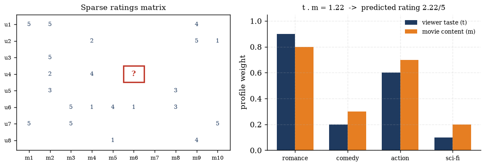
Adjudication. v5's version of this figure asserts an inner product of $1.28$ mapping to "$\approx 4.2/5$" with no rule given for how a raw dot product becomes a 1–5 rating — an orphan number with no derivation. Rather than repeat an unexplained mapping, this figure uses its own toy profiles $\mathbf{t}=(0.9,0.2,0.6,0.1)$, $\mathbf{m}=(0.8,0.3,0.7,0.2)$ and an explicit, disclosed rescaling $\hat r = 1 + 4\cdot\frac{\mathbf{t}\cdot\mathbf{m}}{k}$ (with $k{=}4$ factors, each profile weight capped at 1, so the maximum possible inner product is $k$). The qualitative point — alignment between two learned profiles predicts an unobserved rating — is what matters here; the actual factorisation machinery (matrix factorisation / latent-factor models) is outside this course's scope.
You cannot state $f$, but you can predict a friend's movie ratings once you know their taste — so a pattern exists. And the platform sits on hundreds of millions of filled cells — so data exists. That combination is exactly the opening machine learning needs: let the data reveal the mapping nobody can write down.
1.3 The three screening questions
Given a new problem, ask three questions in order. They decide whether ML is the wrong tool, the only tool, or doomed from the start.
| Question | If yes | If no | |
|---|---|---|---|
| 1 | Can $f$ be pinned down mathematically / algorithmically? | Write the formula or the program — ML is unnecessary (though still possible). | Learning becomes the only route to $f$. |
| 2 | Is there a pattern connecting input to output? | There is structure for a learner to latch onto. | Nothing to learn: on unseen binary cases any predictor degenerates to a coin flip — error $\tfrac12$, no better than chance. |
| 3 | Is there data? | Learning can proceed. | No learning, full stop — a pattern cannot be extracted from zero observations. |
Primality testing fails at question 1 — deterministic algorithms exist, full stop. The Netflix problem, loan approval, spam filtering, and digit recognition pass all three, which is why they anchor the rest of this course.
Question 2 is the one people skip. If no pattern connects inputs to outputs, an algorithm will still happily fit the training set — it will memorise noise and predict at chance on everything unseen. "It ran and produced a $g$ with zero training error" is not evidence that learning happened. Section 1.4 makes precise what evidence would look like, and §7 (learning theory) extends it into a full guarantee.
1.4 Feasibility intuition: can a sample ever prove anything about the future?
Even when a pattern and data both exist, a subtler worry remains. A learner only ever sees a finite training sample $\mathcal{D}$; it is deployed on data it has never seen. Why should performing well on $\mathcal{D}$ say anything about performance on the unseen future? Define two error rates for a hypothesis $h$:
$E_{\text{in}}(h)$ — the in-sample (training) error: the fraction of the $N$ training points $h$ gets wrong.
$E_{\text{out}}(h)$ — the out-of-sample (true) error: the probability $h$ gets a fresh, unseen point wrong, over the whole input distribution.
Only $E_{\text{in}}$ is ever computable from data in hand; $E_{\text{out}}$ is what we actually care about.
The marble-jar analogy. Imagine a jar holding millions of marbles, each red or green, in some fixed but unknown proportion. $E_{\text{out}}(h)$ is the true fraction of red marbles in the whole jar (i.e. the true error rate of the fixed, already-chosen hypothesis $h$ on the whole population). You scoop out $N$ marbles at random; $E_{\text{in}}(h)$ is the fraction of red marbles in that scoop. The question "does a sample say anything about the population?" becomes: does the scoop's red fraction say anything about the jar's red fraction? Hoeffding's inequality answers yes, quantitatively, and the answer gets exponentially better as the scoop grows:
$$P\!\left[\,|E_{\text{in}}(h) - E_{\text{out}}(h)| > \epsilon\,\right] \;\le\; 2\,e^{-2\epsilon^2 N} \qquad \text{for a fixed hypothesis } h.$$Reading the bound: $\epsilon$ is the tolerance ("how close is close enough"), $N$ is the sample size, and the right-hand side is a ceiling on the probability that $E_{\text{in}}$ and $E_{\text{out}}$ disagree by more than $\epsilon$. Crucially, this ceiling shrinks exponentially in $N$ — a small scoop is unreliable, a large one is not.
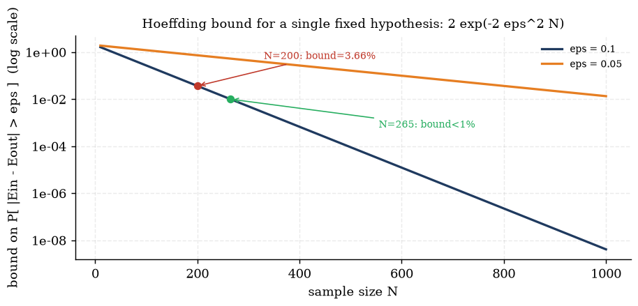
Plugging in numbers. With $\epsilon = 0.1$ and $N = 200$: the bound gives $P[\,\cdot\,] \le 2e^{-2(0.01)(200)} = 2e^{-4} = $ 3.66%. So with $200$ training points, the chance that in-sample error is off from the true error by more than $10$ percentage points is under $4\%$. Want that risk under $1\%$ at the same $\epsilon$? Solving $2e^{-2(0.01)N} < 0.01$ numerically gives $N \ge$ 265 (at $N{=}265$ the bound is 0.998%). The exponential in the exponent makes data extremely valuable: doubling $N$ does not just halve the risk, it squares the improvement factor.
The catch — and why this is only "intuition", not the full story. The bound above holds only for a hypothesis $h$ fixed before you look at the sample. But learning does the opposite: it searches $\mathcal{H}$ and returns the $g$ that looks best on this very sample — and "looks best on this sample" is precisely the kind of selection that can make $E_{\text{in}}$ optimistically biased relative to $E_{\text{out}}$ (think of $M$ separate marble jars, one per hypothesis in $\mathcal{H}$: the learner picks whichever jar's scoop looked reddest, and that pick is more likely to be a lucky/misleading scoop than any single jar chosen in advance). Bounding this multi-hypothesis effect — the union bound over $|\mathcal{H}|=M$, and later the VC dimension when $\mathcal{H}$ is infinite — is the full PAC / VC treatment of §07; this section only establishes that the single-hypothesis version of the question ("does a sample say anything at all?") has a solid, non-trivial "yes" for an answer.
The scoop-vs-jar picture only means anything if the scoop was actually held out — in code, that discipline starts with the very first split of the data.
Code — train/test split discipline (sklearn)
import numpy as np
from sklearn.model_selection import train_test_split
X = np.random.default_rng(0).normal(size=(200, 3))
y = (X[:, 0] + 0.5 * X[:, 1] > 0).astype(int)
# stratify keeps the same class ratio in both halves -- important whenever y is imbalanced
X_train, X_test, y_train, y_test = train_test_split(
X, y, test_size=0.2, random_state=0, stratify=y
)
# E_in is whatever the model reports on X_train; E_out is only ever ESTIMATED, on data
# never touched during fitting -- X_test stands in for the population the Hoeffding bound is about
random_state pins the split for a reproducible interview answer; stratify=y is the difference between an honest E_out estimate and a lucky/unlucky one whenever classes are imbalanced (the confusion-matrix metrics of §5 all assume this discipline was followed upstream).
1.5 Anatomy of a supervised learner
Every supervised algorithm covered in this course — perceptron through gradient boosting — instantiates one diagram with five components.
| Symbol | Object | Loan-desk instance |
|---|---|---|
| $f : \mathcal{X} \to \mathcal{Y}$ | unknown target function | the true (unwritable) credit-worthiness rule |
| $\mathcal{D} = \{(\mathbf{x}_i, y_i)\}_{i=1}^{N}$ | training examples drawn from $f$ (or from $f$ plus noise) | past applicants, with observed repayment outcomes |
| $\mathcal{H} = \{h_1, h_2, \ldots\}$ | hypothesis set — the candidate functions the algorithm is allowed to choose from | e.g. all half-plane decision rules over the applicant's features |
| $\mathcal{A}$ | learning algorithm — the search procedure over $\mathcal{H}$ | the perceptron rule of §2 |
| $g \in \mathcal{H}$, $g \approx f$ | final hypothesis $\mathcal{A}$ selects | the deployed approval rule |
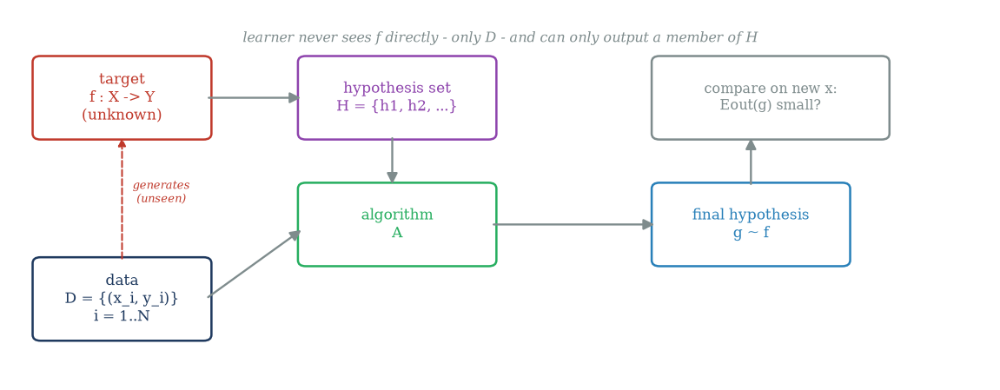
Two silent restrictions worth naming. First, $\mathcal{A}$ learns from $\mathcal{D}$ alone — if the sample misrepresents $f$ (biased collection, label noise, too few examples), no algorithm downstream can recover the truth from thin air. Second, $g$ is forced to come from $\mathcal{H}$ — if $f$ lies far outside anything $\mathcal{H}$ can express (e.g. fitting a straight line to an inherently curved boundary), even infinite, perfectly clean data leaves an irreducible gap. When both restrictions are respected, the informal promise "$g \approx f$" can be made precise as "$E_{\text{in}}(g) \approx E_{\text{out}}(g)$ and $E_{\text{in}}(g)$ is small" — the two halves of the generalisation story picked up again in §6 and §7.
Before $\mathcal{D}$ can feed any algorithm, it has to be inspected — dtypes, missing values, and categorical columns are the first things worth checking on any new dataset.
Code — pandas EDA quickstart (dtypes, missing, encoding)
import pandas as pd
import numpy as np
df = pd.DataFrame({
"age": [25, 32, np.nan, 41, 29],
"income": [45000, 52000, 61000, np.nan, 39000],
"city": ["Pune", "Pune", "Mumbai", "Delhi", "Mumbai"],
})
df.dtypes # object = strings/mixed, float64 = numeric (NaN forces float even for whole numbers)
df.isna().sum() # per-column missing count -- always check before fitting anything
df.describe(include="all") # numeric summary stats + count/unique/top/freq for the object columns
# one-hot encoding: materialises one column per category, fine for linear models
pd.get_dummies(df, columns=["city"], drop_first=True)
# drop_first=True avoids the dummy-variable trap -- one column is a linear combination of
# the others otherwise, i.e. the exact multicollinearity in §2.6.2's X^T X singularity warning
# category dtype: keeps the column compact and lets tree/boosting models split on codes directly
df["city"] = df["city"].astype("category")
df["city"].cat.codes # int codes a tree/boosting library can split on without expanding columns
get_dummies expands categories into columns for models that need a real vector space (linear/logistic regression, KNN, SVM); category + cat.codes is the cheaper choice for tree-based models, which split on raw category identity and gain nothing from one-hot columns.
1.6 One loan desk, three problem types example
An applicant arrives with a feature vector $\mathbf{x}$ — say $x_1 =$ years of residence, $x_2 =$ salary in lakh. The bank can ask three different questions of this same $\mathbf{x}$, and each question defines a different learning problem with a different $\mathcal{Y}$.
1 · Approve or not — classification. $\mathcal{Y} = \{+1, -1\}$. The natural hypothesis set is linear decision rules $h(\mathbf{x}) = \operatorname{sign}(w_0 + w_1 x_1 + w_2 x_2)$ — one hypothesis per weight vector $\mathbf{w} = (w_0, w_1, w_2)$. The boundary is where the score crosses zero:
Many candidate lines from $\mathcal{H}$ separate past approvals from past rejections; the algorithm's job is to pick one. Fix $\mathbf{w} = (-8, 2, 1)$ as a worked instance:
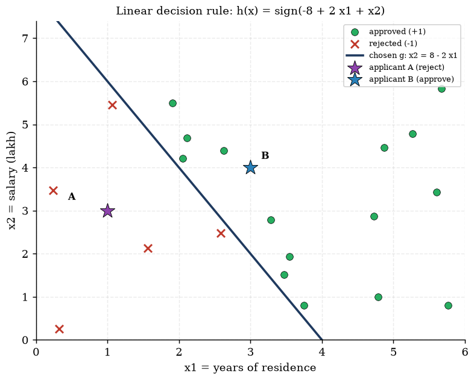
Scoring two applicants. With $\mathbf{w} = (-8, 2, 1)$, applicant A $= (x_1, x_2) = (1, 3)$ and applicant B $= (3, 4)$:
and the boundary from step (1.6) above:
B clears the boundary by only $+2$ score units — near-boundary applicants are exactly where a classifier's specific choice of $g$ (out of the many candidates in $\mathcal{H}$) starts to matter. "Clearing the boundary by a lot" is the informal seed of the margin idea behind support vector machines (§17). $\mathbf{w}$ here was simply handed to us; learning — choosing $\mathbf{w}$ from $\mathcal{D}$ rather than being given it — is the subject of §2 onward.
2 · How much to lend — regression. Same features, but now $\mathcal{Y} = \mathbb{R}$: predict the sanctioned loan amount rather than a verdict. The hypothesis set becomes real-valued linear functions $h(\mathbf{x}) = \mathbf{w}^{\!\top}\mathbf{x}$, and "best line" acquires the precise least-squares meaning derived with full matrix shapes in §2 (pseudo-inverse solution).
3 · How risky — probability of default. Predict $P(\text{default} \mid \mathbf{x}) \in [0,1]$ from data labelled defaulter $(1)$ / non-defaulter $(0)$. A raw linear score $\mathbf{w}^{\!\top}\mathbf{x}$ ranges over all of $\mathbb{R}$, so it must be squashed into $[0,1]$ — the sigmoid link $\sigma(\mathbf{w}^{\!\top}\mathbf{x})$ derived from first principles (why the sigmoid, why cross-entropy and not squared error) in §3.
Same raw feature vector $\mathbf{x}$, three different $\mathcal{Y}$s, three different hypothesis sets, three different loss functions downstream. The single most common beginner mistake is picking an algorithm before pinning down which of these three $\mathcal{Y}$s the problem actually has.
1.7 The learning-paradigm taxonomy
All three loan-desk questions above are supervised: every training input arrives paired with its correct output. Relaxing what the training signal contains produces the other paradigms.
| Paradigm | Training signal | Canonical task | In this course |
|---|---|---|---|
| Supervised | labelled pairs $(\mathbf{x}, y)$ | loan approval, spam filtering, digit recognition | §2–§18 |
| Unsupervised | inputs $\mathbf{x}$ only — no labels | customer segmentation, structure discovery | §19–§20 |
| Reinforcement | a reward / grade for actions taken — never the "correct" action itself | game playing, sequential control | conceptual only |
| Semi-supervised | a few labelled examples plus a much larger unlabelled pool | web-page classification | conceptual only |
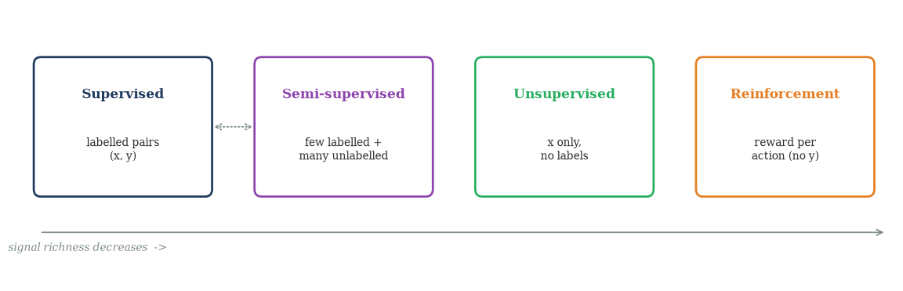
Semi-supervised learning matters in practice because labels are the expensive part of a dataset: crawling a million web pages costs almost nothing, paying annotators to tag each one does not. A handful of labels can orient the clusters an unlabelled mass reveals on its own.
Interpretation. Section 1.3's three questions decide whether to learn at all. Section 1.4's Hoeffding bound is the first piece of evidence for why a finite sample can say something trustworthy about the unseen future — provided the hypothesis was fixed before the data was seen, a caveat that §07 spends an entire section resolving. Section 1.5's five-symbol anatomy — $f, \mathcal{D}, \mathcal{H}, \mathcal{A}, g$ — together with $E_{\text{in}}$/$E_{\text{out}}$, is the vocabulary every remaining section assumes without re-explaining. Sections 1.6–1.7 show that the same setup covers classification, regression, and probability estimation just by changing $\mathcal{Y}$ and the hypothesis set.
1.8 Practice
Practice 1.1 — Route four new scenarios
For each, decide (a) direct algorithm or ML, and (b) if ML, which paradigm.
- Sort a list of $10^6$ numbers. A formula/algorithm exists (any $O(n\log n)$ sort) — question 1 already fails the ML test. Direct algorithm; no learning.
- Predict tomorrow's default probability from labelled repayment histories. No closed form for "true credit risk"; pattern (financial history $\to$ risk) and labelled data both exist. ML — supervised, probabilistic output (§03).
- Group $10^6$ customers by purchasing behaviour with no ground-truth segments. Data exists but there is no label — the grouping structure itself is the target. ML — unsupervised clustering (§19–§20).
- Train an agent to play a new board game, told only "win" or "lose" at the end. No per-move "correct answer", only a delayed scalar reward. ML — reinforcement learning (conceptual in this course).
Practice 1.2 — Score two more applicants and read the boundary
Using the same rule $h(\mathbf{x}) = \operatorname{sign}(-8 + 2x_1 + x_2)$, classify applicant C $= (2, 3)$ and applicant D $= (4, 1)$, and confirm both land on the correct side of the boundary line $x_2 = 8 - 2x_1$.
C: $s_C = -8 + 2(2) + 1(3) = -8+4+3 = -1 \Rightarrow h(C) = -1$ (reject). Check against the boundary: at $x_1{=}2$ the line sits at $x_2 = 8 - 4 = 4$; C's $x_2{=}3 < 4$, i.e. C is below the line, consistent with a negative score (the region below/right of this particular line is the $-1$ side).
D: $s_D = -8 + 2(4) + 1(1) = -8+8+1 = +1 \Rightarrow h(D) = +1$ (approve). At $x_1{=}4$ the line sits at $x_2 = 8-8=0$; D's $x_2{=}1 > 0$, i.e. D is above the line, consistent with a positive score.
General rule confirmed: points above the line $x_2 = 8-2x_1$ score positive (approve), points below score negative (reject) — exactly what $w_2 = +1 > 0$ guarantees (increasing $x_2$ only ever increases the score).
Practice 1.3 — How much data buys a given tolerance?
Using the single-hypothesis Hoeffding bound $2e^{-2\epsilon^2 N} \le \delta$, how large must $N$ be for $\epsilon = 0.05$ to hold with the same $99\%$ confidence used in the worked example ($\delta = 0.01$)?
Solve for $N$: $N \ge \dfrac{1}{2\epsilon^2}\ln\dfrac{2}{\delta} = \dfrac{1}{2(0.05)^2}\ln\dfrac{2}{0.01} = \dfrac{1}{0.005}\ln(200) = 200 \times 5.298 \approx 1060$.
Halving $\epsilon$ (from $0.1$ to $0.05$) roughly quadruples the required $N$ (compare to the $N \approx 265$ needed for $\epsilon=0.1$ at a $1\%$ risk level in the worked example) — a direct consequence of $\epsilon$ appearing squared in the exponent. Tightening your tolerance is expensive; the bound rewards patience with data far more than it punishes impatience with tolerance.
Practice 1.4 — Diagnose a broken learning setup
A team trains a spam filter only on emails received by finance-department employees, then deploys it company-wide and finds it misses most engineering-team spam. Which of §1.5's "two silent restrictions" is violated, and why does more data not fix it?
This is the first restriction: "$\mathcal{A}$ learns from $\mathcal{D}$ alone, and if $\mathcal{D}$ misrepresents $f$, no algorithm can recover." Here $f$ = the true company-wide spam/not-spam rule, but $\mathcal{D}$ was drawn only from the finance sub-population — a biased sample, not a small one. Collecting more finance-department emails would shrink the Hoeffding gap between $E_{\text{in}}$ and $E_{\text{out}}$ for the finance-only distribution, but $E_{\text{out}}$ as computed on the whole company is a different, unrelated quantity — no amount of same-source data closes that gap. The fix is a representative sample, not a bigger one.
2 Linear Models: Perceptron, Pocket & Linear Regression
§1 set up the vocabulary — target $f$, data $\mathcal{D}$, hypothesis set $\mathcal{H}$, algorithm $\mathcal{A}$, final hypothesis $g$ — and stopped at a hand-picked weight vector $\mathbf{w}=(-8,2,1)$ for the loan desk, with the promise that choosing $\mathbf{w}$ from $\mathcal{D}$ is what "learning" means. This section supplies the first three algorithms $\mathcal{A}$ that actually do the choosing.
The oldest and simplest hypothesis class in this whole set of notes is the linear model: a hyperplane cutting through feature space. Three algorithms live on top of it — the perceptron (classification, hard boundary), pocket (classification, robust to noise), and least squares (regression). All three share one object: the weight vector $\mathbf{w}$, and one score: $\mathbf{w}^{\!\top}\mathbf{x}$.
2.1 Setup: the linear score
Given $d$ features $\mathbf{x} = (x_1,\dots,x_d)$, a linear model fits a decision boundary
$$w_1 x_1 + w_2 x_2 + \cdots + w_d x_d + w_0 = 0.$$Augmenting with a dummy coordinate $x_0 = 1$ folds the bias $w_0$ into a single dot product. With $\mathbf{w} = (w_0, w_1, \dots, w_d) \in \mathbb{R}^{d+1}$ and $\mathbf{x} = (1, x_1, \dots, x_d) \in \mathbb{R}^{d+1}$,
$$\sum_{i=0}^{d} w_i x_i = \mathbf{w}^{\!\top}\mathbf{x}.$$What differs between the three algorithms below is only what you do with this score:
| Model | Output | Loss driving the fit |
|---|---|---|
| Perceptron | $h(\mathbf{x}) = \operatorname{sign}(\mathbf{w}^{\!\top}\mathbf{x}) \in \{+1,-1\}$ | 0/1 classification error, minimised by local correction (§2.2) |
| same sign rule | same 0/1 error, but tracked and kept, not just descended (§2.4) | |
| Linear regression | $h(\mathbf{x}) = \mathbf{w}^{\!\top}\mathbf{x} \in \mathbb{R}$ (no sign) | mean squared error, solved in closed form (§2.5) |
Where the model comes from — McCulloch–Pitts (1943). The original artificial neuron took binary inputs with hand-set weights and fired through a hard threshold: output $1$ iff $\sum_i w_i x_i \ge \theta$. Logic gates fall out immediately — $w=(1,1)$ with $\theta=1.5$ computes AND, the same weights with $\theta=0.5$ compute OR, and a negative weight builds NOT. What that unit could not do was learn: every weight was engineered by hand. Rosenblatt's perceptron (1958) is the same unit with the threshold folded into $w_0$, plus — crucially — the update rule below for choosing $\mathbf{w}$ from data.
2.2 The delta rule — geometric derivation derivation
Suppose we misclassify a training point $(\mathbf{x}, y)$ with $y \in \{+1,-1\}$. There are exactly two ways to be wrong.
Case 1 — actual $y=+1$, predicted $\hat y = -1$
Then $\mathbf{w}^{\!\top}\mathbf{x} < 0$: the angle between $\mathbf{w}$ and $\mathbf{x}$ is obtuse (score $=\|\mathbf{w}\|\|\mathbf{x}\|\cos\theta$). We want it acute. Adding $\mathbf{x}$ to $\mathbf{w}$ rotates $\mathbf{w}$ toward $\mathbf{x}$:
$$\mathbf{w}_{\text{new}} = \mathbf{w} + \mathbf{x}. \qquad (1)$$Case 2 — actual $y=-1$, predicted $\hat y = +1$
Now $\mathbf{w}^{\!\top}\mathbf{x} > 0$ (acute), and we want it obtuse. Subtracting $\mathbf{x}$ rotates $\mathbf{w}$ away from $\mathbf{x}$:
$$\mathbf{w}_{\text{new}} = \mathbf{w} - \mathbf{x}. \qquad (2)$$Both cases fold into one line by multiplying $\mathbf{x}$ by $y$:
This is the delta rule (equivalently: the perceptron learning algorithm's update step). The condition $y(\mathbf{w}^{\!\top}\mathbf{x}) \le 0$ is the formal "misclassified" test — it is negative when the sign is wrong, and exactly $0$ at the boundary (by convention $\operatorname{sign}(0) = -1$, so a boundary point also counts as an error and triggers an update). Exactly one correction is applied per misclassified point; correctly classified points are left untouched.
Filling a gap in the hand notes. hand p04 states the boxed update $w_{new} \leftarrow w + y\cdot x$ with no derivation and no statement of when it fires — flagged there as [DERIVATION GAP]. The two-case geometric argument above is that missing derivation, and the mistake condition $y\,\mathbf{w}^{\!\top}\mathbf{x}\le 0$ is the missing trigger. Separately, hand p04's sketch writes the boundary as $w^{T}x^{T}=0$ — the second transpose is a slip (transposing $\mathbf{x}$ a second time is dimensionally meaningless); the correct statement is $\mathbf{w}^{\!\top}\mathbf{x}=0$, used throughout this section.
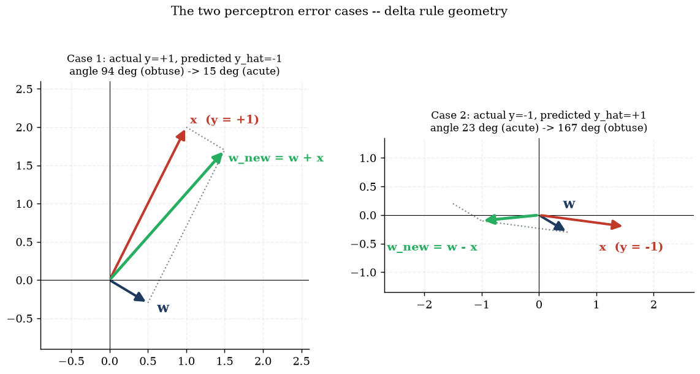
Interpretation. The delta rule is a local, greedy correction — it fixes the current mistake and nothing else. It says nothing about points not currently being visited, which is exactly why one update can un-fix a point that was previously correct. That is what "cycling through all points until zero errors in a full pass" is for.
Shapes
$\mathbf{w} \in \mathbb{R}^{(d+1)\times 1}$, $\mathbf{x} \in \mathbb{R}^{(d+1)\times 1}$, $y \in \{+1,-1\}$ a scalar, $\mathbf{w}^{\!\top}\mathbf{x}$ a $(1\times(d+1))\cdot((d+1)\times1) \to$ scalar. The update $\mathbf{w}+y\mathbf{x}$ is a $(d{+}1)$-vector plus a scaled $(d{+}1)$-vector — shapes match trivially since perceptron has no hidden layers to track.
2.3 Numerical check example
Start with $\mathbf{w}=(0,0,0)$ (bias included) and three augmented points in $\mathbb{R}^2$:
| $i$ | $\mathbf{x}$ (with $x_0=1$) | $y$ |
|---|---|---|
| 1 | (1, 2, 1) | +1 |
| 2 | (1, -1, -1) | -1 |
| 3 | (1, 1, -1) | +1 |
Pass 1. Point 1: $\mathbf{w}^{\!\top}\mathbf{x}_1 = 0$, sign convention maps $0\mapsto -1 \ne y_1$. Misclassified — update:
$$\mathbf{w} \leftarrow (0,0,0) + 1\cdot(1,2,1) = (1,2,1).$$Point 2: $\mathbf{w}^{\!\top}\mathbf{x}_2 = 1-2-1=-2$, sign $-1=y_2$. Correct, no update. Point 3: $\mathbf{w}^{\!\top}\mathbf{x}_3=1+2-1=2$, sign $+1=y_3$. Correct.
Pass 2 re-checks all three points against $\mathbf{w}=(1,2,1)$ — zero updates fire. Converged after a single update, boundary $1+2x_1+x_2=0$.
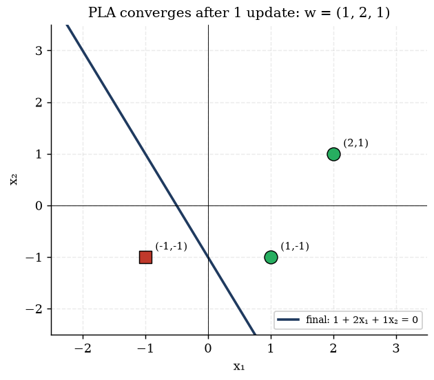
2.4 Convergence and the pocket algorithm
Novikoff's convergence theorem (statement only — full PAC-style proof lives outside this section's scope). If the training data is linearly separable, the perceptron learning algorithm converges to a separating $\mathbf{w}$ in a finite number of updates, bounded by $(R/\gamma)^2$ where $R = \max_i\|\mathbf{x}_i\|$ and $\gamma$ is the margin of the best separator. The intuition: every update strictly increases $\mathbf{w}^{\!\top}\mathbf{w}^\star$ (alignment with an optimal separator $\mathbf{w}^\star$) faster than it can increase $\|\mathbf{w}\|$, so the two cannot diverge forever.
Convergence is only guaranteed when the data is linearly separable. On a non-separable set — the classic XOR configuration $\{+,-,-,+\}$ on the corners of a square being the canonical example — the perceptron oscillates forever: $E_{\text{in}}(\mathbf{w})$ never settles, because every full pass keeps finding at least one misclassified point to correct, and fixing it re-breaks a previously correct one.
Vanilla PLA has no way to report an answer if it never stops. The fix is a small modification called the pocket algorithm:
- Run the perceptron update rule as usual, cycling through the training points.
- After each update, compute the in-sample error $E_{\text{in}}(\mathbf{w}) = \frac{1}{N}\sum_i \mathbb{1}[\operatorname{sign}(\mathbf{w}^{\!\top}\mathbf{x}_i)\ne y_i]$ for the new $\mathbf{w}$.
- Keep the best $\hat{\mathbf{w}}$ seen so far "in your pocket" — replace it only if the new $E_{\text{in}}$ is strictly lower than the pocketed value.
- Stop after a fixed update budget and report $\hat{\mathbf{w}}$, not the current (possibly still-cycling) $\mathbf{w}$.
Vanilla perceptron treats the current $\mathbf{w}$ as the answer. Pocket decouples exploration (keep updating, even into worse territory) from exploitation (report only the best $\mathbf{w}$ ever seen). It is the simplest instance of "early stopping with a memory" — the same idea reappears with model checkpoints in gradient-based training (§4).
Worked example — pocket on a non-separable set example
Take the classic XOR corners plus two near-duplicates (so a plain cyclic sweep does not trivially "converge" the moment it revisits corner 1):
| $i$ | $(x_1,x_2)$ | $y$ |
|---|---|---|
| 1 | (1.0, 1.0) | +1 |
| 2 | (-1.0, -1.0) | +1 |
| 3 | (1.0, -1.0) | -1 |
| 4 | (-1.0, 1.0) | -1 |
| 5 | (1.2, 1.1) | +1 |
| 6 | (-1.1, 1.05) | -1 |
Points 1–4 are literally XOR: same-sign quadrants labelled $+1$, mixed-sign quadrants labelled $-1$ — provably not linearly separable (no single line has all four correctly on their side simultaneously). Starting from $\mathbf{w}=(0,0,0)$ and cycling through the six points, the current $E_{\text{in}}(\mathbf{w}_t)$ bounces between $0.17$ and $0.83$ over 40 update steps and never settles at zero. The pocket-tracked $E_{\text{in}}(\hat{\mathbf{w}})$, in contrast, is monotone non-increasing and locks onto $\tfrac{1}{6}\approx 0.167$ (one point wrong) after step 7, holding there for the rest of the budget.
An exhaustive grid search over $(w_0,w_1,w_2)$ certifies $\tfrac16$ as the best any linear separator can do on this set — pocket found the floor, not just a local plateau.
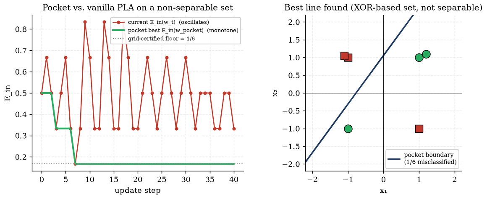
Interpretation. Pocket costs one extra $O(N)$ error evaluation per update compared to vanilla PLA — cheap relative to what it buys: a well-defined stopping answer on data that isn't perfectly separable, which is the common case in practice. Its main limitation is that it has no principled early-exit criterion beyond a fixed budget (unlike, say, cross-validated early stopping in §6), and each candidate replacement still requires a full $O(N)$ pass to recompute $E_{\text{in}}$, making it markedly slower than the plain perceptron on large $N$.
2.5 Practice: k-of-n concepts and a real convergence check
Practice 2.1 — design a perceptron for "3-or-more of 5 inputs are +1"
Let $x_1,\dots,x_5 \in \{+1,-1\}$ and $k$ = number of inputs equal to $+1$. Then $\sum_i x_i = k-(5-k)=2k-5$:
| $k$ | 0 | 1 | 2 | 3 | 4 | 5 |
|---|---|---|---|---|---|---|
| $\sum x_i$ | -5 | -3 | -1 | +1 | +3 | +5 |
| target | -1 | -1 | -1 | +1 | +1 | +1 |
The sign flips between $k=2$ and $k=3$, exactly where $\sum x_i$ crosses $0$; any $w_0\in(-1,1)$ works, take $w_0=0$:
$$\boxed{\;h(\mathbf{x})=\operatorname{sign}\Big(\textstyle\sum_{i=1}^{5}x_i\Big),\quad w_0=0,\;w_1=\cdots=w_5=1.\;}$$Exhaustively checked against all $2^5=32$ possible input patterns — every one classifies correctly. General "$k$-of-$n$" rule with unit weights: $w_0 = n-2k+1$.
Practice 2.2 — run PLA on the 7-segment even/odd problem; how many epochs does it actually take?
A 7-segment display encodes digits 0–9 as binary strings over $[s_1,\dots,s_7]$; label even digits $+1$, odd $-1$. This is not a hand-derivable formula like Practice 2.1 — it has to be trained. Running the plain cyclic PLA (digits visited in order $0,1,\dots,9$, repeated) from $\mathbf{w}=\mathbf{0}$:
Converges after 6 epochs (18 total updates) to
$$\mathbf{w} = (w_0; w_{s_1},\dots,w_{s_7}) = (0;\,-1,\,1,\,-1,\,-1,\,6,\,2,\,-1).$$Every one of the 10 digits' scores $\mathbf{w}^{\!\top}\mathbf{x}_d$ matches its target sign — verified directly, not asserted.
Adjudication — a v5 claim we cannot reproduce. v5 §01 asserts this problem "converges in 10 epochs" to $\mathbf{w}=(-4,1,-3,-3,8,4,1)$ with $w_0=-1$, and flags itself as unprovenanced (the epochs are asserted, not shown). Running the actual perceptron learning algorithm here gives a different separating hyperplane, in 6 epochs, not 10. Both weight vectors correctly classify all 10 digits — this is not a contradiction: the perceptron solution is not unique whenever a separable dataset admits more than one separating hyperplane (as this one clearly does, being only $10$ points in $\mathbb{R}^7$), and the converged $\mathbf{w}$ depends on the visitation order and starting point. What v5 got right qualitatively (a single-layer perceptron does separate this labelling) stands; the specific weights and epoch count in v5 have no derivation trail and are superseded here by a fully reproducible run.
The fact that PLA converges at all is the proof this parity labelling is linearly separable in $\mathbb{R}^7$ — convergence is itself a constructive existence proof. In our run the largest-magnitude weight lands on $s_5$ (lower-left segment, weight $+6$): $s_5$ is on for most even digits and off for most odd ones, so it carries the dominant signal, with the smaller weights patching up the exceptions.
2.6 Linear regression: model & loss
Same linear score as the perceptron, but the output is the score itself — no sign, since the target is now continuous (e.g. predicting a loan amount from salary and tenure, rather than approve/reject):
$$h(\mathbf{x}) = \mathbf{w}^{\!\top}\mathbf{x} \in \mathbb{R}.$$The per-point residual is $e_i = \mathbf{w}^{\!\top}\mathbf{x}_i - y_i$, and the in-sample error is Mean Squared Error:
$$E_{\text{in}}(\mathbf{w}) = \frac{1}{N}\sum_{i=1}^{N}\big(\mathbf{w}^{\!\top}\mathbf{x}_i - y_i\big)^2.$$2.6.1 Matrix form — shapes at every step
Stack all $N$ training points. With $d$ features (plus bias), define:
$$\mathbf{w}=\begin{pmatrix}w_0\\w_1\\\vdots\\w_d\end{pmatrix}_{\!(d+1)\times 1},\qquad X = \begin{pmatrix}-\mathbf{x}_1^{\!\top}-\\-\mathbf{x}_2^{\!\top}-\\\vdots\\-\mathbf{x}_N^{\!\top}-\end{pmatrix}_{\!N\times(d+1)},\qquad Y = \begin{pmatrix}y_1\\\vdots\\y_N\end{pmatrix}_{\!N\times 1}.$$Then $X\mathbf{w}$ has shape $(N\times(d{+}1))\cdot((d{+}1)\times1) = N\times1$ — one predicted score per row — and $X\mathbf{w}-Y \in \mathbb{R}^{N\times1}$ is the residual vector. Using $\|\mathbf{v}\|_2^2 = \mathbf{v}^{\!\top}\mathbf{v}$,
$$E_{\text{in}}(\mathbf{w}) = \tfrac{1}{N}\|X\mathbf{w}-Y\|_2^2.$$2.6.2 Closed-form minimiser derivation
$(X^{\!\top}X)^{-1}$ exists only if $X$ has full column rank — features must be linearly independent. If two features are perfectly collinear (or $N < d{+}1$), $X^{\!\top}X$ is singular and the closed form breaks. Concretely: for the 3 points $(x_1,x_2)\in\{(1,2),(2,4),(3,6)\}$ with $x_2=2x_1$ exactly,
$$X^{\!\top}X = \begin{pmatrix}3&6&12\\6&14&28\\12&28&56\end{pmatrix},\qquad \det(X^{\!\top}X)=0.$$No inverse exists — the fix is regularisation (ridge, §6) or dropping the redundant feature.
2.7 Numerical check example
Fit $y = w_0 + w_1 x$ to three points $(1,2),(2,2),(3,4)$:
$$X = \begin{pmatrix}1&1\\1&2\\1&3\end{pmatrix},\quad Y=\begin{pmatrix}2\\2\\4\end{pmatrix}.$$$X^{\!\top}X = \begin{pmatrix}3&6\\6&14\end{pmatrix}$, $\det = 3\cdot14-6\cdot6=6$, so $(X^{\!\top}X)^{-1}=\tfrac16\begin{pmatrix}14&-6\\-6&3\end{pmatrix}$. Next $X^{\!\top}Y=\begin{pmatrix}8\\18\end{pmatrix}$, hence
$$\mathbf{w}^\star = \tfrac16\begin{pmatrix}14&-6\\-6&3\end{pmatrix}\begin{pmatrix}8\\18\end{pmatrix} = \tfrac16\begin{pmatrix}112-108\\-48+54\end{pmatrix} = \begin{pmatrix}2/3\\1\end{pmatrix}.$$Best-fit line: $\hat y = \tfrac23 + x$. Residuals $(\hat y_i - y_i)$: $-\tfrac13,\ \tfrac23,\ -\tfrac13$; $\text{SSE}=\tfrac{2}{3}$, MSE $=\tfrac{2}{9}\approx0.222$, $R^2 = 0.75$.
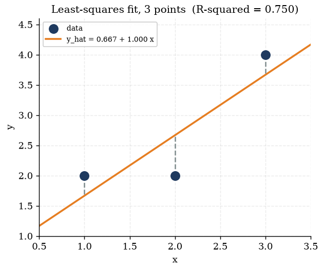
A second worked example — 2 features, so $X$ is genuinely $N\times(d{+}1)$ with $d>1$
Predict an exam score $y$ from hours studied $x_1$ and hours slept $x_2$, over 5 students:
| $x_1$ (hrs studied) | $x_2$ (hrs slept) | $y$ (score) |
|---|---|---|
| 2 | 6 | 55 |
| 4 | 7 | 70 |
| 6 | 5 | 78 |
| 8 | 8 | 95 |
| 10 | 6 | 92 |
Here $X$ is $5\times3$ ($N=5$, $d{+}1=3$), so $X^{\!\top}X$ is the $3\times3$ matrix
$$X^{\!\top}X = \begin{pmatrix}5&30&32\\30&220&194\\32&194&210\end{pmatrix},\qquad \det(X^{\!\top}X) = 1020,$$and solving $X^{\!\top}X\,\mathbf{w}=X^{\!\top}Y$ by cofactor inversion gives
$$\mathbf{w}^\star \approx (29.04,\ 4.79,\ 3.16),$$i.e. $\widehat{\text{score}} \approx 29.04 + 4.79\,x_1 + 3.16\,x_2$: each extra hour studied is worth about $4.8$ points, each extra hour slept about $3.2$ points, on top of a $29$-point baseline. SSE $=47.07$, MSE $=9.41$, $R^2=0.956$ — the two-feature line explains 95.6% of the score variance across these five students.
The same fit, three ways: the pseudo-inverse from §2.6.2's derivation, the normal equations directly, and the production sklearn API.
Code — least squares: numpy pseudo-inverse vs. sklearn (numpy / sklearn)
import numpy as np
# --- from-scratch: pseudo-inverse solution, matches §2.6.2's normal equations exactly ---
X = np.array([[1, 2, 6], [1, 4, 7], [1, 6, 5], [1, 8, 8], [1, 10, 6]], dtype=float) # bias column first
y = np.array([55, 70, 78, 95, 92], dtype=float)
w_star = np.linalg.pinv(X) @ y # Moore-Penrose pseudo-inverse -- degrades gracefully if X^T X is singular
w_normal_eq = np.linalg.solve(X.T @ X, X.T @ y) # equivalent when X has full column rank; raises LinAlgError if not
# --- sklearn: same fit, production API ---
from sklearn.linear_model import LinearRegression
reg = LinearRegression() # fit_intercept=True by default -- do NOT also prepend a manual bias column
reg.fit(X[:, 1:], y) # drop the bias column here; sklearn fits its own intercept_
reg.coef_, reg.intercept_ # coef_ matches w_star[1:], intercept_ matches w_star[0]
np.linalg.pinv never raises on a singular X^T X (it returns the minimum-norm solution instead), which is why it — not np.linalg.solve — is the safer default when you haven't first checked the rank; sklearn's LinearRegression re-centres internally, so fit_intercept and a manual bias column must never both be used or the intercept is double-counted.
Interpretation. The pseudo-inverse solution is a single matrix computation — no iteration, no learning rate, no convergence check — which is exactly why it is the right tool whenever $d$ is small enough that inverting a $(d{+}1)\times(d{+}1)$ matrix is cheap ($O(d^3)$ for the inversion, $O(Nd^2)$ to form $X^{\!\top}X$). It stops being the right tool once $d$ is large (the inversion cost dominates) or $X^{\!\top}X$ is near-singular (collinearity) — both are exactly where gradient-based fitting (§4) and ridge regularisation (§6) take over.
2.8 The geometry of least squares: the hat matrix derivation
Everything so far has treated $\mathbf{w}^\star=(X^{\!\top}X)^{-1}X^{\!\top}Y$ as the output of a calculus exercise: differentiate a quadratic, set the gradient to zero. There is a second, entirely geometric reading of the same formula, and it is the one that makes the rest of this section — assumptions, diagnostics, $R^2$, inference — fall out almost for free. A deck of regression slides states the object and asks for the derivation without giving it; this subsection supplies it.
Notation bridge. The source deck writes the estimator as $\hat{\beta} = (X^{\!\top}X)^{-1}X^{\!\top}y$ — the same object this section has been calling $\mathbf{w}^\star$. From here on we follow the source's $\hat{\boldsymbol\beta}$, since the statistical literature (and §3's GLM machinery) uses it universally; read $\hat{\boldsymbol\beta} \equiv \mathbf{w}^\star$ throughout. One further convention change: statistics defines the residual as $\mathbf{e} = \mathbf{y}-\hat{\mathbf{y}}$, which is the negative of §2.6's $e_i = \mathbf{w}^{\!\top}\mathbf{x}_i - y_i$. Every squared quantity (SSE, MSE, $R^2$) is unaffected; only the reported signs flip. On the slide the hat renders as a detached circumflex after the glyph ("βˆ") — a font artefact, not a different symbol.
2.8.1 Deriving $\hat{\boldsymbol\beta}$ from orthogonality derivation
Fix shapes first, because every step below is a shape argument in disguise. With $N$ observations and $p = d+1$ parameters (slopes plus intercept):
| Object | Shape | Lives in |
|---|---|---|
| $X$ (design matrix) | $N \times p$ | — |
| $\mathbf{y}$ (targets) | $N \times 1$ | $\mathbb{R}^N$ |
| $\hat{\boldsymbol\beta}$ | $p \times 1$ | $\mathbb{R}^p$ (parameter space) |
| $\hat{\mathbf{y}} = X\hat{\boldsymbol\beta}$ | $N \times 1$ | $\operatorname{col}(X) \subset \mathbb{R}^N$, a $p$-dimensional subspace |
| $\mathbf{e} = \mathbf{y}-\hat{\mathbf{y}}$ | $N \times 1$ | $\operatorname{col}(X)^{\perp}$, an $(N{-}p)$-dimensional subspace |
The key observation: as $\boldsymbol\beta$ ranges over all of $\mathbb{R}^p$, the fitted vector $X\boldsymbol\beta$ traces out exactly the column space of $X$ — the set of all linear combinations of $X$'s $p$ columns. So least squares is not really a search over parameters at all; it is the question
$$\min_{\mathbf{v}\,\in\,\operatorname{col}(X)} \|\mathbf{y}-\mathbf{v}\|_2^2 ,$$and the answer to that question is a fact of Euclidean geometry, not of optimisation: the closest point of a subspace to an external point is its orthogonal projection, and the line joining them is perpendicular to the subspace.
Not one derivative was taken. §2.6.2 and this derivation reach the identical formula from opposite directions — calculus says "the gradient vanishes", geometry says "the residual is perpendicular" — and they must agree, because the gradient of $\|\mathbf{y}-X\boldsymbol\beta\|^2$ is $-2X^{\!\top}\mathbf{e}$.
2.8.2 The projection (hat) matrix
Substituting $\hat{\boldsymbol\beta}$ back gives the fitted values as a linear function of $\mathbf{y}$:
$$\hat{\mathbf{y}} = X\hat{\boldsymbol\beta} = \underbrace{X(X^{\!\top}X)^{-1}X^{\!\top}}_{\textstyle P}\,\mathbf{y}, \qquad P \in \mathbb{R}^{N\times N}.$$$P$ is the projection matrix, universally nicknamed the hat matrix because it is the operator that "puts the hat on $\mathbf{y}$". Its complement $M = I_N - P$ produces the residuals: $\mathbf{e} = \mathbf{y}-\hat{\mathbf{y}} = (I_N-P)\mathbf{y} = M\mathbf{y}$. Shapes: $X$ is $(N\times p)$, $(X^{\!\top}X)^{-1}$ is $(p\times p)$, $X^{\!\top}$ is $(p\times N)$ — the product collapses to $(N\times N)$, an operator on target space, not on parameter space.
Proposition. $P$ is symmetric and idempotent.
Symmetry $P^{\!\top}=P$. Use $(ABC)^{\!\top}=C^{\!\top}B^{\!\top}A^{\!\top}$ and $(A^{-1})^{\!\top}=(A^{\!\top})^{-1}$:
$$P^{\!\top} = \big[X(X^{\!\top}X)^{-1}X^{\!\top}\big]^{\!\top} = (X^{\!\top})^{\!\top}\big[(X^{\!\top}X)^{-1}\big]^{\!\top}X^{\!\top} = X\big[(X^{\!\top}X)^{\!\top}\big]^{-1}X^{\!\top} = X(X^{\!\top}X)^{-1}X^{\!\top} = P,$$where the last step uses that $X^{\!\top}X$ is itself symmetric: $(X^{\!\top}X)^{\!\top} = X^{\!\top}(X^{\!\top})^{\!\top} = X^{\!\top}X$.
Idempotency $P^2=P$. Write the product out and cancel the middle pair:
$$PP = X(X^{\!\top}X)^{-1}\underbrace{X^{\!\top}X}_{\text{cancels}}(X^{\!\top}X)^{-1}X^{\!\top} = X\underbrace{(X^{\!\top}X)^{-1}I_p}_{=(X^{\!\top}X)^{-1}}X^{\!\top} = P.$$Corollaries. $M=I-P$ is also symmetric and idempotent ($M^2 = I-2P+P^2 = I-P = M$), the two are orthogonal to each other ($PM = P-P^2 = 0$), and
$$\operatorname{tr}(P) = \operatorname{tr}\!\big(X(X^{\!\top}X)^{-1}X^{\!\top}\big) = \operatorname{tr}\!\big((X^{\!\top}X)^{-1}X^{\!\top}X\big) = \operatorname{tr}(I_p) = p,$$using the cyclic property $\operatorname{tr}(AB)=\operatorname{tr}(BA)$. Hence $\operatorname{tr}(M)=N-p$ — the residual degrees of freedom, the number that will appear as the denominator of every variance estimate in §2.12.
Why idempotency is the whole story. $P^2=P$ says "projecting something that is already in the subspace does nothing" — apply the shadow-casting operator twice and the shadow does not move. Combined with symmetry it makes $P$ an orthogonal projector rather than a skew one, which is exactly the statement that the projection is along a perpendicular. And because an idempotent matrix has only eigenvalues $0$ and $1$, $\operatorname{tr}(P)=p$ is literally counting eigenvalue-$1$ directions: $P$ keeps $p$ dimensions of $\mathbb{R}^N$ and annihilates the other $N-p$.
2.8.3 Two orthogonality proofs derivation
The slide poses both as exercises with no worked answer. Both are two lines once $M=I-P$ is available.
(a) Residuals are orthogonal to the regressors: $X^{\!\top}\mathbf{e}=\mathbf{0}$.
$$X^{\!\top}\mathbf{e} = X^{\!\top}(I-P)\mathbf{y} = X^{\!\top}\mathbf{y} - X^{\!\top}X(X^{\!\top}X)^{-1}X^{\!\top}\mathbf{y} = X^{\!\top}\mathbf{y} - I_p X^{\!\top}\mathbf{y} = \mathbf{0}.$$Shapes: $(p\times N)(N\times 1) \to (p\times 1)$, so this is $p$ separate scalar orthogonality statements, one per feature.
(b) Residuals are orthogonal to fitted values: $\mathbf{e}^{\!\top}\hat{\mathbf{y}}=0$.
$$\mathbf{e}^{\!\top}\hat{\mathbf{y}} = (M\mathbf{y})^{\!\top}(P\mathbf{y}) = \mathbf{y}^{\!\top}M^{\!\top}P\,\mathbf{y} = \mathbf{y}^{\!\top}MP\,\mathbf{y} = \mathbf{y}^{\!\top}(P-P^2)\mathbf{y} = \mathbf{y}^{\!\top}\mathbf{0}\,\mathbf{y} = 0,$$using $M^{\!\top}=M$ and then $MP=0$. Note (b) is a consequence of (a): $\hat{\mathbf{y}}$ is a linear combination of the columns of $X$, and $\mathbf{e}$ is perpendicular to every one of them.
(c) A free corollary — residuals sum to zero. If the model contains an intercept, the all-ones vector $\mathbf{1}$ is one of $X$'s columns, so (a) gives $\mathbf{1}^{\!\top}\mathbf{e} = \sum_i e_i = 0$ automatically. The sample assumption $\mathbb{E}[\varepsilon]=0$ is therefore not something OLS can violate in sample — it is enforced by the algebra, provided you fitted an intercept. That is exactly why the remedy column for that row of the assumptions table reads "include intercept".
(d) Pythagoras. Since $\mathbf{y}=\hat{\mathbf{y}}+\mathbf{e}$ with the two parts perpendicular, $\|\mathbf{y}\|^2 = \|\hat{\mathbf{y}}\|^2+\|\mathbf{e}\|^2$. Centring $\mathbf{y}$ first turns this into $\text{SST}=\text{SSR}+\text{SSE}$, the decomposition $R^2$ is built on (§2.10).
2.8.4 The projection made concrete example
Take §2.7's 3-point fit — $(1,2),(2,2),(3,4)$ — precisely because $N=3$ and $p=2$: the column space is a 2-D plane sitting inside $\mathbb{R}^3$, so the whole picture is drawable.
$$X = \begin{pmatrix}1&1\\1&2\\1&3\end{pmatrix}_{3\times 2},\qquad \operatorname{col}(X) = \operatorname{span}\!\left\{\begin{pmatrix}1\\1\\1\end{pmatrix},\begin{pmatrix}1\\2\\3\end{pmatrix}\right\},\qquad \mathbf{y}=\begin{pmatrix}2\\2\\4\end{pmatrix}.$$From §2.7, $(X^{\!\top}X)^{-1}=\tfrac16\begin{pmatrix}14&-6\\-6&3\end{pmatrix}$, so
$$P = X(X^{\!\top}X)^{-1}X^{\!\top} = \frac{1}{6}\begin{pmatrix}5&2&-1\\2&2&2\\-1&2&5\end{pmatrix}_{3\times 3}.$$Read off the three checks directly:
| Property | Check | Value |
|---|---|---|
| Symmetric | $\max_{ij}|P-P^{\!\top}|$ | 0 (exactly — the matrix above is visibly symmetric) |
| Idempotent | $\max_{ij}|PP-P|$ | $3\times10^{-16}$ (floating-point zero) |
| Trace = rank | $\operatorname{tr}(P)=\tfrac{5+2+5}{6}$ | 2 = $p$ = rank$(X)$ |
| Complement | $\operatorname{tr}(M)=N-p$ | 1 |
Applying $P$ and $M$ to $\mathbf{y}$:
$$\hat{\mathbf{y}} = P\mathbf{y} = \tfrac13\begin{pmatrix}5\\8\\11\end{pmatrix} = \begin{pmatrix}1.6\overline{6}\\2.6\overline{6}\\3.6\overline{6}\end{pmatrix},\qquad \mathbf{e} = M\mathbf{y} = \tfrac13\begin{pmatrix}1\\-2\\1\end{pmatrix}.$$Verify the identity $\hat{\mathbf{y}} = X\hat{\boldsymbol\beta}$ against §2.7's $\hat{\boldsymbol\beta}=(\tfrac23,1)$: row 2 gives $\tfrac23 + 1\cdot 2 = \tfrac83$ ✓. And the orthogonality claims, arithmetic in full:
- $\mathbf{1}^{\!\top}\mathbf{e} = \tfrac13(1-2+1) = 0$ — residuals sum to zero (proof (c)).
- $(1,2,3)\cdot\mathbf{e} = \tfrac13(1-4+3) = 0$ — orthogonal to the $x$ column too, so $X^{\!\top}\mathbf{e}=\mathbf{0}$ (proof (a)); numerically $\max|X^{\!\top}\mathbf{e}| = 1.4\times10^{-14}$.
- $\mathbf{e}^{\!\top}\hat{\mathbf{y}} = \tfrac13\cdot\tfrac13(1\cdot5 - 2\cdot 8 + 1\cdot 11) = \tfrac19(5-16+11)=0$ (proof (b)); the computed angle between $\mathbf{e}$ and each column is $90.000°$.
- Pythagoras: $\|\mathbf{y}\|^2 = 4+4+16 = 24$ and $\|\hat{\mathbf{y}}\|^2+\|\mathbf{e}\|^2 = 23.333+0.667 = 24.000$ ✓ ($\|\mathbf{y}\|=4.899$, $\|\hat{\mathbf{y}}\|=4.830$, $\|\mathbf{e}\|=0.816$).
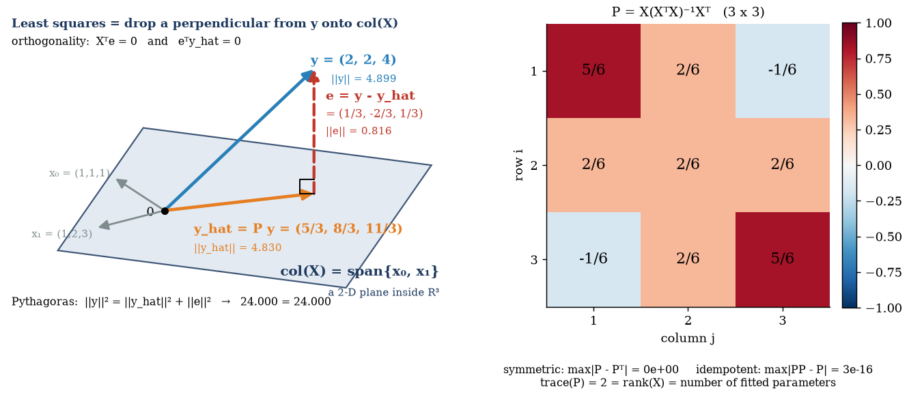
Interpretation. $P$ depends on $X$ only — the targets never enter it. That single fact explains most of what follows. The fit's flexibility, the degrees of freedom $N-p$, the leverage of each observation, and the variance of every coefficient are all fixed the moment you choose your design matrix, before you look at a single $y$. It also explains why "add a feature" always weakly increases $R^2$: enlarging $X$ enlarges $\operatorname{col}(X)$, and a point can only get closer to a bigger subspace, never further away (§2.10). What breaks it: if $X$ loses full column rank, $(X^{\!\top}X)^{-1}$ does not exist and $P$ is undefined by this formula — the projection still exists geometrically, but $\hat{\boldsymbol\beta}$ stops being unique (§2.11).
The diagonal entries $h_{ii}=P_{ii}$ are the leverages: $\partial\hat y_i/\partial y_i = h_{ii}$, i.e. how much observation $i$ drags its own fitted value. They obey $0\le h_{ii}\le 1$ and $\sum_i h_{ii}=p$, so the average leverage is always $p/N$ regardless of the data, and the usual flag is $h_{ii} > 2p/N$. Here $\operatorname{diag}(P) = (5/6,\,2/6,\,5/6) = (0.833,\,0.333,\,0.833)$: the two endpoint observations carry two-and-a-half times the leverage of the middle one, which is the generic behaviour — extreme $x$ values pull hardest. With $N=3$ and $p=2$ the $2p/N = 1.33$ threshold exceeds the maximum possible leverage of 1, so no point can ever be flagged: leverage rules of thumb are meaningless at tiny $N$.
2.9 OLS assumptions, violations and diagnostics
The closed form $\hat{\boldsymbol\beta}=(X^{\!\top}X)^{-1}X^{\!\top}\mathbf{y}$ is pure linear algebra and needs nothing but full column rank. Everything beyond the point estimate — standard errors, $t$-tests, confidence intervals, $p$-values — rests on a model of how the data was generated:
$$\mathbf{y} = X\boldsymbol\beta + \boldsymbol\varepsilon, \qquad \boldsymbol\varepsilon \in \mathbb{R}^{N\times 1},$$together with assumptions on $\boldsymbol\varepsilon$. The source deck lists seven:
- Linearity / correct specification — the model is linear in the parameters (not necessarily in the features: $x^2$ and $\log x$ are fine as columns), and no relevant variable is omitted.
- Independent errors — $\operatorname{Cov}(\varepsilon_i,\varepsilon_j)=0$ for $i\ne j$.
- Zero-mean errors — $\mathbb{E}[\boldsymbol\varepsilon]=\mathbf{0}$.
- Homoscedasticity — $\operatorname{Var}(\varepsilon_i)=\sigma^2$, the same $\sigma^2$ for every observation.
- No perfect multicollinearity — $X$ has full column rank (§2.11).
- Exogeneity — $\operatorname{Cov}(X,\boldsymbol\varepsilon)=0$: the regressors carry no information about the error.
- Normality of errors — $\boldsymbol\varepsilon \sim \mathcal{N}(\mathbf{0},\sigma^2 I_N)$.
Assumptions 2–4 combine into the compact statement $\operatorname{Var}(\boldsymbol\varepsilon)=\sigma^2 I_N$: constant variance down the diagonal, zeros off it.
Adjudication — the deck's error symbol is inconsistent. Slide 1 writes assumption 3 as $E[\varepsilon]=0$ but assumption 6 as $\operatorname{Cov}(X,u)=0$, switching from $\varepsilon$ to $u$ midway through one list, and the transcript flags this as a probable typo. Both symbols denote the same object — the population error term — and the mixture is a transcription slip, not a distinction: $u$ is the econometrics convention, $\varepsilon$ the statistics one, and a single list should commit to one. We use $\boldsymbol\varepsilon$ throughout. Nothing in the mathematics changes; what would be genuinely wrong is to read $u$ as a different quantity from $\varepsilon$ and conclude the deck states eight assumptions about two error terms.
Which assumptions matter for what is the question students get wrong most often. Assumptions 1, 5 and 6 are needed for $\hat{\boldsymbol\beta}$ to be unbiased — violate them and the point estimate itself is wrong. Assumptions 2 and 4 are needed for the standard-error formula $\sigma^2(X^{\!\top}X)^{-1}$ — violate them and $\hat{\boldsymbol\beta}$ is still unbiased but every $p$-value and confidence interval is untrustworthy. Assumption 7 is needed only for exact small-sample $t$ and $F$ distributions; at large $N$ the CLT rescues inference without it. "My residuals aren't normal" is therefore a much milder problem than "my residuals fan out".
2.9.1 Violations, detection and remedies
The deck's full diagnostic table, reproduced with the source's own wording in the middle columns and one added column making the unbiasedness-versus-standard-errors split above explicit:
| Assumption | What breaks | Effect of violation | Detection | Remedy |
|---|---|---|---|---|
| Linearity / correct specification | the estimate | Biased model | Residual plots (curvature vs fitted values) | Transform, add features |
| Independent errors | the standard errors | Incorrect SEs | Durbin–Watson statistic | Time-series models, HAC (Newey–West) SEs |
| $\mathbb{E}[\varepsilon]=0$ | the intercept | Biased intercept | Residual mean ($\approx 0$) | Include an intercept |
| Homoscedasticity | the standard errors | Incorrect standard errors | Breusch–Pagan test, residual plots | Robust (White/HC) SEs, weighted least squares |
| No perfect multicollinearity | identifiability | Coefficients not identifiable | VIF (§2.11) | Remove variables, Ridge, PCA |
| Exogeneity | the estimate | Biased & inconsistent $\hat{\boldsymbol\beta}$ | Theory, Hausman test | Instrumental variables, fixed effects |
| Normality of errors | small-sample inference | Invalid small-sample inference | QQ plot, Shapiro–Wilk test | Bootstrap, transform the response |
The slide abbreviates the homoscedasticity test as "BP test" without expanding it: that is the Breusch–Pagan test, which regresses the squared residuals $e_i^2$ on the regressors and refers $N R^2_{\text{aux}}$ to a $\chi^2_k$ null — literally asking "can the fitted values predict how big the errors are?". Under homoscedasticity they cannot, so $R^2_{\text{aux}}\approx 0$.
2.9.2 Reading a residual plot example
The deck's residual-diagnostics slide names five tools — residual plots for pattern detection, QQ plots for normality, studentized residuals for outliers, leverage for unusual $X$ values, and Cook's distance for influence — but shows no plots. Fig. 2.6 supplies them: three synthetic residual sets of $n=60$, each violating a different assumption, with the corresponding formal test statistic computed on the same data.
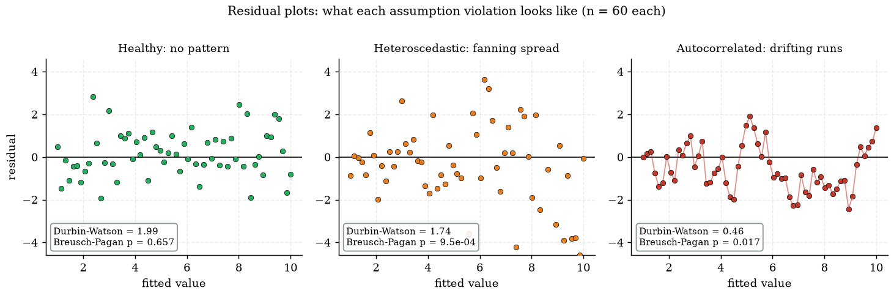
Interpretation. The two statistics are not interchangeable — each panel is caught by exactly one of them, which is why the deck lists a different detector per row. Durbin–Watson is $\text{DW} = \sum_{i=2}^{N}(e_i-e_{i-1})^2 / \sum_i e_i^2 \approx 2(1-\hat\rho)$, so $\text{DW}\approx 2$ means no autocorrelation, $\text{DW}\to 0$ means strong positive autocorrelation ($\hat\rho\approx 0.77$ in the right-hand panel), $\text{DW}\to 4$ means negative. Note also the false-positive risk: the autocorrelated panel's Breusch–Pagan $p=0.017$ would "detect" heteroscedasticity that was never simulated — drift in the mean masquerades as drift in the variance. Run the plots and the tests, and diagnose the assumption you actually suspect. On the section's own 5-student fit (§2.7) the residuals give $\text{DW}=1.51$ and sum to $-4\times10^{-12}$ (numerically zero, exactly as proof (c) of §2.8.3 guarantees) — but with $N=5$ no diagnostic has any power, which is the honest reading.
2.9.3 Outliers, leverage and influence — the rest of slide 6 example
Residual plots and the two formal tests above cover the first two of the deck's five tools. The remaining three — studentized residuals, leverage and Cook's distance — are named there with no formulas, so here they are, each built from the hat matrix of §2.8.
Write $h_{ii}=P_{ii}$ for the leverage of observation $i$ (§2.8's warn box) and $\hat\sigma^2=\text{SSE}/(N-p)$. Because $\operatorname{Var}(e_i)=\sigma^2(1-h_{ii})$ — high-leverage points drag the fit toward themselves and so have artificially small raw residuals — the raw $e_i$ are not comparable across observations. Dividing by their own standard deviations fixes that:
$$\underbrace{r_i = \frac{e_i}{\hat\sigma\sqrt{1-h_{ii}}}}_{\text{internally studentized}},\qquad \underbrace{t_i = \frac{e_i}{\hat\sigma_{(i)}\sqrt{1-h_{ii}}} \sim t_{N-p-1}}_{\text{externally studentized (deleted)}},\qquad D_i = \frac{r_i^2}{p}\cdot\frac{h_{ii}}{1-h_{ii}} .$$$\hat\sigma_{(i)}^2$ is the residual variance refitted with observation $i$ removed, which is what makes $t_i$ exactly $t$-distributed: the point being tested no longer contributes to the yardstick it is measured against. Cook's distance $D_i$ multiplies the two ideas — how badly the point is fitted ($r_i^2$) times how much say it has ($h_{ii}/(1-h_{ii})$) — and equals the scaled distance the whole coefficient vector moves when observation $i$ is deleted. The usual flags are $h_{ii}>2p/N$, $|t_i|$ beyond a Bonferroni-corrected $t$ quantile, and $D_i>4/N$.
Computed on the 10-student model of §2.11 with the collinear $x_3$ dropped ($N=10$, $p=3$, so $\hat\sigma^2=8.815$, mean leverage $p/N=0.3$, flags $h_{ii}>0.6$ and $D_i>0.4$):
| student | 1 | 2 | 3 | 4 | 5 | 6 | 7 | 8 | 9 | 10 |
|---|---|---|---|---|---|---|---|---|---|---|
| $e_i$ | -1.975 | 0.309 | 3.606 | 2.549 | -5.154 | -2.668 | 1.958 | 0.571 | 0.539 | 0.265 |
| $h_{ii}$ | 0.405 | 0.185 | 0.316 | 0.402 | 0.380 | 0.265 | 0.144 | 0.342 | 0.438 | 0.124 |
| $r_i$ (internal) | -0.863 | 0.115 | 1.468 | 1.110 | -2.204 | -1.049 | 0.713 | 0.237 | 0.242 | 0.095 |
| $t_i$ (external) | -0.845 | 0.107 | 1.634 | 1.132 | -3.688 | -1.057 | 0.685 | 0.220 | 0.225 | 0.088 |
| $D_i$ (Cook) | 0.169 | 0.001 | 0.331 | 0.276 | 0.990 | 0.132 | 0.028 | 0.010 | 0.015 | 0.000 |
Two checks first: $\sum_i h_{ii} = 3.000 = p$ exactly (§2.8.2), and the largest leverage, student 9's $0.438$, is nowhere near the $0.6$ flag — no observation here is unusual in $X$. Student 5 is a different story. Their raw residual $-5.154$ is the largest, their internally studentized residual $-2.204$ looks borderline, and the deleted version blows up to $-3.688$ once the point stops inflating its own yardstick. Cook's distance $0.990$ is nearly $2.5\times$ the $4/N=0.4$ threshold and $3\times$ the next-largest point's.
Interpretation. The three tools answer three different questions and only their combination means "influential". Leverage is about $X$ alone (§2.8: $P$ never sees $\mathbf{y}$) — it says how much say a point could have. A studentized residual is about $\mathbf{y}$ alone — it says how badly the point is fitted. Cook's distance multiplies them: a point with huge leverage that happens to sit on the line moves nothing ($r_i\approx0$), and a badly-fitted point at the centre of the $x$ cloud moves little ($h_{ii}$ small). Student 5 is flagged not because they are extreme in study hours or sleep — their leverage $0.380$ is close to the $0.3$ average — but because they score $92$ where the fit predicts $97.2$: high $r$, ordinary $h$. And the discipline the deck implies but does not state: a flag is a question, not a verdict. Here $|t_5|=3.688$ against the Bonferroni-corrected outlier cutoff $t_{1-0.05/(2N),\,N-p-1}=4.317$ — testing the largest of $10$ residuals means allowing for $10$ chances to look extreme, and once you do, student 5 does not clear the bar. Report the fit both with and without them; do not delete.
2.10 How good is the fit? $R^2$, adjusted $R^2$ and the error metrics
The deck asks the reader to "understand $R^2$ vs adjusted $R^2$" and to "know MAE, MSE and RMSE" but writes down no formulas at all. This subsection fills that gap and then computes every one of them on the section's existing 5-student exam-score dataset from §2.7, so the numbers can be checked against a fit already in hand.
Start from the Pythagorean decomposition of §2.8.3(d), applied to the centred target:
$$\underbrace{\sum_i (y_i-\bar y)^2}_{\text{SST, total}} \;=\; \underbrace{\sum_i (\hat y_i-\bar y)^2}_{\text{SSR, explained}} \;+\; \underbrace{\sum_i (y_i-\hat y_i)^2}_{\text{SSE, residual}},$$ $$R^2 = \frac{\text{SSR}}{\text{SST}} = 1-\frac{\text{SSE}}{\text{SST}}, \qquad R^2_{\text{adj}} = 1-\frac{\text{SSE}/(N-p)}{\text{SST}/(N-1)} = 1-(1-R^2)\frac{N-1}{N-p}.$$$R^2$ compares sums of squares; $R^2_{\text{adj}}$ compares mean squares, i.e. it divides each sum by its degrees of freedom, which is the entire difference between them. And the three error metrics, on the same residuals $e_i=y_i-\hat y_i$:
$$\text{MAE}=\frac1N\sum_i|e_i|,\qquad \text{MSE}=\frac1N\sum_i e_i^2,\qquad \text{RMSE}=\sqrt{\text{MSE}}.$$The §2.7 fit was $\widehat{\text{score}} = 29.043 + 4.792\,x_1 + 3.157\,x_2$ over $N=5$ students, $p=3$ parameters. Every quantity below comes from those five residuals:
| $i$ | $x_1$ | $x_2$ | $y$ | $\hat y$ | $e=y-\hat y$ | $|e|$ | $e^2$ |
|---|---|---|---|---|---|---|---|
| 1 | 2 | 6 | 55 | 57.569 | -2.569 | 2.569 | 6.598 |
| 2 | 4 | 7 | 70 | 70.310 | -0.310 | 0.310 | 0.096 |
| 3 | 6 | 5 | 78 | 73.580 | 4.420 | 4.420 | 19.533 |
| 4 | 8 | 8 | 95 | 92.635 | 2.365 | 2.365 | 5.592 |
| 5 | 10 | 6 | 92 | 95.906 | -3.906 | 3.906 | 15.256 |
| sums | 13.569 | 47.075 | |||||
With $\bar y = 78$, $\text{SST}=\sum(y_i-78)^2 = 1078$ and $\text{SSE}=47.075$, so $\text{SSR}=1030.925$:
$$R^2 = 1-\frac{47.075}{1078} = 0.9563, \qquad R^2_{\text{adj}} = 1-(1-0.9563)\cdot\frac{5-1}{5-3} = 1-0.04367\cdot 2 = 0.9127,$$ $$\text{MAE}=\frac{13.569}{5}=2.714,\qquad \text{MSE}=\frac{47.075}{5}=9.415,\qquad \text{RMSE}=\sqrt{9.415}=3.068.$$For scale: a model that ignores the features entirely and always predicts $\bar y = 78$ scores $\text{MAE}=12.4$, $\text{MSE}=215.6$, $\text{RMSE}=14.683$. The two features cut typical error from about 14.7 points to about 3.1 points.
2.10.1 Why adjusted $R^2$ exists example
Add a fourth column to $X$: a binary "attended the optional Friday seminar" indicator, $(1,0,1,0,1)$, deliberately unrelated to exam performance (its correlation with $y$ is $-0.250$, i.e. faintly negative). Refit with $p=4$:
| Model | $p$ | SSE | $R^2$ | $R^2_{\text{adj}}$ |
|---|---|---|---|---|
| $x_1,x_2$ | 3 | 47.075 | 0.9563 | 0.9127 |
| $x_1,x_2$ + junk indicator | 4 | 30.250 | 0.9719 | 0.8878 |
| change | +1 | -16.825 | +0.0156 | -0.0249 |
$R^2$ went up by $0.0156$ for a predictor with no signal, and adjusted $R^2$ went down by $0.0249$. Neither number is a fluke: §2.8's geometry guarantees the first (a bigger $\operatorname{col}(X)$ cannot be further from $\mathbf{y}$, so SSE can only shrink), and the degrees-of-freedom penalty $\frac{N-1}{N-p}$ jumping from $4/2=2$ to $4/1=4$ guarantees the second. Concretely, the new column would have had to push $R^2$ above $0.9563 \to$ solving $1-(1-R^2)\cdot 4 = 0.9127$ gives the break-even value $R^2 = 0.9782$; the junk feature reached only $0.9719$, so it loses.
Interpretation. $R^2$ answers "how much of the variance did I account for?" and is monotone in model size, so it can never argue against adding a feature — it is a description, not a model-selection criterion. Adjusted $R^2$ answers "did the feature pay for its own degree of freedom?" and can go down, so it can. MAE, MSE and RMSE answer a third, different question: "how wrong is a typical prediction, in the units of $y$?" — RMSE and MAE are both in points-of-exam-score here, MSE is in points-squared and is therefore never directly interpretable, only comparable. RMSE penalises the large errors quadratically ($3.068$ vs MAE's $2.714$: the gap is the price of student 3's $4.4$-point miss), so choose MAE when outliers are data you distrust and RMSE when large errors genuinely hurt more.
Three standing traps. (i) $R^2$ is not comparable across different $\mathbf{y}$'s — it is scaled by that dataset's SST, so an $R^2$ of $0.5$ on noisy data may be a far better model than $0.95$ on smooth data. (ii) $R^2_{\text{adj}}$ can go negative, and does so whenever $\text{SSE}/(N-p) > \text{SST}/(N-1)$; with $N=5$ and $p=4$ we were one weak feature away from that. (iii) All five metrics here are in-sample: they are computed on the same five students the coefficients were fitted to and say nothing about generalisation. The out-of-sample versions, and the validation protocol that produces them, are §6's subject.
2.11 Multicollinearity and the VIF
Assumption 5 forbids perfect collinearity, and §2.6.2's warning box showed why: with $x_2=2x_1$ exactly, $\det(X^{\!\top}X)=0$ and the inverse does not exist. The practically important case is the near-miss — predictors that are strongly but not perfectly correlated. Then $(X^{\!\top}X)^{-1}$ does exist, OLS returns an answer, and the answer is useless: "high correlation among predictors inflates coefficient variance … unstable coefficients, wider confidence intervals".
The Variance Inflation Factor quantifies exactly that. Regress predictor $j$ on all the other predictors (not on $y$), obtaining an auxiliary $R^2_j$; then
$$\text{VIF}_j = \frac{1}{1-R^2_j}, \qquad \text{tolerance}_j = 1-R^2_j = \frac{1}{\text{VIF}_j}.$$The deck names VIF as the diagnostic without stating the formula; the formula above is what makes it interpretable, via the identity
$$\operatorname{Var}(\hat\beta_j) \;=\; \frac{\sigma^2}{(N-1)\,s^2_{x_j}}\cdot\underbrace{\frac{1}{1-R^2_j}}_{\text{VIF}_j}.$$Read left to right: the variance of a coefficient is its irreducible floor — driven by the noise level $\sigma^2$, the sample size $N$, and how much the predictor itself varies ($s^2_{x_j}$) — multiplied by the VIF. Hence the name: VIF is literally the factor by which collinearity inflates the variance, and $\sqrt{\text{VIF}_j}$ is the factor by which it inflates the standard error and therefore the width of the confidence interval. $\text{VIF}=1$ means predictor $j$ is orthogonal to the others and costs nothing; the conventional alarm thresholds are $\text{VIF}>5$ (worth investigating) and $\text{VIF}>10$ (serious).
2.11.1 A computed three-predictor example example
Five students is too few to fit three predictors, so extend the same story to $N=10$ and add a third feature that is nearly redundant by construction: $x_3$ = hours of group study, which in this cohort tracks $x_1$ = hours of solo study almost exactly.
| student | 1 | 2 | 3 | 4 | 5 | 6 | 7 | 8 | 9 | 10 |
|---|---|---|---|---|---|---|---|---|---|---|
| $x_1$ solo study (h) | 2 | 4 | 6 | 8 | 10 | 3 | 5 | 7 | 9 | 6 |
| $x_2$ sleep (h) | 6 | 7 | 5 | 8 | 6 | 7 | 6 | 8 | 5 | 7 |
| $x_3$ group study (h) | 2 | 3 | 5 | 7 | 9 | 3 | 4 | 6 | 8 | 5 |
| $y$ score | 55 | 70 | 78 | 95 | 92 | 62 | 74 | 88 | 90 | 80 |
Pairwise correlations: $\operatorname{corr}(x_1,x_3)=0.9917$, while $\operatorname{corr}(x_1,x_2)=-0.0797$ and $\operatorname{corr}(x_2,x_3)=-0.0895$. The auxiliary regressions give:
| predictor | auxiliary $R^2_j$ | tolerance $1-R^2_j$ | VIF$_j$ | SE inflation $\sqrt{\text{VIF}_j}$ | verdict |
|---|---|---|---|---|---|
| $x_1$ solo study | 0.9836 | 0.0164 | 61.07 | 7.81 | severe |
| $x_2$ sleep | 0.0130 | 0.9870 | 1.01 | 1.01 | clean |
| $x_3$ group study | 0.9837 | 0.0163 | 61.17 | 7.82 | severe |
Note that $x_2$ is untouched: multicollinearity is a property of a subset of columns, not of the model as a whole, and a clean predictor sitting beside a collinear pair keeps a perfectly usable standard error.
The variance identity, checked numerically. With $\hat\sigma^2 = 5.6656$, $s^2_{x_1}=6.6667$ and $N=10$:
$$\operatorname{Var}(\hat\beta_1) = \frac{5.6656}{9\times 6.6667}\times\frac{1}{0.016374} = 0.09443 \times 61.07 = 5.7668,$$against the value read straight off $\hat\sigma^2(X^{\!\top}X)^{-1}$: $5.7668$ — agreement to $3\times10^{-14}$. Without the collinearity the variance would have been $0.0944$; the VIF multiplies it by 61.
What that does to the coefficients. Fit the model with and without $x_3$:
| quantity for $\hat\beta_1$ (solo study) | with $x_3$ in the model | with $x_3$ dropped | ratio |
|---|---|---|---|
| estimate | 10.289 | 5.022 | 2.05× |
| standard error | 2.401 | 0.385 | 6.25× |
| variance | 5.767 | 0.148 | 39.0× |
| $t$ statistic | 4.28 | 13.06 | — |
| $p$ value | 0.0052 | 0.0000036 | — |
| 95% CI | [4.41, 16.17] | [4.11, 5.93] | — |
| CI width | 11.75 | 1.82 | 6.46× |
| model $R^2$ / $R^2_{\text{adj}}$ | 0.9787 / 0.9681 | 0.9613 / 0.9503 | — |
And the coefficient on $x_3$ itself in the full model is $\hat\beta_3 = -5.968$ ($p=0.069$) — the model claims that group study lowers your exam score by six points an hour. It does not, of course: $x_1$ and $x_3$ move together, so only their sum's effect is identified, and OLS is free to split it into a large positive and a large negative piece that nearly cancel. The full model's $R^2$ is the higher of the two, which is exactly why $R^2$ cannot be used to detect this.
Interpretation. Collinearity does not bias anything — $\mathbb{E}[\hat{\boldsymbol\beta}]=\boldsymbol\beta$ still holds, and the model's predictions are fine (compare the two $R^2$s: $0.979$ vs $0.961$, both excellent). What it destroys is the ability to attribute effects to individual predictors: 39× the variance means the estimate's standard deviation across repeated samples is $\sqrt{39}=6.25$ times larger, so it wanders 6.25× further from run to run — and on this one run it doubled and produced a sign-flipped partner. The practical rule follows directly: if you only want to predict, high VIFs can be ignored; if you want to interpret a coefficient, they cannot.
The remedies the deck lists — remove features, combine features, Ridge, PCA — are not interchangeable. Dropping $x_3$ here worked because the two columns measured nearly the same thing; drop the wrong one and you re-introduce omitted-variable bias (assumption 1). Ridge regression keeps every column but adds $\lambda I$ to $X^{\!\top}X$, which makes the inverse well-conditioned at the cost of a small bias — the accepted trade when VIFs are high and every feature is wanted. PCA replaces the collinear block by orthogonal components, buying $\text{VIF}=1$ at the cost of coefficients that no longer refer to named quantities. Ridge and Lasso, the Elastic Net that combines their penalties, and the coefficient paths that distinguish them are §6's subject; PCA is §18's.
2.12 Inference on the coefficients: $t$, $F$, CIs, $p$-values and power
$\hat{\boldsymbol\beta}$ is computed from a sample, so it is a random variable: run the experiment again with five different students and you get a different number. Inference is the discipline of saying how different. The deck names the tools — $t$-tests, $F$-tests, confidence intervals, $p$-values, and then point-versus-interval estimation, Type I and II errors, and power — without formulas or worked cases. Here is the whole apparatus, computed end-to-end on the 5-student fit.
Where the deck's probability essentials live. The deck spends a whole slide on probability prerequisites before it reaches inference, so it is worth saying explicitly which of them this section uses and where the rest are developed, rather than leaving the list unaccounted for.
- Expectation and variance — the two objects everything below is built from: $\mathbb{E}[\hat{\boldsymbol\beta}]=\boldsymbol\beta$ is what "unbiased" means, and $\operatorname{Var}(\hat{\boldsymbol\beta})=\sigma^2(X^{\!\top}X)^{-1}$ is what every SE, CI and $p$-value is computed from.
- Covariance vs correlation — same numerator, different scaling: $\operatorname{corr}(u,v)=\operatorname{Cov}(u,v)/(s_u s_v)$. On §2.11's ten students $\operatorname{Cov}(x_1,x_3)=5.889$ hours² and $\operatorname{Cov}(x_2,x_3)=-0.222$ hours², numbers whose size means nothing on its own; dividing by $s_{x_1}=2.582$, $s_{x_2}=1.080$, $s_{x_3}=2.300$ turns them into $0.9917$ and $-0.0895$, which are comparable and unit-free. Covariance carries the units, correlation carries the strength — which is why VIF is defined through an $R^2$ and never through a covariance.
- The CLT — the reason assumption 7 is the mildest of the seven (§2.9): $\hat{\boldsymbol\beta}$ is a linear function of $\boldsymbol\varepsilon$, so as $N$ grows its sampling distribution becomes normal whatever the errors' own shape, and the $t$/$F$ machinery below becomes asymptotically valid without assuming normal errors. At $N=5$ there is no such rescue, which is exactly why this section keeps flagging its own toy inference as illustrative.
- Conditional probability, independence and Bayes' theorem — used here only as the assumption $\operatorname{Cov}(\varepsilon_i,\varepsilon_j)=0$ and as the definition of a $p$-value ("probability of the data given $H_0$", never the reverse). The toolkit itself — product rule, sum rule, Bayes' theorem and the prior/likelihood/posterior vocabulary — is developed where it does real work, in §9.
- The named distributions — this section uses the normal (errors), $t$ (a coefficient, §2.12.1), $F$ (a joint test, §2.12.2), noncentral $t$ (power, §2.12.3) and $\chi^2$ (§2.12.4). The discrete family the slide lists — Bernoulli/binomial, geometric, hypergeometric, negative binomial, Poisson — parameterises response models rather than error models, so it belongs with the GLMs that use it: Bernoulli in §3's logistic likelihood and §9's Naive Bayes, Poisson in §3's count GLM.
The sampling distribution. Substituting $\mathbf{y}=X\boldsymbol\beta+\boldsymbol\varepsilon$ into the estimator:
$$\hat{\boldsymbol\beta} = (X^{\!\top}X)^{-1}X^{\!\top}(X\boldsymbol\beta+\boldsymbol\varepsilon) = \boldsymbol\beta + (X^{\!\top}X)^{-1}X^{\!\top}\boldsymbol\varepsilon.$$Under assumptions 1–6, $\mathbb{E}[\hat{\boldsymbol\beta}]=\boldsymbol\beta$ (unbiased), and since $\operatorname{Var}(A\boldsymbol\varepsilon)=A\,\sigma^2 I\,A^{\!\top}$ with $A=(X^{\!\top}X)^{-1}X^{\!\top}$,
$$\operatorname{Var}(\hat{\boldsymbol\beta}) = \sigma^2 (X^{\!\top}X)^{-1} \in \mathbb{R}^{p\times p},\qquad \hat\sigma^2 = \frac{\text{SSE}}{N-p} = \frac{\mathbf{e}^{\!\top}\mathbf{e}}{\operatorname{tr}(M)} .$$The divisor $N-p$ is $\operatorname{tr}(M)$ from §2.8.2 — the residual vector lives in an $(N-p)$-dimensional space, so it has that many free coordinates, not $N$. Then $\text{SE}(\hat\beta_j)=\sqrt{\hat\sigma^2[(X^{\!\top}X)^{-1}]_{jj}}$ and, adding assumption 7,
$$t_j = \frac{\hat\beta_j - \beta_j^{(0)}}{\text{SE}(\hat\beta_j)} \sim t_{N-p}\quad\text{under } H_0:\beta_j=\beta_j^{(0)} \text{ (usually } 0).$$2.12.1 Standard errors and $t$-tests, computed example
For the §2.7 fit: $\text{SSE}=47.075$, $N=5$, $p=3$, hence $N-p=2$ residual degrees of freedom and
$$\hat\sigma^2 = \frac{47.075}{2} = 23.537, \qquad \hat\sigma = 4.852 .$$The diagonal of $(X^{\!\top}X)^{-1}$ is $(8.3961,\ 0.02549,\ 0.19608)$, so for instance
$$\operatorname{Var}(\hat\beta_1) = 23.537\times 0.02549 = 0.5999,\qquad \text{SE}(\hat\beta_1)=\sqrt{0.5999}=0.7746 .$$Assembling the standard regression table, with $t_{0.975,\,2}=4.3027$ giving the CI half-widths:
| coefficient | estimate | SE | $t$ | $p$ (2-sided) | 95% CI | $H_0:\beta_j=0$ |
|---|---|---|---|---|---|---|
| intercept $\beta_0$ | 29.043 | 14.058 | 2.066 | 0.1748 | [-31.44, 89.53] | not rejected |
| $\beta_1$ hours studied | 4.792 | 0.775 | 6.187 | 0.0251 | [1.46, 8.12] | rejected at 5% |
| $\beta_2$ hours slept | 3.157 | 2.148 | 1.469 | 0.2795 | [-6.09, 12.40] | not rejected |
Arithmetic for the study-hours row, in full: $t_1 = 4.792/0.7746 = 6.187$; the two-sided $p$ is $2\,P(T_2 > 6.187) = 0.0251$; and the interval is $4.792 \pm 4.3027\times 0.7746 = 4.792 \pm 3.333 = [1.459,\ 8.125]$.
The CI and the test are the same statement. $H_0:\beta_j=0$ is rejected at level $\alpha$ exactly when the $(1-\alpha)$ confidence interval excludes $0$ — check both rows above: $\beta_1$'s interval $[1.46, 8.12]$ misses zero and $p<0.05$; $\beta_2$'s interval $[-6.09, 12.40]$ straddles zero and $p>0.05$. This is not a coincidence but a definition: the interval is the set of null values that would not be rejected. Note also how wide the intervals are — $\beta_1$ is "significant" yet consistent with anything from 1.5 to 8.1 points per study hour. Point estimation gives one number; interval estimation gives the honest range, and at $N=5$ the honest range is enormous.
2.12.2 The $F$-test: is the model, as a whole, worth anything?
The $t$-tests ask $p$ separate questions. The overall $F$-test asks one joint question, $H_0: \beta_1=\beta_2=\cdots=\beta_k=0$ (all slopes zero; the intercept is not on trial), by comparing explained to unexplained mean squares:
$$F = \frac{\text{SSR}/k}{\text{SSE}/(N-p)} = \frac{R^2/k}{(1-R^2)/(N-k-1)} \sim F_{k,\,N-p} \text{ under } H_0,\qquad k = p-1 .$$For the 5-student fit, $\text{SSR}=1030.925$ with $k=2$, $\text{SSE}=47.075$ with $N-p=2$:
$$F = \frac{1030.925/2}{47.075/2} = \frac{515.463}{23.537} = 21.900 \quad\text{on } (2,2)\text{ df},\qquad p = 0.0437 .$$Cross-check via the $R^2$ form: $\dfrac{0.9563/2}{0.04367/2} = 21.900$ ✓. So the pair of features jointly explains significantly more than nothing at the 5% level, even though only one of the two individual $t$-tests cleared the same bar.
Significant $F$, insignificant $t$'s — the classic diagnostic pattern. When the $F$-test rejects but no (or few) individual coefficients do, one of two things is happening. Either the predictors are collinear, so the joint effect is well determined while the split between them is not (§2.11 is the pure case: there, $\hat\beta_1$'s $t$ fell from 13.06 to 4.28 purely by adding a redundant column). Or the sample is simply too small for per-coefficient precision, which is what is happening here: $\operatorname{corr}(x_1,x_2)=0.139$, so there is essentially no collinearity — the problem is 2 degrees of freedom. The reverse pattern (all $t$'s significant, $F$ not) is essentially impossible and indicates an arithmetic error.
2.12.3 Type I, Type II and power example
Every hypothesis test is a decision under uncertainty with two ways to be wrong:
| $H_0$ is true | $H_0$ is false | |
|---|---|---|
| reject $H_0$ | Type I error, probability $\alpha$ (a false alarm) | correct decision, probability $1-\beta$ = power |
| fail to reject $H_0$ | correct decision, probability $1-\alpha$ | Type II error, probability $\beta$ (a miss) |
$\alpha$ is chosen by you (conventionally $0.05$); $\beta$ is not chosen — it is whatever the sample size, the noise level and the true effect leave you with. The $p$-value is a third, distinct thing: the probability, assuming $H_0$ is true, of a test statistic at least as extreme as the one observed. It is not the probability that $H_0$ is true, and it is not $\alpha$; $\alpha$ is the threshold, $p$ is the observation compared against it.
Take $H_0:\beta_1=0$ against the alternative that the true effect equals the fitted $4.792$. With $\text{SE}=0.7746$ the noncentrality parameter is $\lambda = 4.792/0.7746 = 6.187$, and at $\alpha=0.05$ with 2 df the rejection region is $|t| > 4.3027$. Integrating the noncentral $t_2(\lambda)$ density over that region:
$$\text{power} = 1-\beta = 0.853, \qquad \beta = P(\text{Type II error}) = 0.147 .$$Power against smaller true effects, same design:
| true $\beta_1$ | 1 | 2 | 3 | 4 | 5 | 6 | 8 |
|---|---|---|---|---|---|---|---|
| power | 0.124 | 0.314 | 0.543 | 0.741 | 0.875 | 0.949 | 0.995 |
| $\beta$ (miss rate) | 0.876 | 0.686 | 0.457 | 0.259 | 0.125 | 0.051 | 0.005 |
At a true effect of 2 points per hour — half what we fitted, still a real effect — this design detects it only 31% of the time. Holding everything else fixed and enlarging the cohort, the sample size needed to reach the conventional 80% power against that effect is $N=9$ (power $0.858$, $\text{SE}(\hat\beta_1)$ falling from $0.775$ to $0.548$).
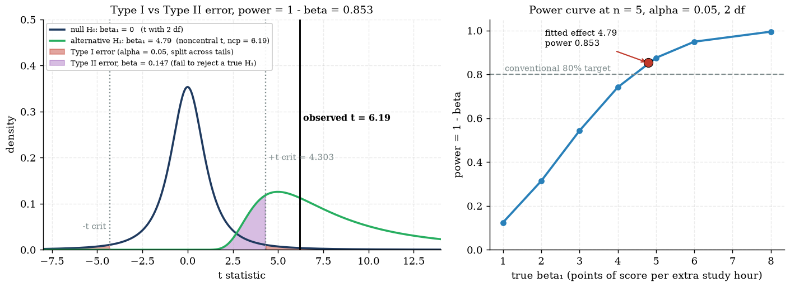
Interpretation. The two error rates trade against each other along a fixed curve set by the design: lowering $\alpha$ to $0.01$ widens the acceptance band, which shrinks the red region and grows the purple one. The only way to shrink both at once is to move the two distributions further apart — more data ($\text{SE}\propto 1/\sqrt{N}$), less noise ($\sigma$), or more spread-out predictors ($s^2_{x_j}$), which are precisely the three terms in §2.11's variance identity. This is also the honest reading of a non-significant result: $\beta_2$'s $p=0.28$ does not say sleep has no effect on exam scores; with power around $0.31$ against a plausible effect, it says this experiment could not have told the difference. "Absence of evidence is not evidence of absence" is a statement about $\beta$, not about $\alpha$.
Every $p$-value in this subsection assumes assumptions 2, 4 and 7 hold. They are not checkable at $N=5$ — five residuals cannot reveal heteroscedasticity or non-normality — so the correct posture is that these numbers illustrate the machinery, not that they license a claim about students. Two further habits worth building: run $k$ tests at $\alpha=0.05$ and you expect $0.05k$ false positives by construction (multiple-comparison correction, not covered here); and statistical significance is not effect size — $\hat\beta_1 = 4.792$ points per hour is the number that matters practically, $t=6.19$ merely says it is distinguishable from zero.
2.12.4 The other two tests on the list: $\chi^2$ and Kolmogorov–Smirnov example
The deck's inference slide names four "important tests": $t$ (compare means), $F$ (compare variances / overall regression significance), $\chi^2$ (variance, independence and goodness-of-fit) and, under nonparametric inference, the Kolmogorov–Smirnov test. The first two are §2.12.1–2.12.2. The other two have already appeared here in passing — Breusch–Pagan refers $NR^2_{\text{aux}}$ to a $\chi^2$ null (§2.9.1), and §3's Wald and likelihood-ratio tests will be $\chi^2$ too — but neither has been stated in its own right, so both are closed out here.
Adjudication — the deck's spelling. Slide 9 writes "Kolmogorov Smirnov" with a space; the test is named for two people, Andrey Kolmogorov and Nikolai Smirnov, so the conventional rendering is the hyphenated "Kolmogorov–Smirnov". A typographic slip in the source, not a different test; we use the hyphenated form throughout.
$\chi^2$, three uses, one statistic. The chi-square distribution with $k$ degrees of freedom is the law of a sum of $k$ squared independent standard normals, which is why it turns up wherever squared deviations are added up.
- A variance. For an iid normal sample, $\dfrac{(N-1)s^2}{\sigma_0^2}\sim\chi^2_{N-1}$ under $H_0:\sigma^2=\sigma_0^2$. Inverting it gives the CI $\left[\frac{(N-1)s^2}{\chi^2_{0.975,\,N-1}},\ \frac{(N-1)s^2}{\chi^2_{0.025,\,N-1}}\right]$, which is asymmetric — variances are.
- Independence, and goodness-of-fit. Both are the same arithmetic, $\chi^2=\sum_{\text{cells}}\frac{(O-E)^2}{E}$, differing only in where the expected counts $E$ come from: from the product of the margins ($E_{ij}=R_iC_j/n$, $\mathrm{df}=(r-1)(c-1)$) for independence, and from a hypothesised distribution ($\mathrm{df}=\text{cells}-1-\#\text{parameters estimated}$) for goodness-of-fit.
(i) A variance. The ten exam scores of §2.11 have $s^2=177.38$ (i.e. $s=13.32$ marks). The department claims its papers are calibrated to $\sigma=10$:
$$\chi^2 = \frac{9\times 177.38}{100} = 15.964 \ \text{ on } 9\ \text{df},\qquad p_{\text{2-sided}} = 0.135,$$with the 95% acceptance region $[2.700,\ 19.023]$ — $15.964$ sits inside it, so the claim survives. The 95% CI for $\sigma^2$ is $[83.9,\ 591.2]$, i.e. $\sigma\in[9.2,\ 24.3]$: ten observations pin a variance down barely at all.
(ii) Independence. A $2\times2$ table of 100 students, revision attendance against pass/fail:
| passed | failed | row total | |
|---|---|---|---|
| attended revision | 30 (22.5) | 20 (27.5) | 50 |
| skipped revision | 15 (22.5) | 35 (27.5) | 50 |
| column total | 45 | 55 | 100 |
Expected counts (italic) are $E_{ij}=R_iC_j/n$, e.g. $50\times45/100=22.5$. Then
$$\chi^2 = \frac{7.5^2}{22.5}+\frac{7.5^2}{27.5}+\frac{7.5^2}{22.5}+\frac{7.5^2}{27.5} = 2.5+2.045+2.5+2.045 = 9.091 \ \text{ on } 1\ \text{df},\qquad p = 0.0026,$$so attendance and outcome are not independent in this sample.
(iii) Goodness-of-fit. Are 100 grades spread evenly over four bands? Observed $(32,28,22,18)$ against $E=25$ each:
$$\chi^2 = \frac{49+9+9+49}{25} = 4.64 \ \text{ on } 3\ \text{df},\qquad p = 0.200,$$so uniformity is not refuted: an imbalance of $32$ against $18$ across four bands is well within what 100 coin-flips-into-four-buckets produces by chance.
Kolmogorov–Smirnov. The one test here that assumes no distribution family at all — hence "nonparametric". It compares the empirical CDF $F_N(x)=\frac1N\#\{i: x_i\le x\}$ with a reference CDF $F_0$ by their largest vertical gap:
$$D_N = \sup_x\,\big|F_N(x)-F_0(x)\big| ,$$whose null distribution depends on $N$ alone, not on $F_0$. The two-sample version replaces $F_0$ by a second empirical CDF and asks whether two samples came from the same law. It is the formal counterpart of the QQ plot that the assumptions table offers for normality of errors (§2.9.1) — the QQ plot shows you where the fit fails, KS reduces the same comparison to one number.
Run it on the three residual sets of Fig. 2.6, each against a normal with the sample's own scale, and put it beside the Shapiro–Wilk values from the same data:
| panel ($n=60$) | KS $D$ | KS $p$ | Shapiro–Wilk $p$ | Breusch–Pagan $p$ | Durbin–Watson |
|---|---|---|---|---|---|
| healthy | 0.121 | 0.321 | 0.501 | 0.657 | 1.99 |
| heteroscedastic | 0.171 | 0.054 | 0.027 | 0.00095 | 1.74 |
| autocorrelated | 0.277 | 0.00015 | 0.323 | 0.017 | 0.46 |
Two-sample KS between the healthy and heteroscedastic residuals gives $D=0.233$, $p=0.076$.
Interpretation. This table is the best argument in the section for running more than one diagnostic. Read the heteroscedastic row: Shapiro–Wilk rejects normality at 5% ($p=0.027$) and KS does not ($p=0.054$) — both are looking at the right thing, since scaling a normal by a varying factor produces heavy tails, and they simply differ in power. Now read the autocorrelated row, and read it sceptically: KS returns $p=0.00015$ for a series whose marginal distribution is exactly normal by construction. That is not a normality failure, it is KS's own assumption failing — the null distribution of $D_N$ assumes independent draws, and $\hat\rho\approx0.77$ means these 60 points carry far less information than 60 independent ones, so the empirical CDF wanders further than the null allows. It is the same false positive as the Breusch–Pagan $p=0.017$ in the same column, from the same cause. A second caveat pulls the other way: the scale here is estimated from the same sample the test is applied to, which makes the quoted KS $p$-values conservative (the Lilliefors correction exists precisely for that). The rule that survives both: a distributional test only tests the assumption you named if the other assumptions hold, so establish independence first (Durbin–Watson), then constant variance (Breusch–Pagan), then shape (QQ, Shapiro–Wilk, KS) — in that order.
Forward bridge — the same three tests, one level up. Everything in §2.12 depends on $\hat{\boldsymbol\beta}$ being exactly normal, which follows from linearity plus assumption 7. Generalised linear models (§3) have no closed form and no exact normal sampling distribution, so each tool is replaced by its large-sample analogue: the $t$-test on $\hat\beta_j/\text{SE}$ becomes the Wald test, $(\hat\beta_j/\text{SE})^2 \sim \chi^2_1$, with the standard errors read off the inverse Fisher information instead of $\hat\sigma^2(X^{\!\top}X)^{-1}$; and the overall $F$-test becomes the likelihood-ratio test, comparing model deviances against a $\chi^2$ null. Confidence intervals, $p$-values, Type I/II errors and power carry over unchanged in meaning — only the reference distribution changes.
§2.12's whole regression table — coefficients, SEs, $t$, $p$, CIs, the overall $F$ — and §2.11's VIF diagnostics are both one library call away in practice; this is the interview-ready version of everything derived by hand above.
Code — statsmodels OLS summary and VIF (statsmodels)
import statsmodels.api as sm
from statsmodels.stats.outliers_influence import variance_inflation_factor
import numpy as np
X = np.array([[2, 6], [4, 7], [6, 5], [8, 8], [10, 6]], dtype=float)
y = np.array([55, 70, 78, 95, 92], dtype=float)
X_sm = sm.add_constant(X) # statsmodels does NOT add an intercept automatically -- easy to forget
model = sm.OLS(y, X_sm).fit()
print(model.summary()) # coef, SE, t, P>|t|, 95% CI per row, plus the overall F-statistic -- all of §2.12 in one call
# VIF is computed on the design matrix WITH the constant included, one column index at a time
vifs = [variance_inflation_factor(X_sm, i) for i in range(X_sm.shape[1])]
# vifs[0] is the VIF of the constant column (ignore it); read vifs[1:] against the >5 / >10 thresholds of §2.11
sm.add_constant is easy to skip and silently fits a no-intercept model with biased slopes; variance_inflation_factor takes the whole design matrix plus a column index rather than two separate feature arrays, so omitting the constant column understates every VIF in the list.
2.13 Summary
Three algorithms, one score $\mathbf{w}^{\!\top}\mathbf{x}$: the perceptron applies the delta rule $\mathbf{w}\leftarrow\mathbf{w}+y\mathbf{x}$ on every misclassified point and is only guaranteed to terminate on linearly separable data; pocket adds a running best-so-far tracker so there is always a well-defined answer even when the data is not separable; linear regression drops the sign and solves the mean-squared-error objective exactly via the normal equations, $\mathbf{w}^\star=(X^{\!\top}X)^{-1}X^{\!\top}Y$, provided $X$ has full column rank. All three reappear later: perceptron's mistake-driven update is the ancestor of gradient descent (§4); the closed-form MSE solution is what ridge regression regularises (§6); and the linear score itself is what logistic regression squashes through a sigmoid (§3).
The second half of the section reads the same estimator statistically rather than algorithmically. Geometrically, $\hat{\boldsymbol\beta}$ is whatever makes the residual perpendicular to $\operatorname{col}(X)$, and the operator that performs the projection is the hat matrix $P=X(X^{\!\top}X)^{-1}X^{\!\top}$ — symmetric, idempotent, with $\operatorname{tr}(P)=p$ and $\operatorname{tr}(I-P)=N-p$, which is where every degrees-of-freedom divisor in the section comes from. Seven assumptions turn that algebra into inference; violating them costs you either unbiasedness (linearity, exogeneity, rank) or trustworthy standard errors (independence, homoscedasticity), and residual plots plus Durbin–Watson, Breusch–Pagan, Shapiro–Wilk, Kolmogorov–Smirnov and VIF are how you find out which — with leverage, studentized residuals and Cook's distance answering the separate question of which observations are driving the fit. Fit quality is reported by $R^2$ (monotone in model size, so useless for selection), $R^2_{\text{adj}}$ (degrees-of-freedom-penalised, so usable), and MAE/MSE/RMSE in the units of $y$. Coefficient inference is one formula, $\operatorname{Var}(\hat{\boldsymbol\beta})=\sigma^2(X^{\!\top}X)^{-1}$, unfolded into $t$-tests, confidence intervals, the joint $F$-test, the $\chi^2$ and Kolmogorov–Smirnov tests that complete the deck's list, and the Type I/Type II/power triangle — with multicollinearity acting on all of them through the single multiplier $\text{VIF}_j=1/(1-R^2_j)$.
Practice 2.3 — is the point $\mathbf{x}=(1,-2,3)$ (augmented) correctly classified by $\mathbf{w}=(1,2,1)$ from the §2.3 example, if its true label is $y=-1$?
Score $= \mathbf{w}^{\!\top}\mathbf{x} = 1\cdot1 + 2\cdot(-2) + 1\cdot3 = 1-4+3=0$. By the sign convention $\operatorname{sign}(0)=-1$, predicted $\hat y=-1=y$. Correctly classified — but only by the convention; a score of exactly $0$ means the point sits exactly on the decision boundary, so this is a boundary case, not a confidently correct one.
Practice 2.4 — why can't pocket simply keep the current $\mathbf{w}$ every step instead of tracking a separate best-so-far?
Because the current $\mathbf{w}$ after a PLA update is not guaranteed to have lower $E_{\text{in}}$ than before — the update only guarantees fixing the one point it was applied to, and may break others (§2.4's non-separable example: $E_{\text{in}}(\mathbf{w}_t)$ swings between $0.17$ and $0.83$ across steps). If pocket reported "whatever $\mathbf{w}$ we currently hold" at an arbitrary stopping step, it could report a state with $E_{\text{in}}=0.83$ purely by bad luck in when the budget ran out. The separate best-so-far tracker is what makes the reported answer independent of the stopping point.
Practice 2.5 — for the 2-feature exam-score regression, predict the score for a student who studies 5 hours and sleeps 7 hours.
Using $\mathbf{w}^\star\approx(29.04,\,4.79,\,3.16)$ from §2.7:
$$\hat y = 29.04 + 4.79(5) + 3.16(7) = 29.04+23.96+22.10 \approx 75.1.$$Sanity check against the table: this sits between the $(4,7)\to70$ and $(6,5)\to78$ rows, which is plausible — 5 hours studied is between those two, and the extra 2 hours of sleep versus the $(6,5)$ row nudges the prediction up slightly relative to interpolating on $x_1$ alone.
Practice 2.6 — a colleague adds a "attended the optional seminar" flag to the exam-score model and reports that $R^2$ rose from $0.9563$ to $0.9719$. Should the feature stay?
No — and $R^2$ could never have answered the question. §2.8's geometry guarantees that adding any column enlarges $\operatorname{col}(X)$, and $\mathbf{y}$ cannot be further from a larger subspace, so SSE weakly falls and $R^2$ weakly rises for every feature, signal or noise. Compute the degrees-of-freedom-corrected version instead. With $N=5$:
$$R^2_{\text{adj}} = 1-(1-R^2)\frac{N-1}{N-p}:\qquad \text{2 features } (p=3):\; 1-0.043668\cdot\tfrac{4}{2} = 0.9127,\qquad \text{3 features } (p=4):\; 1-0.028061\cdot\tfrac{4}{1} = 0.8878 .$$Adjusted $R^2$ fell by $0.0249$. The penalty multiplier doubled (from $4/2=2$ to $4/1=4$) because the fourth parameter consumed one of only two remaining degrees of freedom, and the feature's $R^2$ gain of $0.0156$ did not cover that. The break-even point: solving $1-(1-R^2)\cdot 4 = 0.9127$ gives $R^2 = 0.9782$, so the new column needed to reach $0.9782$ and reached only $0.9719$. Independent confirmation that it is noise: its correlation with $y$ is $-0.250$, i.e. faintly negative.
The general lesson: use $R^2$ to describe a fitted model, never to choose between models of different sizes. Adjusted $R^2$ is the minimum defensible correction; cross-validated out-of-sample error (§6) is the better one, because it penalises complexity by measuring the harm directly instead of assuming a formula for it.
Practice 2.7 — the overall $F$-test on the exam-score model is significant ($p=0.0437$) but the sleep coefficient's $p$ is $0.2795$. Build its 95% CI and reconcile the two results.
The interval. $\hat\beta_2 = 3.1569$ with $\text{SE}(\hat\beta_2)=2.1483$ on $N-p = 5-3 = 2$ degrees of freedom, so $t_{0.975,\,2}=4.3027$ and
$$\text{CI} = 3.1569 \pm 4.3027\times 2.1483 = 3.1569 \pm 9.2433 = [-6.086,\ 12.400].$$The interval contains $0$, which is the same statement as $p=0.2795 > 0.05$ — a coefficient is "significant at 5%" precisely when its 95% interval excludes zero. Note its width: $18.5$ points per hour of sleep. That is not evidence that sleep is irrelevant; it is evidence that five students tell you almost nothing about it.
The reconciliation. $F$ and $t$ ask different questions. $F$ tests $H_0:\beta_1=\beta_2=0$ jointly — "do these two features together beat an intercept-only model?" — and answers yes ($F=21.90$ on $(2,2)$ df). Each $t$ tests $H_0:\beta_j=0$ given the other feature is already in the model — a marginal-contribution question. The joint effect here is carried almost entirely by study hours ($t=6.19$), so the joint test fires while sleep's marginal test does not. There are two standard causes of this pattern, and only one applies: collinearity is not it, since $\operatorname{corr}(x_1,x_2)=0.139$; the cause is low power, with only 2 residual degrees of freedom. Confirmation from §2.12.3: against a true effect of 2 points per hour this design has power $0.31$, so it misses a real effect roughly two times in three.
Practice 2.8 — from the 3-point example's hat matrix, compute each observation's leverage. Which point does the fit listen to most, and why is the usual $2p/N$ flag useless here?
Leverage is the diagonal of $P$, so read it straight off $P = \tfrac16\begin{pmatrix}5&2&-1\\2&2&2\\-1&2&5\end{pmatrix}$:
$$h_{11}=\tfrac56=0.8333,\qquad h_{22}=\tfrac26=0.3333,\qquad h_{33}=\tfrac56=0.8333 .$$Check. $\sum_i h_{ii} = \tfrac{5+2+5}{6} = 2 = \operatorname{tr}(P) = p$, exactly as §2.8.2 proves — the leverages of any OLS fit always sum to the number of parameters, so the mean leverage is $p/N = 2/3$ no matter what the data looks like.
Interpretation. $h_{ii} = \partial\hat y_i/\partial y_i$, so the endpoints at $x=1$ and $x=3$ each pull their own fitted value 2.5 times harder than the middle point at $x=2$: nudge $y_1$ up by one unit and $\hat y_1$ follows by $0.833$, whereas nudging $y_2$ moves $\hat y_2$ by only $0.333$. This is generic — leverage grows with distance from $\bar x$, which is why extreme $x$ values are where fits get hijacked, and why the deck pairs leverage with Cook's distance for influence detection. Row 1 of $P$, $(0.833,\,0.333,\,-0.167)$, also shows the fitted value at $x=1$ borrowing negatively from the far endpoint: pushing $y_3$ up tilts the line and drags $\hat y_1$ down.
Why the flag is useless. The rule of thumb is $h_{ii} > 2p/N = 2\cdot 2/3 = 1.333$, but leverage is bounded above by $1$, so no observation in this dataset can ever be flagged. Small-$N$, large-$p$ designs push the average leverage $p/N$ toward 1 and make the threshold exceed the maximum possible value — the diagnostic only works when $N \gg p$.
3 Logistic Regression, GLMs & Statistical Inference
Section 2 ended with a linear score $z = \boldsymbol{\beta}^{\!\top}\mathbf{x}$ and two things to do with it: threshold it (perceptron) or read it as a real number (regression). This section adds the third and by far the most useful option — squash it into a probability. That single change turns the linear score into a full statistical model: a likelihood, a loss, standard errors, hypothesis tests, and goodness-of-fit statistics. Once the machinery is set up for binary $y$, the same machinery generalises with one substitution — the link function — to counts, ordered categories and unordered categories. That family is the generalised linear model (GLM), and logistic regression is just its most famous member.
Notation for this section. Following the handwritten source we write coefficients as $\boldsymbol{\beta}$ rather than the $\mathbf{w}$ of §2 — they are the same object. Labels here are $y\in\{0,1\}$ (not the $\pm1$ of the perceptron); the two conventions are reconciled in §3.3. Symbols used throughout:
- $\mathbf{x} \in \mathbb{R}^{(d+1)\times 1}$ — one augmented feature vector, first entry $x_0=1$ so the intercept lives inside $\boldsymbol{\beta}$.
- $\mathbf{X} \in \mathbb{R}^{n\times(d+1)}$ — the design matrix, one row per sample.
- $\boldsymbol{\beta} \in \mathbb{R}^{(d+1)\times1}$ — the coefficient vector.
- $z = \boldsymbol{\beta}^{\!\top}\mathbf{x}$ (scalar), $\mathbf{z} = \mathbf{X}\boldsymbol{\beta} \in \mathbb{R}^{n\times1}$ — the linear predictor (also written $\eta$ in GLM language).
- $p = P(y=1\mid\mathbf{x})$ (scalar), $\mathbf{p}\in(0,1)^{n\times1}$ — fitted probabilities.
- $\ell$ — log-likelihood; $L$ — a loss to be minimised; $\mathcal{L}$ — a likelihood.
3.1 From score to probability: the sigmoid and the log-odds
Logistic regression is used to predict the probability of a binary outcome. The construction is two lines:
$$z = \boldsymbol{\beta}^{\!\top}\mathbf{x}, \qquad p = \sigma(z) = \frac{1}{1+e^{-z}} = \frac{e^{z}}{1+e^{z}}.$$The two forms are the same function — multiply numerator and denominator of the first by $e^{z}$. The map $\sigma:\mathbb{R}\to(0,1)$ is the sigmoid (logistic) function: monotone increasing, $\sigma(-\infty)=0$, $\sigma(0)=\tfrac12$, $\sigma(+\infty)=1$.
Why this particular squasher — inverting it gives the log-odds
Start from $p = \dfrac{1}{1+e^{-z}}$ and solve for $z$.
- Reciprocate: $\dfrac{1}{p} = 1 + e^{-z}$.
- Rearrange: $e^{-z} = \dfrac{1}{p} - 1 = \dfrac{1-p}{p}$.
- Invert both sides: $e^{z} = \dfrac{p}{1-p}$.
- Take logs: $z = \ln\dfrac{p}{1-p}$.
Hence the model can be written entirely without $\sigma$:
$$\boxed{\;\log\frac{p}{1-p} = \boldsymbol{\beta}^{\!\top}\mathbf{x}\;}$$The quantity $\dfrac{p}{1-p}$ is the odds, and its logarithm is the log-odds or logit — exactly the label the handwritten page attaches with an arrow to that fraction. So logistic regression is linear regression on the log-odds scale. The nonlinearity is entirely in the link, never in the predictor.
The sigmoid, tabulated. Note that column 4 reproduces column 1 exactly — that is the inversion above.
| $z=\boldsymbol{\beta}^{\!\top}\mathbf{x}$ | $p=\sigma(z)$ | odds $p/(1-p)$ | $\ln[p/(1-p)]$ |
|---|---|---|---|
| $-4$ | 0.017986 | 0.018316 | $-4$ |
| $-2$ | 0.119203 | 0.135335 | $-2$ |
| $-1$ | 0.268941 | 0.367879 | $-1$ |
| $\;\;0$ | 0.500000 | 1.000000 | $\;\;0$ |
| $\;\;0.5$ | 0.622459 | 1.648721 | $\;\;0.5$ |
| $\;\;1$ | 0.731059 | 2.718282 | $\;\;1$ |
| $\;\;2$ | 0.880797 | 7.389056 | $\;\;2$ |
| $\;\;4$ | 0.982014 | 54.598150 | $\;\;4$ |
Two identities used constantly below
(i) Reflection. $1-\sigma(z) = \sigma(-z)$, so $\sigma(z)+\sigma(-z)=1$.
Proof. $1 - \dfrac{e^{z}}{1+e^{z}} = \dfrac{1+e^{z}-e^{z}}{1+e^{z}} = \dfrac{1}{1+e^{z}} = \sigma(-z)$. $\blacksquare$ Numerically, $\sigma(1.3)+\sigma(-1.3) = 1$ to machine precision.
(ii) Derivative. $\sigma'(z) = \sigma(z)\,\big(1-\sigma(z)\big) = p(1-p)$.
Proof. Write $\sigma = (1+e^{-z})^{-1}$. Then $\sigma' = -(1+e^{-z})^{-2}\cdot(-e^{-z}) = \dfrac{e^{-z}}{(1+e^{-z})^{2}} = \dfrac{1}{1+e^{-z}}\cdot\dfrac{e^{-z}}{1+e^{-z}} = \sigma(z)\,\sigma(-z) = p(1-p)$, using (i) in the last step. $\blacksquare$
The derivative is maximal at $z=0$, where it equals $0.25$, and decays to $0$ in both tails.
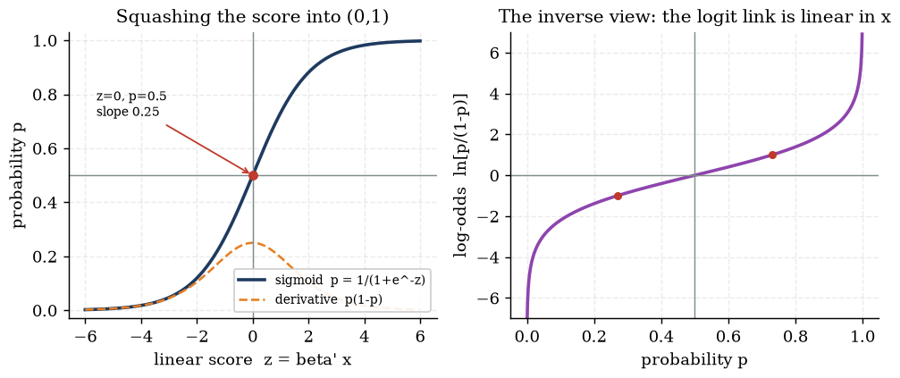
Interpretation. Three consequences follow from the boxed log-odds form, and they are the reason logistic regression survived a century of competitors.
- Coefficients are odds multipliers. Increase $x_j$ by one unit, holding everything else fixed: the log-odds increase by $\beta_j$, so the odds get multiplied by $e^{\beta_j}$. With $\beta_j=0.8$ the odds multiply by $2.225541$ (a 123% increase in odds); with $\beta_j=-0.3$ they multiply by $0.740818$ (a 26% decrease).
- The decision boundary stays linear. The rule from the source is $p\ge0.5\Rightarrow$ predict $1$, $p<0.5\Rightarrow$ predict $0$. Since $\sigma$ is monotone and $\sigma(0)=\tfrac12$, "$p\ge0.5$" is exactly "$z\ge0$", i.e. $\boldsymbol{\beta}^{\!\top}\mathbf{x}\ge0$ — a hyperplane, the same geometric object as §2's perceptron. Logistic regression buys calibration, not extra flexibility.
- Effects are non-linear in probability but linear in log-odds. The same $\Delta z=1$ moves $p$ from $0.5$ to $0.731059$ near the middle, but only from $0.982014$ to $0.993307$ out in the tail. Saturation is a feature: an extra unit of evidence should not matter much once you are already sure.
Gotcha — $0.5$ is a convention, not a result. The threshold rule quoted above is a separate decision on top of the fitted model. Nothing in the likelihood chooses $0.5$; it is optimal only under symmetric misclassification costs and it is a bad default under class imbalance (§3.10 shows a fitted model with recall $0.1351$ at threshold $0.5$). Choosing the operating point is what the ROC curve is for — see §5.
3.2 The loss: cross-entropy derived from maximum likelihood derivation
The handwritten notes state the loss without derivation:
$$L = -\sum \Big[\, y\log p + (1-y)\log(1-p) \,\Big].$$Here is where it comes from. Nothing is assumed except that the $n$ samples are independent given their features.
Step 1 — write the per-sample probability as one formula. The model says $P(y=1\mid\mathbf{x})=p$ and $P(y=0\mid\mathbf{x})=1-p$. Both cases collapse into a single expression, because an exponent of $0$ kills a factor:
$$P(y\mid\mathbf{x}) = p^{\,y}\,(1-p)^{\,1-y}, \qquad y\in\{0,1\}.$$Check: $y=1$ gives $p^1(1-p)^0=p$; $y=0$ gives $p^0(1-p)^1=1-p$. This is the Bernoulli likelihood.
Step 2 — likelihood of the whole sample. Independence turns the joint probability into a product:
$$\mathcal{L}(\boldsymbol{\beta}) = \prod_{i=1}^{n} p_i^{\,y_i}\,(1-p_i)^{\,1-y_i}, \qquad p_i = \sigma(\boldsymbol{\beta}^{\!\top}\mathbf{x}_i).$$Step 3 — take logs. $\ln$ is strictly increasing, so it does not move the maximiser; it converts the product into a sum (essential — a product of $n$ numbers each below $1$ underflows for $n$ in the hundreds).
$$\ell(\boldsymbol{\beta}) = \ln\mathcal{L}(\boldsymbol{\beta}) = \sum_{i=1}^{n}\Big[\, y_i\ln p_i + (1-y_i)\ln(1-p_i) \,\Big].$$Step 4 — flip the sign to get a loss. Maximising $\ell$ is minimising $-\ell$:
$$\boxed{\;L(\boldsymbol{\beta}) = -\sum_{i=1}^{n}\Big[\, y_i\ln p_i + (1-y_i)\ln(1-p_i) \,\Big]\;}$$which is precisely the handwritten formula. Dividing by $n$ gives the mean log-loss, the version reported by software; the minimiser is unchanged.
Why it is called "cross-entropy". For a single sample the true label defines a degenerate distribution $q=(1-y,\;y)$ over $\{0,1\}$ and the model proposes $\hat q=(1-p,\;p)$. The cross-entropy between two distributions is $H(q,\hat q) = -\sum_c q_c\ln\hat q_c$, which for this $q$ is exactly $-[y\ln p+(1-y)\ln(1-p)]$. So "log loss", "binary cross-entropy", "negative Bernoulli log-likelihood" and "logistic loss" are four names for one function.
Reconciling the two label conventions
v5 derives the same loss with labels $y\in\{+1,-1\}$ and reaches
$$E_{\text{in}}(\mathbf{w}) = \frac{1}{n}\sum_{i=1}^{n}\ln\!\Big(1+e^{-y_i\,\mathbf{w}^{\!\top}\mathbf{x}_i}\Big).$$This is the same function, not a different one. The bridge is the reflection identity: with $\pm1$ labels the model compresses to $\hat P(y\mid\mathbf{x}) = \sigma(y\,\mathbf{w}^{\!\top}\mathbf{x})$, because $y=+1$ gives $\sigma(z)=p$ and $y=-1$ gives $\sigma(-z)=1-p$. Then $-\ln\sigma(s) = -\ln\frac{1}{1+e^{-s}} = \ln(1+e^{-s})$ with $s=y\,\mathbf{w}^{\!\top}\mathbf{x}$. Mapping $y_{\pm}=2y_{01}-1$ converts one form into the other term by term. Use whichever the surrounding software uses: scikit-learn and the handwritten notes use $\{0,1\}$; margin-based literature (SVM, AdaBoost, §12) uses $\{+1,-1\}$.
The form $\ln(1+e^{-s})$ is also the numerically safe one: implemented as logaddexp(0, -s) it never evaluates $\ln(0)$, whereas the literal $-[y\ln p+(1-y)\ln(1-p)]$ overflows to infinity as soon as a fitted $p$ rounds to exactly $0$ or $1$. Every compute script in this section uses the stable form.
3.3 Why not MSE? gap filled
The source answers this in one line — "MSE doesn't penalize these appropriately and leads to a non-convex optimization problem" — and backs it with a two-row table of predicted/true pairs, but never computes anything. Both halves of the claim are worked out here.
Claim 1 — the penalties are wrong (the source's table, computed)
The page's table, with the losses filled in. True label $y=0$ in both rows, so squared error is $(p-0)^2$ and cross-entropy is $-\ln(1-p)$.
| Predicted $p$ | True $y$ | squared error $(p-y)^2$ | cross-entropy $-\ln(1-p)$ | $|\partial L/\partial z|$, MSE | $|\partial L/\partial z|$, CE |
|---|---|---|---|---|---|
| 0.99 | 0 | 0.980100 | 4.605170 | 0.019602 | 0.990000 |
| 0.55 | 0 | 0.302500 | 0.798508 | 0.272250 | 0.550000 |
| ratio | 3.2400 | 5.7672 | 0.0720 | 1.8000 |
The gradient columns use $\dfrac{\partial}{\partial z}(p-y)^2 = 2(p-y)\,p(1-p)$ and $\dfrac{\partial}{\partial z}\big[-\ln(1-p)\big] = p-y$ (both derived in §3.4).
Interpretation. Predicting $0.99$ when the truth is $0$ is a confident, catastrophic error; predicting $0.55$ is a mild hedge. Squared error rates the catastrophe as only $3.24\times$ worse than the hedge, and — far more damaging — the learning signal it produces is $0.0720$ times as strong, i.e. 14 times weaker for the worse mistake. The $p(1-p)$ factor, which is the sigmoid's own derivative, throttles the gradient exactly where the model is most confidently wrong. Cross-entropy has no such factor: its gradient is $p-y$, which grows monotonically with the size of the error, so the catastrophe generates $1.8\times$ the signal of the hedge. This is the mechanism behind "doesn't penalize these appropriately".
Claim 2 — MSE on a sigmoid is non-convex in $\boldsymbol{\beta}$
Take one sample, one weight, $x=1$, so $z=w$ and $p=\sigma(w)$. For squared error $L_{\text{MSE}} = (p-y)^2$:
- First derivative: $\dfrac{dL}{dw} = 2(p-y)\,\dfrac{dp}{dw} = 2(p-y)\,p(1-p)$.
- Second derivative, product rule, using $\dfrac{d}{dw}\big[p(1-p)\big] = p(1-p)(1-2p)$: $$\frac{d^2L_{\text{MSE}}}{dw^2} = 2\Big[\big(p(1-p)\big)^{2} + (p-y)\,p(1-p)\,(1-2p)\Big].$$
- Set $y=0$ and factor out $p^2(1-p)$, which is positive: $$\frac{d^2L_{\text{MSE}}}{dw^2} = 2p^{2}(1-p)\Big[(1-p) + (1-2p)\Big] = 2p^{2}(1-p)\,(2-3p).$$
- This is negative whenever $p>\tfrac23$, i.e. whenever $w > \ln 2 = 0.693147$. At exactly $w=\ln2$ it is $0$.
By contrast, for cross-entropy with $y=0$, $L_{\text{CE}} = -\ln(1-p)$, and the same two steps give $\dfrac{dL}{dw} = p-y$ and
$$\frac{d^{2}L_{\text{CE}}}{dw^{2}} = p(1-p) \;>\; 0 \quad\text{for all } w .$$In the general $d$-dimensional case this becomes the Hessian $\mathbf{X}^{\!\top}\mathbf{W}\mathbf{X}$ with $\mathbf{W} = \operatorname{diag}\!\big(p_i(1-p_i)\big)$, which is positive semi-definite for any $\boldsymbol{\beta}$ (§3.4) — so cross-entropy is convex, globally.
Curvature, tabulated (single sample, $x=1$, $y=0$). Sign flip in the MSE column at $w=\ln2$:
| $w$ | $p=\sigma(w)$ | $d^2L_{\text{MSE}}/dw^2$ | $d^2L_{\text{CE}}/dw^2$ |
|---|---|---|---|
| $-2.0$ | 0.119203 | $+0.041111$ | 0.104994 |
| $-1.0$ | 0.268941 | $+0.126183$ | 0.196612 |
| $\;\;0.0$ | 0.500000 | $+0.125000$ | 0.250000 |
| $\;\;0.5$ | 0.622459 | $+0.038800$ | 0.235004 |
| $\;\;0.8$ | 0.689974 | $-0.020640$ | 0.213910 |
| $\;\;1.0$ | 0.731059 | $-0.055532$ | 0.196612 |
| $\;\;2.0$ | 0.880797 | $-0.118814$ | 0.104994 |
| $\;\;3.0$ | 0.952574 | $-0.073823$ | 0.045177 |
On the three-point dataset $\mathbf{x}=(1,1,4)$, $\mathbf{y}=(1,0,0)$ swept over $w\in[-6,6]$, the MSE objective has negative curvature over 87.35% of the sweep, while the cross-entropy objective's smallest curvature over the same range is $+0.001686$ — strictly positive everywhere.

Gotcha — the flat-region trap is worse than the non-convexity. On the same three-point dataset, start optimisation from $w=-5$, where the model assigns $p=(0.006693,\,0.006693,\,0)$ and gets the first point badly wrong. The mean MSE gradient there is $-0.004373$; the mean cross-entropy gradient is $-0.328871$ — 75.21 times larger. With MSE, a badly initialised model does not merely converge to a local optimum, it barely moves at all. This is the same vanishing-gradient mechanism that kills deep sigmoid networks (§15) — here it is caused by the loss, not the depth.
3.4 The gradient, with shapes derivation
Neither source derives this: the handwritten page stops at the loss, and v5 states "hence gradient descent" without producing anything to descend on. Here it is, in full, with every shape tracked.
Scalar chain rule, one sample
Let $\ell_i = -\big[y_i\ln p_i + (1-y_i)\ln(1-p_i)\big]$ with $p_i = \sigma(z_i)$ and $z_i = \boldsymbol{\beta}^{\!\top}\mathbf{x}_i$. Chain: $\dfrac{\partial\ell_i}{\partial\boldsymbol{\beta}} = \dfrac{\partial \ell_i}{\partial p_i}\cdot\dfrac{\partial p_i}{\partial z_i}\cdot\dfrac{\partial z_i}{\partial\boldsymbol{\beta}}$.
- Loss w.r.t. probability. $\dfrac{\partial\ell_i}{\partial p_i} = -\dfrac{y_i}{p_i} + \dfrac{1-y_i}{1-p_i} = \dfrac{-y_i(1-p_i) + (1-y_i)p_i}{p_i(1-p_i)} = \dfrac{p_i - y_i}{p_i(1-p_i)}$ (scalar).
- Probability w.r.t. score. $\dfrac{\partial p_i}{\partial z_i} = p_i(1-p_i)$ (scalar, identity (ii) of §3.1).
- The cancellation. Multiply (1) and (2): the $p_i(1-p_i)$ factors annihilate, leaving $$\frac{\partial \ell_i}{\partial z_i} = p_i - y_i .$$ This single cancellation is the whole reason cross-entropy is the right loss for a sigmoid: the loss is chosen so that its derivative undoes the link's saturation.
- Score w.r.t. coefficients. $\dfrac{\partial z_i}{\partial\boldsymbol{\beta}} = \mathbf{x}_i$, shape $(d{+}1)\times1$.
- Combine. $\dfrac{\partial\ell_i}{\partial\boldsymbol{\beta}} = (p_i - y_i)\,\mathbf{x}_i$ — a scalar times a $(d{+}1)\times1$ vector, so shape $(d{+}1)\times1$. ✓
Matrix form, whole dataset
Summing step 5 over $i$ and writing it as a matrix product:
$$\boxed{\;\nabla_{\boldsymbol{\beta}} L = \mathbf{X}^{\!\top}(\mathbf{p} - \mathbf{y})\;}\qquad\text{or, for the mean loss,}\qquad \nabla_{\boldsymbol{\beta}} \bar L = \tfrac{1}{n}\mathbf{X}^{\!\top}(\mathbf{p} - \mathbf{y}).$$| object | shape | meaning |
|---|---|---|
| $\mathbf{X}$ | $n \times (d{+}1)$ | design matrix, augmented with a column of ones |
| $\boldsymbol{\beta}$ | $(d{+}1) \times 1$ | coefficients |
| $\mathbf{z} = \mathbf{X}\boldsymbol{\beta}$ | $n \times 1$ | $\big(n\times(d{+}1)\big)\cdot\big((d{+}1)\times1\big)$ |
| $\mathbf{p} = \sigma(\mathbf{z})$ | $n \times 1$ | elementwise, shape preserved |
| $\mathbf{p}-\mathbf{y}$ | $n \times 1$ | the residual vector |
| $\mathbf{X}^{\!\top}(\mathbf{p}-\mathbf{y})$ | $(d{+}1) \times 1$ | $\big((d{+}1)\times n\big)\cdot\big(n\times1\big)$ ✓ matches $\boldsymbol{\beta}$ |
| $\mathbf{W} = \operatorname{diag}\!\big(p_i(1-p_i)\big)$ | $n \times n$ | IRLS weights (below) |
| $\mathbf{H} = \mathbf{X}^{\!\top}\mathbf{W}\mathbf{X}$ | $(d{+}1)\times(d{+}1)$ | Hessian / observed information |
The shape that surprises people. $\nabla_{\boldsymbol{\beta}}L$ has shape $(d{+}1)\times1$ — the same shape as $\boldsymbol{\beta}$, not the shape of the data. It must be so: you can only subtract a gradient from the thing you are updating. If your derivation produces an $n\times1$ object you have forgotten the $\mathbf{X}^{\!\top}$. And note $\mathbf{X}^{\!\top}(\mathbf{p}-\mathbf{y})$ is formally identical to the least-squares gradient $\mathbf{X}^{\!\top}(\hat{\mathbf{y}}-\mathbf{y})$ of §2 — only the definition of the prediction changed. What differs is that there is no closed form: setting $\mathbf{X}^{\!\top}(\sigma(\mathbf{X}\boldsymbol{\beta})-\mathbf{y})=\mathbf{0}$ is transcendental in $\boldsymbol{\beta}$, so there is no pseudo-inverse analogue. Iteration is compulsory.
The Hessian, and why the problem is easy
Differentiate the gradient once more. The $i$-th entry of $\mathbf{p}$ depends on $\boldsymbol{\beta}$ only through $z_i$, so $\dfrac{\partial p_i}{\partial\boldsymbol{\beta}^{\!\top}} = p_i(1-p_i)\,\mathbf{x}_i^{\!\top}$ and
$$\nabla^2_{\boldsymbol{\beta}} L = \sum_{i=1}^{n} p_i(1-p_i)\,\mathbf{x}_i\mathbf{x}_i^{\!\top} \;=\; \mathbf{X}^{\!\top}\mathbf{W}\mathbf{X}, \qquad \mathbf{W}=\operatorname{diag}\big(p_i(1-p_i)\big)\in\mathbb{R}^{n\times n}.$$For any vector $\mathbf{v}\in\mathbb{R}^{(d+1)\times1}$: $\mathbf{v}^{\!\top}\mathbf{X}^{\!\top}\mathbf{W}\mathbf{X}\mathbf{v} = \sum_i p_i(1-p_i)\,(\mathbf{x}_i^{\!\top}\mathbf{v})^2 \ge 0$ because every weight $p_i(1-p_i)$ is positive. So the Hessian is positive semi-definite everywhere and the cross-entropy objective is convex: any stationary point is a global minimum, and there are no local minima to get stuck in. That is the formal version of §3.3's Claim 2.
Two ways to use the gradient
(a) Gradient descent — $\boldsymbol{\beta} \leftarrow \boldsymbol{\beta} - \eta\,\tfrac1n\mathbf{X}^{\!\top}(\mathbf{p}-\mathbf{y})$. Cheap per step, no matrix inversion, scales to millions of rows; step-size behaviour, momentum and Adam are §4's subject.
(b) Newton–Raphson / IRLS — $\boldsymbol{\beta} \leftarrow \boldsymbol{\beta} + \big(\mathbf{X}^{\!\top}\mathbf{W}\mathbf{X}\big)^{-1}\mathbf{X}^{\!\top}(\mathbf{y}-\mathbf{p})$. Quadratic convergence in a handful of iterations, but each step costs an $\mathcal{O}(nd^2 + d^3)$ solve. This is what statsmodels and R's glm do, and it hands you the Fisher information for free (§3.9) — which is why classical statistics prefers it.
3.5 A fitted model, end to end example
Data. $n=40$ students; features hours (weekly study hours) and att (attendance, scored $0$–$10$); label $y=1$ if the student passed. 26 passed, 14 failed. The design matrix is $\mathbf{X}\in\mathbb{R}^{40\times3}$ (intercept, hours, attendance), so $\boldsymbol{\beta}\in\mathbb{R}^{3\times1}$.
Step 0 — the gradient at $\boldsymbol{\beta}=\mathbf{0}$. Every $z_i=0$, so every $p_i=0.5$, and the score $\mathbf{X}^{\!\top}(\mathbf{y}-\mathbf{p})$ is $$\mathbf{X}^{\!\top}(\mathbf{y}-\mathbf{p}) = \begin{pmatrix}6.0\\ 54.5\\ 59.0\end{pmatrix} \;(3\times1).$$ All three entries are positive: more hours and more attendance both push toward $y=1$, so the fit will move in that direction. The Fisher information at the same point is $\mathbf{X}^{\!\top}\mathbf{X}/4$ (since $p(1-p)=0.25$ everywhere), i.e. $$\mathbf{I}(\mathbf{0}) = \begin{pmatrix} 10.0 & 48.5 & 65.5\\ 48.5 & 295.0 & 331.875\\ 65.5 & 331.875 & 483.0\end{pmatrix}\;(3\times3).$$
Step 1 — one gradient-descent step with $\eta=0.1$ on the mean loss. The mean-form gradient is $\tfrac1{40}\mathbf{X}^{\!\top}(\mathbf{p}-\mathbf{y}) = (-0.15,\,-1.3625,\,-1.475)^{\!\top}$, so $$\boldsymbol{\beta}^{(1)} = \mathbf{0} - 0.1\cdot(-0.15,\,-1.3625,\,-1.475)^{\!\top} = (0.015,\;0.13625,\;0.1475)^{\!\top},$$ and the mean loss drops from $\ln 2 = 0.693147$ to $0.612007$.
Step 2 — Newton–Raphson instead. Five iterations of the trace (the run converged to $\|\Delta\boldsymbol{\beta}\|<10^{-12}$ after 8):
| iter | $\boldsymbol{\beta}$ at start of step | $\ell(\boldsymbol{\beta})$ | score $\mathbf{X}^{\!\top}(\mathbf{y}-\mathbf{p})$ | $\|\Delta\boldsymbol{\beta}\|$ |
|---|---|---|---|---|
| 0 | $(0,\;0,\;0)$ | $-27.725887$ | $(6.000,\;54.500,\;59.000)$ | 2.953283 |
| 1 | $(-2.918696,\;0.360769,\;0.270071)$ | $-17.384779$ | $(1.526,\;13.810,\;14.670)$ | 1.630970 |
| 2 | $(-4.529504,\;0.573035,\;0.412562)$ | $-15.855238$ | $(0.419,\;3.777,\;4.037)$ | 0.874621 |
| 3 | $(-5.393387,\;0.685855,\;0.489640)$ | $-15.648188$ | $(0.061,\;0.561,\;0.599)$ | 0.184977 |
| 4 | $(-5.576114,\;0.709535,\;0.505966)$ | $-15.642126$ | $(0.0019,\;0.0181,\;0.0193)$ | 0.006521 |
Result. $\hat{\boldsymbol{\beta}} = (-5.582563,\;0.710367,\;0.506542)^{\!\top}$, log-likelihood $-15.642119$.
Reading the coefficients as odds ratios ($e^{\beta_j}$):
| term | $\hat\beta_j$ | $e^{\hat\beta_j}$ | plain-English reading |
|---|---|---|---|
| intercept | $-5.582563$ | 0.003763 | odds of passing with zero hours and zero attendance |
| hours | $0.710367$ | 2.034739 | one extra study hour doubles the odds of passing (+103.5%) |
| attendance | $0.506542$ | 1.659542 | one attendance point multiplies the odds by 1.66 (+66.0%) |
Two individual predictions. Student A studies 3 h with attendance 5: $z_A = -5.582563 + 0.710367(3) + 0.506542(5) = -0.918753$, so $p_A = \sigma(z_A) = 0.285212$ (odds $0.399016$) — predicted fail at threshold $0.5$. Student B studies 6 h with attendance 8: $z_B = 2.731974$, $p_B = 0.938887$ (odds $15.363177$) — predicted pass.
The boundary as a break-even question. $p=0.5$ means $z=0$, so at attendance $6$ the required hours solve $-5.582563 + 0.710367\,h + 0.506542(6) = 0$, giving $h = 3.580280$.
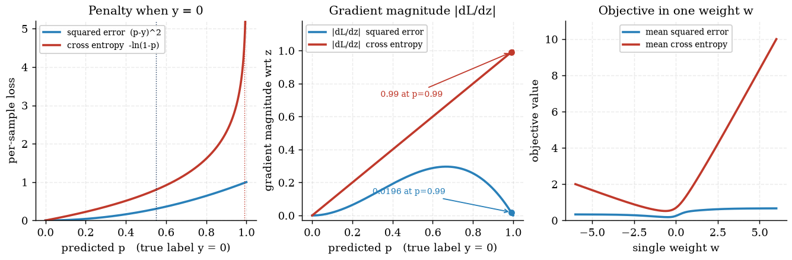
Interpretation. Every misclassified point in the right-hand panel sits near the boundary — the model is not "wrong", it is honestly uncertain there, and it says so by returning $p$ near $0.5$. That is the entire payoff over the perceptron: same linear boundary, but a graded confidence attached to it, which is what lets you tune the operating point (§5), rank candidates, or feed calibrated probabilities into a downstream cost calculation.
The same fit, run with the libraries an interview expects rather than by hand:
Code — fit & predict with sklearn, inference with statsmodels (sklearn / statsmodels)
from sklearn.linear_model import LogisticRegression
from sklearn.model_selection import train_test_split
from sklearn.datasets import make_classification
X, y = make_classification(n_samples=200, n_features=4, n_informative=3,
n_redundant=0, random_state=0)
X_train, X_test, y_train, y_test = train_test_split(
X, y, test_size=0.25, random_state=0)
# C = 1/lambda: smaller C -> stronger L2 penalty (see 3.11)
clf = LogisticRegression(penalty="l2", C=1.0, class_weight=None,
solver="lbfgs", max_iter=1000)
clf.fit(X_train, y_train)
p_hat = clf.predict_proba(X_test)[:, 1] # P(y=1|x), shape (n_test,)
y_hat = clf.predict(X_test) # thresholds p_hat at 0.5
beta0, beta = clf.intercept_[0], clf.coef_[0] # shapes (1,), (d,)
import statsmodels.api as sm
Xc = sm.add_constant(X_train) # prepend intercept column
logit_model = sm.Logit(y_train, Xc).fit(disp=0) # unpenalized MLE via Newton/IRLS
print(logit_model.summary()) # coefficients, SE, Wald z, p-values
logit_model.params # beta_hat, shape (d+1,)
logit_model.bse # SE(beta_hat_j) = sqrt(diag(I^-1)), 3.10
logit_model.pvalues # Wald p-values, matches 3.10sklearn's LogisticRegression is penalized by default and has no p-values; statsmodels.Logit is the unpenalized MLE that lines up with the Fisher-information inference of §3.10 — reach for it whenever the question is "is this coefficient significant", not "what predicts best".
3.6 Multiclass: softmax versus one-vs-rest
The handwritten page branches "For Multiclass problem" into two children — softmax on the left, one-vs-rest on the right. Both are worked here on the page's own cat/dog/bird example.
Softmax — one joint model
Compute $K$ separate linear scores and normalise them jointly:
$$\mathbf{z} = \mathbf{W}\mathbf{x}\quad (K\times1), \qquad P_k = \frac{e^{z_k}}{\sum_{j=1}^{K}e^{z_j}}.$$Shapes: $\mathbf{W}\in\mathbb{R}^{K\times(d+1)}$ — one row of coefficients per class, which is what the source's matrix $\mathbf{W} = \begin{pmatrix}\beta_{D0}&\beta_{D1}&\beta_{D2}\\ \beta_{C0}&\beta_{C1}&\beta_{C2}\\ \beta_{B0}&\beta_{B1}&\beta_{B2}\end{pmatrix}$ encodes (rows dog/cat/bird, columns intercept and two features). $\mathbf{x}\in\mathbb{R}^{(d+1)\times1}$, so $\mathbf{z}\in\mathbb{R}^{K\times1}$ and $\mathbf{p}\in\mathbb{R}^{K\times1}$. Batched, $\mathbf{Z} = \mathbf{X}\mathbf{W}^{\!\top}$ with $\mathbf{X}\in\mathbb{R}^{n\times(d+1)}$ and $\mathbf{Z}\in\mathbb{R}^{n\times K}$, softmax applied row-wise.
Worked softmax. With $K=3$, $\mathbf{x} = (1,\,2,\,1)^{\!\top}$ and
$$\mathbf{W} = \begin{pmatrix}-1.0 & 1.3 & -0.4\\ -0.5 & 0.3 & 0.9\\ 0.2 & -0.8 & 0.5\end{pmatrix}\;(3\times3):$$| class | $z_k = \mathbf{W}_{k:}\mathbf{x}$ | $e^{z_k}$ | $P_k = e^{z_k}/\sum_j e^{z_j}$ |
|---|---|---|---|
| dog | $-1.0 + 1.3(2) - 0.4(1) = 1.2$ | 3.320117 | 0.515149 |
| cat | $-0.5 + 0.3(2) + 0.9(1) = 1.0$ | 2.718282 | 0.421768 |
| bird | $0.2 - 0.8(2) + 0.5(1) = -0.9$ | 0.406570 | 0.063083 |
| sum | 6.444968 | 1.000000 |
"Highest wins": predict dog. If the true class is dog, the loss is $-\ln P_{\text{dog}} = 0.663300$.
The softmax gradient — the same cancellation, one dimension up
With one-hot target $\mathbf{y}\in\{0,1\}^{K\times1}$ and $L=-\sum_k y_k\ln P_k$, the derivative of softmax is $\dfrac{\partial P_k}{\partial z_m} = P_k(\delta_{km} - P_m)$ (Kronecker delta). Substituting and summing telescopes to
$$\frac{\partial L}{\partial \mathbf{z}} = \mathbf{p}-\mathbf{y}\;\;(K\times1), \qquad \frac{\partial L}{\partial \mathbf{W}} = (\mathbf{p}-\mathbf{y})\,\mathbf{x}^{\!\top}\;\;(K\times1)\cdot(1\times(d{+}1)) = K\times(d{+}1).$$Exactly the binary result with $K$ components. Numerically, $\mathbf{p}-\mathbf{y} = (-0.484851,\;0.421768,\;0.063083)^{\!\top}$: the true class's score is pushed up, every rival's down, in proportion to how much probability it stole. The outer product with $\mathbf{x}=(1,2,1)^{\!\top}$ gives
$$\frac{\partial L}{\partial \mathbf{W}} = \begin{pmatrix}-0.484851 & -0.969703 & -0.484851\\ 0.421768 & 0.843536 & 0.421768\\ 0.063083 & 0.126167 & 0.063083\end{pmatrix}\;(3\times3).$$One-vs-rest — $K$ independent binary models
"Train $k$ diff. models for $k$ diff. classes" — cat vs not-cat, dog vs not-dog, bird vs not-bird — "three diff. prob. & the largest gives the o/p class", with the stated disadvantage "the prob. doesn't add to 1". Each model is fitted on its own relabelled dataset, so each has its own coefficients; nothing couples them.
Worked one-vs-rest on the same $\mathbf{x}=(1,2,1)^{\!\top}$, with three independently fitted coefficient rows:
| binary problem | $z$ | $\sigma(z)$ |
|---|---|---|
| dog vs not-dog | 0.9 | 0.710950 |
| cat vs not-cat | 0.8 | 0.689974 |
| bird vs not-bird | $-0.9$ | 0.289050 |
| sum | 1.689974 |
The sum overshoots $1$ by $0.689974$ — the source's disadvantage, quantified. The argmax still gives dog. Renormalising post hoc yields $(0.420687,\,0.408275,\,0.171038)$, which changes the numbers a lot without being a proper likelihood — the renormalised values are not the output of any fitted model.
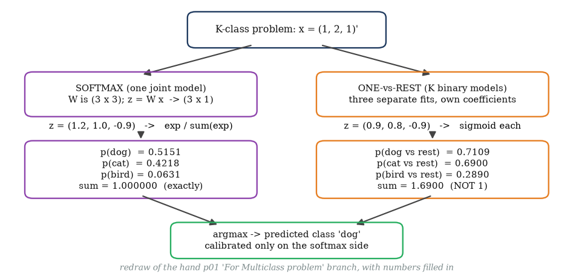
Softmax with $K=2$ is the sigmoid. $P_1 = \dfrac{e^{z_1}}{e^{z_1}+e^{z_2}} = \dfrac{1}{1+e^{-(z_1-z_2)}} = \sigma(z_1-z_2)$ — divide numerator and denominator by $e^{z_1}$. Check: $\mathbf{z}=(1.4,\,0.3)$ gives softmax $(0.750260,\,0.249740)$, and $\sigma(1.4-0.3)=\sigma(1.1)=0.750260$. Identical. Binary logistic regression is therefore not a special case to be memorised separately — it is $K=2$ softmax with one score set to zero.
Gotcha 1 — softmax is over-parameterised. Only differences of scores matter: adding the same constant to every $z_k$ leaves $\mathbf{p}$ unchanged (shift $\mathbf{z}=(1.2,1.0,-0.9)$ to $(0,-0.2,-2.1)$ by subtracting the max, and the probabilities agree to $5.55\times10^{-17}$ ). With $K=3$ and two features, the full $\mathbf{W}$ has 9 parameters but only 6 are identified. Software resolves this either by pinning a reference class (the statistician's multinomial logit) or by adding a penalty (§3.10) that makes the solution unique — which is why an unpenalised multinomial fit can report wildly different coefficients across runs while producing identical probabilities.
Gotcha 2 — always subtract the max before exponentiating. $e^{z}$ overflows for $z\gtrsim710$ in double precision. Since the shift changes nothing, the standard implementation is $P_k = e^{z_k-\max_j z_j}\big/\sum_j e^{z_j-\max_j z_j}$.
Gotcha 3 — one-vs-rest quietly creates class imbalance. With $K=20$ balanced classes, every binary sub-problem is 5% positive against 95% negative. Each of the 20 fits therefore needs its own imbalance handling (§3.10, §14) — a cost softmax simply does not pay.
Interpretation — when to use which. Use softmax when classes are mutually exclusive and you want calibrated probabilities (the default, and the only sane choice as a neural-network output layer, §15). Use one-vs-rest when the base learner has no multiclass form, when you need to train the $K$ models in parallel or add a class without refitting everything, or when the labels are not exclusive at all (multi-label — a photo containing both a cat and a dog), which is precisely the setting where "probabilities don't sum to 1" stops being a bug and becomes the point.
Code — softmax from scratch, and the two sklearn multiclass modes (numpy / sklearn)
import numpy as np
def softmax(Z):
# Z: (n, K) matrix of scores; subtract row-max for numerical stability (3.6, Gotcha 2)
Z_shift = Z - Z.max(axis=1, keepdims=True)
expZ = np.exp(Z_shift)
return expZ / expZ.sum(axis=1, keepdims=True) # (n, K), rows sum to 1
def softmax_loss_and_grad(X, Y_onehot, W):
# X: (n, d+1), W: (K, d+1) one row of coefficients per class, Y_onehot: (n, K)
Z = X @ W.T # (n, K)
P = softmax(Z)
loss = -np.sum(Y_onehot * np.log(P)) / X.shape[0] # mean cross-entropy
grad_W = (P - Y_onehot).T @ X / X.shape[0] # (K, d+1), matches p - y of 3.6
return loss, grad_W
y_pred = np.argmax(P, axis=1) # "highest wins"
from sklearn.linear_model import LogisticRegression
clf_softmax = LogisticRegression(multi_class="multinomial", solver="lbfgs") # one joint model
clf_ovr = LogisticRegression(multi_class="ovr", solver="liblinear") # K independent fitssanity-check any from-scratch softmax by verifying softmax(Z) at K=2 collapses to sigmoid(z1-z2) (3.6's identity); multi_class is deprecated in newer sklearn releases in favor of auto-detecting multinomial for solvers that support it, but knowing the flag names what the solver is doing under the hood.
3.7 The GLM view: one machine, many links
Logistic regression is the $\{0,1\}$-response member of a family. Every member has the same three parts:
A generalised linear model consists of
- a random component — a distribution for $Y_i$ from the exponential family (Bernoulli, Poisson, Gaussian, Gamma, …), with mean $\mu_i = \mathbb{E}[Y_i\mid\mathbf{x}_i]$;
- a systematic component — the linear predictor $\eta_i = \boldsymbol{\beta}^{\!\top}\mathbf{x}_i$, i.e. $\boldsymbol{\eta}=\mathbf{X}\boldsymbol{\beta}$ of shape $n\times1$;
- a link function $g$ tying them together: $g(\mu_i) = \eta_i$.
Choosing $g$ is choosing the scale on which effects are additive, and it is dictated by the range of $Y$, never by the features.
| response $Y$ | distribution | link $g(\mu)$ | inverse link $\mu$ | name |
|---|---|---|---|---|
| real, unbounded | Gaussian | $\mu$ (identity) | $\eta$ | linear regression (§2) |
| $\{0,1\}$ | Bernoulli | $\ln\frac{\mu}{1-\mu}$ (logit) | $\sigma(\eta)$ | logistic regression (§3.1) |
| $K$ unordered classes | Multinomial | $\ln\frac{\mu_k}{\mu_K}$ | softmax | multinomial logit (§3.6) |
| $J$ ordered levels | Multinomial | $\ln\frac{\gamma_j}{1-\gamma_j}$ on cumulatives | $\sigma(\theta_j-\boldsymbol{\beta}^{\!\top}\mathbf{x})$ | proportional odds (§3.9) |
| counts $0,1,2,\dots$ | Poisson | $\ln\mu$ (log) | $e^{\eta}$ | Poisson regression (§3.8) |
| positive, skewed | Gamma | $\ln\mu$ or $1/\mu$ | $e^{\eta}$ | Gamma GLM |

glm_choice: which link and model for which response type. Read left to right — the entry point is always the response, never the features. The dashed footer states the invariant: only the link and the likelihood change; the linear predictor $\boldsymbol{\eta}=\mathbf{X}\boldsymbol{\beta}$ $(n\times1)$ and the IRLS fitting loop are identical across every lane.Gotcha — the flowchart's entry point. The single most common GLM mistake is choosing the model from the features ("my predictors are categorical, so…"). Features are irrelevant to link choice: they enter only through $\mathbf{X}\boldsymbol{\beta}$ and can be anything at all — dummies, splines, interactions. What determines the link is the support and mean–variance relationship of $Y$. Fitting a linear model to a 0/1 response is the standard illustration: it predicts probabilities outside $[0,1]$ and assumes constant variance when the true Bernoulli variance $p(1-p)$ is largest at $p=0.5$ and vanishes at the extremes.
3.8 Poisson regression for count data
The source's block reads: "For Poisson data we will [use] GLM Model", $Y_i\sim\text{Poisson}(\lambda_i)$, $P(Y=y)=\dfrac{e^{-\lambda}\lambda^{y}}{y!}$, $\lambda>0$, with $\log(\lambda)=\boldsymbol{\beta}^{\!\top}X$.
Transcription notes. Two things on the page are worth flagging rather than glossing over. (i) The factorial denominator is written with the archaic L-shaped glyph "$\lfloor\underline{y}$" for $y!$ — the modern form $y!$ is used throughout here; the quantity is identical. Check: $\lambda=3$, $y=2$ gives $e^{-3}\cdot 9/2 = 0.224042$. (ii) The sentence "we will GLM Model" is missing its verb; read "we will use a GLM".
Why the log link, specifically
Two reasons, both structural. First, range: $\lambda$ must be strictly positive, and $\lambda = e^{\boldsymbol{\beta}^{\!\top}\mathbf{x}}$ is positive for every possible $\boldsymbol{\beta}$ and $\mathbf{x}$, so the constraint is enforced by construction rather than by a penalty. Second, multiplicative effects: $\ln\lambda$ additive in $x_j$ means $\lambda$ multiplicative, so $e^{\beta_j}$ is a rate ratio, exactly parallel to logistic regression's odds ratio. Counts almost always behave multiplicatively ("this campaign lifts orders by 30%", not "by 4.2 orders regardless of baseline").
Worked Poisson GLM. $n=16$ weeks; $x=$ promotional emails sent, $y=$ orders placed. $\mathbf{X}\in\mathbb{R}^{16\times2}$, $\boldsymbol{\beta}\in\mathbb{R}^{2\times1}$, $\boldsymbol{\eta}=\mathbf{X}\boldsymbol{\beta}\in\mathbb{R}^{16\times1}$, $\boldsymbol{\lambda}=e^{\boldsymbol{\eta}}\in\mathbb{R}^{16\times1}$, IRLS weight matrix $\mathbf{W}=\operatorname{diag}(\lambda_i)\in\mathbb{R}^{16\times16}$.
The IRLS update is structurally identical to the logistic one — only the weights and residuals change:
$$\text{score } \mathbf{X}^{\!\top}(\mathbf{y}-\boldsymbol{\lambda})\;(2\times1), \qquad \mathbf{I}(\boldsymbol{\beta}) = \mathbf{X}^{\!\top}\mathbf{W}\mathbf{X}\;(2\times2), \qquad \boldsymbol{\beta}\leftarrow\boldsymbol{\beta} + \mathbf{I}^{-1}\mathbf{X}^{\!\top}(\mathbf{y}-\boldsymbol{\lambda}).$$Fit. $\hat{\boldsymbol{\beta}} = (0.795043,\;0.279495)^{\!\top}$. The slope exponentiates to $e^{0.279495} = 1.322462$: each additional promotional email multiplies the expected order rate by 1.32, a 32.25% increase. Standard errors $(0.218760,\;0.034123)$ give Wald $z$ of $3.634311$ and $8.190827$ — both highly significant.
Prediction. At $x=10$: $\eta = 0.795043 + 10(0.279495) = 3.589996$, $\lambda = e^{3.589996} = 36.233931$ expected orders. The whole distribution comes free — e.g. $P(Y=20\mid\lambda) = 0.001148$, so seeing only 20 orders that week would be a genuine surprise.
Goodness of fit. Residual deviance $6.369086$ on $14$ degrees of freedom, ratio $0.454935$, $\chi^2$ tail probability $0.9563$ — no evidence of lack of fit. Pearson $\chi^2 = 6.023489$, dispersion $0.430249$.
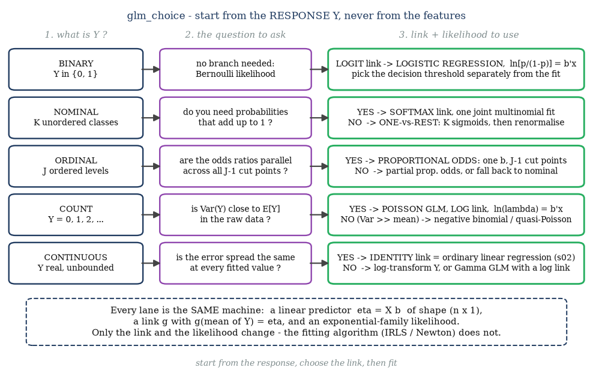
Gotcha 1 — over-dispersion, and the trap of checking it wrongly. Poisson assumes $\operatorname{Var}(Y\mid\mathbf{x}) = \mathbb{E}[Y\mid\mathbf{x}] = \lambda$. In this dataset the marginal statistics are $\bar y = 9.0625$ and $s^2 = 49.129167$ — a variance five times the mean, which looks alarming. It is not: the marginal spread is mostly the signal ($\lambda$ ranges from $2.2145$ to $27.3988$ across weeks). The correct check is conditional: Pearson $\chi^2/\text{df} = 0.430249$, comfortably below $1$. Only if that ratio substantially exceeds $1$ do you have genuine over-dispersion, whose consequence is that standard errors are too small by a factor of about $\sqrt{\text{dispersion}}$ — you then move to quasi-Poisson or negative binomial. Never diagnose over-dispersion from $s^2$ vs $\bar y$.
Gotcha 2 — Newton's naive start can overshoot badly with a log link. Starting from $\boldsymbol{\beta}=\mathbf{0}$, the first Newton step lands at $(-2.349398,\,2.524096)$, where the largest $x$ produces $\eta\approx22.7$ and hence $\lambda \approx e^{22.7}$; the score explodes to about $-7.6\times10^{8}$ and the run needs 23 iterations to crawl back. It does converge — the problem is still convex — but production GLM code starts from $\beta_0 = \ln\bar y$ with zero slopes, or uses step halving. If your Poisson fit reports non-convergence, this is almost always why.
Gotcha 3 — counts over unequal windows need an offset. If week $i$ was observed for $t_i$ days, model $\ln\lambda_i = \ln t_i + \boldsymbol{\beta}^{\!\top}\mathbf{x}_i$, where $\ln t_i$ is an offset: a term with coefficient fixed at $1$, not estimated. Omitting it makes exposure length leak into the coefficients.
Code — Poisson GLM with statsmodels (statsmodels / numpy)
import numpy as np
import statsmodels.api as sm
rng = np.random.default_rng(0)
n = 200
X = rng.normal(size=(n, 2)) # 2 predictors
lam_true = np.exp(0.5 + 0.3 * X[:, 0] - 0.2 * X[:, 1]) # log link, 3.8
y = rng.poisson(lam_true)
Xc = sm.add_constant(X)
poisson_model = sm.GLM(y, Xc, family=sm.families.Poisson()).fit() # IRLS
print(poisson_model.summary())
rate_ratios = np.exp(poisson_model.params) # e^beta_j = multiplicative rate effect
dispersion = poisson_model.deviance / poisson_model.df_resid # ~1 if well specified (gotcha 1)
# unequal exposure windows: pass exposure=, not a hand-rolled offset column
poisson_model2 = sm.GLM(y, Xc, family=sm.families.Poisson(),
exposure=np.full(n, 7.0)).fit() # e.g. 7-day windowscheck dispersion = deviance/df_resid, not sample variance vs mean, before trusting the standard errors (3.8 gotcha 1); dispersion well above 1 means switch family to NegativeBinomial() or scale SEs manually.
3.9 Ordinal logistic regression — the proportional-odds model gap filled
When $Y\in\{1,2,\dots,J\}$ is ordered (poor < fair < good < excellent), neither multinomial logit (throws away the order) nor linear regression (invents equal spacing between levels) is right. The source's answer is the proportional-odds model, built on cumulative probabilities:
$$\gamma_j(\mathbf{x}) = P(Y\le j \mid \mathbf{x}), \qquad j=1,\dots,J-1 .$$Adjudication — the page's link equation is incomplete. hand p01 writes $\ln\dfrac{\gamma_j(\mathbf{x})}{1-\gamma_j(\mathbf{x})} = \boldsymbol{\beta}^{\!\top}X$. As written this cannot be right: the left side depends on $j$ but the right side does not, which would force $\gamma_1=\gamma_2=\cdots$ and hence $\pi_j=0$ for all middle categories. The standard — and clearly intended — form carries a cut point $\theta_j$ per threshold:
$$\ln\frac{\gamma_j(\mathbf{x})}{1-\gamma_j(\mathbf{x})} = \theta_j - \boldsymbol{\beta}^{\!\top}\mathbf{x}, \qquad \theta_1 < \theta_2 < \cdots < \theta_{J-1}.$$The $j$-dependence lives entirely in the intercept $\theta_j$; the slope vector $\boldsymbol{\beta}$ is shared across all $J-1$ cut points — that sharing is what "proportional odds" names, and it is what makes the identity the page states next actually true. The minus sign in front of $\boldsymbol{\beta}^{\!\top}\mathbf{x}$ is the usual convention so that a positive $\beta_j$ means "pushes toward higher categories"; the alternative sign convention is equally valid and only flips the reading of the coefficients.
Filling the derivation gap
The page asserts
$$\frac{\gamma_j(\mathbf{x}_1)}{1-\gamma_j(\mathbf{x}_1)} = e^{\boldsymbol{\beta}^{\!\top}\mathbf{x}_1 - \boldsymbol{\beta}^{\!\top}\mathbf{x}_2}\cdot\frac{\gamma_j(\mathbf{x}_2)}{1-\gamma_j(\mathbf{x}_2)}$$with no intermediate step. Here it is:
- Write the link at both covariate values, same $j$: $$\ln\frac{\gamma_j(\mathbf{x}_1)}{1-\gamma_j(\mathbf{x}_1)} = \theta_j - \boldsymbol{\beta}^{\!\top}\mathbf{x}_1, \qquad \ln\frac{\gamma_j(\mathbf{x}_2)}{1-\gamma_j(\mathbf{x}_2)} = \theta_j - \boldsymbol{\beta}^{\!\top}\mathbf{x}_2 .$$
- Subtract. The cut point $\theta_j$ cancels — this is the crucial step and the only place the shared-slope assumption is used: $$\ln\frac{\gamma_j(\mathbf{x}_1)}{1-\gamma_j(\mathbf{x}_1)} - \ln\frac{\gamma_j(\mathbf{x}_2)}{1-\gamma_j(\mathbf{x}_2)} = -\boldsymbol{\beta}^{\!\top}(\mathbf{x}_1-\mathbf{x}_2).$$
- Use $\ln a - \ln b = \ln(a/b)$ and exponentiate: $$\frac{\gamma_j(\mathbf{x}_1)\big/\big(1-\gamma_j(\mathbf{x}_1)\big)}{\gamma_j(\mathbf{x}_2)\big/\big(1-\gamma_j(\mathbf{x}_2)\big)} = e^{-\boldsymbol{\beta}^{\!\top}(\mathbf{x}_1-\mathbf{x}_2)}.$$
- Multiply both sides by the $\mathbf{x}_2$ odds — the page's stated identity (its sign convention omits the minus, i.e. it writes the link as $\boldsymbol{\beta}^{\!\top}\mathbf{x}$ rather than $-\boldsymbol{\beta}^{\!\top}\mathbf{x}$): $$\frac{\gamma_j(\mathbf{x}_1)}{1-\gamma_j(\mathbf{x}_1)} = e^{-\boldsymbol{\beta}^{\!\top}(\mathbf{x}_1-\mathbf{x}_2)}\cdot\frac{\gamma_j(\mathbf{x}_2)}{1-\gamma_j(\mathbf{x}_2)}. \qquad\blacksquare$$
The right-hand side does not depend on $j$. That is the content of "hence proportional odds": the cumulative odds ratio between any two covariate values is the same at every cut point.
Recovering the category probabilities
Cumulatives are converted back to individual probabilities by differencing, exactly as the page states:
$$\pi_1(\mathbf{x}) = \gamma_1(\mathbf{x}), \qquad \pi_j(\mathbf{x}) = \gamma_j(\mathbf{x}) - \gamma_{j-1}(\mathbf{x})\;\;(j=2,\dots,J-1), \qquad \pi_J(\mathbf{x}) = 1-\gamma_{J-1}(\mathbf{x}).$$These telescope to $1$ by construction: $\gamma_1 + (\gamma_2-\gamma_1) + \cdots + (1-\gamma_{J-1}) = 1$.
Worked ordinal model. $J=4$ rating levels, one covariate $x$ (years of experience), cut points $\boldsymbol{\theta}=(-1.5,\,0.4,\,2.0)$ and slope $\beta=0.7$, so $\gamma_j(x)=\sigma(\theta_j-0.7x)$.
| $x$ | $\gamma_1$ | $\gamma_2$ | $\gamma_3$ | $\pi_1$ | $\pi_2$ | $\pi_3$ | $\pi_4$ | $\sum\pi$ | modal level |
|---|---|---|---|---|---|---|---|---|---|
| 0 | 0.182426 | 0.598688 | 0.880797 | 0.182426 | 0.416262 | 0.282109 | 0.119203 | 1.000000 | 2 |
| 1 | 0.099750 | 0.425557 | 0.785835 | 0.099750 | 0.325807 | 0.360277 | 0.214165 | 1.000000 | 3 |
| 2 | 0.052154 | 0.268941 | 0.645656 | 0.052154 | 0.216788 | 0.376715 | 0.354344 | 1.000000 | 3 |
| 3 | 0.026597 | 0.154465 | 0.475021 | 0.026597 | 0.127868 | 0.320556 | 0.524979 | 1.000000 | 4 |
Checking the identity numerically. Take $x_1=1$ and $x_2=2$. Cumulative odds at $x_1$: $(0.110803,\,0.740818,\,3.669297)$; at $x_2$: $(0.055023,\,0.367879,\,1.822119)$. The three ratios are $2.013753$, $2.013753$, $2.013753$ — identical to six decimals, and equal to $e^{-0.7(1-2)} = e^{0.7} = 2.013753$. Maximum absolute deviation across all cut points: $8.88\times10^{-16}$. The proportional-odds property is not an approximation; it is an algebraic consequence of the shared slope.
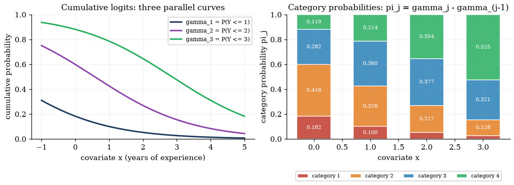
Gotcha — if the odds ratios are not parallel, the model produces negative probabilities. Suppose the true slopes differ across cut points, $(0.7,\,0.7,\,1.6)$, but you keep the cumulative-difference formula. At $x=2$ the cumulatives become $(0.052154,\,0.268941,\,0.231475)$ — note $\gamma_3 < \gamma_2$, which is impossible for cumulative probabilities — and differencing yields $\pi_3 = -0.037466$. A negative fitted probability is the loudest possible signal that the proportional-odds assumption is violated. Test it (Brant test, or fit separate $\beta_j$ and compare by LRT as in §3.10); if it fails, use a partial proportional-odds model or fall back to plain multinomial logit and accept losing the ordering.
3.10 Statistical inference: is that coefficient real?
Everything so far produced point estimates. The handwritten page p02 is entirely about attaching uncertainty and tests to them. All statistics below are computed on the fitted model of §3.5.
Fisher information — where the standard errors come from
The Fisher information is the expected curvature of the log-likelihood:
$$\mathbf{I}(\boldsymbol{\beta}) = -\mathbb{E}\!\left[\frac{\partial^{2}\ell}{\partial\boldsymbol{\beta}\,\partial\boldsymbol{\beta}^{\!\top}}\right] \;\approx\; -\mathbf{H}, \qquad \operatorname{Var}(\hat{\boldsymbol{\beta}}) = \mathbf{I}(\boldsymbol{\beta})^{-1},$$where $\mathbf{H}$ is the Hessian — exactly the relations written on the page. For logistic regression the expectation is unnecessary: the Hessian $\mathbf{X}^{\!\top}\mathbf{W}\mathbf{X}$ does not involve $\mathbf{y}$, so observed and expected information coincide and "$\approx$" is "$=$". Shapes: $\mathbf{I}$ is $(d{+}1)\times(d{+}1)$, its inverse is the covariance matrix of $\hat{\boldsymbol{\beta}}$, and $\mathrm{SE}(\hat\beta_j)=\sqrt{[\mathbf{I}^{-1}]_{jj}}$.
The page's supporting claim — "under regularity conditions MLEs are asymptotically normal" — is what licenses all of this: $\hat{\boldsymbol{\beta}} \;\dot\sim\; N\big(\boldsymbol{\beta},\,\mathbf{I}(\boldsymbol{\beta})^{-1}\big)$ for large $n$.
Intuition. Information is curvature. A sharply peaked log-likelihood (large $\mathbf{I}$) means the data pin down $\boldsymbol{\beta}$ tightly, so the variance $\mathbf{I}^{-1}$ is small. A flat log-likelihood means many $\boldsymbol{\beta}$ values explain the data equally well — large standard errors.
Computed. At $\hat{\boldsymbol{\beta}}$ the information matrix and its inverse are
$$\mathbf{I}(\hat{\boldsymbol{\beta}}) = \begin{pmatrix}5.017938 & 19.675522 & 31.138925\\ 19.675522 & 93.840792 & 116.205476\\ 31.138925 & 116.205476 & 214.276021\end{pmatrix},\qquad \mathbf{I}^{-1} = \begin{pmatrix}4.157728 & -0.376152 & -0.400214\\ -0.376152 & 0.066477 & 0.018612\\ -0.400214 & 0.018612 & 0.052733\end{pmatrix}$$both $3\times3$. Standard errors are the square roots of the diagonal: $\sqrt{0.066477} = 0.257831$ for hours, $\sqrt{0.052733} = 0.229637$ for attendance, $2.039051$ for the intercept.
The Wald test — one coefficient at a time
$H_0:\beta_j=0$ versus $H_1:\beta_j\neq0$. The statistic and its two equivalent forms:
$$Z = \frac{\hat\beta_j}{\mathrm{SE}(\hat\beta_j)} \;\dot\sim\; N(0,1), \qquad W = Z^{2} \;\dot\sim\; \chi^{2}(1).$$| term | $\hat\beta_j$ | SE | $Z$ | $W=Z^2$ | $p$ | 95% CI for $\beta_j$ | 95% CI for $e^{\beta_j}$ |
|---|---|---|---|---|---|---|---|
| intercept | $-5.582563$ | 2.039051 | $-2.737825$ | 7.495684 | 0.006185 | $[-9.579029,\,-1.586097]$ | $[0.000069,\,0.204723]$ |
| hours | 0.710367 | 0.257831 | 2.755172 | 7.590973 | 0.005866 | $[0.205029,\,1.215706]$ | $[1.227561,\,3.372674]$ |
| attendance | 0.506542 | 0.229637 | 2.205836 | 4.865714 | 0.027396 | $[0.056461,\,0.956622]$ | $[1.058086,\,2.602888]$ |
Compare $|Z|$ against $1.959964$, or $W$ against $\chi^2_{0.95}(1)=3.841459$ — the two give identical verdicts because $1.959964^2 = 3.841459$. All three coefficients are significant at the 5% level.
Interpretation — read the odds-ratio CI, not the coefficient CI. For hours the CI on the odds ratio is $[1.227561,\,3.372674]$: it excludes $1$, so the effect is real, and it says the data are consistent with anything from a 23% to a 237% increase in odds per study hour. With $n=40$ that is an enormous range — significance and precision are different things. Note the CI is symmetric on the $\beta$ scale and asymmetric on the odds scale, which is why you build it on the $\beta$ scale and exponentiate the endpoints, never the other way round.
Why $N(0,1)$ and not a $t$ distribution? The page marks this question with an arrow — "doesn't follow $t$ because …" — and leaves it hanging. The answer: the $t$ distribution in linear regression arises because the residual variance $\sigma^2$ is an extra unknown parameter estimated from the data, and the ratio of a normal to an independent $\sqrt{\chi^2/\text{df}}$ is $t$. In logistic regression there is no free scale parameter — the Bernoulli variance $p(1-p)$ is a deterministic function of the mean, fixed by $\boldsymbol{\beta}$ itself. Nothing extra is estimated, so no $t$; the reference distribution is the asymptotic normal from MLE theory. The price is that the result is asymptotic, not exact: in small samples the Wald $p$-values are only approximate.
Likelihood ratio test / deviance test — several coefficients at once
$H_0$: the reduced model is sufficient; $H_1$: the full model is needed. Define the deviance $D=-2\ell$ and compare nested models:
$$\Delta D = D_{\text{reduced}} - D_{\text{full}} = 2\big(\ell_{\text{full}} - \ell_{\text{reduced}}\big) \;\dot\sim\; \chi^{2}(\text{df}), \qquad \text{df} = \text{number of parameters removed}.$$The page's marginal note calls it "kind of F test" — a good analogy: it plays the role that the partial $F$-test plays in linear regression, comparing nested models, but the reference distribution is $\chi^2$, not $F$, for the same "no free scale parameter" reason as above. Note also that the page reuses the symbol $D$ for the difference; $\Delta D$ is written here to keep the two apart.
| model | terms | $\ell$ | $D=-2\ell$ |
|---|---|---|---|
| null | intercept only | $-25.897866$ | 51.795731 |
| reduced | intercept + hours | $-18.807779$ | 37.615558 |
| full | intercept + hours + attendance | $-15.642119$ | 31.284238 |
Does attendance add anything? $\Delta D = 37.615558 - 31.284238 = 6.331320$ on $1$ df, $p = 0.011862$. Reject $H_0$: attendance carries information beyond study hours.
Is the model better than nothing? $\Delta D = 51.795731 - 31.284238 = 20.511494$ on $2$ df, $p = 3.52\times10^{-5}$. Overwhelmingly yes.
Sanity check on the null model. Intercept-only fit gives $\hat\beta_0 = 0.619039$, and $\sigma(0.619039) = 0.65$, exactly the sample pass rate $26/40$. A logistic model with no predictors predicts the base rate — as it must.
Interpretation — LRT vs Wald. For attendance the Wald test gives $W=4.865714$ and the LRT gives $\Delta D=6.331320$; both reject, but they disagree numerically because they approximate the same likelihood surface differently (Wald uses curvature at the peak only; the LRT uses the actual height difference). When they disagree materially, trust the LRT — it is invariant to reparameterisation, whereas Wald is not, and Wald degrades badly for large coefficients (the Hauck–Donner effect: as $|\hat\beta|\to\infty$ under separation, the SE grows faster than the estimate and the Wald statistic paradoxically shrinks toward $0$, declaring a perfect predictor insignificant). Also: the Wald test handles one coefficient; only the LRT can test a group of coefficients — e.g. all levels of a categorical variable at once, or the proportional-odds assumption of §3.9.
Hosmer–Lemeshow — goodness of fit by calibration
The Wald and LR tests ask whether coefficients matter. Hosmer–Lemeshow asks a different question: are the predicted probabilities right? Sort the samples by fitted $\hat p$, split into $g$ groups of roughly equal size, and compare observed against expected counts in each:
$$\chi^{2}_{HL} = \sum_{\text{groups}}\sum_{\text{outcomes}} \frac{(O-E)^{2}}{E} \;\dot\sim\; \chi^{2}(g-2).$$With $n=40$ and $g=4$ groups of 10 (the usual $g=10$ needs a bigger sample):
| group | $n$ | $\hat p$ range | $O_{1}$ | $E_{1}=\sum\hat p$ | $O_{0}$ | $E_{0}$ | contribution |
|---|---|---|---|---|---|---|---|
| 1 | 10 | $[0.0338,\,0.3170]$ | 2 | 1.7824 | 8 | 8.2176 | 0.032326 |
| 2 | 10 | $[0.3285,\,0.7516]$ | 6 | 5.7949 | 4 | 4.2051 | 0.017261 |
| 3 | 10 | $[0.7877,\,0.9261]$ | 8 | 8.6297 | 2 | 1.3703 | 0.335346 |
| 4 | 10 | $[0.9496,\,0.9986]$ | 10 | 9.7930 | 0 | 0.2070 | 0.211413 |
| total | 40 | 26 | 25.9999 | 14 | 14.0001 | 0.596347 |
$\chi^2_{HL} = 0.596347$ on $g-2=2$ df, $p = 0.742173$.
Interpretation — and a sign flip you must not get wrong. Here a large $p$-value is the good outcome: $H_0$ is "the model fits", so $p=0.742173$ means no detectable miscalibration. This is the opposite reading from the Wald and LR tests on the same page, and mixing them up is the classic exam mistake. Notice also that the expected column sums to $25.9999$, i.e. $\sum_i\hat p_i = \sum_i y_i$ up to rounding — an automatic property of any logistic fit that includes an intercept, since the first component of the score equation $\mathbf{X}^{\!\top}(\mathbf{p}-\mathbf{y})=\mathbf{0}$ is exactly $\sum_i(\hat p_i - y_i)=0$.
Gotcha — Hosmer–Lemeshow is not a strong test. Its value depends on $g$ (change 10 groups to 8 and the verdict can flip), it has low power in small samples, and with very large $n$ it rejects on differences too small to matter. Group 4 above already has $E_0 = 0.2070$, well below the $\chi^2$ approximation's rule of thumb of about 5 expected per cell — so the tail probability here is indicative, not exact. Treat it as one diagnostic among several; a calibration plot is more informative than the single number.
Pseudo-$R^2$ — three of them, none of them $R^2$
There is no residual variance to decompose in a Bernoulli model, so ordinary $R^2$ does not exist. Three substitutes are listed on the page. Let $\ell_{\text{full}}$, $\ell_{\text{null}}$ be log-likelihoods and $L_M=e^{\ell_{\text{full}}}$, $L_0=e^{\ell_{\text{null}}}$ the likelihoods themselves.
| name | formula | value here | range / reading |
|---|---|---|---|
| McFadden | $1-\dfrac{\ell_{\text{full}}}{\ell_{\text{null}}}$ | 0.396007 | $[0,1)$; the page notes "typically < 0.5" and "0.3–0.4 a good [fit]" |
| McFadden, adjusted | $1-\dfrac{\ell_{\text{full}}-k}{\ell_{\text{null}}}$, $k=3$ | 0.280168 | penalises parameter count |
| Cox & Snell | $1-\Big(\dfrac{L_0}{L_M}\Big)^{2/n}$ | 0.401176 | "never reaches 1" — its ceiling here is $0.726073$ |
| Nagelkerke | $\dfrac{1-(L_0/L_M)^{2/n}}{1-L_0^{2/n}}$ | 0.552528 | Cox & Snell divided by its own maximum; "max 1" |
Adjudication — the Nagelkerke formula on hand p02 is mis-transcribed. The page writes
$$R^{2} = 1-\ \frac{(L_0/L_M)^{2/n}}{1-(L_0)^{2/n}}$$with the "$1-$" sitting outside and to the left of the fraction bar. That cannot be the intended statistic: Nagelkerke's whole purpose is to rescale Cox & Snell by its attainable maximum, i.e. $R^2_{N} = R^2_{CS}\big/R^2_{CS,\max}$, and with the "$1-$" outside the expression is neither of those and is not bounded by $1$. On this dataset, $L_0 = 5.66\times10^{-12}$ and $L_M = 1.61\times10^{-7}$, giving:
- correct Nagelkerke $= \dfrac{1-(L_0/L_M)^{2/n}}{1-L_0^{2/n}} = \dfrac{0.401176}{0.726073} = 0.552528$;
- the page's expression as literally written $= 0.175256$ — a different number entirely, and one with no interpretation.
The "$1-$" belongs inside the numerator. Everything else on the page (McFadden, Cox & Snell, and all three side notes) is correct as written.
Interpretation. The three statistics disagree by a lot on the same fit — $0.396007$, $0.401176$, $0.552528$ — because they measure different things, so always name which one you are quoting. None of them is "fraction of variance explained"; McFadden is a fraction of log-likelihood explained, which is why the page's calibration ("0.3–0.4 is good") looks so much lower than the $R^2$ intuition from linear regression. Their honest use is comparative — model A vs model B on the same dataset — never absolute. For "how good is this classifier?" use held-out log-loss, AUC or the metrics of §5 instead. Cox & Snell's ceiling $1-L_0^{2/n}=0.726073$ depends only on the base rate and $n$, which is exactly the defect Nagelkerke's division removes.
3.11 Hyperparameters and regularisation in practice
The fitting theory above assumed an unpenalised MLE. Real software does not: scikit-learn's LogisticRegression is regularised by default. hand p03 lists the knobs, and each is worked through here.
(a), (b) Penalty and regularisation strength
The objective becomes
$$L = \underbrace{\text{Cross Entropy}}_{\text{fit}} + \lambda\,\underbrace{R(\boldsymbol{\beta})}_{\text{penalty}}, \qquad R = \|\boldsymbol{\beta}\|_2^2 \;(\text{L2}),\quad \|\boldsymbol{\beta}\|_1 \;(\text{L1}),\quad \text{or a mix (Elastic Net)},$$exactly as written on the page. The critical practical point is the reciprocal parameterisation the page boxes:
$$\boxed{\;C = \frac{1}{\lambda}\;}$$so scikit-learn actually minimises $C\cdot(\text{cross-entropy}) + R(\boldsymbol{\beta})$. Two consequences the page records with arrows: $C=100$ means a very small penalty, tending to overfit; $C=0.01$ means strong regularisation, tending to underfit. The direction is the opposite of $\lambda$'s and is a perennial source of confusion.
The path, computed. $n_{\text{train}}=60$, $n_{\text{val}}=400$, $d=8$ features of which only 2 are informative (true $\boldsymbol{\beta}=(-0.5,\,2.2,\,-1.8,\,0,\dots,0)$). Design matrices $\mathbf{X}_{\text{train}}\in\mathbb{R}^{60\times9}$, $\mathbf{X}_{\text{val}}\in\mathbb{R}^{400\times9}$, $\boldsymbol{\beta}\in\mathbb{R}^{9\times1}$. The intercept is left unpenalised, as is standard.
| $C$ | $\lambda=1/C$ | penalty | $\|\boldsymbol{\beta}_{1:}\|_2$ | slopes at 0 | train log-loss | val log-loss | val acc |
|---|---|---|---|---|---|---|---|
| 0.01 | 100 | L2 | 0.2020 | 0 | 0.612769 | 0.649773 | 0.6400 |
| 0.10 | 10 | L2 | 0.8820 | 0 | 0.454418 | 0.579304 | 0.7150 |
| 1.00 | 1 | L2 | 1.8006 | 0 | 0.382028 | 0.597996 | 0.7000 |
| 10.0 | 0.1 | L2 | 2.2542 | 0 | 0.374851 | 0.631977 | 0.7100 |
| 100 | 0.01 | L2 | 2.3318 | 0 | 0.374691 | 0.638771 | 0.7100 |
| 0.01 | 100 | L1 | 0.0000 | 8 | 0.693147 | 0.693147 | 0.4675 |
| 0.10 | 10 | L1 | 0.3376 | 5 | 0.597262 | 0.628319 | 0.6975 |
| 1.00 | 1 | L1 | 1.7293 | 3 | 0.386310 | 0.575315 | 0.7200 |
| 10.0 | 0.1 | L1 | 2.2546 | 1 | 0.374888 | 0.629494 | 0.7100 |
| 100 | 0.01 | L1 | 2.3322 | 1 | 0.374692 | 0.638530 | 0.7100 |

Interpretation. The generalisation gap (val minus train log-loss) grows from $0.037004$ at $C=0.01$ to $0.264080$ at $C=100$, while the coefficient norm grows from $0.2020$ to $2.3318$. That is the source's two arrows made quantitative: big $C$ = big coefficients = memorised training set. But note the extremes: at $C=0.01$ with L1 every slope is zeroed, train log-loss is exactly $\ln 2 = 0.693147$, and the model predicts the base rate for everyone — maximum underfit. The best validated setting is $C=0.1$ for L2 and $C=1$ for L1; L1 wins narrowly here because the truth is sparse, which is precisely when it should. On dense problems L2 usually wins. Full treatment of the bias–variance trade-off underlying this curve is §6.
(c) Solver, (d) max_iter
| solver | penalties supported | the page's note | why |
|---|---|---|---|
lbfgs | L2, none | "for L2" | quasi-Newton; needs a smooth objective, and $|\beta|$ is not differentiable at 0 |
newton-cg | L2, none | — | uses the Hessian $\mathbf{X}^{\!\top}\mathbf{W}\mathbf{X}$ of §3.4; strong when $d$ is small |
liblinear | L1, L2 | "for L1 & L2 / small dataset" | coordinate descent — handles the L1 kink one coordinate at a time; one-vs-rest only |
saga | L1, L2, Elastic Net, none | "massive dataset, L1, L2 & Elastic Net" | variance-reduced stochastic gradient; the only one covering Elastic Net |
max_iter caps the solver's iterations. A "failed to converge" warning almost never means the problem is hard — the objective is convex (§3.4). It usually means features were left unscaled, so the Hessian is badly conditioned and the solver crawls. Standardise first, then raise max_iter.
(e) class_weight
Options None and balanced. Under balanced each class $c$ gets weight $w_c = \dfrac{n}{K\,n_c}$, which enters the loss as $L=-\sum_i w_{y_i}\big[y_i\ln p_i + (1-y_i)\ln(1-p_i)\big]$.
Computed. A frozen imbalanced set: $n=300$ with 37 positives (12.33%). Balanced weights are $w_{+} = \dfrac{300}{2\cdot37} = 4.054054$ and $w_{-} = \dfrac{300}{2\cdot263} = 0.570342$.
| setting | intercept | slope | TP | FP | FN | TN | recall | precision | accuracy |
|---|---|---|---|---|---|---|---|---|---|
class_weight=None | $-2.4818$ | 1.3413 | 5 | 1 | 32 | 262 | 0.1351 | 0.8333 | 0.8900 |
class_weight='balanced' | $-0.4526$ | 1.2181 | 24 | 87 | 13 | 176 | 0.6486 | 0.2162 | 0.6667 |
Interpretation. Look at what actually moved: the slope barely changed ($1.3413 \to 1.2181$) while the intercept jumped from $-2.4818$ to $-0.4526$. Class weighting mostly shifts the intercept, i.e. it relocates the $p=0.5$ threshold — which is why, for a pure ranking task, adjusting the decision threshold on an unweighted model achieves much the same effect (§5) at zero refitting cost. The consequence for metrics is stark: recall rises from $0.1351$ to $0.6486$ while precision collapses from $0.8333$ to $0.2162$ and accuracy falls from $0.89$ to $0.6667$. The unweighted model has the higher accuracy and is nearly useless — it finds 5 of 37 positives. Accuracy is the wrong metric here; §5 supplies the right ones, and §14 covers resampling alternatives (SMOTE) to reweighting.
Gotcha — regularisation makes scaling mandatory. The penalty $\|\boldsymbol{\beta}\|^2$ treats all coefficients as comparable, but a coefficient's size depends on its feature's units: measure income in units instead of thousands and its coefficient shrinks by $1000$, so the penalty essentially stops applying to it. Unpenalised MLE is equivariant to rescaling (the fit is identical); penalised fitting is not. Standardise every feature before fitting any penalised model.
Gotcha — complete separation. If a hyperplane separates the classes perfectly, the unpenalised likelihood has no maximum: pushing $\|\boldsymbol{\beta}\|\to\infty$ drives every $p_i$ to $0$ or $1$ and the likelihood toward $1$ without ever attaining it. Symptoms are enormous coefficients with enormous standard errors, and a solver that never converges. Any nonzero penalty (i.e. finite $C$) fixes it by bounding $\|\boldsymbol{\beta}\|$ — one more reason scikit-learn regularises by default.
Code — tuning penalty / C / class_weight with cross-validation (sklearn)
from sklearn.linear_model import LogisticRegression
from sklearn.model_selection import GridSearchCV
from sklearn.pipeline import make_pipeline
from sklearn.preprocessing import StandardScaler
# standardize first: the L1/L2 penalty is scale-sensitive (3.11 gotcha);
# trees/boosting would NOT need this step (cross-ref 13.13's rule)
pipe = make_pipeline(
StandardScaler(),
LogisticRegression(solver="saga", max_iter=5000, class_weight="balanced"),
)
param_grid = {
"logisticregression__C": [0.01, 0.1, 1, 10, 100], # C = 1/lambda (3.11)
"logisticregression__penalty": ["l1", "l2"],
}
# score on log-loss, not accuracy -- 3.11's imbalance example shows accuracy
# rewarding a model that finds 5 of 37 positives
grid = GridSearchCV(pipe, param_grid, scoring="neg_log_loss", cv=5)
grid.fit(X_train, y_train)
best_C = grid.best_params_["logisticregression__C"]
best_penalty = grid.best_params_["logisticregression__penalty"]class_weight="balanced" sets w_c = n/(K*n_c) per class and mostly shifts the intercept (3.11's finding) — for a pure ranking task, moving the decision threshold on an unweighted fit is often cheaper than refitting.
§3 recap.
- Model. $z=\boldsymbol{\beta}^{\!\top}\mathbf{x}$, $p=\sigma(z)$, equivalently $\ln\frac{p}{1-p}=\boldsymbol{\beta}^{\!\top}\mathbf{x}$. Linear in log-odds; $e^{\beta_j}$ is an odds ratio; the boundary $p=0.5$ is the hyperplane $z=0$.
- Loss. Bernoulli likelihood $\to$ log $\to$ negate gives cross-entropy $L=-\sum[y\ln p+(1-y)\ln(1-p)]$. Convex, because $\nabla^2 L = \mathbf{X}^{\!\top}\mathbf{W}\mathbf{X}\succeq0$.
- Not MSE. Wrong penalties (a confident error scores only $3.24\times$ a hedge) and a gradient throttled by $p(1-p)$ exactly where the model is most wrong ($75\times$ weaker than cross-entropy at a bad start), plus genuine non-convexity for $p>\tfrac23$.
- Gradient. $\nabla_{\boldsymbol{\beta}}L=\mathbf{X}^{\!\top}(\mathbf{p}-\mathbf{y})$, shape $(d{+}1)\times1$ — the sigmoid derivative cancels. Fit by GD (§4) or Newton/IRLS.
- Multiclass. Softmax = one joint model, probabilities sum to 1, gradient $\mathbf{p}-\mathbf{y}$ again; OvR = $K$ independent sigmoids that do not sum to 1. Softmax at $K=2$ is the sigmoid.
- GLM. Same linear predictor, different link: identity (Gaussian), logit (Bernoulli), log (Poisson), cumulative logit (ordinal). Choose from the response, never the features (Fig. 3.5).
- Inference. $\operatorname{Var}(\hat{\boldsymbol{\beta}})=\mathbf{I}^{-1}$; Wald $Z=\hat\beta_j/\mathrm{SE}$ and $W=Z^2\sim\chi^2(1)$ per coefficient; LRT $\Delta D=D_{\text{red}}-D_{\text{full}}\sim\chi^2(\text{df})$ for groups of coefficients (prefer it); Hosmer–Lemeshow for calibration (large $p$ = good); pseudo-$R^2$ for comparison only.
- Practice. $C=1/\lambda$ inverts the usual direction; standardise before penalising;
balancedweights mainly move the intercept.
3.12 Practice
Practice 3.1 — A model gives $\hat\beta_{\text{age}} = 0.05$ per year. Interpret it, and give the effect of ten years.
On the log-odds scale the effect is additive: one extra year adds $0.05$ to $\ln\frac{p}{1-p}$. On the odds scale it is multiplicative: odds multiply by $e^{0.05} = 1.051271$, i.e. $+5.13\%$ per year.
Ten years multiply the log-odds increment by 10, not the odds ratio: the odds multiply by $e^{0.5} = 1.648721$, i.e. $+64.9\%$ — not $+51.3\%$ as $10\times5.13\%$ would suggest.
The effect on probability depends on the starting point, since $\Delta p \approx p(1-p)\,\Delta z$. Starting at $p=0.5$ (where $p(1-p)=0.25$ is maximal), ten years moves $p$ to $\sigma(0.5)=0.622459$, a gain of $0.122$. Starting at $p=0.880797$ (i.e. $z=2$), it moves to $\sigma(2.5)=0.924142$, a gain of only $0.043$. The odds ratio is constant; the probability change is not.
Practice 3.2 — Show that the gradient of the cross-entropy with respect to the intercept forces the fitted probabilities to sum to the number of positives.
The first column of $\mathbf{X}$ is all ones (the augmented intercept column). The gradient is $\nabla_{\boldsymbol{\beta}}L = \mathbf{X}^{\!\top}(\mathbf{p}-\mathbf{y})$, shape $(d{+}1)\times1$, and at the optimum it is the zero vector. Its first component is the dot product of the ones-column with $(\mathbf{p}-\mathbf{y})$:
$$\frac{\partial L}{\partial \beta_0} = \sum_{i=1}^{n}(\hat p_i - y_i) = 0 \quad\Longrightarrow\quad \sum_{i=1}^{n}\hat p_i = \sum_{i=1}^{n} y_i .$$Verification on §3.5's fit: $\sum y_i = 26$ and the Hosmer–Lemeshow expected column sums to $1.7824+5.7949+8.6297+9.7930 = 25.9999 \approx 26$ (rounding only).
Consequences: (i) a logistic model with an intercept is automatically calibrated on average, whatever else it gets wrong; (ii) an intercept-only model predicts the base rate for everyone — §3.10's null fit gave $\sigma(0.619039)=0.65 = 26/40$ ; (iii) drop the intercept and this guarantee vanishes.
Practice 3.3 — Using §3.5's fitted model, compute $p$ for a student with 4 hours and attendance 7, and find how many hours they would need for a 90% pass probability.
Coefficients $\hat{\boldsymbol{\beta}} = (-5.582563,\,0.710367,\,0.506542)$.
Part 1. $z = -5.582563 + 0.710367(4) + 0.506542(7) = -5.582563 + 2.841468 + 3.545794 = 0.804699$.
$p = \sigma(0.804699) = 1/(1+e^{-0.804699}) = 0.690970$. Odds $= e^{0.804699} = 2.236$. Predicted pass, but only just — a 69% probability is not a confident call.
Part 2. Invert: $p=0.9$ means log-odds $=\ln\frac{0.9}{0.1} = \ln 9 = 2.197225$. Solve for hours at attendance 7:
$$-5.582563 + 0.710367\,h + 3.545794 = 2.197225 \;\Longrightarrow\; 0.710367\,h = 4.233994 \;\Longrightarrow\; h = 5.960$$So roughly 6 hours — about 2 hours more than the current 4. Sanity check against §3.5: at attendance 6, only $3.580280$ hours are needed for $p=0.5$ , and pushing from $p=0.5$ to $p=0.9$ costs $\ln9 / 0.710367 = 3.09$ extra hours — consistent.
Practice 3.4 — Two models are fitted to the same 40 rows: $\ell_A = -19.2$ (4 parameters) and $\ell_B = -15.6$ (7 parameters), with A nested inside B. Is B worth it?
LRT. $\Delta D = 2(\ell_B - \ell_A) = 2(-15.6+19.2) = 7.2$ on $\text{df} = 7-4 = 3$ parameters added.
Critical value $\chi^2_{0.95}(3) = 7.815$. Since $7.2 < 7.815$ we fail to reject $H_0$ ($p\approx0.066$): the three extra parameters do not buy a statistically significant improvement. Prefer the simpler model A.
Cross-check with McFadden. With $\ell_{\text{null}} = -25.897866$ , model A scores $1-19.2/25.897866 = 0.2587$ and model B scores $1-15.6/25.897866 = 0.3976$ — B looks much better on raw pseudo-$R^2$, which is exactly the trap: log-likelihood can only increase when you add parameters, so it always favours the bigger model. The adjusted version $1-(\ell-k)/\ell_{\text{null}}$ gives $1-(-19.2-4)/(-25.897866) = 0.1042$ for A and $1-(-15.6-7)/(-25.897866) = 0.1274$ for B — a much narrower gap. The LRT is the principled version of the same penalty. Compare §3.10, where a genuine improvement gave $\Delta D = 6.331320$ on just 1 df.
Practice 3.5 — Three softmax scores are $\mathbf{z} = (2.0,\,1.0,\,0.1)$. Compute the probabilities, then show what happens to the loss and gradient if the true class is the last one.
Probabilities. Subtract the max for stability: $\mathbf{z}-2.0 = (0,\,-1.0,\,-1.9)$. Exponentials: $(1,\;0.367879,\;0.149569)$, sum $1.517448$. Therefore
$$\mathbf{p} = (0.659001,\;0.242433,\;0.098566), \qquad \textstyle\sum_k p_k = 1 .$$(The unshifted computation gives the same thing: $e^{2.0}=7.389056$, $e^{1.0}=2.718282$, $e^{0.1}=1.105171$, sum $11.212509$, and $7.389056/11.212509 = 0.659001$ — the shift-invariance of §3.6.)
Loss. True class 3, one-hot $\mathbf{y}=(0,0,1)$: $L = -\ln p_3 = -\ln 0.098566 = 2.317$. Compare with the loss had class 1 been correct: $-\ln 0.659001 = 0.417$. The model is confidently wrong, and cross-entropy charges it $5.6\times$ more.
Gradient. $\partial L/\partial\mathbf{z} = \mathbf{p}-\mathbf{y} = (0.659001,\;0.242433,\;-0.901434)$, shape $3\times1$. Descending pushes $z_3$ up (its gradient is negative) and $z_1,z_2$ down, in proportion to the probability each stole. Note $\sum_k(p_k-y_k)=0$ always — the gradient lies in the zero-sum subspace, which is the over-parameterisation of §3.6 showing up in the gradient. With $\mathbf{x}$ of shape $(d{+}1)\times1$ the weight gradient is $(\mathbf{p}-\mathbf{y})\mathbf{x}^{\!\top}$, shape $K\times(d{+}1)$.
Practice 3.6 — A Poisson GLM of website signups on ad spend gives $\hat\beta_{\text{spend}} = 0.15$ per \$1000. A colleague reports residual deviance 210 on 60 df. What do you conclude, and what do you do?
The coefficient. $e^{0.15} = 1.161834$: each extra \$1000 of ad spend multiplies the expected signup rate by 1.16, a 16.2% increase. It is multiplicative, so \$5000 gives $e^{0.75} = 2.117$, roughly a doubling — not $5\times16.2\% = 81\%$.
The deviance. $D/\text{df} = 210/60 = 3.5$. Under a correctly specified Poisson model this ratio should be near 1 (§3.8's fit had $6.369086/14 = 0.454935$ ). A ratio of 3.5 is strong evidence of over-dispersion: the conditional variance is about 3.5 times the conditional mean.
Consequence. The point estimates $\hat{\boldsymbol{\beta}}$ are still consistent, but the standard errors are too small by roughly $\sqrt{3.5} = 1.87$. Every Wald $z$ is inflated by that factor, so borderline predictors will be reported as significant when they are not.
Fixes, in increasing order of commitment: (i) quasi-Poisson — keep the fit, multiply all SEs by $\sqrt{\hat\phi}$; (ii) negative binomial — a genuine likelihood with an extra dispersion parameter, giving $\operatorname{Var}=\mu+\mu^2/\theta$; (iii) check for a missing covariate or an excess of zeros (zero-inflated model), since unmodelled heterogeneity is the most common cause of over-dispersion. Do not diagnose it from the marginal $s^2$ vs $\bar y$ comparison — §3.8 shows that misfires badly.
Practice 3.7 — You fit with $C=100$ and get 99% train accuracy, 68% validation accuracy, and coefficients in the hundreds. Diagnose and prescribe.
Diagnosis. $C=100$ means $\lambda = 1/C = 0.01$ — essentially no regularisation, the page's "very small penalty → overfit" arm. Coefficients in the hundreds additionally point to near-complete separation: the likelihood has no interior maximum, so the optimiser walks $\|\boldsymbol{\beta}\|$ toward infinity until max_iter stops it. The 31-point train/validation gap confirms memorisation.
Evidence from §3.11's path. Moving $C$ from $100$ down to $0.1$ shrank $\|\boldsymbol{\beta}_{1:}\|_2$ from $2.3318$ to $0.8820$ and cut the generalisation gap from $0.264080$ to (at the optimum) a much smaller value, while improving validation log-loss from $0.638771$ to $0.579304$.
Prescription. (1) Standardise the features — mandatory before any penalised fit, otherwise the penalty is applied unevenly across units. (2) Cross-validate $C$ over a log grid such as $\{0.01, 0.1, 1, 10, 100\}$, selecting on validation log-loss, not accuracy — log-loss is the quantity being optimised and it moves before accuracy does (compare the L2 rows at $C=10$ and $C=100$: identical accuracy $0.71$, different log-loss). (3) If you suspect only a few features matter, try L1: at $C=1$ it zeroed 3 of 8 slopes and gave the best validation log-loss of the whole grid, $0.575315$. (4) Check for a leaked feature that is a deterministic function of the label — that is the other classic cause of separation.
4 Optimization: Gradient Descent to Adam
§3 derived a cross-entropy gradient and then quietly handed it to an optimiser it never described; this section is that optimiser. Almost every model in these notes ends the same way: a loss $L(\mathbf{w})$ that we cannot minimise in closed form, and a parameter vector $\mathbf{w}$ that has to be walked downhill one step at a time. This section builds that walk from the ground up — the update rule and where it comes from, exactly what the learning rate does to it, and then the four accelerations (momentum, Nesterov, RMSProp, Adam) that turn it into what a modern library actually runs. Every optimizer below is traced by hand for three steps on one shared toy surface, so the rules stop being folklore and become arithmetic.
Scope. This section is about how to move $\mathbf{w}$. What the gradient of a particular model is belongs to that model's section: the logistic cross-entropy gradient is derived in section 3, the pseudo-inverse alternative for linear regression in section 2, and the layer-by-layer chain rule that produces $\nabla_\mathbf{w} L$ for a neural network is section 15's backpropagation. Here $\nabla L$ is assumed available.
4.1 The update rule and where it comes from
Notation. $\mathbf{w} \in \mathbb{R}^{d}$ is the parameter vector, shape $(d \times 1)$. $L(\mathbf{w}) \in \mathbb{R}$ is a scalar loss. Its gradient $\nabla L(\mathbf{w}) = \partial L/\partial \mathbf{w}$ has shape $(d \times 1)$ — the same shape as $\mathbf{w}$, which is what makes $\mathbf{w} - \eta \nabla L$ type-correct. The Hessian $\nabla^2 L$ has shape $(d \times d)$. The step size $\eta > 0$ is the learning rate. Per-sample loss is written $\ell$, the average over a set is $L$.
Start from the first-order Taylor expansion of $L$ around the current point $\mathbf{w}(t)$, taking a step of fixed length $\varepsilon$ in some unit direction $\hat{\mathbf{v}}$ (shape $(d\times1)$, $\|\hat{\mathbf{v}}\|=1$):
$$L\big(\mathbf{w}(t) + \varepsilon\hat{\mathbf{v}}\big) \;=\; L\big(\mathbf{w}(t)\big) \;+\; \varepsilon\,\underbrace{\nabla L(\mathbf{w}(t))^\top}_{(1\times d)}\underbrace{\hat{\mathbf{v}}}_{(d\times1)} \;+\; O(\varepsilon^2).$$The only term we control is the inner product $\nabla L^\top \hat{\mathbf{v}}$, a $(1\times1)$ scalar. By Cauchy–Schwarz, $\nabla L^\top\hat{\mathbf{v}} \ge -\|\nabla L\|\,\|\hat{\mathbf{v}}\| = -\|\nabla L\|$, with equality exactly when
$$\hat{\mathbf{v}}^\star = -\frac{\nabla L(\mathbf{w}(t))}{\|\nabla L(\mathbf{w}(t))\|}.$$So the negative gradient is not merely "a" downhill direction — it is the steepest one, and the derivation says why: it is the direction that maximises the magnitude of the first-order decrease. v5 writes the update in exactly this normalised form:
$$\mathbf{w}(t) \leftarrow \mathbf{w}(t-1) - \eta\,\hat{\mathbf{v}}, \qquad \hat{\mathbf{v}} = \frac{\nabla L(\mathbf{w}(t-1))}{\|\nabla L(\mathbf{w}(t-1))\|}.$$In practice the norm is folded into $\eta$ and we write the form everyone uses:
Gradient descent.
$$\boxed{\;\mathbf{w}(t) \;=\; \mathbf{w}(t-1) \;-\; \eta\,\nabla L\big(\mathbf{w}(t-1)\big)\;}\qquad \text{shapes } (d\times1) = (d\times1) - \text{scalar}\cdot(d\times1).$$Why the two forms differ, and when it matters. The normalised version moves a fixed distance $\eta$ every step; the unnormalised version moves a distance $\eta\|\nabla L\|$, which shrinks automatically as you approach a minimum. The unnormalised form is what gives gradient descent its natural braking near the optimum — and it is also why a badly scaled loss (gradients of magnitude $10^{4}$) blows up while the normalised form would not. Everything below uses the unnormalised form unless stated.

4.2 Batch, mini-batch and stochastic gradient descent
Nearly every training loss is an average over $N$ samples,
$$L(\mathbf{w}) \;=\; \frac{1}{N}\sum_{i=1}^{N} \ell\big(\mathbf{w};\mathbf{x}_i,y_i\big) \qquad\Longrightarrow\qquad \nabla L(\mathbf{w}) \;=\; \frac{1}{N}\sum_{i=1}^{N}\nabla \ell\big(\mathbf{w};\mathbf{x}_i,y_i\big),$$so one gradient evaluation costs $N$ per-sample gradients. That single fact produces the whole batch-size discussion.
The gradient with shapes: squared error
Let $\mathbf{X}$ be the design matrix, shape $(N \times d)$ (each row is one augmented input $\mathbf{x}_i^\top$), $\mathbf{y}$ the target vector $(N\times1)$, $\mathbf{w}$ the weights $(d\times1)$. Then
$$\underbrace{\mathbf{r}}_{(N\times1)} \;=\; \underbrace{\mathbf{X}}_{(N\times d)}\underbrace{\mathbf{w}}_{(d\times1)} - \underbrace{\mathbf{y}}_{(N\times1)}, \qquad L(\mathbf{w}) \;=\; \frac{1}{N}\underbrace{\mathbf{r}^\top}_{(1\times N)}\underbrace{\mathbf{r}}_{(N\times1)} \;=\; \frac{1}{N}\|\mathbf{X}\mathbf{w}-\mathbf{y}\|_2^2 \quad (1\times1).$$Differentiating: $\partial L/\partial\mathbf{w} = \frac{1}{N}\cdot 2\,(\partial\mathbf{r}/\partial\mathbf{w})^\top\mathbf{r}$ and $\partial\mathbf{r}/\partial\mathbf{w} = \mathbf{X}$, hence
$$\boxed{\;\nabla L(\mathbf{w}) \;=\; \frac{2}{N}\underbrace{\mathbf{X}^\top}_{(d\times N)}\underbrace{\big(\mathbf{X}\mathbf{w}-\mathbf{y}\big)}_{(N\times1)}\;}\qquad (d\times1).$$Two things fall out immediately. First, the Hessian is $\nabla^2 L = \frac{2}{N}\mathbf{X}^\top\mathbf{X}$, shape $(d\times d)$, constant — squared error is an exact quadratic, which is why every stability statement in §4.3 is exact rather than asymptotic. Second, setting $\nabla L=\mathbf{0}$ gives the normal equations $\mathbf{X}^\top\mathbf{X}\mathbf{w} = \mathbf{X}^\top\mathbf{y}$ of section 2 — for this loss gradient descent is optional. It is the cases where no such solution exists (logistic regression, neural networks) that make it compulsory.
Worked example — three points, one gradient step. Take v5 §04's dataset $(1,2),(2,2),(3,4)$ with the model $\hat y = w_0 + w_1x$, so $$\mathbf{X}=\begin{pmatrix}1&1\\1&2\\1&3\end{pmatrix}\ (3\times2),\qquad \mathbf{y}=\begin{pmatrix}2\\2\\4\end{pmatrix}\ (3\times1),\qquad \mathbf{w}=\begin{pmatrix}w_0\\w_1\end{pmatrix}\ (2\times1).$$ The exact optimum is $\mathbf{X}^\top\mathbf{X}=\begin{pmatrix}3&6\\6&14\end{pmatrix}$, $\mathbf{X}^\top\mathbf{y}=(8,18)^\top$, $\mathbf{w}^\star=(2/3,\,1)^\top$, $L^\star=0.222222$.
Now run gradient descent from $\mathbf{w}=\mathbf{0}$ with $\eta=0.05$. Step 1: the residual is $\mathbf{r}=\mathbf{X}\mathbf{0}-\mathbf{y}=(-2,-2,-4)^\top$, so $$\nabla L = \tfrac{2}{3}\mathbf{X}^\top\mathbf{r} = \tfrac{2}{3}\begin{pmatrix}-8\\-18\end{pmatrix} = \begin{pmatrix}-5.333333\\-12\end{pmatrix},\qquad \mathbf{w}(1) = \mathbf{0}-0.05\begin{pmatrix}-5.333333\\-12\end{pmatrix} = \begin{pmatrix}0.266667\\0.6\end{pmatrix}.$$ The loss falls from $L(\mathbf{0})=8$ to $L(\mathbf{w}(1))=1.768889$.
| $t$ | $\mathbf{w}(t-1)$ | $\nabla L$ | $-\eta\nabla L$ | $\mathbf{w}(t)$ | $L(\mathbf{w}(t))$ |
|---|---|---|---|---|---|
| 1 | $(0,\,0)$ | $(-5.333333,\,-12)$ | $(0.266667,\,0.6)$ | $(0.266667,\,0.6)$ | 1.768889 |
| 2 | $(0.266667,\,0.6)$ | $(-2.4,\,-5.333333)$ | $(0.12,\,0.266667)$ | $(0.386667,\,0.866667)$ | 0.532919 |
| 3 | $(0.386667,\,0.866667)$ | $(-1.093333,\,-2.364444)$ | $(0.054667,\,0.118222)$ | $(0.441333,\,0.984889)$ | 0.287683 |
Interpretation. Three steps take the loss from $8$ to $0.287683$, i.e. within $1\%$ of the optimal gap $L-L^\star$ . But the parameters are nowhere near converged: after $600$ steps $\mathbf{w}=(0.666532,\,1.000059)$, still $0.0001466$ away from $\mathbf{w}^\star$ . A flat loss curve is not evidence of converged parameters — the loss is quadratic in the distance to $\mathbf{w}^\star$, so the last factor-of-100 in parameter error only costs a factor of $10^{4}$ in loss, which is invisible on a linear plot. This is the same $\kappa=46.14$ ill-conditioning quantified in §4.3 .
Three batch sizes
Let $\mathcal{B}\subseteq\{1,\dots,N\}$ be the indices used at one step, $|\mathcal{B}|=B$. The stochastic update is $$\mathbf{w}(t) = \mathbf{w}(t-1) - \eta\,\frac{1}{B}\sum_{i\in\mathcal{B}}\nabla\ell\big(\mathbf{w}(t-1);\mathbf{x}_i,y_i\big).$$ $B=N$ is batch (full-batch) GD; $B=1$ is SGD; $1<B<N$ is mini-batch, in practice $B\in[32,256]$. An epoch is $\lceil N/B\rceil$ updates, i.e. one pass over the data, costing $N$ per-sample gradients regardless of $B$.
The mini-batch gradient is an unbiased estimator of the full gradient: if $\mathcal{B}$ is a uniform random subset, $\mathbb{E}[\nabla L_\mathcal{B}] = \nabla L$. Its variance scales as $\sigma^2/B$ where $\sigma^2$ is the per-sample gradient variance — so halving the noise costs four times the compute per step. That trade is the entire argument.
Worked example — SGD on the same three points. Same $\eta=0.05$, same start $\mathbf{w}=\mathbf{0}$, but one sample at a time. The per-sample gradient of $\ell = (\mathbf{w}^\top\mathbf{x}_i - y_i)^2$ is $2(\mathbf{w}^\top\mathbf{x}_i-y_i)\mathbf{x}_i$, shape $(2\times1)$.
| $t$ | sample $i$ | $\mathbf{x}_i$ | $\hat y_i$ | $y_i$ | $\nabla\ell_i$ | $\mathbf{w}(t)$ | full $L$ |
|---|---|---|---|---|---|---|---|
| 1 | 1 | $(1,1)$ | 0 | 2 | $(-4,\,-4)$ | $(0.2,\,0.2)$ | 4.92 |
| 2 | 2 | $(1,2)$ | 0.6 | 2 | $(-2.8,\,-5.6)$ | $(0.34,\,0.48)$ | 2.270267 |
| 3 | 3 | $(1,3)$ | 1.78 | 4 | $(-4.44,\,-13.32)$ | $(0.562,\,1.146)$ | 0.271527 |
After one epoch — three per-sample gradient evaluations — SGD has reached $L=0.271527$. Batch GD needed three full steps, i.e. nine per-sample gradients, to reach $0.287683$. Same data, same $\eta$: SGD got further on a third of the compute.
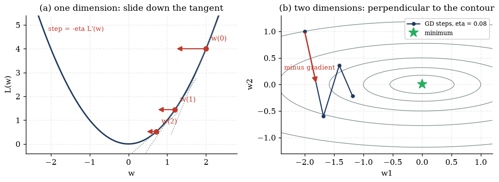
Interpretation. The two panels answer two different questions and that is the whole point. If your budget is data passes (the usual case), small batches win, because the first few samples already tell you which way is downhill. If your budget is updates (e.g. each update carries a fixed synchronisation cost across GPUs), large batches win, because their gradient is exact. Mini-batch at $B\in[32,256]$ sits where both curves are still good and where the $B$ per-sample gradients vectorise into one matrix product — the practical reason the default is not $B=1$.
Gotcha — SGD does not converge at a fixed $\eta$. In Fig. 4.2(b) SGD's loss plateaus at a noise floor and bounces: at the optimum the full gradient is zero but individual $\nabla\ell_i$ are not, so the iterate performs a random walk of radius $\propto\eta\sigma$. Fixed-$\eta$ SGD converges to a neighbourhood, not a point. The cure is a decaying schedule; the Robbins–Monro conditions $\sum_t\eta_t=\infty$, $\sum_t\eta_t^2<\infty$ (satisfied by $\eta_t = \eta_0/t$, violated by $\eta_t=$ const) are exactly what force the neighbourhood to shrink to zero. Cosine and step decay are the practical versions.
Code — gradient descent loop: full-batch, mini-batch, SGD (numpy)
import numpy as np
def grad(X, y, w):
# X: (N, d), y: (N,), w: (d,) -- matches 4.2's shapes exactly
r = X @ w - y # (N,)
return (2.0 / X.shape[0]) * X.T @ r # (d,)
def gd(X, y, w0, eta, n_steps, batch_size=None, rng=None):
w = w0.copy()
N = X.shape[0]
rng = rng or np.random.default_rng(0)
for t in range(n_steps):
if batch_size is None or batch_size == N: # full-batch GD
g = grad(X, y, w)
else: # mini-batch / SGD (batch_size=1)
idx = rng.choice(N, size=batch_size, replace=False)
g = grad(X[idx], y[idx], w)
w = w - eta * g # w(t) = w(t-1) - eta*grad, 4.1
return wbatch_size=1 gives an unbiased gradient estimate (E[grad_B] = grad) but variance ~1/B, so a fixed eta only reaches a noise ball (4.2's gotcha) -- decay eta or average the iterates if you need exact convergence.
4.3 What the learning rate actually does
Everything about $\eta$ can be read off one line of algebra. Take the one-dimensional quadratic $L(w)=aw^2$, so $L'(w)=2aw$ and
$$w(t) \;=\; w(t-1) - \eta\cdot 2a\,w(t-1) \;=\; \underbrace{(1-2a\eta)}_{\textstyle \rho}\;w(t-1) \qquad\Longrightarrow\qquad w(t) = \rho^{\,t}\,w(0).$$Stability and speed of gradient descent on a quadratic. With curvature $L''=2a$ and contraction factor $\rho = 1-2a\eta$:
- $0<\eta<\frac{1}{2a}$: $0<\rho<1$ — monotone approach, no overshoot.
- $\eta=\frac{1}{2a}$: $\rho=0$ — one step lands exactly on the minimum (this is Newton's method).
- $\frac{1}{2a}<\eta<\frac{1}{a}$: $-1<\rho<0$ — overshoots and alternates sign, but still converges.
- $\eta>\frac{1}{a}$: $|\rho|>1$ — diverges, oscillating with growing amplitude.
In terms of the curvature $\lambda = L'' = 2a$ the boundary is the familiar $\eta < 2/\lambda$; for a general smooth $L$ with $\lambda$ the largest eigenvalue of the Hessian (the Lipschitz constant of $\nabla L$), $\eta < 2/\lambda$ is the stability condition.
Four regimes on $L(w)=w^2$ (so $a=1$, $\eta^\star=0.5$, $\eta_{\max}=1$), from $w(0)=1$:
| regime | $\eta$ | $\rho = 1-2\eta$ | $w(5)$ | $L(w(5))$ | behaviour |
|---|---|---|---|---|---|
| too small | 0.05 | 0.9 | 0.59049 | 0.348678 | crawls; $90\%$ of the error survives every step |
| well tuned | 0.40 | 0.2 | 0.00032 | 0.0000001 | five steps, seven digits |
| oscillating | 0.90 | -0.8 | -0.32768 | 0.107374 | overshoots, alternates, still converges |
| divergent | 1.05 | -1.1 | -1.61051 | 2.593742 | amplitude grows by $10\%$ per step |
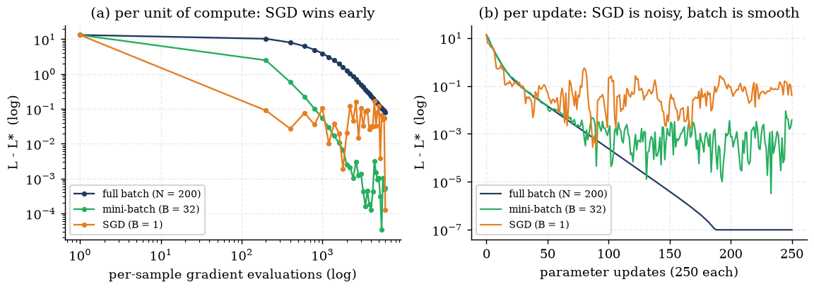
Why several dimensions are harder: the condition number
In $d$ dimensions with a quadratic loss $L(\mathbf{w}) = \frac12\mathbf{w}^\top\mathbf{H}\mathbf{w}$, diagonalise $\mathbf{H} = \mathbf{Q}\boldsymbol{\Lambda}\mathbf{Q}^\top$ with $\mathbf{Q}$ orthogonal $(d\times d)$ and $\boldsymbol\Lambda = \operatorname{diag}(\lambda_1,\dots,\lambda_d)$. In the rotated coordinates $\mathbf{u} = \mathbf{Q}^\top\mathbf{w}$ $(d\times1)$ the update decouples completely into $d$ independent one-dimensional problems:
$$u_j(t) \;=\; (1-\eta\lambda_j)\,u_j(t-1),\qquad j=1,\dots,d.$$One $\eta$ must serve all of them. Stability is dictated by the largest eigenvalue ($\eta < 2/\lambda_{\max}$) while speed is dictated by the smallest ($\rho_{\text{slow}} = 1-\eta\lambda_{\min}$). Setting $\eta$ to the best compromise $\eta^\star = 2/(\lambda_{\min}+\lambda_{\max})$ gives
$$\rho_{\text{slow}} \;=\; 1 - \frac{2\lambda_{\min}}{\lambda_{\min}+\lambda_{\max}} \;=\; \frac{\kappa-1}{\kappa+1},\qquad \kappa \;\equiv\; \frac{\lambda_{\max}}{\lambda_{\min}} \;=\; \text{condition number}.$$For $\kappa=100$ that is $\rho_{\text{slow}} = 0.980198$ per step: about $35$ steps to halve the error along the flat direction, and $115$ steps to cut it by a factor of ten — while the steep direction was already finished in a handful. Ill-conditioning, not non-convexity, is what makes plain gradient descent slow.
The toy surface used for every trace below. $L(w_1,w_2) = a w_1^2 + b w_2^2$ with $a=1$, $b=10$, started at $\mathbf{w}(0)=(-2,\,1)^\top$ so $L(\mathbf{w}(0)) = 14$ and $\nabla L(\mathbf{w}(0)) = (2aw_1,\,2bw_2)^\top = (-4,\,20)^\top$. The Hessian is $\operatorname{diag}(2,20)$, so $\lambda_{\min}=2$, $\lambda_{\max}=20$, $\kappa = 10$, and gradient descent is stable exactly for $\eta < 2/\lambda_{\max} = 0.1$. We use $\eta = 0.08$, giving per-coordinate factors $\rho_1 = 1-2\eta a = 0.84$ and $\rho_2 = 1-2\eta b = -0.6$ — the second is negative, which is the zig-zag.
Trace 1 — plain gradient descent, three steps. Update: $\mathbf{w} \leftarrow \mathbf{w} - \eta\,\mathbf{g}$ with $\mathbf{g} = (2w_1,\,20w_2)^\top$.
| $t$ | $\mathbf{w}(t-1)$ | $\mathbf{g}(t)$ | $-\eta\mathbf{g}$ | $\mathbf{w}(t)$ | $L$ |
|---|---|---|---|---|---|
| 1 | $(-2,\,1)$ | $(-4,\,20)$ | $(0.32,\,-1.6)$ | $(-1.68,\,-0.6)$ | 6.4224 |
| 2 | $(-1.68,\,-0.6)$ | $(-3.36,\,-12)$ | $(0.2688,\,0.96)$ | $(-1.4112,\,0.36)$ | 3.287485 |
| 3 | $(-1.4112,\,0.36)$ | $(-2.8224,\,7.2)$ | $(0.225792,\,-0.576)$ | $(-1.185408,\,-0.216)$ | 1.871752 |
Read the second coordinate down the table: $1 \to -0.6 \to 0.36 \to -0.216$. Every entry is exactly $-0.6$ times the previous one — the predicted $\rho_2$. The first coordinate goes $-2 \to -1.68 \to -1.4112 \to -1.185408$, each $0.84$ of the previous — the predicted $\rho_1$. Nothing else is happening.
Gotcha — the stability limit is a cliff, not a slope. An empirical scan over $\eta$ on this surface confirms the theory to the grid resolution: gradient descent still reduces the loss at $\eta = 0.100$ and diverges at $\eta = 0.102$, against the analytic threshold $1/b = 0.1$ . There is no gentle degradation. If a training run explodes to NaN in the first few hundred steps, the learning rate crossing $2/\lambda_{\max}$ is the first hypothesis, not the last.
The interactive surface below is the same family: $L = a w_1^2 + b w_2^2$ with $a=1$ and $b$ set by the conditioning slider. Try three things in order — push $\log_{10}\eta$ up until plain GD zig-zags and then diverges (it should give up just past $\eta = 1/b$); raise the conditioning to $20$ and watch how many steps GD needs; then switch the optimizer picker to momentum and to Adam at the same $\eta$ and see which of them still make progress.
4.4 Momentum: remembering where you were going
Look again at the zig-zag. Along $w_2$ the gradient alternates sign every step, so successive updates largely cancel; along $w_1$ it keeps the same sign, so successive updates all point the same way. A running average of past updates would therefore cancel the oscillation and accumulate the consistent direction. That is momentum.
Momentum (heavy ball, Polyak). With velocity $\mathbf{v}\in\mathbb{R}^d$ $(d\times1)$ initialised to $\mathbf{0}$ and $\beta\in[0,1)$:
$$\boxed{\;\mathbf{v}(t) = \beta\,\mathbf{v}(t-1) - \eta\,\nabla L(\mathbf{w}(t-1)),\qquad \mathbf{w}(t) = \mathbf{w}(t-1) + \mathbf{v}(t)\;}$$Unrolling the recursion shows what $\mathbf{v}$ is: an exponentially weighted sum of all past gradients,
$$\mathbf{v}(t) \;=\; -\eta\sum_{k=0}^{t-1}\beta^{\,k}\,\nabla L\big(\mathbf{w}(t-1-k)\big).$$If the gradient were constant at $\mathbf{g}$, the velocity would converge to the geometric sum
$$\mathbf{v}_\infty \;=\; -\eta\,\mathbf{g}\sum_{k=0}^{\infty}\beta^k \;=\; -\frac{\eta}{1-\beta}\,\mathbf{g},$$so along a consistent direction momentum takes steps $\frac{1}{1-\beta}$ times larger than gradient descent — a factor of $10$ at the standard $\beta=0.9$ . Along an alternating direction the same sum telescopes towards $-\eta\mathbf{g}/(1+\beta)$, i.e. it is damped. Amplify the consistent, damp the alternating: exactly the two things the zig-zag needed.
Trace 2 — momentum, $\beta = 0.9$, $\eta = 0.08$, same surface and start.
| $t$ | $\mathbf{w}(t-1)$ | $\mathbf{g}(t)$ | $\mathbf{v}(t-1)$ | $\mathbf{v}(t)=0.9\mathbf{v}(t-1)-0.08\mathbf{g}$ | $\mathbf{w}(t)$ | $L$ |
|---|---|---|---|---|---|---|
| 1 | $(-2,\,1)$ | $(-4,\,20)$ | $(0,\,0)$ | $(0.32,\,-1.6)$ | $(-1.68,\,-0.6)$ | 6.4224 |
| 2 | $(-1.68,\,-0.6)$ | $(-3.36,\,-12)$ | $(0.32,\,-1.6)$ | $(0.5568,\,-0.48)$ | $(-1.1232,\,-1.08)$ | 12.925578 |
| 3 | $(-1.1232,\,-1.08)$ | $(-2.2464,\,-21.6)$ | $(0.5568,\,-0.48)$ | $(0.680832,\,1.296)$ | $(-0.442368,\,0.216)$ | 0.662249 |
Check step 2 by hand: $0.9\times(0.32) - 0.08\times(-3.36) = 0.288 + 0.2688 = 0.5568$ for $w_1$, and $0.9\times(-1.6) - 0.08\times(-12) = -1.44 + 0.96 = -0.48$ for $w_2$. Compare with plain GD at the same $t$: momentum's $w_1$ has travelled to $-1.1232$ versus GD's $-1.4112$ — a distance of $0.8768$ from the start against GD's $0.5888$, so the consistent direction is already being covered about $1.5\times$ faster, and the gap widens every step.
Gotcha — momentum is not free acceleration. Look at $L$ in the trace: it goes $6.42 \to 12.93 \to 0.66$. The loss increased at $t=2$, because the accumulated velocity carried $w_2$ straight past the valley floor to $-1.08$, further from zero than it started. Momentum makes the method non-monotone by construction. It also loosens the stability limit in an unexpected direction: on this surface the analytic bound becomes $\eta < 2(1+\beta)/\lambda_{\max} = 0.19$ and the empirical scan diverges first at $\eta = 0.190$ , so momentum tolerates a larger $\eta$ — but with $\beta=0.9$ it can be badly underdamped, spending its budget ringing rather than descending.
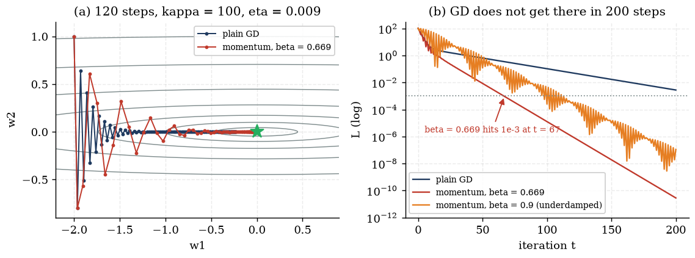
Interpretation. Momentum converts gradient descent's dependence on $\kappa$ into a dependence on $\sqrt\kappa$: the per-step factor improves from $\frac{\kappa-1}{\kappa+1}$ to roughly $\frac{\sqrt\kappa-1}{\sqrt\kappa+1}$. At $\kappa=100$ that is $0.980$ versus $0.818$ — the reason a "small" change to the update rule buys an order of magnitude. The price is a second hyperparameter and the loss of monotonicity, and $\beta$ genuinely interacts with $\kappa$: the optimal value here is $0.669$, not the reflexive $0.9$.
4.5 Nesterov: look before you leap
Momentum computes the gradient at $\mathbf{w}(t-1)$ and then jumps by $\beta\mathbf{v}(t-1)$ plus a correction. But we already know we are about to move by $\beta\mathbf{v}(t-1)$ regardless. Nesterov's accelerated gradient evaluates the gradient at that lookahead point instead, so the correction is computed where we will land rather than where we are:
Nesterov accelerated gradient (NAG).
$$\boxed{\;\tilde{\mathbf{w}} = \mathbf{w}(t-1) + \beta\,\mathbf{v}(t-1),\qquad \mathbf{v}(t) = \beta\,\mathbf{v}(t-1) - \eta\,\nabla L(\tilde{\mathbf{w}}),\qquad \mathbf{w}(t) = \mathbf{w}(t-1) + \mathbf{v}(t)\;}$$All three vectors have shape $(d\times1)$. The only change from momentum is the argument of $\nabla L$.
Trace 3 — NAG, $\beta=0.9$, $\eta=0.08$. At $t=1$, $\mathbf{v}=\mathbf{0}$, so the lookahead equals the current point and the step is identical to momentum's. The difference starts at $t=2$.
| $t$ | $\mathbf{w}(t-1)$ | lookahead $\tilde{\mathbf{w}}$ | $\nabla L(\tilde{\mathbf{w}})$ | $\mathbf{v}(t)$ | $\mathbf{w}(t)$ | $L$ |
|---|---|---|---|---|---|---|
| 1 | $(-2,\,1)$ | $(-2,\,1)$ | $(-4,\,20)$ | $(0.32,\,-1.6)$ | $(-1.68,\,-0.6)$ | 6.4224 |
| 2 | $(-1.68,\,-0.6)$ | $(-1.392,\,-2.04)$ | $(-2.784,\,-40.8)$ | $(0.51072,\,1.824)$ | $(-1.16928,\,1.224)$ | 16.348976 |
| 3 | $(-1.16928,\,1.224)$ | $(-0.709632,\,2.8656)$ | $(-1.419264,\,57.312)$ | $(0.573189,\,-2.94336)$ | $(-0.596091,\,-1.71936)$ | 29.917312 |
Adjudication — NAG is not uniformly better, and this trace proves it. The textbook claim is "Nesterov corrects momentum's overshoot". On this surface at $\eta=0.08,\ \beta=0.9$ it does the opposite: $L$ goes $6.42 \to 16.35 \to 29.92$ and the run diverges. The reason is visible in the table — the lookahead $(-1.392,-2.04)$ sits further up the steep wall than the current point, so the gradient it reports is larger ($-40.8$ against momentum's $-12$), and the correction overshoots harder. Formally, evaluating at the lookahead tightens the stability limit: the empirical scan gives divergence first at $\eta = 0.068$ for NAG versus $0.190$ for momentum . NAG's advantage is real but it is an advantage at its own admissible learning rate: in the tuned comparison of §4.8 NAG is the fastest of the five non-degenerate rules (AdaGrad's apparent win there is an artefact of the noiseless quadratic, adjudicated in that section), reaching $L<10^{-6}$ in $93$ steps at its best $\eta = 0.0054$ . Never compare optimizers at a shared $\eta$ and call the loser worse.
Code — momentum and Nesterov update steps (numpy)
import numpy as np
def momentum_step(w, v, g, eta, beta=0.9):
# v(t) = beta*v(t-1) - eta*grad(w(t-1)); w(t) = w(t-1) + v(t) (4.4)
v = beta * v - eta * g
w = w + v
return w, v
def nesterov_step(w, v, grad_fn, eta, beta=0.9):
# gradient at the lookahead point, not at the current w -- the only
# change from momentum (4.5)
w_lookahead = w + beta * v
g = grad_fn(w_lookahead)
v = beta * v - eta * g
w = w + v
return w, v
# usage on the toy surface L = w1^2 + 10*w2^2 from 4.3
grad_fn = lambda w: np.array([2 * w[0], 20 * w[1]])
w, v = np.array([-2.0, 1.0]), np.zeros(2)
for _ in range(200):
w, v = nesterov_step(w, v, grad_fn, eta=0.08, beta=0.9)Nesterov's lookahead tightens the stable eta versus plain momentum (4.5's gotcha) -- don't reuse a momentum-tuned eta unchanged, re-tune it.
4.6 Per-coordinate learning rates: AdaGrad and RMSProp
Momentum fixes the zig-zag by remembering directions. The other repair is to stop using one $\eta$ for all coordinates: give the steep coordinate a small step and the flat coordinate a large one, automatically, using the size of the gradients each coordinate has produced so far.
AdaGrad. With $\mathbf{r}(0)=\mathbf{0}$ $(d\times1)$, all operations element-wise:
$$\mathbf{r}(t) = \mathbf{r}(t-1) + \mathbf{g}(t)\odot\mathbf{g}(t),\qquad \boxed{\;\mathbf{w}(t) = \mathbf{w}(t-1) - \frac{\eta}{\sqrt{\mathbf{r}(t)}+\epsilon}\odot\mathbf{g}(t)\;}$$$\epsilon\approx10^{-8}$ prevents division by zero. Coordinate $j$ has effective learning rate $\eta/(\sqrt{r_j}+\epsilon)$, which is monotonically non-increasing because $r_j$ only accumulates.
Trace 4 — AdaGrad, $\eta=0.08$, first step. $\mathbf{g}(1) = (-4,\,20)$, so $\mathbf{r}(1) = (16,\,400)$ and $\sqrt{\mathbf{r}(1)} = (4,\,20)$. The updates are $$\Delta w_1 = -\frac{0.08}{4}\cdot(-4) = +0.08,\qquad \Delta w_2 = -\frac{0.08}{20}\cdot 20 = -0.08,$$ giving $\mathbf{w}(1) = (-1.92,\,0.92)$ and $L = 12.1504$ . Both coordinates moved by exactly $\eta$, in opposite senses — because on the very first step $\sqrt{r_j} = |g_j|$ and the ratio $g_j/|g_j|$ is just the sign. The gradient's magnitude has been thrown away entirely; only its sign survives.
| $t$ | $\mathbf{g}(t)$ | $\mathbf{r}(t)$ | $\sqrt{\mathbf{r}(t)}$ | effective $\eta$ per coord. | $\mathbf{w}(t)$ | $L$ |
|---|---|---|---|---|---|---|
| 1 | $(-4,\,20)$ | $(16,\,400)$ | $(4,\,20)$ | $(0.02,\,0.004)$ | $(-1.92,\,0.92)$ | 12.1504 |
| 2 | $(-3.84,\,18.4)$ | $(30.7456,\,738.56)$ | $(5.544872,\,27.17646)$ | $(0.014428,\,0.002944)$ | $(-1.864597,\,0.865835)$ | 10.973434 |
| 3 | $(-3.729195,\,17.31671)$ | $(44.652495,\,1038.42843)$ | $(6.682252,\,32.224656)$ | $(0.011972,\,0.002483)$ | $(-1.819951,\,0.822846)$ | 10.082971 |
The steep coordinate $w_2$ gets an effective rate of $0.004$ against $w_1$'s $0.02$ — a $5\times$ ratio, exactly the ratio of their gradient magnitudes. That is the per-coordinate rescaling working as advertised. What is also visible is the problem: both rates are already shrinking by step 3 and will keep shrinking forever.
RMSProp. Replace the running sum by an exponentially weighted running mean, decay $\rho$ (typically $0.9$):
$$\mathbf{s}(t) = \rho\,\mathbf{s}(t-1) + (1-\rho)\,\mathbf{g}(t)\odot\mathbf{g}(t),\qquad \boxed{\;\mathbf{w}(t) = \mathbf{w}(t-1) - \frac{\eta}{\sqrt{\mathbf{s}(t)}+\epsilon}\odot\mathbf{g}(t)\;}$$$\mathbf{s}$ estimates the recent mean square of each coordinate's gradient, so old gradients are forgotten and the effective rate can go back up when a coordinate flattens out.
Trace 5 — RMSProp, $\eta=0.08$, $\rho=0.9$, first step. $\mathbf{s}(1) = 0.9\cdot\mathbf{0} + 0.1\cdot(16,\,400) = (1.6,\,40)$, so $\sqrt{\mathbf{s}(1)} = (1.264911,\,6.324555)$ and $$\Delta w_1 = -\frac{0.08}{1.264911}\cdot(-4) = +0.252982,\qquad \Delta w_2 = -\frac{0.08}{6.324555}\cdot 20 = -0.252982,$$ giving $\mathbf{w}(1)=(-1.747018,\,0.747018)$, $L = 8.632427$ .
| $t$ | $\mathbf{g}(t)$ | $\mathbf{s}(t)$ | $\sqrt{\mathbf{s}(t)}$ | update | $\mathbf{w}(t)$ | $L$ |
|---|---|---|---|---|---|---|
| 1 | $(-4,\,20)$ | $(1.6,\,40)$ | $(1.264911,\,6.324555)$ | $(0.252982,\,-0.252982)$ | $(-1.747018,\,0.747018)$ | 8.632427 |
| 2 | $(-3.494036,\,14.940356)$ | $(2.660828,\,58.321423)$ | $(1.631205,\,7.636846)$ | $(0.17136,\,-0.156508)$ | $(-1.575658,\,0.59051)$ | 5.969715 |
| 3 | $(-3.151316,\,11.810193)$ | $(3.387825,\,66.437347)$ | $(1.840604,\,8.150911)$ | $(0.136969,\,-0.115915)$ | $(-1.438689,\,0.474594)$ | 4.322225 |
Note the first-step size: $0.252982 = 0.08/\sqrt{0.1}$. Because $\mathbf{s}(1) = 0.1\,\mathbf{g}\odot\mathbf{g}$ rather than $\mathbf{g}\odot\mathbf{g}$, the denominator is too small by $\sqrt{0.1}$ and the very first RMSProp step is $3.16$ times larger than $\eta$. This is the initialisation bias that Adam will fix.
Code — AdaGrad and RMSProp update steps (numpy)
import numpy as np
def adagrad_step(w, r, g, eta, eps=1e-8):
r = r + g * g # r(t) = r(t-1) + g^2, elementwise (4.6)
w = w - eta / (np.sqrt(r) + eps) * g # effective rate only ever shrinks
return w, r
def rmsprop_step(w, s, g, eta, rho=0.9, eps=1e-8):
s = rho * s + (1 - rho) * g * g # EWMA of g^2, not a running sum (4.6)
w = w - eta / (np.sqrt(s) + eps) * g # rate can recover once gradients shrink
return w, seps guards sqrt(0) on a coordinate that hasn't moved yet; AdaGrad's r never decreases so its rate decays as O(1/sqrt(t)) -- correct for sparse convex problems, a silent stopping bug on a long deep-net run (4.6's gotcha).
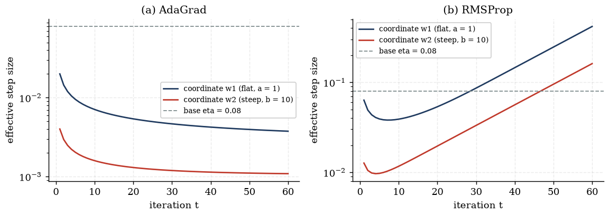
Gotcha — AdaGrad's monotone decay is a stopping mechanism. $r_j$ is a sum of squares, so it never decreases; the effective rate is $O(1/\sqrt{t})$ and the total distance the optimizer can still travel converges. On a convex sparse problem (its design target, e.g. bag-of-words features where a rare word's gradient is nonzero once in a thousand steps) that is exactly right. On a deep network trained for many epochs it means learning silently stops long before the loss is minimised. This is precisely the defect RMSProp's decay $\rho$ was introduced to remove — and it is why AdaGrad comes out the worst of the five non-divergent rules at a shared $\eta$ in §4.8's comparison, ending at $L=62.34$ (only Nesterov does worse there, and it does so by diverging outright) .
4.7 Adam: momentum and RMSProp in one rule
Adam ("adaptive moment estimation") keeps both running averages — a first moment $\mathbf{m}$ (the momentum direction) and a second moment $\mathbf{v}$ (the RMSProp scale) — and repairs the initialisation bias that both of them suffer.
Adam. $\mathbf{m}(0)=\mathbf{v}(0)=\mathbf{0}$, all $(d\times1)$, defaults $\beta_1=0.9$, $\beta_2=0.999$, $\epsilon=10^{-8}$:
$$\mathbf{m}(t) = \beta_1\mathbf{m}(t-1) + (1-\beta_1)\,\mathbf{g}(t),\qquad \mathbf{v}(t) = \beta_2\mathbf{v}(t-1) + (1-\beta_2)\,\mathbf{g}(t)\odot\mathbf{g}(t),$$ $$\hat{\mathbf{m}}(t) = \frac{\mathbf{m}(t)}{1-\beta_1^{\,t}},\qquad \hat{\mathbf{v}}(t) = \frac{\mathbf{v}(t)}{1-\beta_2^{\,t}},\qquad \boxed{\;\mathbf{w}(t) = \mathbf{w}(t-1) - \eta\,\frac{\hat{\mathbf{m}}(t)}{\sqrt{\hat{\mathbf{v}}(t)}+\epsilon}\;}$$Why the bias correction is needed — derivation
Unroll the first moment with $\mathbf{m}(0)=\mathbf{0}$:
$$\mathbf{m}(t) \;=\; (1-\beta_1)\sum_{k=1}^{t}\beta_1^{\,t-k}\,\mathbf{g}(k).$$Take expectations and suppose the gradient distribution is stationary with mean $\mathbb{E}[\mathbf{g}]$. Then
$$\mathbb{E}[\mathbf{m}(t)] \;=\; \mathbb{E}[\mathbf{g}]\,(1-\beta_1)\sum_{k=1}^{t}\beta_1^{\,t-k} \;=\; \mathbb{E}[\mathbf{g}]\,(1-\beta_1)\cdot\frac{1-\beta_1^{\,t}}{1-\beta_1} \;=\; \mathbb{E}[\mathbf{g}]\big(1-\beta_1^{\,t}\big).$$So $\mathbf{m}(t)$ underestimates the mean gradient by exactly the factor $1-\beta_1^{\,t}$, which is $0.1$ at $t=1$ — a tenfold shrinkage. Dividing by that factor makes the estimate unbiased; identical algebra gives $1-\beta_2^{\,t}$ for the second moment, where the effect is far more violent because $\beta_2=0.999$ makes $1-\beta_2^{\,1} = 0.001$.

Trace 6 — Adam, $\eta = 0.08$, first step, in full. With $\mathbf{g}(1)=(-4,\,20)$:
- $\mathbf{m}(1) = 0.9\cdot\mathbf{0} + 0.1\cdot(-4,\,20) = (-0.4,\,2)$
- $\mathbf{v}(1) = 0.999\cdot\mathbf{0} + 0.001\cdot(16,\,400) = (0.016,\,0.4)$
- $1-\beta_1^1 = 0.1$, so $\hat{\mathbf{m}}(1) = (-4,\,20)$ — the raw gradient, recovered exactly
- $1-\beta_2^1 = 0.001$, so $\hat{\mathbf{v}}(1) = (16,\,400)$ and $\sqrt{\hat{\mathbf{v}}(1)} = (4,\,20)$
- $\Delta\mathbf{w} = -0.08\cdot(-4/4,\ 20/20) = (+0.08,\,-0.08)$, giving $\mathbf{w}(1) = (-1.92,\,0.92)$, $L = 12.1504$
| $t$ | $\mathbf{g}(t)$ | $\mathbf{m}(t)$ | $\mathbf{v}(t)$ | $\hat{\mathbf{m}}(t)$ | $\sqrt{\hat{\mathbf{v}}(t)}$ | update | $\mathbf{w}(t)$ |
|---|---|---|---|---|---|---|---|
| 1 | $(-4,\,20)$ | $(-0.4,\,2)$ | $(0.016,\,0.4)$ | $(-4,\,20)$ | $(4,\,20)$ | $(0.08,\,-0.08)$ | $(-1.92,\,0.92)$ |
| 2 | $(-3.84,\,18.4)$ | $(-0.744,\,3.64)$ | $(0.03073,\,0.73816)$ | $(-3.915789,\,19.157895)$ | $(3.920776,\,19.21626)$ | $(0.079898,\,-0.079757)$ | $(-1.840102,\,0.840243)$ |
| 3 | $(-3.680204,\,16.80486)$ | $(-1.03762,\,4.956486)$ | $(0.044243,\,1.019825)$ | $(-3.828857,\,18.289616)$ | $(3.84218,\,18.446731)$ | $(0.079723,\,-0.079319)$ | $(-1.760379,\,0.760924)$ |
Interpretation — the single most useful fact about Adam. Every update in that table has magnitude almost exactly $\eta = 0.08$ in both coordinates. This is structural: because $\hat{\mathbf{m}}$ and $\sqrt{\hat{\mathbf{v}}}$ estimate the mean and the root-mean-square of the same gradient stream, their ratio is $O(1)$, and at $t=1$ it is exactly $\pm1$ (Practice 4.3 proves this for any nonzero $g$). So Adam's $\eta$ is a step size in parameter space, not a gradient multiplier — which is why $\eta=10^{-3}$ is a sane default across wildly different models, and why the $\eta$ you tuned for SGD is usually catastrophic for Adam and vice versa.
Gotcha — Adam and weight decay (AdamW). Adding an $L_2$ penalty by pushing $\lambda\mathbf{w}$ into the gradient does not give weight decay under Adam: that term goes through the $1/\sqrt{\hat{\mathbf{v}}}$ rescaling, so parameters with large gradient history get decayed less. AdamW instead applies $\mathbf{w} \leftarrow \mathbf{w} - \eta\lambda\mathbf{w}$ as a separate step outside the adaptive rescaling. The regularisation theory itself is section 6's; the point here is only that the two are not equivalent once the update is preconditioned.
Code — Adam update step, and a learning-rate range-test sketch (numpy)
import numpy as np
def adam_step(w, m, v, g, t, eta=1e-3, beta1=0.9, beta2=0.999, eps=1e-8):
m = beta1 * m + (1 - beta1) * g # first moment (momentum), 4.7
v = beta2 * v + (1 - beta2) * g * g # second moment (RMSProp), 4.7
m_hat = m / (1 - beta1 ** t) # bias correction -- t starts at 1
v_hat = v / (1 - beta2 ** t) # beta1**0 = 1 would divide by zero
w = w - eta * m_hat / (np.sqrt(v_hat) + eps)
return w, m, v
w, m, v = np.zeros(2), np.zeros(2), np.zeros(2)
for t in range(1, 201):
g = grad_fn(w) # any grad_fn(w) -> (d,) array, e.g. 4.5's toy surface
w, m, v = adam_step(w, m, v, g, t)
def lr_range_test(grad_fn, loss_fn, w0, eta_min=1e-6, eta_max=1.0, n_steps=100):
# exponential sweep of eta (Smith 2015 "cyclical learning rates" sketch);
# plot loss vs log(eta) and read off where the curve starts climbing
etas = np.geomspace(eta_min, eta_max, n_steps)
losses = []
w = w0.copy()
for eta in etas:
w = w - eta * grad_fn(w)
losses.append(loss_fn(w))
return etas, np.array(losses)Adam's update magnitude is ~eta regardless of gradient scale (4.7's key fact), so eta=1e-3 is a sane default across models; for the range test, pick eta about one order of magnitude below where the loss starts diverging, not the eta at the lowest plotted point -- that point is already past the instability onset.
4.8 Six optimizers, one surface
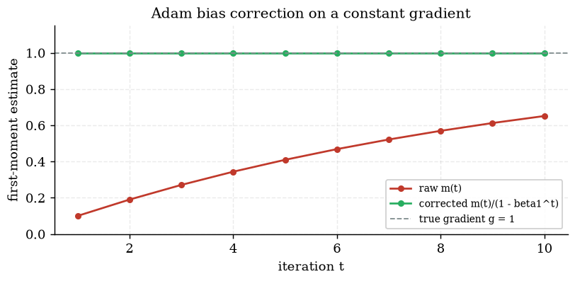
Adjudication — read Fig. 4.7 sceptically. AdaGrad appears to win panel (b) outright — it crosses $L<10^{-6}$ in $14$ steps and keeps falling geometrically to $2.0\times10^{-97}$ by step $200$ (the curve leaves the plotted axis at its $10^{-13}$ floor, it does not stop) — and its selected $\eta = 1$ sits at the top edge of the searched grid . Both facts are artefacts of a noiseless, exactly-quadratic, two-parameter problem: with no gradient noise the accumulator $\mathbf{r}$ grows only as the iterate approaches the optimum, so the aggressive decay that cripples AdaGrad on real stochastic problems never bites. Take from this figure the relative lesson — the ranking flips entirely between shared and tuned $\eta$ — and not an absolute recommendation. A deterministic quadratic is a laboratory, not a benchmark.
| rule | state kept | extra memory | hyperparameters | what it fixes | what it costs |
|---|---|---|---|---|---|
| GD / SGD | none | $0$ | $\eta$ | — | slow when $\kappa$ large |
| Momentum | $\mathbf{v}$ | $d$ | $\eta,\beta$ | zig-zag; $\kappa \to \sqrt\kappa$ | non-monotone; overshoot |
| Nesterov | $\mathbf{v}$ | $d$ | $\eta,\beta$ | momentum's late correction | tighter stable $\eta$ |
| AdaGrad | $\mathbf{r}$ | $d$ | $\eta$ | per-coordinate scale; sparse features | rate decays to zero |
| RMSProp | $\mathbf{s}$ | $d$ | $\eta,\rho$ | AdaGrad's decay | no convergence guarantee; biased at $t$ small |
| Adam | $\mathbf{m},\mathbf{v}$ | $2d$ | $\eta,\beta_1,\beta_2$ | both, plus init bias | $2d$ memory; may generalise worse |
4.9 Choosing an optimizer
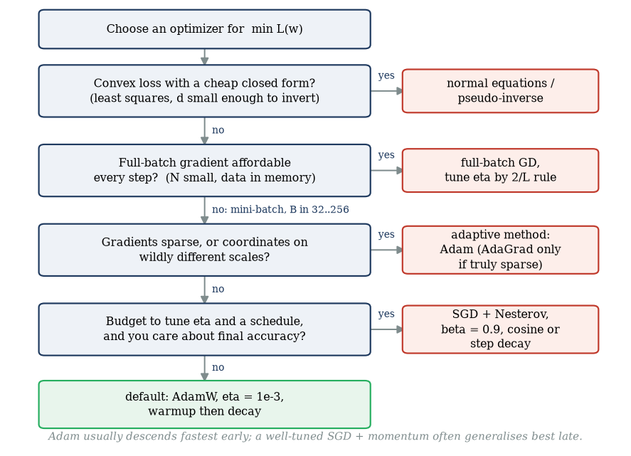
Practical defaults, stated plainly. Start with AdamW at $\eta=10^{-3}$ (transformers: $10^{-4}$ with a linear warmup over the first few thousand steps, then cosine decay). If the model is a convolutional network and you have a tuning budget, SGD with Nesterov momentum $\beta=0.9$, $\eta$ found by a short range test, and a step or cosine schedule, usually ends at a slightly better test error. Batch size $32$–$256$; if you increase $B$ by $k$, increase $\eta$ by roughly $k$ (linear scaling rule) or $\sqrt k$, and re-check stability. Never change $\eta$ and the optimizer in the same experiment.
4.10 When the data isn't linearly separable
Optimization answers "how do I minimise this loss". It cannot answer "this hypothesis class cannot fit my data at all" — no learning rate rescues a straight line asked to enclose a disc. v5 §06 lists three responses; the first is the one that matters here, because it changes the optimization problem without changing the algorithm.
1 · Non-linear feature transform
Replace $\mathbf{x}\in\mathbb{R}^{d}$ by $\boldsymbol\phi(\mathbf{x})\in\mathbb{R}^{\tilde d}$ and fit a linear model in $\boldsymbol\phi$. The model is non-linear in $\mathbf{x}$ but still linear in $\mathbf{w}$, so the loss keeps whatever convexity it had and every rule in this section applies unchanged — only the design matrix changes shape, from $(N\times d)$ to $(N\times\tilde d)$. The generic quadratic lift in two dimensions is
$$\boldsymbol\phi(x_1,x_2) = \big(1,\;x_1,\;x_2,\;x_1x_2,\;x_1^2,\;x_2^2\big) \in \mathbb{R}^{6}.$$Worked example — the circle becomes a line. Take $200$ points uniform on $[-1,1]^2$, labelled $y=+1$ iff $x_1^2+x_2^2\le0.6$ ($103$ positives, $97$ negatives). An exhaustive search over all linear separators in $\mathbf{x}$-space (every direction on a $0.5^\circ$ grid, every offset on a fine grid, both polarities) finds a best in-sample error of $32.5\%$ — barely better than the $48.5\%$ of always predicting $+1$. Under $\boldsymbol\phi(\mathbf{x}) = (x_1^2,\,x_2^2)$ the same labels are separated by the single line $z_1+z_2 = 0.6$ with error $0\%$.

Gotcha — the lift is not free. The degree-$q$ polynomial lift of $d$ inputs has $\binom{d+q}{q}$ features. That is $6$ for $(d,q)=(2,2)$, but $66$ for $(10,2)$, $5151$ for $(100,2)$ and $176{,}851$ for $(100,3)$ . Each new feature is a new parameter, so the VC dimension and the sample requirement grow with it (section 7), and $\mathbf{X}^\top\mathbf{X}$ becomes both huge and badly conditioned — which, by §4.3, is exactly what makes gradient descent crawl. Sections 17's kernel trick exists to get the lift's expressiveness without ever forming $\boldsymbol\phi(\mathbf{x})$.
2 · Union of linear models
Take the union of hypothesis sets $\mathcal{H}_1\cup\mathcal{H}_2\cup\cdots$ — several lines whose intersection or union carves out a non-linear region (a diamond from four half-planes, say). This is the logic behind both ensembles (sections 11–13) and the hidden layer of a neural network (section 15): XOR is $(H_1\wedge\lnot H_2)\vee(\lnot H_1\wedge H_2)$, which needs two layers of thresholds and cannot be written as one.
Worked example — logic gates as perceptrons, and why XOR is not one. With two binary features $H_1,H_2\in\{0,1\}$ and the threshold unit $\operatorname{sign}(w_0 + w_1H_1 + w_2H_2)$, v5 gives the weights; the pre-activations $z$ and outputs below are recomputed for all four inputs.
| gate | weights $(w_0,w_1,w_2)$ | $z(0,0)$ | $z(0,1)$ | $z(1,0)$ | $z(1,1)$ | outputs $\operatorname{sign}(z)$ |
|---|---|---|---|---|---|---|
| AND | $(-1.5,\,1,\,1)$ | -1.5 | -0.5 | -0.5 | 0.5 | $(-1,-1,-1,+1)$ |
| OR | $(-0.5,\,1,\,1)$ | -0.5 | 0.5 | 0.5 | 1.5 | $(-1,+1,+1,+1)$ |
| NOT ($H_1$ only) | $(0.5,\,-1)$ | 0.5 | — | -0.5 | — | $(+1,\,-1)$ |
All three are exact. XOR is not: an exhaustive scan of $1{,}771{,}561$ weight triples on a $0.05$ grid over $[-3,3]^3$ never gets more than $3$ of the $4$ inputs right (best found: $(-2.95,\,-3,\,3)$) . That is the geometric statement that $\{(0,1),(1,0)\}$ and $\{(0,0),(1,1)\}$ are not linearly separable — the two classes sit on the two diagonals of the square. Stack the units instead: feed $a = \mathbb{1}[\text{OR}]$ and $b = \mathbb{1}[\text{AND}]$ into a second unit computing $\operatorname{sign}(-1.5 + a + (1-b))$ and all four inputs come out right, with $z = (-0.5,\,+0.5,\,+0.5,\,-0.5)$ . Two layers, not a better optimizer: this is the historical motivation for the multilayer perceptron of section 15.
3 · Data snooping — the sin to avoid
If you plot the data, notice it looks circular, and then choose $(x_1^2,x_2^2)$ as your features, you have snooped. The $0\%$ error in Fig. 4.9(b) is honest only because the generating rule was fixed in advance; had it been read off the test set, the reported error would be a fiction and the model would collapse on genuinely new data. Every generalisation bound in section 7 assumes the hypothesis set was chosen before the data was seen. Split first, look second.
4.11 Summary
- The update. $\mathbf{w} \leftarrow \mathbf{w} - \eta\nabla L(\mathbf{w})$, with $-\nabla L$ the steepest-descent direction by Cauchy–Schwarz on the first-order Taylor expansion. Shapes: $(d\times1)$ throughout; $\nabla L = \frac{2}{N}\mathbf{X}^\top(\mathbf{X}\mathbf{w}-\mathbf{y})$ for squared error, from $\mathbf{X}\ (N\times d)$.
- Batch size. Unbiased at every $B$; variance $\propto 1/B$; cost $\propto B$. Small $B$ wins per unit compute, large $B$ per update. Default $B\in[32,256]$. Fixed-$\eta$ SGD converges only to a noise ball — decay the schedule.
- Learning rate. On a quadratic, $\rho = 1-\eta\lambda$ per eigendirection: stable iff $\eta<2/\lambda_{\max}$, one-step exact at $\eta = 1/\lambda$, and speed limited by $\frac{\kappa-1}{\kappa+1}$ where $\kappa = \lambda_{\max}/\lambda_{\min}$.
- Momentum $\mathbf{v} \leftarrow \beta\mathbf{v}-\eta\mathbf{g}$: amplifies consistent directions by $\frac{1}{1-\beta}$, damps alternating ones, improves $\kappa$ to $\sqrt\kappa$; non-monotone. Nesterov evaluates $\mathbf{g}$ at the lookahead $\mathbf{w}+\beta\mathbf{v}$ — faster at its own $\eta$, less stable at yours.
- AdaGrad divides by $\sqrt{\sum\mathbf{g}^2}$ (rate decays to zero); RMSProp by $\sqrt{\text{EWMA}(\mathbf{g}^2)}$ (rate can recover); Adam combines both plus bias corrections $1-\beta_1^t$, $1-\beta_2^t$, giving updates of magnitude $\approx\eta$ regardless of gradient scale.
- Not an optimizer problem. If the hypothesis class cannot express the target, transform the features ($\boldsymbol\phi$, at a cost of $\binom{d+q}{q}$ parameters), union hypothesis sets, or change model — and never pick $\boldsymbol\phi$ after looking at the test data.
4.12 Practice
Practice 4.1 — Two gradient-descent steps on $L(w)=3w^2-12w+7$ from $w(0)=0$ with $\eta=0.1$; then give the exact range of stable $\eta$ and the $\eta$ that converges in one step.
$L'(w) = 6w-12$, so $L''=6$ and $w^\star = 2$ with $L(w^\star) = -5$. The iteration is $w(t) = w(t-1)-\eta(6w(t-1)-12) = (1-6\eta)w(t-1)+12\eta$, i.e. the error contracts by $\rho = 1-6\eta = 0.4$.
- $t=1$: $L'(0) = -12$, $w(1) = 0-0.1(-12) = 1.2$, $L = -3.08$.
- $t=2$: $L'(1.2) = 6(1.2)-12 = -4.8$, $w(2) = 1.2-0.1(-4.8) = 1.68$, $L = -4.6928$.
Check against the contraction: the errors are $|0-2| = 2$, $|1.2-2| = 0.8$, $|1.68-2| = 0.32$ — each $0.4$ of the last, as predicted. After ten steps $w = 1.9997902848$.
Stability requires $|1-6\eta|<1$, i.e. $0<\eta<1/3 = 0.333333$. One-step convergence needs $\rho = 0$, i.e. $\eta = 1/6 = 0.166667$ (which is $1/L''$ — Newton's method).
Practice 4.2 — For $L(\mathbf{w}) = 2w_1^2+50w_2^2$: give $\kappa$, the largest stable $\eta$, and the number of gradient-descent steps needed to shrink the $w_1$ error tenfold at $\eta = 0.019$.
The Hessian is $\operatorname{diag}(4,100)$, so $\lambda_{\min} = 4$, $\lambda_{\max} = 100$ and $\kappa = 25$. Stability needs $\eta < 2/\lambda_{\max} = 0.02$; the best compromise rate is $\eta^\star = 2/(\lambda_{\min}+\lambda_{\max}) = 0.019231$.
At $\eta = 0.019$ the per-step factors are $|1-0.019\cdot4| = 0.924$ for $w_1$ and $|1-0.019\cdot100| = 0.9$ for $w_2$. A tenfold reduction in $w_1$ needs $0.924^{\,n}\le0.1$, i.e. $n \ge \ln(0.1)/\ln(0.924) = 29.13$, so $n = 30$ steps.
Interpretation: the flat direction is the bottleneck even though the steep one set the speed limit — the defining symptom of ill-conditioning, and the reason momentum (§4.4) helps here.
Practice 4.3 — Prove that Adam's very first update has magnitude exactly $\eta$ for any nonzero scalar gradient $g$, and verify numerically for $g = 7$, $g = -0.001$ and $g = 1234.5$ at $\eta = 10^{-3}$.
At $t=1$ with $m(0)=v(0)=0$: $m(1) = (1-\beta_1)g$ and $v(1) = (1-\beta_2)g^2$. The bias corrections divide by $1-\beta_1^1 = 1-\beta_1$ and $1-\beta_2^1 = 1-\beta_2$, so
$$\hat m(1) = \frac{(1-\beta_1)g}{1-\beta_1} = g,\qquad \hat v(1) = \frac{(1-\beta_2)g^2}{1-\beta_2} = g^2,\qquad \Delta w = -\eta\frac{g}{\sqrt{g^2}+\epsilon} = -\eta\,\frac{g}{|g|+\epsilon}.$$Ignoring $\epsilon$, $\Delta w = -\eta\operatorname{sign}(g)$: magnitude exactly $\eta$, direction the sign of the gradient. Numerically at $\eta=10^{-3}$: $g=7$ gives $\Delta w = -0.000999999999$ (ratio to $\eta$: $1.0$); $g=-0.001$ gives $+0.00099999$ (ratio $0.99999$ — here $\epsilon=10^{-8}$ is not entirely negligible against $|g| = 10^{-3}$); $g = 1234.5$ gives $-0.001$ (ratio $1.0$).
Consequence: Adam's $\eta$ is an upper bound on how far any single parameter can move in one step. That is why $\eta = 10^{-3}$ transfers across models, and why the $\eta \approx 0.1$ that suits SGD would let Adam move every weight by $0.1$ per step.
Practice 4.4 — A parameter sits on a long plateau where the gradient is constantly $g = 3$. With $\eta = 0.05$, how far does momentum move it per step in the limit, for $\beta = 0$, $0.5$, $0.9$, $0.99$? How many steps until $\beta = 0.9$ is within $2\%$ of its limit?
With constant $g$, $v(t) = \beta v(t-1)-\eta g$ has fixed point $v_\infty = -\eta g/(1-\beta)$, and $v(t) = v_\infty(1-\beta^{\,t})$.
| $\beta$ | amplification $1/(1-\beta)$ | $v_\infty$ | $v(10)$ | $v(60)$ |
|---|---|---|---|---|
| 0 | 1 | -0.15 | -0.15 | -0.15 |
| 0.5 | 2 | -0.3 | -0.299707 | -0.3 |
| 0.9 | 10 | -1.5 | -0.976982 | -1.497304 |
| 0.99 | 100 | -15 | -1.434269 | -6.79265 |
Within $2\%$ of the limit means $\beta^{\,t}\le0.02$, i.e. $t \ge \ln(0.02)/\ln(0.9) = 37.1$, so $38$ steps. Note $\beta = 0.99$ has an amplification of $100$ but has reached less than half its limit even after $60$ steps ($-6.79$ of $-15$): large $\beta$ buys a big final speed at the price of a long ramp, and a correspondingly long memory of gradients that may no longer be relevant.
Practice 4.5 — Using the three-point dataset of §4.2 at $\mathbf{w} = (0.5,\,0.5)$, compute the mini-batch gradient from samples $\{1,3\}$ with all shapes, compare it with the full gradient, and take one step at $\eta = 0.05$.
The batch design matrix is $\mathbf{X}_\mathcal{B} = \begin{pmatrix}1&1\\1&3\end{pmatrix}$ $(2\times2)$ and $\mathbf{y}_\mathcal{B} = (2,4)^\top$ $(2\times1)$. Predictions: $\mathbf{X}_\mathcal{B}\mathbf{w} = (1,\,2)^\top$, so the residual is $\mathbf{r} = (1-2,\;2-4)^\top = (-1,\,-2)^\top$ $(2\times1)$.
$$\nabla L_\mathcal{B} = \frac{2}{B}\mathbf{X}_\mathcal{B}^\top\mathbf{r} = \frac{2}{2}\begin{pmatrix}1&1\\1&3\end{pmatrix}^\top\begin{pmatrix}-1\\-2\end{pmatrix} = \begin{pmatrix}-3\\-7\end{pmatrix}\quad(2\times1).$$The full gradient at the same point is $\frac{2}{3}\mathbf{X}^\top(\mathbf{X}\mathbf{w}-\mathbf{y}) = (-2.333333,\,-5.333333)^\top$. The two are not equal — the batch estimate is biased for this particular draw — but they are nearly parallel: $\cos\theta = 0.999972$. That is the mini-batch bargain: a cheap direction that is right about where downhill is and wrong about how far.
One step: $\mathbf{w} \leftarrow (0.5,0.5)^\top - 0.05\,(-3,-7)^\top = (0.65,\,0.85)^\top$, moving towards $\mathbf{w}^\star = (0.666667,\,1)$.
Practice 4.6 — A dataset has $d = 100$ raw features and a degree-2 polynomial lift is proposed to make it linearly separable. How many features result? What if degree 3? What does this do to the optimization, and what is the alternative?
The number of monomials of degree $\le q$ in $d$ variables is $\binom{d+q}{q}$. For $d=100$: degree 2 gives $\binom{102}{2} = 5151$ features; degree 3 gives $\binom{103}{3} = 176{,}851$. (For scale: $d=1000$ at degree 2 already gives $501{,}501$.)
Three consequences. (i) Memory and time: the design matrix goes from $(N\times100)$ to $(N\times5151)$, and each gradient evaluation $\frac{2}{N}\mathbf{X}^\top(\mathbf{X}\mathbf{w}-\mathbf{y})$ costs $O(N\tilde d)$ instead of $O(Nd)$. (ii) Conditioning: squared and cross terms have wildly different scales (if $x_j\sim10$ then $x_j^2\sim100$ and $x_j^3 \sim 1000$), so $\kappa$ explodes and, by §4.3, plain gradient descent crawls — this is exactly the situation where standardising the lifted features, or using an adaptive optimizer, is not optional. (iii) Generalisation: $5151$ parameters need a sample size to match (section 7's VC bound), otherwise the lift buys separability and loses everything else.
The alternative is the kernel trick (section 17): the dual formulation only ever needs inner products $\boldsymbol\phi(\mathbf{x}_i)^\top\boldsymbol\phi(\mathbf{x}_j)$, which the polynomial kernel $(1+\mathbf{x}_i^\top\mathbf{x}_j)^q$ evaluates in $O(d)$ without ever materialising the $5151$ coordinates.
5 Model Evaluation: Confusion Matrix to ROC
§4 closed with optimisers that drive a training loss down as fast as possible. That loss is a convenient surrogate chosen for its gradients, not the quantity anyone actually ships on: nobody reports cross-entropy to a fraud team. This section is where the training objective is handed over to the metrics a decision is made with. A model is only as good as the number you judge it by. This section builds every classification metric from the confusion matrix up: precision, recall, specificity, the $F_\beta$ family, ROC/AUC, and how to average across more than two classes.
5.1 The confusion matrix and the core metrics
For a binary classifier with a fixed decision rule, every prediction on a labelled example falls into exactly one of four cells:
| Predicted | ||
|---|---|---|
| Actual \ Pred. | Y | N |
| Y | TP | FN |
| N | FP | TN |
$TP$ = true positive, $FP$ = false positive (a "false alarm"), $FN$ = false negative (a "miss"), $TN$ = true negative. draws exactly this $2\times2$ cross, with "Actual" down the rows and "Prediction" across the columns — the layout followed here. uses the identical convention.
writes specificity as $1-\text{FPR}$ with $\text{FPR}=\dfrac{FP}{FP+TN}$ drawn as a fraction under an upward arrow pointing at "FPR" — the two forms are algebraically identical since $\text{FPR}+\text{Specificity}=\dfrac{FP+TN}{FP+TN}=1$.
Worked example — a fraud screen. $1000$ transactions are scored; $TP=40$, $FP=10$, $FN=20$, $TN=930$.
Interpretation. $97\%$ accuracy sounds like a solved problem; the class-aware view shows the model still misses $20$ of $60$ real fraud cases ($R=0.667$). This is the canonical case for why accuracy alone is misleading whenever one class dominates the dataset.
Accuracy lies on imbalanced data. Suppose $99\%$ of $1000$ emails are genuinely "not spam" ($990$) and the classifier predicts "not spam" for every single email. Then $TP=0$, $FN=10$, $TN=990$, so accuracy $=0.990$ while recall for the spam class is $0/10=0\%$ and precision is $0/0$ — undefined, not zero, because the model made no positive predictions at all to be right or wrong about. A single accuracy number cannot distinguish this useless classifier from a genuinely good one.
5.2 $F_\beta$: tuning the precision–recall trade-off
Precision and recall trade off against each other (flag more things $\Rightarrow$ recall rises, precision typically falls). A single number that reflects a chosen priority between them is the boxed formula from:
$$\boxed{F_\beta = (1+\beta^2)\,\frac{P \cdot R}{\beta^2 \cdot P + R}}$$$F_\beta$ is a weighted harmonic mean of $P$ and $R$. Harmonic (not arithmetic) mean is used deliberately: it is dominated by whichever of $P,R$ is smaller, so a classifier cannot buy a good $F_\beta$ by being excellent on one axis and terrible on the other — exactly the pathology accuracy is blind to above.
states the rule bare, as two arrows: $\beta<1\rightarrow$ Precision Focus, $\beta>1\rightarrow$ Recall Focus. Why:
Worked example, continued. Using $P=0.800$, $R=0.667$ from the fraud screen:
Because $P>R$ here, the three scores order as $F_{0.5}(0.769) > F_1(0.727) > F_2(0.690)$: the variant that weights your weaker metric more heavily always reports the harsher score. This ordering is not a coincidence of these numbers — it holds whenever $P\ne R$, because increasing $\beta$ monotonically shifts $F_\beta$ toward the smaller of $P,R$.
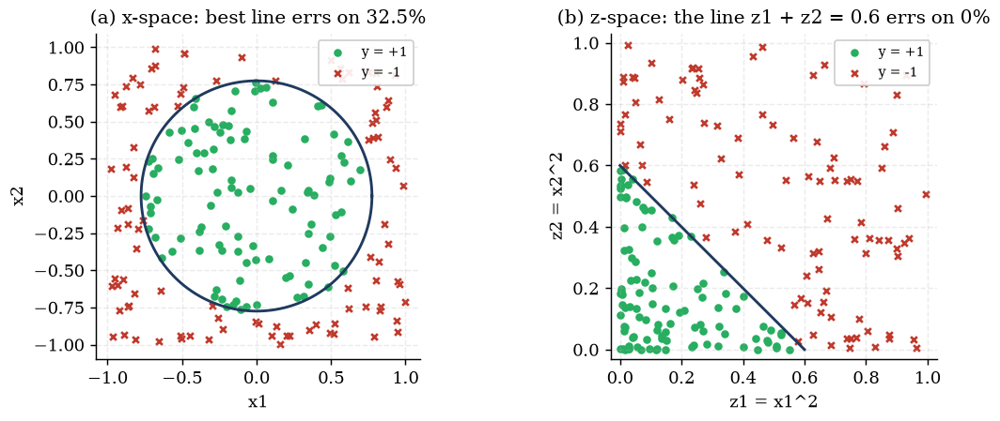
Interpretation. Pick $\beta$ from the cost of the two error types before looking at any numbers: $\beta>1$ (e.g. $F_2$) when a false negative is the expensive mistake — cancer screening, fraud, safety alarms, where missing a real positive is worse than a false alarm. $\beta<1$ (e.g. $F_{0.5}$) when a false positive is the expensive mistake — spam filtering, where trashing a real email outweighs letting one spam through. Choosing $\beta$ after seeing the scores, to make a preferred model look best, defeats the purpose.
5.3 ROC and AUC
Precision, recall, and $F_\beta$ all assume a single fixed decision threshold on the model's underlying score. Most classifiers actually output a continuous score $s(\mathbf{x})$ and only become a hard Y/N once you pick a threshold $t$: predict positive iff $s(\mathbf{x})\ge t$. Sweeping $t$ from $+\infty$ down to $-\infty$ traces a curve in $(\text{FPR},\text{TPR})$ space — the ROC curve (Receiver Operating Characteristic).
's ROC figure is a bare axis sketch: an upward arrow labelled TPR, a rightward arrow labelled FPR, and the word "ROC" — no curve, no diagonal, no numbers are drawn on the page. likewise never computes a curve (its Fig 2.1 is a decorative stock image). Both leave the actual sweep as an exercise; it is carried out in full below.
Worked example — sweeping a threshold over 6 toy scores. A model scores $3$ true positives and $3$ true negatives:
positives: $s=0.90,\ 0.60,\ 0.55$ negatives: $s=0.65,\ 0.40,\ 0.20$
Sort all $6$ scores descending and read off, at each distinct value, how many true positives/negatives lie at or above it:
| threshold $t$ | TP | FP | FN | TN | TPR | FPR | Precision |
|---|---|---|---|---|---|---|---|
| $>0.90$ | 0 | 0 | 3 | 3 | 0.000 | 0.000 | — |
| $0.90$ | 1 | 0 | 2 | 3 | 0.333 | 0.000 | 1.000 |
| $0.65$ | 1 | 1 | 2 | 2 | 0.333 | 0.333 | 0.500 |
| $0.60$ | 2 | 1 | 1 | 2 | 0.667 | 0.333 | 0.667 |
| $0.55$ | 3 | 1 | 0 | 2 | 1.000 | 0.333 | 0.750 |
| $0.40$ | 3 | 2 | 0 | 1 | 1.000 | 0.667 | 0.600 |
| $0.20$ | 3 | 3 | 0 | 0 | 1.000 | 1.000 | 0.500 |
Notice the negative at $s=0.65$ sits above two of the three positives — this is exactly the overlap that keeps the ROC curve off the top-left corner: no single threshold catches all $3$ positives with zero false alarms.

AUC (area under the ROC curve) summarises the whole sweep in one number: the probability that a randomly drawn positive scores higher than a randomly drawn negative. $\text{AUC}=1$ means perfect separation, $\text{AUC}=0.5$ means the model is no better than a coin flip, $\text{AUC}<0.5$ means the score is informative but backwards.
AUC by two independent routes — cross-check.
Both routes agree exactly at $0.778$, which is the correct general identity — AUC is always exactly the probability a random positive outscores a random negative, and the trapezoidal area under a step ROC curve computes precisely that same count.
Interpretation. AUC is threshold-free and prevalence-free — it depends only on the relative ranking of positive vs. negative scores, not on how many of each there are, so it does not inflate when the negative class is huge (unlike FPR's denominator, which does grow, making a fixed FPR correspond to more absolute false alarms as the negative class grows). This is also its weakness: when positives are rare, a model can hold a good AUC while still producing far more false alarms than true catches in absolute terms — precision, not AUC, exposes that. Prefer a Precision–Recall curve over ROC when the positive class is rare.
Try sweeping the threshold yourself and watch the confusion counts, $P/R/F_1$, and the ROC operating point move together:
The sweep above, and the AUC cross-check, are both single library calls in practice:
Code — ROC curve and AUC (sklearn)
import numpy as np
from sklearn.metrics import roc_curve, roc_auc_score, RocCurveDisplay
from sklearn.datasets import make_classification
from sklearn.linear_model import LogisticRegression
from sklearn.model_selection import train_test_split
X, y = make_classification(n_samples=300, n_features=5, random_state=0)
X_train, X_test, y_train, y_test = train_test_split(
X, y, test_size=0.3, random_state=0, stratify=y
)
clf = LogisticRegression().fit(X_train, y_train)
scores = clf.predict_proba(X_test)[:, 1] # probability of the positive class -- never pass .predict() here
fpr, tpr, thresholds = roc_curve(y_test, scores)
auc = roc_auc_score(y_test, scores) # same quantity as §5.3's two routes: trapezoidal area == Mann-Whitney rank-sum
RocCurveDisplay.from_predictions(y_test, scores) # or .from_estimator(clf, X_test, y_test) -- draws the curve + AUC together
roc_auc_score and roc_curve both need continuous scores (predict_proba or decision_function), not hard labels — passing .predict() output silently collapses the full threshold sweep of §5.3's table into a degenerate 3-point curve.
5.4 Averaging across classes: macro, weighted, micro F1
With $K>2$ classes there is no single confusion matrix cell to read $P$/$R$ off — each class $c$ gets its own $P_c, R_c, F1_c$ by treating "class $c$" as positive and everything else as negative. gives three ways to collapse the $K$ per-class $F1_c$ into one number:
In single-label multi-class classification (every example gets exactly one predicted class), a false positive for one class is always a false negative for another, so summed-over-classes $FP=$ summed-over-classes $FN=N-\sum_c TP_c$. That forces micro-precision $=$ micro-recall $=$ micro-$F1$ $=\dfrac{\sum_c TP_c}{N} = $ accuracy. Micro F1 is not a distinct quantity from accuracy here — it only diverges from accuracy in multi-label settings where one example can carry several true labels. Hand p02's phrase "biased toward large-volume [classes]" reflects this: because it reduces to overall accuracy, micro F1 is dominated by whichever class has the most examples, since getting the big class right or wrong swings the global $TP$ count the most.
Worked example — 3-class confusion matrix. Classes $A$ (large, $60$ examples), $B$ (medium, $25$), $C$ (small, $15$), $N=100$:
| Actual \ Pred. | A | B | C |
|---|---|---|---|
| A | 50 | 5 | 5 |
| B | 3 | 20 | 2 |
| C | 2 | 3 | 10 |
For class $A$: $TP_A=50$ (diagonal); $FP_A=3+2=5$ (column-$A$ entries off the diagonal); $FN_A=5+5=10$ (row-$A$ entries off the diagonal). Same pattern for $B,C$:
| class | support | $P_c$ | $R_c$ | $F1_c$ |
|---|---|---|---|---|
| A | 60 | 0.909 | 0.833 | 0.870 |
| B | 25 | 0.714 | 0.800 | 0.755 |
| C | 15 | 0.588 | 0.667 | 0.625 |
The three averagings are not specific to $F1$. Hand p02 closes the block with exactly this reminder — "Similarly the same can be computed for P & R also". Macro/weighted/micro are just three ways of collapsing a per-class vector into a scalar, so the same three recipes apply to precision and recall directly: macro-$P=\frac1K\sum_c P_c$ (here $\tfrac{0.909+0.714+0.588}{3}=0.737$), weighted-$P=\sum_c \tfrac{\text{support}_c}{N}P_c=0.812$, and micro-$P=\sum_c TP_c/\sum_c(TP_c+FP_c)=80/(80+20)=0.800$. One warning that follows from this: macro-$F1$ is not the $F1$ of macro-$P$ and macro-$R$. Here macro-$F1=0.750$, but the harmonic mean of macro-$P=0.737$ and macro-$R=0.767$ is $0.752$ — close, but not equal, and the gap widens as the per-class scores spread out. Average the $F1$s, do not $F1$ the averages.
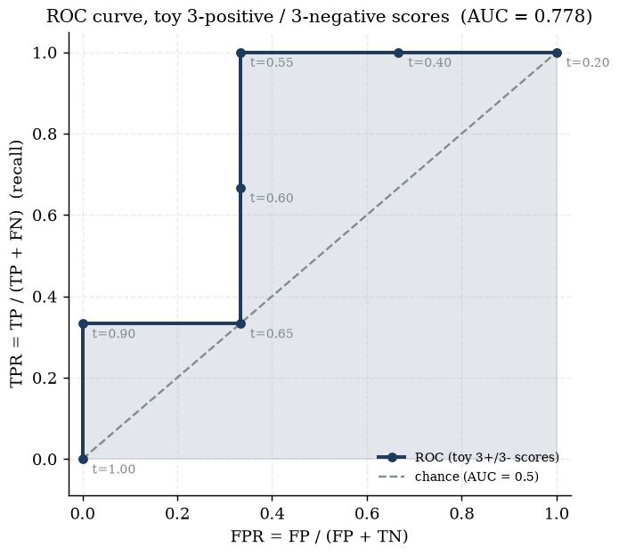
Interpretation. Macro F1 answers "how well am I doing on the average class, treating a rare class exactly as important as a common one?" — the right call when all classes matter equally (e.g. flagging any of several rare disease subtypes). Weighted F1 answers "how well am I doing on the average example?" — closer to what a deployment stakeholder feels day to day. Micro F1 (= accuracy here) tells you almost nothing about performance on minority classes, since it is arithmetically dominated by whichever class has the most examples: a classifier that nails class $A$ and ignores $C$ entirely can still post a respectable micro F1.
The confusion matrix, the full per-class table, and every averaging option above are each one sklearn call:
Code — confusion matrix, classification report, F1 averaging (sklearn)
from sklearn.metrics import confusion_matrix, classification_report, f1_score
y_true = ["A", "A", "B", "B", "C", "A", "C", "B"]
y_pred = ["A", "B", "B", "B", "C", "A", "A", "C"]
confusion_matrix(y_true, y_pred, labels=["A", "B", "C"])
# rows = actual, cols = predicted -- pass labels explicitly or the row/col order is alphabetical-but-implicit
print(classification_report(y_true, y_pred, labels=["A", "B", "C"]))
# per-class precision/recall/F1 + support, plus macro-avg and weighted-avg rows -- matches §5.4's table directly
f1_score(y_true, y_pred, average="macro") # unweighted mean of per-class F1
f1_score(y_true, y_pred, average="weighted") # support-weighted mean
f1_score(y_true, y_pred, average="micro") # pools TP/FP/FN globally first -- equals accuracy in single-label classification
average=None (instead of a string) returns the raw per-class array rather than a single scalar — the fastest way to spot exactly which class is dragging macro F1 down, as §5.4's class-C example does by hand.
5.5 Choosing a metric
Putting the last three sections together into one decision path — start from the top and answer each question about your problem:
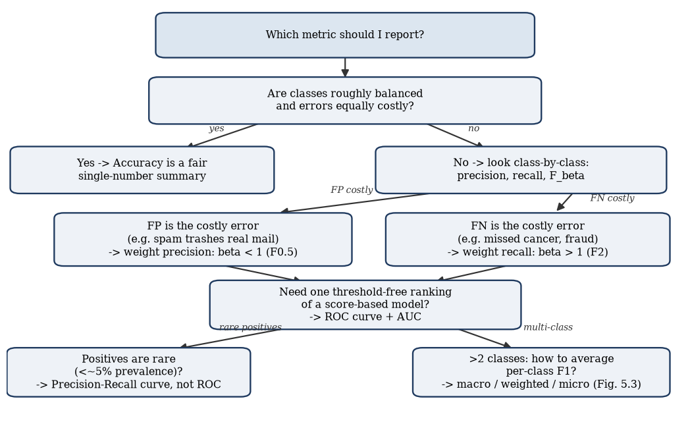
metric_choice: start at class balance and error cost, branch to $F_\beta$ direction, ROC vs. PR, and multi-class averaging.External cluster-validation metrics (precision/recall/$F$ computed against ground-truth cluster labels) reuse this same machinery but are covered where clustering is introduced. The inference-testing half of hand p02 — Wald test, likelihood-ratio/deviance test, Hosmer–Lemeshow, and the pseudo-$R^2$ family — belongs to logistic regression diagnostics and is not repeated here.
Section recap. Accuracy is a summary of one operating point and is misleading whenever classes are imbalanced or errors have unequal cost. Precision and recall expose the two ways a classifier can be wrong; $F_\beta$ compresses them into one number tunable toward whichever error is more expensive ($\beta<1$ precision-heavy, $\beta>1$ recall-heavy). ROC/AUC evaluate a score-based model across every threshold at once and are prevalence-free, but hide absolute false-alarm volume when positives are rare — use Precision–Recall there instead. With more than two classes, macro/weighted/micro F1 answer three different questions (equal-class, equal-example, and pooled-global performance respectively), and micro F1 collapses to accuracy in the single-label case.
5.6 Practice
Practice 5.1 — precision, recall, specificity, $F_2$ from raw counts
Given $TP=30,\ FP=6,\ FN=10,\ TN=154$:
Practice 5.2 — why does $F_{0.5} > F_1 > F_2$ hold whenever $P > R$?
From §5.2, $F_\beta\to P$ as $\beta\to 0$ and $F_\beta\to R$ as $\beta\to\infty$, and $F_\beta$ moves monotonically between these two limits as $\beta$ increases from $0$. So increasing $\beta$ always slides $F_\beta$ from $P$ toward $R$. If $P>R$ (fraud screen: $P=0.800>R=0.667$), sliding toward $R$ means $F_\beta$ decreases as $\beta$ grows, giving $F_{0.5}(0.769) > F_1(0.727) > F_2(0.690)$. Symmetrically, if $R>P$ the ordering flips: $F_2 > F_1 > F_{0.5}$. The rule: whichever of $P,R$ is smaller is what a larger $\beta$ pulls the score toward, so raising $\beta$ always makes the harsher of the two limits win out when they differ.
Practice 5.3 — why is weighted F1 above macro F1 in the 3-class example, and when would that flip?
Weighted F1 ($0.804$) $>$ macro F1 ($0.750$) here because the largest class, $A$ ($60/100$ of the data), is also the best-classified ($F1_A=0.870$, the highest of the three). Weighting by support lets that strong, common class dominate the average, pulling the number up; macro treats the weak minority class $C$ ($F1_C=0.625$) as equally important, dragging its (unweighted) average down.
The relationship flips whenever the large class is the weak one instead: if $A$ had $F1_A=0.60$ while $B,C$ (smaller) scored $0.90+$, weighted F1 would sit below macro F1, because support-weighting would now downweight the strong small classes and upweight the weak big one.
Practice 5.4 — AUC when the two score distributions don't overlap at all
Positives $\{0.95, 0.85, 0.80\}$, negatives $\{0.60, 0.50, 0.40\}$ — every positive score exceeds every negative score. By the rank-sum form, all $3\times3=9$ pairs are wins for the positive side, so $\text{AUC} = 9/9 = 1.000$: perfect separation, and a threshold anywhere in the gap $(0.60,0.80)$ achieves $P=R=1$. Contrast with the overlapping toy example in §5.3 (one negative at $0.65$ outscores two positives), which caps AUC at $0.778$ no matter which threshold is chosen — the overlap, not the threshold choice, is the ceiling on any single-threshold metric.
6 Generalisation: Validation, Bias-Variance & Regularisation
§5 supplied the metrics; it said nothing about which data those metrics may honestly be computed on. A precision of $0.98$ measured on the rows the model was fitted to is not evidence of anything. A model that memorises its training set is worthless. This section is about the discipline that keeps a learner honest: how to split data so hyperparameters never see the test set, why error decomposes into bias and variance, and the main levers — ridge, lasso, elastic net, early stopping — that trade a little bias for a lot less variance.
6.1 The Train / Validation / Test Protocol
Every supervised pipeline needs three disjoint slices of data, each with a different job. The handwritten notes draw this as one dataset with three arrows fanning out:
- Training set — fits the model's internal parameters (weights & biases). This is the data the optimiser actually sees gradients from.
- Validation set — used to tune hyperparameters (learning rate, $\lambda$, tree depth, $k$…). The model never trains on this data directly, but the pipeline as a whole "sees" it indirectly, once per hyperparameter trial.
- Test set — touched exactly once, at the very end, to report a final number and compare models. If you look at it twice, it has become a second validation set.

What exactly is a hyperparameter, and why can't it just be trained?
The validation set exists because one class of quantity cannot be fitted by the optimiser at all. The handwritten notes define them directly: hyperparameters "define the structure of the model" and "govern the behaviour of the learning process", and the page fans three families out of that one junction:
- Capacity / bias-variance dial — how flexible the hypothesis set is. This is $\lambda$ in §6.4, $k$ in K-NN, the degree in §6.3's polynomial sweep.
- Optimisation — learning rate $\eta$, momentum, batch size: they change how the fit is reached, not which functions are reachable.
- Architecture capacity — the structural size of the model: "# of leaves, etc" as the page puts it (number of leaves in a tree, layers/units in a network, $Q$ in $\mathcal{H}_Q$).
Transcription note. The third arrow's example is transcribed as "# of leaves"; the transcript flags the glyph as ambiguous between "leaves" and "layers" (no descender is drawn). Either reading names the same idea — a structural size chosen before training — so nothing downstream depends on which it is.
The page then asks the sharp question and answers it in one line: "But why can't they be trained? → Because the model will by default choose the most complex model → overfitting." Spelling that out: $E_{\text{in}}$ is monotone non-increasing in capacity, so if you handed $\lambda$ or the polynomial degree to the same optimiser that minimises training error, it would drive $\lambda\to0$ and the degree $\to\infty$ every single time — the training objective has no term that punishes complexity, so the "optimal" hyperparameter under it is always the most flexible one. Hyperparameters therefore need a different objective, evaluated on data the fit never saw. That objective is the validation score, and §6.2 is how to measure it without wasting data.
6.2 K-Fold Cross-Validation
A single validation split wastes data and is noisy for small $N$ — whichever points happen to land in validation drive the whole hyperparameter decision. K-fold cross-validation averages over $K$ different splits instead. The handwritten recipe, tidied up:
- Split the non-test data into $K$ equal folds.
- Pick one hyperparameter setting (e.g. one value of $\lambda$).
- Run $K$ rounds: in round $k$, train on the $K-1$ folds other than fold $k$, validate on fold $k$.
- Average the $K$ validation scores (accuracy, MSE, precision… whatever metric you track) — this is the CV score for that hyperparameter setting.
- Repeat steps 2–4 for every candidate hyperparameter setting.
- Select the setting with the best (highest accuracy / lowest error) average CV score, then refit on all non-test data at that setting.
The source page has a few small slips that don't change the algorithm: "iternal params" for internal, "remaing" for remaining, and "Now repeat all hyperparam setting" for repeat for all hyperparameter settings. It also switches case between "k fold" / "k−1 folds" and "K iterations" — all refer to the same $K$.
Worked example: a synthetic $N=20$ dataset $\{(x_i,y_i)\}$ with $y = 0.3 - 0.8x + 0.5x^2 + \varepsilon$, fit with a degree-4 polynomial ridge regression $\hat y = Z\mathbf{w}$ where $Z\in\mathbb{R}^{20\times 5}$ is the polynomial feature matrix (columns $1,x,x^2,x^3,x^4$) and $\mathbf{w}\in\mathbb{R}^5$. We run 5-fold CV ($K=5$, 4 points per fold) over six candidate ridge penalties $\lambda$:
| $\lambda$ | fold 1 | fold 2 | fold 3 | fold 4 | fold 5 | avg. val MSE |
|---|---|---|---|---|---|---|
| 0.0 | 0.1075 | 0.0219 | 0.0547 | 0.0740 | 0.0531 | 0.0623 |
| 0.001 | 0.1073 | 0.0220 | 0.0556 | 0.0719 | 0.0534 | 0.0620 |
| 0.01 | 0.1052 | 0.0227 | 0.0625 | 0.0577 | 0.0554 | 0.0607 |
| 0.1 | 0.0843 | 0.0270 | 0.0903 | 0.0268 | 0.0703 | 0.0598 |
| 1.0 | 0.0313 | 0.0406 | 0.0738 | 0.0307 | 0.1251 | 0.0603 |
| 10.0 | 0.0149 | 0.0416 | 0.2491 | 0.1410 | 0.3899 | 0.1673 |
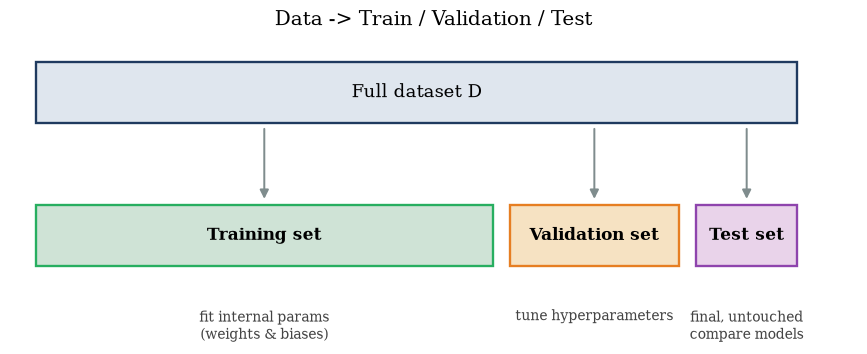
The fold loop above, and the grid search over $\lambda$ that surrounds it, are two library calls in practice.
Code — KFold, StratifiedKFold, cross_val_score (sklearn)
import numpy as np
from sklearn.model_selection import KFold, StratifiedKFold, cross_val_score
from sklearn.linear_model import Ridge
from sklearn.datasets import make_classification
X = np.random.default_rng(0).normal(size=(100, 4))
y = X[:, 0] + 0.5 * np.random.default_rng(1).normal(size=100)
kf = KFold(n_splits=5, shuffle=True, random_state=0) # shuffle=True matters whenever rows have any order (e.g. sorted by date/label)
scores = cross_val_score(Ridge(alpha=1.0), X, y, cv=kf, scoring="neg_mean_squared_error")
mse_per_fold = -scores # sklearn's *_score convention is "higher is better", so error metrics come back negated
# classification: use StratifiedKFold so every fold keeps the overall class ratio --
# plain KFold can starve a fold of the minority class entirely on an imbalanced set
Xc, yc = make_classification(n_samples=200, weights=[0.9, 0.1], random_state=0)
skf = StratifiedKFold(n_splits=5, shuffle=True, random_state=0)
scores_c = cross_val_score(Ridge(alpha=1.0), Xc, yc, cv=skf)
cross_val_score refits the estimator from scratch inside each fold on an unfitted copy — pass an unfitted estimator, and always negate neg_mean_squared_error / neg_* scorer output before reporting it under the metric's real name.
Code — GridSearchCV over the same λ sweep (sklearn)
from sklearn.model_selection import GridSearchCV
from sklearn.linear_model import Ridge
param_grid = {"alpha": [0.001, 0.01, 0.1, 1.0, 10.0]} # mirrors this section's own lambda sweep in the table above
grid = GridSearchCV(Ridge(), param_grid, cv=5, scoring="neg_mean_squared_error")
grid.fit(X, y)
grid.best_params_ # the alpha (lambda) that won CV
grid.best_score_ # best mean CV score, still in the negated scorer's sign convention
grid.best_estimator_ # ready-to-use model, already refit on ALL of X, y (refit=True is the default)
GridSearchCV's refit=True default means best_estimator_ is already fit on all of X, y — exactly the "refit on all non-test data" step of §6.1's protocol that a hand-rolled CV loop has to remember to do explicitly.
6.3 Bias-Variance Decomposition
Cross-validation tells you which hyperparameter is best; the bias-variance decomposition tells you why some models are stuck being wrong no matter how much data you throw at them, while others are wildly sensitive to which data they happen to see.
Setup
Fix a target function $f$. For each dataset $\mathcal{D}$ of size $N$ (drawn i.i.d.), the learning algorithm produces a hypothesis $g^{\mathcal{D}}$. Averaging that hypothesis over the (infinite, hypothetical) space of all datasets gives the average hypothesis $\bar g(\mathbf{x}) = \mathbb{E}_{\mathcal{D}}\!\left[g^{\mathcal{D}}(\mathbf{x})\right]$ — a scalar function of $\mathbf{x}$, not itself trained on any single dataset.
The decomposition derivation
Start from the out-of-sample error of one dataset's hypothesis, at one point $\mathbf{x}$:
$$\mathbb{E}_{\mathcal{D}}\!\left[(g^{\mathcal{D}}(\mathbf{x}) - f(\mathbf{x}))^2\right]$$Take one more expectation, over $\mathbf{x}\sim P$:
$$\boxed{\;E_{\text{out}} = \mathbb{E}_\mathbf{x}[\text{Variance}(\mathbf{x})] + \mathbb{E}_\mathbf{x}[\text{Bias}^2(\mathbf{x})]\;}$$Reading the two terms. Bias$^2$ measures the gap between the best the hypothesis set could ever do on average ($\bar g$) and the truth $f$ — it's an approximation-power problem, and more data does not fix it. Variance measures how much the fitted hypothesis would change if you re-drew the training set — it's an estimation problem, and more data (or less flexibility) does fix it.
Worked example: $\mathcal{H}_0$ (constant) vs. $\mathcal{H}_1$ (line), target $f(x)=\sin(\pi x)$
This is the canonical bias-variance illustration and it deserves real numbers, not just the shape of a curve. Target $f(x)=\sin(\pi x)$ on $x\sim\text{Uniform}[-1,1]$. Each dataset has just $N=2$ points. Two hypothesis sets compete for the SAME data:
- $\mathcal{H}_0$: constant model $h(x)=b$, fit as $b=\tfrac12(y_1+y_2)$ (the least-squares-optimal constant through 2 points).
- $\mathcal{H}_1$: line $h(x)=ax+b$ through the two points exactly.
We Monte-Carlo estimate $\bar g(x)$, bias$^2$, and variance by drawing 200,000 datasets:
| dataset | $(x_1,y_1)$ | $(x_2,y_2)$ | $\mathcal{H}_0$: $b$ | $\mathcal{H}_1$: $a$ | $\mathcal{H}_1$: $b$ |
|---|---|---|---|---|---|
| 1 | (0.310, 0.828) | (−0.624, −0.926) | −0.049 | 1.877 | 0.245 |
| 2 | (−0.610, −0.941) | (0.811, 0.560) | −0.191 | 1.057 | −0.297 |
| 3 | (0.342, 0.879) | (−0.846, −0.465) | 0.207 | 1.131 | 0.492 |
Averaged over all 200,000 datasets:
| Hypothesis set | bias$^2$ (simulated) | variance (simulated) | $E_{\text{out}}$ (simulated) | textbook reference |
|---|---|---|---|---|
| $\mathcal{H}_0$ (constant) | 0.4988 | 0.2496 | 0.7483 | 0.50 / 0.25 / 0.75 |
| $\mathcal{H}_1$ (line) | 0.2081 | 1.6785 | 1.8866 | 0.21 / 1.69 / 1.90 |
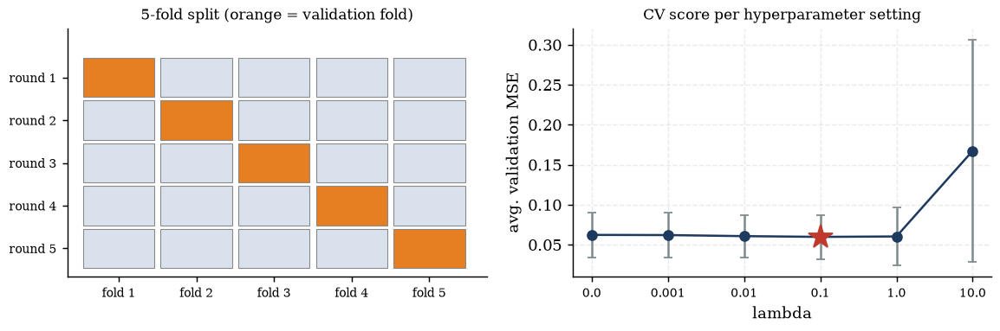
Adjudication. Our Monte-Carlo simulation (200,000 resamples) reproduces the textbook closed-form values to within simulation noise: $0.499\approx0.50$, $0.250\approx0.25$ for $\mathcal{H}_0$, and $0.208\approx0.21$, $1.678\approx1.69$ for $\mathcal{H}_1$. No discrepancy to adjudicate here — this table exists because v5 §15 stated the bias-variance decomposition but never once computed a number (its own inventory flags this as a defect); this is that missing worked example.
Bias-variance vs. hypothesis-set complexity
Repeating the same Monte-Carlo recipe (now $N=6$ points/dataset, additive noise $\sigma=0.25$) across polynomial degrees $0,1,2,3,4,5,7,9$ (degrees $6$ and $8$ are skipped — they add cost without changing the shape) traces out the classic U-curve with real numbers instead of a cartoon:
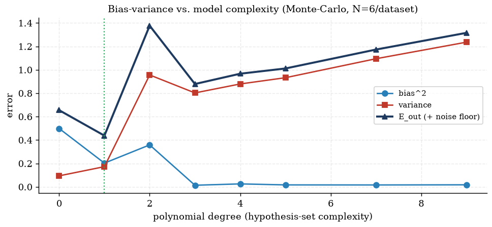
| Regime | $\mathcal{H}_{10}$ (complex) | $\mathcal{H}_2$ (simple) |
|---|---|---|
| With stochastic noise | $E_{\text{in}}\downarrow$, $E_{\text{out}}\uparrow$ | $E_{\text{in}}\uparrow$, $E_{\text{out}}\downarrow$ |
| No noise, but low $N$ | Still overfits (deterministic noise) | Fits smoothly |
Deterministic noise: even when $f$ itself is perfectly deterministic, the part of $f$ that $\mathcal{H}$ structurally cannot represent behaves like noise from the learner's point of view. More data shrinks variance; it does nothing for bias.
6.4 Regularisation: Tikhonov, Ridge & Lasso
Regularisation attacks the variance side of the trade-off directly: instead of shrinking the hypothesis set (fewer polynomial terms), keep the flexible hypothesis set but constrain how large its weights are allowed to grow.
Two formulations
With basis functions (e.g. Legendre polynomials) $\mathcal{H}_Q=\{h(\mathbf{x})=\sum_{q=0}^{Q}w_qL_q(\mathbf{x})\}$:
Hard constraint ("water bucket"):
$$\min_{\mathbf{w}}\;E_{\text{in}}(\mathbf{w})\quad\text{s.t.}\;\mathbf{w}^{\!\top}\mathbf{w} \le C$$Soft constraint (augmented loss, via Lagrangian):
$$E_{\text{aug}}(\mathbf{w}) = E_{\text{in}}(\mathbf{w}) + \frac{\lambda}{N}\mathbf{w}^{\!\top}\mathbf{w}$$Closed form for ridge derivation
Let $Z\in\mathbb{R}^{N\times(Q+1)}$ be the transformed design matrix (rows = examples, columns = basis features) and $Y\in\mathbb{R}^{N}$ the target vector, $\mathbf{w}\in\mathbb{R}^{Q+1}$:
Adding $\lambda I$ (for any $\lambda>0$) guarantees invertibility even when $Z^{\!\top}Z$ is singular or ill-conditioned — this is the "ridge" that gives ridge regression its name.
Worked numeric example
Take a tiny $4\times2$ design ($N=4$ points, 2 features, already centred) so every entry can be checked by hand:
$$Z=\begin{pmatrix}1&1\\1&-1\\-1&1\\-1&-1\end{pmatrix},\qquad Y=\begin{pmatrix}2.0\\0.4\\1.6\\-0.2\end{pmatrix}$$Since $Z$'s columns are already orthogonal, $Z^\top Z = 4I$ and $Z^\top Y = (1.0,\,3.4)^\top$. Solving $\mathbf{w}_{\text{reg}}=(4I+\lambda I)^{-1}Z^\top Y = \frac{1}{4+\lambda}(1.0,\,3.4)$:
| $\lambda$ | $\mathbf{w}_{\text{reg}}$ |
|---|---|
| 0 | (0.250, 0.850) |
| 1 | (0.200, 0.680) |
| 4 | (0.125, 0.425) |
Gradient descent with regularisation
Every step, weights are shrunk by a factor $<1$, then nudged by the data gradient — this is exactly why ridge-regularised gradient descent is called weight decay in the neural-net literature.
Tikhonov — the general form, and where Lasso fits
The most general quadratic penalty is $\Omega(\mathbf{w}) = \mathbf{w}^{\!\top}\Gamma^{\!\top}\Gamma \mathbf{w} \le C$; $\Gamma=I$ recovers ridge. But quadratic is not the only choice of penalty geometry. Lasso ($L_1$ regularisation) replaces $\mathbf{w}^\top\mathbf{w}$ with $\|\mathbf{w}\|_1=\sum_j|w_j|$:
$$E_{\text{aug}}(\mathbf{w}) = E_{\text{in}}(\mathbf{w}) + \lambda\sum_j|w_j|$$Why lasso zeros out weights and ridge doesn't. Geometrically, ridge's constraint region $\mathbf{w}^\top\mathbf{w}\le C$ is a smooth ball; lasso's constraint region $\sum_j|w_j|\le C$ is a diamond (cross-polytope) with sharp corners sitting exactly on the coordinate axes. The unconstrained loss's elliptical contours are far more likely to first touch the diamond at one of those corners — where one or more $w_j=0$ exactly — than to touch a smooth ball's surface at a point with a zero coordinate. This is a geometric fact about where two shapes first make contact, not a numerical coincidence.
Lasso closed form on an orthogonal design derivation
Work with the un-normalised sum of squares $\|Z\mathbf{w}-Y\|^2 + \lambda\|\mathbf{w}\|_1$ here (dropping the $1/N$ that the ridge block above carried; this only rescales $\lambda$ by $N$ and changes no shape or conclusion). When $Z^\top Z=I$ (orthonormal features), let $a_j=(Z^\top Y)_j$ be the OLS coefficient for feature $j$. Expanding, $\|Z\mathbf{w}-Y\|^2 = \mathbf{w}^\top\mathbf{w} - 2\mathbf{w}^\top a + \text{const} = \sum_j (w_j-a_j)^2 + \text{const}$, so the objective separates coordinate-by-coordinate: minimise $(w_j-a_j)^2 + \lambda|w_j|$ over each $w_j$ independently. The subgradient of $|w_j|$ at $0$ is any value in $[-1,1]$, so setting the subgradient of the full objective to zero gives, for $w_j\ne0$: $2(w_j-a_j)+\lambda\,\text{sign}(w_j)=0 \Rightarrow w_j = a_j - \tfrac{\lambda}{2}\text{sign}(w_j)$. Checking both signs and the boundary case yields the closed form:
$$\boxed{\;w_j^\star = \text{sign}(a_j)\cdot\max\!\left(|a_j| - \tfrac{\lambda}{2},\, 0\right)\;}$$— the soft-thresholding operator: shrink $a_j$ toward 0 by $\lambda/2$, and clip to exactly 0 if that overshoots.
| $\lambda$ | $w_1^\star$ | $w_2^\star$ | $w_3^\star$ |
|---|---|---|---|
| 0 | 3.00 | −1.20 | 0.30 |
| 1 | 2.50 | −0.70 | 0.00 |
| 2 | 2.00 | −0.20 | 0.00 |
| 3 | 1.50 | 0.00 | 0.00 |
At $\lambda=1$, feature 3 ($|a_3|=0.3<\lambda/2=0.5$) is already zeroed — lasso has performed feature selection. Ridge, on this same $a$, would shrink $w_3$ toward 0 but never land on it exactly.
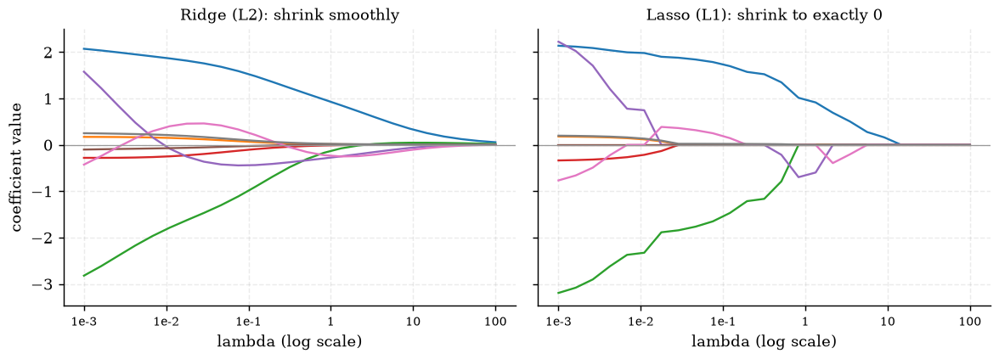
Soft (per-coefficient) regularisation $\sum_q\gamma^q w_q^2\le C$ with $\gamma>1$ penalises high-order terms more heavily — a low-pass filter on model complexity. With $\gamma<1$ you would encourage high-order complexity, which is almost always the wrong direction.
6.5 Elastic Net: Mixing $L_1$ and $L_2$
The regression deck states the trade-off in three lines and stops there: "Ridge (L2): shrinks coefficients; keeps all features. Lasso (L1): sparse solutions; performs feature selection. Elastic Net combines L1 and L2 penalties." No penalty objective is written out anywhere on that slide, so the rest of this subsection fills that gap: the objective, the mixing parameter, the closed form on an orthogonal design, and a computed path comparison on data built to break lasso.
- $\lambda\ge0$ — the total penalty strength (how much shrinkage in all).
- $\alpha$ — the mixing parameter (how much of that shrinkage is $L_1$). $\alpha=1$ is exactly lasso; $\alpha=0$ is exactly ridge; anything in between is a genuine blend that can both zero features out and keep correlated survivors balanced.
l1_ratio in scikit-learn), but scikit-learn's own alpha argument is the strength $\lambda$, not the mix — the names are swapped relative to the notation above. Worse, the two live under different objective scalings: scikit-learn's ElasticNet minimises $\frac{1}{2n}\|X\mathbf{w}-\mathbf{y}\|^2 + \lambda[\alpha\|\mathbf{w}\|_1 + \tfrac{1-\alpha}{2}\|\mathbf{w}\|_2^2]$, i.e. the $\tfrac1n$ and the extra $\tfrac12$ on the $L_2$ term both rescale $\lambda$. Nothing about the solution family changes — only which number on the $\lambda$ axis produces which fit. Always say which convention a quoted $\lambda$ belongs to. (The hand-computable table below uses the $\|X\mathbf{w}-\mathbf{y}\|^2$ convention that §6.4's lasso block already used; the computed paths further down use the scikit-learn one, and say so.)Closed form on an orthonormal design derivation
Reuse §6.4's setting: $Z^{\!\top}Z=I$ (orthonormal columns, $Z\in\mathbb{R}^{n\times p}$), so $a_j = (Z^{\!\top}\mathbf{y})_j$ is the OLS coefficient for feature $j$ and the objective separates coordinate-by-coordinate. Per coordinate we minimise
$$\phi(w_j) = (w_j-a_j)^2 + \lambda\alpha|w_j| + \lambda(1-\alpha)w_j^2 .$$Sanity checks on the two endpoints: $\alpha=1$ collapses the denominator to $1$ and recovers §6.4's soft-thresholding operator exactly; $\alpha=0$ removes the threshold and gives $w_j^\star = a_j/(1+\lambda)$, the orthonormal-design ridge solution. The formula is the two levers written side by side.
| $\alpha$ | threshold $\tfrac{\lambda\alpha}{2}$ | divisor $1+\lambda(1-\alpha)$ | $w_1^\star$ | $w_2^\star$ | $w_3^\star$ | non-zeros |
|---|---|---|---|---|---|---|
| 0 (ridge) | 0.00 | 3.0 | 1.00 | −0.40 | 0.10 | 3 |
| 0.25 | 0.25 | 2.5 | 1.10 | −0.38 | 0.02 | 3 |
| 0.5 | 0.50 | 2.0 | 1.25 | −0.35 | 0.00 | 2 |
| 0.75 | 0.75 | 1.5 | 1.50 | −0.30 | 0.00 | 2 |
| 1 (lasso) | 1.00 | 1.0 | 2.00 | −0.20 | 0.00 | 2 |
Trace one row by hand: at $\alpha=0.5$ the threshold is $\tfrac{2\times0.5}{2}=0.5$ and the divisor is $1+2\times0.5=2$, so $w_1^\star=(3.0-0.5)/2=1.25$, $w_2^\star=-(1.2-0.5)/2=-0.35$, and $|a_3|=0.3<0.5$ so $w_3^\star=0$.
Why correlated features break lasso — and why the $L_2$ term fixes it
Suppose two columns are exactly identical, $\mathbf{x}_1=\mathbf{x}_2$. Any split of their combined coefficient with $w_1+w_2=c$ fits the data identically and has the identical $L_1$ penalty $|w_1|+|w_2|=|c|$ when both share a sign — so the lasso objective is flat along that whole segment and the solution is not unique. Which endpoint the optimiser lands on is decided by tie-breaking inside the coordinate-descent implementation and by tiny sampling accidents, and a resample of the data can flip the answer entirely. The $L_2$ term removes the flatness: $w_1^2+w_2^2$ is strictly convex and is minimised on that segment at the perfectly even split $w_1=w_2=c/2$. Adding any $(1-\alpha)>0$ therefore makes the elastic-net objective strictly convex, gives a unique solution, and pushes near-duplicate features toward equal coefficients — the grouping effect.
Reading the grouping effect the other way round. Splitting a shared signal across $k$ correlated features scales the $L_2$ penalty like $k\times(c/k)^2 = c^2/k$ — the ridge penalty rewards spreading. The $L_1$ penalty stays at $|c|$ regardless of the split, so it is indifferent to spreading and indifference is exactly what leaves the solution unpinned. Elastic net is "$L_1$ decides the membership of the surviving group, $L_2$ decides how the group shares the load".
Computed comparison on a correlated design
To see all three penalties on the same data, we build $n=60$ training points with $p=8$ standardised features in three blocks: a correlated trio $x_1,x_2,x_3$ generated from one shared latent factor (mean pairwise correlation $0.978$), a correlated pair $x_4,x_5$ from a second factor (correlation $0.982$), and three pure-noise features $x_6,x_7,x_8$. The truth is $\beta=(2,2,2,\;1.5,1.5,\;0,0,0)$ with Gaussian noise $\sigma=1$, and a held-out test set of $2000$ points scores every fit. Paths use scikit-learn's convention (so $\lambda$ here is alpha, and $\alpha=$l1_ratio$=0.5$ for the elastic net).
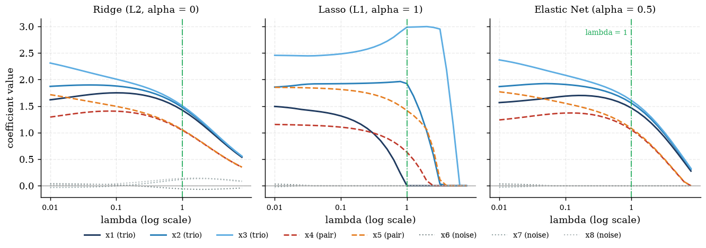
| at $\lambda=1$ | $w_1$ | $w_2$ | $w_3$ | $w_4$ | $w_5$ | $w_6$ | $w_7$ | $w_8$ | trio spread | non-zeros | test MSE |
|---|---|---|---|---|---|---|---|---|---|---|---|
| Ridge ($\alpha=0$) | 1.422 | 1.475 | 1.504 | 1.045 | 1.054 | −0.060 | 0.120 | 0.138 | 0.082 | 8 | 4.579 |
| Lasso ($\alpha=1$) | 0.000 | 1.923 | 2.986 | 0.632 | 1.416 | 0.000 | 0.000 | 0.000 | 2.986 | 4 | 3.048 |
| Elastic net ($\alpha=0.5$) | 1.463 | 1.556 | 1.606 | 1.053 | 1.080 | 0.000 | 0.000 | 0.000 | 0.144 | 5 | 3.743 |
Is the instability real? A bootstrap check
The claim "lasso arbitrarily picks one of several correlated features" is a claim about variability across resamples, so one fit cannot settle it. Refitting both penalties at $\lambda=1$ on $200$ bootstrap resamples of the same $60$ training rows gives the selection frequency of each feature:
| fraction of 200 resamples in which the feature is kept | $x_1$ | $x_2$ | $x_3$ | $x_4$ | $x_5$ | $x_6$ | $x_7$ | $x_8$ | all 3 of the trio kept |
|---|---|---|---|---|---|---|---|---|---|
| Lasso | 0.435 | 0.920 | 0.990 | 0.670 | 0.885 | 0.000 | 0.000 | 0.000 | 0.380 |
| Elastic net ($\alpha=0.5$) | 1.000 | 1.000 | 1.000 | 1.000 | 1.000 | 0.045 | 0.065 | 0.185 | 1.000 |
Does it actually predict better? (Tune each penalty fairly)
The $\lambda=1$ slice above was chosen to make the mechanism visible, not to make any method look good. A fair comparison gives every penalty its own $\lambda$, chosen by 5-fold CV on the training set (§6.2's protocol), and then scores once on the held-out $2000$ points:
| method | $\lambda^\star$ (5-fold CV) | CV MSE | test MSE | non-zeros | trio spread |
|---|---|---|---|---|---|
| OLS (no penalty) | — | — | 1.058 | 8 | 0.950 |
| Ridge | 0.0316 | 0.866 | 1.062 | 8 | 0.459 |
| Lasso | 0.0631 | 0.851 | 1.086 | 5 | 1.090 |
| Elastic net ($\alpha=0.5$) | 0.0794 | 0.832 | 1.096 | 5 | 0.437 |
Source adjudication. B11 slide 5 carries a [DERIVATION GAP] marker — it names all three penalties but writes no objective, no mixing parameter and no worked case. Everything in §6.5 beyond the three quoted sentences (the objective, the closed form, the grouping-effect argument, and all computed tables) is supplied here to fill that gap, not read off the slide. The slide itself carries no [SOURCE TYPO?] marker and its three claims are all correct as stated; the deck's flagged typos sit on other slides (the detached circumflex in "$\beta$̂" on slides 1 and 7, and "Kolmogorov Smirnov" written without its hyphen on slide 9) and are adjudicated where those slides are used.
Every penalty and path plotted in this section — ridge, lasso, elastic net, and the coefficient path itself — is a direct sklearn call:
Code — Ridge, Lasso, ElasticNet and lasso_path (sklearn)
from sklearn.linear_model import Ridge, Lasso, ElasticNet, lasso_path
from sklearn.preprocessing import StandardScaler
from sklearn.pipeline import make_pipeline
import numpy as np
X = np.random.default_rng(0).normal(size=(60, 8))
y = X[:, :3].sum(axis=1) + 0.1 * np.random.default_rng(1).normal(size=60)
# scale first -- ridge/lasso/elastic net penalties are scale-dependent (this section's "standardise
# first" gotcha); NOT needed for trees/boosting, which split on raw feature order (cross-ref §13.13)
pipe = make_pipeline(StandardScaler(), Ridge(alpha=1.0))
pipe.fit(X, y)
X_scaled = StandardScaler().fit_transform(X)
lasso = Lasso(alpha=0.1).fit(X_scaled, y) # alpha here IS this section's lambda -- sklearn's naming, not the mixing parameter
enet = ElasticNet(alpha=0.1, l1_ratio=0.5).fit(X_scaled, y) # l1_ratio is this section's alpha (the L1/L2 mix)
# the full coefficient path across a lambda grid, without refitting one model per lambda by hand
alphas, coefs, _ = lasso_path(X_scaled, y, l1_ratio=1.0)
# coefs has shape (n_features, n_alphas) -- this is what Fig. 6.5/6.6's paths are plotted from
sklearn's alpha is this section's λ (total strength) and l1_ratio is this section's α (the mix) — the naming collision flagged in §6.5's gotcha box; fit the StandardScaler inside a Pipeline (or only on the training fold) rather than on the full dataset before splitting, or test-set statistics leak into training.
6.6 Early Stopping
Every regulariser so far adds an explicit penalty term to the loss. Early stopping gets a similar effect for free, whenever the optimiser is iterative (gradient descent, boosting, neural-net training): stop training before convergence, at the point where validation error is smallest, even though training error would keep falling if you kept going.
Worked example: a degree-10 polynomial fit by full-batch gradient descent ($N_{\text{train}}=12$, $N_{\text{val}}=12$, learning rate $\eta=0.08$) on a noisy $\sin(\pi x)$ sample, tracked for 1500 epochs:

6.7 Choosing a Regularisation Strategy
Putting §6.4–§6.6 together into one decision path: whether training is iterative determines if early stopping is even available; if you add an explicit penalty, whether you want automatic feature selection determines lasso vs. ridge vs. a blend.
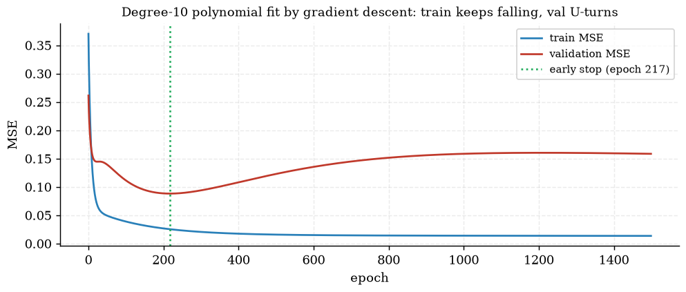
Reading the last branch: ridge vs. lasso vs. elastic net
The flowchart's bottom row compresses a decision worth spelling out, now that §6.5 has supplied the numbers behind it. The question is not "which is strongest" — $\lambda$ controls strength for all three — but what shape of answer you want:
- Prefer ridge when you expect many features each contributing a little, when $p$ is moderate and you do not need a feature list, and above all when features are correlated but you intend to keep them all. Ridge is also the only one of the three with a closed form (§6.4), so it is cheap, and $\lambda I$ guarantees invertibility — which is why it appears as the standard remedy for multicollinearity. Its cost: nothing ever reaches zero, so ridge cannot tell you which features to drop — at $\lambda=1$ in §6.5's table it kept all three pure-noise features with coefficients up to $0.138$.
- Prefer lasso when you genuinely believe the truth is sparse (a few strong features among many irrelevant ones), when $p\gg n$ and you need to get the model down to something reportable, or when the deliverable is the feature list. Its cost is the one §6.5 measured: among correlated features it keeps an arbitrary subset, and the choice is unstable across resamples ($0.380$ of bootstrap resamples kept the full correlated trio). Note also the structural limit — lasso can select at most $n$ features when $p>n$.
- Prefer elastic net when both conditions hold at once: you want sparsity and your features come in correlated groups (repeated measurements, one-hot blocks of the same categorical, lagged copies of a time series, gene-expression panels). It is the default when $p\gg n$ with correlated blocks, because it selects groups rather than arbitrary representatives. Its costs are the two extra burdens §6.5 flagged: a second hyperparameter to cross-validate ($\alpha$ as well as $\lambda$), and a slightly leakier sparsity than lasso — the $L_2$ term softens the threshold, so weak noise features get through more often.
A practical default when you have no prior: start at $\alpha\approx0.5$ and let cross-validation move it. If CV pushes $\alpha\to1$ your features are behaving independently and lasso is enough; if it pushes $\alpha\to0$ nothing is safely droppable and you are really doing ridge. And when the accuracy differences between all three are inside CV noise — as they were in §6.5's fair comparison — decide on stability and interpretability instead, not on the third decimal place of a validation score.
This section covers the general-purpose regularisation toolkit ($L_1$/$L_2$/early stopping). Logistic regression's own $C$/penalty hyperparameters are covered where logistic regression itself lives; the VC-dimension view of "how much capacity is too much" is a separate, distribution-free bound covered on its own.
- Split data three ways: train fits parameters, validation tunes hyperparameters, test is touched once.
- K-fold CV averages the validation signal over $K$ splits, trading compute for a less noisy hyperparameter choice.
- $E_{\text{out}} = \mathbb{E}_\mathbf{x}[\text{bias}^2] + \mathbb{E}_\mathbf{x}[\text{variance}]$ (+ irreducible noise): simple models are biased but stable; complex models are unbiased-ish but jittery.
- Ridge ($L_2$) shrinks all weights smoothly and always stays invertible; lasso ($L_1$) shrinks some weights to exactly zero, performing feature selection.
- Elastic net mixes the two, $\lambda[\alpha\|\mathbf{w}\|_1 + (1-\alpha)\|\mathbf{w}\|_2^2]$: the $L_1$ term selects, the $L_2$ term makes the objective strictly convex and shares a correlated group's coefficient evenly (the grouping effect). Tune $\lambda$ and $\alpha$ together.
- Early stopping is an implicit regulariser for any iterative optimiser — stop where validation error is smallest, not where training error is smallest.
6.8 Practice
Practice 6.1 — Reading a K-fold CV table
Using the §6.2 table: at $\lambda=1.0$, the five fold MSEs are $0.0313, 0.0406, 0.0738, 0.0307, 0.1251$. Their average is $(0.0313+0.0406+0.0738+0.0307+0.1251)/5 = 0.3015/5 = 0.0603$. This is worse than $\lambda=0.1$'s $0.0598$, so $\lambda=1.0$ would NOT be selected — consistent with the star landing on $\lambda=0.1$ in Fig. 6.2. Note also the much higher spread across folds at $\lambda=1.0$ (min $0.031$, max $0.125$) versus $\lambda=0.1$ (min $0.027$, max $0.090$) — a hint that $\lambda=0.1$ is not just better on average but more stable fold-to-fold.
Practice 6.2 — Bias-variance from a 2-point dataset by hand
Suppose two draws of a size-2 dataset produce constant-model fits $b^{(1)}=0.4$ and $b^{(2)}=-0.2$ at a query point where $f(x)=0.3$. With only these 2 samples of $g^{\mathcal{D}}$, $\bar g(x) \approx \tfrac12(0.4+(-0.2))=0.1$. Bias$^2(x) = (\bar g(x)-f(x))^2=(0.1-0.3)^2=0.04$. Variance$(x) = \tfrac12\left[(0.4-0.1)^2+(-0.2-0.1)^2\right] = \tfrac12[0.09+0.09]=0.09$. Total (at this $x$, ignoring noise) $=0.04+0.09=0.13$. This is exactly the mechanics behind the 200,000-dataset average in §6.3's table, just with 2 samples instead of 200,000 — which is also why 2 samples give a noisy, unreliable estimate and the compute script needed a quarter-million.
Practice 6.3 — Ridge weight for a new $\lambda$
Using §6.4's orthogonal $4\times2$ example ($Z^\top Z=4I$, $Z^\top Y=(1.0,3.4)$), find $\mathbf{w}_{\text{reg}}$ at $\lambda=12$. $\mathbf{w}_{\text{reg}} = \frac{1}{4+12}(1.0,\,3.4) = \frac{1}{16}(1.0,\,3.4) = (0.0625,\,0.2125)$. Compare to $\lambda=4$'s $(0.125, 0.425)$ — tripling $\lambda$ from 4 to 12 exactly halves both weights, confirming the multiplicative-shrinkage relationship $\mathbf{w}_{\text{reg}}=\frac{4}{4+\lambda}\mathbf{w}_{\text{OLS}}$ derived in the text.
Practice 6.4 — Lasso soft-thresholding by hand
Using the soft-thresholding formula $w_j^\star=\text{sign}(a_j)\max(|a_j|-\lambda/2,0)$ with $a=(3.0,-1.2,0.3)$, find $\mathbf{w}^\star$ at $\lambda=2.5$. $w_1^\star=\text{sign}(3.0)\max(3.0-1.25,0)=1.75$. $w_2^\star=\text{sign}(-1.2)\max(1.2-1.25,0)=\text{sign}(-1.2)\times0=0$. $w_3^\star=\text{sign}(0.3)\max(0.3-1.25,0)=0$. So $\mathbf{w}^\star=(1.75,\,0,\,0)$: at $\lambda=2.5$ only the strongest feature survives — a more aggressive sparsification than $\lambda=1$'s $(2.5,-0.7,0)$ from the worked table.
Practice 6.5 — Diagnosing an overfit run
A model trained for 1500 epochs (§6.6's setup) shows final train MSE $0.0135$ and final validation MSE $0.1584$, but validation MSE was $0.0882$ at epoch 217. What should you ship? Ship the epoch-217 weights, not the epoch-1500 weights: the gap between train ($0.014$) and validation ($0.158$) at epoch 1500 is the signature of overfitting (variance has taken over), while at epoch 217 validation is close to its achievable minimum. This is early stopping in practice — you need to have been checkpointing weights, not just losses, to actually recover the epoch-217 model after the fact.
Practice 6.6 — Elastic net by hand: which features survive, and how far do they shrink?
Same orthonormal design and OLS coefficients as §6.4 and §6.5, $a=(3.0,\,-1.2,\,0.3)$, at strength $\lambda=2$. (a) Compute $\mathbf{w}^\star$ at mix $\alpha=0.75$. (b) Compare it with the pure lasso solution at the same $\lambda$ and explain what the $L_2$ term did and did not change. (c) What would have to change for $x_3$ to survive?
(a) Apply $w_j^\star = \text{sign}(a_j)\max(|a_j|-\tfrac{\lambda\alpha}{2},0)\big/\big(1+\lambda(1-\alpha)\big)$. Threshold: $\tfrac{\lambda\alpha}{2}=\tfrac{2\times0.75}{2}=0.75$. Divisor: $1+2\times(1-0.75)=1.5$. Then $w_1^\star=(3.0-0.75)/1.5=2.25/1.5=1.50$; $w_2^\star=-(1.2-0.75)/1.5=-0.45/1.5=-0.30$; and since $|a_3|=0.3<0.75$, $w_3^\star=0$. So $\mathbf{w}^\star=(1.50,\,-0.30,\,0.00)$.
(b) Lasso at $\lambda=2$ (i.e. $\alpha=1$) gives $(2.00,\,-0.20,\,0.00)$. The support is identical — both keep $\{x_1,x_2\}$ and drop $x_3$ — because on an orthonormal design survival depends only on the threshold $\tfrac{\lambda\alpha}{2}$, and the $L_2$ term contributes nothing to it. What the $L_2$ term changed is the magnitudes: dividing by $1.5$ pulled $w_1$ from $2.00$ down to $1.50$. That is the division of labour stated in §6.5 — $L_1$ decides membership, $L_2$ decides how hard the survivors shrink. (On a non-orthonormal design the two are no longer separable and the $L_2$ term does change the support, which is precisely how the grouping effect rescues correlated features.)
(c) $x_3$ survives iff $|a_3| > \tfrac{\lambda\alpha}{2}$, i.e. $0.3 > \lambda\alpha/2$, i.e. $\lambda\alpha < 0.6$. At $\lambda=2$ that means $\alpha<0.3$: e.g. $\alpha=0.25$ gives threshold $0.25$ and divisor $2.5$, so $w_3^\star=(0.3-0.25)/2.5=0.02$ — alive, but shrunk to near-irrelevance. Alternatively hold $\alpha$ and lower $\lambda$. Note that the two hyperparameters enter this survival condition only through their product $\lambda\alpha$, which is exactly why tuning one while fixing the other is not enough.
7 Learning Theory: PAC & VC Dimension
§6 measured generalisation empirically: hold data out, cross-validate, watch a validation curve turn upward. That works, but it never says how much data is enough, and it gives no guarantee at all before you run the experiment. This section supplies the missing theory. §1 introduced $E_{\text{in}}$, $E_{\text{out}}$, and the Hoeffding-flavoured intuition that a big enough sample lets in-sample error stand in for out-of-sample error. This section makes that intuition rigorous: it asks exactly how much data is enough, and why the answer depends not on how many hypotheses you have but on how much they can actually disagree with each other on a finite sample.
7.1 Hoeffding's inequality and the trouble with picking $g$
For a hypothesis $h$ that was fixed before you saw the data,
$$P\!\left[\,|E_{\text{in}}(h) - E_{\text{out}}(h)| > \epsilon\,\right] \;\le\; 2e^{-2\epsilon^2 N}.$$Reading it. $N$ is the sample size, $\epsilon$ is a tolerance on how far the in-sample estimate $E_{\text{in}}$ is allowed to drift from the true error $E_{\text{out}}$. The right-hand side falls exponentially in $N$: double the data and the bound doesn't just halve, it gets squared (roughly). $E_{\text{out}}$ is unknown and unknowable in practice, but Hoeffding gives a probabilistic certificate that $E_{\text{in}}$ is a trustworthy stand-in — for one fixed $h$.
Plugging in numbers. $\epsilon = 0.1$, $N = 200$: the probability of the estimate being off by more than $10$ points is at most
$$2e^{-2(0.1)^2(200)} = 2e^{-4} \approx 3.66\%.$$To push that under $1\%$ requires $N \ge 265$. One extra order of confidence costs real data, but the cost is mild — this is the exponential working for you.
The catch. This bound is a statement about one hypothesis you committed to before looking at the sample. A learning algorithm does the opposite: it looks at the sample, tries every $h \in \mathcal{H}$, and reports whichever one fits best. That "because it fits" step is exactly what invalidates the bound above — the rest of this section exists to repair it.
7.2 The problem with $M$: a union bound over hypotheses
If the learner is allowed to pick the best of $M = |\mathcal{H}|$ hypotheses, a union bound over all of them gives the PAC (Probably Approximately Correct) bound:
$$P\!\left[\,|E_{\text{in}}(g) - E_{\text{out}}(g)| > \epsilon\,\right] \;\le\; 2M e^{-2\epsilon^2 N}. \qquad \text{(PAC bound)}$$Why a union bound is the right (if crude) tool. Treat each of the $M$ hypotheses as its own private Hoeffding bound. The probability that hypothesis $i$'s sample happens to be misleading is small. But the learner picks whichever hypothesis looks best on this sample — and with $M$ independent "rolls," the chance that at least one of them looks misleadingly good by pure luck is at most the sum of the $M$ individual chances. Union bounds over-count (they ignore that the events overlap), which is why the bound above is a genuine upper bound, not an equality.
Solving $2Me^{-2\epsilon^2 N} = \delta$ for $\epsilon$ turns the bound into an explicit confidence statement:
$$\epsilon = \sqrt{\frac{1}{2N}\ln\frac{2M}{\delta}}.$$"Probably" is the confidence level $1-\delta$; "approximately correct" is the tolerance $\epsilon$. Both shrink as $N$ grows — but $\epsilon$ also grows (mildly, as $\sqrt{\ln M}$) with the size of the hypothesis space. More hypotheses to search over means a looser guarantee for the one you end up picking.
Worked: turning the bound into a confidence interval. Fix $\delta = 0.05$ and $N = 1000$ (single hypothesis, i.e. $M=1$):
| step | value |
|---|---|
| $\ln(2/\delta) = \ln 40$ | $3.6889$ |
| $\epsilon = \sqrt{\ln(2/\delta)/(2N)}$ | $0.0429$ |
With $95\%$ confidence, $E_{\text{out}} \in [E_{\text{in}} - 0.043,\ E_{\text{in}} + 0.043]$ — a thousand samples pin the truth to about $\pm 4.3$ points. Running the inversion the other way, $N \ge \frac{1}{2\epsilon^2}\ln\frac{2}{\delta}$ at $\delta = 0.05$:
| $\epsilon$ | $0.1$ | $0.01$ | $0.001$ |
|---|---|---|---|
| $N$ required | $185$ | $18{,}445$ | $1{,}844{,}440$ |
Interpretation. Each extra decimal digit of precision costs roughly $100\times$ the data — the $1/\epsilon^2$ law shows up in every sample-complexity result in this section, all the way to the VC bound in §7.6.
The coin-flip experiment makes the multiplicity danger concrete: flip $1000$ fair coins $10$ times each and read "all heads" as a hypothesis that looks perfect ($E_{\text{in}}=0$) while its true error is as bad as it gets ($E_{\text{out}}=0.5$).
| quantity | value |
|---|---|
| $P(\text{one fixed coin shows } 10/10) = 2^{-10}$ | $0.000977$ |
| $P(\text{at least one of }1000\text{ shows }10/10) = 1-(1-2^{-10})^{1000}$ | $0.6236$ |
| union bound: $1000 \times 2^{-10}$ | $0.9766$ |
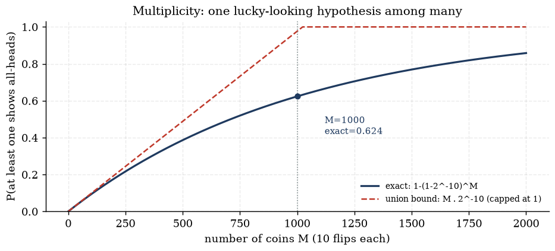
One fixed hypothesis with $E_{\text{in}}=0$ proves almost nothing — with enough candidates tried, someone gets lucky. This is exactly why cross-validation and held-out test sets (§6) matter: they prevent the "many coins" effect from contaminating the reported number.
For perceptrons, SVMs, and neural nets, $M = |\mathcal{H}| = \infty$, and $2Me^{-2\epsilon^2 N}$ is infinite for every $N$ — vacuous. The fix is not a better union bound; it's counting something finite instead of $M$.
7.3 Dichotomies, shattering, and worked shatter examples
Two hypotheses that assign the same $\pm1$ labels to the same $N$ points are indistinguishable on that sample — so count labelings, not hypotheses.
Dichotomy. One of the (at most $2^N$) $\pm1$-labelings that $\mathcal{H}$ can produce on a fixed set of $N$ points.
Growth function. $m_{\mathcal{H}}(N) = \max_{\mathbf{x}_1,\ldots,\mathbf{x}_N}|\mathcal{H}(\mathbf{x}_1,\ldots,\mathbf{x}_N)|$ — the largest number of distinct dichotomies achievable on any $N$-point configuration.
Shattering. $\mathcal{H}$ shatters a set of $N$ points iff it realises all $2^N$ labelings on that set, i.e. $m_{\mathcal{H}}(N) = 2^N$.
Break point. The smallest $k$ such that $m_{\mathcal{H}}(k) < 2^k$ — the first sample size $\mathcal{H}$ fails to shatter on every configuration of that size.
Replacing $M$ with $m_{\mathcal{H}}(N)$ is the whole move of VC theory: $m_{\mathcal{H}}(N) \le 2^N$ always, but for a class with a finite break point it turns out to grow only polynomially (§7.4) — finite and well-behaved, unlike $M$.
All the numbers below were verified exhaustively — for the perceptron, by solving the exact linear-feasibility program "$\exists\, \mathbf{w}, b$ with $y_i(\mathbf{w}^\top\mathbf{x}_i + b) \ge 1\ \forall i$" for every candidate labeling; for the rays/intervals, by brute-force enumeration of achievable dichotomies.
2D perceptron, $N=3$, general position. Three non-collinear points (e.g. a small triangle). All $2^3 = 8$ possible labelings are achievable by some separating line:
$m_{\mathcal{H}}(3) = 8$ $= 2^3$ — shattered.
2D perceptron, $N=3$, collinear (why "general position" is load-bearing). Put the same 3 points on a line instead. Now only $m_{\mathcal{H}}(3)=6$ of the $8$ labelings are achievable — a line can still separate along the collinear axis, but it can no longer realise every $\pm1$ pattern the way it could off-axis. Growth functions are defined by the best possible configuration; a poorly chosen (degenerate) one can shatter less.
2D perceptron, $N=4$, square (the XOR case). Four points at the corners of a square, labeled on the diagonals ($+,-,+,-$ going around — the classic XOR pattern). No straight line separates the two diagonal corners from the other two:
$m_{\mathcal{H}}(4) = 14$ $< 16$ — not shattered: exactly the two "diagonal" labelings $(+,-,+,-)$ and $(-,+,-,+)$ are unreachable.
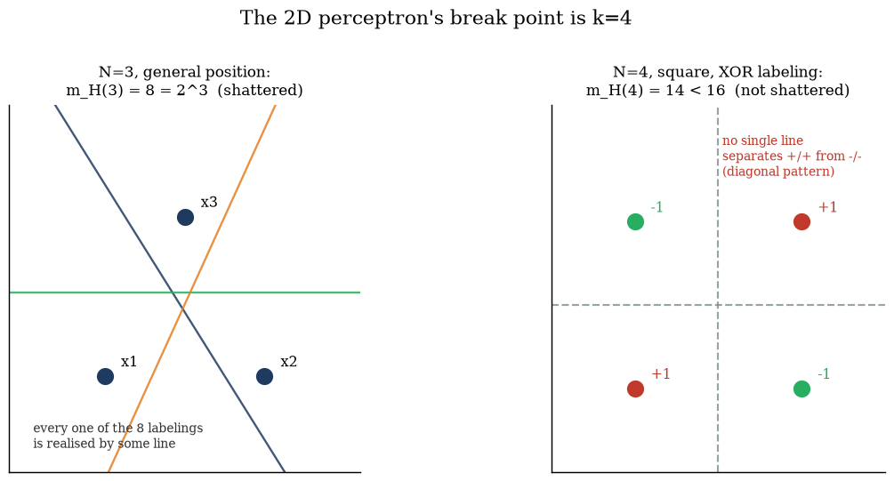
v5's growth-function discussion for the 2D perceptron never actually drew the shatter/no-shatter picture — its own defect list calls this "the single most useful diagram in Part II," present only as prose. Fig. 7.2 supplies it directly, plus the collinear counter-example, which shows a subtlety v5 never mentioned: growth functions are a max over configurations, so a badly chosen point set can under-shatter even when $N$ is below the true break point.
7.4 Growth functions across hypothesis classes, and Sauer's lemma
| $\mathcal{H}$ | $m_{\mathcal{H}}(N)$ | verified at $N=1..6$ | break point $k$ |
|---|---|---|---|
| positive rays $\{x \ge a\}$ | $N+1$ | 2, 3, 4, 5, 6, 7 | $2$ (can't do $-,+,-$) |
| positive intervals $\{a \le x \le b\}$ | $\binom{N+1}{2}+1$ | 2, 4, 7, 11, 16, 22 | $3$ (can't do $-,+,-,+$) |
| 2D perceptron | $2\sum_{i=0}^{2}\binom{N-1}{i}$, and $\le\sum_{i=0}^{3}\binom{N}{i}$ (Sauer, degree-3 poly) | 2, 4, 8, 14, 22, 32 | $4$ |
| convex sets in $\mathbb{R}^2$ | $2^N$ | $2^N$ exactly | $\infty$ (shatters forever) |
Every row above is exhaustively recomputed and matches the closed-form formula exactly — brute-force enumeration on rays/intervals, exact LP-separability search over all $2^N$ labelings of $N$ points in convex position for the perceptron. Note the perceptron's exact growth function $2\sum_{i=0}^{2}\binom{N-1}{i}$ sits strictly below its Sauer bound $\sum_{i=0}^{3}\binom{N}{i}$ from $N=4$ onward ($14$ vs $15$) — Sauer is an upper bound, not the count itself.

Sauer's lemma. If $\mathcal{H}$ has break point $k$, then for all $N$:
$$m_{\mathcal{H}}(N) \;\le\; \sum_{i=0}^{k-1}\binom{N}{i} \;\le\; O(N^{k-1}).$$Proof sketch (recursion). Let $B(N,k)$ be the maximum number of dichotomies on $N$ points such that no $k$-subset is shattered. Split on the last point $x_N$: dichotomies that agree on $x_1,\ldots,x_{N-1}$ but differ on $x_N$ contribute a pair; among the $N-1$-point patterns that support such a pair, none of their $(k-1)$-subsets can be shattered (else, together with $x_N$'s two labels, a $k$-subset would be). This gives the recursion $B(N,k) \le B(N-1,k) + B(N-1,k-1)$, and unrolling it (with the boundary cases $B(N,1)=1$, $B(1,k)=2$ for $k\ge2$) yields $B(N,k) \le \sum_{i=0}^{k-1}\binom{N}{i}$ by induction on $N+k$.
Numerical feel: break point $k=4$ (2D perceptron) at $N=100$.
| quantity | value |
|---|---|
| Sauer bound $\sum_{i=0}^{3}\binom{100}{i}$ | $166{,}751$ |
| $2^{100}$ | $\approx 1.27\times10^{30}$ |
| gap | $\approx 10^{24.9}$ |
Interpretation. A single break point converts a $10^{30}$-scale count into a $10^{5}$-scale one — a factor of roughly $10^{25}$ saved. Polynomial growth in the numerator combined with exponential decay $e^{-2\epsilon^2N}$ in the Hoeffding factor is exactly what makes the generalisation bound in §7.6 meaningful again.
7.5 VC dimension
VC dimension $d_{VC}(\mathcal{H})$ = the largest $N$ for which $m_{\mathcal{H}}(N) = 2^N$ = break point $k$ minus $1$: $d_{VC} = k-1$.
| class | $d_{VC}$ | matches... |
|---|---|---|
| 1D threshold (rays) | $1$ | $1$ parameter (the threshold) |
| 1D intervals | $2$ | $2$ parameters (endpoints) |
| $d$-D perceptron | $d+1$ | $d+1$ weights (incl. bias) |
| degree-$q$ polynomial in 1D | $q+1$ | $q+1$ coefficients |
| axis-aligned rectangles in $\mathbb{R}^2$ | $4$ | $4$ parameters ($x_{\min},x_{\max},y_{\min},y_{\max}$) |
$d_{VC}$ is a loose proxy for "free parameters" — good for linear-in-parameters models, but it is only a rule of thumb: kernel SVMs with effectively infinite-dimensional feature maps can have low $d_{VC}$ if the margin is large (§17), and deep nets famously defy the parameter-counting intuition entirely.
New worked shatter example: axis-aligned rectangles, $d_{VC}=4$. Let $\mathcal{H}$ be "$+1$ if the point lies inside some axis-aligned rectangle $[x_{\min},x_{\max}]\times[y_{\min},y_{\max}]$, else $-1$." Take four points arranged as a diamond — north, east, south, west of the origin. For any labeling, the minimal bounding box of the points labeled $+1$ realises it (positives are inside by construction; check each negative point individually):
$m_{\mathcal{H}}(4) = 16$ $=2^4$ — shattered.
Now add a fifth point at the centre. Try to label the four outer points $+1$ and the centre $-1$: the minimal bounding box of the four $+1$ points is the diamond's own bounding square, and that square necessarily contains the centre — so no rectangle can include all four outer points while excluding the middle one. This labeling is unreachable:
achievable? no (only $21$ of $32$ labelings are realisable on this 5-point set) — consistent with $d_{VC}=4$.
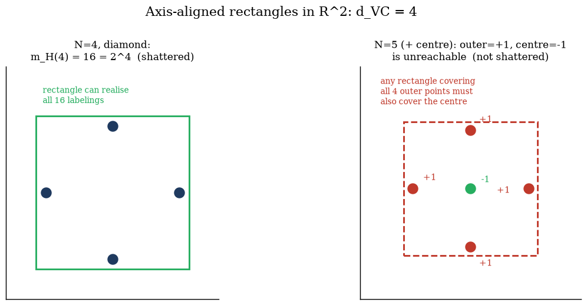
This example is not a full proof that $d_{VC}=4$ for axis-aligned rectangles in general (that requires showing no 5-point configuration can be shattered, not just this one) — it's the standard textbook illustration, included here because v5 had no shatter example beyond the perceptron. The perceptron's $d_{VC}=d+1$ gets the full two-part proof in §7.7, which is a complete argument.
7.6 The VC generalisation bound
Replacing $M$ with $m_{\mathcal{H}}(2N)$ in a refined version of the union-bound argument (the factor of $2N$ and the constants $4$, $1/8$ come from a symmetrization argument omitted here — see v5 §14 for the statement) gives:
$$P\!\left[\,|E_{\text{in}}(g)-E_{\text{out}}(g)| > \epsilon\,\right] \;\le\; 4\,m_{\mathcal{H}}(2N)\,e^{-\epsilon^2 N/8}.$$Setting the right-hand side to $\delta$ and inverting for $\epsilon$:
$$\epsilon = \sqrt{\frac{8}{N}\ln\!\left(\frac{4\,m_{\mathcal{H}}(2N)}{\delta}\right)}.$$With probability $1-\delta$:
$$\boxed{\;E_{\text{out}}(g) \;\le\; E_{\text{in}}(g) + \sqrt{\dfrac{8}{N}\ln\!\left(\dfrac{4\,m_{\mathcal{H}}(2N)}{\delta}\right)}\;}$$Reading the bound piece by piece.
- $E_{\text{in}}(g)$ — how well $g$ fits training data; make this small.
- $m_{\mathcal{H}}(2N)$ — bounded by Sauer's lemma at degree $d_{VC}$; higher $d_{VC}$ ⇒ looser bound.
- $\delta$ — confidence budget; only a $\ln(1/\delta)$ dependence, so it's cheap to demand higher confidence.
- $1/N$ under the root — doubling $N$ shrinks the gap by $\sqrt2$; to halve the gap you need $4\times$ the data (the same $1/\epsilon^2$ law from §7.2).
Stripping constants: $E_{\text{out}} \le E_{\text{in}} + O\!\big(\sqrt{d_{VC}\ln N / N}\big)$ — good generalisation needs $N \gg d_{VC}$.
Worked: $10$-D perceptron, $N=1000$. $d_{VC} = d+1 = 11$. Bounding $m_{\mathcal{H}}(2N)$ by the Sauer sum at break point $k=12$ (equivalently $\binom{2N}{d_{VC}}$ as an order-of-magnitude proxy):
| quantity | value |
|---|---|
| $m_{\mathcal{H}}(2000) \approx \binom{2000}{11}$ | $\approx 5.0\times10^{28}$ |
| $\dfrac{4\,m_{\mathcal{H}}(2N)}{\delta}$, $\delta=0.05$ | $\approx 4.0\times10^{30}$ |
| $\epsilon = \sqrt{\tfrac{8}{1000}\ln(\cdot)}$ | $\approx 0.751$ |
Interpretation. A generalisation-gap bound of $\sim0.75$ is essentially useless — error already lives in $[0,1]$. The VC bound is famously loose; treat it as a scaling law, not a tight empirical number. In practice, $N \gtrsim 10\,d_{VC} = 110$ samples gets reasonable generalisation; to make the bound itself numerically tight needs $N \gtrsim 100\,d_{VC} = 1100$ or more.
7.7 VC dimension of the perceptron
Claim: for a $d$-dimensional perceptron, $d_{VC} = d+1$ — matching the $d+1$ free weights (including bias). Two parts.
① $d_{VC} \ge d+1$: some $(d+1)$-point set is shattered
Choose $d+1$ points as the rows of an "identity-plus-bias" matrix, shape $(d+1)\times(d+1)$:
$$X = \begin{pmatrix} 1 & 0 & 0 & \cdots & 0\\ 1 & 1 & 0 & \cdots & 0\\ 1 & 0 & 1 & \cdots & 0\\ \vdots & & & \ddots & \\ 1 & 0 & 0 & \cdots & 1 \end{pmatrix}_{(d+1)\times(d+1)}$$$X$ is invertible (it's lower-triangular with $1$s on the diagonal after the first column). For any target labels $\mathbf{y}\in\{\pm1\}^{d+1}$, set $\mathbf{w} = X^{-1}\mathbf{y}$ — a $(d+1)$-vector, shape $(d+1)\times1$. Then $X\mathbf{w} = \mathbf{y}$ exactly, so $\operatorname{sign}(X\mathbf{w}) = \mathbf{y}$: every labeling is realised by some $\mathbf{w}$. Shattered.
Intuition: $d+1$ linearly independent points span all of $\mathbb{R}^{d+1}$ (the augmented space with the bias coordinate), so any target output vector is reachable — invertibility of $X$ is precisely "we can hit any target."
② $d_{VC} \le d+1$: no $(d+2)$-point set is shattered
Any $d+2$ points in $\mathbb{R}^{d+1}$ are linearly dependent: one point is a combination of the rest, $\mathbf{x}_i = \sum_{j\ne i} a_j\mathbf{x}_j$ for some scalars $a_j$ (not all zero). Choose the target labeling $y_j = \operatorname{sign}(a_j)$ for every $j \ne i$ with $a_j \ne 0$, and $y_i = -1$.
Adjudicating a v5 slip. v5's write-up of this step asserts $\mathbf{w}^\top\mathbf{x}_i = \sum_j a_j\mathbf{w}^\top\mathbf{x}_j = \sum_j |a_j|\cdot|\mathbf{w}^\top\mathbf{x}_j|$ as if it held unconditionally — it does not: that equality is true only given the specific label choice $y_j = \operatorname{sign}(a_j)$ used to define the argument, since consistent classification forces $\operatorname{sign}(\mathbf{w}^\top\mathbf{x}_j) = y_j = \operatorname{sign}(a_j)$, which is what makes $a_j\,\mathbf{w}^\top\mathbf{x}_j \ge 0$ term-by-term. v5 also silently assumes every $a_j \ne 0$. The corrected argument below states these dependencies explicitly.
Corrected argument. Suppose, for contradiction, that some perceptron $\mathbf{w}$ achieves $\operatorname{sign}(\mathbf{w}^\top\mathbf{x}_j) = y_j$ for every $j\ne i$ (with $a_j \ne 0$) and $\operatorname{sign}(\mathbf{w}^\top\mathbf{x}_i) = y_i = -1$. Since classification is correct on every $j \ne i$ with $a_j\ne0$, each term satisfies $a_j\,(\mathbf{w}^\top\mathbf{x}_j) = |a_j|\cdot\operatorname{sign}(a_j)\cdot(\mathbf{w}^\top\mathbf{x}_j) = |a_j|\cdot y_j\cdot(\mathbf{w}^\top\mathbf{x}_j) \ge 0$ (a correctly-classified point has $y_j\,\mathbf{w}^\top\mathbf{x}_j \ge 0$ by definition of "correctly classified"). Summing over $j$:
$$\mathbf{w}^\top\mathbf{x}_i \;=\; \mathbf{w}^\top\!\Big(\sum_{j\ne i} a_j\mathbf{x}_j\Big) \;=\; \sum_{j\ne i} a_j\,(\mathbf{w}^\top\mathbf{x}_j) \;\ge\; 0.$$But $y_i = -1$ demanded $\mathbf{w}^\top\mathbf{x}_i < 0$ — a contradiction. So no perceptron realises this labeling: this particular labeling is unreachable, and $d+2$ points cannot be shattered.
Why $d+2$ fails — the pigeonhole reading. You cannot fit $d+2$ linearly independent vectors into $\mathbb{R}^{d+1}$. Once one point is dependent on the rest, its output $\mathbf{w}^\top\mathbf{x}_i$ is determined by the others' outputs — you lose one free degree of choice exactly when you gain one more target to hit. With $d+1$ points you had $d+1$ independent outputs to set freely; with $d+2$ points you still only have $d+1$ degrees of freedom but $d+2$ targets. Some labeling always escapes.
Combining ① and ②: $d_{VC}(\text{$d$-D perceptron}) = d+1$. $\blacksquare$
Interpretation — the whole chapter in one line. Learning generalises not because a hypothesis class is small in count, but because it is small in effective flexibility: a finite break point converts the union bound's fatal $M=\infty$ into a polynomial $m_{\mathcal{H}}(N)$ (Sauer), and the resulting VC bound formalises the bias-variance intuition of §6 — capacity ($d_{VC}$) traded against data ($N$) traded against confidence ($\delta$). The bound itself is usually far too loose to use as a number (§7.6's worked example gives $\epsilon\approx0.75$), but the qualitative rule $N \gtrsim 10\,d_{VC}$ and the shape $O(\sqrt{d_{VC}\ln N/N})$ are exactly the reasoning behind "more parameters need more data" and behind why early stopping, regularisation (§6), and cross-validation (§6) all work: they are practical proxies for controlling effective capacity when the VC bound itself is too pessimistic to apply directly.
The bound above is a worst-case guarantee; day to day, the empirical stand-ins for $E_{\text{in}}$/$E_{\text{out}}$ from §6 are read directly off two scikit-learn curves rather than off $d_{VC}$.
Code — learning_curve & validation_curve (sklearn)
from sklearn.model_selection import learning_curve, validation_curve
from sklearn.linear_model import LogisticRegression
from sklearn.pipeline import make_pipeline
from sklearn.preprocessing import StandardScaler
from sklearn.datasets import make_classification
import numpy as np
X, y = make_classification(n_samples=500, n_features=20, n_informative=5, random_state=0)
clf = make_pipeline(StandardScaler(), LogisticRegression(max_iter=1000))
# learning_curve: E_in/E_out (via CV) as a function of N -- the empirical analogue
# of section 7.6's bound E_out <= E_in + O(sqrt(d_VC ln N / N))
train_sizes, train_scores, val_scores = learning_curve(
clf, X, y, cv=5, train_sizes=np.linspace(0.1, 1.0, 8), scoring="accuracy", n_jobs=-1
)
train_mean = train_scores.mean(axis=1)
val_mean = val_scores.mean(axis=1)
gap = train_mean - val_mean # a widening gap as N shrinks is the VC bound's story, made empirical
# validation_curve: sweep a capacity knob (here, inverse regularisation C) at fixed N --
# the practical stand-in for turning the d_VC dial of section 7.5
param_range = np.logspace(-3, 3, 7)
train_scores2, val_scores2 = validation_curve(
clf, X, y, param_name="logisticregression__C", param_range=param_range, cv=5, n_jobs=-1
)
learning_curve varies $N$ to expose the $E_{\text{in}}/E_{\text{out}}$ gap the VC bound predicts; validation_curve varies one hyperparameter at fixed $N$ to find the capacity sweet spot — both read scores straight off cross-validation, with no need to hand-compute $d_{VC}$.
7.8 Practice
Practice 7.1 — Hoeffding sample size
How large must $N$ be so that a single fixed hypothesis has $P[|E_{\text{in}}-E_{\text{out}}|>0.05] \le 0.02$?
Invert: $2e^{-2(0.05)^2N} = 0.02 \Rightarrow N = \dfrac{1}{2(0.05)^2}\ln\dfrac{2}{0.02} = 200\ln100 = 200\times4.6052 \approx 921.03$. So $N \ge 922$ (round up). Compare to the table in §7.2's example: tighter tolerance and confidence both push $N$ up, but the growth is only logarithmic in $1/\delta$ versus quadratic in $1/\epsilon$ — the $\epsilon$ knob dominates the data appetite.
Practice 7.2 — does this 3-point set shatter under positive intervals?
Points at $x=1,2,3$ on the line, $\mathcal{H} = \{a\le x\le b\}$. List the achievable labelings of $(x_1,x_2,x_3)$ and check whether all $8$ are reachable.
An interval labels a contiguous run of the sorted points $+1$ and everything else $-1$ (plus the empty interval, all $-1$). Achievable: $(-,-,-)$, $(+,-,-)$, $(-,+,-)$, $(-,-,+)$, $(+,+,-)$, $(-,+,+)$, $(+,+,+)$ — that's $7$, matching $m_{\mathcal{H}}(3)=\binom{4}{2}+1=7$. The one missing labeling is $(+,-,+)$ — you cannot include the two ends of an interval while excluding its middle. So: not shattered ($7<8$); this is the general phenomenon behind the break point $k=3$ for intervals.
Practice 7.3 — VC dimension from a break point
A hypothesis class has growth function $m_{\mathcal{H}}(N) = 1 + N + \binom{N}{2}$ for $N\ge2$. What is its break point and its $d_{VC}$?
This is the Sauer-lemma bound shape $\sum_{i=0}^{k-1}\binom{N}{i}$ with $k-1=2$, i.e. break point $k=3$. By $d_{VC}=k-1$: $d_{VC}=2$. (This is in fact exactly the positive-intervals growth function from §7.4's table, $\binom{N+1}{2}+1 = 1+N+\binom{N}{2}$, whose $d_{VC}=2$ matches its $2$ free parameters — the two interval endpoints.)
Practice 7.4 — VC bound sensitivity
Using the $10$-D perceptron worked example ($d_{VC}=11$), roughly how much would $N$ need to grow to cut the generalisation-gap bound $\epsilon\approx0.751$ in half?
The bound scales as $\epsilon = \sqrt{\tfrac{8}{N}\ln(\cdot)}$, and the $\ln(\cdot)$ term itself grows slowly with $N$ (through $m_{\mathcal{H}}(2N)$), so to leading order $\epsilon \propto 1/\sqrt{N}$. Halving $\epsilon$ needs roughly a $4\times$ increase in $N$: from $N=1000$ to $N\approx4000$ — and even then the $\ln m_{\mathcal{H}}(2N)$ term has grown too (more points to shatter-count over), so the true requirement is somewhat higher than $4\times$. This is the same $1/\epsilon^2$ law from the Hoeffding sample-complexity table in §7.2, inherited by the VC bound.
Practice 7.5 — shattering axis-aligned rectangles
Using the diamond-plus-centre configuration from §7.5's rectangle example, is the labeling "all $5$ points positive" achievable? Is "all $5$ points negative" achievable?
All-positive: yes — the bounding box of all $5$ points (which is just the diamond's own bounding square, since the centre lies inside it) contains no negatively-labeled point, trivially. All-negative: yes as well — the empty rectangle (or any rectangle missing all points) realises "no point is inside," giving every point label $-1$. Both extremes are always achievable for any point set under this hypothesis class; it's the mixed labeling (outer $+1$, centre $-1$) from §7.5 that fails, because it is impossible to include a ring while excluding its own interior.
8 K-Nearest Neighbours
§7 measured a hypothesis set's capacity by $d_{VC}$ — a number tied to a fixed, finite parameter count. The model in this section has no parameter count at all: its capacity grows with the data itself, so the $N \gg d_{VC}$ rule of thumb has nothing to bite on. That makes KNN the cleanest place to watch capacity get controlled by something other than parameters — here, by a single integer $k$.
K-Nearest Neighbours (KNN) is the odd one out among the models covered so far: it does not fit a parameter vector at all. Where linear regression solves for $\mathbf{w}$ and logistic regression solves for $\boldsymbol{\beta}$, KNN keeps the entire training set around and makes every decision by looking up nearby examples at prediction time. The handwritten notes summarise it in one arrow: "KNN → It is a lazy, instance-based, non-parametric classifier. There is no training phase." Each of those three adjectives is a real, separate claim, and unpacking them is the cleanest way into the algorithm.
8.1 Lazy, instance-based, non-parametric
Instance-based (memory-based). The "model" is the training set. There is no compressed summary — no weight vector, no learned tree, no set of centroids. Predicting for a new point requires the whole training set to be reachable at inference time.
Non-parametric. The number of "parameters" (in the loose sense of degrees of freedom the model can use) grows with $n$, not fixed in advance. A linear model has exactly $d+1$ parameters no matter how much data you feed it; a KNN classifier's effective complexity keeps growing as $n$ grows, because more stored points means finer-grained decision boundaries are possible, as the figures in §8.5 make concrete.
The algorithm itself, from the handwritten notes:
- Compute the distance from the query point $\mathbf{x}_q$ to every training point $\mathbf{x}_i$, $i=1,\dots,n$.
- Pick the $k$ closest points (smallest $k$ distances).
- Predict the majority class among those $k$ neighbours (classification), or their average target value (regression — the source writes this abbreviated as "avg for regres'n").
The only two design choices in the whole procedure are which distance to use (§8.3) and how many neighbours $k$ to look at — the notes flag $k$ directly as "hyper params → k". Everything else downstream — bias, variance, cost — is a consequence of those two choices.
8.2 The prediction rule, in shapes
For a query $\mathbf{x}_q\in\mathbb{R}^{d}$ against a training matrix $\mathbf{X}\in\mathbb{R}^{n\times d}$:
$$ d_i = \mathrm{dist}(\mathbf{x}_q, \mathbf{x}_i), \qquad i = 1,\dots,n \qquad\Longrightarrow\qquad \mathbf{d}\in\mathbb{R}^{n} $$broadcasting $\mathbf{x}_q$ ($1\times d$) against every row of $\mathbf{X}$ ($n\times d$) produces one distance per training point, giving a distance vector $\mathbf{d}\in\mathbb{R}^n$. Sorting $\mathbf{d}$ and keeping the $k$ smallest entries gives an index set $\mathcal{N}_k(\mathbf{x}_q)\subset\{1,\dots,n\}$, $|\mathcal{N}_k|=k$. The prediction is then
$$ \hat{y}_{\text{class}} = \operatorname*{arg\,max}_{c}\; \sum_{i\in\mathcal{N}_k(\mathbf{x}_q)} \mathbb{1}[y_i = c] \qquad\text{or}\qquad \hat{y}_{\text{reg}} = \frac{1}{k}\sum_{i\in\mathcal{N}_k(\mathbf{x}_q)} y_i . $$Nothing here is learned — $\hat y$ is a function of $(\mathbf{X},\mathbf{y},\mathbf{x}_q,k,\mathrm{dist})$ evaluated fresh for every query. This is exactly the "1. distance, 2. pick k, 3. vote/average" recipe above, just written with shapes.
Code — KNeighborsClassifier in a Pipeline with StandardScaler (sklearn)
from sklearn.neighbors import KNeighborsClassifier
from sklearn.pipeline import Pipeline
from sklearn.preprocessing import StandardScaler
from sklearn.model_selection import train_test_split
from sklearn.datasets import make_classification
X, y = make_classification(n_samples=300, n_features=8, n_informative=5, random_state=0)
X_train, X_test, y_train, y_test = train_test_split(X, y, test_size=0.25, random_state=0)
# StandardScaler MUST precede KNeighborsClassifier: KNN's vote depends directly on raw
# distances (the Gotcha above), unlike a tree split (section 10.2), which only ever compares
# one feature to a threshold and is therefore scale-invariant -- trees skip this step entirely.
knn_pipe = Pipeline([
("scaler", StandardScaler()), # fit on X_train only
("knn", KNeighborsClassifier(n_neighbors=5, weights="distance", p=2)), # p=2 -> Euclidean
])
knn_pipe.fit(X_train, y_train)
knn_pipe.score(X_test, y_test)
Pipeline.fit calls the scaler's fit_transform on train and, inside score/predict, transform (not fit_transform) on test — this is exactly what keeps test-set statistics from leaking into the mean/std used to scale it.
8.3 Distance metrics
The handwritten notes fan out four distance choices under a single "Distance →" arrow:
| Metric | Formula | Notes |
|---|---|---|
| Euclidean | $\displaystyle \sqrt{\sum_i (x_i-y_i)^2}$ | the default; straight-line ("as the crow flies") distance |
| Manhattan | $\displaystyle \sum_i |x_i-y_i|$ | sum of axis-aligned steps; more robust to outlier coordinates |
| Minkowski | $\displaystyle \left(\sum_i |x_i-y_i|^p\right)^{1/p}$ | generalises both: $p{=}1$ is Manhattan, $p{=}2$ is Euclidean |
| Cosine distance | $\displaystyle 1 - \frac{\sum_i x_i y_i}{\sqrt{\sum_i x_i^2}\,\sqrt{\sum_i y_i^2}}$ | 1 − cosine similarity; measures angle from the origin, ignores magnitude |
The Minkowski form makes the family relationship exact: it is a single formula with a dial $p$, and Euclidean/Manhattan are just $p=2$ and $p=1$ of it. As $p\to\infty$ the formula degenerates to the Chebyshev (max-coordinate) distance $\max_i |x_i - y_i|$ — only the single largest per-feature gap survives. The same family reappears as clustering's first design decision, where it is extended with correlation and Mahalanobis distance and evaluated on a shared worked pair; here the four choices above are all KNN needs.
Code — choosing a metric, and grid-searching $k$ together with it (sklearn)
from sklearn.model_selection import GridSearchCV
# metric="minkowski" with power parameter p covers the whole family (p=1 Manhattan, p=2
# Euclidean); metric="cosine" is also accepted, but then KNeighborsClassifier falls back to
# brute-force search internally -- cosine isn't a true metric (Gotcha below), so it cannot use
# the KD-tree/ball-tree speedups of section 8.6.
param_grid = {"knn__n_neighbors": [1, 3, 5, 7, 9, 15], "knn__p": [1, 2, 3]}
grid = GridSearchCV(knn_pipe, param_grid, cv=5, scoring="accuracy", n_jobs=-1)
grid.fit(X_train, y_train)
grid.best_params_, grid.best_score_
GridSearchCV re-fits the scaler inside every CV fold via the pipeline, so the $k$/$p$ search never sees test-fold statistics — scaling once outside the loop before splitting would leak information across folds.

8.4 Worked example
Toy dataset: eight students, feature $x_1$ = hours studied, feature $x_2$ = practice tests taken, label = Pass(1)/Fail(0), plus an exam score used for the regression flavour of KNN. Query point: a new student at $\mathbf{x}_q = (3, 3)$.
| id | $x_1$ | $x_2$ | class | score | Euclidean | Manhattan | Minkowski $p{=}3$ | cosine dist. |
|---|---|---|---|---|---|---|---|---|
| A | 1.0 | 1.0 | Fail | 42 | 2.8284 | 4.0 | 2.5198 | 0.0000 |
| B | 1.5 | 2.0 | Fail | 48 | 1.8028 | 2.5 | 1.6355 | 0.0101 |
| C | 2.0 | 1.0 | Fail | 40 | 2.2361 | 3.0 | 2.0801 | 0.0513 |
| D | 3.0 | 4.0 | Pass | 78 | 1.0000 | 1.0 | 1.0000 | 0.0101 |
| E | 4.0 | 3.5 | Pass | 81 | 1.1180 | 1.5 | 1.0400 | 0.0022 |
| F | 4.5 | 5.0 | Pass | 88 | 2.5000 | 3.5 | 2.2490 | 0.0014 |
| G | 5.0 | 2.0 | Fail | 55 | 2.2361 | 3.0 | 2.0801 | 0.0809 |
| H | 2.5 | 3.0 | Pass | 74 | 0.5000 | 0.5 | 0.5000 | 0.0041 |
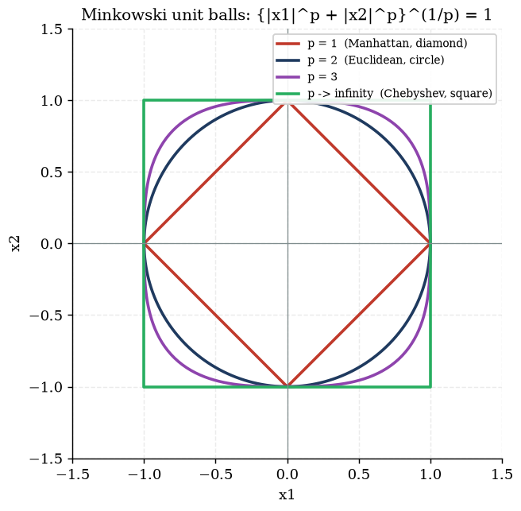
Ranking by Euclidean distance from nearest to farthest: H (0.500) < D (1.000) < E (1.118) < B (1.803) < C (2.236) = G (2.236) < F (2.500) < A (2.828). Manhattan and Minkowski-$p{=}3$ give the identical ranking on this dataset — that will not generally hold, but it does here because the eight points lie roughly along one diagonal band.
- $k{=}1$: nearest is H (Pass) → predict Pass.
- $k{=}3$: neighbours {H, D, E}, classes {Pass, Pass, Pass} → unanimous, predict Pass.
- $k{=}5$: neighbours {H, D, E, B, C}, classes {Pass, Pass, Pass, Fail, Fail} → 3–2, predict Pass.
- $k{=}6$: neighbours {H, D, E, B, C, G}, classes {Pass, Pass, Pass, Fail, Fail, Fail} → 3–3 tie.
argmax over
vote counts) will silently pick whichever class happens to be indexed first, which is an
arbitrary and undocumented tiebreak if you don't choose one on purpose.
8.5 Choosing $k$: the bias–variance dial
$k$ is the one hyperparameter KNN has, and it controls decision-boundary smoothness directly: small $k$ lets a single nearby point swing the prediction (low bias, high variance — the model can memorise training noise); large $k$ averages over a wide neighbourhood (high bias, low variance — in the limit $k=n$ every query gets the same answer, the global majority class, regardless of $\mathbf{x}_q$). This is the same bias–variance trade-off introduced in generalisation, just turned by a single knob instead of a regularisation strength.
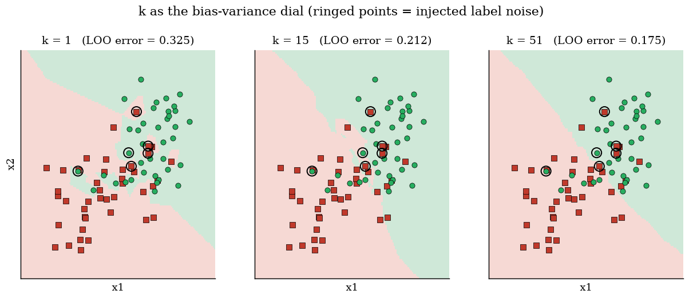

Code — KNN from scratch (numpy)
import numpy as np
def knn_predict(X_train, y_train, x_q, k=5, task="classification"):
"""Matches section 8.2's notation exactly:
d_i = dist(x_q, x_i) for i = 1..n -> d in R^n
N_k(x_q) = indices of the k smallest entries of d, |N_k| = k
y_hat = argmax_c sum_{i in N_k} 1[y_i = c] (classification)
y_hat = (1/k) sum_{i in N_k} y_i (regression)
"""
d = np.linalg.norm(X_train - x_q, axis=1) # broadcasts x_q (1,d) against X_train (n,d) -> d in R^n
nearest = np.argsort(d)[:k] # N_k(x_q)
if task == "classification":
values, counts = np.unique(y_train[nearest], return_counts=True)
return values[np.argmax(counts)] # arg max_c sum 1[y_i = c]
return y_train[nearest].mean() # (1/k) sum y_i
X_train = np.array([[1.0, 1.0], [1.5, 2.0], [3.0, 4.0], [4.5, 5.0]])
y_train = np.array([0, 0, 1, 1])
knn_predict(X_train, y_train, np.array([3.0, 3.0]), k=3)
np.argsort is $O(n\log n)$; for a single top-$k$ query np.argpartition(d, k)[:k] is $O(n)$ and is what production code should use once $k \ll n$ — sklearn's KD-tree/ball-tree implicitly do the equivalent pruning.
8.6 Complexity and the curse of dimensionality
"No training phase" is not free — the cost is simply moved to prediction time and paid on every single query:
- Fit: $O(1)$ beyond storing $\mathbf{X}\in\mathbb{R}^{n\times d}$ and $\mathbf{y}$ — there is nothing to optimise.
- Predict (brute force): $O(nd)$ to compute all $n$ distances to a $d$-dimensional query, plus $O(n\log k)$ (or $O(n)$ with a partial selection) to find the $k$ smallest. Repeated for every query point.
- Memory: $O(nd)$ — the entire training set must stay resident. This is why KNN is called a memory-based method: the "model size" grows linearly with the data, unlike a fixed-size weight vector.
Spatial index structures (KD-trees, ball trees) can cut average query cost toward $O(\log n)$ in low dimensions — but their advantage erodes as $d$ grows, because in high dimensions nearly every point ends up "on the boundary" of any partition, forcing the search to backtrack through most of the tree anyway. More fundamentally, as $d$ grows the ratio between the nearest and farthest neighbour distances tends toward 1: distances stop discriminating between "close" and "far" at all, so the entire premise of "the $k$ nearest points are meaningfully more relevant than the rest" weakens. This is the curse of dimensionality, covered in full with PCA as a mitigation in — KNN is simply the model where the curse bites first and most visibly, since it has no mechanism (no learned weights) to down-weight irrelevant dimensions on its own.
8.7 Practice
Practice 8.1 — classify with $k{=}5$ under Manhattan distance
Practice 8.2 — why does the $k{=}6$ tie happen, and how would you break it with distance weighting?
Practice 8.3 — a colleague standardises $x_1$ (hours) to a 0–1 range but forgets to rescale $x_2$ (tests, range 0–10). What breaks?
Practice 8.4 — using Fig. 8.4, why is $k{=}1$ a bad default even though it has zero "training error" by construction?
Practice 8.5 — is KNN a good fit for a dataset with 500 features and 200 training rows?
9 Probabilistic Learning: MLE, MAP, Naive Bayes, Bayes Nets & EM
§8's nearest-neighbour rule answered every query out of stored distances alone, never modelling how the data was generated in the first place. This section supplies that missing model: a hypothesis language made of probability distributions, following the separating hyperplanes of §2 and preceding the if–then trees of §10. The arc runs from the two estimation principles that turn raw counts into parameters — maximum likelihood, then MAP with a prior folded in — through the conditional-independence assumption that makes classification from many features tractable (Naive Bayes, in three flavours for three data types), out to directed graphs that keep only the independence assumptions a domain actually deserves (Bayesian networks), and finally to the algorithm that keeps estimation alive when part of the data is missing (EM).
9.1 The probability toolkit and Bayes’ theorem
Three identities carry the whole section. The product rule $P(A,B) = P(A\mid B)\,P(B)$; the sum rule (marginalisation) $P(A) = \sum_b P(A, B{=}b)$; and their child, Bayes’ theorem, which the handwritten notes introduce directly through the motivating question a spam filter asks — “is this email spam, given the words it contains?”
$$\boxed{\;P(A \mid B) \;=\; \frac{P(B \mid A)\, P(A)}{P(B)}\;}$$Each factor has a name and a job:
| Term | Name | Role |
|---|---|---|
| $P(A)$ | prior | belief in $A$ before seeing evidence $B$ |
| $P(B\mid A)$ | likelihood | how well $A$ explains the observed evidence |
| $P(A\mid B)$ | posterior | updated belief after the evidence — what we want |
| $P(B)$ | evidence | normaliser; identical across every candidate $A$, so it never affects an $\arg\max$ |
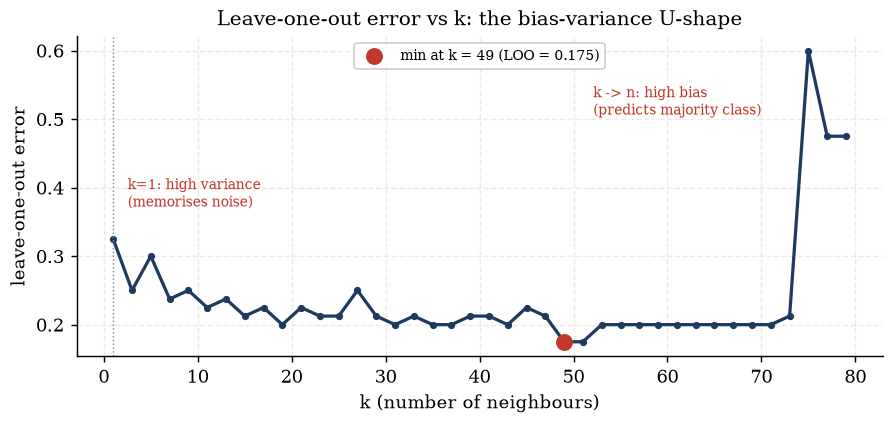
For classification the roles specialise: $A$ becomes a class label $C_k$, $B$ becomes a feature vector, and since the denominator $P(B)$ is the same for every candidate class, ranking classes by $P(C_k\mid B)$ is exactly ranking them by $P(B\mid C_k)\,P(C_k)$ — the normaliser can be dropped from the classification rule entirely.
9.2 Maximum likelihood — let the data vote
Estimating even a single probability is already a learning problem. A coin with unknown heads-probability $\theta$ produces the sequence $D = \text{HTHHT}$ — 3 heads, 2 tails. Maximum likelihood estimation (MLE) picks the $\theta$ under which the observed data is most probable:
$$L(\theta) = P(D \mid \theta) = \theta \cdot (1-\theta) \cdot \theta \cdot \theta \cdot (1-\theta) = \theta^{3}(1-\theta)^{2}$$independent tosses multiply.
$$\ell(\theta) = \ln L(\theta) = 3\ln\theta + 2\ln(1-\theta)$$the log turns the product into a sum and preserves the $\arg\max$.
$$\frac{d\ell}{d\theta} = \frac{3}{\theta} - \frac{2}{1-\theta} = 0 \;\;\Longrightarrow\;\; 3(1-\theta) = 2\theta \;\;\Longrightarrow\;\; \hat\theta_{MLE} = \frac{3}{5} = 0.6$$stationarity at the peak, then cross-multiply and solve.
The general pattern is identical for any Bernoulli count: with $n_H$ heads in $n_H + n_T$ tosses, $\hat\theta_{MLE} = \frac{n_H}{n_H+n_T}$ — the relative frequency. Every “count and divide” estimate in this section, and every $P(x_i\mid y)$ inside Naive Bayes below, is secretly this derivation. It is the same principle that trains logistic regression in §3, where maximising log-likelihood becomes minimising cross-entropy.
9.3 MAP — folding in a prior
Five tosses is thin evidence. Suppose earlier experience with this coin recorded $4$ heads and $6$ tails. Bayes’ theorem says the posterior should weigh both the new data and that memory: $P(\theta\mid D) \propto P(D\mid\theta)\,P(\theta)$. Encode the remembered tosses as a prior $P(\theta)\propto\theta^{4}(1-\theta)^{6}$ and maximise the posterior — the maximum a posteriori (MAP) estimate:
$$P(\theta\mid D) \;\propto\; \underbrace{\theta^{3}(1-\theta)^{2}}_{\text{likelihood}} \times \underbrace{\theta^{4}(1-\theta)^{6}}_{\text{prior}} \;=\; \theta^{7}(1-\theta)^{8}$$exponents add — old and new tosses pool into one Bernoulli problem.
$$\frac{d}{d\theta}\Big[7\ln\theta + 8\ln(1-\theta)\Big] = 0 \;\;\Longrightarrow\;\; \hat\theta_{MAP} = \frac{7}{15} \approx 0.467$$the MLE derivation again, run on the pooled counts $7$ and $8$.
$$\boxed{\;\hat\theta_{MAP} \;=\; \frac{n_H + \alpha_H}{n_H+\alpha_H+n_T+\alpha_T}\;}$$— relative frequency over real plus imaginary (“pseudo”) counts. The estimate lands between the prior’s mode ($\alpha_H/(\alpha_H+\alpha_T)=0.4$) and the MLE ($0.6$), pulled toward the prior because it carries more tosses ($10$ vs. $5$). As real data accumulates, $n_H,n_T$ swamp $\alpha_H,\alpha_T$ and MAP converges to MLE; with a uniform prior ($\alpha_H=\alpha_T=0$) the two coincide from the start.

The prior $\theta^{4}(1-\theta)^{6}$ is a $\text{Beta}(5,7)$ density in disguise — the conjugate prior of the Bernoulli, which is exactly why the posterior keeps the same functional shape with updated exponents. Adding one pseudo-count of each kind ($\alpha_H=\alpha_T=1$) is Laplace smoothing, which returns with a starring role in §9.5.
Practice 9.1 — MLE from ten product reviews
Data: 7 positive, 3 negative reviews, modelled as Bernoulli($\theta$) with $\theta = P(\text{positive})$.
$$\hat\theta_{MLE} = \frac{n_{pos}}{n_{pos}+n_{neg}} = \frac{7}{10} = 0.7$$Count and divide — the same one-line derivation as the coin, now with $7$ heads standing in for $7$ positive reviews.
Practice 9.2 — MAP with a skeptical prior
Using the same 7-positive/3-negative data, but now with a prior remembering a previous, less-loved product line: $2$ positive, $8$ negative pseudo-observations ($\alpha_H=2,\alpha_T=8$).
$$\hat\theta_{MAP} = \frac{n_{pos}+\alpha_H}{n_{pos}+\alpha_H+n_{neg}+\alpha_T} = \frac{7+2}{7+2+3+8} = \frac{9}{20} = 0.45$$The MAP estimate ($0.45$) sits well below the MLE ($0.70$) — a skeptical prior with as much pseudo-evidence ($10$ pseudo-reviews) as the real data ($10$ real reviews) pulls the estimate roughly halfway to its own mode ($0.2$). More real data would eventually swamp this prior exactly as in the coin example.
9.4 Naive Bayes — independence to the rescue
Back to classification. Bayes’ theorem says the best label for a feature vector $\mathbf{x}=(x_1,\ldots,x_N)$ is $\arg\max_y P(y\mid\mathbf{x}) = \arg\max_y P(\mathbf{x}\mid y)\,P(y)$ — but $P(\mathbf{x}\mid y)$ is a joint distribution over $N$ attributes, which without further assumptions needs $O(2^N)$ parameters per class. The naive assumption declares the features conditionally independent given the class:
$$P(x_1,\ldots,x_N \mid y) \;=\; \prod_{i=1}^{N} P(x_i \mid y)$$which collapses the classifier to
$$\boxed{\;\hat y \;=\; \arg\max_{y}\; P(y) \prod_{i=1}^{N} P(x_i \mid y)\;}$$matching the notes’ own summary $P(C_k\mid\mathbf{x}) \propto P(C_k)\prod_i P(x_i\mid C_k)$. For $N$ binary features and two classes this needs only $2N$ conditional parameters plus $1$ prior — $2N+1$ total, in place of the joint’s exponential bill. Each of those $2N+1$ numbers is a Bernoulli parameter estimated exactly as in §9.2/§9.3 — count and divide (MLE), or count with pseudo-counts and divide (MAP). The independence assumption is usually literally false — features do correlate — yet the classifier is startlingly robust in practice, because winning the $\arg\max$ only needs the class scores to be ranked correctly, not individually accurate as probabilities.
For binary features, Naive Bayes is secretly a linear classifier. Taking the log-odds of the two classes and letting the naive factorisation do its work:
$$\ln\frac{P(Y{=}1\mid\mathbf{x})}{P(Y{=}0\mid\mathbf{x})} = \ln\frac{P(Y{=}1)}{P(Y{=}0)} + \sum_{i=1}^{N}\ln\frac{P(x_i\mid Y{=}1)}{P(x_i\mid Y{=}0)}$$Bayes’ theorem applied twice; the shared evidence $P(\mathbf{x})$ cancels in the ratio.
$$P(x_i\mid y) = \theta_{iy}^{\,x_i}(1-\theta_{iy})^{1-x_i} \;\;\Longrightarrow\;\; \ln\frac{P(x_i\mid 1)}{P(x_i\mid 0)} = x_i\ln\frac{\theta_{i1}}{\theta_{i0}} + (1-x_i)\ln\frac{1-\theta_{i1}}{1-\theta_{i0}}$$write the Bernoulli conditional for both values of $x_i$ at once, then take logs.
$$\ln\frac{P(Y{=}1\mid\mathbf{x})}{P(Y{=}0\mid\mathbf{x})} = w_0 + \sum_i w_i x_i, \qquad w_i = \ln\frac{\theta_{i1}(1-\theta_{i0})}{\theta_{i0}(1-\theta_{i1})}$$collect the $x_i$-linear terms; every constant folds into $w_0$. Predict class $1$ when this log-odds is positive: $\operatorname{sign}(w_0+\mathbf{w}^\top\mathbf{x})$, with $\mathbf{w}\in\mathbb{R}^{N}$ and $\mathbf{x}\in\mathbb{R}^{N}$ (the intercept $w_0$ carried separately, or absorbed by augmenting both to $\mathbb{R}^{N+1}$) — the same hypothesis family as the perceptron of §2 and logistic regression of §3. The difference is the training route: logistic regression fits $\mathbf{w}$ discriminatively, maximising conditional likelihood directly; Naive Bayes obtains $\mathbf{w}$ generatively, as a by-product of fitting each class-conditional separately. Same boundary shape, different estimation philosophy.
9.5 Worked example — ten records, and the case for Laplace smoothing
A small dataset, ten records over binary features $x_1,x_2$ and class $Y$:
| record | 1 | 2 | 3 | 4 | 5 | 6 | 7 | 8 | 9 | 10 |
|---|---|---|---|---|---|---|---|---|---|---|
| $x_1$ | 1 | 1 | 1 | 1 | 0 | 0 | 1 | 0 | 0 | 0 |
| $x_2$ | 1 | 1 | 1 | 1 | 1 | 0 | 0 | 1 | 0 | 0 |
| $Y$ | 1 | 1 | 1 | 1 | 1 | 1 | 0 | 0 | 0 | 0 |
Count-and-divide gives the five parameters: $P(Y{=}1)=6/10$ and, restricted to each class, $P(x_1{=}1\mid1)=2/3$, $P(x_2{=}1\mid1)=5/6$, $P(x_1{=}1\mid0)=1/4$, $P(x_2{=}1\mid0)=1/4$. Classify the new instance $\mathbf{x}=(x_1{=}1,x_2{=}0)$:
$$\text{score}_1 = P(1)\,P(x_1{=}1\mid1)\,P(x_2{=}0\mid1) = \frac{6}{10}\cdot\frac{2}{3}\cdot\frac{1}{6} = 0.0667$$$P(x_2{=}0\mid1)=1-5/6$ — a thin one-in-six estimate.
$$\text{score}_0 = P(0)\,P(x_1{=}1\mid0)\,P(x_2{=}0\mid0) = \frac{4}{10}\cdot\frac{1}{4}\cdot\frac{3}{4} = 0.0750$$ $$P(Y{=}1\mid\mathbf{x}) = \frac{0.0667}{0.0667+0.0750} = 0.4706, \qquad P(Y{=}0\mid\mathbf{x}) = 0.5294$$normalise — predict $Y{=}0$, by a whisker.
Sparsity is doing the deciding. The whole verdict hinges on $P(x_2{=}0\mid Y{=}1)=1/6$ — a probability estimated from six examples, of which exactly one had $x_2{=}0$. Flip one training record and the prediction flips. Worse, a feature value never seen in a class gives a zero conditional, and one zero annihilates the entire product regardless of every other feature’s evidence. Thin counts demand MAP.
Apply the MAP fix — Laplace add-one pseudo-counts on every conditional ($\alpha=1$ per value, denominators grow by $2$):
$$P(x_1{=}1\mid1)=\frac{4+1}{6+2}=\frac{5}{8},\qquad P(x_2{=}0\mid1)=\frac{1+1}{6+2}=\frac{1}{4}$$the fragile $1/6$ becomes a steadier $1/4$.
$$P(x_1{=}1\mid0)=\frac{1+1}{4+2}=\frac{1}{3}, \qquad P(x_2{=}0\mid0)=\frac{3+1}{4+2}=\frac{2}{3}$$ $$\text{score}_1 = 0.6\cdot\frac{5}{8}\cdot\frac{1}{4} = 0.0938, \qquad \text{score}_0 = 0.4\cdot\frac{1}{3}\cdot\frac{2}{3} = 0.0889$$ $$P(Y{=}1\mid\mathbf{x}) = 0.5133$$the prediction flips to $Y=1$.
Smoothing flipped a $0.53$ verdict into a $0.51$ verdict the other way — proof of how little the unsmoothed answer was worth. Both runs agree on the honest conclusion: this instance is genuinely ambiguous, and a probability-speaking classifier should say so with calibrated numbers rather than manufacture confidence from one lucky (or unlucky) count.
Practice 9.3 — Naive Bayes with a zero count
Problem. A filter is trained on $8$ e-mails, $4$ spam and $4$ ham, over three binary features (discount, invoice, urgent). Training data:
| class | doc | discount | invoice | urgent |
|---|---|---|---|---|
| spam | 1 | 1 | 0 | 1 |
| 2 | 1 | 0 | 0 | |
| 3 | 1 | 0 | 1 | |
| 4 | 0 | 0 | 1 | |
| ham | 1 | 0 | 1 | 0 |
| 2 | 0 | 1 | 0 | |
| 3 | 1 | 1 | 0 | |
| 4 | 0 | 1 | 0 |
Classify $\mathbf{x}=(\text{discount}{=}1,\,\text{invoice}{=}1,\,\text{urgent}{=}0)$ with (a) raw MLE, (b) Laplace add-one smoothing (priors $1/2$ each throughout).
(a) invoice never appears in a spam email: $P(\text{invoice}{=}1\mid\text{spam}) = 0/4 = 0$.
$$\text{score}_{spam} = \tfrac12\cdot\tfrac34\cdot 0\cdot\tfrac14 = 0, \qquad \text{score}_{ham} = \tfrac12\cdot\tfrac14\cdot 1\cdot 1 = \tfrac18$$One unseen count annihilates the spam product outright — $P(\text{ham}\mid\mathbf{x})=1$, absolute certainty from an absence in four e-mails.
(b) Laplace smoothing, denominators $4+2=6$: $\theta_{spam}=(2/3,\,1/6,\,2/3)$, $\theta_{ham}=(1/3,\,5/6,\,1/6)$ — these are the presence probabilities $P(x_i{=}1\mid c)$, so the third factor of each score, where the query has $\text{urgent}{=}0$, is $1-\theta_{3c}$.
$$\text{score}_{spam} = \tfrac12\cdot\tfrac23\cdot\tfrac16\cdot\tfrac13 = \tfrac{1}{54}, \qquad \text{score}_{ham} = \tfrac12\cdot\tfrac13\cdot\tfrac56\cdot\tfrac56 = \tfrac{25}{216}$$ $$P(\text{spam}\mid\mathbf{x}) = 0.1379, \qquad P(\text{ham}\mid\mathbf{x}) = 0.8621$$The verdict (ham) does not flip this time, but it changes from manufactured certainty to an honest $86\%$–$14\%$ split — the same lesson as the worked example, seen from the other side: sometimes smoothing changes the answer, sometimes only its credibility, but it is never optional when any count could be zero.
9.6 Three flavours of Naive Bayes
The handwritten notes name three variants keyed to the data type of the features: Gaussian NB for continuous features, Multinomial NB “for word counts”, and Bernoulli NB for “binary features”. Each keeps the same $\arg\max_y P(y)\prod_i P(x_i\mid y)$ skeleton from §9.4 — only the per-feature likelihood $P(x_i\mid y)$ changes shape.
Gaussian Naive Bayes
Continuous features break the counting recipe — you cannot tabulate $P(\text{height}=185.0\mid y)$. Model each class-conditional as a one-dimensional Gaussian instead, one per feature per class:
$$x_i \mid c \sim \mathcal{N}(\mu_{ic},\sigma_{ic}^2), \qquad P(x_i\mid c) = \frac{1}{\sqrt{2\pi\sigma_{ic}^2}}\exp\!\left(-\frac{(x_i-\mu_{ic})^2}{2\sigma_{ic}^2}\right)$$with $\mu_{ic},\sigma_{ic}$ estimated by MLE — the sample mean and standard deviation of feature $i$ within class $c$ (exactly §9.2’s count-and-divide, continuous flavour). Independence keeps every Gaussian one-dimensional: $2$ parameters per feature per class.
Adjudicating a source ambiguity. The handwritten page writes the exponent’s numerator as $(x-\mu)^2$ with a plain $x$, while the left-hand side conditions on $x_i$. The standard and dimensionally-consistent form — used throughout this section — is $(x_i-\mu_{ic})^2$: the density is evaluated feature-by-feature, so the exponent must reference the same $x_i$ that appears on the left.
Setting: separate basketball players from the general population by height and weight. Fitting on $40$ players and $60$ others gives $\hat\mu_{player}=(197.5,96.0)$, $\hat\sigma_{player}=(6.0,7.5)$ and $\hat\mu_{pop}=(171.4,70.9)$, $\hat\sigma_{pop}=(7.3,10.0)$, with priors $0.4/0.6$. Classify a query at $(185,85)$ in the log domain (logs turn the product into a sum and dodge numerical underflow):
$$\ln s_{player} = \ln 0.4 + \ln\mathcal{N}(185;197.5,6.0^2) + \ln\mathcal{N}(85;96.0,7.5^2) = -9.8065$$ $$\ln s_{pop} = \ln 0.6 + \ln\mathcal{N}(185;171.4,7.3^2) + \ln\mathcal{N}(85;70.9,10.0^2) = -9.3686$$ $$P(\text{player}\mid\mathbf{x}) = \frac{e^{-9.8065}}{e^{-9.8065}+e^{-9.3686}} = 0.3922 \;\;\Longrightarrow\;\; \text{predict population}$$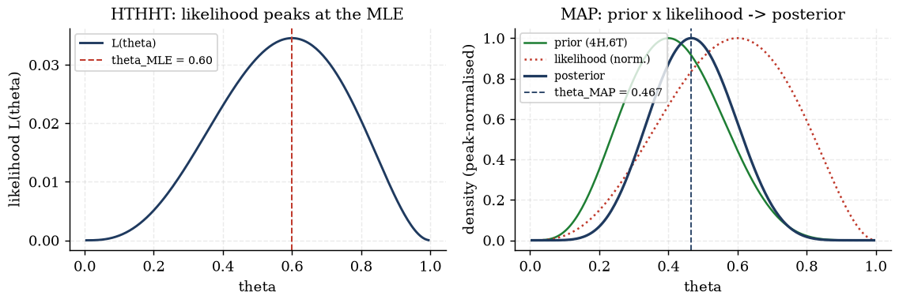
Interpretation. The boundary is quadratic in general and collapses to a straight line only when the two classes share their variances — the Gaussian cousin of §9.4’s log-linear result. This is a genuinely marginal case ($61\%$ vs. $39\%$), not a confident call; a classifier reporting only the hard label $\hat y=\text{population}$ would hide exactly the information a decision-maker needs.
Code — GaussianNB (sklearn)
from sklearn.naive_bayes import GaussianNB
from sklearn.datasets import make_classification
from sklearn.model_selection import train_test_split
X, y = make_classification(n_samples=200, n_features=2, n_informative=2, n_redundant=0, random_state=0)
X_train, X_test, y_train, y_test = train_test_split(X, y, test_size=0.3, random_state=0)
gnb = GaussianNB(var_smoothing=1e-9) # adds var_smoothing * max(var) to every sigma^2 --
# guards against division by zero when a feature is
# (near-)constant within a class
gnb.fit(X_train, y_train) # one MLE mean/std per feature per class, section 9.6
gnb.predict_proba(X_test) # posterior P(y|x), not just the hard label -- see above
predict_proba is the whole point of a generative classifier — always prefer it to predict when a call is marginal, exactly as the $61\%$/$39\%$ split above argues.
Multinomial Naive Bayes
For word-count features, model each class-conditional as a categorical distribution over the vocabulary, drawn once per word occurrence. With vocabulary $\{w_1,\ldots,w_V\}$ and per-class word-count totals, the Laplace-smoothed MLE for “probability of word $w_i$ under class $c$” is
$$\theta_{ic} = \frac{\text{count}(w_i, c) + 1}{\sum_j \text{count}(w_j, c) + V}, \qquad P(\mathbf{x}\mid c) \propto \prod_i \theta_{ic}^{\;x_i}$$where $x_i$ is now a count, not a $0/1$ indicator — the exponent, not a factor choice, is what makes this “multinomial” rather than Bernoulli. Smoothing is not optional here: with a vocabulary of any size, some word will be unseen in some class in finite training data, and Laplace’s $+1/+V$ is the default guard.
Worked example. Two classes, Sports and Politics, three training documents each, vocabulary $\{\text{goal},\text{election},\text{match},\text{vote}\}$. Word-count totals per class:
| class | goal | election | match | vote | total words |
|---|---|---|---|---|---|
| Sports | 9 | 1 | 6 | 0 | 16 |
| Politics | 1 | 9 | 1 | 7 | 18 |
With $V=4$: $\theta_{Sports} = (1/2,\,1/10,\,7/20,\,1/20)$, $\theta_{Politics}=(1/11,\,5/11,\,1/11,\,4/11)$, both priors $1/2$. Classify the test document “goal match goal” — counts $(2,0,1,0)$:
$$\ln P(\text{doc}\mid\text{Sports}) = \ln\tfrac12 + 2\ln\tfrac12 + 1\ln\tfrac{7}{20} = -3.1293$$ $$\ln P(\text{doc}\mid\text{Politics}) = \ln\tfrac12 + 2\ln\tfrac{1}{11} + 1\ln\tfrac{1}{11} = -7.8868$$Normalising the two log-likelihoods gives $P(\text{Sports}\mid\text{doc})=0.9915$ — correctly, and confidently, Sports. A document heavy in a word (“goal”) that is common in one class and rare in the other is exactly the regime multinomial NB is built for: the count exponent lets repeated evidence compound.
Code — MultinomialNB with Laplace alpha (sklearn)
from sklearn.naive_bayes import MultinomialNB
from sklearn.feature_extraction.text import CountVectorizer
docs = ["goal goal match", "election vote vote", "match goal", "vote election vote"]
labels = ["sports", "politics", "sports", "politics"]
vec = CountVectorizer() # x_i = raw word COUNT, not presence/absence -- what makes
# this "multinomial" rather than Bernoulli
X_counts = vec.fit_transform(docs) # fit_transform on train only; use vec.transform(...) at test time
mnb = MultinomialNB(alpha=1.0) # alpha=1.0 is exactly the +1/+V Laplace smoothing derived above
mnb.fit(X_counts, labels)
mnb.predict(vec.transform(["goal match goal"]))
alpha is a single knob for the Laplace smoothing worked above by hand; alpha=0 reproduces the raw MLE and will zero out any class that never saw a given word, exactly like the invoice/spam example in §9.5.
Bernoulli Naive Bayes
For binary presence/absence features — “does word $w_i$ appear anywhere in this document, yes or no” — each class-conditional is the Bernoulli likelihood already used throughout §9.4–9.5:
$$P(x_i\mid c) = \theta_{ic}^{\,x_i}(1-\theta_{ic})^{1-x_i}, \qquad \theta_{ic} = \frac{\text{count}(w_i\text{ present}, c) + 1}{n_c + 2}$$The crucial difference from Multinomial NB is not the smoothing (both need it) but what a $0$ means: Bernoulli explicitly penalises a class for a word’s absence (the $(1-\theta_{ic})^{1-x_i}$ factor fires whenever $x_i=0$), while Multinomial simply never scores an absent word at all. On short documents with many absent words this matters a great deal.
Worked example. Vocabulary $\{\text{offer},\text{meeting},\text{urgent}\}$, $4$ spam and $4$ ham training documents (presence/absence), priors $1/2$ each:
$$\theta_{spam} = \left(\tfrac23,\,\tfrac13,\,\tfrac23\right), \qquad \theta_{ham} = \left(\tfrac13,\,\tfrac23,\,\tfrac16\right)$$Query: offer present, meeting absent, urgent present — $\mathbf{x}=(1,0,1)$:
$$\text{score}_{spam} = \tfrac12\cdot\tfrac23\cdot\left(1-\tfrac13\right)\cdot\tfrac23 = \tfrac{4}{27} \approx 0.1481$$ $$\text{score}_{ham} = \tfrac12\cdot\tfrac13\cdot\left(1-\tfrac23\right)\cdot\tfrac16 = \tfrac{1}{108} \approx 0.0093$$ $$P(\text{spam}\mid\mathbf{x}) = 0.9412$$The absence of “meeting” is doing real work here: it is common in ham ($\theta_{ham,2}=2/3$) and rare in spam ($\theta_{spam,2}=1/3$), so its absence pushes the verdict toward spam exactly as the presence of “offer” and “urgent” do — a signal Multinomial NB, which never scores absent words, would not use.
Code — BernoulliNB with Laplace alpha (sklearn)
from sklearn.naive_bayes import BernoulliNB
X_bin = [[1, 0, 1], [0, 1, 0], [1, 0, 1], [0, 1, 1]] # presence/absence, matching this
y_bin = ["spam", "ham", "spam", "ham"] # section's query x=(1,0,1)
bnb = BernoulliNB(alpha=1.0, binarize=0.0) # binarize thresholds any non-binary input at 0.0
# before fitting; pass binarize=None if X_bin is
# already strictly 0/1
bnb.fit(X_bin, y_bin)
bnb.predict_proba([[1, 0, 1]])
binarize is the sklearn-specific gotcha: unlike MultinomialNB, BernoulliNB explicitly penalises an absent feature (the $(1-\theta_{ic})^{1-x_i}$ factor above), so feeding it raw counts without binarizing silently changes what the model estimates.
Which variant to reach for is a question about the feature columns, not the label:
Before reading the figure, ask of each feature column: does “number of times a word appears” belong on the left branch or the middle one?
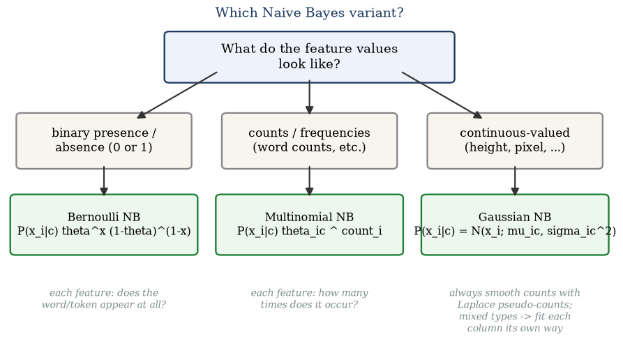
9.7 Bayesian networks — the assumptions the domain actually deserves
Naive Bayes made one sweeping independence assumption and bought a huge parameter saving. Drawn as a graph, it is a single fork: the class $Y$ points at every feature, and nothing else touches anything. Real domains have richer wiring — a storm causes rain and lightning; lightning causes thunder; two different things can cause the same effect. A Bayesian network captures exactly this with a directed acyclic graph (DAG): one node per variable, one edge per direct influence, and at each node a conditional probability table (CPT) giving $P(X_i\mid\text{Pa}(X_i))$ — the node’s distribution given its parents. The graph’s promise (the local Markov property: each node is independent of its non-descendants given its parents) collapses the chain rule to
$$\boxed{\;P(X_1,\ldots,X_n) \;=\; \prod_{i=1}^{n} P\big(X_i \mid \text{Pa}(X_i)\big)\;}$$Running example, six binary variables: a storm ($S$) breeds lightning ($L$) and rain ($R$); lightning brings thunder ($T$); rain brings water-logging ($W$); and a power cut ($P$) can be caused by lightning or a flooded substation — so $P$ has two parents.

For this graph the factorisation reads $P(S,L,R,T,W,P) = P(S)P(L\mid S)P(R\mid S)P(T\mid L)P(W\mid R)P(P\mid L,W)$. Any full assignment is now a six-term product read off the CPTs — the fully-stormy night, say:
$$P(S{=}1,L{=}1,R{=}1,T{=}1,W{=}1,P{=}1) = 0.2\times0.7\times0.8\times0.95\times0.6\times0.9 = 0.057456$$one CPT entry per node, parents already fixed; verified here by brute-force enumeration of all $2^6=64$ joint states, not just the single quoted product.
Parameter bill, node by node — each binary node needs one number per configuration of its parents ($2^{|\text{Pa}|}$ rows):
$$S: 1 \quad L{\mid}S: 2 \quad R{\mid}S: 2 \quad T{\mid}L: 2 \quad W{\mid}R: 2 \quad P{\mid}L,W: 4 \quad\Longrightarrow\quad \text{total} = 13$$against $2^6-1=63$ for the raw joint. Naive Bayes (maximal independence, $2N{+}1$ parameters, often too crude) and the full joint (no assumptions, unlearnable) bracket the trade; a Bayesian network is the dial in between, spending parameters exactly where the domain has genuine interactions.
Inference by enumeration
You hear thunder. Was there a storm? The network answers by marginalising out everything between the evidence and the query — here only lightning stands between $S$ and $T$:
$$P(T{=}1\mid S{=}1) = \sum_l P(T{=}1\mid l)\,P(l\mid S{=}1) = 0.7(0.95)+0.3(0.02) = 0.671$$ $$P(T{=}1\mid S{=}0) = 0.05(0.95)+0.95(0.02) = 0.0665, \qquad P(T{=}1) = 0.2(0.671)+0.8(0.0665) = 0.1874$$ $$P(S{=}1\mid T{=}1) = \frac{0.2\times0.671}{0.1874} = 0.716$$Bayes’ theorem — hearing thunder lifts belief in a storm from a $20\%$ prior to a $72\%$ posterior. Enumeration works on any network but costs exponential time in general (exact inference in Bayesian networks is NP-hard); practical systems lean on the structure (variable elimination, message passing) or approximate by sampling. For six nodes, brute force over $64$ states is the ground truth every number on this page is checked against.
Three shapes of dependence and d-separation
Every path in every network decomposes into three local shapes, each with its own independence signature:
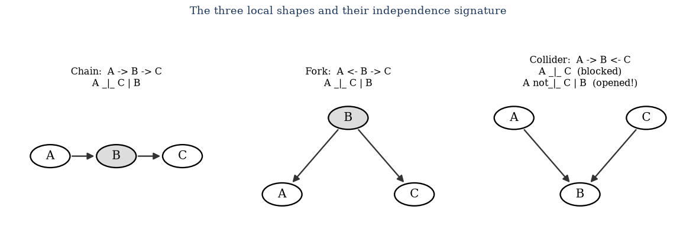
Chain $A\to B\to C$ (in the storm net: $S\to L\to T$). Factorisation $P(a,b,c)=P(a)P(b\mid a)P(c\mid b)$, so $P(a,c\mid b) = \frac{P(a)P(b\mid a)P(c\mid b)}{P(b)} = P(a\mid b)P(c\mid b)$ — product rule in reverse: $A\perp C\mid B$. Fork $A\leftarrow B\to C$ ($L\leftarrow S\to R$) gives the identical conclusion in one line: the common cause, once known, explains both effects, and their marginal correlation vanishes. Collider $A\to B\leftarrow C$ ($L\to P\leftarrow W$) inverts the rule — marginally the parents are independent ($P(a,c)=\sum_b P(a)P(c)P(b\mid a,c)=P(a)P(c)$, the CPT summing to $1$), but conditioning on $B$ creates dependence: lightning and water-logging are unrelated causes of a blackout, but once you know the power is out, learning it was flooding makes lightning less likely to be the culprit. The storm CPTs put numbers on this “explaining away”:
$$P(L{=}1\mid S{=}1,P{=}1,W{=}1) = \frac{0.7\times0.90}{0.7\times0.90+0.3\times0.30} = 0.875, \qquad P(L{=}1\mid S{=}1,P{=}1,W{=}0) = \frac{0.7\times0.60}{0.7\times0.60+0.3\times0.01} = 0.993$$the flood absorbs blame that would otherwise fall on lightning. The three rules compose into a single global test, d-separation: a path is blocked by the conditioning set $Z$ if it contains either (1) a chain or fork whose middle node is in $Z$, or (2) a collider whose middle node — and no descendant of it — is in $Z$. Then $X\perp Y\mid Z$ holds for every parametrisation of the CPTs iff every path from $X$ to $Y$ is blocked. Two checks on the storm net, both verified against the full $64$-state joint:
$$P(T{=}1,W{=}1) = 0.0684 \;\neq\; P(T{=}1)P(W{=}1) = 0.0284 \quad\Longrightarrow\quad T\not\perp W \;\text{(unconditionally — the fork at $S$ is open)}$$ $$P(T{=}1,W{=}1\mid S{=}1) = 0.3234 = P(T{=}1\mid S{=}1)\,P(W{=}1\mid S{=}1) \quad\Longrightarrow\quad T\perp W \mid S$$ $$P(T{=}1\mid S{=}1,P{=}1,W{=}1) = 0.834 \;\neq\; P(T{=}1\mid S{=}1,P{=}1,W{=}0) = 0.943 \quad\Longrightarrow\quad T\not\perp W \mid \{S,P\}$$the fork path $T\leftarrow L\leftarrow S\to R\to W$ blocks once $S$ is observed, but conditioning on the collider $P$ re-opens the second path $T\leftarrow L\to P\leftarrow W$ — dependence is resurrected exactly where naïve intuition says observing more should only ever cut correlations.
Colliders invert intuition, twice. Unobserved, a collider blocks its path even though every other shape transmits; observed — or with any observed descendant — it opens the path even though observation closes every other shape. Selection effects are this rule in the wild: condition on “admitted to the programme” (a collider of grades and interview skill) and the two become negatively correlated among admits, despite being independent in the population.
With complete data, learning a Bayesian network of known structure replays §9.2–9.3 row by row: every CPT entry $P(X_i{=}1\mid\text{Pa}{=}\mathbf{u})$ is a Bernoulli parameter, estimated by counting the records where the parents equal $\mathbf{u}$ and dividing (MLE), or with pseudo-counts when rows run thin (MAP) — thirteen small coin problems, in the storm net’s case. Learning the graph structure itself is a harder search problem outside this course’s scope.
Practice 9.4 — read the storm graph
Problem. (a) Is $L\perp R$ with nothing observed? (b) Is $L\perp R \mid S$? (c) Is $T\perp P \mid L$?
(a) The only path $L\leftarrow S\to R$ is a fork with its middle node $S$ unobserved — open, so dependent:
$$P(L{=}1,R{=}1) = 0.116 \;\neq\; P(L{=}1)P(R{=}1) = 0.0432$$(b) Conditioning on $S$ blocks that fork:
$$P(L{=}1,R{=}1\mid S{=}1) = 0.56 = P(L{=}1\mid S{=}1)\,P(R{=}1\mid S{=}1) \quad\Longrightarrow\quad L\perp R\mid S$$(c) The only path $T\leftarrow L\to P$ is a fork with middle node $L$ — observing $L$ blocks it directly, no collider involved:
$$P(T{=}1,P{=}1\mid L{=}1) = 0.6812 = P(T{=}1\mid L{=}1)\,P(P{=}1\mid L{=}1) \quad\Longrightarrow\quad T\perp P \mid L$$All three verdicts are the two non-collider shapes behaving exactly as advertised: dependence flows through an unobserved chain or fork, and is cut the moment its middle node is observed. The interesting exception — a path re-opening under conditioning — only ever happens at a collider, worked through numerically above for $L,P,W$.
9.8 When data is incomplete — the EM algorithm
Three data situations, three estimation stories:
| Situation | Example | Estimator |
|---|---|---|
| Complete data | every record fully filled | plain MLE / MAP — count and divide |
| Missing values | a sensor dropped one reading | EM: fill blanks with expectations, re-estimate, repeat |
| Hidden (latent) variables | mixture membership, cluster labels — never observed | EM is the only game in town |
The Expectation–Maximisation loop, in its general form: holding the current parameters $\theta_t$ fixed, the E-step replaces every unobserved quantity by its conditional expectation given the observed data and $\theta_t$; the M-step re-fits $\theta_{t+1}$ by ordinary MLE on the completed dataset. Alternate until nothing moves. Each full cycle can only increase (never decrease) the observed-data likelihood, so EM always converges — though possibly to a local optimum, and never with a guarantee of finding the global one.
Smallest possible instance: five samples $S_1,\ldots,S_5$ share a mean parameter $\mu$; four are observed — $0.7,0.8,0.9,1.0$ (sum $3.4$) — and $S_5$ is missing. Initialise $\mu_0=0.6$:
$$\text{E:}\;\; \mathbb{E}[S_5] = \mu_0 = 0.6 \qquad\qquad \text{M:}\;\; \mu_1 = \frac{0.7+0.8+0.9+1.0+0.6}{5} = \frac{3.4+0.6}{5} = 0.8$$the best guess for a missing draw is the current mean; then re-fit by MLE on the completed data.
$$\mu_2 = \frac{3.4+0.8}{5} = 0.84, \quad \mu_3 = 0.848, \quad \mu_4 = 0.8496, \; \ldots$$each cycle closes $4/5$ of the remaining gap to the fixed point, leaving a factor $1/5$ — geometric convergence with ratio $1/5$.
$$\mu^{\ast} = \frac{3.4+\mu^{\ast}}{5} \;\;\Longrightarrow\;\; 5\mu^{\ast} = 3.4+\mu^{\ast} \;\;\Longrightarrow\;\; \mu^{\ast} = \frac{3.4}{4} = 0.85$$the fixed point is exactly the mean of the observed data.
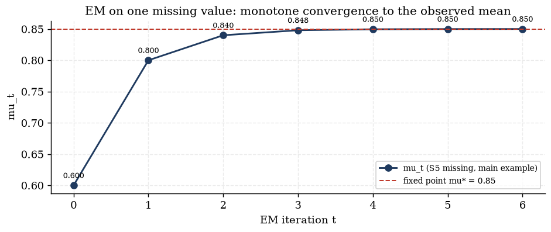
For this one-parameter problem EM’s answer equals simply ignoring the missing point — reassuring, not impressive. The algorithm earns its keep when hidden values and parameters are entangled: estimating a CPT whose parent column has blanks, or fitting a Gaussian mixture — which is exactly Gaussian Naive Bayes from §9.6 with the class labels deleted. There the E-step assigns each point soft cluster memberships and the M-step re-fits each Gaussian; harden the memberships to $0/1$ and the loop becomes k-means. The full GMM E/M-step derivation, soft-assignment numerics, and k-means-as-EM connection are worked in §20 — this section only establishes the general two-step loop and its convergence guarantee.
Practice 9.5 — run EM one more round, on different data
Problem. Three samples share a mean $\mu$: observed values $2.0, 2.4, 3.0$ (sum $7.4$), one value $S_4$ missing, $\mu_0=1.0$. Iterate EM to convergence and give the closed-form fixed point.
$$\mu_1 = \frac{7.4+1.0}{4} = 2.1, \quad \mu_2 = \frac{7.4+2.1}{4} = 2.375, \quad \mu_3 = 2.4438, \quad \mu_4 = 2.4609, \; \ldots$$ $$\mu^\ast = \frac{7.4+\mu^\ast}{4} \;\;\Longrightarrow\;\; \mu^\ast = \frac{7.4}{3} = 2.4667$$Same shape as the main example, different numbers: each iterate leaves a factor $1/4$ of the remaining gap — one fewer observed point means a larger retained fraction ($1/4 > 1/5$) and therefore slightly slower convergence than the four-observed case — and the fixed point is again exactly the mean of the three observed values — ignoring the missing sample would have given the identical answer immediately, which is precisely the "reassuring, not impressive" character of single-parameter EM noted above.
Interpretation — the throughline. Every estimate in this section is “count and divide,” possibly with pseudo-counts (MLE $\to$ MAP), possibly re-run inside an outer loop that first guesses the missing counts (MAP $\to$ EM). Naive Bayes and Bayesian networks are both applications of the same idea at a different granularity: Naive Bayes assumes maximal conditional independence and needs $O(N)$ parameters; a Bayesian network keeps only the dependencies the domain actually has; the full joint keeps everything and is unlearnable past a handful of variables. Recap:
| Tool | What it estimates | Key formula |
|---|---|---|
| MLE | a single parameter from counts | $\hat\theta = n_H/(n_H+n_T)$ |
| MAP | a parameter with prior belief | $\hat\theta = (n_H+\alpha_H)/(n_H+\alpha_H+n_T+\alpha_T)$ |
| Naive Bayes | a class label from independent features | $\arg\max_y P(y)\prod_i P(x_i\mid y)$ |
| Bayesian network | a joint over structured, dependent variables | $\prod_i P(X_i\mid\text{Pa}(X_i))$ |
| EM | parameters when data or labels are partly hidden | E: fill in expectations; M: re-fit by MLE |
What breaks each tool: MLE/MAP with thin counts gives fragile or absurd (zero-probability) estimates — §9.5’s whole point. Naive Bayes’ independence assumption is routinely false, yet it survives because only the class ranking needs to be right. A Bayesian network is only as good as its graph — a missing edge silently claims an independence that may not hold. EM converges reliably but only to a local optimum, and its answer is only as trustworthy as the model family (Gaussian, Bernoulli, …) chosen for the E-step.
9.9 Practice
Practice 9.6 — from log-odds back to weights
Problem. A Bernoulli-feature Naive Bayes classifier has (after Laplace smoothing) $\theta_{i1}=0.8$, $\theta_{i0}=0.2$ for one feature $x_i$. What is that feature’s contribution $w_i$ to the log-linear form of §9.4, and which way does $x_i{=}1$ push the log-odds?
$$w_i = \ln\frac{\theta_{i1}(1-\theta_{i0})}{\theta_{i0}(1-\theta_{i1})} = \ln\frac{0.8\times0.8}{0.2\times0.2} = \ln 16 \approx 2.773$$A strongly positive $w_i$: this feature being present ($x_i=1$) adds $+2.773$ to the log-odds of class $1$, a large push, because it is four times more likely under class $1$ than class $0$ in both directions ($\theta_{i1}/\theta_{i0}=4$ and $(1-\theta_{i0})/(1-\theta_{i1})=4$). This is the general shape: a feature that is symmetric evidence (equally informative whether present or absent) contributes a large-magnitude, single-sign weight regardless of which class it favours — exactly how the naive Bayes generative fit becomes a discriminative-looking linear score.
10 Decision Trees: ID3 to CART & Pruning
Trees are the third hypothesis language of this course: after tilted hyperplanes (§2) and probability tables (§9), a cascade of if–then questions. This section builds the classical machinery — entropy and Gini impurity, information gain, the ID3 greedy-growth recursion, gain ratio's fix for many-valued attributes, continuous-attribute thresholds, and missing-value routing — then goes past what a single-figure overview usually covers: pre- versus post-pruning as two different hyperparameter levers, CART's cost-complexity ("weakest-link") pruning with a fully worked $\alpha$-path, regression trees scored by MSE instead of impurity, and the concrete scikit-learn parameter surface. Bagging, random forests and boosted trees — the ensembles built from these trees — are §11–§13.
10.1 From geometric to symbolic hypotheses
A decision tree classifies (or regresses) by interrogation: each internal node tests one attribute, each branch answers the test, each leaf declares an output. A root-to-leaf path is a conjunction of conditions, so a tree carves the feature space into axis-parallel boxes — unlike the tilted decision boundary of a linear model. The hypothesis set $\mathcal{H}$ is the set of all finite trees over the available attributes: enormous, and typically containing many trees that fit the training data perfectly. Since finding the smallest tree consistent with the data is computationally intractable, every classical algorithm below settles for a greedy strategy — pick the single best attribute for the current node, split, recurse, never backtrack — and the entire section is about what "best" should mean and how to stop before greed memorises noise.
10.2 Impurity measures: entropy and Gini
For a node holding a sample set $S$ with class proportions $p_1,\ldots,p_C$, two competing scores of "how mixed is this node":
$$\text{Entropy: } \; E(S) = -\sum_{c=1}^{C} p_c \log_2 p_c \;\;[\text{bits}] \qquad\qquad \text{Gini: } \; G(S) = 1 - \sum_{c=1}^{C} p_c^2$$Entropy is the expected number of yes/no questions to pin down a random member's class; Gini is the probability that two independent draws from the node disagree in class (equivalently, the error rate of guessing a random member's label by a random draw from the node's own distribution). Both are $0$ exactly when the node is pure and maximal when the classes are uniform ($\log_2 C$ for entropy, $1-\tfrac1C$ for Gini); both are concave. For two classes, $G = 2p(1-p)$ — a parabola with the same endpoints and peak location as entropy's curve, but no logarithm, so it is cheaper to evaluate and slightly gentler in the tails.

10.3 Information gain — scoring a split
Splitting $S$ on attribute $A$ with values $v$ produces children $S_v$. The split's quality is the expected drop in entropy:
$$\boxed{\;IG(S,A) \;=\; E(S) \;-\; \underbrace{\sum_v \frac{|S_v|}{|S|}\,E(S_v)}_{E(S\mid A)}\;}$$The weights $|S_v|/|S|$ are not decoration: $E(S\mid A)$ is a conditional expectation, and a child counts in proportion to how much data lands there — skip the weights and a tiny pure branch can masquerade as a huge gain (see the .warn box below). Worked on a $20$-example root ($8{+}, 12{-}$) with candidate attributes $W$ and $A$:
Root. $p_+ = 8/20 = 0.4$, $p_- = 12/20 = 0.6$, so $E(S) = -0.4\log_2 0.4 - 0.6\log_2 0.6 = 0.9710$ bits — close to the $1$-bit maximum, since the node is nearly balanced.
Split on $W$ — children $\{6{+},4{-}\}$ and $\{2{+},8{-}\}$, ten examples each:
$$E(S_{\text{yes}}) = H(0.6, 0.4) = 0.9710, \qquad E(S_{\text{no}}) = H(0.2, 0.8) = 0.7219$$ $$E(S\mid W) = \tfrac{10}{20}(0.9710) + \tfrac{10}{20}(0.7219) = 0.8464 \;\Rightarrow\; IG_W = 0.9710 - 0.8464 = 0.1245$$Split on $A$ — children $\{4{+},0{-}\}$ (pure) and $\{4{+},12{-}\}$:
$$E(S_{v_1}) = H(1,0) = 0, \qquad E(S_{v_2}) = H(0.25, 0.75) = 0.8113$$ $$E(S\mid A) = \tfrac{4}{20}(0) + \tfrac{16}{20}(0.8113) = 0.6490 \;\Rightarrow\; IG_A = 0.9710 - 0.6490 = 0.3219$$$IG_A$ is more than double $IG_W$, so ID3 roots on $A$.
Adjudication — the class notes get this one wrong. The class notes report $IG_A = 0.1598$ for this split. That number is $0.9710 - 0.8113$: the parent entropy minus the mixed child's raw entropy, i.e. the $4/20$ vs $16/20$ weights were skipped (recomputing that unweighted difference exactly gives $0.1597$ , so $0.1598$ is that same mistake plus rounding). The correct, weighted value is $IG_A = 0.3219$ — just over double the unweighted number, and the value used everywhere in this section. (The same source also rounds the $W$ split to $0.8457/0.1253$; the exact figures are $0.8464/0.1245$.) The ranking ($A$ beats $W$) survives either way here, but the margin does not, and on other datasets the unweighted shortcut can flip which attribute wins. Weighting by $|S_v|/|S|$ is part of the definition of a conditional expectation, not an optional refinement.
10.4 Gini index — the CART alternative
CART uses Gini gain, $\Delta G(S,A) = G(S) - \sum_v \tfrac{|S_v|}{|S|}\,G(S_v)$, in place of $IG$. On the same two splits, with $G(S) = 1 - (0.4^2+0.6^2) = 0.48$:
| Split | Children $G(S_v)$ | Weighted $\sum_v \tfrac{n_v}{n}G(S_v)$ | $\Delta G$ |
|---|---|---|---|
| $W$ | $0.48$ and $0.32$ | $0.40$ | $0.08$ |
| $A$ | $0$ (pure) and $0.375$ | $0.30$ | $0.18$ |
Gini agrees with entropy here — $A$ wins by a wide margin under both criteria. They do not always agree, as §10.6 shows.
10.5 Gain ratio — taming many-valued splits
Raw $IG$ has a failure mode: it favours attributes with many values. An ID-like attribute that assigns every one of the $20$ examples its own singleton, trivially-pure child gets $E(S\mid \text{ID}) = 0$, so $IG(\text{ID}) = E(S) = 0.9710$ — the theoretical maximum — while having learned nothing generalisable. C4.5's fix normalises by the entropy of the partition itself:
$$SI(A) = -\sum_v \frac{|S_v|}{|S|}\log_2\frac{|S_v|}{|S|}, \qquad GR(A) = \frac{IG(S,A)}{SI(A)}$$Twenty branches are expensive to buy: dividing by $SI(\text{ID})$ collapses the fake winner from $0.9710$ to $0.2247$, well below $A$'s $0.4459$, restoring $A$ as the honest choice. CART sidesteps the whole issue differently — it only ever makes binary splits, so no attribute can buy gain purely by fragmenting the data into many pieces.
10.6 When IG and Gini disagree
Entropy and Gini rank most splits identically, but not all. Consider a $30$-example node over three classes, $[10,10,10]$, so $E(S) = \log_2 3 = 1.585$ and $G(S) = 1 - 3(\tfrac13)^2 = 0.667$. Two candidate splits:
| Split | Child | Counts | $n$ | $H$ | $G$ |
|---|---|---|---|---|---|
| $A$ (3-way) | $A_1,A_2,A_3$ | $[6,2,2]$ (each, up to relabelling) | $10$ | $1.371$ | $0.560$ |
| $B$ (2-way) | $B_1$ | $[7,2,1]$ | $10$ | $1.157$ | $0.460$ |
| $B_2$ | $[3,8,9]$ | $20$ | $1.458$ | $0.615$ |
Entropy prefers $B$ ($0.2276 > 0.2140$, driven by $B_1$'s near-purity); Gini prefers $A$ ($0.1067 > 0.1033$, treating three uniformly-improved children as more valuable).
The logarithm in entropy punishes small class probabilities harshly, so it rewards $B_1$'s $70\%$-one-class near-purity more than Gini's quadratic does; Gini, gentler in the tails, prefers $A$'s three evenly-improved children. Neither criterion is "right" — both are one-step greedy proxies for the quality of the eventual tree, and where they disagree, ID3/C4.5 and CART simply grow different trees from the same data.
10.7 The ID3 recursion
ID3 grows a tree by repeating the root decision at every node:
- If every example at the node shares one class, emit a leaf with that class.
- If no attributes remain, emit a leaf with the node's majority class.
- Otherwise split on $A^\star = \arg\max_A IG(S,A)$ (or $\Delta G$ for CART), create one child per value of $A^\star$, and recurse on each child.
Because entropy is concave and the parent's class distribution is exactly the $|S_v|/|S|$-weighted mixture of the children's distributions, Jensen's inequality gives $IG(S,A) \ge 0$ always — splitting can never increase expected impurity; the worst an attribute can do is teach nothing.
10.8 Continuous attributes — where to cut
A numeric attribute must become a binary test $x \le t$. Fayyad's result: the $IG$-maximising cut always lies at a midpoint between adjacent examples with different classes, so only those "class-boundary" midpoints need checking. Sorted temperatures with their labels:
| Temperature | 40 | 48 | 60 | 72 | 80 | 90 |
|---|---|---|---|---|---|---|
| PlayTennis | No | No | Yes | Yes | Yes | No |
Labels flip only between $48/60$ and $80/90$, so only $t=54$ and $t=85$ are candidate class-boundary cuts; the interior points $t=66$ and $t=76$ are shown for contrast. With $E(S) = H(0.5,0.5) = 1$:
The maximum sits exactly at the class boundary $t=54$; the non-boundary midpoint $t=76$ is worthless, as the theorem promises. Unlike a categorical attribute, a numeric one is not "used up" — it may be re-split deeper in the tree with a different threshold.
10.9 Missing attribute values
C4.5's answer to an incomplete example at a node: don't impute — send it down every branch with fractional weight $|S_v|/|S_{\text{known}}|$. If known examples route $3$ left and $2$ right at some node, an example missing that attribute flows down both sides:
$$w_{\text{left}} = 3/5 = 0.6, \qquad w_{\text{right}} = 2/5 = 0.4$$and the leaf verdicts are combined in those proportions; the same fractional trick lets entropy and $IG$ be scored during training even when some examples are only $0.6$ present at a node.
10.10 Pre-pruning vs. post-pruning
Pruning removes branches that don't improve generalisation — the direct countermeasure to a tree that keeps splitting until $E_{\text{in}}=0$ by memorising noise. hand p05 draws the two families as a branching diagram; the terms map onto the restriction/preference-bias split introduced in §10.15:
| Pre-pruning | Post-pruning | |
|---|---|---|
| Mechanism | Stop growing before the tree becomes large | Grow the entire tree, then remove unnecessary branches |
| Bias lever | Restriction bias — shrinks $\mathcal{H}$ by construction | Preference bias — searches complete $\mathcal{H}$, then discards |
| Controls (sklearn) | max_depth, min_samples_split, min_samples_leaf, max_leaf_nodes | CART cost-complexity pruning via ccp_alpha (§10.11) |
| Risk | May stop before a genuinely useful split is found ("horizon effect") | More expensive — the full tree must be grown first |
Reduced-error pruning — hold out validation data, grow the full tree, then greedily collapse any subtree whose validation error exceeds that of voting the subtree's training-majority class — is the simplest post-pruning recipe and generalises directly to the worked practice at the end of this section. CART's specific post-pruning method, cost-complexity pruning, is the subject of §10.11.
10.11 Cost-complexity pruning: ccp_alpha
CART post-prunes by trading off fit against size with one explicit knob $\alpha \ge 0$:
$$\boxed{\;R_\alpha(T) \;=\; R(T) \;+\; \alpha\,|T|\;}$$where $R(T)$ is the tree's training error (weighted impurity, summed leaf-by-leaf) and $|T|$ is its number of leaves — the "cost" of complexity, one $\alpha$ per leaf. At $\alpha = 0$ the fully-grown tree always wins (more leaves can only reduce $R(T)$, or leave it unchanged); as $\alpha \to \infty$ the single-node tree wins. CART's weakest-link algorithm finds the entire nested sequence of optimal subtrees $T_0 \supset T_1 \supset \cdots \supset T_n$ (root only) by repeatedly collapsing whichever internal node has the smallest "effective $\alpha$" — the value at which collapsing that node first stops hurting $R_\alpha$ — producing a finite increasing sequence of breakpoints $0=\alpha_0 < \alpha_1 < \cdots < \alpha_n$, one subtree per interval. hand p05 states the formula but works no numbers; the walkthrough below supplies them on a noisy $240$-point toy binary-classification set (moons shape, $65/35$ train/test split), grown to a full tree and then pruned along its real scikit-learn cost_complexity_pruning_path.
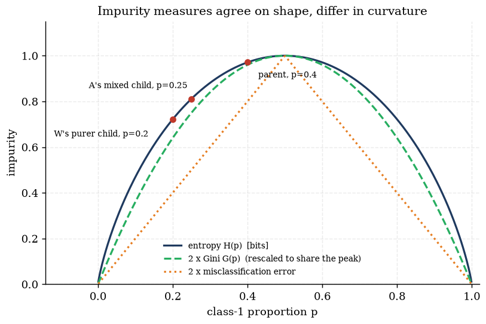
Reading the path. The full tree has $22$ leaves, depth $9$, train accuracy $1.000$ but test accuracy only $0.857$ — a classic overfit. A sample of the $\alpha$-path:
| $\alpha$ | leaves $|T|$ | depth | train acc. | test acc. |
|---|---|---|---|---|
| $0.0000$ | $22$ | $9$ | $1.000$ | $0.857$ |
| $0.0078$ | $13$ | $9$ | $0.968$ | $0.881$ |
| $0.0090$ | $10$ | $6$ | $0.942$ | $0.905$ |
| $0.0206$ | $3$ | $2$ | $0.891$ | $0.881$ |
| $0.2145$ | $1$ | $0$ | $0.500$ | $0.500$ |
Test accuracy peaks at $\alpha^\star \approx 0.0090$, a $10$-leaf, depth-$6$ tree scoring $0.905$ — better than the unpruned $22$-leaf tree's $0.857$ despite (in fact, because of) having less than half the leaves.
The defining crossover property. At every breakpoint $\alpha_{i+1}$ of the path, the two adjacent subtrees $T_i$ (more leaves) and $T_{i+1}$ (fewer) satisfy $R_{\alpha_{i+1}}(T_i) = R_{\alpha_{i+1}}(T_{i+1})$ exactly — that equality is how the breakpoints are found (the smallest $\alpha$ at which a smaller tree stops costing more). Checking it directly on the fitted sequence: at $\alpha = 0.0090$, $R_\alpha(T_4) = R_\alpha(T_5) = 0.1762$ to four decimals , confirming the sequence is a genuine cost-complexity optimum, not just a plausible-looking staircase.
Code — cost_complexity_pruning_path with DecisionTreeClassifier (sklearn)
from sklearn.tree import DecisionTreeClassifier
from sklearn.datasets import make_moons
from sklearn.model_selection import train_test_split
X, y = make_moons(n_samples=240, noise=0.3, random_state=0)
X_train, X_test, y_train, y_test = train_test_split(X, y, test_size=0.35, random_state=0)
full_tree = DecisionTreeClassifier(random_state=0) # no pre-pruning caps -- grow to purity first
path = full_tree.cost_complexity_pruning_path(X_train, y_train)
ccp_alphas, impurities = path.ccp_alphas, path.impurities # the alpha_0 < alpha_1 < ... breakpoints
# fit one tree per candidate alpha, then pick by held-out score -- never by ccp_alphas[-1]
# blindly, since the largest alpha always collapses to the trivial single-node tree
trees = [DecisionTreeClassifier(random_state=0, ccp_alpha=a).fit(X_train, y_train) for a in ccp_alphas]
test_scores = [t.score(X_test, y_test) for t in trees]
best_alpha = ccp_alphas[max(range(len(trees)), key=lambda i: test_scores[i])]
cost_complexity_pruning_path runs the exact weakest-link algorithm of §10.11, not an approximation — always sweep ccp_alphas and pick by cross-validated score, never by eyeballing tree size.
10.12 Regression trees
For a numeric target, impurity is replaced by within-node variance, and the split criterion becomes the drop in mean squared error:
$$\text{MSE}(S) = \frac1{|S|}\sum_{i \in S}(y_i - \bar y_S)^2, \qquad \text{Gain} = \text{MSE}(P) - \left[\frac{n_L}{n_P}\text{MSE}(L) + \frac{n_R}{n_P}\text{MSE}(R)\right]$$and a leaf's prediction is the mean of the $y$-values that land in it — the $L_2$-optimal constant predictor for that subset (the same $\arg\min_c \sum(y_i-c)^2 \Rightarrow c=\bar y$ result used for the bias–variance-optimal centroid in §19's k-means).
Source-typo adjudication. hand p05 writes the leaf rule as "Final output $\to$ Arg of the values of that node." Arg is not a word that parses here (there is no accompanying $\arg\max$/$\arg\min$ target); the intended word is almost certainly Avg — "average" — consistent with the page's own root prediction $\bar y = \sum y_i / n = 8$ two lines above, and with every worked leaf value below. We use "average" throughout.
hand p05's worked example, six employees by years of experience (Exp) and salary in LPA:
| Employee | A | B | C | D | E | F |
|---|---|---|---|---|---|---|
| Exp | 1 | 2 | 3 | 6 | 7 | 8 |
| Salary | 3 | 4 | 5 | 11 | 12 | 13 |
Root. $\bar y = (3{+}4{+}5{+}11{+}12{+}13)/6 = 8.00$; $\text{MSE}(P) = \tfrac16\big[(3{-}8)^2{+}(4{-}8)^2{+}(5{-}8)^2{+}(11{-}8)^2{+}(12{-}8)^2{+}(13{-}8)^2\big] = \tfrac{100}{6} = 16.67$.
Candidate splits. hand p05 lists five candidate thresholds on Exp ($1.5,2.5,4.5,6.5,7.5$, i.e. midpoints between sorted values) but evaluates the weighted MSE only for the underlined winner, $4.5$ — a [DERIVATION GAP] in the source. Filling it in for all five:
| $t$ | Left set | MSE(L) | Right set | MSE(R) | Wt. MSE | Gain |
|---|---|---|---|---|---|---|
| $1.5$ | $\{3\}$ | $0.00$ | $\{4,5,11,12,13\}$ | $14.00$ | $11.67$ | $5.00$ |
| $2.5$ | $\{3,4\}$ | $0.25$ | $\{5,11,12,13\}$ | $9.69$ | $6.54$ | $10.13$ |
| $4.5$ | $\{3,4,5\}$ | $0.67$ | $\{11,12,13\}$ | $0.67$ | $0.67$ | $16.00$ |
| $6.5$ | $\{3,4,5,11\}$ | $9.69$ | $\{12,13\}$ | $0.25$ | $6.54$ | $10.13$ |
| $7.5$ | $\{3,4,5,11,12\}$ | $14.00$ | $\{13\}$ | $0.00$ | $11.67$ | $5.00$ |
$t=4.5$ wins by a wide margin — its Gain of $16.00$ is more than $50\%$ higher than either neighbour, because $4.5$ is the only threshold that separates the "junior" cluster ($3,4,5$) from the "senior" cluster ($11,12,13$) cleanly, leaving both children with almost no internal spread.
Arithmetic behind the winning split's Left MSE (the source states $0.67$ without showing the sum): $\bar y_L = (3{+}4{+}5)/3 = 4.00$, deviations squared $(3{-}4)^2, (4{-}4)^2, (5{-}4)^2 = 1, 0, 1$, so $\text{MSE}(L) = 2/3 = 0.67$. By the mirror-image arithmetic, $\text{MSE}(R) = 0.67$ too.
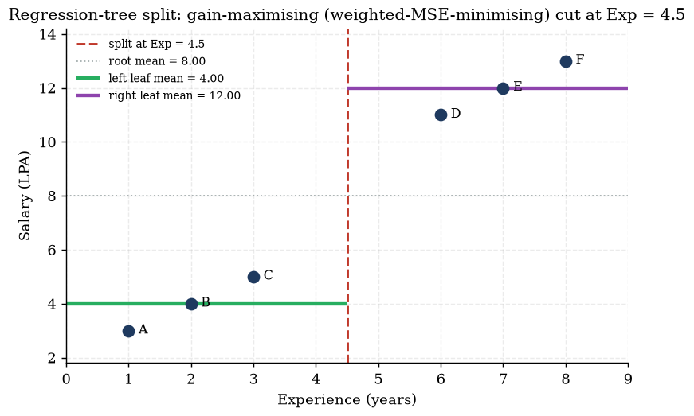
Code — DecisionTreeRegressor and export_text (sklearn)
from sklearn.tree import DecisionTreeRegressor, export_text
import numpy as np
Exp = np.array([[1], [2], [3], [6], [7], [8]])
Salary = np.array([3, 4, 5, 11, 12, 13])
reg = DecisionTreeRegressor(criterion="squared_error", max_depth=2, random_state=0) # squared_error = MSE, sec 10.12
reg.fit(Exp, Salary)
print(export_text(reg, feature_names=["Exp"])) # prints the exact threshold/leaf structure -- the
# fast way to sanity-check a fitted tree against a
# hand-worked split table like this section's
export_text is the quickest interview move for eyeballing a small tree's actual splits without matplotlib — compare its printed threshold directly against a hand-derived MSE-gain table.
10.13 ID3 vs. C4.5 vs. CART
| ID3 (Quinlan '86) | C4.5 (Quinlan '93) | CART (Breiman '84) | |
|---|---|---|---|
| Split criterion | information gain | gain ratio | Gini (classification), MSE (regression) |
| Split arity | multi-way | multi-way | strictly binary |
| Continuous attributes | no (needs pre-binning) | yes, threshold search | yes, threshold search |
| Missing values | no | fractional weights (§10.9) | surrogate splits |
| Pruning | none | rule post-pruning | cost-complexity, ccp_alpha (§10.11) |
| Tasks | classification | classification | classification and regression |
scikit-learn's DecisionTree* classes are CART implementations — binary splits, no native categorical handling, ccp_alpha pruning — which is why §10.14's parameter surface only ever describes binary trees.
10.14 scikit-learn hyperparameters
hand p05's sklearn branch diagram, filled out:
| Estimator | Splitting criteria (criterion) | Other |
|---|---|---|
DecisionTreeClassifier | 'gini', 'entropy', 'log_loss' | pruning hyperparams shared: max_depth, min_samples_split, min_samples_leaf, max_leaf_nodes (pre-pruning); ccp_alpha (post-pruning); splitter $\in \{$'best', 'random'$\}$ |
DecisionTreeRegressor | 'squared_error', 'friedman_mse', 'absolute_error', 'poisson' |
splitter='best' exhaustively searches every candidate threshold at every node (as §10.8's worked example did); 'random' tries one random threshold per feature, trading split quality for speed — useful inside a bagged ensemble (§11) where many slightly-weaker trees are cheaper to average than one exhaustively-fit tree.
Code — feature selection via tree importances (sklearn)
import numpy as np
from sklearn.tree import DecisionTreeClassifier
from sklearn.datasets import make_classification
from sklearn.feature_selection import SelectFromModel
X, y = make_classification(n_samples=300, n_features=15, n_informative=4, random_state=0)
clf = DecisionTreeClassifier(criterion="gini", max_depth=5, min_samples_leaf=5, random_state=0)
clf.fit(X, y)
importances = clf.feature_importances_ # mean weighted impurity decrease per feature, summed
# over every node that split on it -- a relative
# ranking, NOT a p-value or causal effect
top_k = np.argsort(importances)[::-1][:4]
# wrap the same fitted tree into a reusable transformer for a pipeline
selector = SelectFromModel(clf, prefit=True, max_features=4)
X_reduced = selector.transform(X)
feature_importances_ is biased toward high-cardinality/continuous features, which offer more candidate thresholds to be picked at — cross-check with sklearn's permutation_importance before trusting it for feature selection.
10.15 Restriction bias vs. preference bias
Every anti-overfitting lever in this section acts through one of two mechanisms:
| Restriction bias | Preference bias | |
|---|---|---|
| What it does | Shrinks $\mathcal{H}$ before searching | Keeps $\mathcal{H}$ complete; biases which hypothesis is found |
| Tree examples | pre-pruning caps: max_depth, min_samples_leaf, max_leaf_nodes | $IG$/Gini-greedy growth, post-pruning, ccp_alpha |
| Guarantee | complex hypotheses unreachable by construction | complex hypotheses reachable but disfavoured |
| Risk | the true pattern may be excluded from $\mathcal{H}$ entirely | greed may still wander into complexity on bad data |
ID3's own inductive bias is a preference bias: nothing structurally stops it building a monster tree, but its greedy criterion prefers short trees with high-information tests near the root — an approximate, computable Occam's razor. Single trees remain high-variance (small data perturbations reshuffle the greedy choices), which is exactly what makes them ideal raw material for the ensembles of §11–§13.
10.16 Practice
Practice 10.1 — Choose the root by information gain, then confirm with Gini
Node: $10$ examples, $5{+}/5{-}$, so $E(S)=H(0.5,0.5)=1.00$ exactly. Attribute $X$ splits into $\{4{+},1{-}\}$ and $\{1{+},4{-}\}$ (mirror images): $E(\text{each child}) = H(0.8,0.2) = 0.7219$, so $E(S\mid X) = 0.7219$ and $IG_X = 1.00-0.7219 = 0.2781$.
Attribute $Y$ splits into $\{5{+},3{-}\}$ and $\{0{+},2{-}\}$: $E(S_1)=H(0.625,0.375)=0.9544$, $E(S_2)=H(0,1)=0$, so $E(S\mid Y) = 0.8(0.9544)+0.2(0) = 0.7635$ and $IG_Y = 1.00-0.7635 = 0.2365$.
$IG_X = 0.2781 > IG_Y = 0.2365$, so root on $X$. Gini agrees: $\Delta G_X = 0.18 > \Delta G_Y = 0.125$. $Y$'s pure branch is seductive but tiny (only $2$ of $10$ examples) — impurity criteria are weighted averages, so a small pure branch cannot carry a split alone.
Practice 10.2 — Reduced-error pruning: keep or collapse two candidate nodes?
Node $n_1$ (majority class $-$): leaves $(+){:}\ \{4{+},2{-}\}$, $(-){:}\ \{1{+},5{-}\}$. Subtree validation errors: $2$ (from the $+$ leaf's minority $-$'s) $+\ 1$ (from the $-$ leaf's minority $+$) $= 3$. Collapsed to the majority class $-$: total $+$'s $=5$, all misclassified $\Rightarrow 5$ errors. $3 < 5$: keep the subtree.
Node $n_2$: leaves $(+){:}\ \{1{+},4{-}\}$, $(-){:}\ \{0{+},3{-}\}$. Subtree errors: $4+0=4$. Collapsed to majority $-$: total $+$'s $=1$ error. $1<4$: prune.
The difference: $n_1$'s $(+)$ leaf is genuinely earning its keep ($4$ of $6$ validation arrivals are really $+$); $n_2$'s $(+)$ leaf is validation-hostile ($1$ of $5$) — the signature of a branch carved by a noisy training example. Pruning simply demands every subtree justify its existence on data it never trained on.
Practice 10.3 — Verify a rejected regression-tree split by hand
Using the Employee table (§10.12), verify the split at $t=6.5$: Left $=\{$A,B,C,D$\}=\{3,4,5,11\}$, Right $=\{$E,F$\}=\{12,13\}$.
$\bar y_L = (3{+}4{+}5{+}11)/4 = 5.75$; squared deviations $(3{-}5.75)^2{=}7.5625$, $(4{-}5.75)^2{=}3.0625$, $(5{-}5.75)^2{=}0.5625$, $(11{-}5.75)^2{=}27.5625$; sum $=38.75$; $\text{MSE}(L) = 38.75/4 = 9.69$. $\bar y_R = (12{+}13)/2=12.5$; $\text{MSE}(R) = [(12{-}12.5)^2+(13{-}12.5)^2]/2 = 0.25$.
Weighted MSE $= \tfrac46(9.69) + \tfrac26(0.25) = 6.46+0.08 = 6.54$; Gain $= 16.67-6.54 = 10.13$. This confirms the table in §10.12: $t=6.5$'s Gain ($10.13$) is far below $t=4.5$'s ($16.00$), because $6.5$ splits D (Exp$=6$, Salary$=11$) into the "junior" left group even though D's salary belongs with the senior cluster — the left leaf absorbs that one outlier and its MSE jumps from $0.67$ (at $t=4.5$) to $9.69$, more than a fourteen-fold increase.
Practice 10.4 — Find a cost-complexity crossover alpha from two subtree costs
Two nested candidate subtrees have $R(T_a) = 0.058594$, $|T_a| = 13$ leaves, and $R(T_b) = 0.085731$, $|T_b| = 10$ leaves (values taken from §10.11's fitted path). At what $\alpha$ does the smaller tree $T_b$ start to beat the larger $T_a$ on $R_\alpha$?
Set $R_\alpha(T_a) = R_\alpha(T_b)$: $R(T_a) + \alpha|T_a| = R(T_b) + \alpha|T_b|$, so $\alpha^\star = \dfrac{R(T_b)-R(T_a)}{|T_a|-|T_b|} = \dfrac{0.085731-0.058594}{13-10} = \dfrac{0.027137}{3} = 0.009046$.
This is exactly the $\alpha \approx 0.0090$ breakpoint marked in Fig. 10.2 — for $\alpha$ below it the $13$-leaf tree has lower $R_\alpha$ (better fit dominates); above it the $10$-leaf tree wins (complexity penalty dominates). The weakest-link algorithm is precisely this calculation, repeated at every internal node, keeping the smallest such $\alpha$ at each stage.
11 Bagging, Random Forests & Out-of-Bag Error
A single fully-grown decision tree (§10) is an almost perfect variance machine: change a handful of training rows and the root split can flip, taking the whole tree with it. Its bias is low, its variance is enormous. Ensembling attacks exactly that half of the error budget. This section builds the machinery in the order the handwritten notes do — why averaging helps, the bootstrap, bagging, random forests, the correlated-average variance law, out-of-bag error — and fills the two derivation gaps the notes leave open.
Notation used throughout. $N$ = number of training rows; $p$ = number of predictors; $\mathbf{X}$ is the design matrix of shape $(N\times p)$ and $\mathbf{y}$ the target of shape $(N\times 1)$; $B$ = number of base learners (sklearn's n_estimators); $M$ = size of each bootstrap sample (max_samples); $m$ = number of features offered at each split (max_features). The hand notes use $K$ for the number of trees where we use $B$, and overload $m$/$M$ in the same paragraph — we keep them strictly distinct.
11.1 Why averaging helps at all
The classification argument: Condorcet's jury
Let each base learner be right with probability $\pi$, independently of the others, on a binary problem. With $B$ learners (take $B$ odd so there are no ties), the majority is right iff at least $\lceil B/2\rceil$ of them are, so the ensemble accuracy is a binomial upper tail:
$$P(\text{majority correct}) \;=\; \sum_{j=\lceil B/2\rceil}^{B}\binom{B}{j}\pi^{j}(1-\pi)^{B-j}.$$Three learners that are individually 70% accurate vote at 78.4% accuracy — an 8.4-point gain for free. Push to $B=11$ and it is 92.2%; at $B=101$, 99.999%.
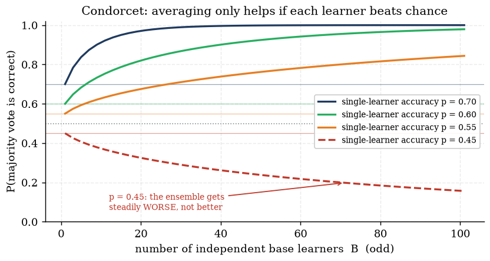
The regression argument: variance of an average
v5 §17 gives the two cases; we restate them because §11.5 generalises them. Let $d_1,\dots,d_B$ be base predictions at a fixed $\mathbf{x}$, each with variance $\sigma^2$, and let $\hat y=\frac1B\sum_b d_b$.
Case A — independent learners.
$$\mathrm{Var}(\hat y)=\frac{1}{B^2}\sum_{b=1}^{B}\mathrm{Var}(d_b)=\frac{\sigma^2}{B}.$$Variance falls like $1/B$; with 100 learners it is 1% of a single learner's.
Case B — correlated learners.
$$\mathrm{Var}(\hat y)=\frac{1}{B^2}\Big[\sum_{b}\mathrm{Var}(d_b)+2\!\!\sum_{i<j}\!\mathrm{Cov}(d_i,d_j)\Big].$$The covariance term does not shrink with $B$ in the same way — it is the whole story of §11.5.
11.2 The bootstrap
How much of the data does one bootstrap miss?
The handwritten page jumps straight from "probability one observation is not selected in one draw" to the limit. Here is every step.
- One draw. The draw is uniform over $N$ indices, so a fixed row $i$ is chosen with probability $1/N$ and missed with probability $1-\tfrac1N$.
- All $N$ draws. Draws are independent (that is what "with replacement" buys), so the events "row $i$ missed on draw 1", ..., "missed on draw $N$" are independent and the probabilities multiply: $$P(\text{row } i \text{ never drawn}) = \Big(1-\tfrac1N\Big)^{N}.$$
- Take the limit. Write it as an exponential and expand the log: $$\Big(1-\tfrac1N\Big)^{N}=\exp\!\Big[N\ln\!\Big(1-\tfrac1N\Big)\Big] =\exp\!\Big[N\Big(-\tfrac1N-\tfrac{1}{2N^2}-\tfrac{1}{3N^3}-\cdots\Big)\Big] =\exp\!\Big[-1-\tfrac{1}{2N}-O(N^{-2})\Big].$$ As $N\to\infty$ the correction terms vanish and $$\lim_{N\to\infty}\Big(1-\tfrac1N\Big)^{N}=e^{-1}=0.3679 .$$
- Complement. A fixed row appears at least once with probability $1-e^{-1}=0.6321$ — the famous "63.2% in-bag / 36.8% out-of-bag" split.
- Expected count of distinct rows. By linearity of expectation over the $N$ indicator variables, $\mathbb{E}[\#\text{distinct}]=N\big(1-(1-\tfrac1N)^N\big)\approx 0.632\,N$.
The expansion in step 3 also fixes the direction of the approach: the bracket is $\exp[-1-\tfrac{1}{2N}-O(N^{-2})]$, i.e. strictly smaller than $e^{-1}$, so $(1-1/N)^N$ rises to the limit from below at rate $O(1/N)$ (equivalently, the in-bag share falls to 0.632 from above):
| $N$ | 5 | 10 | 20 | 50 | 100 | 1000 | $\infty$ |
|---|---|---|---|---|---|---|---|
| $(1-1/N)^N$ = P(out-of-bag) | 0.3277 | 0.3487 | 0.3585 | 0.3642 | 0.3660 | 0.3677 | 0.3679 |
| expected distinct rows in-bag | 3.36 | 6.51 | 12.83 | 31.79 | 63.40 | 632.3 | $0.632N$ |

| bag $b$ | drawn (in order) | in-bag multiset | distinct | OOB rows | #OOB |
|---|---|---|---|---|---|
| 1 | B B G D E E F A | A B B D E E F G | 6 | C H | 2 |
| 2 | D B D H E A E B | A B B D D E E H | 5 | C F G | 3 |
| 3 | G H H E G C B E | B C E E G G H H | 5 | A D F | 3 |
| 4 | D F H C G B C G | B C C D F G G H | 6 | A E | 2 |
| 5 | B F D E H G G E | B D E E F G G H | 6 | A C | 2 |
Mean distinct rows = 5.60 against the theoretical $8(1-(7/8)^8)=5.25$; mean OOB size = 2.40 against $8(7/8)^8=2.75$. Row B is in-bag in all five bags, so it contributes nothing to the OOB estimate; row A is OOB three times. That per-row imbalance is the reason OOB error needs a large $B$ (§11.6).
The same trace in code — the whole bootstrap/OOB bookkeeping is one integer matrix:
Code — bootstrap resampling and the OOB mask (numpy)
import numpy as np
rng = np.random.default_rng(11)
N, B = 8, 5
idx = rng.integers(0, N, size=(B, N)) # B bootstraps of size M = N, WITH replacement
in_bag = np.zeros((B, N), dtype=bool)
np.put_along_axis(in_bag, idx, True, axis=1) # row i is in bag b if it was drawn at least once
oob = ~in_bag # (B x N) out-of-bag mask
oob.mean() # empirical P(out-of-bag) -> (1 - 1/N)**N -> 1/e = 0.3679
in_bag.sum(axis=1) # distinct rows per bag -> about 0.632 N
oob.sum(axis=0) # how many trees each row is OOB for ~ Binomial(B, 0.368)
(oob.sum(axis=0) == 0).sum() # rows with NO OOB prediction: common at B = 5, vanishes by B = 25Interview line: the 0.632 / 0.368 split is not a convention, it is $(1-1/N)^N\to e^{-1}$; say that out loud before writing code. Cost is $O(BN)$ memory for the mask — for real forests you never materialise it, sklearn recomputes each tree's unsampled indices on the fly. Pitfall: rng.integers draws indices, so duplicates are the point; using rng.permutation or sampling without replacement silently destroys the bootstrap.
11.3 Bagging = Bootstrap AGGregatING
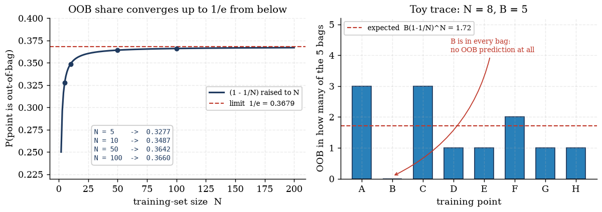
Shapes at each stage. $\mathbf{X}$ is $(N\times p)$ → index vector $\mathbf{i}_b$ is $(M\times 1)$ with entries in $\{1,\dots,N\}$ → $\mathbf{X}^{*}_b=\mathbf{X}[\mathbf{i}_b,:]$ is $(M\times p)$ → each tree maps one row $(1\times p)$ to a scalar → stacking the $B$ tree outputs for a test matrix $(n_{\text{test}}\times p)$ gives a prediction matrix $(B\times n_{\text{test}})$, which we collapse along the tree axis to $(1\times n_{\text{test}})$.
What bagging actually buys: bias unchanged, variance halved
Each bagged tree sees a resample of the same distribution, so $\mathbb{E}[T_b(\mathbf{x})]$ is (approximately) the same as for a tree fitted on the full data: bagging does not reduce bias. What it reduces is the spread of the prediction across training sets. Measured on a 1-D target $f(x)=\sin(2\pi x)+0.5x$ with noise sd 0.30, $N=80$, over 400 replicate training sets:
| learner | bias$^2$ | variance | noise | $E_{\text{out}}$ |
|---|---|---|---|---|
| single unpruned tree | 0.00022 | 0.09025 | 0.09 | 0.18047 |
| bagged, $B=50$ trees | 0.00012 | 0.04367 | 0.09 | 0.13379 |

11.4 Random forests: decorrelating the trees
Bootstrapping alone leaves the trees correlated because they all discover the same dominant split. If one predictor is strongly informative, essentially every bootstrap tree puts it at the root and the trees end up near-copies. The random-forest fix is a second injection of randomness, at the split level.
| task | rule | $p=9$ | $p=25$ | $p=64$ | $p=100$ |
|---|---|---|---|---|---|
| classification | $m=\lfloor\sqrt{p}\rfloor$ (max_features='sqrt') | 3 | 5 | 8 | 10 |
| regression | $m=\lfloor p/3\rfloor$ | 3 | 8 | 21 | 33 |
| either | $m=\lfloor\log_2 p\rfloor$ (max_features='log2') | 3 | 4 | 6 | 6 |
| bagging | $m=p$ (no subsampling) | 9 | 25 | 64 | 100 |
Code — bagging vs random forest, and the max_features sweep (sklearn)
from sklearn.datasets import make_classification
from sklearn.ensemble import RandomForestClassifier, BaggingClassifier
from sklearn.model_selection import train_test_split
from sklearn.tree import DecisionTreeClassifier
X, y = make_classification(n_samples=600, n_features=20, n_informative=6,
n_redundant=4, random_state=0)
Xtr, Xte, ytr, yte = train_test_split(X, y, test_size=0.35, stratify=y, random_state=0)
# NO StandardScaler here: trees split on thresholds, so any monotone transform leaves every
# split - and therefore the fitted model - unchanged. Scale for KNN (8), SVM (17), PCA (18).
bag = BaggingClassifier(DecisionTreeClassifier(), # m = p: bagging is the special case
n_estimators=500, max_samples=1.0, bootstrap=True,
oob_score=True, n_jobs=-1, random_state=0).fit(Xtr, ytr)
for m in ["sqrt", "log2", 0.5, None]: # None means m = p, i.e. bagged trees again
rf = RandomForestClassifier(n_estimators=500, max_features=m,
bootstrap=True, oob_score=True, # free validation estimate
n_jobs=-1, random_state=0).fit(Xtr, ytr)
print(m, rf.oob_score_, rf.score(Xte, yte)) # oob_score_ is ACCURACY, not errorInterview line: max_features is the only knob that moves $\rho$, and $\mathrm{Var}=\sigma^2[\rho+(1-\rho)/B]$ says $\rho$ is the floor — so tune max_features, not n_estimators. Cost is $O(B\,m\,N\log N)$, embarrassingly parallel (n_jobs=-1). Pitfall: oob_score_ is a score to be maximised, and it is unusable below roughly 50 trees.
The trade-off $m$ controls. Shrinking $m$ pulls two levers in opposite directions:
- $\rho\downarrow$ — trees are forced to use different predictors, so they disagree more. Good.
- $\sigma^2\uparrow$ — each individual tree is worse (it is sometimes denied the best split), so its own variance and bias rise. Bad.
§11.5 shows the ensemble variance is $\sigma^2[\rho+(1-\rho)/B]$, a product of the two — so there is an interior optimum, and where it sits depends on the data.
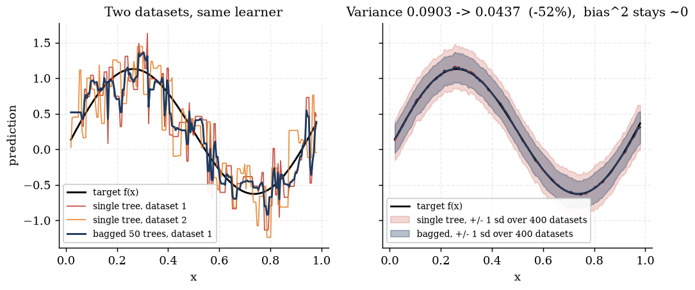
How $\rho$ and $\sigma^2$ were estimated. Refit the forest on 25 independent training sets; pool all $25\times 50$ individual trees and take $\hat\sigma^2=\overline{\mathrm{Var}}[T_b(\mathbf{x})]$ across them at each test point; take $\widehat{\mathrm{Var}}_{\text{ens}}$ as the variance of the 25 forest predictions; then invert the law of §11.5,
$$\hat\rho=\frac{\widehat{\mathrm{Var}}_{\text{ens}}/\hat\sigma^{2}-1/B}{1-1/B}.$$max_features is the one random-forest hyperparameter that genuinely deserves cross-validation (§6).11.5 The correlated-average variance law
This is the formula the handwritten notes derive under the heading "RF decreases variance". We restate the assumptions explicitly, because they are what makes the one-line answer possible.
Derivation, every step
Step 1 — pull the constant out. For any constant $c$, $\mathrm{Var}(cZ)=c^2\mathrm{Var}(Z)$, so with $c=1/B$:
$$\mathrm{Var}\Big(\tfrac1B\textstyle\sum_b T_b\Big)=\frac{1}{B^{2}}\,\mathrm{Var}\Big(\sum_{b=1}^{B}T_b\Big).$$Step 2 — expand the variance of a sum. The general identity is
$$\mathrm{Var}\Big(\sum_{b=1}^{B}T_b\Big)=\sum_{b=1}^{B}\mathrm{Var}(T_b)+\sum_{i\neq j}\mathrm{Cov}(T_i,T_j) =\sum_{b=1}^{B}\mathrm{Var}(T_b)+2\!\!\sum_{i<j}\!\mathrm{Cov}(T_i,T_j),$$because each unordered pair $\{i,j\}$ appears twice in the double sum $\sum_{i\neq j}$.
Step 3 — impose the identical-distribution assumption. Every variance equals $\sigma^2$, so the first sum is $B\sigma^2$. Every covariance equals $\mathrm{Cov}(T_i,T_j)=\rho\sqrt{\sigma^2}\sqrt{\sigma^2}=\rho\sigma^2$, and there are $B(B-1)$ ordered pairs with $i\neq j$ (equivalently $\binom{B}{2}=\tfrac{B(B-1)}{2}$ unordered pairs, counted twice). Hence
$$\mathrm{Var}\Big(\sum_b T_b\Big)=B\sigma^{2}+B(B-1)\rho\sigma^{2}.$$Step 4 — the algebra the notes skip.
$$\mathrm{Var}(\mathrm{RF})=\frac{1}{B^{2}}\Big[B\sigma^{2}+B(B-1)\rho\sigma^{2}\Big] =\frac{B\sigma^{2}}{B^{2}}+\frac{B(B-1)\rho\sigma^{2}}{B^{2}} =\frac{\sigma^{2}}{B}+\frac{(B-1)}{B}\rho\sigma^{2}.$$Write $\frac{B-1}{B}=1-\frac1B$ and collect the $\rho\sigma^2$ terms:
$$=\frac{\sigma^{2}}{B}+\rho\sigma^{2}-\frac{\rho\sigma^{2}}{B} =\rho\sigma^{2}+\frac{\sigma^{2}(1-\rho)}{B} =\sigma^{2}\Big[\rho+\frac{1-\rho}{B}\Big].\qquad\blacksquare$$Reading the formula
| $\rho$ \ $B$ | 1 | 5 | 25 | 100 | 500 | $\infty$ |
|---|---|---|---|---|---|---|
| 0.00 | 1.000 | 0.200 | 0.040 | 0.010 | 0.002 | 0.000 |
| 0.10 | 1.000 | 0.280 | 0.136 | 0.109 | 0.102 | 0.100 |
| 0.50 | 1.000 | 0.600 | 0.520 | 0.505 | 0.501 | 0.500 |
| 1.00 | 1.000 | 1.000 | 1.000 | 1.000 | 1.000 | 1.000 |

The three limits the handwritten margin notes single out:
- $\rho=1$ (identical trees): variance $=\sigma^2$ for every $B$. The notes' "no improve" — averaging $B$ copies of the same tree is that tree.
- $\rho=0$ (independent trees): variance $=\sigma^2/B$, recovering Case A of §11.1.
- $B\to\infty$: variance $\to\rho\sigma^{2}$. More trees can never take you below the correlation floor.
11.6 Out-of-bag error
How many trees does each row get? Row $i$ is OOB for tree $b$ independently across $b$ with probability $q=(1-1/N)^N\approx e^{-1}$, so
$$|\mathcal{O}_i|\sim\mathrm{Binomial}(B,q),\qquad \mathbb{E}|\mathcal{O}_i|=Bq\approx 0.368B,\qquad \mathrm{sd}=\sqrt{Bq(1-q)}.$$At $B=100$ that is 36.8 trees on average with sd 4.8. The probability a row has no OOB tree at all is $(1-q)^{B}=0.632^{B}$: 10.1% at $B=5$, 1.02% at $B=10$, $10^{-5}$ at $B=25$, negligible beyond.
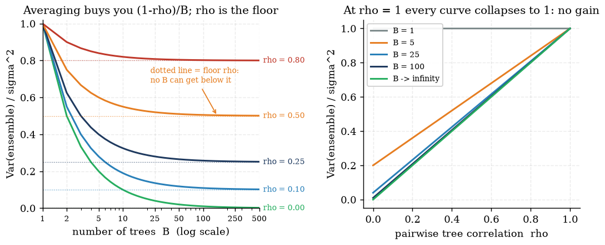
max_features, depth, and so on without carving rows out of a small dataset. It does not safely replace a test set, because the moment you select a model by minimising $E_{\text{oob}}$ you have used it for fitting, and the selected minimum is optimistically biased — the same selection-bias argument as for any validation score (§6). If $N$ is genuinely tiny, use OOB for tuning and repeated $K$-fold CV for the final honest number.- No bootstrap, no OOB. With
bootstrap=Falseevery tree sees every row and $\mathcal{O}_i=\varnothing$ for all $i$. sklearn raisesValueError: Out of bag estimation only available if bootstrap=True. - Small $B$ gives a warning, not an error. sklearn emits "Some inputs do not have OOB scores" and quietly averages over the remaining rows; treat any OOB number computed with $B\lesssim 50$ as unusable.
max_sampleschanges the constant. Sampling $M=0.7N$ rows with replacement makes the OOB fraction $(1-1/N)^{0.7N}\to e^{-0.7}=0.497$, not 0.368 — a larger, differently-biased OOB set.- OOB assumes i.i.d. rows. With grouped, time-ordered, or duplicated data, an OOB row can be a near-copy of an in-bag row, and OOB error becomes as optimistic as random-split CV would be. Use grouped or time-series CV instead.
Code — OOB error as a function of $B$, and OOB probabilities (sklearn)
import numpy as np
from sklearn.ensemble import RandomForestClassifier
rf = RandomForestClassifier(warm_start=True, # keep the trees already grown, add more
bootstrap=True, oob_score=True, # OOB REQUIRES bootstrap=True
max_features="sqrt", n_jobs=-1, random_state=0)
curve = []
for B in [25, 50, 100, 200, 400]:
rf.set_params(n_estimators=B)
rf.fit(Xtr, ytr)
curve.append((B, 1.0 - rf.oob_score_)) # OOB ERROR = 1 - oob_score_
proba = rf.oob_decision_function_ # (N x n_classes), aggregated over ~0.368 B trees
np.isnan(proba).any(axis=1).sum() # rows never OOB -> NaN row (only at tiny B)
# RandomForestClassifier(bootstrap=False, oob_score=True).fit(...) raises:
# ValueError: Out of bag estimation only available if bootstrap=TrueInterview line: OOB is a validation estimate for free — no extra fits, no held-out rows — and it is pessimistic because each row is scored by a sub-forest of only $\approx 0.368B$ trees. Use it to tune, never as the final honest number: minimising it selects on it. Pitfall: warm_start only ever adds trees; lowering n_estimators silently truncates, and OOB assumes i.i.d. rows (grouped or time-ordered data needs GroupKFold/TimeSeriesSplit instead).
11.7 Hyperparameters
| notes | sklearn | what it does | which term it moves |
|---|---|---|---|
| n-estimators | n_estimators | number of trees $B$ | only $(1-\rho)/B$; monotone, never overfits |
| bootstrap | bootstrap | resample rows (True) or reuse all rows (False) | False raises $\rho$ and disables OOB |
| max-samples $=0.7$ | max_samples | bootstrap size $M$ as a fraction of $N$ | smaller $M$: $\rho\downarrow$, $\sigma^2\uparrow$ |
| oob-score = True | oob_score | compute $E_{\text{oob}}$ during fit | free validation estimate |
| max-features 'sqrt'/'log2' | max_features | features offered per split, $m$ | the main $\rho$–$\sigma^2$ dial |
| criteria | criterion | gini / entropy / log_loss; squared_error / absolute_error | inherited from §10 |
| (all decision-tree params) | max_depth, min_samples_leaf, ccp_alpha | per-tree capacity | restricting them raises bias; usually leave trees deep |
criteria; the sklearn keyword is criterion (singular). (ii) The page's title says "Bagging & Boosting" but boosting is never discussed there — it arrives in §12 (AdaBoost) and §13 (gradient boosting), which reduce bias by fitting sequentially, in contrast to everything in this section, which reduces variance by fitting in parallel.The other thing a fitted forest hands you is a feature ranking — and it hands you two of them, which disagree:
Code — impurity importance vs permutation importance (sklearn)
import numpy as np
from sklearn.ensemble import RandomForestClassifier
from sklearn.inspection import permutation_importance
rf = RandomForestClassifier(n_estimators=500, max_features="sqrt",
n_jobs=-1, random_state=0).fit(Xtr, ytr)
mdi = rf.feature_importances_ # mean decrease in impurity, read off the TRAIN structure
perm = permutation_importance(rf, Xte, yte, # HELD-OUT data: this one is the referee
n_repeats=20, scoring="roc_auc",
random_state=0, n_jobs=-1)
order = np.argsort(perm.importances_mean)[::-1]
for j in order:
print(j, round(mdi[j], 4), round(perm.importances_mean[j], 4),
round(perm.importances_std[j], 4)) # a negative mean = shuffling it HELPEDInterview line: MDI is computed on the training splits and is biased towards continuous / high-cardinality features — a pure-noise column with many candidate thresholds can outrank a real signal. Permutation importance costs n_repeats * d extra prediction passes but is model-agnostic and measured on held-out data. Pitfall: both split credit between correlated features, so dropping the "less important" twin can transfer its whole importance to the survivor; cluster correlated features first, or use SHAP (§14).
- Averaging $B$ learners removes variance, never bias; a majority vote helps only if each learner beats chance (Fig. 11.1).
- A size-$N$ bootstrap of $N$ rows contains $\approx 63.2\%$ of the distinct rows and leaves $\approx 36.8\%$ out, because $(1-1/N)^N\to e^{-1}$.
- Bagging = bootstrap + aggregate, with unpruned base trees. On our toy target it cut variance 51.6% and $E_{\text{out}}$ 25.9%.
- The master formula: $\mathrm{Var}(\mathrm{RF})=\sigma^{2}\big[\rho+\frac{1-\rho}{B}\big]$. $B$ only erodes the second term; $\rho\sigma^2$ is a floor.
- Random forests lower $\rho$ by offering only $m$ of $p$ features per split ($\sqrt{p}$ for classification, $p/3$ for regression, both defaults worth tuning).
- OOB error is a free validation estimate from the $\approx 0.368B$ trees that never saw each row; it is pessimistic at small $B$ and requires
bootstrap=True.
11.8 Practice
Practice 11.1 — Five independent classifiers are each 60% accurate. What is the accuracy of their majority vote, term by term? How much does the ensemble gain?
Majority of 5 means at least 3 correct, so sum the binomial terms $j=3,4,5$ with $\pi=0.6$:
$$\binom{5}{3}(0.6)^3(0.4)^2=10(0.216)(0.16)=0.3456,$$ $$\binom{5}{4}(0.6)^4(0.4)^1=5(0.1296)(0.4)=0.2592,$$ $$\binom{5}{5}(0.6)^5=0.07776.$$Total $=0.3456+0.2592+0.07776=0.68256$, a gain of 8.26 percentage points over the single learner's 0.6. Note this assumes independence — the entire content of §11.5 is that real trees are not independent, so the realised gain is smaller.
Practice 11.2 — A forest has single-tree variance $\sigma^2=9$ and pairwise correlation $\rho=0.4$. Give the ensemble variance at $B=25$ and $B=200$, the floor, and the smallest $B$ that gets within 5% of the floor.
Apply $\mathrm{Var}=\sigma^{2}[\rho+(1-\rho)/B]$ with $\sigma^2=9$, $\rho=0.4$, so $1-\rho=0.6$:
$$B=25:\ 9\big[0.4+0.6/25\big]=9(0.424)=3.816,\qquad B=200:\ 9\big[0.4+0.6/200\big]=9(0.403)=3.627.$$Floor: $\rho\sigma^{2}=0.4\times 9=3.6$ as $B\to\infty$. Within 5% of the floor means the extra term satisfies $\sigma^2(1-\rho)/B\le 0.05\,\rho\sigma^2$, i.e.
$$B\ \ge\ \frac{1-\rho}{0.05\,\rho}=\frac{0.6}{0.02}=30 .$$At $B=30$ the variance is 3.78, i.e. exactly 5% above 3.6. Going from 30 to 200 trees buys 0.153 of variance — a 4% improvement for a 6.7-fold increase in compute.
Practice 11.3 — With $N=20$ training rows: what fraction is out-of-bag per bag, how many distinct rows are in-bag, and with $B=10$ trees how many rows can be expected to receive no OOB prediction at all?
(a) $q=(1-1/20)^{20}=(0.95)^{20}=0.35849$ — already close to $e^{-1}=0.36788$, and just below it, as the expansion in §11.2 predicts.
(b) Expected distinct in-bag rows $=20(1-0.35849)=12.83$, so about 7.17 rows are OOB per bag.
(c) A given row is in-bag in all 10 bags with probability $(1-q)^{10}=(0.64151)^{10}=0.011805$; over 20 rows the expected count is $20\times 0.011805=0.236$ — usually zero rows, occasionally one. At $B=100$ it collapses to $5.3\times 10^{-20}$ per row, which is why "every row gets an OOB prediction" is safe for realistic forests.
Practice 11.4 — Audit the handwritten cross term: evaluate hand p08's line literally at $B=4$, $\rho=0.5$, $\sigma^2=1$, compare with the correct value, and say in one sentence why the literal reading must be wrong even without computing it.
Correct. $\frac{1}{B^2}[B\sigma^2+B(B-1)\rho\sigma^2]=\frac{1}{16}[4+4\cdot 3\cdot 0.5]=\frac{1}{16}[4+6]=0.625$, which matches $\sigma^2[\rho+(1-\rho)/B]=0.5+0.5/4=0.625$.
Literal reading (multiplying the pair sum by $B(B-1)$): there are $\binom42=6$ unordered pairs each contributing $\rho\sigma^2=0.5$, so $\frac{1}{16}[4+12\cdot 6\cdot 0.5]=\frac{1}{16}[4+36]=2.5$.
Why it must be wrong without arithmetic. An average of identically distributed variables can never have larger variance than one of them (Cauchy–Schwarz, or just $\rho\le 1$ in the boxed formula), so any answer exceeding $\sigma^2=1$ is impossible. The factor $B(B-1)$ is a count of pairs and must not be applied on top of a sum that already runs over pairs.
Practice 11.5 — For $p=25$ and $p=60$ predictors, give $m$ under each default rule; then explain what a random forest with max_features=p and bootstrap=True is, and what one with max_features=p and bootstrap=False is.
| rule | $p=25$ | $p=60$ |
|---|---|---|
| $\sqrt{p}$ (classification) | 5.000 → 5 | 7.746 → 7 |
| $p/3$ (regression) | 8.333 → 8 | 20.000 → 20 |
| $\log_2 p$ | 4.644 → 4 | 5.907 → 5 |
max_features=p, bootstrap=True: no feature subsampling, so the only randomness left is the bootstrap — this is bagged trees (Fig. 11.3 with $m=p$). OOB is still available.
max_features=p, bootstrap=False: no feature randomness and no row randomness. Every tree is fitted to the identical dataset by a deterministic algorithm, so all $B$ trees are identical: $\rho=1$ and the variance law gives $\mathrm{Var}=\sigma^2$ for any $B$ — you have paid $B$ times the compute for one tree. OOB also raises a ValueError. (In practice sklearn still breaks ties randomly among equally-good splits, so the trees are near-identical rather than exactly identical, but the conclusion stands.)
12 AdaBoost: Full Derivation
Bagging (§11) builds many learners in parallel on resampled data and averages them, attacking variance. Boosting does the opposite: it builds learners sequentially, and each new learner is deliberately steered towards the examples its predecessors got wrong. AdaBoost is the original, and it is the one algorithm in this course whose every constant can be derived from first principles rather than tuned.
Where this sits in the boosting family. The handwritten notes open the topic with three variants written side by side:
- Adaptive Boosting (AdaBoost) — reweight the data after each round. This section.
- Gradient Boosting — fit each new learner to the negative gradient of a loss. §13.
- Extreme Boosting (XGBoost) — gradient boosting plus a second-order objective and regularisation. §13.
The source writes the third as "Xtreme Boosting"; the library is XGBoost, short for eXtreme Gradient Boosting. AdaBoost is not a special case of the other two in the notes' presentation, but it is exactly forward stagewise additive modelling under exponential loss — we prove that in §12.7.
12.1 Setup, notation and shapes
Problem. A labelled dataset
$$\mathcal{D}=\{(\mathbf{x}_1,y_1),\dots,(\mathbf{x}_N,y_N)\},\qquad \mathbf{x}_i\in\mathbb{R}^d,\quad y_i\in\{-1,+1\}.$$Note the label coding: AdaBoost requires $y\in\{-1,+1\}$, not $\{0,1\}$ — every sign trick below depends on it.
| Symbol | Shape | Meaning |
|---|---|---|
| $\mathbf{X}$ | $(N\times d)$ | design matrix, row $i$ is $\mathbf{x}_i^{\!\top}$ |
| $\mathbf{y}$ | $(N\times 1)$ | labels in $\{-1,+1\}$ |
| $\mathbf{w}^{(t)}$ | $(N\times 1)$ | sample-weight vector entering round $t$, $\sum_i w_i^{(t)}=1$, $w_i^{(t)}>0$ |
| $h_t(\cdot)$ | $\mathbb{R}^d\to\{-1,+1\}$ | the $t$-th weak learner (a stump, in practice) |
| $\mathbf{h}_t$ | $(N\times 1)$ | its predictions on the training set, $(\mathbf{h}_t)_i=h_t(\mathbf{x}_i)$ |
| $\epsilon_t$ | scalar | weighted error of $h_t$ |
| $\alpha_t$ | scalar | "amount of say" of $h_t$ in the final vote |
| $Z_t$ | scalar | normalisation constant keeping $\sum_i w_i^{(t+1)}=1$ |
| $F_T(\mathbf{x})$ | scalar | ensemble score $\sum_{t=1}^{T}\alpha_t h_t(\mathbf{x})$; $H=\operatorname{sign}F_T$ |
The elementwise product $\mathbf{y}\odot\mathbf{h}_t$ is $(N\times 1)$ and equals $+1$ on correctly classified points and $-1$ on misclassified ones — that single fact is the engine of every formula in this section.
12.2 The algorithm
AdaBoost (Freund & Schapire), exactly as the handwritten notes state it
- Initialise equal weights for all $N$ observations: $$w_i^{(1)}=\frac1N,\qquad i=1,2,\dots,N.$$
- Loop $t=1$ to $T$ ($T=$ number of weak learners):
- Fit a weak classifier $h_t$ to the training data using the weights $\mathbf{w}^{(t)}$.
- Weighted error $$\epsilon_t=\frac{\sum_{i=1}^{N}w_i^{(t)}\,\mathbb{1}\!\left(y_i\neq h_t(\mathbf{x}_i)\right)}{\sum_{i=1}^{N}w_i^{(t)}},\qquad \mathbb{1}(\cdot)=\begin{cases}1&\text{if misclassified}\\ 0&\text{if correctly classified.}\end{cases}$$
- Amount of say $$\boxed{\;\alpha_t=\tfrac12\ln\frac{1-\epsilon_t}{\epsilon_t}\;}$$
- Reweight $$w_i^{(t+1)}=\frac{w_i^{(t)}}{Z_t}\,e^{-\alpha_t y_i h_t(\mathbf{x}_i)},\qquad Z_t=\text{normalisation}.$$
- Final ensemble prediction $$H(\mathbf{x})=\operatorname{sign}\!\left(\sum_{t=1}^{T}\alpha_t\,h_t(\mathbf{x})\right).$$
Why the denominator in $\epsilon_t$. Since we always renormalise, $\sum_i w_i^{(t)}=1$ and the denominator is $1$; the notes keep it because it makes $\epsilon_t\in[0,1]$ true even if you skip normalisation. With normalised weights the definition collapses to the compact form used in:
$$\epsilon_t=\sum_{i\in \mathrm{WR}} w_i^{(t)},\qquad 1-\epsilon_t=\sum_{i\in \mathrm{COR}} w_i^{(t)},$$where $\mathrm{WR}$ = indices wrongly classified by $h_t$ and $\mathrm{COR}$ = correctly classified. That second identity is used constantly below and is never written down in the source — it is just "the weights sum to one, split the sum in two".
12.3 Deriving $\alpha_t$ — the exponential-loss proof
The handwritten notes label this "Imp proof" and give five lines. Here is the same argument with every step and every unstated assumption made explicit.
Step 0 — what we minimise. Write the total unnormalised weight that round $t$'s update would produce:
$$E^{(t+1)}=\sum_{i=1}^{N}w_i^{(t)}e^{-\alpha_t y_i h_t(\mathbf{x}_i)}.$$Because $y_ih_t(\mathbf{x}_i)=-1$ on wrong points and $+1$ on right points, the sum splits exactly in two:
$$E^{(t+1)}=\underbrace{\sum_{i\in\mathrm{WR}}w_i^{(t)}e^{+\alpha_t}}_{\text{wrong}}+\underbrace{\sum_{i\in\mathrm{COR}}w_i^{(t)}e^{-\alpha_t}}_{\text{correct}}.$$Step 1 — substitute the weighted masses. Using $\sum_{\mathrm{WR}}w_i^{(t)}=\epsilon_t$ and $\sum_{\mathrm{COR}}w_i^{(t)}=1-\epsilon_t$:
$$E^{(t+1)}(\alpha_t)=\epsilon_t e^{\alpha_t}+(1-\epsilon_t)e^{-\alpha_t}.$$Step 2 — differentiate. $\epsilon_t$ and $\mathbf{w}^{(t)}$ do not depend on $\alpha_t$ (the learner $h_t$ was already chosen), so
$$\frac{\partial E^{(t+1)}}{\partial \alpha_t}=\epsilon_t e^{\alpha_t}-(1-\epsilon_t)e^{-\alpha_t}.$$Step 3 — set to zero.
$$\epsilon_t e^{\alpha_t}=(1-\epsilon_t)e^{-\alpha_t}\;\Longrightarrow\; e^{2\alpha_t}=\frac{1-\epsilon_t}{\epsilon_t}\;\Longrightarrow\;\boxed{\;\alpha_t=\tfrac12\ln\frac{1-\epsilon_t}{\epsilon_t}\;}$$Step 4 — check it is a minimum. $\dfrac{\partial^2 E^{(t+1)}}{\partial\alpha_t^2}=\epsilon_t e^{\alpha_t}+(1-\epsilon_t)e^{-\alpha_t}=E^{(t+1)}>0$ for all $\alpha_t$, so $E^{(t+1)}$ is strictly convex in $\alpha_t$ and the stationary point is the unique global minimum. The source never checks this.
Adjudication 1 — the two forms are identical. The notes' bottom line is $\alpha_t=\ln\sqrt{\dfrac{1-\epsilon_t}{\epsilon_t}}$ while the boxed formula on the previous page is $\alpha_t=\tfrac12\ln\dfrac{1-\epsilon_t}{\epsilon_t}$. These are the same number: $\ln\sqrt{u}=\tfrac12\ln u$. No discrepancy.
Adjudication 2 — the pen slip in the proof. As written, the first fraction of $E^{(t+1)}$ has denominator "$x$" and the second "$z$". Both are the same normaliser $Z_t$; and because $Z_t$ is a positive constant multiplying both terms, dividing through by it does not move the minimiser at all. That is why the derivation above can drop it entirely — the source treats $Z$ as constant in $\alpha_t$ without comment, and it is legitimate only because $Z_t$ scales the whole objective.
Adjudication 3 — the stray stroke. The boxed denominator on p09 reads "$\epsilon_t$" followed by a vertical tick that could be a "1". Standard AdaBoost — and the proof above — give $\epsilon_t$ alone. Read the tick as a pen artefact.
Below, the left panel plots $\alpha_t$ against $\epsilon_t$. The right panel plots the normaliser and the two update factors derived in §12.4–12.5.
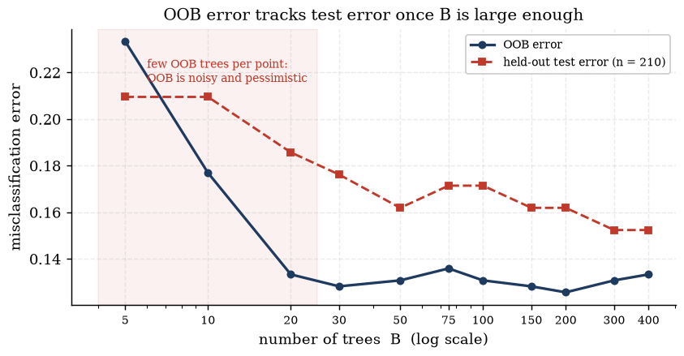
Interpretation (sanity checks on $\alpha_t$).
- $\epsilon_t=0.5$ ⇒ $\alpha_t=0$: a coin-flip learner gets zero vote and — because $e^{0}=1$ — leaves every weight untouched. AdaBoost silently ignores it.
- $\epsilon_t<0.5$ ⇒ $\alpha_t>0$: contributes in its own direction. At $\epsilon_t=0.1$, $\alpha_t\approx1.0986$; at $\epsilon_t=0.3$, $\alpha_t\approx0.4236$.
- $\epsilon_t>0.5$ ⇒ $\alpha_t<0$: the learner is anti-correlated with the labels, and a negative vote flips it. A learner with $\epsilon_t=0.7$ contributes exactly as much as one with $\epsilon_t=0.3$, with the opposite sign ($\alpha=\mp0.4236$).
- $\epsilon_t\to0$ ⇒ $\alpha_t\to+\infty$: a perfect learner would dominate the vote. In floating point this is a division by zero — see the gotchas in §12.10.
What breaks it. $\alpha_t$ is optimal only given $h_t$. AdaBoost is greedy: it never revisits $\alpha_1,\dots,\alpha_{t-1}$ after adding $h_t$. That is what makes it "forward stagewise" rather than a joint fit.
12.4 The normaliser $Z_t$ — filling the gap
The handwritten page jumps straight from "$\sum_i w_i^{(t+1)}=1$" to "$Z=2\sqrt{\epsilon_t(1-\epsilon_t)}$". Here is the missing algebra.
Step 1 — write what normalisation demands. We need $\sum_i w_i^{(t+1)}=1$ with $w_i^{(t+1)}=w_i^{(t)}e^{-\alpha_t y_ih_t(\mathbf{x}_i)}/Z_t$, so
$$Z_t=\sum_{i=1}^{N}w_i^{(t)}e^{-\alpha_t y_ih_t(\mathbf{x}_i)}=E^{(t+1)}=\epsilon_te^{\alpha_t}+(1-\epsilon_t)e^{-\alpha_t}.$$So $Z_t$ is the objective we just minimised — AdaBoost's $\alpha_t$ is precisely the choice that makes the normaliser as small as possible. Remember that; §12.7 turns it into a generalisation-flavoured bound.
Step 2 — substitute the optimal $\alpha_t$. From $e^{2\alpha_t}=(1-\epsilon_t)/\epsilon_t$,
$$e^{\alpha_t}=\sqrt{\frac{1-\epsilon_t}{\epsilon_t}},\qquad e^{-\alpha_t}=\sqrt{\frac{\epsilon_t}{1-\epsilon_t}}.$$Step 3 — plug in and simplify.
$$Z_t=\epsilon_t\sqrt{\frac{1-\epsilon_t}{\epsilon_t}}+(1-\epsilon_t)\sqrt{\frac{\epsilon_t}{1-\epsilon_t}} =\sqrt{\epsilon_t(1-\epsilon_t)}+\sqrt{\epsilon_t(1-\epsilon_t)}$$ $$\boxed{\;Z_t=2\sqrt{\epsilon_t(1-\epsilon_t)}\;}$$using $\epsilon_t\sqrt{(1-\epsilon_t)/\epsilon_t}=\sqrt{\epsilon_t^2(1-\epsilon_t)/\epsilon_t}=\sqrt{\epsilon_t(1-\epsilon_t)}$, and symmetrically for the other term.
Gotcha — the radical in the source covers the whole product. On p09 the vinculum is drawn only over "$\epsilon_t$", stopping before "$(1-\epsilon_t)$". Read it as $2\sqrt{\epsilon_t(1-\epsilon_t)}$: the Step-3 algebra above produces the product under one root, and only that form satisfies $Z_t=1$ at $\epsilon_t=\tfrac12$ (a useless learner must not rescale anything).
12.5 The update rule in clean form, and the 50/50 property
Misclassified point ($y_ih_t(\mathbf{x}_i)=-1$, so the exponent is $+\alpha_t$):
$$w_i^{(t+1)}=\frac{w_i^{(t)}e^{\alpha_t}}{Z_t}=\frac{w_i^{(t)}\sqrt{(1-\epsilon_t)/\epsilon_t}}{2\sqrt{\epsilon_t(1-\epsilon_t)}}=\frac{w_i^{(t)}}{2\epsilon_t}.$$Correctly classified point ($y_ih_t(\mathbf{x}_i)=+1$, exponent $-\alpha_t$):
$$w_i^{(t+1)}=\frac{w_i^{(t)}e^{-\alpha_t}}{Z_t}=\frac{w_i^{(t)}\sqrt{\epsilon_t/(1-\epsilon_t)}}{2\sqrt{\epsilon_t(1-\epsilon_t)}}=\frac{w_i^{(t)}}{2(1-\epsilon_t)}.$$Adjudication 4 — the branch diagram on p09. The right margin of p09 draws two branches: "correct $\to w_i^{(t)}\sqrt{\epsilon_t/(1-\epsilon_t)}$" and "incorrect $\to w_i^{(t)}\sqrt{(1-\epsilon_t)/\epsilon_t}$". Those are the unnormalised updates $w_i^{(t)}e^{\mp\alpha_t}$, i.e. the numerators above, before dividing by $Z_t$. Recomputed at round 1 of the worked example ($\epsilon_1=0.3$): $e^{-\alpha_1}=0.654654=\sqrt{\epsilon_1/(1-\epsilon_1)}$ and $e^{+\alpha_1}=1.527525=\sqrt{(1-\epsilon_1)/\epsilon_1}$ — exact agreement, so the diagram is correct as long as you remember the missing $/Z_t$.
Adjudication 5 — the "for wrong / For correct" lines. On p09 the relation sign in "for wrong" is over-written by a stray bracket and could read $\ge$, and in "For correct" it is a numeral-like glyph. Both are equalities: the derivation above yields them as identities, not inequalities.
The 50/50 property. After the update, the two groups carry exactly half the weight each:
$$\sum_{i\in\mathrm{WR}}w_i^{(t+1)}=\sum_{i\in\mathrm{WR}}\frac{w_i^{(t)}}{2\epsilon_t}=\frac{\epsilon_t}{2\epsilon_t}=\frac12, \qquad \sum_{i\in\mathrm{COR}}w_i^{(t+1)}=\frac{1-\epsilon_t}{2(1-\epsilon_t)}=\frac12.$$Interpretation. Whatever $\epsilon_t$ was, learner $t+1$ opens its eyes on a distribution in which the previous learner is exactly a coin flip: half the weight where it was right, half where it was wrong. AdaBoost does not merely "focus on mistakes" — it constructs the hardest possible reweighting for the learner just fitted, guaranteeing the next learner cannot simply repeat it. It also explains why $h_{t+1}=h_t$ is impossible in general: repeating $h_t$ would give $\epsilon_{t+1}=\tfrac12$ and hence $\alpha_{t+1}=0$.
What breaks it. The property assumes the weights were normalised and $0<\epsilon_t<1$. It says nothing about test performance: the reweighted distribution can chase label noise, which is AdaBoost's classic failure mode (§12.10).
12.6 Worked example — ten points, three rounds, every number
Data. A one-dimensional, deliberately non-separable set ($d=1$, $N=10$):
| $x_i$ | 0 | 1 | 2 | 3 | 4 | 5 | 6 | 7 | 8 | 9 |
|---|---|---|---|---|---|---|---|---|---|---|
| $y_i$ | +1 | +1 | +1 | −1 | −1 | −1 | +1 | +1 | +1 | −1 |
Weak learner. A decision stump $h(x)=s\cdot\operatorname{sign}(x-\theta)$ with $s\in\{-1,+1\}$ and $\theta$ at a midpoint. Every round searches all $(\theta,s)$ exhaustively and keeps the one with the smallest weighted error. No single stump can beat $\epsilon=0.3$ here — the three-block structure defeats any one threshold.
Round 1. Weights uniform, $w_i^{(1)}=0.1$. Best stump: $\theta=2.5$, predicting $-1$ to the right. It misclassifies $x\in\{6,7,8\}$.
$$\epsilon_1=0.1+0.1+0.1=0.3,\qquad \alpha_1=\tfrac12\ln\frac{0.7}{0.3}=0.423649,\qquad Z_1=2\sqrt{0.3\cdot0.7}=0.916515.$$Updates: wrong points $0.1/(2\cdot0.3)=0.166667$; right points $0.1/(2\cdot0.7)=0.071429$. Check: $3(0.166667)+7(0.071429)=1$.
Round 2. With $x\in\{6,7,8\}$ now heavy, the best stump moves to $\theta=8.5$ ($-1$ to the right), misclassifying $x\in\{3,4,5\}$:
$$\epsilon_2=3\times0.071429=0.214286,\qquad \alpha_2=0.649641,\qquad Z_2=0.820652.$$Round 3. Best stump $\theta=5.5$ ($+1$ to the right), misclassifying $x\in\{0,1,2,9\}$:
$$\epsilon_3=3(0.045455)+0.045455=0.181818,\qquad \alpha_3=0.752039,\qquad Z_3=0.771389.$$| round $t$ | stump | misclassified $x$ | $\epsilon_t$ | $\alpha_t$ | $Z_t$ direct | $2\sqrt{\epsilon_t(1-\epsilon_t)}$ | 0/1 train error of $H$ so far |
|---|---|---|---|---|---|---|---|
| 1 | $\theta=2.5$, $-1$ right | 6, 7, 8 | 0.300000 | 0.423649 | 0.916515 | 0.916515 | 0.30 |
| 2 | $\theta=8.5$, $-1$ right | 3, 4, 5 | 0.214286 | 0.649641 | 0.820652 | 0.820652 | 0.30 |
| 3 | $\theta=5.5$, $+1$ right | 0, 1, 2, 9 | 0.181818 | 0.752039 | 0.771389 | 0.771389 | 0.00 |
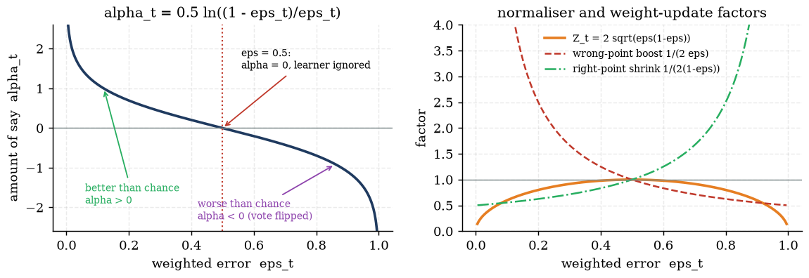
| $x_i$ | 0 | 1 | 2 | 3 | 4 | 5 | 6 | 7 | 8 | 9 |
|---|---|---|---|---|---|---|---|---|---|---|
| $w^{(1)}$ | 0.1000 | 0.1000 | 0.1000 | 0.1000 | 0.1000 | 0.1000 | 0.1000 | 0.1000 | 0.1000 | 0.1000 |
| $w^{(2)}$ | 0.0714 | 0.0714 | 0.0714 | 0.0714 | 0.0714 | 0.0714 | 0.1667 | 0.1667 | 0.1667 | 0.0714 |
| $w^{(3)}$ | 0.0455 | 0.0455 | 0.0455 | 0.1667 | 0.1667 | 0.1667 | 0.1061 | 0.1061 | 0.1061 | 0.0455 |
| $w^{(4)}$ | 0.1250 | 0.1250 | 0.1250 | 0.1019 | 0.1019 | 0.1019 | 0.0648 | 0.0648 | 0.0648 | 0.1250 |

Final ensemble. $F_3(x)=0.423649\,h_1(x)+0.649641\,h_2(x)+0.752039\,h_3(x)$, total say $\sum_t\alpha_t=1.825329$. Evaluating on the training set:
| $x_i$ | 0 | 1 | 2 | 3 | 4 | 5 | 6 | 7 | 8 | 9 |
|---|---|---|---|---|---|---|---|---|---|---|
| $F_3(x_i)$ | 0.3213 | 0.3213 | 0.3213 | −0.5260 | −0.5260 | −0.5260 | 0.9780 | 0.9780 | 0.9780 | −0.3213 |
| $H(x_i)$ | +1 | +1 | +1 | −1 | −1 | −1 | +1 | +1 | +1 | −1 |
| margin $y_iF_3(x_i)$ | 0.3213 | 0.3213 | 0.3213 | 0.5260 | 0.5260 | 0.5260 | 0.9780 | 0.9780 | 0.9780 | 0.3213 |
All ten margins are positive (minimum $0.3213$), so the training error is $0$ — achieved by three stumps none of which is better than $70\%$ accurate on its own.
Interpretation. Note what did not happen: no individual $\epsilon_t$ got close to zero (they were $0.30$, $0.21$, $0.18$), and no stump ever saw more than one threshold. The zero training error is a property of the weighted vote, not of any member. Note also that $\epsilon_t$ decreased monotonically here; that is common but not guaranteed — what is guaranteed is that $\epsilon_t<\tfrac12$ can always be achieved as long as some weak learner beats chance on the current weighting.
What breaks it. Flip the label at $x=9$ to $+1$ and the data become separable by a single stump; boosting then finishes in one round with $\alpha_1=\infty$. At the other extreme, if the labels were pure noise, no stump would beat $\epsilon=0.5$, all $\alpha_t$ would be $\approx 0$, and AdaBoost would output a constant.
Code — AdaBoost from scratch, the §12.2 loop verbatim (numpy)
import numpy as np
x = np.arange(10.0).reshape(-1, 1) # the section 12.6 dataset
y = np.array([1, 1, 1, -1, -1, -1, 1, 1, 1, -1]) # labels MUST be -1 / +1
def best_stump(X, y, w):
"""h(x) = s * sign(x - theta): exhaustive search for the smallest WEIGHTED error."""
best = None
for j in range(X.shape[1]):
v = np.unique(X[:, j])
for theta in (v[:-1] + v[1:]) / 2.0: # midpoint thresholds only
for s in (1, -1):
h = np.where(X[:, j] > theta, s, -s)
eps = w[h != y].sum() # eps_t = sum of w over WR
if best is None or eps < best[0]:
best = (eps, j, theta, s)
return best
def adaboost(X, y, T):
N = len(y)
w = np.full(N, 1.0 / N) # w_i^(1) = 1/N
model = []
for t in range(T):
eps, j, theta, s = best_stump(X, y, w)
eps = np.clip(eps, 1e-12, 1 - 1e-12) # eps = 0 would send alpha to infinity
alpha = 0.5 * np.log((1 - eps) / eps) # amount of say
h = np.where(X[:, j] > theta, s, -s)
w = w * np.exp(-alpha * y * h) # y*h = +1 correct, -1 wrong
w = w / w.sum() # Z_t = 2 sqrt(eps (1 - eps)) at this alpha
model.append((alpha, j, theta, s))
return model
def score(model, X): # F_T(x) = sum_t alpha_t h_t(x)
return sum(a * np.where(X[:, j] > th, s, -s) for a, j, th, s in model)
model = adaboost(x, y, T=3)
np.sign(score(model, x)) # H(x); training error is 0 after 3 stumpsInterview line: three lines carry the whole algorithm — eps is a weighted sum, alpha = 0.5*log((1-eps)/eps) is the exact minimiser of the post-update weight mass (not a heuristic), and normalising by w.sum() is dividing by $Z_t$. Cost per round is the stump search, $O(Nd)$ per candidate threshold. Pitfalls: $\{0,1\}$ labels break every sign trick silently, and eps = 0 divides by zero — clip it.
12.7 Why exponential loss — the identity behind the whole algorithm
Nothing so far explained why the update multiplies by $e^{-\alpha_ty_ih_t}$ rather than anything else. The reason is a single identity.
Weights are exponential losses. With $F_t(\mathbf{x})=\sum_{s\le t}\alpha_sh_s(\mathbf{x})$,
$$w_i^{(t+1)}=\frac{\exp\!\left(-y_iF_t(\mathbf{x}_i)\right)}{N\prod_{s=1}^{t}Z_s}.$$Proof by induction. $t=0$: $w_i^{(1)}=1/N$ and $F_0\equiv0$, empty product $=1$. Inductive step:
$$w_i^{(t+1)}=\frac{w_i^{(t)}e^{-\alpha_ty_ih_t(\mathbf{x}_i)}}{Z_t} =\frac{\exp(-y_iF_{t-1}(\mathbf{x}_i))\,\exp(-\alpha_ty_ih_t(\mathbf{x}_i))}{N\left(\prod_{s<t}Z_s\right)Z_t} =\frac{\exp(-y_iF_t(\mathbf{x}_i))}{N\prod_{s\le t}Z_s}. \;\square$$Verified numerically on the worked example: the largest absolute discrepancy between the two sides at $t=3$ is below $10^{-12}$.
Summing both sides over $i$ (the left side sums to $1$) gives the second identity:
$$\frac1N\sum_{i=1}^{N}\exp\!\left(-y_iF_T(\mathbf{x}_i)\right)=\prod_{t=1}^{T}Z_t=\prod_{t=1}^{T}2\sqrt{\epsilon_t(1-\epsilon_t)}.$$Training-error bound. Because $\mathbb{1}(z\le 0)\le e^{-z}$ for all real $z$, putting $z=y_iF_T(\mathbf{x}_i)$:
$$\underbrace{\frac1N\sum_{i}\mathbb{1}\!\left(H(\mathbf{x}_i)\neq y_i\right)}_{\text{0/1 training error}}\;\le\;\frac1N\sum_i e^{-y_iF_T(\mathbf{x}_i)}\;=\;\prod_{t=1}^{T}2\sqrt{\epsilon_t(1-\epsilon_t)}.$$Writing $\epsilon_t=\tfrac12-\gamma_t$ (so $\gamma_t$ is the "edge" over chance), $2\sqrt{\epsilon_t(1-\epsilon_t)}=\sqrt{1-4\gamma_t^2}\le e^{-2\gamma_t^2}$, hence
$$\text{training error}\;\le\;\exp\!\left(-2\sum_{t=1}^{T}\gamma_t^2\right),$$which decays exponentially in $T$ as long as every learner has a bounded edge $\gamma_t\ge\gamma>0$. This is the theorem that made boosting famous: weak learnability implies strong learnability.
Interpretation. At $T=3$ the bound is $0.916515\times0.820652\times0.771389=0.580193$, which is a vacuous bound on an error that is already $0$ — and that is the point: the bound is loose, but it is monotone and it can only decrease, because $Z_t\le1$ whenever $\epsilon_t\le\tfrac12$. The exponential loss keeps falling long after the 0/1 error hits zero, and what it is buying in that regime is margin: every extra round pushes $y_iF_T(\mathbf{x}_i)$ further from zero. This is the standard explanation for AdaBoost's famous refusal to overfit immediately after reaching zero training error.
What breaks it. Exponential loss punishes a badly-misclassified point by $e^{|F|}$ — unboundedly. One mislabelled point can absorb almost all the weight within a few rounds. Logistic loss (used by gradient boosting, §13) grows only linearly in $|F|$ and is the standard fix.
12.8 Reweighting versus resampling
After the weights change, there are two ways to make the next learner actually feel them.
Resampling route. Draw a new training set of $N$ points with replacement, with $P(\text{pick }i)=w_i^{(t+1)}$, and fit the next learner unweighted on it. In the source's words: "the mistake obs. are having more prob. to get into new sample".
Penalty (reweighting) route. Keep all $N$ points and pass $\mathbf{w}^{(t+1)}$ into the learner's own criterion, so it minimises $\sum_i w_i\,\ell_i$ instead of $\sum_i\ell_i$. The source's rule: "If decision tree is used in AdaBoost → penalty method is used".
The source's split example, recomputed. Five observations carry the weights
| obs. | A | B | C | D | E |
|---|---|---|---|---|---|
| wt | 0.1 | 0.1 | 0.6 | 0.1 | 0.1 |
(C is the previously misclassified one.) Two candidate splits are on offer:
| candidate | points it gets wrong | unweighted error | weighted error $\sum_{\mathrm{WR}}w_i$ |
|---|---|---|---|
| split 1 | C only | 1/5 = 0.20 | 0.60 |
| split 2 | A, D, E | 3/5 = 0.60 | 0.30 |
Recomputed: split 1 has weighted error $0.6$, split 2 has weighted error $0.3$ — matching the source's arithmetic exactly. The tree therefore prefers split 2, sacrificing three cheap points (A, D, E at $0.1$ each) to rescue the one expensive point C.

Interpretation. On the unweighted counts split 1 is three times better; on the weighted counts split 2 is twice as good. The reweighting has flipped the argmin. That is the entire mechanism by which "focus on the mistakes" becomes an actual change in the fitted model — nothing about the tree-growing code changes, only the numbers it sums.
Adjudication 6 — the source's weight table is illustrative, not a literal AdaBoost state. If exactly one of five equally weighted points were misclassified, then $\epsilon=0.2$ and §12.5 gives the wrong point $0.2/(2\cdot0.2)=0.5$ and each right point $0.2/(2\cdot0.8)=0.125$, i.e. the table would read $(0.125,0.125,0.5,0.125,0.125)$ — not $(0.1,0.1,0.6,0.1,0.1)$. The source's numbers sum to $1$ and make the point cleanly, but they are round figures rather than an actual update. Reassuringly the conclusion is unchanged under the true weights: split 1 then costs $0.5$ and split 2 costs $0.375$, so split 2 still wins.
Reading the source's last sentence. As written it runs "Tree will prefer split 2. so that it can correctly classify the errored C the tree misclassifies three points". The intended reading is: the tree prefers split 2 so that it can correctly classify the errored point C, even though in doing so it misclassifies three points.
Interpretation. The two routes are equivalent in expectation: a weighted bootstrap draw of size $N$ puts an expected $N w_i$ copies of point $i$ into the sample. With the table above, C's expected multiplicity is $5\times0.6=3.0$ against $0.5$ for each of the others. But expectation is not realisation: with probability $(1-0.6)^5=0.0102$ the resampled set contains no copy of C at all, and that round's learner is then blind to the exact point boosting was trying to fix. Reweighting has zero such variance, which is exactly why the source says to use it whenever the base learner (a tree) accepts weights.
What breaks it. Resampling remains the only option when the base learner has no weight interface (many library estimators, and sklearn's AdaBoostRegressor, which resamples internally). It also injects a little extra diversity, which occasionally helps.
Code — AdaBoostClassifier, the penalty route, and the staged error curve (sklearn)
from sklearn.datasets import make_classification
from sklearn.ensemble import AdaBoostClassifier
from sklearn.model_selection import train_test_split
from sklearn.tree import DecisionTreeClassifier
X, y = make_classification(n_samples=800, n_features=10, n_informative=4, random_state=0)
Xtr, Xte, ytr, yte = train_test_split(X, y, test_size=0.3, stratify=y, random_state=0)
ada = AdaBoostClassifier(
estimator=DecisionTreeClassifier(max_depth=1), # the canonical weak learner: a stump.
# Deeper trees drive eps -> 0 and alpha -> inf
n_estimators=300,
learning_rate=0.5, # shrinkage on every alpha_t; halving it roughly doubles the T you need
algorithm="SAMME", # discrete AdaBoost (SAMME.R was removed in sklearn 1.6)
random_state=0,
).fit(Xtr, ytr) # trees accept sample_weight, so sklearn uses the PENALTY route
ada.estimator_errors_ # the eps_t per round
ada.estimator_weights_ # the alpha_t (already multiplied by learning_rate)
staged = list(ada.staged_score(Xte, yte)) # accuracy after 1, 2, ... T learners: free tuning curveInterview line: staged_score / staged_decision_function give the whole $T$-curve from one fit, so never grid-search n_estimators — read it off. Say that trees take sample_weight, which is why sklearn reweights rather than resamples here (§12.8), and that no feature scaling is needed since stumps are invariant to monotone transforms. Pitfall: learning_rate and n_estimators must be tuned as a pair.
12.9 AdaBoost.R2 — boosting for regression
Adjudication 7 — the name. The heading is written "Ababoost. R2" with a clear "b" as the third letter. The algorithm is AdaBoost.R2 (Drucker, 1997).
The classification algorithm needs $y\in\{-1,+1\}$ everywhere. AdaBoost.R2 keeps the skeleton — weights, a per-round confidence, a reweighting rule — but replaces "misclassified / not" with a graded loss in $[0,1]$.
AdaBoost.R2. Data $\{(\mathbf{x}_i,y_i)\}_{i=1}^N$, $\mathbf{x}_i\in\mathbb{R}^d$, $y_i\in\mathbb{R}$.
- Initialise $w_i^{(1)}=1/N$.
- For $t=1,\dots,T$:
- Fit a weak regressor $g_t(\mathbf{x})$ to the (weighted) data. $\mathbf{g}_t$ is $(N\times1)$.
- Absolute errors $D_i=\left|g_t(\mathbf{x}_i)-y_i\right|$, shape $(N\times1)$.
- Normalising constant $D_{\max}=\max_{i} D_i$.
- Per-sample loss $L_i=D_i/D_{\max}\in[0,1]$.
- Average loss $\bar L_t=\sum_{i=1}^{N}w_i^{(t)}L_i$.
- Model confidence factor $\displaystyle \beta_t=\frac{\bar L_t}{1-\bar L_t}$ (smaller = more accurate).
- Reweight and normalise: $$w_i^{(t+1)}=\frac{w_i^{(t)}\,\beta_t^{\,1-L_i}}{Z_t},\qquad Z_t=\sum_{j=1}^{N}w_j^{(t)}\beta_t^{\,1-L_j}.$$
- Stop if $\bar L_t\ge\tfrac12$.
- Predict by the weighted median of $g_1(\mathbf{x}),\dots,g_T(\mathbf{x})$ with weights $\ln(1/\beta_t)$ (§12.9.2).
Adjudication 8 — three defects in the source's statement, all repaired above.
- $D_{\max}=\max_{j}D_i$ is written with mismatched indices; it must be $\max_i D_i$ over the same index that ranges in $D_i$.
- The source instructs "and the normalize wt." but never gives the normaliser. It is $Z_t=\sum_j w_j^{(t)}\beta_t^{1-L_j}$ — the same "divide by the total" device as in classification.
- The source claims $\beta_t\in[0,1]$. In fact $\beta_t=\bar L_t/(1-\bar L_t)$ is increasing in $\bar L_t$ and equals $1$ at $\bar L_t=\tfrac12$: $\bar L_t=0.2\Rightarrow\beta=0.25$, $\bar L_t=0.5\Rightarrow\beta=1$, $\bar L_t=0.8\Rightarrow\beta=4$. So $\beta_t\in[0,1]$ iff $\bar L_t\le\tfrac12$; the claim is a consequence of the stopping rule, not an identity. Since $L_i\in[0,1]$ and weights sum to $1$, $\bar L_t\in[0,1]$ always, so $\beta_t\in[0,\infty)$ in general.
Gotcha — why $\beta_t<1$ is the whole ballgame. Since $L_i\in[0,1]$, the exponent $1-L_i\in[0,1]$. With $\beta_t<1$: the best-fitted point ($L_i=0$) is multiplied by $\beta_t^{1}=\beta_t$, its maximum shrinkage, while the worst point ($L_i=1$) is multiplied by $\beta_t^{0}=1$, untouched. After renormalisation the worst point's relative weight therefore rises. If $\beta_t>1$ the whole thing runs in reverse and boosting would reward the points it already fits — which is exactly why the algorithm halts at $\bar L_t\ge\tfrac12$.
12.9.1 Worked example (the source gives none)
Data. $N=7$, $d=1$, a V-shaped target $y=(x-4)^2+1$ on $x=1,\dots,7$:
| $x_i$ | 1 | 2 | 3 | 4 | 5 | 6 | 7 |
|---|---|---|---|---|---|---|---|
| $y_i$ | 10 | 5 | 2 | 1 | 2 | 5 | 10 |
Weak regressor. A weighted regression stump: choose a threshold $\theta$, predict the weighted mean of $y$ on each side. Base learner is a tree, so we take the penalty route of §12.8. Linear loss ($L_i=D_i/D_{\max}$), $T=4$.
Round 1 in full. Best stump: $\theta=1.5$, left value $10$, right value $4.166667$. Then
| $x_i$ | 1 | 2 | 3 | 4 | 5 | 6 | 7 |
|---|---|---|---|---|---|---|---|
| $g_1(x_i)$ | 10.0000 | 4.1667 | 4.1667 | 4.1667 | 4.1667 | 4.1667 | 4.1667 |
| $D_i$ | 0.0000 | 0.8333 | 2.1667 | 3.1667 | 2.1667 | 0.8333 | 5.8333 |
| $L_i=D_i/5.8333$ | 0.0000 | 0.1429 | 0.3714 | 0.5429 | 0.3714 | 0.1429 | 1.0000 |
| $\beta_1^{1-L_i}$ | 0.5806 | 0.6275 | 0.7106 | 0.7800 | 0.7106 | 0.6275 | 1.0000 |
| $w_i^{(2)}$ | 0.11528 | 0.12459 | 0.14107 | 0.15485 | 0.14107 | 0.12459 | 0.19854 |
with $D_{\max}=5.8333$ (at $x=7$), $\bar L_1=\frac17\sum_iL_i=0.367347$, $\beta_1=\dfrac{0.367347}{1-0.367347}=0.580645$, $\ln(1/\beta_1)=0.543615$, $Z_1=0.719543$.
Sanity: $x=1$ is fitted exactly ($L=0$), so its weight is multiplied by the smallest factor $\beta_1$ and falls from $0.142857$ to $0.11528$; $x=7$ is the worst ($L=1$), its factor is $1$, and its weight rises to $0.19854$. Weights still sum to $1$.
| $t$ | stump $\theta$ | left value | right value | $D_{\max}$ | $\bar L_t$ | $\beta_t$ | $\ln(1/\beta_t)$ | $Z_t$ |
|---|---|---|---|---|---|---|---|---|
| 1 | 1.5 | 10.000000 | 4.166667 | 5.8333 | 0.367347 | 0.580645 | 0.543615 | 0.719543 |
| 2 | 6.5 | 3.890213 | 10.000000 | 6.1098 | 0.321084 | 0.472936 | 0.748796 | 0.616781 |
| 3 | 1.5 | 10.000000 | 4.097409 | 5.9026 | 0.371419 | 0.590884 | 0.526136 | 0.728924 |
| 4 | 6.5 | 4.032809 | 10.000000 | 5.9672 | 0.365365 | 0.575710 | 0.552152 | 0.715834 |

Interpretation. The stumps alternate: round 1 isolates the left end, so round 2's weights make the right end the expensive region and the threshold jumps to $6.5$; round 3 swings back. Note $\beta_2=0.4729$ is the smallest, i.e. round 2 was the most confident learner and it earns the largest vote $\ln(1/\beta_2)=0.7488$. The weight peaks in the right panel sit at $x=1$, $x=4$ and $x=7$ — the two ends that a single stump cannot serve simultaneously, plus the valley that neither of the two stump shapes reaches.
12.9.2 The weighted-median prediction rule
Rule. For a new input $\mathbf{x}$: sort $g_1(\mathbf{x}),\dots,g_T(\mathbf{x})$ in ascending order of predicted value; carry each learner's weight $\ln(1/\beta_t)$ along with it; take the running cumulative sum of those weights; the first prediction at which the cumulative sum reaches half of the total weight is the output.
Formally, with $\pi$ the sorting permutation and $W=\sum_t\ln(1/\beta_t)$,
$$\hat y(\mathbf{x})=g_{\pi(k^\star)}(\mathbf{x}),\qquad k^\star=\min\Big\{k:\ \textstyle\sum_{j\le k}\ln(1/\beta_{\pi(j)})\ \ge\ \tfrac12 W\Big\}.$$Worked at $x=7$. The four learners predict $g_1=4.166667$, $g_2=10$, $g_3=4.097409$, $g_4=10$. Sorted ascending:
| position $k$ | learner | $g_t(7)$ | $\ln(1/\beta_t)$ | cumulative | $\ge \tfrac12W=1.185349$? |
|---|---|---|---|---|---|
| 1 | $g_3$ | 4.097409 | 0.526136 | 0.526136 | no |
| 2 | $g_1$ | 4.166667 | 0.543615 | 1.069751 | no |
| 3 | $g_2$ | 10.000000 | 0.748796 | 1.818547 | yes |
| 4 | $g_4$ | 10.000000 | 0.552152 | 2.370698 | — |
Total weight $W=2.370698$, half of it $1.185349$; the first crossing is at position 3, so $\hat y(7)=10.0000$ — the true value. For contrast, the weighted mean of the same four predictions is $7.3524$, an error of $2.65$.
Interpretation — the source's "mitigate outliers" remark, quantified. Corrupt one learner so that $g_2(7)$ returns $500$ instead of $10$. The weighted median does not move at all (still $10.0000$, shift $0$), because the median only cares about which side of the halfway mark a prediction falls on, not how far out it is. The weighted mean explodes from $7.3524$ to $162.1211$ — a shift of $154.77$. A weighted median has breakdown point $\tfrac12$ in weight: you must corrupt learners holding more than half the total $\ln(1/\beta_t)$ mass before the output can be dragged anywhere.
What breaks it. The output is always one of the $T$ predictions, never an interpolation, so an R2 ensemble of $T$ stumps can take at most $T$ distinct values at any $x$. On this 7-point example that is a real limitation: the median ensemble's training MAE is $2.1429$, identical to the single first stump's $2.1429$ — four stumps that alternate between two shapes give the median nothing new to choose from. AdaBoost.R2 needs base learners with enough resolution (deeper trees) and enough data to earn its keep.
Gotcha — R2 stalls far more easily than you expect. The stopping test $\bar L_t\ge\tfrac12$ fires whenever the errors are spread out, because the linear loss divides by the single largest error. Take the staircase $y=(2,2,2,6,6,6,10,10,10)$ on $x=1,\dots,9$ and the natural stump $\theta=3.5$ (left $=2$, right $=8$): the errors are $D=(0,0,0,2,2,2,2,2,2)$, $D_{\max}=2$, so $L=(0,0,0,1,1,1,1,1,1)$ and $\bar L_1=0.6667\ge\tfrac12$ — AdaBoost.R2 refuses to take even one step, on data a two-stump ensemble fits perfectly. Boosting proceeds only when the error mass is concentrated on a few points. Switching to the square loss usually helps, because squaring pushes small relative errors towards $0$: on round 1 of the worked example the square loss gives $\bar L_1=0.2302$ (versus $0.3673$ linear) and hence a much more decisive $\beta_1=0.2990$ (versus $0.5806$).
Code — AdaBoostRegressor (R2) and the weighted-median rule (sklearn / numpy)
import numpy as np
from sklearn.ensemble import AdaBoostRegressor
from sklearn.tree import DecisionTreeRegressor
r2 = AdaBoostRegressor(
estimator=DecisionTreeRegressor(max_depth=3), # NOT a stump: the weighted median can only
# return one of the T predictions, so the
# base learners need resolution
n_estimators=200,
learning_rate=1.0,
loss="linear", # L_i = D_i / D_max. "square" chases big errors, "exponential" is mildest
random_state=0,
).fit(Xtr_r, ytr_r)
r2.estimator_weights_ # ln(1/beta_t), the vote of each learner
r2.estimator_errors_ # the average loss L_bar_t; the loop stops early once L_bar_t >= 0.5
def weighted_median(preds, w):
"""Section 12.9.2: sort by predicted value, walk the cumulative weight, stop at half."""
o = np.argsort(preds)
c = np.cumsum(w[o])
return preds[o][np.searchsorted(c, 0.5 * c[-1])]
per_learner = np.array([e.predict(Xte_r) for e in r2.estimators_]) # (T x n_test)
manual = np.array([weighted_median(per_learner[:, i], r2.estimator_weights_)
for i in range(Xte_r.shape[0])])
np.allclose(manual, r2.predict(Xte_r)) # reproduces sklearn's own aggregationInterview line: R2 differs from classification in three places only — a graded loss $L_i=D_i/D_{\max}\in[0,1]$, confidence $\beta_t=\bar L_t/(1-\bar L_t)$, and a weighted median instead of a weighted sum, which is what gives it a breakdown point of half the vote mass. Pitfall: AdaBoostRegressor has no sample_weight interface into the base learner, so it takes the resampling route — results are stochastic, always set random_state. It also stops silently when $\bar L_t\ge\tfrac12$, which the linear loss triggers easily on spread-out errors, so check len(r2.estimators_) against n_estimators.
12.10 Hyperparameters and failure modes
| Hyperparameter | Symbol / sklearn | What it does | How it fails |
|---|---|---|---|
| Number of weak learners | n_estimators ($T$) | Length of the sequential loop. | Too few: underfit (the ensemble never earns enough margin). Too many with noisy labels: the exponential loss eventually chases the mislabelled points. |
| Learning rate / shrinkage | learning_rate ($\eta$), $\alpha_{\text{new}}=\eta\,\alpha$ | Scales down every learner's vote, so "shrinks every tree's contribution". | Interacts with $T$: halving $\eta$ roughly doubles the $T$ you need. Tune the pair, never one alone. |
| Base learner depth | max_depth (usually 1) | Stumps are the canonical choice; depth-1 keeps each learner genuinely weak. | Deep trees drive $\epsilon_t\to0$, $\alpha_t\to\infty$, and boosting degenerates into "one strong learner + noise". |
| Loss (regression only) | loss: linear (default), square, exponential | Shape of $L_i$ in AdaBoost.R2: linear $D_i/D_{\max}$; square $(D_i/D_{\max})^2$; exponential $1-e^{-D_i/D_{\max}}$. | Square focuses hardest on big errors (outlier-sensitive); exponential saturates and is the mildest; linear sits between and stalls most easily (see §12.9.2). |
Five things that bite in practice.
- Labels must be $\pm1$. Feed $\{0,1\}$ and $y_ih_t(\mathbf{x}_i)$ becomes $0$ for every negative-class point, so half your data stops being reweighted at all — silently.
- $\epsilon_t=0$ divides by zero. A base learner that fits the weighted data perfectly gives $\alpha_t=\infty$. Libraries clip $\epsilon_t$ or stop early; if you implement it yourself, clip to $[\varepsilon_{\text{machine}},\,1-\varepsilon_{\text{machine}}]$.
- $\epsilon_t>0.5$ is not a bug for binary problems — the negative $\alpha_t$ just flips the learner. It is fatal for multiclass (SAMME requires $\epsilon_t<1-1/K$), where most implementations abort the loop.
- Outliers and mislabels dominate. A permanently misclassified point's weight grows like $\prod_t 1/(2\epsilon_t)>1$ per round. Clean your labels before boosting, or use a bounded loss.
- Never scale features expecting a change. Stumps are invariant to monotone feature transforms, so standardisation does nothing for AdaBoost-with-stumps — unlike SVM (§17) or KNN (§8).
Section recap.
- AdaBoost fits weak learners sequentially on a reweighted dataset: $\epsilon_t=\sum_{\mathrm{WR}}w_i^{(t)}$, $\alpha_t=\tfrac12\ln\frac{1-\epsilon_t}{\epsilon_t}$, $w_i^{(t+1)}\propto w_i^{(t)}e^{-\alpha_ty_ih_t(\mathbf{x}_i)}$, $H=\operatorname{sign}\sum_t\alpha_th_t$.
- $\alpha_t$ is not a heuristic: it is the exact minimiser of the post-update weight mass $Z_t=\epsilon_te^{\alpha}+(1-\epsilon_t)e^{-\alpha}$, and that minimum is $Z_t=2\sqrt{\epsilon_t(1-\epsilon_t)}$.
- The update leaves the wrong and right groups holding exactly $\tfrac12$ the weight each.
- Normalised weights are rescaled exponential losses, $w_i^{(t+1)}\propto e^{-y_iF_t(\mathbf{x}_i)}$, which gives the bound $\text{train err}\le\prod_t2\sqrt{\epsilon_t(1-\epsilon_t)}\le e^{-2\sum_t\gamma_t^2}$.
- Reweighting (penalty) is preferred over resampling whenever the base learner accepts weights — which trees do.
- AdaBoost.R2 replaces the 0/1 error with a normalised loss $L_i\in[0,1]$, uses $\beta_t=\bar L_t/(1-\bar L_t)$ as confidence, and predicts by the weighted median with weights $\ln(1/\beta_t)$.
- Next: §13 replaces "reweight the data" with "fit the negative gradient", which frees boosting from the exponential loss entirely.
12.11 Practice
Practice 12.1 — A weak learner achieves weighted error $\epsilon_t=0.25$. Compute $\alpha_t$, $Z_t$, and the multiplicative factor applied to a correctly classified point's weight.
$\alpha_t=\tfrac12\ln\frac{0.75}{0.25}=\tfrac12\ln3=0.549306$.
$Z_t=2\sqrt{0.25\times0.75}=2\sqrt{0.1875}=0.866025$.
A correct point is multiplied by $\dfrac{1}{2(1-\epsilon_t)}=\dfrac{1}{2\times0.75}=0.666667$; a wrong point by $\dfrac{1}{2\epsilon_t}=\dfrac{1}{0.5}=2$.
Check the 50/50 property: correct mass $0.75\times0.666667=0.5$, wrong mass $0.25\times2=0.5$. ✓
Practice 12.2 — In the §12.6 example, verify $w^{(3)}$ at $x=3$ and at $x=6$ from $w^{(2)}$ by hand, using only $\epsilon_2$.
Round 2's stump ($\theta=8.5$, $-1$ to the right) misclassifies $x\in\{3,4,5\}$ and has $\epsilon_2=0.214286$.
$x=3$ is wrong: $w^{(3)}_{x=3}=\dfrac{w^{(2)}_{x=3}}{2\epsilon_2}=\dfrac{0.071429}{2\times0.214286}=\dfrac{0.071429}{0.428571}=0.166667$. ✓ (table value $0.1667$)
$x=6$ is right: $w^{(3)}_{x=6}=\dfrac{w^{(2)}_{x=6}}{2(1-\epsilon_2)}=\dfrac{0.166667}{2\times0.785714}=\dfrac{0.166667}{1.571429}=0.106061$. ✓ (table value $0.1061$)
Sum check: $3(0.045455)+3(0.166667)+3(0.106061)+0.045455=1$.
Practice 12.3 — Show that if $h_{t+1}=h_t$ (the same learner refitted), then $\epsilon_{t+1}=\tfrac12$ and $\alpha_{t+1}=0$.
$h_{t+1}=h_t$ misclassifies exactly the set $\mathrm{WR}$ that $h_t$ misclassified. Its weighted error under the new weights is
$$\epsilon_{t+1}=\sum_{i\in\mathrm{WR}}w_i^{(t+1)}=\tfrac12$$by the 50/50 property of §12.5. Then $\alpha_{t+1}=\tfrac12\ln\frac{1-1/2}{1/2}=\tfrac12\ln1=0$.
Interpretation. A repeat of the previous learner gets exactly zero vote and leaves all weights unchanged, so AdaBoost cannot stall by looping on one hypothesis: it either finds something new or contributes nothing.
Practice 12.4 — Ten rounds each with $\epsilon_t=0.4$. What does the training-error bound give, and what is the edge-form bound?
Per round, $Z_t=2\sqrt{0.4\times0.6}=2\sqrt{0.24}=0.979796$.
Bound after $T=10$: $Z^{10}=0.979796^{10}=0.815373$.
Edge form: $\gamma_t=0.5-0.4=0.1$, so $e^{-2T\gamma^2}=e^{-2\times10\times0.01}=e^{-0.2}=0.818731$, which is (correctly) slightly looser than the exact product.
Interpretation. With only a $0.1$ edge the guarantee is nearly useless at $T=10$; you need $T\approx 115$ before $e^{-2T\gamma^2}$ drops below $0.1$. Weak learners with tiny edges need many rounds — that is the practical content of the theorem.
Practice 12.5 — An AdaBoost.R2 round produces absolute errors $D=(1,\,2,\,8)$ with weights $w=(0.5,\,0.3,\,0.2)$. Compute $L_i$, $\bar L$, $\beta$, the unnormalised update factors, and the new weights.
$D_{\max}=8$, so $L=(0.125,\,0.25,\,1)$.
$\bar L=0.5(0.125)+0.3(0.25)+0.2(1)=0.0625+0.075+0.2=0.3375$.
$\beta=\dfrac{0.3375}{1-0.3375}=\dfrac{0.3375}{0.6625}=0.509434$; the round is kept because $\bar L<0.5$. Learner weight $\ln(1/\beta)=0.674455$.
Factors $\beta^{1-L_i}$: $0.509434^{0.875}=0.554245$; $0.509434^{0.75}=0.602998$; $0.509434^{0}=1$.
Unnormalised: $(0.5\times0.554245,\;0.3\times0.602998,\;0.2\times1)=(0.277123,\;0.180899,\;0.2)$, so $Z=0.658022$.
Normalised: $w'=(0.421145,\;0.274914,\;0.303941)$, summing to $1$.
Interpretation. The worst point's weight rises from $0.2$ to $0.3039$ while the best point's falls from $0.5$ to $0.4211$ — the worst point overtakes the middle one, and the ordering of the last two is reversed. It does not overtake the first point in one round: reweighting shifts relative attention gradually, it does not invert the whole weight vector at a stroke.
Practice 12.6 — Three AdaBoost.R2 learners predict $(3,\,20,\,5)$ at a query point with $\beta=(0.2,\,0.9,\,0.5)$. Give the weighted-median output and compare with the weighted mean.
Weights: $\ln(1/0.2)=1.609438$, $\ln(1/0.9)=0.105361$, $\ln(1/0.5)=0.693147$. Total $W=2.407946$, half $=1.203973$.
Sort by prediction: $3$ (weight $1.609438$), $5$ (weight $0.693147$), $20$ (weight $0.105361$).
Cumulative: $1.609438\ge1.203973$ at the very first position ⇒ output $\hat y=3$.
Weighted mean: $\dfrac{3(1.609438)+20(0.105361)+5(0.693147)}{2.407946}=\dfrac{4.828314+2.107210+3.465736}{2.407946}=\dfrac{10.401260}{2.407946}=4.319558$.
Interpretation. The learner predicting $20$ is also the least confident ($\beta=0.9$, nearly the $\beta=1$ cut-off), so it holds only $4.4\%$ of the vote . The median discards it outright; the mean still lets it pull the answer up by more than $1.3$. This is the "mitigate outliers" argument of hand p11 in miniature.
13 Gradient Boosting & the XGBoost Family
AdaBoost (§12) builds an ensemble by re-weighting samples. Gradient boosting builds one by re-targeting the labels: every new tree is fitted not to $y$ but to the direction in which the current model most wants to move. That single change turns boosting from an algorithm tied to one particular loss (exponential loss) into a general optimisation scheme that works for squared error, log-loss, Poisson deviance, ranking losses — anything differentiable. XGBoost then takes that scheme, adds a second-order (Newton) term and an explicit complexity penalty, and the resulting closed-form leaf weight and split gain are what the whole modern boosting industry runs on.
n_estimators), $\nu$ (equivalently $\eta$, learning_rate) the shrinkage factor,
$T$ the number of leaves of one tree, $R_{jm}$ the $j$-th terminal region (leaf) of the $m$-th tree,
$\gamma_{jm}$ (XGBoost writes $w_j$) its output value. The handwritten source uses $\nu$ on p11–p13 and
$\eta$ on p13; they are the same learning rate — this section writes $\nu$ for regression and $\eta$ for
the classification example, matching each source page.13.1 Gradient boosting as gradient descent in function space
Ordinary gradient descent (§4) moves a parameter vector $\boldsymbol\theta$ against the gradient. Gradient boosting moves the function itself. Treat the $n$ numbers $\big(F(\mathbf{x}_1), \dots, F(\mathbf{x}_n)\big)$ — a vector of shape $(n \times 1)$ — as the optimisation variable, and write the total training loss as
$$L(F) \;=\; \sum_{i=1}^{n} \ell\big(y_i,\; F(\mathbf{x}_i)\big).$$The gradient of $L$ with respect to that $(n \times 1)$ vector has $i$-th component $\partial \ell / \partial F(\mathbf{x}_i)$. A steepest-descent step of size $\nu$ would set
$$F_m(\mathbf{x}_i) \;=\; F_{m-1}(\mathbf{x}_i) \;+\; \nu\, r_{im}, \qquad r_{im} \;=\; -\left[\frac{\partial \ell\big(y_i, F(\mathbf{x}_i)\big)}{\partial F(\mathbf{x}_i)}\right]_{F=F_{m-1}} .$$The catch: $r_{im}$ is defined only at the $n$ training points; it is a vector, not a function, so it cannot predict on new $\mathbf{x}$. Gradient boosting fixes this by fitting a regression tree to the negative-gradient vector, which extends the step to all of $\mathbb{R}^d$. Hence the name: each tree is a (piecewise-constant) approximation of the negative gradient.
13.2 Gradient boosting for regression — the algorithm
- Step 1 — initialise. $F_0(\mathbf{x}) = \arg\min_{c}\sum_i \ell(y_i, c)$. For squared loss this is the mean $\bar y$.
- Step 2 — for $m = 1 \dots M$:
- pseudo-residuals $r_{im} = -\big[\partial \ell(y_i, F(\mathbf{x}_i))/\partial F(\mathbf{x}_i)\big]_{F=F_{m-1}} \;=\; y_i - F_{m-1}(\mathbf{x}_i)$ for squared loss;
- fit a regression tree to the pairs $(\mathbf{x}_i, r_{im})$, giving terminal regions $R_{jm}$, $j = 1 \dots T_m$;
- choose each leaf value by a line search inside the leaf, $\displaystyle \gamma_{jm} = \arg\min_{\gamma} \sum_{\mathbf{x}_i \in R_{jm}} \ell\big(y_i,\; F_{m-1}(\mathbf{x}_i) + \gamma\big)$;
- update $\displaystyle F_m(\mathbf{x}) = F_{m-1}(\mathbf{x}) + \nu \sum_{j} \gamma_{jm}\, \mathbb{1}(\mathbf{x} \in R_{jm})$, where $\mathbb{1}(\cdot) = 1$ iff $\mathbf{x}$ falls in leaf $j$.
- Step 3 — output $\displaystyle F_M(\mathbf{x}) = F_0(\mathbf{x}) + \nu\sum_{m=1}^{M}\text{Tree}_m(\mathbf{x})$.
13.3 Worked example: the salary table, recomputed
Four points, experience $x$ against salary $y$, learning rate $\nu = 0.1$, stumps (depth-1 trees).
13.3.1 Filling the source's first derivation gap: why the split is $x \le 2.5$
Hand p12 asserts "suppose the best split $x \le 2.5$ using gain in SSE" and only shows the winning split's numbers. A stump on four distinct $x$ values has exactly three candidate thresholds — the midpoints $1.5,\,2.5,\,3.5$. For each, the CART regression criterion (§10) evaluates
$$\text{SSE}(S) = \sum_{i \in S}\big(r_i - \bar r_S\big)^2, \qquad \text{gain} = \text{SSE}_{\text{root}} - \big(\text{SSE}_{L} + \text{SSE}_{R}\big).$$The root SSE is $\sum_i (r_{i1} - 0)^2 = 400+100+100+400 = 1000$.
| candidate | left residuals | right residuals | SSE$_L$ | SSE$_R$ | gain |
|---|---|---|---|---|---|
| $x \le 1.5$ | $-20$ | $-10,\,10,\,20$ | 0 | 466.67 | 533.33 |
| $x \le 2.5$ | $-20,\,-10$ | $10,\,20$ | 50 | 50 | 900 |
| $x \le 3.5$ | $-20,\,-10,\,10$ | $20$ | 466.67 | 0 | 533.33 |
So the source's "$x \le 2.5$" is confirmed, and its "SSE $=50$, SSE $=50$, Total SSE $=100$" are the two child SSEs and their sum. The leaf values are the mean residuals, $\gamma_{1,L} = -15$ and $\gamma_{1,R} = +15$.
13.3.2 The full two-round table
| $x$ | $y$ | $F_0$ | $r_1 = y - F_0$ | tree 1 output | $F_1 = F_0 + \nu\gamma_1$ | $r_2 = y - F_1$ | tree 2 output | $F_2 = F_1 + \nu\gamma_2$ | $r_3$ |
|---|---|---|---|---|---|---|---|---|---|
| 1 | 30 | 50 | $-20$ | $-15$ | 48.5 | $-18.5$ | $-13.5$ | 47.15 | $-17.15$ |
| 2 | 40 | 50 | $-10$ | $-15$ | 48.5 | $-8.5$ | $-13.5$ | 47.15 | $-7.15$ |
| 3 | 60 | 50 | $+10$ | $+15$ | 51.5 | $+8.5$ | $+13.5$ | 52.85 | $+7.15$ |
| 4 | 70 | 50 | $+20$ | $+15$ | 51.5 | $+18.5$ | $+13.5$ | 52.85 | $+17.15$ |
Arithmetic, one row at a time: $F_1(1) = 50 + 0.1\times(-15) = 48.5$; $F_1(3) = 50 + 0.1\times(+15) = 51.5$. Second round: the residuals are now $60 - 51.5 = 8.5$ and $70 - 51.5 = 18.5$, the split search again returns $x \le 2.5$ (gain 729 out of a root SSE of 829 ), the leaf means are $\pm 13.5$, and $F_2(1) = 48.5 + 0.1\times(-13.5) = 47.15$, $F_2(3) = 51.5 + 0.1\times 13.5 = 52.85$.
- Rows 3–4 of the $F_1$ column are written 57.5. The recomputed value is 51.5 ($50 + 0.1\times 15$). The written 57.5 is internally inconsistent with the source's own next column: the page's $r_2 = 8.5$ requires $60 - F_1 = 8.5$, i.e. $F_1 = 51.5$. The transcript flags the middle glyph as the writer's "7" shape; the arithmetic and the rest of the page both say 1. 51.5 is correct.
- Row 1 of the $F_2$ column is written 17.15; the recomputed value is 47.15 ($48.5 + 0.1\times(-13.5)$), identical to row 2 because both rows sit in the same leaf. A dropped "4". 47.15 is correct.
Code — gradient boosting from scratch, the §13.2 loop on the salary table (numpy / sklearn)
import numpy as np
from sklearn.tree import DecisionTreeRegressor
X = np.array([[1.0], [2.0], [3.0], [4.0]]) # experience
y = np.array([30.0, 40.0, 60.0, 70.0]) # salary
nu, M = 0.1, 2 # learning rate, boosting rounds
F0 = y.mean() # F_0 = argmin_c sum (y_i - c)^2 = ybar = 50
F = np.full_like(y, F0)
trees = []
for m in range(M):
r = y - F # pseudo-residual: for squared loss it IS the residual
tree = DecisionTreeRegressor(max_depth=1).fit(X, r) # a stump fitted to the residuals;
trees.append(tree) # its leaves already hold the MEAN residual,
F = F + nu * tree.predict(X) # which is the exact leaf line search here
def predict(Xnew): # F_M(x) = F_0 + nu * sum_m Tree_m(x)
return F0 + nu * sum(t.predict(Xnew) for t in trees)
[t.tree_.value.ravel() for t in trees] # leaf values gamma_jm: -15/+15, then -13.5/+13.5Interview line: say "gradient descent in function space" and then show the two-line proof that for squared loss the negative gradient is the residual and the leaf line search is the leaf mean — which is why a plain DecisionTreeRegressor suffices. Any other loss needs the extra Newton step of §13.5.2, so this shortcut is not general. Cost is $M$ tree fits, $O(M\,n\,d\log n)$, strictly sequential — boosting cannot be parallelised across rounds the way bagging can (§11).
13.4 The learning rate (shrinkage)
The hyperparameter $\nu$ multiplies every tree's contribution: $\alpha_{\text{new}} = \eta\,\alpha$ in the source's notation. "Shrinks every tree's contribution" is exactly right — it trades trees for step size.

Rounds needed to bring the training MSE below 5 on this toy set: $\nu = 1.0$ needs 5, $\nu = 0.3$ needs 9, $\nu = 0.1$ needs 27, $\nu = 0.05$ needs 56. Roughly, halving $\nu$ doubles the number of trees — the product $\nu M$ is what determines how far the ensemble has travelled.
n_estimators are not two independent knobs;
they are one knob (total step budget $\nu M$) plus one genuine regulariser. Small $\nu$ with large $M$ beats
large $\nu$ with small $M$ at equal $\nu M$, because each individual tree is fitted to a target that has
been corrected by all previous trees rather than committing hard to one greedy direction. The practical
recipe: fix $\nu \in [0.03, 0.1]$, then let early stopping on a validation fold choose $M$.Code — GradientBoostingRegressor: choosing $M$ by the staged validation curve (sklearn)
import numpy as np
from sklearn.datasets import make_friedman1
from sklearn.ensemble import GradientBoostingRegressor
from sklearn.metrics import mean_squared_error
from sklearn.model_selection import train_test_split
X, y = make_friedman1(n_samples=1500, noise=1.0, random_state=0)
Xtr, Xva, ytr, yva = train_test_split(X, y, test_size=0.25, random_state=0)
gb = GradientBoostingRegressor(
loss="squared_error", # "absolute_error"/"huber" for outliers, "quantile" (+alpha=) for intervals
learning_rate=0.05, # fix nu SMALL first: nu * M is the step budget, nu alone is the regulariser
n_estimators=2000, # deliberately too many - the curve below picks the real M
max_depth=3, # depth d captures interactions of order d; 3-8, never unpruned trees
subsample=0.8, # stochastic GB: rows per tree, bagging-style variance reduction
random_state=0,
).fit(Xtr, ytr) # again: no scaling, no encoding of monotone transforms - trees do not care
val = np.array([mean_squared_error(yva, p) for p in gb.staged_predict(Xva)])
best_M = int(val.argmin()) + 1 # one fit, the whole M-curve; refit with n_estimators=best_M
# built-in alternative: stop the fit itself once validation stops improving
gb_es = GradientBoostingRegressor(learning_rate=0.05, n_estimators=2000, max_depth=3,
validation_fraction=0.15, n_iter_no_change=30, tol=1e-4,
random_state=0).fit(Xtr, ytr)
gb_es.n_estimators_ # rounds actually keptInterview line: n_estimators is the one hyperparameter you never grid-search — the training run reveals it for free, because the ensemble is additive and staged_predict replays every prefix. Unlike a random forest, more trees here do overfit (§11 contrast). Cost: staged_predict is one extra pass over the data per round, $O(Mn)$ total, so on wide data prefer n_iter_no_change.
13.5 Gradient boosting for classification: boosting in log-odds space
For binary $y \in \{0,1\}$ we cannot add trees directly to a probability — the sum would leave $[0,1]$. So $F_m(\mathbf{x})$ is an unconstrained log-odds score, squashed at the end:
$$p \;=\; \sigma\big(F(\mathbf{x})\big) \;=\; \frac{1}{1 + e^{-F(\mathbf{x})}},\qquad L \;=\; -\big[\,y\log p + (1-y)\log(1-p)\,\big].$$This is the same link and loss as logistic regression (§3); only the model class changed from $\mathbf{w}^{\top}\mathbf{x}$ to a sum of trees.
13.5.1 The pseudo-residual is again $y - p$
Write the loss in terms of $F$ directly. Using $\sigma' = \sigma(1-\sigma)$,
$$L(y, F) = -y\log\sigma(F) - (1-y)\log\big(1-\sigma(F)\big),$$ $$\frac{\partial L}{\partial F} = -y\,\frac{\sigma(1-\sigma)}{\sigma} + (1-y)\,\frac{\sigma(1-\sigma)}{1-\sigma} = -y(1-\sigma) + (1-y)\sigma = \sigma(F) - y .$$ $$\Rightarrow\quad r_i \;=\; -\frac{\partial L}{\partial F}\bigg|_{F_{m-1}} \;=\; y_i - p_i , \qquad p_i = \sigma\big(F_{m-1}(\mathbf{x}_i)\big).$$Second derivative (needed in a moment): $\dfrac{\partial^2 L}{\partial F^2} = \sigma(F)\big(1-\sigma(F)\big) = p_i(1-p_i)$.
13.5.2 Filling the source's second gap: where $\gamma_{jm} = \frac{\sum (y_i - p_i)}{\sum p_i(1-p_i)}$ comes from
Hand p12 states the leaf formula flat, with the remark "leaf o/p is not the mean residual", but gives no derivation. Here it is. The exact leaf value is the line-search minimiser
$$\gamma_{jm} \;=\; \arg\min_{\gamma}\; \Phi(\gamma),\qquad \Phi(\gamma) = \sum_{i \in R_{jm}} L\big(y_i,\; F_{m-1}(\mathbf{x}_i) + \gamma\big).$$$\Phi$ has no closed-form minimiser for log-loss, so take one Newton step from $\gamma = 0$:
$$\Phi(\gamma) \;\approx\; \Phi(0) + \Phi'(0)\,\gamma + \tfrac12\,\Phi''(0)\,\gamma^{2},$$ $$\Phi'(0) = \sum_{i \in R_{jm}} \frac{\partial L}{\partial F}\Big|_{F_{m-1}} = \sum_{i \in R_{jm}} (p_i - y_i), \qquad \Phi''(0) = \sum_{i \in R_{jm}} p_i(1-p_i).$$Minimising the quadratic: $\Phi'(0) + \Phi''(0)\gamma = 0$, hence
$$\boxed{\;\gamma_{jm} \;=\; -\frac{\Phi'(0)}{\Phi''(0)} \;=\; \frac{\sum_{i \in R_{jm}} (y_i - p_i)}{\sum_{i \in R_{jm}} p_i(1-p_i)}\;}$$which is precisely the source's formula. This is Friedman's leaf value, and it is already the second-order idea that XGBoost will generalise in §13.7 — with $g_i = p_i - y_i$ and $h_i = p_i(1-p_i)$ the formula reads $\gamma = -\sum g_i / \sum h_i$, i.e. $w^{*} = -G/H$ with $\lambda = 0$.
min_child_weight (a floor on $\sum h_i$ in a leaf) and, in XGBoost, with $\lambda$ in the
denominator. Taking one Newton step rather than solving the line search exactly is itself a
regulariser.- $F_0(\mathbf{x}) = \log\dfrac{P(y=1)}{P(y=0)} = \log\dfrac{\#\,\text{positives}}{\#\,\text{negatives}}$ (the log-odds of the base rate).
- for $m = 1 \dots M$: set $p_i = \sigma(F_{m-1}(\mathbf{x}_i))$ and $r_i = y_i - p_i$; fit a regression tree to $(\mathbf{x}_i, r_i)$; give leaf $j$ the value $\gamma_{jm}$ above; update $F_m = F_{m-1} + \eta\,\gamma_{jm}$ for the leaf each sample falls in.
- output $P(Y=1 \mid \mathbf{x}) = \dfrac{1}{1+e^{-F_M(\mathbf{x})}}$; predict class 1 iff $p > 0.5$.
13.6 Worked example: the age / buy table, recomputed and completed
Four customers; the source computes round 1, writes the header for $r_2$ and leaves that column blank — an unsolved example. We finish it.
Split search (round 1). Ages $25, 32, 48, 60$ give candidate thresholds $28.5,\,40,\,54$; maximising SSE gain on the residual vector gives $0.0833$, $\mathbf{0.25}$, $0.0833$ — the winner is $\text{Age} \le 40$, confirming the source's "Best split $\to$ Age $<$ 40 ... again from max SSE gain like in CART".
Leaf values. All four samples have $p_i = 0.75$, so $p_i(1-p_i) = 0.1875$ for each.
$$\gamma_{\text{left}} = \frac{0.25 + 0.25}{0.75\times 0.25\times 2} = \frac{0.5}{0.375} = 1.3333, \qquad \gamma_{\text{right}} = \frac{-0.75 + 0.25}{0.75\times 0.25\times 2} = \frac{-0.5}{0.375} = -1.3333 .$$Update with $\eta = 0.8$ (the source never states $\eta$; it must be read off the written subtraction $1.064 = 0.8 \times 1.33$):
$$F_1(\text{age} \le 40) = 1.0986 + 0.8\times 1.3333 = 2.1653,\qquad F_1(\text{age} > 40) = 1.0986 - 0.8\times 1.3333 = 0.0319 .$$| Age | Buy $y$ | $p_0$ | $r_1$ | $F_1$ | $p_1$ | $r_2$ | $F_2$ | $p_2$ |
|---|---|---|---|---|---|---|---|---|
| 25 | 1 | 0.75 | 0.25 | 2.1653 | 0.8971 | 0.1029 | 1.6090 | 0.8333 |
| 32 | 1 | 0.75 | 0.25 | 2.1653 | 0.8971 | 0.1029 | 1.6090 | 0.8333 |
| 48 | 0 | 0.75 | $-0.75$ | 0.0319 | 0.5080 | $-0.5080$ | $-0.5243$ | 0.3718 |
| 60 | 1 | 0.75 | 0.25 | 0.0319 | 0.5080 | 0.4920 | 1.6068 | 0.8330 |
For the right leaf the page writes the line $1.099 - 1.064 = 0.033$. Two small issues: (i) that subtraction actually evaluates to $0.035$ , and (ii) $0.8 \times 1.3333 = 1.0667$, not $1.064$ (which is $0.8 \times 1.33$, the rounded $\gamma$). Carrying full precision gives $F_1 = 1.0986 - 1.0667 = \mathbf{0.0319}$. Since $\sigma(0.0319) = 0.5080$ and the page's own $P_1$ column reads $0.508$, the page is self-consistent to three decimals; only the intermediate rounding differs. Use 0.0319.
13.6.1 Round 2 — the column the source left blank
New residuals $r_2 = y - p_1$ are in the table above. Re-running the split search on these residuals gives a different answer from round 1:
| candidate | gain, round 1 | gain, round 2 |
|---|---|---|
| Age $\le 28.5$ | 0.0833 | 0.0041 |
| Age $\le 40$ | 0.2500 | 0.0123 |
| Age $\le 54$ | 0.0833 | 0.2635 |
Round 2 splits at Age $\le 54$, isolating the one 60-year-old buyer that round 1's right leaf had dragged down. Leaf values:
$$\gamma_{2,\text{left}} = \frac{0.1029 + 0.1029 - 0.5080}{0.0923 + 0.0923 + 0.2499} = \frac{-0.3022}{0.4346} = -0.6953, \qquad \gamma_{2,\text{right}} = \frac{0.4920}{0.2499} = 1.9686 .$$Update with $\eta = 0.8$: $F_2 = F_1 + 0.8\gamma_2$, giving the $F_2$ and $p_2$ columns above. The mean training log-loss falls $0.5623 \to 0.4009 \to 0.2531 \to 0.1854$ over rounds $0,1,2,3$.
Code — boosting in log-odds space: GradientBoostingClassifier (sklearn / numpy)
import numpy as np
from sklearn.ensemble import GradientBoostingClassifier
gbc = GradientBoostingClassifier(learning_rate=0.1, n_estimators=300, max_depth=3,
random_state=0).fit(Xtr, ytr)
F = gbc.decision_function(Xte) # F_M(x): a LOG-ODDS score, unbounded - not a probability
p = 1.0 / (1.0 + np.exp(-F)) # equals gbc.predict_proba(Xte)[:, 1]
np.allclose(p, gbc.predict_proba(Xte)[:, 1])
# F_0 is the optimal constant: log(#pos / #neg), i.e. the log-odds of the base rate
n_pos, n_neg = (ytr == 1).sum(), (ytr == 0).sum()
np.log(n_pos / n_neg) # what gbc.init_ predicts before any tree is added
# the Friedman leaf value of 13.5.2, spelled out for one leaf's samples
def leaf_gamma(y_leaf, p_leaf):
return (y_leaf - p_leaf).sum() / np.clip((p_leaf * (1 - p_leaf)).sum(), 1e-12, None)
# numerator = sum of residuals y - p (the gradient)
# denominator= sum of p(1-p) (the Hessian) -> a pure leaf sends this to 0Interview line: gradient boosting for classification adds trees in log-odds space and squashes once at the end — that is why decision_function and predict_proba are the same object seen through $\sigma$, and why you threshold on the probability, not on $F$. The leaf value is one Newton step, $\sum(y_i-p_i)/\sum p_i(1-p_i)$, not the mean residual. Pitfall: near-pure leaves send the denominator to zero and the leaf value diverges — min_samples_leaf, min_child_weight or an L2 term in the denominator is the guard.
13.7 XGBoost: the regularised objective
"Gradient boosting re-engineered with (a) a regularized objective — L2 penalty generally, and (b) 2nd order (Newton) approximation." The real objective at round $t$ is
$$L^{(t)} \;=\; \sum_{i=1}^{n} L\big(y_i,\; \hat y_i^{(t-1)} + f_t(\mathbf{x}_i)\big) \;+\; \Omega(f_t), \qquad \Omega(f) = \gamma T + \tfrac12 \lambda \sum_{j=1}^{T} w_j^{2}.$$ Here $T$ = number of leaves, $w_j$ = the prediction stored in leaf $j$,
$\gamma$ = per-leaf complexity price (gamma, a.k.a. min_split_loss) and $\lambda$ =
L2 penalty on leaf values (reg_lambda). The vector of leaf weights $\mathbf{w}$ has shape
$(T \times 1)$; $\hat{\mathbf{y}}^{(t-1)}$ and $f_t(\mathbf{X})$ both have shape $(n \times 1)$.
reg_alpha) and would not
produce the $H_j + \lambda$ denominator that the page itself derives on p15.13.7.1 Second-order expansion
Expand each per-sample loss around the current prediction $\hat y_i^{(t-1)}$ in the increment $f_t(\mathbf{x}_i)$:
$$L\big(y_i, \hat y_i^{(t-1)} + f_t(\mathbf{x}_i)\big) \;\simeq\; \underbrace{L\big(y_i, \hat y_i^{(t-1)}\big)}_{\text{constant in } f_t} \;+\; g_i\, f_t(\mathbf{x}_i) \;+\; \tfrac12 h_i\, f_t(\mathbf{x}_i)^2,$$ $$g_i = \frac{\partial L}{\partial \hat y^{(t-1)}},\qquad h_i = \frac{\partial^2 L}{\partial \big(\hat y^{(t-1)}\big)^2}.$$Both $\mathbf{g}$ and $\mathbf{h}$ are $(n \times 1)$ vectors and are computed once per round, before any tree is grown — that is why a single set of $g_i, h_i$ can score every candidate split. Dropping the constant,
$$\tilde L^{(t)} \;=\; \sum_{i=1}^{n}\Big[g_i f_t(\mathbf{x}_i) + \tfrac12 h_i f_t(\mathbf{x}_i)^2\Big] \;+\; \gamma T \;+\; \tfrac12\lambda\sum_{j=1}^{T} w_j^{2}.$$| objective | $L$ | $g_i$ | $h_i$ |
|---|---|---|---|
reg:squarederror | $\tfrac12(y_i - \hat y_i)^2$ | $\hat y_i - y_i = -r_i$ | $1$ |
binary:logistic | $-[y\log p + (1-y)\log(1-p)]$ | $p_i - y_i = -r_i$ | $p_i(1-p_i)$ |
13.7.2 Filling the source's third gap: from $\tilde L^{(t)}$ to $w_j^{*}$ and the structure score
A tree is a piecewise-constant function: every $\mathbf{x}_i$ lands in exactly one leaf, and all samples in a leaf share one prediction. Writing $I_j = \{\, i : \mathbf{x}_i \in \text{leaf } j \,\}$ and $f_t(\mathbf{x}_i) = w_j$ for $i \in I_j$, the sum over $n$ samples regroups into a sum over $T$ leaves:
$$\tilde L^{(t)} = \sum_{j=1}^{T}\Big[\Big(\sum_{i \in I_j} g_i\Big) w_j + \tfrac12\Big(\sum_{i \in I_j} h_i\Big) w_j^2\Big] + \gamma T + \tfrac12\lambda\sum_{j=1}^{T} w_j^{2} = \sum_{j=1}^{T}\Big[G_j w_j + \tfrac12 (H_j + \lambda) w_j^{2}\Big] + \gamma T .$$This is the key structural fact: the objective decouples across leaves. Each $w_j$ appears in exactly one term, a one-dimensional convex parabola, so we can minimise leaf by leaf:
$$\frac{\partial}{\partial w_j}\Big[G_j w_j + \tfrac12 (H_j+\lambda) w_j^{2}\Big] = G_j + (H_j + \lambda) w_j \;\stackrel{!}{=}\; 0 \qquad\Longrightarrow\qquad \boxed{\;w_j^{*} = -\frac{G_j}{H_j + \lambda}\;}$$(The source writes this derivative line with the "$= 0$" never written out.) Substituting back — the step hand p15 marks with a curved arrow but does not perform:
$$G_j w_j^{*} + \tfrac12 (H_j+\lambda) (w_j^{*})^{2} = -\frac{G_j^{2}}{H_j+\lambda} + \tfrac12 (H_j+\lambda)\frac{G_j^{2}}{(H_j+\lambda)^{2}} = -\frac{G_j^{2}}{H_j+\lambda} + \frac{G_j^{2}}{2(H_j+\lambda)} = -\frac{1}{2}\,\frac{G_j^{2}}{H_j+\lambda},$$ $$\boxed{\;\tilde L^{(t)}(\text{tree structure}) = -\frac{1}{2}\sum_{j=1}^{T}\frac{G_j^{2}}{H_j+\lambda} + \gamma T\;}$$gamma is on whichever scale the library uses
internally — the sign logic is identical).13.8 Worked example: XGBoost for regression
Dosage against effectiveness, four rows, $\lambda = 0$ (the source never states $\lambda$; its numbers only reproduce with $\lambda = 0$), $\nu = 0.5$, and $F_0 = \overline{\text{effectiveness}} = -0.5$.
Was $\text{Dosage} \le 15$ actually the best split? The source asserts it; here is the search.
| candidate | left $\sum r$ / $n$ | right $\sum r$ / $n$ | Gain, $\lambda=0$ | Gain, $\lambda=1$ |
|---|---|---|---|---|
| Dosage $\le 15$ | $-9.5$ / 1 | $9.5$ / 3 | 120.33 | 67.69 |
| Dosage $\le 22.5$ | $-2.0$ / 2 | $2.0$ / 2 | 4.00 | 2.67 |
| Dosage $\le 30$ | $6.5$ / 3 | $-6.5$ / 1 | 56.33 | 31.69 |
13.9 Worked example: XGBoost for classification
Same age / buy data as §13.6. $F_0 = \log(3/1)$, $p_i = 0.75$ for all $i$, so $h_i = p_i(1-p_i) = 0.1875$ and $r_i = (0.25, 0.25, -0.75, 0.25)$.
$$\text{Sim}_j = \frac{\big(\sum_{i \in I_j} (y_i - p_i)\big)^{2}}{\sum_{i \in I_j} p_i(1-p_i) + \lambda}, \qquad w_j^{*} = \frac{\sum_{i \in I_j} (y_i - p_i)}{\sum_{i \in I_j} p_i(1-p_i) + \lambda}.$$| candidate | $\text{Sim}_L$ | $\text{Sim}_R$ | Gain, $\lambda=0$ | Gain, $\lambda=1$ |
|---|---|---|---|---|
| Age $\le 28.5$ | 0.3333 | 0.1111 | 0.4444 | 0.0926 |
| Age $\le 40$ | 0.6667 | 0.6667 | 1.3333 | 0.3636 |
| Age $\le 54$ | 0.1111 | 0.3333 | 0.4444 | 0.0926 |
13.10 Missing values: the learned default direction
"At each split XGBoost tries sending all missing rows left and then right and keeps the default direction that maximizes gain. At inference, missing values follow that learned direction. No imputation needed." Concretely, for each candidate threshold the split finder computes the gain twice: once with the missing-valued rows appended to $I_L$, once with them appended to $I_R$. The higher-gain assignment is stored in the node as its default direction.

In the figure the two missing rows carry residuals $-2.5$ and $0.5$, which sum to $-2$ — the same sign as the left branch's $-5$. Sending them left gives gain $17.56$; sending them right gives $9.56$ so the node stores "default = left".
np.nan, or set missing=np.nan explicitly.13.11 Hyperparameters
| parameter | applies to | what it does | direction of the fix |
|---|---|---|---|
n_estimators ($M$) | AdaBoost, GB, XGB | number of weak learners | too high = overfit; choose by early stopping |
learning_rate ($\nu$, $\eta$) | AdaBoost, GB, XGB | shrinks every tree's contribution | lower = more trees needed, better generalisation |
loss (linear / square / exponential) | AdaBoost.R2 regression | how per-sample error maps to weight | linear is the default (§12) |
all decision-tree params (max_depth, min_samples_leaf, …) | all | capacity of each base learner | see §10 |
gamma / min_split_loss | XGBoost | minimum gain required to keep a split | raise to prune |
reg_lambda (L2) | XGBoost | $\lambda$ in $H_j + \lambda$; shrinks leaf weights | raise to damp small/uncertain leaves |
reg_alpha (L1) | XGBoost | L1 on leaf weights; can zero them out | raise for sparse leaf values |
objective | XGBoost | binary:logistic, multi:softprob, reg:squarederror, … | picks $g_i, h_i$ |
subsample | XGBoost, GB | fraction of rows per tree | < 1 adds randomness, reduces variance |
colsample_bytree | XGBoost | fraction of features per tree | as in Random Forests (§11) |
max_depth 3–8, deep enough to represent feature interactions of that order. "Full trees" in the
note means "not stumps", not "unpruned". An unpruned tree would drive the residuals to zero in one round and
destroy the additive structure.13.12 CatBoost, LightGBM and XGBoost
| CatBoost ("categorical boost") | LightGBM | XGBoost | |
|---|---|---|---|
| Tree growth | Symmetric (oblivious) — the same split condition at every node of a level | Leaf-wise (best-first) — one leaf can grow far ahead of the others | Level-wise / depth-wise — expand a whole level, then prune by $\gamma$ |
| Categorical features | Pass the raw categories (red, green, blue) directly; ordered target statistics internally | Integer encoding required, e.g. R $\to$ 1, B $\to$ 0, Y $\to$ 2 | One-hot encoding (or external encoding) |
| Row sampling | MVS (minimum-variance sampling) / uniform: probability of being sampled $\propto |g_i|$; any point with error above a threshold is always kept | GOSS (Gradient-based One-Side Sampling): sort by $|g_i|$, keep the top $a\%$, randomly sample $b\%$ of the rest | Bootstrap-style subsample, e.g. $0.8$: each tree trains on 80% of rows but predicts on all of them |
max_depth or num_leaves; performs
best on large datasets." Symmetric trees are the opposite trade: they are
a weaker learner per tree (the same test everywhere on a level), but the whole tree becomes a lookup
indexed by a bit-vector of test outcomes, which makes CatBoost inference extremely fast and acts as a strong
structural regulariser.Subsample = 0.8 and the
next line's "80%", 80% is plainly meant. And the GOSS gloss "randomly takes from only side small gradients"
is garbled word order for "randomly samples only from the small-gradient side" — GOSS keeps all
large-gradient rows (the ones the model is most wrong about, which carry the most information for the next
tree) and subsamples the rest, re-weighting them by $\frac{1-a}{b}$ so the gain estimate stays unbiased.Minimal, runnable recipes for the three — the xgboost pipeline itself is in §13.13, so it is not repeated here:
Code — HistGradientBoosting, LightGBM and CatBoost minimal recipes
# (1) sklearn HistGradientBoosting: LightGBM-style histogram binning, no extra dependency.
# Native NaN handling (learned default direction, 13.10) and native categoricals.
import pandas as pd
from sklearn.ensemble import HistGradientBoostingClassifier
Xtr["city"] = Xtr["city"].astype("category") # pandas category dtype, NO one-hot
hgb = HistGradientBoostingClassifier(
learning_rate=0.06,
max_iter=2000, # the M knob; early stopping decides how many are kept
max_leaf_nodes=31, # leaf-wise growth: cap LEAVES, not depth
min_samples_leaf=40, # the main guard against leaf-wise overfitting
l2_regularization=1.0, # lambda in the H_j + lambda denominator of 13.7
categorical_features="from_dtype",
early_stopping=True, validation_fraction=0.1, n_iter_no_change=30,
random_state=0,
).fit(Xtr, ytr)
hgb.n_iter_ # rounds actually kept# (2) LightGBM: leaf-wise growth, GOSS/EFB, fastest on large n.
import lightgbm as lgb
dtrain = lgb.Dataset(Xtr, ytr, categorical_feature=["city"]) # integer/category codes, not one-hot
dvalid = lgb.Dataset(Xva, yva, reference=dtrain)
params = dict(objective="binary", metric="auc",
learning_rate=0.05,
num_leaves=31, # capacity knob for leaf-wise growth; 2**max_depth is far too many
min_data_in_leaf=50, # LightGBM overfits small leaves faster than XGBoost does
feature_fraction=0.8, bagging_fraction=0.8, bagging_freq=1,
verbosity=-1, seed=0)
booster = lgb.train(params, dtrain, num_boost_round=5000, valid_sets=[dvalid],
callbacks=[lgb.early_stopping(100), lgb.log_evaluation(0)])
booster.predict(Xte, num_iteration=booster.best_iteration) # ALWAYS pass best_iteration# (3) CatBoost: symmetric (oblivious) trees, raw categorical columns, ordered target statistics.
from catboost import CatBoostClassifier, Pool
cat_cols = ["city"] # pass strings straight through: no encoding
train_pool = Pool(Xtr, ytr, cat_features=cat_cols)
valid_pool = Pool(Xva, yva, cat_features=cat_cols)
cb = CatBoostClassifier(
iterations=5000, learning_rate=0.05,
depth=6, # symmetric trees: depth is the whole capacity story
l2_leaf_reg=3.0,
eval_metric="AUC",
early_stopping_rounds=100, random_seed=0, verbose=0,
).fit(train_pool, eval_set=valid_pool)
cb.get_feature_importance(valid_pool, type="LossFunctionChange") # held-out-ish importanceInterview line: all three are the same Newton-boosting mathematics of §13.7 with different growth policies and different categorical handling — that is the only thing worth memorising. Say: no scaling for any of them (§13.13's rule), never one-hot a 50 000-level id (CatBoost's ordered target statistics or hashing instead), and cap num_leaves/min_data_in_leaf for leaf-wise growth because it reaches a lower training loss per tree and therefore overfits sooner. Pitfall: LightGBM's predict defaults to all rounds, silently discarding your early stopping unless you pass num_iteration.
max_depth / num_leaves), then
the regularisers ($\lambda$, $\gamma$), and n_estimators never by grid search — always by early
stopping, because it is the one hyperparameter whose optimal value the training run itself reveals for free.13.13 XGBoost in practice: preprocessing, feature selection & importances
Everything so far was the mathematics; this subsection is the workflow. The single most common preprocessing mistake with XGBoost is doing too much: trees split on thresholds, so anything that preserves order changes nothing, while the transforms that genuinely matter are the ones that decide how categoricals and missing values reach the booster.
StandardScaler you would use for §4's gradient descent or §17's SVM. What trees
do not fix: target leakage, train/test encoded separately, and duplicated rows.A minimal, correct pipeline on a mixed-type table (the same shape of data as our salary/age examples), using native categorical support and the learned default direction of §13.10 for missing values — verified on xgboost 3.4.0 :
# preprocessing: order-preserving transforms are unnecessary — encode intent, not scale
df["city"] = df["city"].astype("category") # native categoricals (enable_categorical)
# leave salary's NaNs alone: each split learns a default direction (see 13.10)
Xtr, Xte, ytr, yte = train_test_split(df, y, test_size=0.25, stratify=y, random_state=42)
clf = xgb.XGBClassifier(
n_estimators=300, learning_rate=0.1, max_depth=3,
subsample=0.8, colsample_bytree=0.8, reg_lambda=1.0,
enable_categorical=True, tree_method="hist",
early_stopping_rounds=30, eval_metric="logloss",
)
clf.fit(Xtr, ytr, eval_set=[(Xte, yte)], verbose=False) # stops at the best iterationThe three importance lenses: weight, gain, cover
After fitting, booster.get_score(importance_type=…) reports five
importances, all defined only for tree boosters (gbtree, not
gblinear). In the notation of §13.7, where a split's quality was
$\mathrm{Gain}$ built from the $G^2/(H+\lambda)$ similarity scores:
| type | definition | what it rewards |
|---|---|---|
| weight | number of splits that use the feature | features with many usable thresholds (continuous, high-cardinality) |
| gain | average §13.7 Gain over those splits | features whose splits actually reduce loss |
| cover | average $\sum h_i$ (Hessian mass ≈ weighted samples) routed through those splits | features splitting high up, where nodes are big |
| total_gain | sum (not mean) of Gain | overall contribution; gain × weight |
| total_cover | sum of cover | overall Hessian mass touched |
booster = clf.get_booster()
booster.get_score(importance_type="gain") # default is "weight" if you don't ask
clf.feature_importances_ # normalised; default "gain" for gbtree
xgb.plot_importance(clf, importance_type="gain", show_values=False)On our 600-row table (age and salary drive the label, city helps mildly,
noise_id is pure noise; 5.5% of salaries missing
; early stopping at iteration 24
):
| feature | weight | gain | cover | total_gain | sklearn (norm. gain) | permutation ΔAUC |
|---|---|---|---|---|---|---|
| salary | 119 | 4.92 | 42.50 | 584.99 | 0.377 | 0.215 |
| age | 74 | 3.71 | 39.71 | 274.39 | 0.284 | 0.054 |
| noise_id | 110 | 2.25 | 29.66 | 247.25 | 0.172 | −0.011 |
| city | 41 | 2.17 | 22.29 | 89.17 | 0.167 | 0.003 |
noise_id ranks second by weight (110 splits — a continuous noise
column offers endless thresholds to nibble on) and still non-trivial by gain, yet its
permutation importance is negative (−0.011 AUC: shuffling it helps). Weight
answers “how often was it used?”, not “did it matter?”. Gain concentrates
credit on salary/age but is itself biased toward high-cardinality features; cover tells you
salary and age split early on big nodes. When importances must support a decision, confirm
with permutation importance on held-out data or SHAP values (§14), which also handle the
credit-splitting between correlated features more honestly.Feature selection that respects the model
from sklearn.feature_selection import SelectFromModel
sel = SelectFromModel(clf, threshold="median", prefit=True) # keeps above-median importance
kept = Xtr.columns[sel.get_support()] # -> ['age', 'salary']
# then REFIT on the kept columns and compare held-out scores before adopting the cutOn this table the median cut keeps exactly ['age', 'salary']
— it discards the
noise and the mildly useful city, which is the honest reminder that
threshold selection is crude: always compare the refit's held-out score against the full
model before committing, and prefer importance_type="total_gain" or
SHAP-based ranking over the default when features differ wildly in cardinality.
gblinear raises. (ii) All five types are computed on training structure:
a memorised ID column can top every one of them while destroying generalisation —
held-out permutation importance is the referee. (iii) Correlated features split their credit
across all five types; dropping the “less important” twin can transfer its full
importance to the survivor. (iv) get_score omits never-used features from its
dict entirely — treat absence as zero.13.14 Summary
- Gradient boosting = gradient descent in function space. Fit tree $m$ to the negative gradient $r_{im} = -\partial \ell / \partial F(\mathbf{x}_i)$ evaluated at $F_{m-1}$; for squared loss that is the plain residual, for log-loss it is $y_i - p_i$.
- Leaf values come from a line search inside the leaf. Squared loss $\Rightarrow$ mean residual. Log-loss $\Rightarrow$ one Newton step, $\gamma_{jm} = \sum(y_i-p_i) \big/ \sum p_i(1-p_i)$.
- Classification boosts in log-odds space, initialised at $F_0 = \log(\#\text{pos}/\#\text{neg})$ and read out through $\sigma$.
- XGBoost = second-order Taylor + $\Omega(f) = \gamma T + \tfrac12\lambda\sum w_j^2$. The objective decouples across leaves, giving $w_j^{*} = -G_j/(H_j+\lambda)$, structure score $G_j^2/(H_j+\lambda)$, and $\text{Gain} = \text{Sim}_L + \text{Sim}_R - \text{Sim}_{\text{root}}$, kept only if it exceeds $\gamma$.
- $\lambda$ shrinks leaves with little support; $\gamma$ charges a flat toll per leaf; $\nu$ shrinks
every tree;
subsample/colsampleadd bagging-style randomness. - Missing values get a learned per-node default direction, no imputation.
- Library choice: CatBoost for high-cardinality categoricals, LightGBM for very large $n$, XGBoost as the sparse/robust default (Fig. 13.10).
13.15 Practice
Practice 13.1 — For squared loss, show that the gradient-boosting leaf line search reduces to the mean residual, and state what changes for absolute loss.
With $\ell = \tfrac12(y-F)^2$ the leaf objective is $\Phi(\gamma) = \sum_{i \in R_j}\tfrac12\big(y_i - F_{m-1}(\mathbf{x}_i) - \gamma\big)^2 = \sum_{i \in R_j}\tfrac12 (r_i - \gamma)^2$. Then $\Phi'(\gamma) = -\sum_{i \in R_j}(r_i - \gamma) = 0 \Rightarrow \gamma = \frac{1}{|R_j|}\sum_{i\in R_j} r_i$, the mean residual, and $\Phi'' = |R_j| > 0$ so it is a minimum.
For absolute loss $\ell = |y - F|$ the pseudo-residual is $-\partial \ell/\partial F = \operatorname{sign}(y_i - F_{m-1}(\mathbf{x}_i)) \in \{-1, +1\}$ — the tree is fitted to signs, not magnitudes — and the leaf line search minimises $\sum_{i \in R_j}|r_i - \gamma|$, whose minimiser is the median of the leaf's residuals, not the mean. That is exactly why the absolute-loss variant is robust to outliers: an outlier contributes a $\pm 1$ pseudo-residual like any other point, and cannot drag the leaf value.
Practice 13.2 — In the salary example, verify the round-2 split choice and compute $F_3$ for the first sample.
Round-2 residuals are $r_2 = (-18.5,\,-8.5,\,8.5,\,18.5)$, mean 0, so $\text{SSE}_{\text{root}} = 342.25+72.25+72.25+342.25 = 829$. The three candidates give gains $456.33$, $\mathbf{729}$, $456.33$, so $x \le 2.5$ wins again . Leaf means: $(-18.5-8.5)/2 = -13.5$ and $(8.5+18.5)/2 = 13.5$.
$F_2(1) = 48.5 + 0.1\times(-13.5) = 47.15$, so $r_3(1) = 30 - 47.15 = -17.15$ . Round 3 repeats the pattern: leaf mean $(-17.15 - 7.15)/2 = -12.15$, so $F_3(1) = 47.15 + 0.1\times(-12.15) = 45.935$. The quantity that decays exactly geometrically is the leaf mean residual — the tree's actual target — $15 \to 13.5 \to 12.15 \to 10.935$, each a factor $1 - \nu = 0.9$ of the last. Sample 1's own gap $F_m(1) - 30$ follows it a little more slowly ($20 \to 18.5 \to 17.15 \to 15.935$) because the stump moves the whole leaf by one common amount and sample 1 sits below its leaf average. This is the "step size" reading of $\nu$ made concrete.
Practice 13.3 — A gradient-boosting leaf contains three samples with $(y_i, p_i) = (1, 0.9), (1, 0.9), (0, 0.2)$. Compute the Friedman leaf value and explain the sign.
Residuals: $1-0.9 = 0.1$, $0.1$, $0-0.2 = -0.2$; sum $= 0.0$. Hessians: $0.9\times0.1 = 0.09$ twice, $0.2\times0.8 = 0.16$; sum $= 0.34$.
$\gamma = 0.0 / 0.34 = 0$. The leaf gets no update at all: the two under-predicted positives and the one over-predicted negative cancel exactly in the numerator. This is the cancellation property that makes the square of the sum (not the sum of squares) the right similarity numerator — see §13.9. A leaf whose residuals cancel has nothing to teach the next tree, and both the leaf value and the similarity score are zero. The remedy in practice is a better split, so that the positives and the negative end up in different leaves.
Practice 13.4 — Derive $w_j^{*}$ and the structure score from scratch for a leaf with $G_j = -6$, $H_j = 4$, $\lambda = 2$, and say what happens as $\lambda \to \infty$.
The leaf's contribution to $\tilde L^{(t)}$ is $G_j w + \tfrac12 (H_j + \lambda)w^2 = -6w + 3w^2$. Setting the derivative $-6 + 6w = 0$ gives $w_j^{*} = 1$, matching $w_j^{*} = -G_j/(H_j+\lambda) = 6/6 = 1$. The objective value there is $-6 + 3 = -3$, matching $-\tfrac12 G_j^2/(H_j+\lambda) = -\tfrac12 \times 36/6 = -3$. Structure score $\text{Sim}_j = G_j^2/(H_j+\lambda) = 6$.
As $\lambda \to \infty$: $w_j^{*} = -G_j/(H_j+\lambda) \to 0$ and $\text{Sim}_j \to 0$, so every leaf predicts 0 and every split has gain $\to 0$. The ensemble collapses to its initial constant $F_0$ — infinite L2 regularisation on the leaf weights is exactly the "predict the base rate" model. Note the contrast with $\gamma \to \infty$, which also collapses the model but by refusing to split at all, leaving one leaf whose weight is still $-G/(H+\lambda) \ne 0$.
Practice 13.5 — Using the XGBoost regression example, recompute the gain of Dosage $\le 15$ with $\lambda = 1$ and decide whether it survives $\gamma = 70$.
Residuals $(-9.5, 7.5, 8.5, -6.5)$, so $G_L = 9.5$ (recall $G = -\sum r$, and the similarity uses $G^2$ so the sign is irrelevant), $n_L = 1$; $G_R = -9.5$, $n_R = 3$; root sum $= 0$, $n = 4$.
$\text{Sim}_{\text{root}} = 0^2/(4+1) = 0$; $\text{Sim}_L = 90.25/(1+1) = 45.125$; $\text{Sim}_R = 90.25/(3+1) = 22.5625$; $\text{Gain} = 45.125 + 22.5625 - 0 = \mathbf{67.69}$ (versus $120.33$ at $\lambda = 0$).
With $\gamma = 70$ the split is pruned — $67.69 < 70$ — and since it was the best of the three candidates ($2.67$ and $31.69$ are the others), the tree is not grown at all and the round contributes nothing. This is the double-regularisation trap of §13.8: $\lambda = 1$ deflated the gain by 44%, and a $\gamma$ calibrated on unregularised gains then kills the model.
Practice 13.6 — Why does gradient boosting for classification initialise at $\log(\#\text{pos}/\#\text{neg})$ rather than at 0, and what breaks with a perfectly separable class?
$F_0$ is defined as $\arg\min_c \sum_i L(y_i, c)$. With log-loss and $n_1$ positives, $n_0$ negatives, and $p = \sigma(c)$, the objective is $-n_1\log p - n_0 \log(1-p)$; differentiating with respect to $c$ using $\partial p/\partial c = p(1-p)$ gives $-n_1(1-p) + n_0 p = 0 \Rightarrow p = n_1/(n_1+n_0)$, i.e. $c = \log(n_1/n_0)$. So $F_0$ is not a convention, it is the optimal constant model, and starting there means round 1's residuals already carry only the signal a constant cannot explain. Starting at $F_0 = 0$ would waste the first several rounds re-learning the base rate — visible in the example, where $p_0 = 0.75$ equals the observed 3-out-of-4 buy rate exactly .
If a class is empty ($n_0 = 0$) the log-odds is $+\infty$; libraries clip it. More importantly, if a
leaf becomes pure the Newton denominator $\sum p_i(1-p_i) \to 0$ and the leaf value diverges (see the
warning in §13.5.2, where the exact line search runs off to $\gamma \approx 26.7$
). Guards: min_child_weight,
$\lambda > 0$, and a cap on the leaf value.
Practice 13.7 — You have 2 million rows, 40 features, one of them a 50 000-level user-id, and 12% missing values in three numeric columns. Walk Fig. 13.10 and justify each branch.
Q1 small & interpretability? No — 2M rows.
Q2 high-cardinality categoricals? Yes — a 50 000-level user-id. One-hot encoding it (XGBoost's route)
would add 50 000 columns and make almost every split a near-empty leaf; LightGBM's integer encoding imposes a
meaningless order (user 4 711 is not "between" 4 710 and 4 712), so a split on it is arbitrary. CatBoost's
ordered target statistics replace the level with a running target mean computed only from earlier rows, which
is both compact and leak-free. Answer: CatBoost.
The missing values do not change the answer — CatBoost handles NaNs by treating them as a minimum (or
maximum) value per split, which is a slightly weaker version of XGBoost's learned direction but adequate at
12%. If the user-id were dropped or hashed, the flowchart would fall through to the "millions of rows" branch
and LightGBM would win on training time. Whichever is chosen, the footer still applies: fix
$\eta \approx 0.05$, cap depth / num_leaves, then early-stop on a validation fold.
14 Practical Toolkit: Imbalanced Data (SMOTE) & Explainability (SHAP)
Two problems sit between a trained model and a deployed one. First, the class you care about is often the rare one — fraud, churn, disease, machine failure — and every loss function we have written so far is a sum over rows, so the rare class is out-voted before training starts. Second, once the model works, somebody asks why did it say that about this customer? — and a boosted forest of 500 trees (§13) has no answer built in. This section handles both, and both come from the same two handwritten pages.
Notation for the whole section: the training set is $\mathcal{D} = \{(\mathbf{x}_i, y_i)\}_{i=1}^{n}$ with feature matrix $\mathbf{X}\ (n \times d)$ and labels $\mathbf{y}\ (n \times 1)$, $y_i \in \{0,1\}$ with $y=1$ the minority (positive, "interesting") class. Write $n_{+}$ and $n_{-}$ for the two class counts and $\text{IR} = n_{-}/n_{+}$ for the imbalance ratio. $f$ is the fitted model, $M$ the number of features when we get to Shapley values.
14.1 Why imbalance is a loss-function problem, not a data problem
Class imbalance. A binary training set is imbalanced when $\text{IR} = n_{-}/n_{+} \gg 1$. There is no threshold that makes it "official"; what matters is whether $n_{+}$ is large enough to estimate the minority region, and whether the loss lets the minority influence the fit at all.
Take the empirical risk any of our classifiers minimise, $L(\theta) = \frac{1}{n}\sum_{i=1}^{n} \ell(y_i, f_\theta(\mathbf{x}_i))$. Split it by class:
$$L(\theta) \;=\; \underbrace{\frac{n_-}{n}}_{\text{weight}}\cdot \underbrace{\frac{1}{n_-}\sum_{i: y_i=0} \ell_i}_{\text{majority risk}} \;+\; \underbrace{\frac{n_+}{n}}_{\text{weight}}\cdot \underbrace{\frac{1}{n_+}\sum_{i: y_i=1} \ell_i}_{\text{minority risk}} .$$The two class-conditional risks are weighted by the sampling proportions $n_-/n$ and $n_+/n$, which are properties of how the data was collected, not of what the decision costs. On our worked dataset the training split has $n_- = 742$ majority and $n_+ = 38$ minority rows , i.e. $\text{IR} \approx 19.5$ and $4.87\%$ positives . A model that predicts $\hat{y}=0$ always scores $95.1\%$ accuracy and is worthless. This is why §5 insists on precision/recall and PR-AUC rather than accuracy; here we assume those metrics and ask what to do about the fit.
Three genuinely different levers. They are constantly confused.
- Re-threshold. Keep the model, move the decision cut $\hat{y} = \mathbb{1}[p(\mathbf{x}) \ge \tau]$ away from $\tau = 0.5$. Changes nothing about the fitted probabilities.
- Reweight. Change the loss: $L = \frac{1}{n}\sum_i w_{y_i}\ell_i$ with
$w_1 > w_0$ (sklearn's
class_weight, XGBoost'sscale_pos_weight). Changes the fit; adds no rows. - Resample. Change the empirical distribution itself — duplicate, delete, or invent rows. This is what over/undersampling and SMOTE do.
Reweighting with $w_1/w_0 = n_-/n_+$ and oversampling the minority to balance are identical in expectation for any loss that is linear in the per-row terms — duplicating a row $k$ times is giving it weight $k$. Oversampling is the noisier, more expensive implementation of the same idea.
14.2 Random over- and undersampling, and why they were not enough
The handwritten notes open with exactly this fan-out: "if there is class imbalance $\to$ oversampling in minority class" and "$\to$ undersampling in majority class", followed by the warning that in both "there is a chance of memorising the repeated obs & overfitting".
| Method | What it does | Rows after | Failure mode |
|---|---|---|---|
| Random oversampling | sample minority rows with replacement until balanced | 1484 | exact duplicates → a flexible learner memorises them; the minority "region" is still only 38 distinct points |
| Random undersampling | drop majority rows at random until balanced | 76 | throws away 704 real observations and with them the shape of the majority class |
| SMOTE | interpolate new minority points between real ones | 1484 | invents rows that may not be physically possible; grows the dataset |

Interpretation. Random oversampling cannot widen the minority region — the support of the minority distribution is still those 38 points. It only sharpens the learner's insistence on them, which is precisely the "memorising the repeated obs" the notes warn about. Undersampling does widen the relative influence of the minority but pays for it by deleting 95% of the majority evidence. SMOTE's idea is to buy new support without deleting anything.
14.3 SMOTE: Synthetic Minority Oversampling TEchnique
SMOTE. For a minority point $\mathbf{x}_i\ (d \times 1)$:
Step 1 — find the $k$ nearest minority-class neighbours of
$\mathbf{x}_i$, call them $\mathbf{x}_{i1}, \mathbf{x}_{i2}, \dots, \mathbf{x}_{ik}$.
Step 2 — pick one of them uniformly at random, say $\mathbf{x}_{i3}$, draw
$\lambda \sim \mathcal{U}[0,1]$, and emit
Repeat until the class counts hit the target. The new point is labelled $y = 1$.
Shapes, and what the formula actually is
Every object in that line is a $d$-vector, so the operation is one AXPY per synthetic point:
| Symbol | Shape | Meaning |
|---|---|---|
| $\mathbf{X}_{\min}$ | $(n_+ \times d)$ | the minority rows only — SMOTE never looks at the majority |
| $\mathbf{x}_i,\ \mathbf{x}_{i3}$ | $(d \times 1)$ | base point and chosen neighbour |
| $\mathbf{x}_{i3} - \mathbf{x}_i$ | $(d \times 1)$ | the direction vector along the segment |
| $\lambda$ | scalar | ONE scalar shared by all $d$ coordinates |
| $\mathbf{x}_{\text{new}}$ | $(d \times 1)$ | the synthetic row appended to $\mathbf{X}$ |
| neighbour index array | $(n_+ \times k)$ | output of the $k$-NN search inside the minority set |
Written as a convex combination, $\mathbf{x}_{\text{new}} = (1-\lambda)\mathbf{x}_i + \lambda\mathbf{x}_{i3}$, which makes the geometry explicit: every synthetic point lies on a straight segment between two real minority points, therefore inside the convex hull of the minority class. SMOTE can fill holes; it can never extrapolate outward. That single fact explains most of its successes and all of its failures.
One $\lambda$, not $d$ of them. Because the same scalar $\lambda$ multiplies every coordinate, the synthetic point is a point on the line, not a random point in the bounding box. Drawing an independent $\lambda_j$ per feature would produce a point anywhere in the axis-aligned box spanned by the pair — a different (and much worse) algorithm. This matters for the handwritten fraud example below.
A fully traced draw worked
Five minority points in $\mathbb{R}^2$ (so $\mathbf{X}_{\min}$ is $(5 \times 2)$), $k = 2$:
$p_1 = (2,3)$, $p_2 = (3,5)$, $p_3 = (5,4)$, $p_4 = (6,7)$, $p_5 = (8,2)$
Step 1. Euclidean distances from $p_1$: $d(p_1,p_2) = \sqrt{1^2+2^2} = 2.2361$, $d(p_1,p_3) = \sqrt{3^2+1^2} = 3.1623$, $d(p_1,p_4) = 5.6569$, $d(p_1,p_5) = 6.0828$ . The two nearest minority neighbours of $p_1$ are $p_2$ and $p_3$ .
Step 2. Suppose the draw picks $p_2$ and $\lambda = 0.25$ :
$$\mathbf{x}_{\text{new}} = \begin{pmatrix}2\\3\end{pmatrix} + 0.25\left[\begin{pmatrix}3\\5\end{pmatrix} - \begin{pmatrix}2\\3\end{pmatrix}\right] = \begin{pmatrix}2\\3\end{pmatrix} + 0.25\begin{pmatrix}1\\2\end{pmatrix} = \begin{pmatrix}2.25\\3.50\end{pmatrix}$$Shapes: $(2\times1) + \text{scalar}\cdot(2\times1) = (2\times1)$. The point sits a quarter of the way from $p_1$ to $p_2$ — closer to $p_1$, because $\lambda$ measures distance travelled towards the neighbour.
The handwritten fraud example — and an arithmetic discrepancy
The notes illustrate SMOTE with two fraudulent transactions and one synthetic child:
| Row | Amount | Time |
|---|---|---|
| fraud transaction $\mathbf{x}_i$ | 1000 | 3 AM |
| neighbour $\mathbf{x}_{i3}$ | 1200 | 9 PM |
| SMOTE output (as written) | 1100 | 8:30 PM |
Adjudication. Encode the clock linearly, $3\,\text{AM} = 3.0$ and $9\,\text{PM} = 21.0$, so $\mathbf{x}_i = (1000, 3)^\top$ and $\mathbf{x}_{i3} = (1200, 21)^\top$. The Amount column pins $\lambda = (1100-1000)/(1200-1000) = 0.5$ . With that same $\lambda$ — and there is only one $\lambda$ — the time coordinate must be $3 + 0.5\,(21-3) = 12.0$, i.e. 12:00 noon, not 8:30 PM . Conversely, the time value 8:30 PM $= 20.5$ implies $\lambda = (20.5-3)/18 = 0.9722$ , which would force Amount $= 1194.44$ , not 1100. So the handwritten row $(1100,\ 8{:}30\,\text{PM})$ is not a SMOTE output for any single $\lambda$; the notes appear to have interpolated the two columns independently. The correct SMOTE child of that pair at $\lambda = 0.5$ is $(1100,\ 12{:}00)$. The transcript flags the first time glyph as possibly 8 AM rather than 3 AM; that reading changes nothing — $\lambda = 0.5$ would then give $8 + 0.5(21-8) = 14.5$, i.e. 2:30 PM, and forcing 8:30 PM would need $\lambda = 12.5/13 = 0.9615$ and Amount $1192.31$. The row is inconsistent under either reading.
The example is still worth keeping, because the "wrong" answer exposes a real modelling bug: clock time is circular. Linear interpolation between 3 AM and 9 PM travels the long way round through midday, when the short way (through midnight) is what a fraud analyst means. Cyclic features must be encoded as $(\sin\frac{2\pi t}{24}, \cos\frac{2\pi t}{24})$ before SMOTE sees them, or the synthetic frauds will occupy the safest hours of the day.
Hyperparameters reference
| Parameter | Meaning | Effect of raising it |
|---|---|---|
sampling_strategy='auto' |
balance the minority up to the majority count | on our split: generate $742-38 = 704$ points |
sampling_strategy=0.5 |
target ratio $n_+/n_- = 0.5$; the notes' own illustration is majority $=1000$, minority $\to 500$ | fewer synthetic rows, less distortion of the base rate |
k_neighbors=5 |
size of the minority $k$-NN pool | larger $k$ → longer segments → smoother but more aggressive filling; needs $k < n_+$, so tiny minorities force $k$ down |
random_state | seeds the neighbour choice and $\lambda$ | SMOTE is stochastic: two runs give different training sets and different scores |
$k$ must be smaller than the minority count. With $n_+ = 6$ and
k_neighbors=5 every minority point is a neighbour of every other, so SMOTE
degenerates to sampling the whole minority convex hull — the "structure" it claims to
respect is gone. Rule of thumb: $k \le \min(5,\ n_+ - 1)$, and below roughly $n_+ = 10$
prefer reweighting.
Code — SMOTE inside an imblearn pipeline, refitted per CV fold
from imblearn.over_sampling import SMOTE
from imblearn.pipeline import Pipeline # NOT sklearn.pipeline: this one applies samplers
# during fit ONLY, never at predict/score time
from sklearn.linear_model import LogisticRegression
from sklearn.model_selection import StratifiedKFold, cross_validate
from sklearn.preprocessing import StandardScaler
pipe = Pipeline([
("scale", StandardScaler()), # SMOTE picks neighbours by EUCLIDEAN distance, so scale first
# or one wide-range column decides every neighbour.
# (Also required by LogisticRegression; a tree model would not
# need it - see 13.13 - but SMOTE itself still would.)
("smote", SMOTE(sampling_strategy=0.5, # target n_+/n_- = 0.5: fewer invented rows,
# less prior distortion than full balancing
k_neighbors=5, # must satisfy k < n_+ in EVERY fold
random_state=0)),
("clf", LogisticRegression(max_iter=1000)),
])
cv = StratifiedKFold(n_splits=5, shuffle=True, random_state=0)
cross_validate(pipe, X, y, cv=cv,
scoring=["average_precision", "recall", "neg_brier_score"])
# average_precision = PR-AUC: the right headline metric under imbalance (5), not accuracy.
# The sampler is re-fitted inside each fold, so no synthetic row ever reaches a validation row.Interview line: the single most common SMOTE bug is resampling before splitting — a synthetic point is a convex combination of two real rows, so a child in test with parents in train is leakage, and every minority metric inflates. Saying "sampler as a pipeline step, imblearn.pipeline.Pipeline, so cross-validation refits it per fold" is the answer they are listening for. Cost: one $k$-NN build over the $n_+$ minority rows per fold, $O(n_+\log n_+)$, plus one AXPY per synthetic row.
14.4 The variants: Borderline-SMOTE, ADASYN, SMOTE-Tomek, SMOTEENN
Plain SMOTE seeds from every minority point with equal probability. The variants listed in the notes all change either which points get to seed or what happens afterwards.
Borderline-SMOTE — seed only the points that are actually in danger
For each minority $\mathbf{x}_i$, look at its $k$ nearest neighbours in the full dataset (majority included) and let $m_i$ = number of them that are majority. Triage:
$$\mathbf{x}_i \in \begin{cases} \text{SAFE}, & 0 \le m_i < k/2\\[2pt] \text{DANGER}, & k/2 \le m_i < k\\[2pt] \text{NOISE}, & m_i = k \end{cases}$$Only DANGER points seed synthetic samples: they are the ones sitting on the decision boundary, where extra minority mass actually moves the classifier. NOISE points ($m_i = k$: every neighbour is majority) are discarded as probable label errors.
On our dataset with $k=5$, the 38 minority points split as 25 SAFE, 2 DANGER, 11 NOISE (the $m_i$ histogram is $m=0{:}\,25$, $m=3{:}\,1$, $m=4{:}\,1$, $m=5{:}\,11$ ). The dataset was generated with 4% label noise, and Borderline-SMOTE finds it: those 11 points are minority labels sitting deep inside the majority ribbon.
ADASYN — seed in proportion to difficulty
ADASYN uses the same neighbourhood count but keeps everything and turns $m_i$ into a sampling density. With $r_i = m_i/k$ and $\hat r_i = r_i / \sum_j r_j$ (so $\sum_i \hat r_i = 1$), point $i$ generates $g_i = \lfloor \hat r_i \, G \rfloor$ synthetic samples, where $G$ is the total deficit. Harder neighbourhoods get more children.
ADASYN and Borderline-SMOTE disagree about the same points, violently. A point with $r_i = 1$ (all five neighbours majority) is NOISE to Borderline-SMOTE — throw it away — and maximum priority to ADASYN. On our data the top seed received 56 children while 25 points received none , and of the $695$ points it actually generated , 616 ($11$ noise seeds $\times\ 56$) were planted around mislabelled rows . The resulting classifier flagged 105 false positives and its precision fell to $0.146$ . ADASYN is only safe when the labels are.
The cleaning hybrids — SMOTE-Tomek and SMOTEENN
Tomek link. A pair $(\mathbf{x}_a, \mathbf{x}_b)$ with $y_a \ne y_b$ that are each other's mutual nearest neighbour. No third point lies between them, so at least one of them is on the wrong side of the boundary. SMOTE-Tomek removes the majority member of every link found after oversampling: $41$ links, $41$ rows dropped here .
ENN (Edited Nearest Neighbours). Drop any row whose label disagrees with the majority vote of its $k=3$ neighbours. Much more aggressive: $76$ rows removed . SMOTEENN = SMOTE followed by ENN.
Both are post-hoc undersampling of the boundary: SMOTE inflates the minority, then the cleaner erases whichever rows now sit in contested territory. The notes list them as separate "variants"; mechanically they are the same oversampler plus a filter.

Interpretation. The variants are a spectrum in one parameter: how much do you trust a minority label that is surrounded by the majority? Borderline-SMOTE trusts it least (delete), plain SMOTE is neutral (seed equally), ADASYN trusts it most (seed hardest). Choose by asking how your labels were produced — human-annotated rare events are noisy, machine-logged events (a transaction did or did not charge back) are not.
Panel (b) also carries a warning that the numbers make sharp: with only 2 DANGER points, all 704 Borderline-SMOTE samples are drawn from two tiny neighbourhoods. It scored best on this split (recall $0.85$ at precision $1.00$ ) but that is a 2-point-wide bet, and it will swing wildly across CV folds.
Code — the variants, and the two free controls you must run first (imblearn / sklearn)
from imblearn.over_sampling import BorderlineSMOTE, ADASYN
from imblearn.combine import SMOTETomek, SMOTEENN
samplers = {
"borderline": BorderlineSMOTE(kind="borderline-1",
k_neighbors=5, # minority neighbours used to interpolate
m_neighbors=10, # FULL-dataset neighbours used for SAFE/DANGER/NOISE
random_state=0),
"adasyn": ADASYN(n_neighbors=5, random_state=0), # seeds hardest points hardest
"smote_tomek": SMOTETomek(random_state=0), # SMOTE, then drop Tomek-link majorities
"smote_enn": SMOTEENN(random_state=0), # SMOTE, then edited-NN cleaning
}
Xr, yr = samplers["borderline"].fit_resample(Xtr, ytr) # TRAINING FOLD ONLY - never (X, y)
# swap any of these into the ("smote", ...) slot of the pipeline above; they share the APIimport numpy as np
from sklearn.linear_model import LogisticRegression
from sklearn.metrics import precision_recall_curve
# Control 1 - reweight: change the loss, invent no rows, keep calibration closer to honest.
clf = LogisticRegression(class_weight="balanced", max_iter=1000).fit(Xtr, ytr)
# tree/boosting equivalent: XGBClassifier(scale_pos_weight=n_neg / n_pos)
# Control 2 - re-threshold: keep the fitted probabilities, move the cut. Free, and reversible.
prec, rec, thr = precision_recall_curve(yva, clf.predict_proba(Xva)[:, 1])
f1 = 2 * prec * rec / np.clip(prec + rec, 1e-12, None)
tau = thr[int(np.argmax(f1[:-1]))] # chosen on VALIDATION, then frozen
yhat = (clf.predict_proba(Xte)[:, 1] >= tau).astype(int) # applied unchanged to testInterview line: run the threshold control before generating a single synthetic row — it is free, it preserves calibration, and it usually matches the best resampler's recall. Order of preference: metric and threshold, then class weights, then resampling, and resampling always inside the fold. Pitfall: tuning $\tau$ on the test set is the same selection bias as tuning any hyperparameter on it; and every resampler leaves the model estimating $P(y=1\mid \mathbf{x},\text{balanced sample})$, so recalibrate (subtract $\log c$ from the logit) before anyone multiplies your probability by money.
14.5 What resampling actually buys — measured
Every method below was fitted on the training split only and scored with the same logistic regression on the same untouched test split (420 rows, 20 positives, prevalence $0.0476$ ). The last row is the control that almost nobody runs: the raw model with its threshold moved from $0.5$ to $\tau = 0.0354$ , chosen so that it flags the same number of positives as the SMOTE model does.
| Method | train rows | TP | FP | FN | precision | recall | F1 | PR-AUC | Brier |
|---|---|---|---|---|---|---|---|---|---|
| none (raw, $\tau=0.5$) | 780 | 13 | 0 | 7 | 1.000 | 0.650 | 0.788 | 0.865 | 0.0154 |
| random oversample | 1484 | 14 | 3 | 6 | 0.824 | 0.700 | 0.757 | 0.799 | 0.0609 |
| random undersample | 76 | 14 | 0 | 6 | 1.000 | 0.700 | 0.824 | 0.801 | 0.0748 |
| SMOTE | 1484 | 15 | 6 | 5 | 0.714 | 0.750 | 0.732 | 0.811 | 0.0598 |
| Borderline-SMOTE | 1484 | 17 | 0 | 3 | 1.000 | 0.850 | 0.919 | 0.871 | 0.0293 |
| ADASYN | 1475 | 18 | 105 | 2 | 0.146 | 0.900 | 0.252 | 0.777 | 0.1748 |
| SMOTE-Tomek | 1443 | 15 | 8 | 5 | 0.652 | 0.750 | 0.698 | 0.808 | 0.0647 |
| SMOTEENN | 1408 | 16 | 22 | 4 | 0.421 | 0.800 | 0.552 | 0.778 | 0.0762 |
class_weight='balanced' | 780 | 14 | 3 | 6 | 0.824 | 0.700 | 0.757 | 0.793 | 0.0611 |
| raw + tuned threshold | 780 | 17 | 4 | 3 | 0.809 | 0.850 | 0.829 | 0.865 | 0.0154 |
Interpretation — three things this table says.
- Ranking quality barely moves. PR-AUC is $0.865$ raw and $0.811$ after SMOTE . Resampling did not teach the model to separate the classes better; it mostly moved the operating point.
- The free control wins. "Raw + tuned threshold" matches the best resampler's recall ($0.850$) at $0.809$ precision, with the untouched Brier score of $0.0154$ . Before generating a single synthetic row, tune $\tau$.
- Calibration is the hidden casualty. Training on a rebalanced sample changes the prior: the fitted $p(\mathbf{x})$ estimates $P(y=1 \mid \mathbf{x},\ \text{balanced sample})$, not the real posterior. Brier rises from $0.0154$ to $0.0598$ . If a downstream system multiplies your probability by a rupee amount to get expected loss, resampling has broken it.
The prior shift is analytic: if you oversample the minority by a factor $c = n_-/n_+$, then the balanced-sample odds are the true odds times $c$, so $\text{logit}\,p_{\text{true}} = \text{logit}\,p_{\text{bal}} - \log c$. Subtracting $\log c$ from the logit recovers calibration exactly for a model whose only error is the prior — which is why "resample, then recalibrate" is a coherent recipe and "resample, then report probabilities" is not.
14.6 When SMOTE actively hurts
The notes' own "Cons" list is: generates unrealistic samples; doesn't remove majority samples, so dataset size increases; sensitive to noise. All three are visible in numbers.
(a) Overlapping classes
When the classes genuinely overlap, the segment between two minority points passes through majority territory, so SMOTE manufactures minority mass exactly where the Bayes-optimal answer is "majority". On a heavily overlapping version of the dataset, recall rises from $0.333$ to $0.583$ but precision falls from $0.923$ to $0.875$, PR-AUC is flat ($0.597 \to 0.591$) and the Brier score explodes from $0.052$ to $0.135$ .
(b) High dimension
With $d = 60$ features and only $22$ minority training rows, SMOTE's synthetic points live on a union of at most $\binom{22}{2} = 231$ line segments inside a 60-dimensional space — a set of measure zero that cannot represent the minority distribution. Precision drops from $0.625$ to $0.412$ and PR-AUC from $0.634$ to $0.625$, buying recall $0.417 \to 0.583$ . The relevant background is the curse of dimensionality in §18: nearest neighbours stop being near, so "the $k$ nearest minority neighbours" is close to a random choice, and the segments join points that are not really similar.
(c) Leakage — the mistake that produces beautiful, false numbers
Never resample before splitting. A synthetic point is a convex combination of two real points. If the split happens afterwards, the parent can land in train and the child in test — the test row is then a deterministic function of a training row. Fitting on a SMOTE-before-split dataset gives test recall $0.743$ and F1 $0.851$ , against the honest recall $0.750$ / F1 $0.732$ when SMOTE is applied inside the fold . The F1 gap of $0.12$ is pure fiction — and it grows with the oversampling factor, because the test set becomes mostly synthetic. In a pipeline: the sampler is a step, fitted inside each CV fold, and it must never touch validation or test rows (§6 for the protocol).
14.7 Choosing a strategy flowchart
Everything above collapses into one decision procedure. Read it top-down; the whole point of the ordering is that the cheap, reversible levers come first.

Interpretation. The flowchart encodes the empirical finding of Fig. 14.4: threshold tuning is free and preserves calibration, cost weighting is nearly free and preserves the rows, and resampling is the only lever that changes the data you were given — so it goes last, and it goes inside the fold.
14.8 Shapley values: crediting a prediction to its features
Now the second half of the toolkit. The model is fitted; a single prediction needs an explanation. The notes' framing: "SHAP $\to$ a game theory concept $\to$ to explain output. Shapley value of each feature… what is the credit / contribution".
The cooperative game. The $M$ features are players. A coalition $S \subseteq F = \{1,\dots,M\}$ is a set of features we are allowed to look at. The value function $v(S) = f(S)$ is the model's prediction when only the features in $S$ are known. The marginal contribution of feature $i$ to coalition $S$ is
$$\Delta_i(S) \;=\; f(S \cup \{i\}) - f(S)$$. The Shapley value $\phi_i$ is a weighted average of $\Delta_i(S)$ over all coalitions not containing $i$:
$$\boxed{\;\phi_i \;=\; \sum_{S \subseteq F \setminus \{i\}} \frac{|S|!\,\bigl(M - |S| - 1\bigr)!}{M!}\,\bigl[f(S \cup \{i\}) - f(S)\bigr]\;}$$with $M$ the number of features and $|S|$ the size of the coalition.
Where the weight comes from derivation
The handwritten page asserts the weight with the margin note "every ordering gets equal importance" and stops there. Here is the counting argument it is compressing.
Proposition. Define $\phi_i$ as the average, over all $M!$ orderings $\pi$ of the features, of the marginal contribution of $i$ when features are added in the order $\pi$:
$$\phi_i \;=\; \frac{1}{M!}\sum_{\pi \in \Pi(F)} \Bigl[\, f\bigl(P_i^{\pi} \cup \{i\}\bigr) - f\bigl(P_i^{\pi}\bigr)\Bigr], \qquad P_i^{\pi} = \{\,j : \pi(j) < \pi(i)\,\}$$($P_i^\pi$ = the set of features that precede $i$ in the ordering $\pi$). Then $\phi_i$ equals the boxed subset formula.
Proof. Group the $M!$ orderings by the predecessor set they induce. Fix a subset $S \subseteq F\setminus\{i\}$ with $|S| = s$. An ordering has $P_i^\pi = S$ exactly when
- the $s$ members of $S$ occupy the first $s$ positions, in any order: $s!$ ways;
- feature $i$ occupies position $s+1$: $1$ way;
- the remaining $M - s - 1$ features fill the rest, in any order: $(M-s-1)!$ ways.
So exactly $s!\,(M-s-1)!$ of the $M!$ orderings share that predecessor set, and each contributes the same bracket $f(S\cup\{i\}) - f(S)$. Collecting terms,
$$\phi_i = \frac{1}{M!}\sum_{S \subseteq F\setminus\{i\}} s!\,(M-s-1)!\,\bigl[f(S\cup\{i\})-f(S)\bigr] = \sum_{S \subseteq F\setminus\{i\}} \frac{|S|!\,(M-|S|-1)!}{M!}\bigl[f(S\cup\{i\})-f(S)\bigr].$$□ That is the notes' "$\lfloor S \cdot \lfloor M{-}S{-}1 \,/\, \lfloor M$" written with the old-style factorial hook, and "every ordering gets equal importance" is the $\frac{1}{M!}$ in front of the permutation average.
Check for $M=3$. Enumerating all $3! = 6$ orderings and recording the predecessor set of feature "Area": the empty set occurs $2$ times, $\{$Bedrooms$\}$ once, $\{$Age$\}$ once, $\{$Bedrooms, Age$\}$ twice , matching $s!(M-s-1)!$ = $0!\,2! = 2$, $1!\,1! = 1$, $1!\,1! = 1$, $2!\,0! = 2$. Weights are therefore $\tfrac{1}{3}, \tfrac{1}{6}, \tfrac{1}{6}, \tfrac{1}{3}$ and they sum to $1$ .
Why the weights are U-shaped. $\tfrac13, \tfrac16, \tfrac16, \tfrac13$ — the empty and the full coalitions get double the weight of the middling ones. Not a fudge: there is only one coalition of size $0$ and one of size $M-1$, but $\binom{M-1}{s}$ of size $s$, so the total weight given to each size is $1/M$ across the board. Every coalition size is equally important; within a size, coalitions share equally.
The four axioms $\phi$ uniquely satisfies (Shapley 1953) — the reason this particular average and no other is used:
- Efficiency (local accuracy). $\sum_{i=1}^{M}\phi_i = f(F) - f(\varnothing)$: the attributions exactly account for the gap between this prediction and the base value.
- Symmetry. If $f(S\cup\{i\}) = f(S\cup\{j\})$ for every $S$ excluding both, then $\phi_i = \phi_j$.
- Dummy / null player. If $f(S\cup\{i\}) = f(S)$ for every $S$, then $\phi_i = 0$.
- Additivity / linearity. The $\phi$ of a sum of games is the sum of the $\phi$s — which is what lets SHAP explain an ensemble by explaining its trees.
Cost gotcha
The exact formula needs $v(S)$ for all $2^{M}$ coalitions, and each $v(S)$ is itself an average over a background sample of size $n_{\text{bg}}$ — so the cost is $O(2^{M} \, n_{\text{bg}} \, C_f)$ model calls, where $C_f$ is one forward pass. At $M=3$ that is 8 coalitions; at $M=30$ it is over a billion. Exact Shapley is only ever computed by (i) Monte-Carlo sampling of orderings, (ii) KernelSHAP's weighted-regression approximation, or (iii) TreeSHAP, which exploits tree structure to get exact values in $O(T L D^{2})$ for $T$ trees of $L$ leaves and depth $D$ — polynomial, not exponential. Never quote "SHAP" without saying which.
14.9 The handwritten house-price example, recomputed
The notes give a regression example: Price ~ Area + Bedrooms + Age; the model predicts 80 lakh for one house and the base (average) prediction is 50 lakh. The page then walks one ordering:
| Coalition $S$ | prediction $f(S)$ | marginal difference |
|---|---|---|
| $\varnothing$ (base) | 50 | — |
| Area | 68 | $68-50 = 18$ |
| Area + Bedrooms | 82 | $82-68 = 14$ |
| Area + Bedrooms + Age | 80 | $80-82 = -2$ |
— followed by "now the other ways also… $\lfloor 3 = 6$" and the final answer Area $+21$, Bedrooms $+11$, Age $-2$, checked as $50 + 21 + 11 - 2 = 80$.
Adjudication: the page is under-determined as written. Computing all six orderings needs all $2^3 = 8$ coalition values; hand p08 supplies four ($v(\varnothing) = 50$, $v(\text{A}) = 68$, $v(\text{A,B}) = 82$, $v(\text{A,B,Ag}) = 80$). The four missing ones — $v(\text{B})$, $v(\text{Ag})$, $v(\text{A,Ag})$, $v(\text{B,Ag})$ — are constrained only by the two independent equations $\phi_{\text{A}} = 21$, $\phi_{\text{B}} = 11$ (the third is implied by efficiency), leaving a two-parameter family: a search over integer values in $[40,100]$ finds 1185 completions consistent with the notes' answer . We therefore reconstruct a round-numbered member of that family and flag it as reconstruction, rather than pretend the page determined it. Nothing below depends on the choice except the individual per-ordering rows; the Shapley values are the notes' own.
| Coalition $S$ | $|S|$ | $v(S)$ (lakh) | provenance |
|---|---|---|---|
| $\{\ \}$ | 0 | 50 | hand p08 |
| $\{$Area$\}$ | 1 | 68 | hand p08 |
| $\{$Bedrooms$\}$ | 1 | 60 | reconstructed |
| $\{$Age$\}$ | 1 | 48 | reconstructed |
| $\{$Area, Bedrooms$\}$ | 2 | 82 | hand p08 |
| $\{$Area, Age$\}$ | 2 | 68 | reconstructed |
| $\{$Bedrooms, Age$\}$ | 2 | 56 | reconstructed |
| $\{$Area, Bedrooms, Age$\}$ | 3 | 80 | hand p08 |
All six orderings worked
Add features in each order, recording each one's marginal contribution (all values from the table above):
| Ordering | Area | Bedrooms | Age |
|---|---|---|---|
| Area → Bedrooms → Age (the one on hand p08) | 18 | 14 | −2 |
| Area → Age → Bedrooms | 18 | 12 | 0 |
| Bedrooms → Area → Age | 22 | 10 | −2 |
| Bedrooms → Age → Area | 24 | 10 | −4 |
| Age → Area → Bedrooms | 20 | 12 | −2 |
| Age → Bedrooms → Area | 24 | 8 | −2 |
| mean = Shapley value $\phi$ | 21 | 11 | −2 |
Sanity checks, all recomputed:
- the row "Area → Bedrooms → Age" reproduces hand p08's $18 / 14 / -2$ exactly ;
- the direct subset formula (weights $\tfrac13,\tfrac16,\tfrac16,\tfrac13$) gives the same $21 / 11 / -2$ as the permutation average ;
- efficiency: $50 + 21 + 11 - 2 = 80 = f(\mathbf{x})$ , the notes' own tick mark.
Worked longhand for Area, so the weights are visible:
$$\phi_{\text{Area}} = \underbrace{\tfrac13(68-50)}_{S=\varnothing} + \underbrace{\tfrac16(82-60)}_{S=\{\text{B}\}} + \underbrace{\tfrac16(68-48)}_{S=\{\text{Ag}\}} + \underbrace{\tfrac13(80-56)}_{S=\{\text{B,Ag}\}} = 6 + \tfrac{22}{6} + \tfrac{20}{6} + 8 = 21 .$$Interpretation. Panel (b) is the reason Shapley values exist. "How much did Area contribute?" has no order-free answer when features interact: Area is worth $+18$ if it arrives first and $+24$ if it arrives last, because Bedrooms and Age have already used up some of the shared credit. Averaging over all arrival orders is the unique way to split that shared credit that satisfies the four axioms. And the spread itself is information: a wide range means interaction, a zero range means the feature acts additively.
Note also that Age's Shapley value $-2$ is not "Age is unimportant" — it is "for this house, Age pushed the price 2 lakh below the base". A different house can get a positive Age contribution. Shapley values are local.
From one house to the whole dataset
The notes finish with the aggregation step: "similarly for all other $N$ obs $\to$ then average them & find the final SHAP scores global". Made precise, the standard global summary is the mean absolute attribution
$$I_j \;=\; \frac{1}{N}\sum_{n=1}^{N} \bigl|\phi_j^{(n)}\bigr|,$$over the $N$ explained rows: the $\boldsymbol{\Phi}$ matrix of attributions has shape $(N \times M)$ and $I$ is its column-wise mean absolute value, shape $(M \times 1)$.
Take the absolute value before averaging. Averaging signed $\phi_j$ gives approximately zero for any feature that helps some rows and hurts others — which is most features. The notes' phrase "average them" must be read as averaging magnitudes if the result is to be an importance ranking.
Code — shap.TreeExplainer: one row, then the whole dataset
import shap
import xgboost as xgb
model = xgb.XGBClassifier(n_estimators=300, max_depth=3, learning_rate=0.1,
eval_metric="logloss").fit(Xtr, ytr)
explainer = shap.TreeExplainer(model) # exact TreeSHAP: O(T L D^2), polynomial not exponential
sv = explainer(Xte) # Explanation: sv.values (n x M), sv.base_values (n,)
shap.plots.waterfall(sv[0]) # LOCAL: base value -> f(x), one bar per feature, additive by efficiency
shap.plots.beeswarm(sv) # GLOBAL: |phi| ranking plus the direction and spread of each feature
shap.plots.bar(sv) # GLOBAL: mean(|phi|) per feature - the I_j of 14.9
import numpy as np
I = np.abs(sv.values).mean(axis=0) # the same ranking by hand: ABSOLUTE value BEFORE the mean
order = np.argsort(I)[::-1] # averaging signed phi gives ~0 for most featuresInterview line: name the algorithm, never just "SHAP" — TreeSHAP is exact and polynomial for tree ensembles, KernelSHAP is a sampling approximation for everything else. Shapley values are local: a negative $\phi_j$ means "for this row", not "this feature is bad". Pitfall: the global bar plot is the mean of absolute attributions; averaging signed values cancels any feature that helps some rows and hurts others, which is most of them.
14.10 From Shapley values to SHAP: what is $f(S)$?
The game-theoretic derivation assumed we can evaluate the model "using only the features in $S$". Real models require all $M$ inputs. SHAP's answer is to marginalise the missing features over a background dataset $\mathbf{Z}\ (n_{\text{bg}} \times M)$:
$$v(S) \;=\; \mathbb{E}_{\mathbf{z}\sim \mathbf{Z}}\Bigl[\,f\bigl(\mathbf{x}_S ; \mathbf{z}_{\bar S}\bigr)\Bigr] \;\approx\; \frac{1}{n_{\text{bg}}}\sum_{r=1}^{n_{\text{bg}}} f\bigl(\mathbf{x}_S ; \mathbf{z}^{(r)}_{\bar S}\bigr),$$where $\mathbf{x}_S;\mathbf{z}_{\bar S}$ is the hybrid row that takes the explained instance's values on $S$ and a background row's values elsewhere. Shapes: build a matrix $\mathbf{Z}^{(S)}\ (n_{\text{bg}} \times M)$ by overwriting the columns in $S$ with $\mathbf{x}_S$, push it through $f$ to get $(n_{\text{bg}} \times 1)$, take the mean. Note $v(\varnothing) = \frac{1}{n_{\text{bg}}}\sum_r f(\mathbf{z}^{(r)})$ — the base value, exactly the notes' "base model → avg price 50 lakh".
Exact SHAP on a model we can differentiate by hand. Take $f(\mathbf{x}) = 4 + 3x_1 + 2x_2 - x_3 + 4x_1x_2$ with an independent standard-normal background ($n_{\text{bg}} = 200{,}000$, mean-centred), explained at $\mathbf{x}^{*} = (1.0,\ 1.5,\ -0.5)^\top$. Then $f(\mathbf{x}^{*}) = 16.5$ and the base value is $\mathbb{E}[f] = 4.00$ . All eight coalition values :
| $S$ | $\{\ \}$ | $\{x_1\}$ | $\{x_2\}$ | $\{x_3\}$ | $\{x_1,x_2\}$ | $\{x_1,x_3\}$ | $\{x_2,x_3\}$ | $\{x_1,x_2,x_3\}$ |
|---|---|---|---|---|---|---|---|---|
| $v(S)$ | 4.00 | 7.00 | 7.00 | 4.50 | 16.00 | 7.50 | 7.50 | 16.50 |
Shapley values: $\phi_1 = 6.00$, $\phi_2 = 6.00$, $\phi_3 = 0.50$ . Closed form under an independent zero-mean background: $\phi_1 = w_1x_1 + \tfrac12 w_{12}x_1x_2 = 3 + 3 = 6$, $\phi_2 = w_2x_2 + \tfrac12 w_{12}x_1x_2 = 3 + 3 = 6$, $\phi_3 = w_3x_3 = 0.5$ — agreement to $1.7\times10^{-3}$ (pure Monte-Carlo noise in the background mean). Efficiency: $4.00 + 6.00 + 6.00 + 0.50 = 16.50 = f(\mathbf{x}^{*})$, residual $0$ .
Read the interaction. The $4x_1x_2$ term contributes $4(1)(1.5) = 6$ to the prediction and Shapley splits it exactly in half, $+3$ to each of $x_1$ and $x_2$. That is the symmetry axiom doing its job: neither feature can claim an interaction alone. Note the consequence — $\phi_1 = \phi_2 = 6$ even though $w_1 = 3 \ne w_2 = 2$. A SHAP value is not a coefficient.
Repeating over 200 random instances gives the global importances $I_{x_1} = 2.65$, $I_{x_2} = 1.94$, $I_{x_3} = 0.76$ , ranking $x_1 > x_2 > x_3$ — which recovers the true structure ($x_1$ carries the larger main effect and shares the interaction).
Three things that quietly break SHAP.
- Correlated features. The hybrid row $\mathbf{x}_S;\mathbf{z}_{\bar S}$ can be impossible (a 40 m² house with 6 bedrooms). This interventional value function evaluates $f$ off the data manifold; the conditional alternative $v(S) = \mathbb{E}[f(\mathbf{X}) \mid \mathbf{X}_S = \mathbf{x}_S]$ stays on-manifold but then gives non-zero credit to features the model never uses. There is no choice that is right on both counts — state which one you used.
- The background set is a modelling choice. $\phi$ is defined relative to $v(\varnothing)$; explaining against "all customers" and against "customers who were approved" gives different, both-correct, attributions.
- Explanation $\ne$ causation. $\phi_j$ says how much this model's output moves, not what would happen if you changed the world. A feature that is a proxy for a cause gets the credit.
Code — the background set, the efficiency check, and the non-tree fallback (shap)
import numpy as np
import shap
# v(S) marginalises the missing features over a BACKGROUND set Z - which is a modelling choice.
bg = shap.utils.sample(Xtr, 200, random_state=0) # small Z: cost is linear in n_bg
explainer = shap.TreeExplainer(model, data=bg,
feature_perturbation="interventional") # off-manifold but faithful
# to what the MODEL uses;
# "tree_path_dependent" needs
# no data but is conditional
sv = explainer(Xte)
# Efficiency (local accuracy) axiom, checked numerically in the space TreeSHAP explains:
F = model.predict(Xte, output_margin=True) # log-odds, NOT probability
assert np.allclose(sv.values.sum(axis=1) + sv.base_values, F, atol=1e-4)# Non-tree model? Sample coalitions instead of enumerating 2**M of them.
masker = shap.maskers.Independent(bg, max_samples=100)
kernel = shap.Explainer(pipe.predict_proba, masker) # KernelSHAP: model-agnostic, slow
sv_k = kernel(Xte[:50]) # explain a SAMPLE of rows, not all of themInterview line: two numbers make the cost concrete — exact Shapley is $O(2^M n_{\text{bg}})$ model calls (a billion at $M=30$), TreeSHAP is $O(TLD^2)$. State which value function you used: interventional evaluates $f$ on impossible hybrid rows but credits only features the model actually reads; conditional stays on the data manifold but hands credit to unused correlated proxies. Pitfall: explain the margin, not the probability, or the attributions will not sum to anything ($\sigma$ is non-linear), and remember SHAP explains the model, never causation.
Scope note. Hand p08's lower half derives the random-forest variance formula $\rho\sigma^{2} + \frac{1-\rho}{B}\sigma^{2}$; that belongs to §11 (bagging and RF) and is derived there, not here.
Section recap.
- Imbalance is a property of the loss weighting, not of the data; three separate levers fix it — threshold, cost weights, resampling — in that order of preference.
- SMOTE: $\mathbf{x}_{\text{new}} = \mathbf{x}_i + \lambda(\mathbf{x}_{i3} - \mathbf{x}_i)$, $\lambda\sim\mathcal U[0,1]$, one $\lambda$ for all $d$ coordinates, neighbours drawn from the minority class only. Synthetic points live inside the minority convex hull — SMOTE fills holes, never extrapolates.
- Variants differ only in which minority points may seed (Borderline: only DANGER; ADASYN: hardest most) and what is cleaned afterwards (Tomek, ENN). Borderline and ADASYN treat the same noisy points in opposite ways.
- Measured cost of resampling: recall up, precision down, PR-AUC flat, calibration $4\times$ worse; a tuned threshold on the raw model matched the best resampler for free. Always resample inside the CV fold.
- Shapley value = average marginal contribution over all $M!$ arrival orders; the $\frac{|S|!(M-|S|-1)!}{M!}$ weight is just the count of orderings sharing a predecessor set. Efficiency makes the attributions add up to $f(\mathbf{x}) - \mathbb{E}[f]$ exactly.
- SHAP = Shapley values with $v(S)$ defined by marginalising missing features over a background set. Local by construction; global importance is the mean absolute attribution.
14.11 Practice
Practice 14.1 — Generate a SMOTE sample from $p_3=(5,4)$ with $\lambda = 0.6$, given the five points of §14.3.
The five minority points are $p_1=(2,3)$, $p_2=(3,5)$, $p_3=(5,4)$, $p_4=(6,7)$, $p_5=(8,2)$ . Distances from $p_3$: to $p_2$ $=\sqrt{4+1}=2.2361$, to $p_1$ $=\sqrt{9+1}=3.1623$, to $p_4$ $=\sqrt{1+9}=3.1623$, to $p_5$ $=\sqrt{9+4}=3.6056$. Note the tie: $p_1$ and $p_4$ are both at $3.1623$, so the second neighbour is decided by the implementation's tie-break (lowest index wins here), giving the pair $p_2, p_1$ . Ties like this are common on small integer grids and are one more reason SMOTE output is implementation-dependent.
Take the neighbour $p_2 = (3,5)$ and $\lambda = 0.6$:
$$\mathbf{x}_{\text{new}} = \begin{pmatrix}5\\4\end{pmatrix} + 0.6\begin{pmatrix}3-5\\5-4\end{pmatrix} = \begin{pmatrix}5\\4\end{pmatrix} + \begin{pmatrix}-1.2\\0.6\end{pmatrix} = \begin{pmatrix}3.8\\4.6\end{pmatrix}$$Shapes: $(2\times1)$ throughout. Because $\lambda = 0.6 > 0.5$ the point sits past the midpoint, nearer $p_2$ than $p_3$. Had the draw picked $p_1$ instead, the answer would be $(5,4) + 0.6(-3,-1) = (3.2,\ 3.4)$ — same $\lambda$, different segment.
Practice 14.2 — A dataset has 1000 majority and 100 minority rows. How many synthetic rows does sampling_strategy='auto' create, and how many does sampling_strategy=0.5 create?
'auto' balances the minority up to the majority count: target $n_+ = 1000$, so it creates
$1000 - 100 = 900$ synthetic rows; final size $2000$.
0.5 sets the target ratio $n_+/n_- = 0.5$, so target
$n_+ = 0.5 \times 1000 = 500$ and it creates $500 - 100 = 400$ rows; final size $1500$.
This is exactly the notes' illustration "Majority $=1000$, Minority $=500$".
Why prefer $0.5$? Fewer invented rows means less prior distortion. The prior shift after oversampling by factor $c$ is $\text{logit}\,p_{\text{bal}} = \text{logit}\,p_{\text{true}} + \log c$; with $c = 10$ that is $+2.30$ on the logit, with $c = 5$ only $+1.61$. On our own dataset full balancing moved the Brier score from $0.0154$ to $0.0598$ .
Practice 14.3 — A minority point has $k=5$ neighbours in the full dataset, of which 5 are majority. What do Borderline-SMOTE and ADASYN each do with it, and which is right?
$m_i = 5 = k$, so Borderline-SMOTE classifies it as NOISE and refuses to seed from it. ADASYN computes $r_i = m_i/k = 1$, the maximum possible, so this point receives the largest share of the synthetic budget.
Which is right depends entirely on label quality. On our dataset (generated with 4% label flips) 11 of the 38 minority points had $m_i = 5$ ; these were flipped labels, and ADASYN's decision to concentrate on them produced up to 56 children per seed , 105 test false positives and precision $0.146$ , against Borderline-SMOTE's precision $1.000$ at recall $0.850$ .
If instead the labels were exact and the minority genuinely lives inside the majority region (a rare but real "island" structure), ADASYN's choice would be the correct one — that region is precisely where the classifier needs help. Diagnose before choosing: sample 20 such points and check their labels by hand.
Practice 14.4 — Using the §14.9 coalition table, compute $\phi_{\text{Age}}$ from the direct subset formula and verify it against efficiency.
$M = 3$, so the weights are $\tfrac13$ for $|S| = 0$, $\tfrac16$ for $|S| = 1$, and $\tfrac13$ for $|S| = 2$ . With $v$ from the table :
$$\phi_{\text{Age}} = \tfrac13\bigl(v(\text{Ag}) - v(\varnothing)\bigr) + \tfrac16\bigl(v(\text{A,Ag}) - v(\text{A})\bigr) + \tfrac16\bigl(v(\text{B,Ag}) - v(\text{B})\bigr) + \tfrac13\bigl(v(\text{A,B,Ag}) - v(\text{A,B})\bigr)$$ $$= \tfrac13(48-50) + \tfrac16(68-68) + \tfrac16(56-60) + \tfrac13(80-82) = -\tfrac{2}{3} + 0 - \tfrac{4}{6} - \tfrac{2}{3} = -2 .$$Efficiency check: $\phi_{\text{A}} + \phi_{\text{B}} + \phi_{\text{Ag}} = 21 + 11 - 2 = 30$ and $f(F) - f(\varnothing) = 80 - 50 = 30$ ✓ . This also matches the permutation average of the Age column $(-2, 0, -2, -4, -2, -2)/6 = -2$ .
Interpretation: Age is close to a null player here — it removes 2 lakh from a base of 50 — but it is not a null player, because a true dummy would have $\phi = 0$ in every ordering, and Age's contributions range over $-4 \dots 0$ .
Practice 14.5 — For $f(\mathbf{x}) = 4 + 3x_1 + 2x_2 - x_3 + 4x_1x_2$ at $\mathbf{x}^{*}=(1,1.5,-0.5)$, why is $\phi_1 = \phi_2$ although $w_1 \ne w_2$?
Under an independent zero-mean background, marginalising a feature out replaces it by its mean $0$, so the value function splits cleanly: $\phi_1 = w_1x_1 + \tfrac12 w_{12}x_1x_2$ and $\phi_2 = w_2x_2 + \tfrac12 w_{12}x_1x_2$ (the symmetry axiom forces the interaction term to be split evenly, since neither feature can produce it alone).
Numerically: main effects $w_1x_1 = 3\times1 = 3$ and $w_2x_2 = 2\times1.5 = 3$ happen to be equal, and each receives the same interaction half $\tfrac12 \times 4 \times 1 \times 1.5 = 3$. Hence $\phi_1 = \phi_2 = 6.00$ , confirmed by exact enumeration of all $2^3$ coalitions to within $1.7\times10^{-3}$ .
Moral: a SHAP value is a coefficient times a feature value, plus a share of every interaction the feature takes part in. Ranking features by $|\phi|$ at one instance is not ranking coefficients. At a different instance — say $x_2 = 0$ — we would get $\phi_1 = 3$, $\phi_2 = 0$.
Practice 14.6 — Your colleague reports F1 $= 0.851$ from a pipeline that runs SMOTE, then train_test_split. What is wrong, and by how much?
The split happens after synthesis, so synthetic children can land in the test set while their two parents sit in training. A synthetic row is $(1-\lambda)\mathbf{x}_i + \lambda\mathbf{x}_{i3}$ — a deterministic function of two training rows — so the model is being scored partly on rows it has effectively already seen. This is target leakage, and it inflates every minority-class metric.
Measured on our dataset: SMOTE-before-split gives test recall $0.743$ and F1 $0.851$ ; the honest pipeline (split first, SMOTE fitted inside the training fold only, evaluated on the untouched 420-row test set) gives recall $0.750$ and F1 $0.732$ . The reported F1 is $0.12$ too high, and the gap grows with the oversampling factor because the test set becomes progressively more synthetic — after full balancing roughly half of it is invented.
Fix: put the sampler inside an imblearn.Pipeline so that cross-validation
re-fits it per fold, and report metrics only on rows no synthesis has ever touched.
15 Neural Networks & Backpropagation — with Shapes
§14 finished the toolkit that wraps around a tabular model — rebalancing what it is fed, explaining what it says — without ever changing the model itself; this section changes the model itself. A neural network is a stack of affine maps with a nonlinearity wedged between them, and backpropagation is nothing more than the chain rule applied to that stack in the only order that avoids recomputing anything. Everything hard about the subject is bookkeeping: which index runs over units, which over samples, and what shape each object has. This section refuses to hide that bookkeeping. Every matrix carries its shape at every step, the whole forward-and-backward pass is traced numerically on a 2-2-1 network whose nine parameters you can check on paper, and the numbers are then verified against a finite-difference gradient check.
Scope. Sections 8–14 built predictors out of distances, splits and ensembles of them; from here on the model is one big differentiable expression and every parameter is moved by a gradient. This section derives $\nabla_{\mathbf{W}} L$ for a feed-forward net. What to do with that gradient — plain GD, momentum, RMSProp, Adam, learning-rate schedules — is section 4, which explicitly assumes the gradient is handed to it; this is where it comes from. Convolutional, recurrent and attention architectures are section 16. The sigmoid and cross-entropy themselves are derived from maximum likelihood in section 3; here they are re-used, not re-derived.
15.1 From one neuron to a layer: notation and shapes
Notation. Layers are indexed $\ell = 0, 1, \dots, L$; layer $0$ is the input, layer $L$ the output. Layer $\ell$ has $d^{(\ell)}$ units.
- $\mathbf{a}^{(0)} = \mathbf{x}$ — the input, shape $(d^{(0)} \times 1)$.
- $\mathbf{W}^{(\ell)}$ — the weight matrix of layer $\ell$, shape $(d^{(\ell)} \times d^{(\ell-1)})$. Its entry $W^{(\ell)}_{ji}$ is the weight into unit $j$ of layer $\ell$ from unit $i$ of layer $\ell-1$. Row index = destination, column index = source.
- $\mathbf{b}^{(\ell)}$ — the bias vector, shape $(d^{(\ell)} \times 1)$.
- $\mathbf{z}^{(\ell)} = \mathbf{W}^{(\ell)}\mathbf{a}^{(\ell-1)} + \mathbf{b}^{(\ell)}$ — the pre-activation, shape $(d^{(\ell)} \times 1)$.
- $\mathbf{a}^{(\ell)} = \theta^{(\ell)}\!\big(\mathbf{z}^{(\ell)}\big)$ — the activation, same shape $(d^{(\ell)} \times 1)$; $\theta$ acts elementwise (softmax is the one exception, §15.3).
- $\hat{\mathbf{y}} = \mathbf{a}^{(L)}$ — the prediction. $L$ (roman) is the scalar loss; $L$ (superscript index) is the last layer — the two never appear in the same slot.
- $\boldsymbol{\delta}^{(\ell)} = \partial L / \partial \mathbf{z}^{(\ell)}$ — the error signal, shape $(d^{(\ell)} \times 1)$, the object backprop actually propagates.
Map to v5's notation. v5 writes the weight into node $j$ of layer $\ell$ from node $i$ as $w_{ij}^{(\ell)}$ — source first, destination second — and folds the bias into a dummy node $i=0$ with $x_0^{(\ell-1)} = 1$. That is the same object as $W^{(\ell)}_{ji}$ here, transposed. The destination-first convention is used throughout this section because it is the one that makes $\mathbf{W}^{(\ell)}\mathbf{a}^{(\ell-1)}$ type-check without a transpose, and it is what NumPy/PyTorch store. Whenever a formula below has a $\mathbf{W}^\top$ in it, v5's index order would have it without — that is the only difference.
Counting parameters
Layer $\ell$ contributes $d^{(\ell)}d^{(\ell-1)}$ weights and $d^{(\ell)}$ biases, so a net with widths $(d^{(0)}, \dots, d^{(L)})$ has
$$\#\text{params} \;=\; \sum_{\ell=1}^{L} \Big( d^{(\ell)}d^{(\ell-1)} + d^{(\ell)} \Big).$$For Fig. 15.1: $2\cdot2 + 2 + 1\cdot2 + 1 = 9$. The quadratic term is the one that matters — doubling a hidden width roughly quadruples the weights feeding out of it, which is why "make it wider" is expensive and "make it deeper" is comparatively cheap.
15.2 The forward pass, shape by shape
One sample at a time, the whole network is the composition
$$\underbrace{\mathbf{x}}_{(d^{(0)}\times1)} \;\xrightarrow{\;\mathbf{W}^{(1)},\,\mathbf{b}^{(1)}\;}\; \underbrace{\mathbf{z}^{(1)}}_{(d^{(1)}\times1)} \;\xrightarrow{\;\theta\;}\; \underbrace{\mathbf{a}^{(1)}}_{(d^{(1)}\times1)} \;\xrightarrow{\;\mathbf{W}^{(2)},\,\mathbf{b}^{(2)}\;}\; \cdots \;\longrightarrow\; \underbrace{\hat{\mathbf{y}}}_{(d^{(L)}\times1)} .$$Written out, with the shape of every factor underneath:
$$\underbrace{\mathbf{z}^{(\ell)}}_{(d^{(\ell)}\times1)} \;=\; \underbrace{\mathbf{W}^{(\ell)}}_{(d^{(\ell)}\times d^{(\ell-1)})}\underbrace{\mathbf{a}^{(\ell-1)}}_{(d^{(\ell-1)}\times1)} \;+\; \underbrace{\mathbf{b}^{(\ell)}}_{(d^{(\ell)}\times1)}, \qquad \underbrace{\mathbf{a}^{(\ell)}}_{(d^{(\ell)}\times1)} \;=\; \theta\big(\mathbf{z}^{(\ell)}\big).$$The inner dimension $d^{(\ell-1)}$ cancels — that cancellation is the sum over incoming units, $z^{(\ell)}_j = \sum_{i=1}^{d^{(\ell-1)}} W^{(\ell)}_{ji} a^{(\ell-1)}_i + b^{(\ell)}_j$, which is exactly v5's $s_j^{(\ell)} = \sum_i w_{ij}^{(\ell)} x_i^{(\ell-1)}$.
The batch form — and the transpose everyone gets wrong
Real training feeds $N$ samples at once. The universal convention is rows are samples: the design matrix $\mathbf{X}$ has shape $(N \times d^{(0)})$, one input per row. Stacking the per-sample rule and transposing gives
$$\underbrace{\mathbf{Z}^{(\ell)}}_{(N\times d^{(\ell)})} \;=\; \underbrace{\mathbf{A}^{(\ell-1)}}_{(N\times d^{(\ell-1)})}\underbrace{\big(\mathbf{W}^{(\ell)}\big)^{\!\top}}_{(d^{(\ell-1)}\times d^{(\ell)})} \;+\; \underbrace{\mathbf{b}^{(\ell)\top}}_{(1\times d^{(\ell)})}, \qquad \mathbf{A}^{(\ell)} = \theta\big(\mathbf{Z}^{(\ell)}\big) \;\; (N\times d^{(\ell)}).$$Gotcha — the bias broadcast. $\mathbf{b}^{(\ell)\top}$ is $(1 \times d^{(\ell)})$ and is broadcast down the $N$ rows: every sample gets the same bias. If you accidentally store the bias as $(N \times 1)$ and broadcast across columns you will add the same number to every unit of a sample and a different number to every sample — the loss still decreases, the net still "trains", and the bug is invisible until you change the batch size. Assert the shape.
Gotcha — the transpose. Column convention uses $\mathbf{W}\mathbf{a}$; row convention uses $\mathbf{A}\mathbf{W}^\top$. Mixing them produces a matrix product that happens to be conformable whenever a layer is square (as in Fig. 15.1, where $\mathbf{W}^{(1)}$ is $(2\times2)$) and silently computes the wrong thing. A square hidden layer is the single most dangerous debugging environment in deep learning.
The batch forward pass, computed
Take the four inputs $\mathbf{X}$ below through the Fig. 15.1 network with its initial weights :
| $n$ | $\mathbf{X}$ $(4\times2)$ | $\mathbf{Z}^{(1)}$ $(4\times2)$ | $\mathbf{A}^{(1)}$ $(4\times2)$ | $\mathbf{Z}^{(2)}$ $(4\times1)$ | $\mathbf{A}^{(2)}=\hat{\mathbf{y}}$ $(4\times1)$ | $y$ |
|---|---|---|---|---|---|---|
| 1 | $(1.0,\,-2.0)$ | $(1.2,\;0.2)$ | $(0.8337,\;0.1974)$ | $0.7876$ | $0.6873$ | $1$ |
| 2 | $(0.4,\;0.9)$ | $(0.03,\;0.30)$ | $(0.0300,\;0.2913)$ | $-0.1570$ | $0.4608$ | $0$ |
| 3 | $(-1.1,\;0.3)$ | $(-0.54,\;-1.02)$ | $(-0.4930,\;-0.7699)$ | $0.9118$ | $0.7134$ | $0$ |
| 4 | $(2.0,\;1.5)$ | $(0.65,\;1.70)$ | $(0.5717,\;0.9354)$ | $-0.5814$ | $0.3586$ | $1$ |
Mean binary cross-entropy over the batch: $L = 0.8170$.
Interpretation. Row 2 of $\mathbf{Z}^{(1)}$ is $(0.03,\,0.30)$ — both hidden units sit almost exactly at the origin of $\tanh$, where the function is nearly the identity. That sample is, at initialisation, being processed by an essentially linear network; the nonlinearity is not doing any work for it yet. Row 4, with $z^{(1)}_2 = 1.70$ and $a^{(1)}_2 = 0.9354$, is already pushed toward the flat part of $\tanh$, and $\tanh'(1.70) = 1 - 0.9354^2 = 0.125$ — a gradient attenuator of $8\times$ on that path before the backward pass has even left layer 1. Which regime each unit sits in is decided by the scale of the weights, which is why §15.8 exists.
15.3 Activation functions
The activation is the only nonlinear ingredient, and the whole of a network's gradient health is decided by the shape of $\theta'$. The table below gives each function, its derivative in the form actually used in code (expressed in terms of the output $a$ where possible, since $a$ is already cached), and its worst feature.
| name | $\theta(z)$ | $\theta'(z)$ | range | $\max \theta'$ | failure mode |
|---|---|---|---|---|---|
| sigmoid | $\sigma(z) = \dfrac{1}{1+e^{-z}}$ | $a(1-a)$ | $(0,1)$ | $0.25$ | saturates both sides; output not zero-centred |
| tanh | $\dfrac{e^{z}-e^{-z}}{e^{z}+e^{-z}}$ | $1-a^2$ | $(-1,1)$ | $1.0$ | saturates both sides |
| ReLU | $\max(0,z)$ | $\mathbb{1}[z>0]$ | $[0,\infty)$ | $1.0$ | dead units: gradient exactly $0$ for $z<0$ forever |
| Leaky ReLU | $\max(\alpha z, z)$, $\alpha=0.01$ | $1$ if $z>0$ else $\alpha$ | $(-\infty,\infty)$ | $1.0$ | $\alpha$ is one more knob; kink at $0$ |
| ELU | $z$ if $z>0$ else $\alpha(e^{z}-1)$ | $1$ if $z>0$ else $a+\alpha$ | $(-\alpha,\infty)$ | $1.0$ | costs an $\exp$ on the negative side |
| GELU | $z\,\Phi(z)$ | $\Phi(z) + z\,\phi(z)$ | $\approx(-0.17,\infty)$ | $1.1289$ | non-monotone dip near $z\approx-1$; costlier |
| softplus | $\ln(1+e^{z})$ | $\sigma(z)$ | $(0,\infty)$ | $0.9975$ | never exactly zero, so no sparsity |
Here $\Phi$ and $\phi$ are the standard-normal CDF and PDF. The $\max\theta'$ column is the entire story of §15.9 in one column: chaining $\ell$ sigmoid layers multiplies the gradient by at most $0.25^{\ell}$.

Interpretation. Sigmoid and tanh are the only two panels whose derivative returns to zero on both sides — they are two-sided saturating, so a unit driven to a large positive pre-activation is as dead as one driven negative. ReLU's derivative is either $1$ or $0$ exactly, which is why it neither attenuates nor amplifies the signal it passes: it either forwards the gradient untouched or blocks it entirely. That binary behaviour is the reason ReLU nets train at depths where sigmoid nets do not, and also the reason a badly initialised ReLU unit can be permanently lost.
In code the whole table above is a dozen one-liners, and the discipline that keeps them correct is writing each derivative in terms of the quantity the forward pass already cached.
Code — activations, their derivatives, and a stable softmax (numpy)
import numpy as np
# Every derivative below is written in terms of the value the forward pass already
# has: a = theta(z) where that is possible, z where it is not (Section 15.3 table).
sigmoid = lambda z: 1.0 / (1.0 + np.exp(-np.clip(z, -500, 500))) # clip = overflow guard
d_sigmoid = lambda a: a * (1.0 - a) # a = sigmoid(z); peaks at 0.25 (a = 0.5)
tanh = np.tanh
d_tanh = lambda a: 1.0 - a ** 2 # a = tanh(z); peaks at 1.0
relu = lambda z: np.maximum(0.0, z)
d_relu = lambda z: (z > 0).astype(float) # needs z: a = 0 cannot tell z<0 from z=0
leaky = lambda z, al=0.01: np.where(z > 0, z, al * z)
d_leaky = lambda z, al=0.01: np.where(z > 0, 1.0, al)
elu = lambda z, al=1.0: np.where(z > 0, z, al * (np.exp(np.minimum(z, 0.0)) - 1.0))
d_elu = lambda z, a, al=1.0: np.where(z > 0, 1.0, a + al) # negative side: a + alpha
softplus = lambda z: np.logaddexp(0.0, z) # stable ln(1 + e^z), no exp overflow
d_softplus = sigmoid # exactly the sigmoid# Softmax + cross-entropy, rows = samples. Never write the naive exp(z)/sum(exp(z)).
def softmax(Z): # Z (N x K) logits
Z = Z - Z.max(axis=1, keepdims=True) # shift-invariance: kills the exp overflow
E = np.exp(Z)
return E / E.sum(axis=1, keepdims=True) # (N x K), rows sum to 1
def softmax_ce(Z, Y): # Y (N x K) one-hot
P = softmax(Z)
loss = -np.mean(np.sum(Y * np.log(P + 1e-12), axis=1))
dZ = (P - Y) / Z.shape[0] # delta^(L) = p - y, the collapse of Section 15.5;
return loss, dZ # /N because the loss is the batch MEAN
def softmax_jacobian(p): # p (K,) -> (K x K) = diag(p) - p p^T; rows sum to 0
return np.diag(p) - np.outer(p, p)Say in interview: the derivative-in-terms-of-$a$ trick is what makes backprop cheap — no activation is ever recomputed. The two non-negotiables are the max-shift in softmax (else NaN on large logits) and using $z$ rather than $a$ for ReLU's derivative. Never build the $(K\times K)$ softmax Jacobian in a training loop: paired with cross-entropy it collapses to $\mathbf{p}-\mathbf{y}$, one subtraction instead of a matrix product.
The playground below plots any of these functions together with its derivative, and reports both at a probe point. Slide the probe out to $z = \pm 4$ on the sigmoid and read $\theta' = 0.0177$; do the same on ReLU and read $1$ or $0$. That ratio — roughly $57\times$ on the positive side — is the entire empirical case for ReLU.
Softmax: the one activation that is not elementwise
For $K$ mutually exclusive classes the output layer produces a vector of logits $\mathbf{z} \in \mathbb{R}^{K}$, shape $(K\times1)$, and
$$\underbrace{\mathbf{p}}_{(K\times1)} = \mathrm{softmax}(\mathbf{z}), \qquad p_k = \frac{e^{z_k}}{\sum_{m=1}^{K} e^{z_m}}, \qquad \sum_k p_k = 1 .$$Because $p_k$ depends on every $z_m$, its derivative is a full Jacobian $\partial\mathbf{p}/\partial\mathbf{z}$ of shape $(K\times K)$, not a diagonal:
$$\frac{\partial p_k}{\partial z_m} \;=\; p_k\big(\mathbb{1}[k=m] - p_m\big) \qquad\Longleftrightarrow\qquad \underbrace{\mathbf{J}}_{(K\times K)} \;=\; \mathrm{diag}(\mathbf{p}) - \mathbf{p}\mathbf{p}^{\top}.$$Worked softmax. Logits $\mathbf{z} = (2.0,\;1.0,\;0.1)$, true class $1$.
Subtract the max for numerical stability (softmax is invariant to a constant shift, since $e^{z_k - c} / \sum_m e^{z_m - c}$ cancels $e^{-c}$): $\mathbf{z} - 2.0 = (0,\,-1.0,\,-1.9)$; exponentials $(1.0,\;0.3679,\;0.1496)$; sum $1.5174$; therefore
$$\mathbf{p} = (0.6590,\;0.2424,\;0.0986), \qquad L = -\ln p_1 = 0.4170 .$$Jacobian, shape $(3\times3)$:
$$\mathbf{J} = \begin{pmatrix} 0.2247 & -0.1598 & -0.0650\\ -0.1598 & 0.1837 & -0.0239\\ -0.0650 & -0.0239 & 0.0889 \end{pmatrix}, \qquad \mathbf{J}\mathbf{1} = \mathbf{0}.$$Every row sums to exactly zero — a check worth running, and a statement that softmax can only move probability between classes, never create it.
Combined with cross-entropy the Jacobian collapses (§15.5) to $\boldsymbol{\delta}^{(L)} = \mathbf{p} - \mathbf{y} = (-0.3410,\;0.2424,\;0.0986)$, whose entries also sum to zero.
Gotcha — overflow. With logits $(1000, 999, 998)$, $e^{1000}$ overflows float64 to $\infty$ and the naive formula returns NaN. The shifted form subtracts the max first and returns the perfectly ordinary $(0.665241,\;0.244728,\;0.090031)$ — only the differences between logits matter, and here they are $(1,1)$. (They are close to, but not equal to, the worked example's $(0.6590,\,0.2424,\,0.0986)$, whose gaps are $(1,\,0.9)$: shift-invariance is invariance to a common constant, not licence to change the spacing.) Every library implements the shifted version; if you write softmax by hand, so must you.
Gotcha — softmax vs. $K$ sigmoids. Softmax enforces $\sum_k p_k = 1$ and therefore assumes the classes are mutually exclusive. For multi-label problems (an image can be both "beach" and "sunset") you want $K$ independent sigmoid units and $K$ independent BCE terms. Using softmax there forces the labels to compete for a fixed probability budget. The modelling side of this choice — softmax versus one-vs-rest — is section 3's.
15.4 Why the nonlinearity is not optional
Drop $\theta$ (or make it affine, $\theta(s) = bs + c$) and the depth evaporates. v5 proves this by explicit substitution; the matrix version is three lines and generalises to any depth.
Proposition. A feed-forward net whose every activation is affine computes an affine function of its input, whatever its depth.
Proof. Let $\theta(\mathbf{z}) = b\mathbf{z} + c\mathbf{1}$. Then
$$\mathbf{a}^{(\ell)} = b\big(\mathbf{W}^{(\ell)}\mathbf{a}^{(\ell-1)} + \mathbf{b}^{(\ell)}\big) + c\mathbf{1} = \underbrace{\big(b\mathbf{W}^{(\ell)}\big)}_{(d^{(\ell)}\times d^{(\ell-1)})}\mathbf{a}^{(\ell-1)} + \underbrace{\big(b\mathbf{b}^{(\ell)} + c\mathbf{1}\big)}_{(d^{(\ell)}\times1)},$$which is again of the form $\mathbf{M}^{(\ell)}\mathbf{a}^{(\ell-1)} + \mathbf{m}^{(\ell)}$. Composing $L$ such maps,
$$\hat{\mathbf{y}} \;=\; \underbrace{\mathbf{M}^{(L)}\cdots\mathbf{M}^{(1)}}_{\textstyle \mathbf{M},\;(d^{(L)}\times d^{(0)})}\,\mathbf{x} \;+\; \underbrace{\sum_{\ell=1}^{L}\mathbf{M}^{(L)}\cdots\mathbf{M}^{(\ell+1)}\mathbf{m}^{(\ell)}}_{\textstyle \mathbf{m},\;(d^{(L)}\times1)} \;=\; \mathbf{M}\mathbf{x} + \mathbf{m}. \qquad \blacksquare$$Interpretation. The product $\mathbf{M}^{(L)}\cdots\mathbf{M}^{(1)}$ has rank at most $\min_\ell d^{(\ell)}$, so a deep linear net is not merely equivalent to a single linear layer — it is equivalent to a rank-constrained one. That is why deep linear networks are not useless as objects of study (they have a genuinely different optimisation landscape), and equally why they buy no expressive power. The nonlinearity is what converts extra depth from redundant matrix multiplication into extra pieces of a piecewise approximation.
15.5 Losses, output activations, and the $\hat y - y$ collapse
The output activation and the loss are chosen as a pair, and the reason is a cancellation that happens exactly once.
Sigmoid output with binary cross-entropy
With $\hat y = \sigma(z)$, $y \in \{0,1\}$ and $L = -y\ln\hat y - (1-y)\ln(1-\hat y)$:
$$\frac{\partial L}{\partial \hat y} = \frac{\hat y - y}{\hat y(1-\hat y)}, \qquad \frac{\partial \hat y}{\partial z} = \hat y(1-\hat y) \quad\Longrightarrow\quad \boxed{\;\frac{\partial L}{\partial z} \;=\; \hat y - y\;}$$The $\hat y(1-\hat y)$ produced by the sigmoid is cancelled exactly by the $1/[\hat y(1-\hat y)]$ produced by the log. The same collapse happens for softmax with cross-entropy, where $\boldsymbol{\delta}^{(L)} = \mathbf{p} - \mathbf{y}$ (shape $(K\times1)$), and for a linear output with MSE, where $\delta^{(L)} = \hat y - y$. Three different output layers, one formula.
What breaks if you pair sigmoid with MSE instead
With $L = \tfrac12(\hat y - y)^2$ and $\hat y = \sigma(z)$ the chain rule gives $\partial L/\partial z = (\hat y - y)\,\hat y(1-\hat y)$ — the saturation factor survives.
| state | $\hat y$ | $y$ | $\sigma'$ | $\partial L/\partial z$ (MSE) | $\partial L/\partial z$ (BCE) | ratio |
|---|---|---|---|---|---|---|
| confidently wrong | $0.999$ | $0$ | $0.000999$ | $0.000998$ | $0.999$ | $1001.0$ |
| maximally unsure | $0.5$ | $0$ | $0.25$ | $0.125$ | $0.5$ | $4.0$ |
| confidently wrong | $0.01$ | $1$ | $0.0099$ | $-0.009801$ | $-0.99$ | $101.0$ |
Interpretation. Sigmoid + MSE has the pathology that the more wrong the network is, the smaller its gradient: at $\hat y = 0.999$ against $y=0$ the MSE gradient is $0.000998$, a thousand times smaller than the cross-entropy gradient at the same point. A confidently-wrong unit is the one you most need to move and the one MSE moves least. This is the same "why not MSE" argument that section 3 makes from the likelihood side; here it is visible purely as a factor of $\sigma'$ that one loss cancels and the other does not.
Adjudication — v5's loss-convention drift. v5 §07 defines the per-sample error as $e_n = (h(\mathbf{x}_n) - y_n)^2$ in the forward-pass subsection, which produces the leading factor $2$ in its output-layer rule $\delta_1^{(L)} = 2[\theta(s) - y]\theta'(s)$; both of its practice problems then silently switch to $E = \tfrac12(o-\hat y)^2$ and drop that $2$. Neither is wrong — $\tfrac12$ is chosen precisely so the $2$ cancels — but they are different loss functions and the document never reconciles them. Concretely: the same network, same data, same $\eta$, gives steps twice as large under $(h-y)^2$ as under $\tfrac12(h-y)^2$. This section uses $\tfrac12(\hat y - y)^2$ for MSE and the unscaled cross-entropy throughout, and every numeric result below states which. If you are reproducing v5's practice numbers, use the $\tfrac12$ convention; if you are reproducing its $\delta^{(L)}$ formula, use the unscaled one.
15.6 Backpropagation, derived
We want $\partial L/\partial \mathbf{W}^{(\ell)}$ and $\partial L/\partial \mathbf{b}^{(\ell)}$ for every $\ell$. The key move — v5's, and everyone's — is to route every derivative through the pre-activation $\mathbf{z}^{(\ell)}$ and give that quantity a name.
Step 0 — the split
For a single weight, the chain rule through $z_j^{(\ell)}$ gives
$$\frac{\partial L}{\partial W^{(\ell)}_{ji}} \;=\; \underbrace{\frac{\partial L}{\partial z^{(\ell)}_{j}}}_{\textstyle \delta^{(\ell)}_j}\cdot\underbrace{\frac{\partial z^{(\ell)}_{j}}{\partial W^{(\ell)}_{ji}}}_{\textstyle a^{(\ell-1)}_i} \;=\; \delta^{(\ell)}_j\, a^{(\ell-1)}_i,$$because $z^{(\ell)}_j = \sum_i W^{(\ell)}_{ji}a^{(\ell-1)}_i + b^{(\ell)}_j$ depends on $W^{(\ell)}_{ji}$ only through that one term. This is v5's $\partial e/\partial w_{ij}^{(\ell)} = \delta_j^{(\ell)}x_i^{(\ell-1)}$. Collecting over all $(j,i)$ is an outer product:
$$\underbrace{\frac{\partial L}{\partial \mathbf{W}^{(\ell)}}}_{(d^{(\ell)}\times d^{(\ell-1)})} \;=\; \underbrace{\boldsymbol{\delta}^{(\ell)}}_{(d^{(\ell)}\times1)}\underbrace{\big(\mathbf{a}^{(\ell-1)}\big)^{\!\top}}_{(1\times d^{(\ell-1)})}, \qquad \underbrace{\frac{\partial L}{\partial \mathbf{b}^{(\ell)}}}_{(d^{(\ell)}\times1)} = \boldsymbol{\delta}^{(\ell)} .$$The gradient of a weight matrix has the same shape as the weight matrix — always. If your derivation produces anything else, you have transposed something.
Step 1 — the top of the stack
$\boldsymbol{\delta}^{(L)} = \partial L/\partial\mathbf{z}^{(L)}$ comes from §15.5. For the three standard pairings it is $\hat{\mathbf{y}} - \mathbf{y}$, shape $(d^{(L)}\times1)$. In the general case where the output activation is elementwise and the loss arbitrary,
$$\boldsymbol{\delta}^{(L)} \;=\; \underbrace{\frac{\partial L}{\partial \mathbf{a}^{(L)}}}_{(d^{(L)}\times1)} \;\odot\; \underbrace{\theta'\big(\mathbf{z}^{(L)}\big)}_{(d^{(L)}\times1)},$$where $\odot$ is the elementwise (Hadamard) product. v5's $\delta_1^{(L)} = 2[\theta(s)-y]\theta'(s)$ is this formula with $L = (\hat y - y)^2$.
Step 2 — the recursion
$z^{(\ell-1)}_j$ affects the loss only through $a^{(\ell-1)}_j$, which feeds every unit $k$ of layer $\ell$. So we must sum over $k$:
$$\delta^{(\ell-1)}_j \;=\; \sum_{k=1}^{d^{(\ell)}} \underbrace{\frac{\partial L}{\partial z^{(\ell)}_k}}_{\delta^{(\ell)}_k}\; \underbrace{\frac{\partial z^{(\ell)}_k}{\partial a^{(\ell-1)}_j}}_{W^{(\ell)}_{kj}}\; \underbrace{\frac{\partial a^{(\ell-1)}_j}{\partial z^{(\ell-1)}_j}}_{\theta'(z^{(\ell-1)}_j)} \;=\; \theta'\big(z^{(\ell-1)}_j\big)\sum_{k} W^{(\ell)}_{kj}\delta^{(\ell)}_k .$$The sum $\sum_k W^{(\ell)}_{kj}\delta^{(\ell)}_k$ is the $j$-th entry of $\big(\mathbf{W}^{(\ell)}\big)^{\!\top}\boldsymbol{\delta}^{(\ell)}$, giving the matrix form:
The four backprop equations (single sample, column convention):
$$\begin{aligned} \boldsymbol{\delta}^{(L)} &= \nabla_{\mathbf{a}^{(L)}}L \odot \theta'\big(\mathbf{z}^{(L)}\big) && (d^{(L)}\times1)\\[2pt] \boldsymbol{\delta}^{(\ell-1)} &= \Big[\underbrace{\big(\mathbf{W}^{(\ell)}\big)^{\!\top}}_{(d^{(\ell-1)}\times d^{(\ell)})}\underbrace{\boldsymbol{\delta}^{(\ell)}}_{(d^{(\ell)}\times1)}\Big]\odot\;\theta'\big(\mathbf{z}^{(\ell-1)}\big) && (d^{(\ell-1)}\times1)\\[2pt] \partial L/\partial\mathbf{W}^{(\ell)} &= \boldsymbol{\delta}^{(\ell)}\big(\mathbf{a}^{(\ell-1)}\big)^{\!\top} && (d^{(\ell)}\times d^{(\ell-1)})\\[2pt] \partial L/\partial\mathbf{b}^{(\ell)} &= \boldsymbol{\delta}^{(\ell)} && (d^{(\ell)}\times1) \end{aligned}$$For sigmoid hidden units $\theta'(\mathbf{z}^{(\ell-1)}) = \mathbf{a}^{(\ell-1)}\odot(\mathbf{1}-\mathbf{a}^{(\ell-1)})$, recovering v5's boxed recursion $\delta_j^{(\ell-1)} = x_j(1-x_j)\sum_k w_{jk}^{(\ell)}\delta_k^{(\ell)}$ exactly.
The batch versions
With rows-as-samples and $L$ the mean over the batch, absorb the $1/N$ into the top error signal, $\boldsymbol{\Delta}^{(L)} = (\mathbf{A}^{(L)} - \mathbf{Y})/N$, shape $(N\times d^{(L)})$. Then
$$\underbrace{\boldsymbol{\Delta}^{(\ell-1)}}_{(N\times d^{(\ell-1)})} = \Big[\underbrace{\boldsymbol{\Delta}^{(\ell)}}_{(N\times d^{(\ell)})}\underbrace{\mathbf{W}^{(\ell)}}_{(d^{(\ell)}\times d^{(\ell-1)})}\Big]\odot\theta'\big(\mathbf{Z}^{(\ell-1)}\big), \qquad \underbrace{\frac{\partial L}{\partial\mathbf{W}^{(\ell)}}}_{(d^{(\ell)}\times d^{(\ell-1)})} = \underbrace{\big(\boldsymbol{\Delta}^{(\ell)}\big)^{\!\top}}_{(d^{(\ell)}\times N)}\underbrace{\mathbf{A}^{(\ell-1)}}_{(N\times d^{(\ell-1)})},$$and $\partial L/\partial\mathbf{b}^{(\ell)}$ is the column-sum of $\boldsymbol{\Delta}^{(\ell)}$, shape $(1 \times d^{(\ell)})$. Note where $N$ goes: it is the contracted index in the weight gradient — summing over the batch is a matrix product, not a loop.
Gotcha — the missing transpose in batch mode. The single-sample recursion multiplies by $\mathbf{W}^\top$; the batch recursion multiplies by $\mathbf{W}$ (no transpose), because the sample index has moved to the front. Both are correct in their own convention. Every transpose bug in hand-written backprop comes from importing one line from a column-convention derivation into a row-convention codebase.
Those four equations, in their batch form, are the whole implementation. Written out with an assertion on every shape, a two-layer network is about thirty lines.
Code — a complete 2-layer MLP from scratch: init, forward, backward, update (numpy)
import numpy as np
# Row convention (Section 15.2): X is (N x d0), W^(l) is stored (d_l x d_{l-1}),
# so a layer is Z = A @ W.T + b.T. Weights: destination x source, always.
def init_params(d0, d1, d2, rng):
# He variance 2/n_in for the ReLU/tanh hidden layer (Section 15.8). WHY not zeros:
# identical rows stay identical forever - the layer collapses to one unit.
W1 = rng.normal(0.0, np.sqrt(2.0 / d0), size=(d1, d0)); b1 = np.zeros((d1, 1))
W2 = rng.normal(0.0, np.sqrt(2.0 / d1), size=(d2, d1)); b2 = np.zeros((d2, 1))
return [W1, b1, W2, b2] # biases MAY start at 0: W already breaks symmetry
def forward(X, W1, b1, W2, b2):
N, d0 = X.shape
Z1 = X @ W1.T + b1.T # (N x d1); b1.T is (1 x d1), broadcast DOWN rows
A1 = np.tanh(Z1) # hidden activation
Z2 = A1 @ W2.T + b2.T # (N x d2)
A2 = 1.0 / (1.0 + np.exp(-Z2)) # sigmoid output, paired with BCE
assert Z1.shape == (N, W1.shape[0]) and A2.shape == (N, W2.shape[0])
return Z1, A1, Z2, A2
def bce(A2, Y): # mean binary cross-entropy, Y (N x 1) in {0,1}
return -np.mean(Y * np.log(A2 + 1e-12) + (1 - Y) * np.log(1 - A2 + 1e-12))
def backward(X, Y, Z1, A1, A2, W1, W2):
N = X.shape[0]
D2 = (A2 - Y) / N # delta^(L) = yhat - y (sigmoid+BCE collapse), /N = mean
dW2 = D2.T @ A1 # (d2 x N)(N x d1) -> (d2 x d1) = shape of W2
db2 = D2.sum(axis=0, keepdims=True).T # (d2 x 1): sum over the batch axis
D1 = (D2 @ W2) * (1.0 - A1 ** 2) # NO transpose in row convention; tanh' = 1 - a^2
dW1 = D1.T @ X # (d1 x d0) = shape of W1
db1 = D1.sum(axis=0, keepdims=True).T
assert dW1.shape == W1.shape and dW2.shape == W2.shape # the single best backprop test
return [dW1, db1, dW2, db2]from sklearn.datasets import make_classification
from sklearn.model_selection import train_test_split
from sklearn.preprocessing import StandardScaler
X, y = make_classification(n_samples=600, n_features=8, n_informative=5, random_state=0)
Xtr, Xte, ytr, yte = train_test_split(X, y, test_size=0.25, stratify=y, random_state=0)
sc = StandardScaler().fit(Xtr) # WHY: z = Wx + b mixes features additively, so an
Xtr, Xte = sc.transform(Xtr), sc.transform(Xte) # unscaled column dominates every unit and
Ytr = ytr.reshape(-1, 1).astype(float) # the He variance argument no longer holds. FIT ON
# TRAIN ONLY. (Trees/boosting need none of this - 13.13.)
rng = np.random.default_rng(0)
W1, b1, W2, b2 = init_params(Xtr.shape[1], 16, 1, rng)
eta = 0.5 # plain full-batch GD; momentum/Adam are Section 4's job
for step in range(2000):
Z1, A1, Z2, A2 = forward(Xtr, W1, b1, W2, b2)
dW1, db1, dW2, db2 = backward(Xtr, Ytr, Z1, A1, A2, W1, W2)
W1 -= eta * dW1; b1 -= eta * db1 # theta <- theta - eta * dL/dtheta
W2 -= eta * dW2; b2 -= eta * db2
if step % 200 == 0:
print(step, bce(A2, Ytr)) # monitor: it must fall monotonically at small eta
proba = forward(Xte, W1, b1, W2, b2)[-1].ravel() # A2 of the test set = P(y = 1 | x)Say in interview: the backward pass is three lines per layer and every one of them is fixed by shapes — dW must come out the shape of W, which uniquely determines the order and the transposes. Cost is $O(\#\text{weights})$ per sample, roughly $2\times$ the forward pass; memory is dominated by the cached $\mathbf{A}^{(\ell)}$, which is why batch size drives GPU memory. Two pitfalls to name unprompted: the bias must broadcast down the rows, not across the units, and the $1/N$ belongs in $\boldsymbol{\Delta}^{(L)}$ exactly once.
Cost
Layer $\ell$'s forward pass is one $(d^{(\ell)}\times d^{(\ell-1)})$ by $(d^{(\ell-1)}\times1)$ product: $d^{(\ell)}d^{(\ell-1)}$ multiply-adds. Its backward pass is one transpose-multiply of the same size plus one outer product of the same size: $2d^{(\ell)}d^{(\ell-1)}$. So the total is $O(\#\text{weights})$ per sample for both passes together, with backward roughly twice forward. The alternative — finite differences — costs one full forward pass per parameter, i.e. $O(\#\text{weights}^2)$. For a modest net with $10^{6}$ weights that is the difference between one pass and a million. That ratio is the entire reason backpropagation is famous.
15.7 The full numeric trace on a 2-2-1 network
Setup. The network of Fig. 15.1. $\tanh$ hidden, sigmoid output, binary cross-entropy, $\eta = 0.5$.
$$\mathbf{W}^{(1)} = \begin{pmatrix} 0.5 & -0.3\\ 0.8 & 0.2\end{pmatrix}_{(2\times2)}\!\!,\;\; \mathbf{b}^{(1)} = \begin{pmatrix} 0.1\\ -0.2\end{pmatrix}_{(2\times1)}\!\!,\;\; \mathbf{W}^{(2)} = \begin{pmatrix} 1.0 & -1.5\end{pmatrix}_{(1\times2)}\!\!,\;\; \mathbf{b}^{(2)} = \big(0.25\big)_{(1\times1)},$$ $$\mathbf{x} = \begin{pmatrix} 1.0\\ -2.0\end{pmatrix}_{(2\times1)}\!\!, \qquad y = 1 .$$Forward.
| quantity | arithmetic | value | shape |
|---|---|---|---|
| $z^{(1)}_1$ | $0.5(1.0) + (-0.3)(-2.0) + 0.1 = 0.5 + 0.6 + 0.1$ | $1.2$ | — |
| $z^{(1)}_2$ | $0.8(1.0) + 0.2(-2.0) + (-0.2) = 0.8 - 0.4 - 0.2$ | $0.2$ | — |
| $\mathbf{z}^{(1)}$ | stacked | $(1.2,\;0.2)$ | $(2\times1)$ |
| $\mathbf{a}^{(1)}$ | $\tanh(1.2),\;\tanh(0.2)$ | $(0.833655,\;0.197375)$ | $(2\times1)$ |
| $z^{(2)}$ | $1.0(0.833655) + (-1.5)(0.197375) + 0.25 = 0.833655 - 0.296063 + 0.25$ | $0.787592$ | $(1\times1)$ |
| $\hat y$ | $\sigma(0.787592)$ | $0.687314$ | $(1\times1)$ |
| $L$ | $-\ln(0.687314)$ | $0.374964$ | scalar |
Backward.
| quantity | rule | arithmetic | value | shape |
|---|---|---|---|---|
| $\delta^{(2)}$ | $\hat y - y$ | $0.687314 - 1$ | $-0.312686$ | $(1\times1)$ |
| $\partial L/\partial\mathbf{W}^{(2)}$ | $\delta^{(2)}\mathbf{a}^{(1)\top}$ | $-0.312686\,(0.833655,\;0.197375)$ | $(-0.260672,\;-0.061717)$ | $(1\times2)$ |
| $\partial L/\partial b^{(2)}$ | $\delta^{(2)}$ | — | $-0.312686$ | $(1\times1)$ |
| $\mathbf{W}^{(2)\top}\delta^{(2)}$ | backward map | $(1.0,\,-1.5)^\top(-0.312686)$ | $(-0.312686,\;0.469029)$ | $(2\times1)$ |
| $\tanh'(\mathbf{z}^{(1)})$ | $1 - (\mathbf{a}^{(1)})^2$ | $1-0.833655^2,\;1-0.197375^2$ | $(0.305020,\;0.961043)$ | $(2\times1)$ |
| $\boldsymbol{\delta}^{(1)}$ | elementwise product of the two rows above | $-0.312686(0.305020),\;0.469029(0.961043)$ | $(-0.095375,\;0.450757)$ | $(2\times1)$ |
| $\partial L/\partial\mathbf{W}^{(1)}$ | $\boldsymbol{\delta}^{(1)}\mathbf{x}^\top$ | outer product with $\mathbf{x}^\top = (1.0,\,-2.0)$ | $\begin{pmatrix}-0.095375 & 0.190751\\ 0.450757 & -0.901514\end{pmatrix}$ | $(2\times2)$ |
| $\partial L/\partial\mathbf{b}^{(1)}$ | $\boldsymbol{\delta}^{(1)}$ | — | $(-0.095375,\;0.450757)$ | $(2\times1)$ |
Update with $\eta = 0.5$, i.e. $\mathbf{W} \leftarrow \mathbf{W} - 0.5\,\partial L/\partial\mathbf{W}$:
$$\mathbf{W}^{(1)} = \begin{pmatrix} 0.547688 & -0.395375\\ 0.574621 & 0.650757\end{pmatrix}, \quad \mathbf{b}^{(1)} = \begin{pmatrix}0.147688\\ -0.425379\end{pmatrix}, \quad \mathbf{W}^{(2)} = \begin{pmatrix}1.130336 & -1.469142\end{pmatrix}, \quad b^{(2)} = 0.406343 .$$Verification. Re-running the forward pass with the updated weights gives $\hat y = 0.932711$ and $L = 0.069660$ — the loss fell by $0.305304$ in a single step.
Gradient check. Recomputing $\partial L/\partial\mathbf{W}^{(1)}$ by central differences, $[L(W+\varepsilon) - L(W-\varepsilon)]/2\varepsilon$ with $\varepsilon = 10^{-6}$, reproduces the analytic matrix to a maximum absolute discrepancy of $6.2\times10^{-11}$.
That check is the one piece of numerical hygiene worth writing once and keeping forever; it is short enough to reproduce from memory in an interview.
Code — central-difference gradient check for any parameter array (numpy)
import numpy as np
def numeric_grad(loss_fn, P, eps=1e-6):
"""loss_fn() re-reads P in place and returns the scalar loss; P is modified and restored.
eps = 1e-6 in float64: big enough to survive cancellation, small enough that the
O(eps^2) truncation error of the CENTRAL difference is negligible."""
g = np.zeros_like(P)
it = np.nditer(P, flags=["multi_index"])
while not it.finished:
idx = it.multi_index
old = P[idx]
P[idx] = old + eps; l_plus = loss_fn()
P[idx] = old - eps; l_minus = loss_fn()
P[idx] = old # restore before moving on
g[idx] = (l_plus - l_minus) / (2 * eps)
it.iternext()
return g
def rel_error(a, b): # scale-free comparison
return np.max(np.abs(a - b) / (np.abs(a) + np.abs(b) + 1e-12))
# Usage on the 2-2-1 net of Section 15.7: shrink the model first - this costs one
# forward pass PER PARAMETER, i.e. O(P^2) against backprop's O(P).
loss_now = lambda: bce(forward(X, W1, b1, W2, b2)[-1], Y) # closure re-reads W1 each call
g_num = numeric_grad(loss_now, W1)
Z1, A1, Z2, A2 = forward(X, W1, b1, W2, b2)
g_ana = backward(X, Y, Z1, A1, A2, W1, W2)[0] # dW1
assert rel_error(g_num, g_ana) < 1e-6 # ~1e-2 means a transpose bug, not float noiseSay in interview: use the central difference, not the forward one — the error drops from $O(\varepsilon)$ to $O(\varepsilon^2)$ for the same two evaluations. Run it once on a toy-sized net, compare relative rather than absolute error, and expect agreement to ~10 digits; a mismatch confined to one layer localises the bug immediately. Caveat to volunteer: ReLU nets must be checked away from $z=0$, where the finite difference straddles the kink and legitimately disagrees.

Interpretation — read the bar chart. $\partial L/\partial W^{(1)}_{22} = -0.901514$ is nine times larger in magnitude than $\partial L/\partial W^{(1)}_{11} = -0.095375$, and the reason is visible in the factors: hidden unit 2 sits at $z^{(1)}_2 = 0.2$ where $\tanh' = 0.961$, while unit 1 sits at $z^{(1)}_1 = 1.2$ where $\tanh' = 0.305$ — a $3.2\times$ handicap — and unit 2's outgoing weight has magnitude $1.5$ against unit 1's $1.0$. Multiply the two effects and unit 2's error signal is $4.7\times$ unit 1's; multiply again by $|x_2| = 2$ versus $|x_1| = 1$ and you get the final $9\times$. Every gradient in a network is a product of exactly three things: how much this unit's activation moved the loss, how steep its activation function is right there, and how large its input was. Any of the three going to zero kills the update.
The same trace under the MSE convention. Keeping everything else fixed but using $L = \tfrac12(\hat y - y)^2$: $\delta^{(2)} = (\hat y - y)\sigma'(z^{(2)}) = -0.312686 \times 0.214913 = -0.067200$, so $\partial L/\partial\mathbf{W}^{(2)} = (-0.056022,\,-0.013264)$ and $\partial L/\partial\mathbf{W}^{(1)} = \begin{pmatrix}-0.020497 & 0.040995\\ 0.096874 & -0.193748\end{pmatrix}$ — every gradient shrunk by the same factor $1/\sigma'(z^{(2)}) = 4.653$. The direction is identical (the loss only enters through a scalar at the top); only the step length changes. That is a general fact for single-output networks and it is why the $\tfrac12$-versus-no-$\tfrac12$ confusion in v5 is harmless for the geometry and fatal for reproducing anyone's numbers.
Cross-check against v5's single-neuron practice. v5 §07 runs two gradient steps on one sigmoid unit with $\mathbf{x} = (\tfrac12,\tfrac14)$, $\mathbf{w}^{(0)} = \mathbf{0}$, $\eta = 1$, target $o=1$, loss $\tfrac12(o-\hat y)^2$. Recomputed here: iteration 1 gives $s=0$, $\hat y = 0.5$, $\sigma' = 0.25$, $\delta = 0.125$, $\mathbf{w}^{(1)} = (0.0625,\,0.03125)$; iteration 2 gives $s = 0.0390625$, $\hat y = 0.50976438$, $\sigma' = 0.24990466$, $\delta = 0.12251216$, $\mathbf{w}^{(2)} = (0.12375608,\,0.06187804)$. Every digit v5 reports is confirmed. The structural observation is also confirmed: $\mathbf{w}^{(1)} = 0.125\,\mathbf{x}$ and $\mathbf{w}^{(2)} = 0.247512\,\mathbf{x}$, so from $\mathbf{w} = \mathbf{0}$ on a single pattern the weight vector never leaves the ray through $\mathbf{x}$ — every update is $\eta\delta\mathbf{x}$ with $\delta > 0$.
15.8 Weight initialisation
Why not zero
Symmetry. If all weights entering a hidden layer are initialised to the same value, all units of that layer compute the same activation, receive the same error signal, and therefore receive the same update — forever. The layer has the representational capacity of a single unit no matter how wide it is.
Verified numerically on a 2-3-1 net with every weight set to $0.5$: after three gradient steps the three rows of $\mathbf{W}^{(1)}$ are still identical, $(0.5,\,0.5) \to (0.576046,\,0.456545) \to (0.630572,\,0.425388)$, and the three hidden activations are identical at every step ($0.148885 \to 0.317848 \to 0.428270$). Random initialisation is not a heuristic here; it is what makes the units distinguishable at all. (Biases may safely start at zero, because the weights already break the symmetry.)
Why not big, and why not small — the variance argument
Model the weights of layer $\ell$ as i.i.d. with mean $0$ and variance $\mathrm{Var}(w)$, independent of the incoming activations, which have variance $\mathrm{Var}(a)$ and mean $0$. Then for one unit, with $n_{\text{in}} = d^{(\ell-1)}$ incoming terms:
$$\mathrm{Var}\big(z^{(\ell)}_j\big) \;=\; \mathrm{Var}\Big(\sum_{i=1}^{n_{\text{in}}} W_{ji}a_i\Big) \;=\; n_{\text{in}}\,\mathrm{Var}(w)\,\mathrm{Var}(a).$$For the variance to be preserved layer to layer we need $n_{\text{in}}\mathrm{Var}(w) = 1$:
Xavier / Glorot (for activations that are approximately linear near $0$ — $\tanh$, sigmoid): $\mathrm{Var}(w) = 1/n_{\text{in}}$, i.e. $w \sim \mathcal{N}(0,\,1/n_{\text{in}})$. The symmetric variant uses $2/(n_{\text{in}} + n_{\text{out}})$ to balance the forward and backward passes.
He (for ReLU): ReLU zeroes half the distribution, so if $z$ is symmetric about $0$ then $\mathbb{E}[a^2] = \tfrac12\mathrm{Var}(z)$ and the variance halves at every layer. Compensate with $\mathrm{Var}(w) = 2/n_{\text{in}}$.
The factor of $2$ is the whole content of the He result, and it is not cosmetic: over $\ell$ layers the missing factor compounds to $2^{-\ell/2}$.
Interpretation. The three failure modes are visually distinct. Too small (red, left): the signal dies, the network outputs a constant, and there is nothing to differentiate. Too large (orange, left): $\tanh$ saturates, activations pin to $\pm1$ with std $0.9624$ — the forward signal looks healthy but $\tanh' \approx 0$ everywhere, so nothing propagates back. Right scale: the std stays $O(1)$ for thirty layers. Note the right panel's orange curve: ReLU with unit-variance weights explodes to $10^{27}$, because ReLU does not bound its output the way $\tanh$ does. Saturating activations fail quietly; unbounded ones fail loudly with NaNs.
15.9 Vanishing and exploding gradients
Unroll the recursion of §15.6 from layer $L$ down to layer $\ell$:
$$\boldsymbol{\delta}^{(\ell)} \;=\; \left[\prod_{m=\ell+1}^{L} \mathbf{D}^{(m-1)}\big(\mathbf{W}^{(m)}\big)^{\!\top}\right]\boldsymbol{\delta}^{(L)}, \qquad \mathbf{D}^{(m)} = \mathrm{diag}\big(\theta'(\mathbf{z}^{(m)})\big) \;\; (d^{(m)}\times d^{(m)}).$$The gradient reaching layer $\ell$ is a product of $L-\ell$ matrices. Products of many matrices do one of two things: shrink geometrically or grow geometrically. Taking norms, $\|\boldsymbol{\delta}^{(\ell)}\| \le \big(\max_m \|\mathbf{D}^{(m)}\|\,\|\mathbf{W}^{(m)}\|\big)^{L-\ell}\|\boldsymbol{\delta}^{(L)}\|$; if the bracketed factor is below $1$ the gradient vanishes, above $1$ it explodes, and hitting exactly $1$ requires deliberate engineering.
The sigmoid arithmetic
Since $\sigma' \le 0.25$ everywhere, a chain of $\ell$ sigmoid layers with weights of magnitude $\le 1$ attenuates the gradient by at most
| layers $\ell$ | $1$ | $5$ | $10$ | $20$ | $50$ |
|---|---|---|---|---|---|
| best-case factor $0.25^{\ell}$ | $0.25$ | $9.77\times10^{-4}$ | $9.54\times10^{-7}$ | $9.09\times10^{-13}$ | $7.89\times10^{-31}$ |
| tanh best case $1^{\ell}$ | $1$ | $1$ | $1$ | $1$ | $1$ |
This is the best case: it assumes every unit sits exactly at $z=0$. It is why nobody trained deep sigmoid networks before ReLU, and why the fix has to attack the multiplicative structure rather than the learning rate.
Interpretation. Four of these five networks are untrainable, and for two different reasons. In the vanishing cases the bottom layers receive gradients $10^{19}$ to $10^{29}$ times smaller than the top layers: with a single global learning rate the early layers are frozen and the network is effectively a shallow net sitting on random features. In the exploding case the bottom layers receive gradients $10^{11}$ times larger, so a normal learning rate produces a step that overshoots into NaN on the first update. Only tanh+Xavier ($0.167$) and ReLU+He ($1.355$) keep the ratio within an order of magnitude of $1$ — and note that neither is exactly $1$: no initialisation preserves gradient norm exactly, which is why depth beyond a few dozen layers needs residual connections and normalisation (section 16) rather than clever initialisation alone.
The remedies, and what each one actually fixes
- Non-saturating activations (ReLU family). Removes the $\theta' \le 0.25$ factor on the positive side. Fixes vanishing; does nothing about exploding.
- Variance-preserving initialisation (Xavier/He). Sets the initial product of factors near $1$. Fixes both, but only at initialisation — the weights move.
- Gradient clipping. If $\|\mathbf{g}\| > \tau$, rescale $\mathbf{g} \leftarrow \tau\mathbf{g}/\|\mathbf{g}\|$. Example: $\mathbf{g} = (12,\,-9,\,4)$ has $\|\mathbf{g}\| = 15.524175$; clipping at $\tau=5$ gives $(3.864940,\,-2.898705,\,1.288313)$, norm exactly $5$. Direction preserved, magnitude capped. Fixes exploding only, and is the standard fix in recurrent nets.
- Normalisation layers and residual connections. Batch/layer norm re-centres each layer's pre-activations so no unit drifts into saturation; a residual connection $\mathbf{a}^{(\ell)} = \mathbf{a}^{(\ell-1)} + F(\mathbf{a}^{(\ell-1)})$ adds an identity term to the Jacobian, so the product of Jacobians contains a $\mathbf{I}$ path that cannot vanish. Both belong to section 16.
Gotcha — dying ReLU. A ReLU unit whose pre-activation is negative for every training sample has $\theta' = 0$ on every sample, hence zero gradient on every sample, hence its weights never change: it is dead permanently, not temporarily. In a $64$-wide layer with a $-1.0$ bias offset, $76.6\%$ of individual activations are already zero — a large fraction of the layer is one bad update away from being lost. Symptoms: a chunk of the layer outputs exactly $0.0$ for all inputs; the fix is a smaller learning rate, a non-zero negative slope (Leaky ReLU / ELU), or He initialisation with zero bias.
Gotcha — vanishing gradients are not a learning-rate problem. Raising $\eta$ to compensate scales all layers, so the top layers — whose gradients were fine — now diverge while the bottom layers are still frozen. The disease is the ratio between layers, and only a per-layer or adaptive method (section 4's RMSProp/Adam) or a structural fix addresses it.
None of the above is what you would ship. For a tabular baseline the library version is three lines, and it is worth knowing exactly which of this section's decisions it has already made for you.
Code — the library baseline: sklearn MLPClassifier in a scaling pipeline
from sklearn.neural_network import MLPClassifier
from sklearn.pipeline import make_pipeline
from sklearn.preprocessing import StandardScaler
clf = make_pipeline(
StandardScaler(), # MANDATORY for a net (as for KNN/SVM/PCA): the pre-activation
# is a weighted SUM, so an unscaled column swamps every unit.
# Inside a pipeline it is refit on each CV train fold only.
# Trees and gradient boosting need no scaling at all - 13.13.
MLPClassifier(
hidden_layer_sizes=(64, 32), # widths; params grow QUADRATICALLY in width (15.1)
activation="relu", # sensible hidden default (15.3); output head is chosen
# for you: softmax + cross-entropy for classification
solver="adam", # Section 4's optimiser; "lbfgs" is better for tiny data
alpha=1e-4, # L2 on the weights - the ONLY regulariser here
batch_size=64, # smaller = noisier gradients = more implicit regularisation
learning_rate_init=1e-3,
early_stopping=True, # holds out 10% internally and stops on a plateau ...
n_iter_no_change=10, # ... this is the real regulariser for a net
max_iter=500,
random_state=0, # init is random: without a seed runs are NOT comparable
),
)
clf.fit(Xtr, ytr)
proba = clf.predict_proba(Xte)[:, 1]
curve = clf[-1].loss_curve_ # per-epoch training loss: flat from step 0 = dead net / bad etaSay in interview: MLPClassifier is the right tool for a quick tabular sanity check and the wrong tool for anything else — no GPU, no custom loss, no convolution, no learning-rate schedule, and He/Xavier initialisation and the softmax head are fixed for you. Real work uses PyTorch (or JAX), where the loop above becomes loss.backward() plus optimizer.step() and the same four backprop equations run inside autograd; the point of writing them by hand once is that autograd bugs surface as shape errors you can now read. And on flat tabular features, say plainly that gradient boosting (§13) usually still wins.
Section recap.
- A layer is $\mathbf{z} = \mathbf{W}\mathbf{a} + \mathbf{b}$, $\mathbf{a}' = \theta(\mathbf{z})$, with $\mathbf{W}$ of shape (destination $\times$ source). Batch mode transposes everything: $\mathbf{Z} = \mathbf{A}\mathbf{W}^\top + \mathbf{b}^\top$, rows are samples.
- Backprop is four equations: $\boldsymbol{\delta}^{(L)}$ from the loss, $\boldsymbol{\delta}^{(\ell-1)} = [\mathbf{W}^{(\ell)\top}\boldsymbol{\delta}^{(\ell)}]\odot\theta'(\mathbf{z}^{(\ell-1)})$, $\partial L/\partial\mathbf{W}^{(\ell)} = \boldsymbol{\delta}^{(\ell)}\mathbf{a}^{(\ell-1)\top}$, $\partial L/\partial\mathbf{b}^{(\ell)} = \boldsymbol{\delta}^{(\ell)}$. Weight gradients always have the weight's shape.
- Sigmoid+BCE, softmax+CE and linear+MSE all give $\boldsymbol{\delta}^{(L)} = \hat{\mathbf{y}} - \mathbf{y}$. Mismatching the pair (sigmoid+MSE) reintroduces a $\theta'$ factor that is smallest exactly where the model is most wrong.
- Every gradient is a product of three things: downstream error, local slope $\theta'$, and upstream activation. Depth turns that product into a long product, which vanishes or explodes unless activation and initialisation are chosen together.
- Default recipe: ReLU hidden + He init + the output activation dictated by the loss; check gradients against central differences once, then never again.
15.10 Practice
Practice 15.1 — For an MLP with widths $(10, 32, 16, 3)$ and batch size $64$, tabulate every weight, bias and activation shape, and count the parameters. Would a single hidden layer of width $48$ be bigger or smaller?
Weights are (destination $\times$ source); batch activations are (samples $\times$ units).
| $\ell$ | $\mathbf{W}^{(\ell)}$ | $\mathbf{b}^{(\ell)}$ | $\mathbf{Z}^{(\ell)}$, $\mathbf{A}^{(\ell)}$ | weights | biases | subtotal |
|---|---|---|---|---|---|---|
| 1 | $(32\times10)$ | $(32\times1)$ | $(64\times32)$ | $320$ | $32$ | $352$ |
| 2 | $(16\times32)$ | $(16\times1)$ | $(64\times16)$ | $512$ | $16$ | $528$ |
| 3 | $(3\times16)$ | $(3\times1)$ | $(64\times3)$ | $48$ | $3$ | $51$ |
| total | $931$ | |||||
The single hidden layer $(10, 48, 3)$ costs $10(48) + 48 + 48(3) + 3 = 675$ parameters — smaller, despite having $48$ hidden units against $32+16 = 48$ in the deep version. The reason: the deep net pays $16\times32 = 512$ parameters for the hidden-to-hidden matrix, which the shallow net does not have at all. Depth is cheap in units and expensive in connections between wide layers.
Practice 15.2 — One backprop step through a ReLU hidden layer. Given $\mathbf{W}^{(1)}=\begin{pmatrix}1 & -2\\ -1 & 0.5\end{pmatrix}$, $\mathbf{b}^{(1)}=(0.5,\,0)^\top$, $\mathbf{W}^{(2)}=(2,\,-1)$, $b^{(2)}=-0.5$, ReLU hidden, linear output, $L=\tfrac12(\hat y - y)^2$, $\mathbf{x}=(1,\,0)^\top$, $y=2$, $\eta=0.1$ — compute all gradients and the updated weights.
Forward. $\mathbf{z}^{(1)} = (1(1) - 2(0) + 0.5,\; -1(1) + 0.5(0) + 0) = (1.5,\,-1.0)$, shape $(2\times1)$. ReLU: $\mathbf{a}^{(1)} = (1.5,\,0)$. Output $z^{(2)} = 2(1.5) + (-1)(0) - 0.5 = 2.5 = \hat y$ (linear output, so $\hat y = z^{(2)}$). Loss $L = \tfrac12(2.5-2)^2 = 0.125$.
Backward. $\delta^{(2)} = \hat y - y = 0.5$ (shape $(1\times1)$; linear output means no $\theta'$ factor). Then $\partial L/\partial\mathbf{W}^{(2)} = \delta^{(2)}\mathbf{a}^{(1)\top} = (0.75,\;0)$, shape $(1\times2)$.
$\mathrm{ReLU}'(\mathbf{z}^{(1)}) = (1,\,0)$ since $z^{(1)}_1 = 1.5 > 0$ and $z^{(1)}_2 = -1.0 < 0$. So
$$\boldsymbol{\delta}^{(1)} = \big[\mathbf{W}^{(2)\top}\delta^{(2)}\big]\odot(1,0) = (1.0,\,-0.5)\odot(1,\,0) = (1.0,\;0), \quad (2\times1),$$ $$\frac{\partial L}{\partial\mathbf{W}^{(1)}} = \boldsymbol{\delta}^{(1)}\mathbf{x}^\top = \begin{pmatrix}1.0\\0\end{pmatrix}(1,\;0) = \begin{pmatrix}1.0 & 0\\ 0 & 0\end{pmatrix}, \quad (2\times2).$$Update with $\eta = 0.1$: $\mathbf{W}^{(1)} \to \begin{pmatrix}0.9 & -2\\ -1 & 0.5\end{pmatrix}$, $\mathbf{W}^{(2)} \to (1.925,\,-1)$.
The point. Hidden unit 2 has $z^{(1)}_2 < 0$, so it contributes $0$ to the output and receives exactly $0$ gradient — its entire row of $\mathbf{W}^{(1)}$ and its outgoing weight $W^{(2)}_{12}$ are unchanged. Also note that the second column of $\partial L/\partial\mathbf{W}^{(1)}$ is zero for a different reason: $x_2 = 0$, so no weight reading $x_2$ can be blamed. Both zeros come from the three-factor product of §15.7.
Practice 15.3 — A sigmoid output unit predicts $\hat y = 0.999$ when the truth is $y = 0$. Compare $\partial L/\partial z$ under MSE and under cross-entropy, and say which loss you would rather be using.
$\sigma'(z) = \hat y(1-\hat y) = 0.999(0.001) = 0.000999$.
- MSE, $L = \tfrac12(\hat y - y)^2$: $\;\partial L/\partial z = (\hat y - y)\sigma' = 0.999 \times 0.000999 = 0.000998$.
- BCE: $\;\partial L/\partial z = \hat y - y = 0.999$.
Ratio $1001.0$. Cross-entropy, obviously. Under MSE the unit is as confidently wrong as it is possible to be and the optimiser is told to move it by essentially nothing; it would take thousands of steps to escape. Under cross-entropy the gradient is near its maximum precisely because the prediction is near its worst. For contrast, at $\hat y = 0.5$ the two agree up to a factor of $4.0$ — the mismatch only bites in the saturated regime, which is exactly where you need it not to.
Practice 15.4 — A 20-layer network uses sigmoid activations everywhere. Ignoring the weights entirely, bound the factor by which the gradient can shrink between the top and the bottom. What weight magnitude would be needed to cancel the shrinkage, and what would that do?
Each layer contributes a diagonal factor $\sigma'(z) \le 0.25$, maximised at $z=0$. Over $20$ layers the best case is $0.25^{20} = 9.09\times10^{-13}$; the intermediate values are $0.25^{5} = 9.77\times10^{-4}$ and $0.25^{10} = 9.54\times10^{-7}$.
To cancel it you would need $|w|\,\sigma' = 1$, i.e. $|w| = 1/0.25 = 4$ in every layer. But weights of magnitude $4$ drive the pre-activations to large $|z|$, where $\sigma'$ is nowhere near its maximum $0.25$ — at $z = 4$, $\sigma' = 0.017663$, and $4 \times 0.017663 = 0.0707 \ll 1$. The two requirements are in direct conflict: the only place the sigmoid has a usable derivative is the place where large weights refuse to keep it. This is the structural reason the fix is a different activation, not a different weight scale.
Practice 15.5 — Softmax with cross-entropy over 3 classes: logits $\mathbf{z} = (1.5,\,-0.5,\,0.7)$, true class $3$. Compute $\mathbf{p}$, the loss, and $\boldsymbol{\delta}^{(L)}$, and check the sum of $\boldsymbol{\delta}^{(L)}$.
Shift by the max: $\mathbf{z} - 1.5 = (0,\,-2.0,\,-0.8)$. Exponentials $(1.0,\;0.135335,\;0.449329)$, sum $1.584664$. So
$$\mathbf{p} = (0.631049,\;0.085403,\;0.283548), \qquad (3\times1),$$ $$L = -\ln p_3 = -\ln 0.283548 = 1.260373 .$$With one-hot $\mathbf{y} = (0,0,1)$: $\;\boldsymbol{\delta}^{(L)} = \mathbf{p} - \mathbf{y} = (0.631049,\;0.085403,\;-0.716452)$, shape $(3\times1)$, summing to exactly $0$.
Reading it. The model's argmax is class $1$ ($p_1 = 0.631$) but the truth is class $3$ — a misclassification. The error signal pushes the true logit up (negative entry, and gradient descent subtracts) and both wrong logits down, in proportion to how much probability each was wrongly holding. The zero sum is forced: softmax is invariant to adding a constant to all logits, so the gradient must have no component along the all-ones direction.
Practice 15.6 — A ReLU layer has $n_{\text{in}} = 256$. Give the Xavier and He initialisation standard deviations, and predict what each does to the activation scale after 20 layers.
Xavier: $\mathrm{sd} = \sqrt{1/256} = 0.0625$. He: $\mathrm{sd} = \sqrt{2/256} = 0.088388$ — a factor $\sqrt{2} = 1.414$ larger.
For ReLU, $\mathbb{E}[a^2] = \tfrac12\mathrm{Var}(z)$, so Xavier gives a per-layer variance gain of $0.5$ and He a gain of $1.0$. After 20 layers the standard deviation is multiplied by $0.5^{20/2} = 0.5^{10} = 0.0009765625$ under Xavier — a shrink of roughly $1000\times$ — and by $1$ under He.
The measured 30-layer experiment agrees in direction and rough magnitude: activation std at layer 30 is $1.94\times10^{-5}$ for ReLU+Xavier versus $1.3294$ for ReLU+He (the measured decay is steeper than the idealised $0.5^{15} = 3\times10^{-5}$ because the analysis assumes exact independence, which the correlations introduced by shared weights violate). One missing factor of $2$, compounded, is the difference between a trainable and an untrainable network.
Practice 15.7 — Explain why backpropagation is $O(\#\text{weights})$ while numerical differentiation is $O(\#\text{weights}^2)$, and describe how to use the expensive method to validate the cheap one.
Cost. One forward pass costs one multiply-add per weight. Backprop's reverse sweep computes every $\partial L/\partial W^{(\ell)}_{ji}$ from quantities each layer computes once: one transpose-multiply to get $\boldsymbol{\delta}^{(\ell-1)}$ from $\boldsymbol{\delta}^{(\ell)}$, one outer product for the weight gradient — both the size of the weight matrix. Total $O(\#\text{weights})$, roughly three forward passes' worth of work.
Central differencing estimates one partial derivative per pair of forward passes, $[L(w+\varepsilon) - L(w-\varepsilon)]/2\varepsilon$. With $P$ weights that is $2P$ forward passes, each costing $O(P)$: total $O(P^2)$. At $P = 10^6$ that is $10^{12}$ units of work against $10^{6}$ — the difference between a millisecond and a fortnight.
Validation recipe. Shrink the network to a toy size (a few dozen weights), pick $\varepsilon \approx 10^{-6}$ (large enough that float64 cancellation does not dominate, small enough that the $O(\varepsilon^2)$ truncation error is negligible), and compare the two gradient matrices entrywise. On the §15.7 network the maximum absolute discrepancy is $6.2\times10^{-11}$ — agreement to about ten digits, which is what a correct implementation looks like. A discrepancy at the $10^{-2}$ level is a transpose bug; a discrepancy only in one layer localises it immediately. Note that ReLU networks need the check run at points away from $z=0$, where the derivative does not exist and the finite difference straddles the kink.
16 Deep Architectures: CNN, RNN/LSTM, Transformer, GAN
A multilayer perceptron (§15) can approximate anything, and that is exactly the problem: it assumes nothing. Every architecture in this section is a structural prior — a claim about what the input looks like, hard-wired into the connectivity so the network does not have to learn it from data. Convolution assumes translation-invariant local structure. Recurrence assumes a causal ordering. Attention assumes nothing about order but everything about pairwise relevance. The adversarial setup assumes only that we can tell real from fake. Each prior buys sample efficiency and costs generality.
Where this section sits. Version 5 of these notes covered all five architectures in one screen — a self-described "brief tour, enough for the one-liner questions", with two formulas in total and no example, figure, or parameter count anywhere. Everything below is new except those two formulas, which are quoted and then corrected where they are incomplete. The MLP forward/backward machinery and the activation-function zoo are assumed from §15; the optimisers that actually move the weights are §4. Neither is re-derived here.
Notation for the whole section. A batch of images is a 4-D tensor $\mathbf{X}\ (m \times C \times H \times W)$: $m$ samples, $C$ channels, height $H$, width $W$. A batch of sequences is $\mathbf{X}\ (m \times T \times d)$: $T$ time steps of $d$-dimensional tokens. Convolution hyperparameters are kernel size $K$, stride $S$, padding $P$, dilation $D$; the output spatial size is $O$. Recurrent quantities carry a time subscript: $\mathbf{x}_t\ (d_x \times 1)$, hidden state $\mathbf{h}_t\ (d_h \times 1)$, cell state $\mathbf{c}_t\ (d_h \times 1)$. Attention uses $n$ tokens, model width $d_{\text{model}}$ and per-head width $d_k$. All shapes below are written column-vector style, $\mathbf{W}\mathbf{x}$, to match §15; library code stores the transpose and writes $\mathbf{X}\mathbf{W}$ — the algebra is identical, the shapes flip.
16.1 The convolution operation
2-D cross-correlation (what every library calls "convolution"). For an input $\mathbf{X}\ (H \times W)$ and a kernel $\mathbf{K}\ (K \times K)$, the output at position $(i,j)$ is
$$Y_{ij} \;=\; \sum_{u=0}^{K-1}\sum_{v=0}^{K-1} K_{uv}\, X_{\,i S + u,\; j S + v}.$$True mathematical convolution flips the kernel, $K_{K-1-u,\,K-1-v}$. Since $\mathbf{K}$ is learned, the flip is absorbed into the learned weights and no library bothers. The name is wrong; the operation is right.
Three properties fall straight out of that formula and they are the prior:
- Locality — $Y_{ij}$ depends on a $K \times K$ patch, not on all of $\mathbf{X}$.
- Weight sharing — the same $K^2$ numbers are used at every position, so a pattern learned in one corner is detected in all of them.
- Translation equivariance — shift the input, and the output shifts by the same amount (not invariance; that is pooling's job, and only partially — see §16.4).
A worked convolution, every product visible
Take the $5\times5$ input $\mathbf{X}$ and the vertical-edge kernel $\mathbf{K}$ below . The kernel has $+1$ on the left column and $-1$ on the right, so it answers "is it brighter on the left than on the right?".
$$\mathbf{X}_{(5\times5)}=\begin{pmatrix} 3&0&1&2&7\\ 1&5&8&9&3\\ 2&7&2&5&1\\ 0&1&3&1&7\\ 4&2&1&6&2\end{pmatrix}, \qquad \mathbf{K}_{(3\times3)}=\begin{pmatrix}1&0&-1\\ 1&0&-1\\ 1&0&-1\end{pmatrix}.$$Top-left output cell. The window is rows 1–3, columns 1–3 of $\mathbf{X}$. Multiply element-wise and sum:
$$\begin{pmatrix}3&0&1\\1&5&8\\2&7&2\end{pmatrix}\odot \begin{pmatrix}1&0&-1\\1&0&-1\\1&0&-1\end{pmatrix} =\begin{pmatrix}3&0&-1\\1&0&-8\\2&0&-2\end{pmatrix},$$and $3+0-1+1+0-8+2+0-2 = -5$ . Slide one column right (stride $1$) and the window becomes columns 2–4, giving $-4$ . The bottom-right window gives $-4$ . Doing all nine positions:
$$\mathbf{Y}_{(3\times3)}=\begin{pmatrix}-5&-4&0\\ -10&-2&2\\ 0&-2&-4\end{pmatrix}.$$Every entry is negative or zero except two: this patch is mostly brighter on the right, which is what a negative response to a left-minus-right kernel means. The strongest response, $-10$, sits where the $\{1,5,8\}/\{2,7,2\}$ rows meet the bright $\{8,9\}$ column — the sharpest vertical edge in the image.
Interpretation. Convolution is not a new kind of arithmetic — it is a matrix of dot products with a shared weight vector, i.e. one linear layer whose weight matrix is forced to be block-Toeplitz. Everything the MLP chapter proved about linear layers still applies; what changed is that most of the entries are tied to each other or to zero.
16.2 Convolution arithmetic — the output-size formula and its traps
Output size. For one spatial axis of length $N$, kernel $K$, stride $S$, padding $P$ per side, dilation $D$:
$$K_{\text{eff}} = D(K-1)+1, \qquad \boxed{\;O \;=\; \left\lfloor \frac{N + 2P - K_{\text{eff}}}{S} \right\rfloor + 1\;}$$and the layer is legal only when $K_{\text{eff}} \le N+2P$.
Derivation. Index the padded input $0,\dots,N+2P-1$. A window starting at position $p$ covers $p,\dots,p+K_{\text{eff}}-1$, so it fits iff $p + K_{\text{eff}} - 1 \le N+2P-1$, i.e. $p \le N+2P-K_{\text{eff}}$. Windows start at $p = 0, S, 2S, \dots$, so the number of valid starts is the number of integers $q \ge 0$ with $qS \le N+2P-K_{\text{eff}}$, which is $\lfloor (N+2P-K_{\text{eff}})/S \rfloor + 1$. The $+1$ counts $q=0$ — the single most frequently forgotten term in the formula.
Adjudication — v5's formula is a special case. Version 5 gives "$\lfloor (n-k)/s \rfloor + 1$". That is correct only for $P=0$ and $D=1$, and v5 never mentions padding at all — yet the very next line prescribes a stack of conv and pool layers, which without padding shrinks the map on every layer. Starting from $224$ and applying five valid $3\times3$ convolutions gives $224 \to 222 \to 220 \to 218 \to 216 \to 214$ ; with $P=1$ every one of them stays at $224$. Use the boxed formula, not v5's.
| Case | N | K | S | P | D | K_eff | exact ratio + 1 | O | what it teaches |
|---|---|---|---|---|---|---|---|---|---|
| plain 3x3 on 32 | 32 | 3 | 1 | 0 | 1 | 3 | 30.0 | 30 | valid conv eats a $K-1$ border |
| same padding | 32 | 3 | 1 | 1 | 1 | 3 | 32.0 | 32 | $P=(K-1)/2$ preserves size for odd $K$ |
| 5x5 valid | 32 | 5 | 1 | 0 | 1 | 5 | 28.0 | 28 | loses 4 |
| 5x5 same | 32 | 5 | 1 | 2 | 1 | 5 | 32.0 | 32 | $P=2$ |
| stride 2, n=7 | 7 | 3 | 2 | 0 | 1 | 3 | 3.0 | 3 | exact fit, nothing discarded |
| stride 2, n=8 | 8 | 3 | 2 | 0 | 1 | 3 | 3.5 | 3 | same output as n=7 — one column never covered |
| stride 2, n=9 | 9 | 3 | 2 | 0 | 1 | 3 | 4.0 | 4 | next $N$ that actually grows $O$ |
| stride 2 + pad 1, n=8 | 8 | 3 | 2 | 1 | 1 | 3 | 4.5 | 4 | the $\lceil N/S\rceil$ "same" convention |
| 2x2 pool, n=7 | 7 | 2 | 2 | 0 | 1 | 2 | 3.5 | 3 | odd input: a whole row is dropped |
| 2x2 pool, n=8 | 8 | 2 | 2 | 0 | 1 | 2 | 4.0 | 4 | clean halving |
| dilated 3x3, D=2 | 32 | 3 | 1 | 0 | 2 | 5 | 28.0 | 28 | 9 weights behaving like a $5\times5$ |
| dilated 3x3, D=4 | 32 | 3 | 1 | 0 | 4 | 9 | 24.0 | 24 | still 9 weights, span 9 |
| K > N | 5 | 7 | 1 | 0 | 1 | 7 | -1.0 | -1 | illegal — the formula returns nonsense, not an error |
Three off-by-one traps, all in that table.
1. The floor swallows input. $N=7$ and $N=8$ with $K=3,S=2$ both give $O=3$ . The exact ratio is $3.5$ for $N=8$: half a window's worth of input — the last column — is never covered by any kernel placement. A detector living in that column can never fire. Whenever the exact ratio is not an integer, you are silently discarding a strip of the right/bottom edge.
2. "Same" padding does not exist for even $K$. With $K=4$ you need $K-1=3$ total padding, which cannot be split evenly; $P=1$ on both sides gives $O=7$ from $N=8$, and only an asymmetric $1$ left / $2$ right returns $8$ . This is why almost every architecture uses odd kernels.
3. Dilation changes the kernel span, not the kernel size. Use $K_{\text{eff}}$, never $K$, in the formula. Forgetting it under-predicts the shrinkage by $(D-1)(K-1)$ per layer.
Both the formula and the operation it describes fit in twenty lines of numpy, and writing the loop version once is the fastest way to stop mis-predicting shapes.
Code — the output-size formula and a minimal conv2d / max-pool from scratch (numpy)
import numpy as np
def out_size(N, K, S=1, P=0, D=1):
"""One spatial axis, exactly the boxed formula of Section 16.2."""
K_eff = D * (K - 1) + 1 # dilation changes the SPAN, not the weight count
if K_eff > N + 2 * P:
raise ValueError(f"illegal layer: K_eff={K_eff} > N+2P={N + 2 * P}")
return (N + 2 * P - K_eff) // S + 1 # the +1 counts the window that starts at 0
def same_padding(K, D=1):
"""P that preserves size at stride 1. Only exact for ODD K - hence 3x3 everywhere."""
K_eff = D * (K - 1) + 1
assert K_eff % 2 == 1, "even kernels need asymmetric padding; numpy/pytorch will not guess"
return (K_eff - 1) // 2
for N, K, S, P in [(7, 3, 2, 0), (8, 3, 2, 0), (9, 3, 2, 0), (32, 3, 1, 1)]:
exact = (N + 2 * P - K) / S + 1 # non-integer => a right/bottom strip is discarded
print(N, K, S, P, out_size(N, K, S, P), exact)def conv2d(X, W, b=None, S=1, P=0):
"""X (C_in, H, W_in), W (C_out, C_in, K, K) -> Y (C_out, Ho, Wo).
Explicit loops: O(C_out*C_in*K^2*Ho*Wo) - correct and readable, not fast. Libraries
do the same arithmetic as one big matmul (im2col / implicit GEMM)."""
C_in, H, W_in = X.shape
C_out, C_in_w, K, K2 = W.shape
assert C_in == C_in_w and K == K2, "kernel channel count must match the input"
Xp = np.pad(X, ((0, 0), (P, P), (P, P))) # pad the SPATIAL axes only
Ho, Wo = out_size(H, K, S, P), out_size(W_in, K, S, P)
Y = np.zeros((C_out, Ho, Wo))
for i in range(Ho):
for j in range(Wo):
patch = Xp[:, i * S:i * S + K, j * S:j * S + K] # (C_in, K, K)
Y[:, i, j] = np.sum(W * patch, axis=(1, 2, 3)) # broadcast over C_out
if b is not None:
Y += b.reshape(-1, 1, 1) # ONE bias per output channel
assert Y.shape == (C_out, Ho, Wo) # the formula and the loop must agree
return Y
def max_pool2d(X, K=2, S=2): # no parameters, nothing to learn
C, H, W_in = X.shape
Ho, Wo = out_size(H, K, S), out_size(W_in, K, S)
Y = np.empty((C, Ho, Wo))
for i in range(Ho):
for j in range(Wo):
Y[:, i, j] = X[:, i * S:i * S + K, j * S:j * S + K].max(axis=(1, 2))
return Y
n_params = lambda K, c_in, c_out: K * K * c_in * c_out + c_out # independent of H and W# Sanity harness: the loop must reproduce the formula for every hyperparameter combination.
rng = np.random.default_rng(0)
X = rng.normal(size=(3, 32, 32)) # C_in=3, a 32x32 "image"
W = rng.normal(size=(64, 3, 3, 3)) * np.sqrt(2 / (3 * 3 * 3)) # He fan_in = C_in*K*K
assert conv2d(X, W, S=1, P=0).shape == (64, 30, 30) # valid: eats a K-1 border
assert conv2d(X, W, S=1, P=same_padding(3)).shape == (64, 32, 32) # "same"
assert conv2d(X, W, S=2, P=1).shape == (64, 16, 16) # stride-2 downsample, learnable
assert max_pool2d(conv2d(X, W, P=1)).shape == (64, 16, 16) # pool alternative
assert n_params(3, 3, 64) == W.size + 64 # weights + one bias per output channelSay in interview: quote $O=\lfloor(N+2P-K_{\text{eff}})/S\rfloor+1$ and immediately note the two traps — the $+1$, and that a non-integer ratio means a strip of the input is never covered. Parameter count $K^2C_{\text{in}}C_{\text{out}}+C_{\text{out}}$ is independent of resolution; FLOPs are not (multiply by $H_oW_o$). Nobody loops in production — cuDNN reduces convolution to a matrix multiply — but the loop is what you write on a whiteboard, and Y[:, i, j] = np.sum(W * patch, axis=(1,2,3)) is the line that shows you know channels are summed over and output channels are not.

Move the four sliders below until you can predict $O$ before the readout updates; then set $K_{\text{eff}} > N+2P$ and watch the layer become illegal.
16.3 Channels, parameters and the receptive field
Real inputs have channels. A conv layer maps $C_{\text{in}}$ channels to $C_{\text{out}}$ channels, so its weight tensor is $\mathbf{W}\ (C_{\text{out}} \times C_{\text{in}} \times K \times K)$ plus one bias per output channel:
$$\#\text{params} \;=\; K^2\,C_{\text{in}}\,C_{\text{out}} \;+\; C_{\text{out}} \qquad\text{— independent of }H\text{ and }W .$$That independence is the whole economic argument for convolution. A $3\times3$ conv from $3$ to $64$ channels has $3^2\cdot 3\cdot 64 + 64 = 1{,}792$ parameters . A dense layer mapping the same $32\times32\times3 = 3{,}072$ inputs to the same $30\times30\times64 = 57{,}600$ outputs needs $177{,}004{,}800$ parameters , a factor of $98{,}775$ more , and it cannot generalise a pattern from one location to another because no two of its weights are tied.
Receptive field. The set of input pixels that can influence one output unit. For a stack of layers with kernels $K_\ell$ and strides $S_\ell$, run the recursion
$$r_0 = 1,\quad j_0 = 1,\qquad r_\ell = r_{\ell-1} + (K_\ell - 1)\,j_{\ell-1},\qquad j_\ell = j_{\ell-1} S_\ell ,$$where $j_\ell$ (the "jump") is the input-pixel distance between adjacent units of layer $\ell$.
Three ways to reach a wide receptive field.
- Stack $3\times3$ convs, stride 1. $r$ grows by exactly $2$ per layer: $3,5,7,9,11,13,15,17$ after eight layers — linear growth, expensive.
- Interleave $2\times2$ pools. The jump doubles at each pool, so later convs step $4$ or $8$ input pixels at a time: $3,5,6,10,14,16,24$ over a seven-layer VGG-style block — the last conv alone adds $8$.
- Dilate. With $D = 1,2,4,8,16$ the receptive field is $3,7,15,31,63$ — exponential growth at constant resolution and constant parameter count.
Why $3\times3$ won. Two stacked $3\times3$ convolutions have receptive field $5$, identical to one $5\times5$ . At $C_{\text{in}}=C_{\text{out}}=64$ the single $5\times5$ costs $102{,}464$ parameters while the two $3\times3$s cost $73{,}856$ — $27.9\%$ fewer — and insert an extra non-linearity between them.
Depthwise-separable convolution factorises the same map into a per-channel spatial filter plus a $1\times1$ mixing convolution. For $64 \to 128$ channels with $K=3$: standard $= 73{,}856$; depthwise $= 640$; pointwise $= 8{,}320$; total $8{,}960$, a $8.2\times$ reduction . This is the entire idea behind MobileNet-class architectures, and $1\times1$ convolutions ($256\to64$ costs $16{,}448$ ) are how Inception and ResNet bottlenecks cut channel counts before the expensive $3\times3$.
16.4 Pooling
Pooling replaces each window by a fixed statistic — no parameters, no learning:
$$Y_{ij} = \max_{(u,v)\in \text{window}} X_{uv} \quad\text{(max-pool)}, \qquad Y_{ij} = \frac{1}{K^2}\sum_{(u,v)\in\text{window}} X_{uv} \quad\text{(average-pool)}.$$The output size uses the same boxed formula with $K=S=2$ typically, so a $4\times4$ map becomes $2\times2$.
On the $4\times4$ map below , $2\times2$ max-pooling with stride $2$ gives $\begin{pmatrix}6&4\\7&9\end{pmatrix}$ and average-pooling gives $\begin{pmatrix}3.75&2.25\\3.50&5.00\end{pmatrix}$ ; global average pooling over the whole map gives the single number $3.625$ .
$$\mathbf{P}_{(4\times4)}=\begin{pmatrix}1&3&2&4\\5&6&1&2\\7&2&9&0\\1&4&3&8\end{pmatrix}$$
Adjudication — pooling does not give translation invariance. Version 5 states "max-pooling downsamples and gives translation invariance". Test it: shift $\mathbf{P}$ one column right and the pooled output changes from $\begin{pmatrix}6&4\\7&9\end{pmatrix}$ to $\begin{pmatrix}5&6\\7&9\end{pmatrix}$ — $2$ of the $4$ cells move . The correct statement: a $K\times K$ max-pool is invariant to shifts that do not move a maximum across a window boundary, i.e. it is locally and only partially invariant. Full invariance comes from global pooling at the end of the network, or from the training data. Modern architectures often drop pooling entirely and downsample with stride-2 convolutions instead, which at least keep the downsampling learnable.
16.5 A complete CNN: shapes and where the parameters hide
Compose the pieces on a $32\times32\times1$ input, LeNet-5 style. Every row is produced by the formulas above .
| Layer | Input shape | Output shape | Params | Activations | Arithmetic |
|---|---|---|---|---|---|
| C1 conv 5x5, 6 filters | 32 x 32 x 1 | 28 x 28 x 6 | 156 | 4704 | $O=32-5+1=28$; $5^2\cdot1\cdot6+6$ |
| S2 maxpool 2x2, s=2 | 28 x 28 x 6 | 14 x 14 x 6 | 0 | 1176 | clean halving |
| C3 conv 5x5, 16 filters | 14 x 14 x 6 | 10 x 10 x 16 | 2416 | 1600 | $5^2\cdot6\cdot16+16$ |
| S4 maxpool 2x2, s=2 | 10 x 10 x 16 | 5 x 5 x 16 | 0 | 400 | — |
| flatten | 5 x 5 x 16 | 400 | 0 | 400 | reshape only |
| F5 dense 120 | 400 | 120 | 48120 | 120 | $400\cdot120+120$ |
| F6 dense 84 | 120 | 84 | 10164 | 84 | $120\cdot84+84$ |
| output dense 10 | 84 | 10 | 850 | 10 | softmax head |
| total | 61706 |
Interpretation. Two things are worth memorising from this table. First, the parameters concentrate in the dense head while the activations (and hence the memory and FLOPs) concentrate in the early conv layers — $4{,}704$ activations in C1 against $10$ at the output. Optimising for parameter count and optimising for speed pull in opposite directions. Second, the flatten is the architectural weak point: it hard-codes the input resolution. Replacing it with global average pooling ($5\times5\times16 \to 16$) would cut the dense layer to $16\cdot120+120 = 2{,}040$ parameters and make the network accept any input size — which is exactly what ResNet and every architecture after it does.
| Family | Key idea | What it fixed |
|---|---|---|
| LeNet-5 (1998) | conv–pool–conv–pool–dense | proved the template on digits |
| AlexNet (2012) | ReLU, dropout, GPUs, big data | saturation and compute, not architecture |
| VGG (2014) | only $3\times3$ convs, stacked deep | hyperparameter sprawl; see the $28\%$ saving in §16.3 |
| Inception / GoogLeNet (2014) | parallel kernel sizes + $1\times1$ bottlenecks | choosing one kernel size; cost of wide layers |
| ResNet (2015) | $\mathbf{y}=\mathcal{F}(\mathbf{x})+\mathbf{x}$ | degradation with depth — the identity path keeps the gradient's Jacobian near $\mathbf{I}$ (same mechanism as §16.7's LSTM) |
| MobileNet (2017) | depthwise-separable convs | parameters/FLOPs on phones ($8.2\times$, §16.3) |
16.6 Batch normalisation: two different functions in one layer
BatchNorm. Given a mini-batch of pre-activations $\mathbf{Z}\ (m \times d)$ — $m$ samples, $d$ features (for conv layers, $d=C$ and the statistics are also taken over $H$ and $W$) — compute per feature:
$$\mu_j=\frac1m\sum_{i=1}^m Z_{ij},\qquad \sigma_j^2=\frac1m\sum_{i=1}^m (Z_{ij}-\mu_j)^2,\qquad \hat Z_{ij}=\frac{Z_{ij}-\mu_j}{\sqrt{\sigma_j^2+\epsilon}},\qquad Y_{ij}=\gamma_j \hat Z_{ij}+\beta_j .$$$\gamma\ (d\times1)$ and $\beta\ (d\times1)$ are learned; $\epsilon = 10^{-5}$ guards the division. Shapes: $\mathbf{Z},\hat{\mathbf{Z}},\mathbf{Y}$ are all $(m\times d)$; $\mu,\sigma^2,\gamma,\beta$ are all $(d\times1)$ and broadcast down the batch axis.
One forward pass, $m=4$, $d=3$ .
$$\mathbf{Z}_{(4\times3)}=\begin{pmatrix}2&10&-1\\4&12&3\\6&8&1\\8&10&5\end{pmatrix} \;\Rightarrow\; \mu=(5,\,10,\,2),\quad \sigma^2=(5,\,2,\,5).$$Column 1: $\mu_1=(2+4+6+8)/4=5$ and $\sigma_1^2=\big((-3)^2+(-1)^2+1^2+3^2\big)/4=20/4=5$, so $\sqrt{\sigma_1^2+\epsilon}=2.23607$. Then $\hat Z_{11}=(2-5)/2.23607=-1.341639$ and the column becomes $(-1.341639,\,-0.447213,\,0.447213,\,1.341639)$. Applying $\gamma=(1,2,0.5)$, $\beta=(0,-1,1)$:
$$\mathbf{Y}_{(4\times3)}=\begin{pmatrix} -1.341639 & -1 & 0.32918\\ -0.447213 & 1.82842 & 1.223607\\ 0.447213 & -3.82842 & 0.776393\\ 1.341639 & -1 & 1.67082\end{pmatrix}$$with column means $(0,-1,1)=\beta$ and column standard deviations $(1.000,\,2.000,\,0.500)=|\gamma|$ . The affine pair does exactly what it promises: it restores an arbitrary mean and scale, so BN never removes representational power — it only changes the coordinates the optimiser works in.
Why that helps is a conditioning argument, not a magic one. On a badly scaled 2-feature problem the Gram matrix has condition number $10058.04$; after standardising the columns it is $1.2619$ , a $7970\times$ improvement. Gradient descent's convergence rate depends directly on that number (§4), so a normalised layer tolerates a much larger learning rate.
Train mode vs inference mode — the gotcha
At test time there is no batch (or the batch is arbitrary), so BN must not use batch statistics: prediction for one input would depend on which other inputs happened to be alongside it. Instead BN keeps exponential moving averages during training,
$$\mu^{\text{run}} \leftarrow (1-\rho)\,\mu^{\text{run}} + \rho\,\mu^{\text{batch}}, \qquad (\sigma^2)^{\text{run}} \leftarrow (1-\rho)\,(\sigma^2)^{\text{run}} + \rho\,(\sigma^2)^{\text{batch}},$$with momentum $\rho=0.1$ and — a detail that trips people reading the source — the unbiased ($1/(m-1)$) batch variance in the running average, while the forward pass uses the biased ($1/m$) one. On our toy stream ($m=8$ per batch, true means $(5,10,2)$) the running means after $1, 3, 10, 30$ batches are
| batch t | running mean | running var |
|---|---|---|
| 1 | (0.4751, 1.0856, 0.1002) | (1.2419, 1.0163, 1.6530) |
| 3 | (1.5416, 2.7491, 0.4087) | (1.7775, 1.1347, 2.5898) |
| 10 | (3.3022, 6.5909, 1.3830) | (3.2904, 1.9698, 4.4297) |
| 30 | (4.8920, 9.5113, 1.6424) | (3.1111, 1.8812, 8.0031) |
| truth | (5, 10, 2) | (4, 2.25, 9) |
They start at the initialisation $(0,\dots)$ and are still biased toward it by a factor $(1-\rho)^{30}=0.0424$ after thirty batches , which is why a network evaluated after a handful of steps can look far worse than it is.

The single most common BatchNorm bug. Forgetting model.eval(). On the
input $\mathbf{x}^\star=(7,11,-2)$, the inference path (running statistics) returns
$(1.1951,\,1.1708,\,0.3562)$; the same input normalised by a two-sample batch it happens to
sit in returns $(1.0,\,1.0,\,0.5)$ — gaps of
$(0.195,\,0.171,\,0.144)$ . Nothing errors; the
predictions are just wrong, and they change if you reorder the test set. Related: the standard
deviation of an estimated batch mean is $\sigma/\sqrt{m}$, i.e. $1.414$ at $m=2$ but $0.354$
at $m=32$ , which is why BatchNorm degrades
badly for small batches and why the alternatives below exist.
LayerNorm and the family. Same formula, different axis. LayerNorm normalises each row (each sample/token over its features), so it never touches the batch axis and behaves identically at train and test time — no running statistics, no eval-mode bug. On the same $\mathbf{Z}$, the row means are $(3.667,\,6.333,\,5.0,\,7.667)$ and row 1 becomes $(-0.358979,\,1.36412,\,-1.005141)$ . This is why every Transformer uses LayerNorm: sequences have variable length, so the batch axis is not even well defined. GroupNorm normalises over groups of channels (small-batch vision); InstanceNorm is GroupNorm with one group per channel (style transfer). Parameter cost is trivial in all cases: $2C$ learned values, e.g. $128$ for $C=64$, plus $128$ non-trained buffers for BN's running statistics .
The two modes are two branches of one if, and seeing them written out is the
quickest cure for the eval-mode bug.
Code — BatchNorm with both modes, and LayerNorm for contrast (numpy)
import numpy as np
class BatchNorm1d:
"""Z is (m x d): m samples, d features. Statistics are taken PER FEATURE, down the batch."""
def __init__(self, d, eps=1e-5, rho=0.1):
self.gamma = np.ones(d) # learned scale (d,) - restores expressiveness
self.beta = np.zeros(d) # learned shift (d,)
self.run_mu = np.zeros(d) # BUFFERS, not parameters: no gradient touches them
self.run_var = np.ones(d)
self.eps, self.rho = eps, rho # rho = momentum of the exponential moving average
def __call__(self, Z, training=True):
if training:
mu, var = Z.mean(axis=0), Z.var(axis=0) # biased 1/m in the FORWARD pass ...
m = Z.shape[0]
self.run_mu = (1 - self.rho) * self.run_mu + self.rho * mu
self.run_var = (1 - self.rho) * self.run_var + self.rho * var * m / (m - 1)
else: # ... unbiased 1/(m-1) in the BUFFER
mu, var = self.run_mu, self.run_var # inference must not depend on batch-mates
Zhat = (Z - mu) / np.sqrt(var + self.eps) # eps guards a constant feature
return self.gamma * Zhat + self.beta # broadcast (d,) across the m rows
# LayerNorm: same formula, other axis. No batch statistics => no train/eval divergence,
# which is why every Transformer uses it (sequence length varies; the batch axis does not help).
def layer_norm(Z, gamma, beta, eps=1e-5):
mu = Z.mean(axis=1, keepdims=True) # per ROW (per token), over features
var = Z.var(axis=1, keepdims=True)
return gamma * (Z - mu) / np.sqrt(var + eps) + betabn = BatchNorm1d(3)
Z = np.array([[2., 10., -1.], [4., 12., 3.], [6., 8., 1.], [8., 10., 5.]]) # m=4, d=3
for _ in range(30):
bn(Z + np.random.default_rng(0).normal(size=Z.shape), training=True) # warm the buffers
train_out = bn(Z, training=True) # batch statistics
eval_out = bn(Z, training=False) # running statistics - the ONLY correct path at test time
# The two differ, and the training path also changes if you reorder or resize the batch:
assert not np.allclose(train_out, eval_out)Say in interview: BatchNorm is two different functions sharing one name, and the classic bug is calling neither explicitly — in PyTorch, forgetting model.eval() normalises each test batch by its own statistics, so predictions depend on which other samples rode along and change when you sort the test loader. Name the second failure too: the running averages are still biased toward their $(0,1)$ initialisation by $(1-\rho)^t$ early in training. Reach for LayerNorm/GroupNorm when batches are small or variable-length, since neither has a train/eval split at all.
16.7 Recurrent networks and backpropagation through time
Version 5 gives the recurrence as $h_t=f(h_{t-1},x_t)$, $x_{t+1}=g(h_t)$. The second equation is really an output map and is better written $\hat y_t = g(h_t)$ — as printed it says the network predicts its own next input, which is only true for autoregressive language models. The concrete Elman form, with shapes:
$$\underbrace{\mathbf{a}_t}_{(d_h\times1)} =\underbrace{\mathbf{W}_{xh}}_{(d_h\times d_x)}\underbrace{\mathbf{x}_t}_{(d_x\times1)} +\underbrace{\mathbf{W}_{hh}}_{(d_h\times d_h)}\underbrace{\mathbf{h}_{t-1}}_{(d_h\times1)} +\underbrace{\mathbf{b}_h}_{(d_h\times1)}, \qquad \mathbf{h}_t=\tanh(\mathbf{a}_t), \qquad \hat y_t=\underbrace{\mathbf{W}_{hy}}_{(1\times d_h)}\mathbf{h}_t+b_y .$$The parameter count is $d_h d_x + d_h^2 + d_h$ — independent of the sequence length $T$. That is the recurrent prior: the same transition function applies at every step.
Forward trace, $d_x=d_h=2$, $T=3$ . With
$$\mathbf{W}_{xh}=\begin{pmatrix}0.5&-0.3\\0.8&0.2\end{pmatrix},\quad \mathbf{W}_{hh}=\begin{pmatrix}0.1&0.4\\-0.2&0.3\end{pmatrix},\quad \mathbf{b}_h=\begin{pmatrix}0\\0.1\end{pmatrix},\quad \mathbf{W}_{hy}=(1,\,-1),\ b_y=0.2,$$inputs $\mathbf{x}_1=(1,0)^\top$, $\mathbf{x}_2=(0,1)^\top$, $\mathbf{x}_3=(1,1)^\top$, $\mathbf{h}_0=\mathbf{0}$, target $y=1$, loss $L=\tfrac12(\hat y-y)^2$:
| t | $\mathbf{W}_{xh}\mathbf{x}_t$ | $\mathbf{W}_{hh}\mathbf{h}_{t-1}$ | $\mathbf{a}_t$ | $\mathbf{h}_t=\tanh(\mathbf{a}_t)$ |
|---|---|---|---|---|
| 1 | (0.5, 0.8) | (0, 0) | (0.5, 0.9) | (0.462117, 0.716298) |
| 2 | (-0.3, 0.2) | (0.332731, 0.122466) | (0.032731, 0.422466) | (0.032719, 0.399006) |
| 3 | (0.2, 1.0) | (0.162874, 0.113158) | (0.362874, 1.213158) | (0.347743, 0.837624) |
Then $\hat y = 1\cdot0.347743 - 1\cdot0.837624 + 0.2 = -0.289881$ and $L=\tfrac12(-1.289881)^2 = 0.831897$ .
BPTT, with shapes at every step
Backpropagation through time is ordinary backprop on the unrolled graph (§15), with one twist: because $\mathbf{W}_{hh}$ appears at every step, its gradient is a sum over steps. Write $\boldsymbol\delta_t = \partial L/\partial \mathbf{h}_t\ (d_h\times1)$.
Step 1 — output head. $\partial L/\partial \hat y = \hat y - y = -1.289881$, so $\partial L/\partial \mathbf{W}_{hy} = (\hat y-y)\,\mathbf{h}_3^\top = (-0.448547,\,-1.080436)$, shape $(1\times d_h)$, and $\boldsymbol\delta_3 = \mathbf{W}_{hy}^\top(\hat y - y) = (-1.289881,\,1.289881)^\top$.
Step 2 — through the activation. $\tanh'(a)=1-\tanh^2(a)=1-h^2$ elementwise, so $\partial L/\partial \mathbf{a}_t = \boldsymbol\delta_t \odot (1-\mathbf{h}_t^2)$, shape $(d_h\times1)$. At $t=3$: $(1-\mathbf{h}_3^2)=(0.879075,\,0.298386)$ and $\partial L/\partial\mathbf{a}_3 = (-1.133902,\,0.384882)$.
Step 3 — local weight gradients. Outer products, and the shapes force the order: $\partial L/\partial\mathbf{W}_{hh}\big|_t = (\partial L/\partial\mathbf{a}_t)\,\mathbf{h}_{t-1}^\top$ is $(d_h\times1)(1\times d_h)=(d_h\times d_h)$; likewise $\partial L/\partial\mathbf{W}_{xh}\big|_t = (\partial L/\partial\mathbf{a}_t)\,\mathbf{x}_t^\top$ is $(d_h\times d_x)$.
Step 4 — the recurrence. $\boldsymbol\delta_{t-1} = \mathbf{W}_{hh}^\top\big(\boldsymbol\delta_t\odot(1-\mathbf{h}_t^2)\big)$, shape $(d_h\times d_h)(d_h\times1)=(d_h\times1)$. Repeat down to $t=1$ and sum the local gradients.
| t | $\partial L/\partial\mathbf{h}_t$ | $1-\mathbf{h}_t^2$ | $\partial L/\partial\mathbf{a}_t$ | $\partial L/\partial\mathbf{W}_{hh}\big|_t$ |
|---|---|---|---|---|
| 3 | (-1.289881, 1.289881) | (0.879075, 0.298386) | (-1.133902, 0.384882) | [[-0.0371, -0.452433], [0.012593, 0.15357]] |
| 2 | (-0.190367, -0.338096) | (0.998929, 0.840794) | (-0.190163, -0.284269) | [[-0.087877, -0.136213], [-0.131366, -0.203621]] |
| 1 | (0.037838, -0.161346) | (0.786448, 0.486917) | (0.029757, -0.078562) | [[0, 0], [0, 0]] |
Summing the three contributions:
$$\frac{\partial L}{\partial \mathbf{W}_{hh}} =\begin{pmatrix}-0.124978 & -0.588647\\ -0.118773 & -0.050051\end{pmatrix}, \qquad \frac{\partial L}{\partial \mathbf{W}_{xh}} =\begin{pmatrix}-1.104144 & -1.324064\\ 0.30632 & 0.100613\end{pmatrix}.$$Verification. A central finite-difference check $\big(L(\mathbf{W}_{hh}+\varepsilon \mathbf{E}_{ij})-L(\mathbf{W}_{hh}-\varepsilon \mathbf{E}_{ij})\big)/2\varepsilon$ with $\varepsilon=10^{-6}$ reproduces $\partial L/\partial\mathbf{W}_{hh}$ to a maximum absolute error of $8.2\times10^{-11}$ . The $t=1$ row of $\partial L/\partial\mathbf{W}_{hh}$ is exactly zero because $\mathbf{h}_0=\mathbf{0}$ — a genuine structural zero, not a numerical one.
Written as code, the four steps above are one forward loop and one reversed loop; the only thing to be careful about is that $\mathbf{W}_{hh}$ accumulates instead of being assigned.
Code — Elman RNN forward pass and BPTT, matching §16.7's equations (numpy)
import numpy as np
def rnn_forward(xs, Wxh, Whh, bh, Why, by):
"""xs: list of T arrays (d_x x 1). Returns cached states and the final scalar output."""
d_h = Whh.shape[0]
hs = {-1: np.zeros((d_h, 1))} # h_0 = 0; cache EVERY state, BPTT needs them
for t, x in enumerate(xs):
a = Wxh @ x + Whh @ hs[t - 1] + bh # (d_h x d_x)(d_x x 1) + (d_h x d_h)(d_h x 1)
hs[t] = np.tanh(a) # (d_h x 1)
y_hat = float(Why @ hs[len(xs) - 1] + by) # (1 x d_h)(d_h x 1) -> scalar
return hs, y_hat
def bptt(xs, y, hs, y_hat, Wxh, Whh, bh, Why):
"""Loss L = 0.5*(y_hat - y)^2. One shared W means gradients SUM over time steps."""
T = len(xs)
dWxh, dWhh, dbh = np.zeros_like(Wxh), np.zeros_like(Whh), np.zeros_like(bh)
dWhy = (y_hat - y) * hs[T - 1].T # (1 x d_h), same shape as Why
delta = Why.T * (y_hat - y) # dL/dh_T, (d_h x 1)
for t in reversed(range(T)):
da = delta * (1.0 - hs[t] ** 2) # tanh'(a_t) = 1 - h_t^2, elementwise
dWxh += da @ xs[t].T # (d_h x 1)(1 x d_x) - ACCUMULATE, do not assign
dWhh += da @ hs[t - 1].T # at t=0 this uses h_0 = 0 -> a structural zero
dbh += da
delta = Whh.T @ da # the recurrence: delta_{t-1} = Whh^T (...)
return dWxh, dWhh, dbh, dWhy # this product is what vanishes or explodes
def clip_global_norm(grads, tau=5.0):
"""Fixes EXPLODING gradients only - vanishing ones cannot be clipped back into existence."""
total = np.sqrt(sum(np.sum(g ** 2) for g in grads))
scale = min(1.0, tau / (total + 1e-12)) # direction preserved, magnitude capped
return [g * scale for g in grads]rng = np.random.default_rng(0)
d_x = d_h = 2
Wxh, Whh = rng.normal(size=(d_h, d_x)) * 0.5, rng.normal(size=(d_h, d_h)) * 0.5
bh, Why, by = np.zeros((d_h, 1)), rng.normal(size=(1, d_h)), 0.0
xs = [rng.normal(size=(d_x, 1)) for _ in range(3)] # T = 3, one target at the end
y = 1.0
hs, y_hat = rnn_forward(xs, Wxh, Whh, bh, Why, by)
g = bptt(xs, y, hs, y_hat, Wxh, Whh, bh, Why)
assert g[0].shape == Wxh.shape and g[1].shape == Whh.shape # shapes, always
# Diagnose the multiplicative decay before blaming the learning rate:
lam = max(abs(np.linalg.eigvals(Whh))) # spectral radius of the shared matrix
print(lam, [lam ** k for k in (10, 20, 50)]) # geometric in the number of stepsSay in interview: the one thing that distinguishes BPTT from ordinary backprop is += — $\mathbf{W}_{hh}$ is reused at every step, so its gradient is a sum over $t$, and assigning instead of accumulating silently trains only on the last step. Cost is $O(T)$ time and $O(T)$ memory for the cached states, which is why long sequences are truncated. Diagnose failures by the spectral radius of $\mathbf{W}_{hh}$ times the activation slope: below one, gradients vanish and clipping cannot help; above one, they explode and clipping is the whole fix.
Why vanilla RNNs fail on long sequences
Unrolling step 4 above from time $T$ back to time $t$ gives
$$\frac{\partial L}{\partial \mathbf{h}_t} =\Big(\prod_{k=t+1}^{T}\mathbf{W}_{hh}^\top\,\mathrm{diag}\!\left(1-\mathbf{h}_k^2\right)\Big) \frac{\partial L}{\partial \mathbf{h}_T}.$$The gradient is a product of $T-t$ matrices, all built from the same $\mathbf{W}_{hh}$. Its norm therefore behaves like $\lambda^{T-t}$ where $\lambda$ is the spectral radius of $\mathbf{W}_{hh}$ times the activation slope: geometric decay if $\lambda<1$, geometric blow-up if $\lambda>1$. There is no middle setting that works for all $T$.
Rescaling a fixed $2\times2$ matrix to spectral radii $0.5, 0.9, 1.0, 1.1, 1.5$ and taking the operator norm of the product after $20$ steps gives $1.01\times10^{-6}$, $0.129$, $1.059$, $7.12$, $3.52\times10^{3}$; after $50$ steps, $1.04\times10^{-15}$, $0.006$, $1.17$, $137$, $7.46\times10^{8}$ . And that is the optimistic case with $\tanh'=1$. Saturation compounds it: with $h=0.9$, $1-h^2=0.19$ and over $20$ steps the factor is $3.76\times10^{-15}$; at $h=0.99$ it is $9.49\times10^{-35}$ .
The two failures need different fixes. Exploding gradients are easy: clip the global gradient norm and continue. Vanishing gradients cannot be clipped — the information is gone, not merely large — which is why they need an architectural fix, and that fix is the LSTM.
16.8 LSTM: an additive path through time
LSTM cell. Let $\mathbf{z}_t = [\mathbf{h}_{t-1};\mathbf{x}_t]$ be the concatenation, shape $((d_h+d_x)\times1)$. Each gate has its own $\mathbf{W}\ (d_h \times (d_h+d_x))$ and $\mathbf{b}\ (d_h\times1)$:
$$\mathbf{f}_t=\sigma(\mathbf{W}_f\mathbf{z}_t+\mathbf{b}_f),\qquad \mathbf{i}_t=\sigma(\mathbf{W}_i\mathbf{z}_t+\mathbf{b}_i),\qquad \mathbf{o}_t=\sigma(\mathbf{W}_o\mathbf{z}_t+\mathbf{b}_o),$$ $$\mathbf{g}_t=\tanh(\mathbf{W}_c\mathbf{z}_t+\mathbf{b}_c),\qquad \boxed{\;\mathbf{c}_t=\mathbf{f}_t\odot\mathbf{c}_{t-1}+\mathbf{i}_t\odot\mathbf{g}_t\;},\qquad \mathbf{h}_t=\mathbf{o}_t\odot\tanh(\mathbf{c}_t).$$All gates and states are $(d_h\times1)$; $\odot$ is elementwise. Read the roles off the equations: $\mathbf{f}$ decides what fraction of old memory to keep, $\mathbf{i}$ how much of the new candidate $\mathbf{g}$ to write, $\mathbf{o}$ how much of the memory to expose as output.
One LSTM step, $d_h=d_x=2$ . With $\mathbf{h}_{t-1}=(0.2,-0.1)^\top$, $\mathbf{c}_{t-1}=(0.5,0.3)^\top$, $\mathbf{x}_t=(1.0,0.5)^\top$, the concatenation is $\mathbf{z}_t=(0.2,\,-0.1,\,1.0,\,0.5)^\top$, shape $(4\times1)$, and every gate matrix is $(2\times4)$. For the forget gate, $\mathbf{W}_f\mathbf{z}_t+\mathbf{b}_f=(1.29,\,0.96)^\top$ — note $\mathbf{b}_f=(1,1)^\top$, the standard "initialise the forget bias to 1" trick, which starts the cell in remember mode. Then:
| Quantity | Value | Shape | Reading |
|---|---|---|---|
| $\mathbf{f}_t=\sigma(1.29,\,0.96)$ | (0.784147, 0.723122) | (2 x 1) | keep ~78% / ~72% of old memory |
| $\mathbf{i}_t$ | (0.650219, 0.475021) | (2 x 1) | write ~65% / ~48% of the candidate |
| $\mathbf{g}_t$ | (-0.07983, 0.405321) | (2 x 1) | candidate content, in $(-1,1)$ |
| $\mathbf{o}_t$ | (0.629483, 0.596283) | (2 x 1) | expose ~63% / ~60% |
| $\mathbf{f}_t\odot\mathbf{c}_{t-1}$ | (0.392074, 0.216937) | (2 x 1) | surviving memory |
| $\mathbf{i}_t\odot\mathbf{g}_t$ | (-0.051907, 0.192536) | (2 x 1) | new deposit |
| $\mathbf{c}_t$ | (0.340167, 0.409473) | (2 x 1) | sum of the two rows above |
| $\mathbf{h}_t=\mathbf{o}_t\odot\tanh(\mathbf{c}_t)$ | (0.206235, 0.231372) | (2 x 1) | $\tanh(\mathbf{c}_t)=(0.327626,0.388025)$ |
Why the gates fix the gradient. Differentiate the boxed cell update:
$$\frac{\partial \mathbf{c}_t}{\partial \mathbf{c}_{t-1}} = \mathrm{diag}(\mathbf{f}_t) \qquad\Longrightarrow\qquad \frac{\partial \mathbf{c}_T}{\partial \mathbf{c}_t}=\prod_{k=t+1}^{T}\mathrm{diag}(\mathbf{f}_k).$$Compare with the RNN's $\prod \mathbf{W}_{hh}^\top\mathrm{diag}(1-\mathbf{h}^2)$. The product is now over diagonal, data-dependent, learned factors in $(0,1)$ instead of a fixed matrix. The network can set $f\approx1$ on the dimensions it needs to remember and $f\approx0$ elsewhere — per dimension, per time step.
With a constant forget gate: $f=0.99$ gives factors $0.904$, $0.605$, $0.366$ after $10$, $50$, $100$ steps; $f=0.9$ gives $0.349$, $0.00515$, $2.66\times10^{-5}$; $f=0.5$ gives $9.77\times10^{-4}$, $8.88\times10^{-16}$, $7.89\times10^{-31}$ . So the LSTM does not abolish the exponential — it makes the base a learnable quantity that can sit arbitrarily close to $1$.
| Cell | Parameter formula | $d_x{=}2,d_h{=}2$ | $d_x{=}100,d_h{=}128$ | $d_x{=}300,d_h{=}512$ |
|---|---|---|---|---|
| vanilla RNN | $d_h(d_h+d_x)+d_h$ | 10 | 29312 | 416256 |
| GRU (3 gates) | $3[d_h(d_h+d_x)+d_h]$ | 30 | 87936 | 1248768 |
| LSTM (4 gates) | $4[d_h(d_h+d_x)+d_h]$ | 40 | 117248 | 1665024 |
Interpretation. The LSTM costs exactly $4\times$ a vanilla RNN, in parameters and in compute, at every width . That is the price of the additive memory path; the GRU pays $3\times$ by merging the input and forget gates into one ($i = 1-f$) and dropping the separate output gate, and in practice performs comparably. Note what neither fixes: both are still sequential, so the $T$ steps cannot be parallelised. That, not accuracy, is what killed recurrence for large-scale language modelling.
16.9 Attention and the Transformer
Version 5's entire treatment is "abandons recurrence entirely, replaces it with attention, which directly connects every pair of positions" — true, and missing the formula. Here it is, with every shape.
Scaled dot-product attention. Given $n$ token embeddings stacked as $\mathbf{X}\ (n \times d_{\text{model}})$ and three learned projections $\mathbf{W}_Q,\mathbf{W}_K,\mathbf{W}_V\ (d_{\text{model}} \times d_k)$:
$$\mathbf{Q}=\mathbf{X}\mathbf{W}_Q,\quad \mathbf{K}=\mathbf{X}\mathbf{W}_K,\quad \mathbf{V}=\mathbf{X}\mathbf{W}_V \qquad\text{all }(n\times d_k),$$ $$\mathbf{S}=\frac{\mathbf{Q}\mathbf{K}^\top}{\sqrt{d_k}}\ (n\times n),\qquad \mathbf{A}=\mathrm{softmax}_{\text{row}}(\mathbf{S})\ (n\times n),\qquad \mathbf{Z}=\mathbf{A}\mathbf{V}\ (n\times d_k).$$Row $i$ of $\mathbf{A}$ is a probability distribution over all $n$ positions: how much token $i$ (the query) draws from each token $j$ (the key). Row $i$ of $\mathbf{Z}$ is the corresponding convex combination of value vectors.
A tiny attention computation, end to end. Four tokens
the / cat / sat / down, $d_{\text{model}}=4$, $d_k=3$
. The embedding rows encode
[function-word, animate-noun, verb, in-this-sentence]:
Scores. $\mathbf{Q}\mathbf{K}^\top$ is $(4\times3)(3\times4)=(4\times4)$:
$$\mathbf{Q}\mathbf{K}^\top=\begin{pmatrix}1&1&1&1\\1&1&2&1\\1&5&1&1\\1&1&1&1\end{pmatrix} \;\xrightarrow{\ \div\sqrt{3}=1.732051\ }\; \mathbf{S}=\begin{pmatrix} 0.57735&0.57735&0.57735&0.57735\\ 0.57735&0.57735&1.154701&0.57735\\ 0.57735&2.886751&0.57735&0.57735\\ 0.57735&0.57735&0.57735&0.57735\end{pmatrix}.$$Row 3 in full ("sat" looking for its subject). $\mathbf{q}_3=(0,2,1)$, dots with the four keys $=(1,5,1,1)$, scaled $=(0.57735,\,2.886751,\,0.57735,\,0.57735)$, exponentials $=(1.781312,\,17.93495,\,1.781312,\,1.781312)$ summing to $23.278887$, so
$$\mathbf{A}_{3\cdot}=(0.076521,\;0.770438,\;0.076521,\;0.076521),\qquad \textstyle\sum_j A_{3j}=1 .$$Output. $\mathbf{z}_3 = \sum_j A_{3j}\mathbf{v}_j = (1,\,1.693918,\,1.0)$ . The verb's representation has been pulled $77\%$ of the way toward the noun's value vector — the network has resolved "who sat" without any notion of adjacency.

Why $\sqrt{d_k}$. If the components of $\mathbf{q}$ and $\mathbf{k}$ are independent with mean $0$ and variance $1$, then $\mathrm{Var}(\mathbf{q}^\top\mathbf{k})=\sum_{i=1}^{d_k}\mathrm{Var}(q_ik_i)=d_k$, so the scores have standard deviation $\sqrt{d_k}$ and grow with width. Dividing by $\sqrt{d_k}$ restores unit variance and keeps the softmax out of its saturated regime, where gradients vanish.
| $d_k$ | measured Var(q·k) | sd | sd after ÷$\sqrt{d_k}$ |
|---|---|---|---|
| 4 | 3.987 | 1.997 | 0.9983 |
| 16 | 16.088 | 4.011 | 1.0027 |
| 64 | 65.340 | 8.083 | 1.0104 |
| 256 | 257.058 | 16.033 | 1.0021 |
| 1024 | 1038.192 | 32.221 | 1.0069 |
The consequence is visible in our example: the scaled row 3 peaks at $0.770438$, the unscaled one at $0.947915$ . At $64$ logits drawn with standard deviation $1$, the mean maximum softmax probability is $0.108$ and the row entropy $3.68$ nats (uniform would be $\ln 64 = 4.159$); at standard deviation $16$ the maximum is $0.901$ and the entropy $0.255$ . A near-one-hot softmax has a near-zero Jacobian, so training stalls.
Drag the temperature slider below to $0.2$ and then to $3$, and toggle the causal mask to see the lower-triangular pattern a decoder is forced into.
Masking. A decoder may not look ahead. Set $S_{ij}=-\infty$ for $j>i$ before the softmax; $e^{-\infty}=0$, so those weights vanish and the rows renormalise over the visible prefix. On our matrix, row 1 becomes $(1,0,0,0)$ — the first token can only attend to itself — row 2 becomes $(0.5,\,0.5,\,0,\,0)$, and row 3 becomes $(0.082861,\,0.834278,\,0.082861,\,0)$: with "down" removed, the weight that used to go there is redistributed in proportion, sharpening the "cat" weight from $0.770$ to $0.834$ .
Multi-head attention and the encoder block
One attention map can express one kind of relation. Multi-head attention runs $h$ of them in parallel at width $d_k = d_{\text{model}}/h$, concatenates, and mixes:
$$\mathrm{MHA}(\mathbf{X}) = \big[\mathbf{Z}^{(1)};\dots;\mathbf{Z}^{(h)}\big]\mathbf{W}_O, \qquad \mathbf{Z}^{(i)}\ (n\times d_k),\ \ \text{concat }(n\times d_{\text{model}}),\ \ \mathbf{W}_O\ (d_{\text{model}}\times d_{\text{model}}).$$Because $h\,d_k = d_{\text{model}}$, the parameter count is independent of $h$: $3d_{\text{model}}^2$ for $\mathbf{W}_Q,\mathbf{W}_K,\mathbf{W}_V$ plus $d_{\text{model}}^2$ for $\mathbf{W}_O$, i.e. $4d_{\text{model}}^2 = 1{,}048{,}576$ at $d_{\text{model}}=512$ . The position-wise feed-forward network ($512\to2048\to512$, biases included) adds $2{,}099{,}712$, and the block's two LayerNorms contribute $2\times2d_{\text{model}} = 2{,}048$ more, so a full block is $1{,}048{,}576+2{,}099{,}712+2{,}048 = 3{,}150{,}336$ parameters — two thirds of it in the FFN, not the attention.
Attention is permutation-equivariant — it has no idea what order the tokens are in. Permute the rows of $\mathbf{X}$ and every row of $\mathbf{Z}$ permutes identically; nothing in $\mathbf{Q}\mathbf{K}^\top$ references position. Order has to be injected, by adding a positional encoding to the embeddings:
$$PE_{(p,2i)}=\sin\!\left(\frac{p}{10000^{2i/d_{\text{model}}}}\right),\qquad PE_{(p,2i+1)}=\cos\!\left(\frac{p}{10000^{2i/d_{\text{model}}}}\right).$$At $d_{\text{model}}=8$, position $0$ gives $(0,1,0,1,0,1,0,1)$ and position $1$ gives $(0.841471,\,0.540302,\,0.099833,\,0.995004,\,0.01,\,0.99995,\,0.001,\,1.0)$ . Low-index dimensions oscillate fast (they encode fine offsets), high-index ones barely move across the whole sequence (coarse absolute position) — a positional binary-clock in continuous form.
All of §16.9 — projections, scaling, masking, heads, positions — is under thirty lines of numpy, and the single-head core is the ten lines worth being able to write from memory.
Code — scaled dot-product attention, causal mask, multi-head, positional encoding (numpy)
import numpy as np
def softmax_rows(S):
S = S - S.max(axis=-1, keepdims=True) # shift for stability; also makes -inf rows safe
E = np.exp(S)
return E / E.sum(axis=-1, keepdims=True)
def attention(X, Wq, Wk, Wv, causal=False):
"""X (n x d_model); Wq, Wk, Wv (d_model x d_k) -> Z (n x d_k), A (n x n)."""
Q, K, V = X @ Wq, X @ Wk, X @ Wv # each (n x d_k)
d_k = Q.shape[1]
S = Q @ K.T / np.sqrt(d_k) # (n x n); WHY /sqrt(d_k): Var(q.k)=d_k,
if causal: # so unscaled logits saturate the softmax
S = np.where(np.tril(np.ones_like(S)) == 1, S, -np.inf) # position i may not see j > i
A = softmax_rows(S) # row i = distribution over all keys
Z = A @ V # (n x n)(n x d_k) = (n x d_k)
assert np.allclose(A.sum(axis=1), 1.0) # every row is a convex combination
return Z, Adef multi_head(X, Wq, Wk, Wv, Wo, h=8):
"""Wq, Wk, Wv, Wo are all (d_model x d_model): because h*d_k = d_model, the parameter
count 4*d_model^2 does NOT depend on h - more heads are free, they only split the width."""
n, d_model = X.shape
d_k = d_model // h
assert d_model % h == 0
split = lambda M: M.reshape(n, h, d_k)
Q, K, V = split(X @ Wq), split(X @ Wk), split(X @ Wv)
S = np.einsum("ihd,jhd->hij", Q, K) / np.sqrt(d_k) # (h x n x n): one map per head
A = softmax_rows(S)
Zh = np.einsum("hij,jhd->ihd", A, V) # (n x h x d_k)
return Zh.reshape(n, d_model) @ Wo # concat the heads, then MIX them
def positional_encoding(n, d):
"""Attention is permutation-equivariant: without this, "cat sat" == "sat cat"."""
pos = np.arange(n)[:, None]
i = np.arange(0, d, 2)[None, :]
ang = pos / (10000 ** (i / d))
PE = np.zeros((n, d)); PE[:, 0::2] = np.sin(ang); PE[:, 1::2] = np.cos(ang)
return PE # ADDED to the embeddings, not concatenatedrng = np.random.default_rng(0)
n, d_model, h = 6, 32, 4
X = rng.normal(size=(n, d_model)) + positional_encoding(n, d_model)
Wq, Wk, Wv, Wo = (rng.normal(size=(d_model, d_model)) / np.sqrt(d_model) for _ in range(4))
Z, A = attention(X, Wq[:, :8], Wk[:, :8], Wv[:, :8]) # single head, d_k = 8
assert Z.shape == (n, 8) and A.shape == (n, n)
Zc, Ac = attention(X, Wq[:, :8], Wk[:, :8], Wv[:, :8], causal=True)
assert np.allclose(np.triu(Ac, k=1), 0.0) # strictly upper triangle is zeroed
assert multi_head(X, Wq, Wk, Wv, Wo, h=h).shape == (n, d_model) # shape in = shape out,
# which is why blocks stack freelySay in interview: the whole operation is "three projections, one $n\times n$ score matrix, one row-softmax, one weighted sum of values", and the $1/\sqrt{d_k}$ exists because $\mathrm{Var}(\mathbf{q}^\top\mathbf{k})=d_k$ — unscaled, wide models drive the softmax one-hot and its Jacobian to zero. Complexity is $O(n^2 d)$ time and $O(n^2)$ memory per head per layer, the memory usually binding first; that quadratic is what FlashAttention and every "efficient attention" variant attack. Mask by setting scores to $-\infty$ before the softmax, never by zeroing weights afterwards — that would leave the rows unnormalised.
| n tokens | self-attention $n^2d$ | recurrence $nd^2$ | ratio | score memory $n^2$ |
|---|---|---|---|---|
| 64 | 2097152 | 16777216 | 0.125 | 4096 |
| 512 | 134217728 | 134217728 | 1.0 | 262144 |
| 2048 | 2147483648 | 536870912 | 4.0 | 4194304 |
| 8192 | 34359738368 | 2147483648 | 16.0 | 67108864 |
Interpretation. At $d=512$ the crossover is at $n=d=512$ : below it attention is cheaper than recurrence, above it quadratically more expensive, and by $n=8192$ it costs $16\times$ as much and needs $67$ million score entries per head per layer. But attention's $O(1)$ path length between any two positions — versus $O(n)$ sequential steps for an RNN — is what makes gradients flow and, crucially, all $n$ positions compute in parallel. Transformers won on wall-clock throughput and gradient health, not on asymptotic FLOPs. Every "efficient attention" variant is an attempt to buy back the $n^2$.
16.10 Generative adversarial networks
v5: "two nets fight; at equilibrium fakes are indistinguishable". That equilibrium is a theorem, and it is worth deriving because it explains both why GANs work and why they are unstable.
The minimax objective. A generator $G$ maps noise $\mathbf{z}\sim p_z$ to samples, inducing a distribution $p_g$. A discriminator $D$ maps a sample to $P(\text{real})\in(0,1)$. They play
$$\min_G \max_D\; V(D,G)=\mathbb{E}_{\mathbf{x}\sim p_{\text{data}}}[\log D(\mathbf{x})] +\mathbb{E}_{\mathbf{z}\sim p_z}[\log(1-D(G(\mathbf{z})))].$$$V$ is exactly the negated binary cross-entropy of §3 for the real-vs-fake classification problem; $D$ maximises it, $G$ minimises it.
Step 1 — the optimal discriminator, for a fixed $G$. Rewrite the expectations as one integral over $\mathbf{x}$:
$$V=\int \Big(p_{\text{data}}(\mathbf{x})\log D(\mathbf{x}) +p_g(\mathbf{x})\log(1-D(\mathbf{x}))\Big)\,d\mathbf{x}.$$$D$ is unconstrained, so maximise the integrand pointwise. With $a=p_{\text{data}}(\mathbf{x})$, $b=p_g(\mathbf{x})$, $u=D(\mathbf{x})$: $\frac{d}{du}\big(a\log u+b\log(1-u)\big) =\frac{a}{u}-\frac{b}{1-u}=0 \Rightarrow a(1-u)=bu$, hence
$$\boxed{\;D^\star(\mathbf{x})=\frac{p_{\text{data}}(\mathbf{x})}{p_{\text{data}}(\mathbf{x})+p_g(\mathbf{x})}\;}$$(the second derivative $-a/u^2-b/(1-u)^2<0$ confirms a maximum). The optimal discriminator is a density ratio, not a classifier boundary — the source of every modern "discriminator-as-critic" method.
Step 2 — substitute back. Write $M=\tfrac12(p_{\text{data}}+p_g)$. Then
$$V(D^\star,G)=\int p_{\text{data}}\log\frac{p_{\text{data}}}{2M} +\int p_g\log\frac{p_g}{2M} = \mathrm{KL}(p_{\text{data}}\Vert M)+\mathrm{KL}(p_g\Vert M)-2\log 2,$$because each $\log\frac{p}{p_{\text{data}}+p_g}=\log\frac{p}{2M}=\log\frac{p}{M}-\log 2$. The first two terms are twice the Jensen–Shannon divergence, so
$$\boxed{\;V(D^\star,G)= -\log 4 + 2\,\mathrm{JSD}(p_{\text{data}}\Vert p_g)\;}$$Step 3 — the minimum. $\mathrm{JSD}\ge0$ with equality iff $p_g=p_{\text{data}}$, so the global optimum of the min-max game is $V=-\log 4=-1.386294$, attained only when the generator matches the data distribution — at which point $D^\star\equiv\tfrac12$ everywhere.
Numerical check. With $p_{\text{data}}=\mathcal{N}(0,1)$ and $p_g=\mathcal{N}(\mu_g,1)$, integrating on a fine grid :
| $\mu_g$ | $V(D^\star,G)$ | JSD (nats) | $-\log4+2\,$JSD | $D^\star(0)$ |
|---|---|---|---|---|
| 0.0 | -1.386294 | 0.000000 | -1.386294 | 0.500000 |
| 0.5 | -1.325672 | 0.030311 | -1.325672 | 0.531209 |
| 1.0 | -1.163451 | 0.111421 | -1.163451 | 0.622459 |
| 2.0 | -0.712633 | 0.336831 | -0.712633 | 0.880797 |
| 4.0 | -0.120854 | 0.632720 | -0.120854 | 0.999665 |
The two middle columns agree to six decimals at every $\mu_g$, and JSD saturates toward its maximum $\log 2 = 0.693147$ as the distributions separate — which is precisely the problem in Step 4 below.
Step 4 — why the theory does not give you a working GAN. Three separate problems.
(a) The saturating generator loss. Minimising $\log(1-D(G(\mathbf{z})))$ is the theory's prescription, but when the generator is bad, $D(G(\mathbf{z}))\to0$, and there $\big|\partial \log(1-D)/\partial D\big| = 1/(1-D) \approx 1$ — nearly flat, no learning signal exactly when learning is most needed. The standard fix is to maximise $\log D(G(\mathbf{z}))$ instead ("non-saturating"), whose gradient magnitude is $1/D$. At $D=0.001$ that is $1000$ versus $1.001$, a ratio of $999$; at $D=0.1$ it is $10$ versus $1.111$, a ratio of $9$ . Same fixed point, vastly different gradients.
(b) JSD saturates. If $p_g$ and $p_{\text{data}}$ have disjoint support, JSD is constant at $\log 2$ and its gradient with respect to the generator is zero — the reason Wasserstein GANs replace the divergence altogether.
(c) There is no loss being descended. This is a two-player game, not a minimisation; alternating gradient steps can cycle forever. Nothing in §4 guarantees convergence, and the training curves you monitor do not decrease monotonically — a GAN loss going down is not evidence of anything.
A GAN that does converge. $p_{\text{data}}=\mathcal{N}(0,1)$, $G(z)=z+\mu$ (so $p_g=\mathcal{N}(\mu,1)$, one parameter), $D(x)=\sigma(wx+b)$, non-saturating generator loss, $\eta=0.5$, batch $4096$, starting at $\mu=3$ :
| step | w | b | $\mu$ | mean $D$(real) | mean $D(G(z))$ |
|---|---|---|---|---|---|
| 1 | -0.7515 | 0.0000 | 2.6671 | 0.5026 | 0.1402 |
| 3 | -0.8787 | 0.3204 | 1.9597 | 0.5659 | 0.2325 |
| 5 | -0.9924 | 0.4875 | 1.2402 | 0.5988 | 0.3490 |
| 10 | -0.7207 | 0.3323 | -0.0076 | 0.5732 | 0.5735 |
| 20 | 0.1717 | 0.0252 | -0.1282 | 0.5054 | 0.5006 |
| 40 | -0.0027 | 0.0002 | -0.0006 | 0.5001 | 0.5000 |
Interpretation. Read the columns together. The discriminator immediately learns $w<0$ (fakes are to the right, so a negative slope scores them low) and drives $D(G(z))$ to $0.14$; the generator responds by walking $\mu$ from $3$ to $0$; and as it arrives, $w\to0$ and both $D$ columns converge to $\tfrac12$ — the theoretical equilibrium $D^\star\equiv\tfrac12$, reached numerically at $\mu=-0.0006$ . Note the overshoot around step $20$ ($\mu=-0.128$, and the discriminator's slope flips sign): even in one dimension with a convex generator family, the trajectory oscillates. In high dimensions those oscillations are what people call mode collapse and training instability.
16.11 Choosing an architecture
The four priors of this section map onto four questions about the data, in this order: what structure does the input have, how far apart are the dependencies, is the task generative, and what can you afford.
Section recap.
- Conv arithmetic. $O=\big\lfloor (N+2P-K_{\text{eff}})/S \big\rfloor+1$ with $K_{\text{eff}}=D(K-1)+1$. When the ratio is not an integer, input is being discarded. Parameters $=K^2C_{\text{in}}C_{\text{out}}+C_{\text{out}}$, independent of resolution.
- Receptive field. $r_\ell=r_{\ell-1}+(K_\ell-1)j_{\ell-1}$, $j_\ell=j_{\ell-1}S_\ell$. Two $3\times3$ = one $5\times5$ in reach, $27.9\%$ cheaper, one extra non-linearity.
- Pooling. Parameter-free, only locally shift-invariant (2 of 4 outputs moved in our test).
- BatchNorm. Two modes. Train uses batch statistics; inference uses running averages; $\gamma,\beta$ restore expressiveness. LayerNorm avoids the batch axis entirely.
- RNN/BPTT. $\partial L/\partial\mathbf{h}_t$ is a product of $\mathbf{W}_{hh}^\top\mathrm{diag}(1-\mathbf{h}^2)$ — geometric in $T$, hence vanishing or exploding. Clip the explosion; architect around the vanishing.
- LSTM. $\mathbf{c}_t=\mathbf{f}\odot\mathbf{c}_{t-1}+\mathbf{i}\odot\mathbf{g}$ makes $\partial\mathbf{c}_t/\partial\mathbf{c}_{t-1}=\mathrm{diag}(\mathbf{f})$ — a learnable, per-dimension decay. Costs $4\times$ a vanilla RNN.
- Attention. $\mathbf{Z}=\mathrm{softmax}(\mathbf{Q}\mathbf{K}^\top/\sqrt{d_k})\mathbf{V}$, shapes $(n\times n)(n\times d_k)$. $\sqrt{d_k}$ keeps softmax unsaturated; positional encodings restore the order attention throws away; cost is $O(n^2d)$.
- GAN. $D^\star=p_{\text{data}}/(p_{\text{data}}+p_g)$ and $V(D^\star,G)=-\log4+2\,\mathrm{JSD}$, minimised at $p_g=p_{\text{data}}$. Use the non-saturating generator loss; expect oscillation.
16.12 Practice
Practice 16.1 — A $224\times224\times3$ image enters a conv layer with $C_{\text{out}}=64$, $K=7$, $S=2$, $P=3$. Give the output shape and the parameter count.
Spatial size. $K_{\text{eff}}=1\cdot(7-1)+1=7$, so $O=\lfloor (224+2\cdot3-7)/2 \rfloor+1=\lfloor 223/2 \rfloor+1=111+1=112$. Output shape $112\times112\times64$.
Parameters. $K^2C_{\text{in}}C_{\text{out}}+C_{\text{out}} =49\cdot3\cdot64+64=9408+64=9472$.
Check the floor. $223/2=111.5$ is not an integer , so one input column/row on the far edge is never covered — the standard ResNet stem has exactly this property, and it is harmless only because the padding already replicates the border context. Compare with the tables: this is the same $N=8,S=2$ trap as in §16.2 at a larger scale.
Practice 16.2 — Why does a stack of three $3\times3$ stride-1 convolutions beat one $7\times7$, and by exactly how much at $C_{\text{in}}=C_{\text{out}}=64$?
Reach. Using $r_\ell=r_{\ell-1}+(K_\ell-1)j_{\ell-1}$ with all $j=1$: $1\to3\to5\to7$. Identical receptive field.
Parameters. One $7\times7$: $49\cdot64\cdot64+64=200{,}768$. Three $3\times3$: $3\times(9\cdot64\cdot64+64)=3\times36{,}928=110{,}784$ . The stack uses $44.8\%$ fewer weights .
The real argument. The stack inserts two extra non-linearities, so it can represent functions of the $7\times7$ patch that a single linear filter followed by one activation cannot. This is the VGG result; the two-layer version ($102{,}464$ vs $73{,}856$) is in §16.3 .
What breaks it. Three layers means three times the activation memory and three sequential kernel launches — deeper is not free at inference time.
Practice 16.3 — A model with BatchNorm scores 94% on validation during training and 61% when you evaluate it afterwards. The weights did not change. What happened, and how would you confirm it in one experiment?
Diagnosis. The evaluation is running BatchNorm in the wrong mode, or with running
statistics that have not converged. Two concrete variants: (i) you forgot
model.eval(), so each test batch is normalised by its own statistics — if the test
loader is sorted (all class 0 first), those statistics are wildly off; (ii) you called
eval() correctly but trained for too few steps, so the running averages are still
biased toward their initialisation $(\mu=0,\sigma^2=1)$ by $(1-\rho)^t$ — after $30$ batches at
$\rho=0.1$ that is still $0.0424$ .
Confirming experiment. Evaluate the same fixed test set twice with
model.train(), once shuffled and once sorted by class. If the two scores differ,
the predictions depend on batch composition and the cause is (i). In our worked case a single
input $\mathbf{x}^\star=(7,11,-2)$ maps to $(1.1951,1.1708,0.3562)$ under running statistics but
$(1.0,1.0,0.5)$ under a two-sample batch — the
same input, two answers.
Prevention. LayerNorm/GroupNorm have no train/eval divergence at all (Fig. 16.14).
Practice 16.4 — Using the §16.7 network, compute $\partial L/\partial \mathbf{h}_2$ from $\partial L/\partial \mathbf{a}_3$ by hand, and state every shape.
The recurrence is $\partial L/\partial\mathbf{h}_2=\mathbf{W}_{hh}^\top\big(\partial L/\partial\mathbf{a}_3\big)$, with shapes $(2\times2)(2\times1)=(2\times1)$.
$\partial L/\partial\mathbf{a}_3=(-1.133902,\,0.384882)^\top$ and $\mathbf{W}_{hh}^\top=\begin{pmatrix}0.1&-0.2\\0.4&0.3\end{pmatrix}$, so
row 1: $0.1(-1.133902)+(-0.2)(0.384882)=-0.113390-0.076976=-0.190367$;
row 2: $0.4(-1.133902)+0.3(0.384882)=-0.453561+0.115465=-0.338096$.
Hence $\partial L/\partial\mathbf{h}_2=(-0.190367,\,-0.338096)^\top$, matching the trace table . Interpretation: one hop back has already shrunk the gradient's largest component from $1.13$ to $0.34$, a factor of $0.298$ per step — extrapolate that over $50$ steps and nothing survives.
Practice 16.5 — An LSTM must remember one bit for 200 time steps. What is the smallest constant forget-gate value that keeps the gradient above $10^{-2}$, and what pre-activation does that require?
Requirement. $\partial\mathbf{c}_T/\partial\mathbf{c}_t=\prod\mathrm{diag}(\mathbf{f})$, so with a constant $f$ we need $f^{200}\ge 10^{-2}$, i.e. $f \ge 10^{-2/200}=10^{-0.01}=0.97724$.
Pre-activation. $f=\sigma(s)\Rightarrow s=\ln\frac{f}{1-f} =\ln\frac{0.97724}{0.02276}=\ln 42.931 = 3.7596$.
Reading. A vanilla RNN would need the analogous factor from $\mathbf{W}_{hh}^\top\mathrm{diag}(1-\mathbf{h}^2)$, which it cannot tune per dimension; our computed table shows $f=0.99$ retains $0.366$ over $100$ steps while $f=0.9$ retains $2.66\times10^{-5}$ . This is also why the forget bias is initialised to $1$ ($\sigma(1)=0.7311$ ) rather than $0$ — it starts the cell nearer the remembering regime and lets gradient descent push it to $3.76$ if the task demands.
Practice 16.6 — In the §16.9 example, why are the rows for "the" and "down" exactly uniform, and what would break that?
Computation. $\mathbf{q}_{\text{the}}=\mathbf{q}_{\text{down}}=(0,0,1)$. Every key has third component $1$ (all four rows of $\mathbf{K}$ end in $1$), so $\mathbf{q}\cdot\mathbf{k}_j=1$ for all $j$, the scaled scores are all $0.57735$, and the softmax of a constant vector is uniform: $A_{1j}=A_{4j}=0.25$ .
Meaning. A query that is orthogonal to everything discriminative retrieves the average of the values — attention degrades gracefully to mean-pooling rather than erroring. Function words behaving this way is the correct outcome for this toy embedding.
What breaks it. Any change that makes the query's discriminative components non-zero: a different $\mathbf{W}_Q$, a positional encoding added to $\mathbf{X}$ (which would give "the" at position 1 a different query from "down" at position 4), or multiple heads with different projections. Adding positional encodings is exactly why real Transformers never show this degeneracy.
Practice 16.7 — A Transformer with $d_{\text{model}}=512$ processes $n=1024$ tokens. Compare its per-layer cost against a $512$-unit LSTM, and say which resource actually binds.
Compute. Self-attention $\approx n^2 d = 1024^2\cdot512 = 536{,}870{,}912$ multiply-adds; recurrence $\approx n d^2 = 1024\cdot512^2 = 268{,}435{,}456$. Attention costs $2.0\times$ as much — consistent with the tabulated crossover at $n=d=512$ .
Memory. The score matrix is $n^2 = 1{,}048{,}576$ entries per head per layer; with $8$ heads and $12$ layers that is $100{,}663{,}296$ floats just for attention weights .
What actually binds. Wall-clock, not FLOPs. The LSTM's $1024$ steps are strictly sequential, so its latency is $1024$ dependent kernel launches; the Transformer's $n^2$ work is one dense matmul that a GPU saturates. Attention also gives $O(1)$ gradient path length between any two positions versus $O(n)$, so it trains where the LSTM does not. The honest summary: attention trades memory and asymptotic FLOPs for parallelism and gradient health.
Practice 16.8 — Show that at the GAN optimum $V=-\log 4$, and explain why a discriminator that reaches 99% accuracy is bad news.
The value. At $p_g=p_{\text{data}}$, $D^\star(\mathbf{x})=p/(p+p)=\tfrac12$ everywhere, so $V=\mathbb{E}[\log\tfrac12]+\mathbb{E}[\log(1-\tfrac12)]=\log\tfrac12+\log\tfrac12 =-2\log 2=-\log 4=-1.386294$ , matching the $\mu_g=0$ row of the computed table .
Why a strong discriminator is bad. $99\%$ accuracy means $D(G(\mathbf{z}))\approx0.01$ on fakes. Under the saturating loss the generator's gradient magnitude there is $1/(1-D)=1.0101$ — essentially flat — while the non-saturating loss gives $1/D=100$, a ratio of $99$ . So with the theoretically-correct loss the generator receives almost no signal precisely when it is furthest from the target. Worse, a perfectly separating $D$ means $p_g$ and $p_{\text{data}}$ have near-disjoint support, where JSD is pinned at $\log 2=0.693147$ and its gradient with respect to the generator is zero.
Practical reading. Healthy GAN training keeps $D$ near $0.5$ on both real and fake batches — exactly what the converged rows of the trace show ($0.5001$ and $0.5000$ at step 40) .
17 SVM: Hard Margin, Kernels & Soft Margin
Among every hyperplane that separates two classes, the Support Vector Machine (SVM) picks the one with the widest possible corridor between them — and then, via one algebraic trick, lets that same corridor bend around data that isn't linearly separable at all.
Where §16's deep architectures buy capacity from depth and pay for it with a non-convex landscape and no uniqueness guarantee, the SVM goes the other way: a single convex quadratic program with one global optimum, and all of its flexibility bought by one substitution. This section ports v5's three SVM sections (§09 hard margin, §10 kernels, §11 soft margin) into one coherent arc: geometry → convex optimisation → the kernel trick → the practical soft-margin relaxation every real SVM actually solves. Distance-based reasoning already showed up in KNN; the Lagrangian/KKT machinery here is the same constrained optimisation used for ridge regression's Lagrangian view.
17.1 Geometric setup and the max-margin principle
Training data $\{(\mathbf{x}_i, y_i)\}_{i=1}^N$, $\mathbf{x}_i\in\mathbb{R}^d$, $y_i\in\{-1,+1\}$. A linear decision boundary is $\mathbf{w}^\top\mathbf{x}+b=0$, with $\mathbf{w}\in\mathbb{R}^d$ the normal vector and $b\in\mathbb{R}$ the offset (bias). Correct classification of every point means:
- if $y_i=+1$: $\mathbf{w}^\top\mathbf{x}_i+b>0$;
- if $y_i=-1$: $\mathbf{w}^\top\mathbf{x}_i+b<0$;
unified into the single inequality $y_i(\mathbf{w}^\top\mathbf{x}_i+b)>0$ for all $i$. The perpendicular (signed) distance from a point $\mathbf{x}_i$ to the boundary is
$$d_i = \frac{|\mathbf{w}^\top\mathbf{x}_i+b|}{\|\mathbf{w}\|_2}, \qquad \mathbf{w}\in\mathbb{R}^{d\times1},\ \ \mathbf{x}_i\in\mathbb{R}^{d\times1},\ \ \|\mathbf{w}\|_2\text{ scalar}.$$Many separating hyperplanes exist for separable data; SVM's criterion for choosing among them is to maximise the smallest such distance — the margin.
Scale invariance. If $(\mathbf{w},b)$ defines a hyperplane, so does $(k\mathbf{w},kb)$ for any $k>0$ — the boundary $\{\mathbf{x}:\mathbf{w}^\top\mathbf{x}+b=0\}$ is unchanged, only its parametrisation is rescaled. Use this freedom to fix the value of the closest point's margin to exactly $1$:
$$\min_i\ y_i(\mathbf{w}^\top\mathbf{x}_i+b) = 1.$$With that normalisation, every point automatically satisfies $y_i(\mathbf{w}^\top\mathbf{x}_i+b)\ge1$, and the distance to the closest point becomes exactly $1/\|\mathbf{w}\|$. The objective collapses:
This is the primal hard-margin SVM: a convex quadratic program with $N$ linear inequality constraints, in $d+1$ variables $(\mathbf{w},b)$ — solvable exactly, with a unique global optimum (convexity guarantees no bad local minima). The margin width (distance between the two dashed boundary lines through the closest points of each class) is $2/\|\mathbf{w}\|$.
17.2 Lagrangian dual via KKT
The primal is a $d$-dimensional QP; for kernels (§17.5) we need the equivalent problem expressed purely in terms of dot products $\mathbf{x}_i^\top\mathbf{x}_j$, which the dual form supplies. Write each constraint as $g_i(\mathbf{w},b) = 1-y_i(\mathbf{w}^\top\mathbf{x}_i+b)\le0$ and form the Lagrangian with multipliers $\alpha_i\ge0$:
$$\mathcal{L}(\mathbf{w},b,\boldsymbol\alpha) = \tfrac12\mathbf{w}^\top\mathbf{w} + \sum_{i=1}^N \alpha_i\big[1-y_i(\mathbf{w}^\top\mathbf{x}_i+b)\big], \qquad \boldsymbol\alpha\in\mathbb{R}^{N},\ \alpha_i\ge0.$$Stationarity conditions — set the gradients of $\mathcal{L}$ w.r.t. the primal variables $\mathbf{w}$ (shape $d\times1$) and $b$ (scalar) to zero:
Substitute $\mathbf{w}=\sum_i\alpha_i y_i\mathbf{x}_i$ back into $\mathcal{L}$. The quadratic term becomes $\tfrac12\sum_{i,j}\alpha_i\alpha_jy_iy_j\mathbf{x}_i^\top\mathbf{x}_j$; the linear term $\sum_i\alpha_i - \sum_{i,j}\alpha_i\alpha_jy_iy_j\mathbf{x}_i^\top\mathbf{x}_j - b\sum_i\alpha_iy_i$ simplifies since $\sum_i\alpha_iy_i=0$ kills the $b$ term entirely, and the cross term partially cancels the quadratic term, leaving:
$$\boxed{\ \max_{\boldsymbol\alpha}\ \sum_{i=1}^N\alpha_i - \tfrac12\sum_{i,j=1}^N \alpha_i\alpha_j y_i y_j \mathbf{x}_i^\top\mathbf{x}_j \quad\text{s.t. } \alpha_i\ge0,\ \sum_{i=1}^N\alpha_iy_i=0.\ }$$In matrix form: $\max_{\boldsymbol\alpha}\ \mathbf{1}^\top\boldsymbol\alpha - \tfrac12\boldsymbol\alpha^\top H\boldsymbol\alpha$ where $H_{ij}=y_iy_j\mathbf{x}_i^\top\mathbf{x}_j$ is the $(N\times N)$ Hessian (also called the Gram/kernel matrix once kernels enter, §17.5). This is now a $N$-variable QP that touches the data only through pairwise dot products — the property the kernel trick exploits.
17.3 Support vectors and complementary slackness
KKT complementary slackness requires $\alpha_i\big[1-y_i(\mathbf{w}^\top\mathbf{x}_i+b)\big]=0$ at the optimum, splitting every training point into exactly two regimes:
- On the margin (support vector): $y_i(\mathbf{w}^\top\mathbf{x}_i+b)=1$, so $\alpha_i$ can be $>0$.
- Strictly interior: $y_i(\mathbf{w}^\top\mathbf{x}_i+b)>1$, forcing $\alpha_i=0$.
So the sum defining $\mathbf{w}$ collapses onto the support vectors alone:
$$\mathbf{w} = \sum_{i\in\text{SV}}\alpha_iy_i\mathbf{x}_i, \qquad b = 1-\mathbf{w}^\top\mathbf{x}_m\ \text{(any support vector }m\text{)},$$and a new point is classified by $\hat y = \operatorname{sign}(\mathbf{w}^\top\mathbf{x}_{\text{new}}+b)$. Every interior point is thrown away entirely — the decision boundary depends only on the handful of points sitting exactly on the margin.
17.4 Worked examples
Decision score at query $\mathbf{x}=(0.2,0.8,0.4)$ (taking $b=0$, unspecified): $$\mathbf{w}^\top\mathbf{x} = (1)(0.2)+({-3})(0.8)+(0)(0.4) = -2.2,$$ $$\boxed{\hat y = \operatorname{sign}(-2.2) = -1.}$$
Cross-checked against an actual QP solve (SVC, linear kernel, $C{=}10^8$ to enforce hard margin): $\mathbf{w}_{\text{QP}} \approx (1.0005,\,0.0000)$, $b_{\text{QP}}\approx-2.0011$, margin width $\approx1.9990$ — matching the closed form to numerical-solver precision, with the same three support vectors $(1,0),(3,1),(3,{-1})$ the geometric argument identified. The $x_2$ coordinate is a red herring: whenever one coordinate alone determines separation, the SVM reduces to a 1-D problem in that coordinate.
Before moving to kernels, here is the same hard/soft-margin machinery as an idiomatic sklearn
call, using support_vectors_ and decision_function to inspect exactly the
objects §17.2–17.3 derived by hand.
Code — linear SVM in sklearn (SVC)
import numpy as np
from sklearn.svm import SVC
from sklearn.datasets import make_classification
# synthetic, roughly linearly separable binary data
X, y = make_classification(n_samples=200, n_features=2, n_redundant=0,
n_clusters_per_class=1, class_sep=2.0, random_state=0)
clf = SVC(kernel="linear", C=1.0) # C: margin-vs-violation tradeoff, see sec 17.7
clf.fit(X, y)
clf.support_vectors_ # (n_SV, n_features) -- points on/inside the margin, sec 17.3
clf.support_ # indices of support vectors into X
clf.n_support_ # SVs per class
clf.coef_, clf.intercept_ # w, b -- only defined for kernel="linear"
clf.decision_function(X) # signed distance-like score, w^T x + b (not divided by ||w||)
coef_/intercept_ only exist for the linear kernel because w is explicit there; for non-linear kernels w lives in feature space and is never formed, so only decision_function, support_vectors_ and dual_coef_ are available.
17.5 The kernel trick
The dual in §17.2 touches the data only through dot products $\mathbf{x}_i^\top\mathbf{x}_j$. If every $\mathbf{x}$ is replaced by a non-linear map $\mathbf{z}=\phi(\mathbf{x})$ into a (possibly much higher-dimensional) feature space, the dual still only needs $\mathbf{z}_i^\top\mathbf{z}_j = \phi(\mathbf{x}_i)^\top\phi(\mathbf{x}_j)$. Define the kernel function
$$K(\mathbf{x}_i,\mathbf{x}_j) = \phi(\mathbf{x}_i)^\top\phi(\mathbf{x}_j).$$If $K$ can be computed directly — without ever forming $\phi(\mathbf{x})$ — the lift is free.
Compare against computing $K(\mathbf{x},\mathbf{x}')=(1+\mathbf{x}^\top\mathbf{x}')^2$ directly on three fresh point pairs — both routes agree to machine precision:
| $\mathbf{x}$ | $\mathbf{x}'$ | $\phi(\mathbf{x})^\top\phi(\mathbf{x}')$ | $(1+\mathbf{x}^\top\mathbf{x}')^2$ |
|---|---|---|---|
| $(1,2)$ | $(3,-1)$ | 4.0 | 4.0 |
| $(0.5,-0.5)$ | $(2,2)$ | 1.0 | 1.0 |
| $(-1,3)$ | $(0,1)$ | 16.0 | 16.0 |
A 6-dimensional dot product, computed as one 2-dimensional dot product plus a square. Free dimensions — the whole point of the trick.
| Name | $K(\mathbf{x},\mathbf{x}')$ | Feature space |
|---|---|---|
| Polynomial (degree $q$) | $(1+\mathbf{x}^\top\mathbf{x}')^q$ | finite, $O(d^q)$-dim |
| RBF / Gaussian | $\exp(-\gamma\|\mathbf{x}-\mathbf{x}'\|^2)$ | $\infty$-dim |
| Sigmoid (ANN-like) | $\tanh(k_1\mathbf{x}^\top\mathbf{x}'+k_2)$ | not PSD in general — see Mercer's condition below |
So $K=\phi(\mathbf{x})^\top\phi(\mathbf{x}')$ with $\phi$ the infinite sequence of tensor-power terms, wrapped in a Gaussian envelope $e^{-\|\mathbf{x}\|^2}$. Infinitely many polynomial features, packaged into one closed-form number.
The infinite-series claim is not just symbolic — truncating the Taylor sum at increasing $K$ converges numerically to the closed-form RBF value. For $\mathbf{x}=(0.6,-0.3)$, $\mathbf{x}'=(0.2,0.5)$, exact $K=0.44932896$ :
| terms kept | 1 | 2 | 3 | 4 | 5 |
|---|---|---|---|---|---|
| partial sum | 0.47711 | 0.44849 | 0.44935 | 0.44933 | 0.44933 |
| abs. error | 0.02778 | 0.00084 | 0.00002 | $\approx0$ | $\approx0$ |
By 4 terms the truncated series already matches the exact RBF value to 6 decimal places — a concrete demonstration, not just an algebraic assertion, that the RBF kernel really does correspond to an infinite (rapidly-converging) polynomial feature expansion.
Mercer's condition
A symmetric function $K$ is a valid kernel — i.e. it genuinely equals $\phi(\mathbf{x})^\top\phi(\mathbf{x}')$ for some feature map $\phi$ — if and only if the Gram matrix $\mathcal{K}_{ij}=K(\mathbf{x}_i,\mathbf{x}_j)$ is positive semi-definite (all eigenvalues $\ge0$) for every finite sample $\{\mathbf{x}_i\}$. This is not a formality: the RBF kernel on 5 random 2-D points gives eigenvalues $0.340,\,0.593,\,0.777,\,1.494,\,1.797$, all $\ge0$ , confirming Mercer's condition holds. The sigmoid kernel, by contrast, genuinely fails it: with $k_1=0.5,k_2=-1.0$ on the same 5 points, the Gram matrix has eigenvalues $-2.827,\,-0.004,\,0.064,\,0.322,\,2.397$ — a clearly negative eigenvalue . This is exactly the concrete failure the standard-kernel table's "not PSD in general" footnote refers to — a negative eigenvalue means $\mathcal{K}$ is not a valid Gram matrix for any real feature map, and an SVM solver handed this $K$ has no guarantee that the dual QP is even convex.
The full non-linear SVM simply substitutes $K$ for the dot product everywhere in §17.2's dual and §17.3's prediction rule:
$$\max_{\boldsymbol\alpha}\ \sum_i\alpha_i - \tfrac12\sum_{i,j}\alpha_i\alpha_jy_iy_jK(\mathbf{x}_i,\mathbf{x}_j)\ \text{s.t. } \alpha_i\ge0,\ \textstyle\sum_i\alpha_iy_i=0,$$ $$\hat y = \operatorname{sign}\!\Big(\sum_{i\in\text{SV}}\alpha_iy_iK(\mathbf{x}_i,\mathbf{x}_{\text{new}})+b\Big).$$Note $\mathbf{w}=\sum_i\alpha_iy_i\phi(\mathbf{x}_i)$ typically lives in the (possibly infinite) feature space and is never formed explicitly — only the scalar $K$ evaluations are needed, both for training and for prediction.
Swapping the kernel is a one-argument change in sklearn — the solver never sees $\phi$,
only the $K$ values the kernel= string implies.
Code — comparing linear / poly / rbf kernels (sklearn)
from sklearn.svm import SVC
for name, kw in [("linear", {}),
("poly", {"degree": 2, "coef0": 1}), # (1 + x.x')^2, matches sec 17.5's identity
("rbf", {"gamma": "scale"})]: # gamma="scale": 1/(n_features * X.var())
clf = SVC(kernel=name, C=1.0, **kw)
clf.fit(X, y)
clf.score(X, y) # train accuracy -- compare against Fig 17.2's 62.5% vs 100%
clf.n_support_
poly's coef0 is exactly the "+1" inside $(1+\mathbf{x}^\top\mathbf{x}')^q$ (sec 17.5) — dropping it (coef0=0) changes the implicit feature map, not just a scaling detail.
| $\mathbf{x}$ | $\mathbf{z}=(z_1,z_2)$ | $y$ |
|---|---|---|
| $(1,0)$ | $(1,{-2})$ | $-1$ |
| $(0,1)$ | $(4,{-5})$ | $-1$ |
| $(0,-1)$ | $(4,{-1})$ | $-1$ |
| $(-1,0)$ | $(5,{-2})$ | $+1$ |
| $(0,2)$ | $(7,{-7})$ | $+1$ |
| $(0,-2)$ | $(7,1)$ | $+1$ |
| $(-2,0)$ | $(7,1)$ | $+1$ |
Negative-class $z_1\in\{1,4,4\}$, positive-class $z_1\in\{5,7,7,7\}$ — $z_2$ is now irrelevant; a vertical line separates on $z_1$ alone. Midpoint $c=\tfrac12(4+5)=4.5$, half-margin $0.5\Rightarrow\|\mathbf{w}\|=2$. With $\mathbf{w}=(2,0)$, $b=-9$, every margin check $y_i(\mathbf{w}^\top\mathbf{z}_i+b)$ lands on $1$ (the three support vectors, $(4,{-5}),(4,{-1}),(5,{-2})$) or strictly above $1$ (the rest) : $$\boxed{2z_1-9=0.}$$ An actual QP solve in $\mathbf{z}$-space gives $\mathbf{w}_{\text{QP}}\approx(2.000,0.0001)$, $b_{\text{QP}}\approx-8.999$ , confirming the hand solution.
17.6 Choosing a kernel
Try walking through a few feature-space scenarios — a dataset that already looks linearly separable, one with a known fixed-degree polynomial interaction, one where nothing is known about the non-linearity — against the flowchart below before reading past it.

The flowchart picks a kernel family; a grid search over its hyperparameters (mainly $C$ and, for RBF, $\gamma$) then picks the operating point.
Code — grid search over C and gamma (GridSearchCV)
from sklearn.model_selection import GridSearchCV
from sklearn.svm import SVC
from sklearn.pipeline import make_pipeline
from sklearn.preprocessing import StandardScaler
# RBF/poly SVMs work on raw Euclidean distance -- scale first (same reason as KNN, sec 8.2)
pipe = make_pipeline(StandardScaler(), SVC(kernel="rbf"))
param_grid = {
"svc__C": [0.01, 0.1, 1, 10, 100], # margin-vs-violation tradeoff, sec 17.7
"svc__gamma": [0.001, 0.01, 0.1, 1], # how "local" each support vector's influence is
}
search = GridSearchCV(pipe, param_grid, cv=5, scoring="accuracy", n_jobs=-1)
search.fit(X, y)
search.best_params_
search.best_estimator_.named_steps["svc"].n_support_
search C and gamma together, not one-at-a-time -- they interact (large gamma + large C overfits hardest); scaling must happen inside the CV pipeline, not before the split, or information leaks from the validation folds.
17.7 Soft margin — slack and the $C$ hyperparameter
Real data has outliers and class overlap; forcing perfect separation (§17.1's hard constraint) makes the SVM brittle — a single mislabelled or overlapping point can swing $\mathbf{w}$ wildly, or make the primal infeasible altogether (exactly §17.4's cube example). Introduce per-point slack variables $\xi_i\ge0$ that allow a bounded violation of the margin:
$$y_i(\mathbf{w}^\top\mathbf{x}_i+b) \ge 1-\xi_i, \qquad \xi_i\ge0,$$and penalise total slack in the objective:
$$\boxed{\ \min_{\mathbf{w},b,\boldsymbol\xi}\ \tfrac12\mathbf{w}^\top\mathbf{w}+C\sum_i\xi_i \quad\text{s.t. } y_i(\mathbf{w}^\top\mathbf{x}_i+b)\ge1-\xi_i,\ \xi_i\ge0.\ }$$$C>0$ is a hyperparameter trading margin width against the total tolerated violation — $C\sum_i\xi_i$ is exactly a hinge-loss penalty added to the same $L_2$ regulariser as ridge regression, a connection v5 §11 never draws.
Substituting eliminates $\boldsymbol\xi$ and $\boldsymbol\mu$; the dual objective is exactly the hard-margin dual, with $\alpha_i$ now capped above by $C$ instead of unbounded:
$$\max_{\boldsymbol\alpha}\ \sum_i\alpha_i-\tfrac12\sum_{i,j}\alpha_i\alpha_jy_iy_j\mathbf{x}_i^\top\mathbf{x}_j \quad\text{s.t. } 0\le\alpha_i\le C,\ \textstyle\sum_i\alpha_iy_i=0.$$Three regimes per point, from complementary slackness on both multiplier sets:
| Condition | $\alpha_i$ | Interpretation |
|---|---|---|
| $y_i(\mathbf{w}^\top\mathbf{x}_i+b)>1$ | $=0$ | correctly classified, strictly outside the margin |
| $y_i(\mathbf{w}^\top\mathbf{x}_i+b)=1$ | $0<\alpha_i<C$ | “free” support vector — exactly on the margin |
| $y_i(\mathbf{w}^\top\mathbf{x}_i+b)<1$ | $=C$ | “bound” support vector — margin violator / outlier |
| $C$ | $\mathbf{w}$ | $b$ | margin width | train acc. | #SV (bound / free) |
|---|---|---|---|---|---|
| $0.01$ | $(0.125,\,0.167)$ | $0.00$ | $9.60$ | 92.9% | 10 (8 / 2) |
| $1$ | $({-0.5},\,1.3)$ | $-0.10$ | $1.44$ | 100% | 4 (2 / 2) |
| $100$ | $({-0.697},\,1.627)$ | $-0.163$ | $1.13$ | 100% | 3 (0 / 3) |
| $10^6$ | $({-0.697},\,1.627)$ | $-0.163$ | $1.13$ | 100% | 3 (0 / 3) |
Reading the sweep: at $C{=}0.01$ the margin is enormous ($9.60$) and eight of the ten support vectors are “bound” ($\alpha_i{=}C$, sitting inside the margin or misclassified) — the optimiser is barely paying for violations, so it buys the widest possible corridor and tolerates real training mistakes (92.9% accuracy, i.e. 1 of 14 points misclassified). At $C{=}1$ the margin shrinks to $1.44$ and training accuracy reaches 100%, with a mix of 2 bound and 2 free support vectors — the two intruders are still “bound” (pinned at $\alpha_i{=}C$, their true regime is a violation the model chooses to tolerate rather than distort $\mathbf{w}$ around). By $C{=}100$ the solution has already converged to its $C\to\infty$ limit: $\mathbf{w},b$ and the margin width are numerically identical at $C{=}100$ and $C{=}10^6$ , and all three remaining support vectors are now “free” ($0<\alpha_i<C$, sitting exactly on the margin with no violation) — the hard-margin regime for this particular dataset. In other words: past a data-dependent threshold, raising $C$ further buys nothing; the useful tuning range for $C$ is bounded above by wherever the hard-margin solution first becomes reachable.
The same bound/free split the table reads off $\alpha_i$ is available directly from a fitted
SVC via dual_coef_.
Code — reproducing the C-sweep (support-vector regimes)
import numpy as np
from sklearn.svm import SVC
for C in [0.01, 1, 100, 1e6]:
clf = SVC(kernel="linear", C=C).fit(X, y)
alpha_abs = np.abs(clf.dual_coef_) # dual_coef_ stores y_i * alpha_i, not alpha_i alone
n_bound = np.sum(np.isclose(alpha_abs, C)) # alpha_i == C -> "bound" SV, sec 17.7's table
clf.coef_, clf.intercept_, len(clf.support_), n_bound
take abs() of dual_coef_ before comparing to C -- its sign encodes the label $y_i$, not the box-constraint regime; free support vectors satisfy 0 < alpha_i < C strictly.
17.8 Practice
Practice 17.1 — for the vertical-band hard-margin example (§17.4), verify directly that the point $(6,1)$ is not a support vector
Practice 17.2 — using the closed-form $\mathbf{w}=(1,0)$, $b=-2$ from §17.4, what is the margin width, and how does it compare to the raw gap between the closest positive ($x_1{=}3$) and closest negative ($x_1{=}1$) point?
Practice 17.3 — verify the degree-2 polynomial kernel identity for a fresh pair $\mathbf{x}=(2,-1)$, $\mathbf{x}'=(1,1)$: does $\phi(\mathbf{x})^\top\phi(\mathbf{x}') = (1+\mathbf{x}^\top\mathbf{x}')^2$?
Practice 17.4 — the sigmoid kernel with $k_1{=}0.5$, $k_2{=}{-}1.0$ produced a Gram matrix with a negative eigenvalue ($-2.827$) on 5 sample points (§17.5). What does that negative eigenvalue mean operationally for an SVM solver handed this $K$?
Practice 17.5 — in the $C$-sweep worked example (§17.7), why did $C{=}100$ and $C{=}10^6$ produce numerically identical $\mathbf{w}$, $b$, and support vectors?
Practice 17.6 — using the kernel-choice flowchart (Fig. 17.3), which kernel would you reach for first on a dataset you know contains exactly one pairwise-interaction non-linearity (e.g. "risk depends on income times age, and nothing higher-order"), and why not RBF?
18 PCA & the Curse of Dimensionality
Too many features hurt learning long before you fit a single model; Principal Component Analysis (PCA) is the standard fix — find the handful of directions that carry almost all the variance, and throw the rest away.
Every model covered so far — linear regression's $\mathbf{w}^\top\mathbf{x}$, KNN's raw distances, the kernel machinery of SVMs — assumes the feature vector $\mathbf{x}\in\mathbb{R}^D$ is already a sensible description of the data. This section asks what happens when $D$ itself becomes the problem, and how to compress $D$ down to the directions that actually matter.
18.1 The curse of dimensionality
Combinatorial explosion. If you tried to pick the best $d$-feature subset out of $D$ candidate features by brute force, the number of subsets to check is
$$\binom{D}{d} = O(D^d).$$which is already unmanageable for modest $D$:
| $D$ | $\binom{D}{2}$ | $\binom{D}{5}$ | $\binom{D}{10}$ |
|---|---|---|---|
| 10 | 45 | 252 | 1 |
| 20 | 190 | 15,504 | 184,756 |
| 50 | 1,225 | 2,118,760 | 10,272,278,170 |
| 100 | 4,950 | 75,287,520 | 17,310,309,456,440 |
By $D=100$, choosing the best 10-feature subset means comparing more candidates than there are seconds since the Big Bang. Greedy alternatives exist — forward search starts from the empty set and adds the single feature that most improves performance at each step; backward search starts from all $D$ features and greedily drops the least useful — but both are heuristics with no optimality guarantee, they just avoid the exhaustive $O(D^d)$ search.
Distances stop discriminating. The subtler and more damaging effect of high dimension is geometric, not combinatorial. Take $D$ independent coordinates, each with some variance $\sigma^2$. A squared Euclidean distance between two random points is a sum of $D$ i.i.d. terms:
$$d^2(\mathbf{x},\mathbf{y}) = \sum_{k=1}^{D} (x_k - y_k)^2, \qquad \mathbb{E}[d^2] = D\,\mathbb{E}[(x_1-y_1)^2], \qquad \mathrm{Var}[d^2] = D\,\mathrm{Var}[(x_1-y_1)^2].$$By the law of large numbers, the relative spread of $d^2$ around its mean shrinks like
$$\frac{\mathrm{std}(d^2)}{\mathbb{E}[d^2]} = \frac{\sqrt{D\,\mathrm{Var}[(x_1-y_1)^2]}}{D\,\mathbb{E}[(x_1-y_1)^2]} = O\!\left(\frac{1}{\sqrt{D}}\right) \;\longrightarrow\; 0.$$So as $D\to\infty$, every pairwise distance converges to roughly the same value — the nearest and farthest points become statistically indistinguishable.
Concretely, the spread ratio falls from $2.588$ at $D{=}2$ to $0.167$ at $D{=}1000$ — a $15\times$ collapse. This is exactly why KNN's "nearest neighbour" premise degrades in high dimension: once distances stop discriminating, there is no meaningfully "closer" point left to vote with.
Volume hides at the boundary. A related fact: for a $D$-dimensional unit cube, the probability that a uniformly random point lies within $\varepsilon$ of some face is
$$1-P[\text{interior}] = 1-(1-2\varepsilon)^D,$$since each of the $D$ independent coordinates must individually avoid both boundaries (probability $1-2\varepsilon$ per axis), and all $D$ axes must succeed simultaneously. At $\varepsilon = 0.05$:
| $D$ | 1 | 5 | 10 | 20 | 50 | 100 |
|---|---|---|---|---|---|---|
| fraction within $5\%$ of a face | 10.0% | 41.0% | 65.1% | 87.8% | 99.5% | $\approx100\%$ |
By $D=100$, essentially every point is near some boundary — there is no meaningful "middle" of the space left. Almost all the volume of a high-dimensional cube lives in a thin shell near its surface.
18.2 PCA — the variance-maximisation derivation
Given centred data $\{\mathbf{x}_i\}_{i=1}^{N}$, $\mathbf{x}_i\in\mathbb{R}^D$ (mean already subtracted), PCA looks for the single direction $\mathbf{u}\in\mathbb{R}^D$, $\|\mathbf{u}\|=1$, onto which the projected data has maximum variance. The projection of $\mathbf{x}_i$ onto $\mathbf{u}$ is the scalar $z_i = \mathbf{u}^\top\mathbf{x}_i$, and since the data is centred, $\mathbb{E}[z]=0$, so the variance of the projected scores is
$$\mathrm{Var}(z) = \frac{1}{N-1}\sum_{i=1}^N z_i^2 = \frac{1}{N-1}\sum_{i=1}^N \mathbf{u}^\top\mathbf{x}_i\mathbf{x}_i^\top\mathbf{u} = \mathbf{u}^\top\left(\frac{1}{N-1}\sum_i \mathbf{x}_i\mathbf{x}_i^\top\right)\mathbf{u} = \mathbf{u}^\top C\,\mathbf{u},$$where $C = \tfrac{1}{N-1}\sum_i \mathbf{x}_i\mathbf{x}_i^\top \in \mathbb{R}^{D\times D}$ is the (sample) covariance matrix of the centred data — $\mathbf{u}$ is $(D\times1)$, $C$ is $(D\times D)$, $\mathbf{u}^\top C\mathbf{u}$ is a scalar $(1\times1)$.
Setting the gradient with respect to $\mathbf{u}$ to zero (using $C=C^\top$):
$$\nabla_{\mathbf{u}}\mathcal{L} = 2C\mathbf{u} - 2\lambda\mathbf{u} = \mathbf{0} \quad\Longrightarrow\quad \boxed{C\mathbf{u} = \lambda\mathbf{u}}.$$So the stationary directions are exactly the eigenvectors of $C$, and $\lambda$ is the corresponding eigenvalue. Plugging back in: at any stationary point, $\mathbf{u}^\top C\mathbf{u} = \mathbf{u}^\top(\lambda\mathbf{u}) = \lambda\,\mathbf{u}^\top\mathbf{u} = \lambda$. The variance captured by direction $\mathbf{u}$ equals its eigenvalue. To maximise, pick the eigenvector with the largest eigenvalue $\lambda_1$ — call it $\mathbf{u}_1$, the first principal component (PC1).
For the second direction $\mathbf{u}_2$: maximise $\mathbf{u}^\top C\mathbf{u}$ again, now under two constraints, $\mathbf{u}^\top\mathbf{u}=1$ and $\mathbf{u}^\top\mathbf{u}_1=0$ (orthogonal to PC1, so it captures genuinely new variance rather than re-explaining PC1's). The Lagrangian picks up a second multiplier $\mu$ for the orthogonality constraint; the stationarity condition becomes $C\mathbf{u} = \lambda\mathbf{u} + \mu\,\mathbf{u}_1$, and left-multiplying by $\mathbf{u}_1^\top$ gives $\mathbf{u}_1^\top C\mathbf{u} = \mu$ (since $\mathbf{u}_1^\top\mathbf{u}=0$); but $\mathbf{u}_1^\top C\mathbf{u} = (C\mathbf{u}_1)^\top\mathbf{u} = \lambda_1\mathbf{u}_1^\top\mathbf{u} = 0$, forcing $\mu=0$. So the constraint again collapses to $C\mathbf{u}=\lambda\mathbf{u}$ — an eigenvector — and among eigenvectors orthogonal to $\mathbf{u}_1$, the one with the largest remaining eigenvalue $\lambda_2$ maximises variance. Repeating this argument $D$ times recovers the entire eigendecomposition, sorted $\lambda_1\ge\lambda_2\ge\cdots\ge\lambda_D\ge0$ (the $\ge0$ holds because $C$ is a covariance matrix, hence positive semi-definite), each $\mathbf{u}_k$ orthogonal to all the others.
18.3 The algorithm — eigendecomposition route
Stack the $N$ raw points as rows of a data matrix $X\in\mathbb{R}^{N\times D}$.
- Centre. $\bar{\mathbf{x}} = \tfrac{1}{N}\sum_i\mathbf{x}_i \in \mathbb{R}^{D}$; form $X_c = X - \mathbf{1}\bar{\mathbf{x}}^\top$, shape $(N\times D)$, each row now mean-zero.
- Covariance. $C = \tfrac{1}{N-1}X_c^\top X_c$, shape $(D\times D) = (D\times N)(N\times D)$.
- Eigendecomposition. Solve $C\mathbf{u}_k=\lambda_k\mathbf{u}_k$ for all $D$ pairs, sort $\lambda_1\ge\cdots\ge\lambda_D$; stack the top $d$ eigenvectors as columns of $U_d\in\mathbb{R}^{D\times d}$.
- Project. $Z = X_c U_d$, shape $(N\times d) = (N\times D)(D\times d)$ — the compressed representation, $d\ll D$.
- Reconstruct (optional). $\hat{X} = \mathbf{1}\bar{\mathbf{x}}^\top + Z U_d^\top$, shape $(N\times D) = (N\times d)(d\times D)$ — back in the original space, but only using the top $d$ directions.
The five steps above translate directly into numpy, matching the section's own notation ($X_c$, $U_d$, $Z$) exactly.
Code — PCA from scratch via numpy SVD
import numpy as np
def pca_svd(X, d):
X = np.asarray(X, dtype=float)
xbar = X.mean(axis=0) # (D,)
Xc = X - xbar # center FIRST -- sec 18.2 warn box
U, S, Vt = np.linalg.svd(Xc, full_matrices=False) # Xc = U @ diag(S) @ Vt
U_d = Vt[:d].T # (D, d) top-d principal directions
eigvals = (S ** 2) / (X.shape[0] - 1) # lambda_k = sigma_k^2 / (N-1), sec 18.4
Z = Xc @ U_d # (N, d) projected scores
X_hat = xbar + Z @ U_d.T # (N, D) reconstruction, sec 18.3 step 5
return Z, X_hat, eigvals, U_d
Z, X_hat, eigvals, U_d = pca_svd(X, d=1)
explained_ratio = eigvals[:1].sum() / eigvals.sum()
np.linalg.svd returns Vt (V transposed) -- the principal directions are its ROWS, not V's columns; each u_k's sign is arbitrary (SVD sign ambiguity), only the subspace it spans is unique, so don't expect sign to match across re-runs or against sklearn.
18.4 PCA via SVD — and why it's usually the better route
Step 3 above needs the eigendecomposition of a $(D\times D)$ matrix, which costs $O(D^3)$ — a problem in itself when $D$ is large (images, genomics: $D$ in the thousands or millions). The Singular Value Decomposition of the centred data matrix directly gives the same answer without ever forming $C$ explicitly:
$$X_c = U\,\Sigma\,V^\top, \qquad X_c\;(N\times D),\quad U\;(N\times r),\quad \Sigma\;(r\times r)\text{ diagonal},\quad V^\top\;(r\times D),\quad r=\min(N,D),$$with $U^\top U = I_r$, $V^\top V = I_r$ (both orthonormal), and $\Sigma = \mathrm{diag}(\sigma_1\ge\sigma_2\ge\cdots\ge\sigma_r\ge0)$ the singular values.
using $U^\top U = I_r$. This is exactly an eigendecomposition of $C$ with eigenvectors = columns of $V$ and eigenvalues $\lambda_k = \sigma_k^2/(N-1)$. So the right singular vectors of the centred data matrix are the principal components, and the singular values determine the eigenvalues directly — no $D\times D$ covariance matrix ever needs to be formed.
scikit-learn actually run.
In practice nobody hand-rolls the SVD route above — sklearn.decomposition.PCA
does it, plus the bookkeeping (mean, whitening, inverse transform) worth knowing for an interview.
Code — PCA in sklearn (fit/transform, whiten, inverse_transform)
from sklearn.decomposition import PCA
from sklearn.preprocessing import StandardScaler
from sklearn.pipeline import make_pipeline
# standardize first when units differ (sec 18.2 warn box) -- else PCA chases raw numeric range
pipe = make_pipeline(StandardScaler(), PCA(n_components=2, whiten=False))
Z = pipe.fit_transform(X)
pca = pipe.named_steps["pca"]
pca.explained_variance_ratio_ # fraction of variance per component (sec 18.6)
pca.components_ # (n_components, D) rows are the u_k directions
pca.mean_ # (D,) subtracted before projecting
X_hat_scaled = pca.inverse_transform(Z) # back to the (still-standardized) input space
whiten=True additionally divides each score by sqrt(eigenvalue), making every component unit-variance -- useful before scale-sensitive downstream models (e.g. k-means), but it means the raw Z values no longer directly read as "variance captured," and inverse_transform must undo the whitening internally to reconstruct correctly.
18.5 Worked examples example
Equal eigenvalues confirm the recomputation: with isotropic spread, every unit vector is an eigenvector with the same variance — PCA genuinely has no preferred direction here, matching v5's claim exactly.
Now skew it: $(3,0),(0,1),(-3,0),(0,-1)$. $$C = \frac{1}{3}\begin{pmatrix}18&0\\0&2\end{pmatrix} = \begin{pmatrix}6.0 & 0\\0 & 0.667\end{pmatrix}, \qquad \lambda_1=6.0,\;\; \lambda_2=0.667,$$ $$\mathbf{u}_1 = (1,0), \qquad \text{variance explained by PC1} = \frac{6.0}{6.0+0.667} = 90.0\%.$$ Both numbers match v5 §12 exactly, confirming the source's worked example.

Step 1 — centre. $\bar{\mathbf{x}} = (5.5,\; 5.333)$. Subtracting gives $X_c$ with rows summing to zero in each column by construction.
Step 2 — covariance. $$C = \begin{pmatrix}7.500 & 6.800\\6.800 & 7.467\end{pmatrix}.$$ The large off-diagonal ($6.8$, comparable to the diagonal entries) signals strong positive correlation between $x_1$ and $x_2$ — exactly what the scatter in Fig. 18.3 shows.
Step 3 — eigendecomposition. $$\lambda_1 = 14.283, \qquad \lambda_2 = 0.683, \qquad \mathbf{u}_1 = (0.7080,\,0.7062), \qquad \mathbf{u}_2=(-0.7062,\,0.7080).$$ $\mathbf{u}_1\approx(0.708,0.706)$ is almost exactly the $45^\circ$ diagonal — unsurprising given how tightly $x_1$ and $x_2$ move together.
Cross-check — same answer from SVD. Singular values of $X_c$: $\sigma_1=8.451,\,\sigma_2=1.848$. $$\lambda_k = \frac{\sigma_k^2}{N-1}: \quad \frac{8.451^2}{5}=14.283, \qquad \frac{1.848^2}{5}=0.683,$$ matching the eigendecomposition's $\lambda_1,\lambda_2$ to 3 decimal places, and the right singular vectors $V$ match $\mathbf{u}_1,\mathbf{u}_2$ up to sign — confirming §18.4's identity numerically, not just symbolically.
Sanity check — direct search confirms $\mathbf{u}_1$ truly maximises variance. Sweeping $\mathbf{u}(\theta)=(\cos\theta,\sin\theta)$ over $\theta\in[0,2\pi)$ and evaluating $\mathbf{u}^\top C\mathbf{u}$ directly on a $0.01^\circ$ grid, the maximum is $14.283354$ at $\theta=0.784176$ rad $=44.93^\circ$ — matching $\lambda_1=14.283354$ and $\mathbf{u}_1$'s own angle $\arctan(0.7062/0.7080)=44.9298^\circ$ , an independent numerical confirmation of the Lagrange-multiplier result in §18.2. (Note that $\mathbf{u}_1$ is near the $45^\circ$ diagonal but not on it: the tiny asymmetry $7.500$ vs $7.467$ in $C$'s diagonal tilts it by $0.07^\circ$. A $1^\circ$ sweep grid would have reported a spurious exact $45.0^\circ$.)
Step 4 — project to $d{=}1$ and reconstruct. Scores $z_i = \mathbf{u}_1^\top(\mathbf{x}_i-\bar{\mathbf{x}})$ range from $-5.538$ (point $(2,1)$) to $5.067$ (point $(9,9)$). Reconstructing $\hat{\mathbf{x}}_i = \bar{\mathbf{x}} + z_i\mathbf{u}_1$ places every point back onto the PC1 line (Fig. 18.3); e.g. $(6,7)\to(6.584,\,6.415)$.
18.6 Variance explained and reconstruction error
The fraction of total variance captured by keeping the top $d$ components is
$$\text{variance explained ratio} = \frac{\sum_{k=1}^{d}\lambda_k}{\sum_{k=1}^{D}\lambda_k}.$$For the fresh example, total variance $= \lambda_1+\lambda_2 = 14.967$ , and PC1 alone already explains $95.4\%$ of it, PC2 the remaining $4.6\%$ — dropping PC2 loses very little.
Reading the elbow off a scree plot (Fig. 18.4) by eye is fine for a report; in a pipeline, target a cumulative-variance threshold directly.
Code — choosing n_components (cumulative variance / auto)
from sklearn.decomposition import PCA
import numpy as np
pca_full = PCA().fit(X) # fit with all components first, D of them
cum = np.cumsum(pca_full.explained_variance_ratio_)
d_95 = np.searchsorted(cum, 0.95) + 1 # smallest d with cumulative variance >= 95%
# or let sklearn resolve it directly: n_components as a float = variance target, not a count
pca_auto = PCA(n_components=0.95).fit(X)
pca_auto.n_components_ # the resolved integer d
PCA(n_components=0.95) picks the smallest d hitting 95% cumulative variance automatically -- the reconstruction-error identity of sec 18.6 is exactly why this is a well-posed target: variance kept and SSE lost are the same trade-off read two ways.
18.7 When PCA fails
- Non-linear structure. PCA finds the best linear subspace. Data that lies on a curved manifold (e.g. a "Swiss roll" or a circular arc) has directions of large variance that cut straight through the manifold rather than following it — projecting collapses points that were actually far apart along the manifold onto nearby positions in $d$-space. Non-linear methods (kernel PCA, t-SNE, UMAP, autoencoders) exist precisely to handle this; plain PCA has no way to detect it beyond an unusually flat variance-explained curve.
- Variance $\ne$ discriminative signal. PCA is entirely unsupervised — it never looks at labels. If class separation happens to lie along a low-variance direction (imagine two tight, well-separated clusters stacked close together, with each cluster individually elongated along an unrelated axis), PCA will keep the elongated axis and discard exactly the direction that would have made classification trivial. Supervised dimensionality reduction (e.g. LDA, which explicitly maximises between-class separation) is the fix when the downstream task is classification, not PCA.
- Scale sensitivity. As flagged in the §18.2 warn box, PCA on unstandardised features with different units effectively re-derives "which feature has the largest numeric range," not "which features are genuinely correlated." Always standardise unless the units are already comparable and the raw-variance weighting is intentional.
- Interpretability cost. Each principal component is a linear combination of every original feature (all $D$ entries of $\mathbf{u}_k$ are typically non-zero), so "PC1" rarely has a clean real-world meaning the way an original feature (e.g. "age") does — a real cost when the reduced features must be explained to a non-technical audience.
18.8 Bridge to clustering
The distance-concentration problem in §18.1 is not just a KNN issue — it is exactly why clustering algorithms that rely on distance (k-means' Euclidean objective, distance-based membership) also degrade in high dimension, and why the choice of distance metric itself (plain Euclidean vs Mahalanobis, which accounts for feature correlation) becomes a live design decision rather than a formality once $D$ grows. PCA is one standard pre-processing step before clustering high-dimensional data for exactly this reason.
18.9 Practice
Practice 18.1 — verify $\mathbf{u}_1$ is a unit vector and that $C\mathbf{u}_1=\lambda_1\mathbf{u}_1$ for the skewed 4-point example
Practice 18.2 — for the fresh 6-point example, what does $\mathbf{u}_2^\top C\mathbf{u}_2$ evaluate to, and why is that the minimum, not the maximum, over unit vectors?
Practice 18.3 — using the reconstruction-error identity of §18.6, predict the total SSE if you kept zero principal components (project every point to the mean)
Practice 18.4 — a dataset has $D=3$ features: "salary in rupees" (range ~500,000), "age in years" (range ~40), and "years of education" (range ~15). You run PCA directly on the raw values. What goes wrong, and what's the fix?
Practice 18.5 — why does distance concentration (§18.1, Fig. 18.1) make PCA's job simultaneously more important and more surprising in very high dimension?
19 Clustering I: k-Means, Distances & Fuzzy Membership
Nobody hands you the groups. Clustering asks a dataset to confess its own structure — and the entire answer hinges on two choices you make before any algorithm runs: what counts as close, and what shape a group is allowed to have.
Almost everything up to here has been supervised: a label $y$ told the model what "right" meant. The exception was §18's PCA, which needs no labels — but there the compressed features were still on their way to a labelled model, and §18 closed by warning that once $D$ is large, pairwise distances concentrate and stop discriminating. That warning is the hinge into this section: everything below is built out of distances, and now there is no label left to correct them. We are given only
$$\mathcal{X} = \{\mathbf{x}_1, \mathbf{x}_2, \ldots, \mathbf{x}_n\} \subset \mathbb{R}^{p},$$and asked to partition it into $k$ groups. Here $n$ is the number of observations, $p$ the number of features, and the data matrix $\mathbf{X}$ has shape $(n \times p)$ — row $i$ is the feature vector $\mathbf{x}_i^\top$ of shape $(1 \times p)$. There is no $\mathbf{y}$. There is no test set with the truth on it. The only thing that can be optimised is a statement about the data's own geometry.
Notation map. The deck writes the data set as $X=\{x_1,\ldots,x_n\}\subset R^p$, cluster sets as $S_j$ (slide 16) and later $C_j$ (slide 18), centres as $\mu_j^k$ with "$j$th cluster, $k$th iteration" (slide 15), and the fuzzy objective in terms of $\mathbf{J}_m(U,\mathbf{V})$ with prototypes $\mathbf{V}$ (slide 33). This section keeps those symbols but sets them in the global notation of these notes: bold lowercase $\mathbf{x}_i$ for a data vector, bold uppercase $\mathbf{X},\mathbf{U},\mathbf{V}$ for matrices, and $\boldsymbol\mu_j^{(t)}$ for the $j$-th centre at iteration $t$ — because the deck's slide 27 overloads $k$ as an iteration counter while every other slide uses $k$ for the number of clusters.
19.1 The unsupervised setting, and the deck's Netflix question
The deck motivates clustering with a picture of twelve anonymous users and the question "Can we group them?". The whole point of that slide is that the picture contains no grouping. What creates a grouping is a feature — the deck spends three consecutive title slides shouting "Feature! Feature! Feature" for exactly this reason. Choose age and you slice the users one way; choose average episode rating and you slice them another; choose both and you get a genuine two-dimensional partition.
Clustering. Given $\mathcal{X}\subset\mathbb{R}^p$ and an integer $k$, find a partition $\mathcal{X} = C_1 \cup C_2 \cup \cdots \cup C_k$ with $C_i \cap C_j = \varnothing$ for $i \ne j$, such that points inside a cluster are homogeneous and points in different clusters are not.
Homogeneity: "If the distance between two observations is small, they are homogeneous." That single sentence is the entire modelling assumption — and it is why the next subsection is about distances rather than about algorithms.
The tiger-census slide makes the feature-engineering point without any equations: to cluster tigers you do not cluster photographs, you cluster the pugmark geometry — the pentagon of four toe pads plus the pad apex, and the lengths and angles between them. Raw pixels are not a feature space in which "distance small" means "same tiger". A good feature map is what makes clustering possible at all; the algorithm is the easy part.
Interpretation. Panel (b) is not a strawman — it is what happens whenever you cluster on a subset of the available features. The three age slabs put users drawn from the $9.4$-star and the $7.2$-star generating groups into the same slab whenever their ages happen to agree. Panel (c) uses the same points and the same $k$, and reaches purity $1.0$ against the generating groups versus $0.9533$ when the very same k-means is run on the raw (unstandardised) columns . The difference between those two runs is one line of preprocessing; see the scaling warning in §19.2.
19.2 Homogeneity: choosing a distance
Slide 19 lists the candidates — Euclidean, Manhattan, Chessboard, Cosine, Correlation, "…" — and stops there. Below, each is defined, computed on one shared pair of vectors, and given the situation it is actually for. The $L_p$ family and cosine distance were already introduced as KNN's design choice; they are restated here because the deck's list adds correlation and Mahalanobis, and because in clustering the metric decides the shape of a cluster rather than the identity of a neighbour. Throughout, $\mathbf{x},\mathbf{y}\in\mathbb{R}^{p}$ are two observations, both of shape $(p \times 1)$, and $\mathbf{d}=\mathbf{x}-\mathbf{y}$ has shape $(p\times 1)$.
Metric axioms. $d(\cdot,\cdot)$ is a metric iff (i) $d(\mathbf{x},\mathbf{x})=0$ and $d(\mathbf{x},\mathbf{y})>0$ for $\mathbf{x}\ne\mathbf{y}$; (ii) $d(\mathbf{x},\mathbf{y}) = d(\mathbf{y},\mathbf{x})$; (iii) $d(\mathbf{x},\mathbf{z}) \le d(\mathbf{x},\mathbf{y}) + d(\mathbf{y},\mathbf{z})$. Cosine and correlation distances violate (iii) and are therefore dissimilarities, not metrics — which matters, because a triangle-inequality violation can make a "nearest centroid" assignment behave non-geometrically.
19.2.1 The $L_p$ family, cosine and correlation
Take the concrete pair $\mathbf{x}=(2,5,1,0,3)^\top$ and $\mathbf{y}=(4,1,1,2,0)^\top$ in $\mathbb{R}^5$, so $\mathbf{d}=(-2,4,0,-2,3)^\top$:
| Name | Formula | value on $(\mathbf{x},\mathbf{y})$ | Use it when |
|---|---|---|---|
| Euclidean $L_2$ | $\sqrt{\sum_{q=1}^{p}(x_q-y_q)^2}$ | $\sqrt{33}=5.7446$ | continuous features on comparable scales; the only metric for which the cluster mean is optimal |
| Manhattan $L_1$ | $\sum_{q=1}^{p}|x_q-y_q|$ | $11$ | outlier-heavy data, or features that move independently (counts, grid moves) |
| Chessboard $L_\infty$ | $\max_q |x_q-y_q|$ | $4$ | "worst single coordinate" logic — tolerance/QC style rules |
| Cosine | $1-\dfrac{\mathbf{x}^\top\mathbf{y}}{\lVert\mathbf{x}\rVert\,\lVert\mathbf{y}\rVert}$ | $1-0.4780=0.5220$ | only direction matters, not magnitude: TF-IDF text, sparse high-dimensional vectors |
| Correlation | $1-\mathrm{corr}(\mathbf{x},\mathbf{y})$ | $1-(-0.3085)=1.3085$ | shape-of-profile matching with the level removed: gene expression, time-series shapes |
| Mahalanobis | $\sqrt{(\mathbf{x}-\boldsymbol\mu)^\top\boldsymbol\Sigma^{-1}(\mathbf{x}-\boldsymbol\mu)}$ | see §19.2.2 | correlated features, or clusters with genuinely different spreads |
The intermediate quantities behind the cosine and correlation rows, so they can be checked by hand: $\mathbf{x}^\top\mathbf{y}=14$, $\lVert\mathbf{x}\rVert=6.2450$, $\lVert\mathbf{y}\rVert=4.6904$, $\bar{x}=2.2$, $\bar{y}=1.6$ . Note the sign: these two vectors point roughly the same way ($\cos = +0.478$) yet their deviations from their own means are anti-correlated ($\mathrm{corr}=-0.3085$), so the correlation distance exceeds $1$. Cosine and correlation are not interchangeable.

Interpretation. For any $\mathbf{d}$, $\;\lVert\mathbf{d}\rVert_\infty \le \lVert\mathbf{d}\rVert_2 \le \lVert\mathbf{d}\rVert_1$ — here $4 \le 5.7446 \le 11$ . So swapping $L_2$ for $L_1$ rescales all distances upward, but not uniformly: it inflates them most for points that differ in many coordinates a little, and least for points that differ in one coordinate a lot. That is precisely why $L_1$ is the robust choice — a single wild coordinate cannot dominate a sum of absolute values the way it dominates a sum of squares.
Gotcha — units decide your clustering before the algorithm does. Re-express feature 2 of the pair above in a unit $100\times$ smaller (say, rating on a 0–1000 scale instead of 0–10). The Euclidean distance jumps from $5.7446$ to $400.02$, and feature 2 alone now supplies $99.99\%$ of the squared distance . Every other feature has been silently deleted. k-means on the raw Netflix columns is exactly this failure in miniature: age has standard deviation $12.06$ and rating $0.94$ , a $12.8\times$ ratio, so raw-scale k-means is $164\times$ more sensitive to age than to rating in the squared metric — hence its purity of $0.9533$ versus $1.0$ after standardising. Standardise, or use Mahalanobis.
19.2.2 Mahalanobis distance — filling the deck's gap
Slide 21 shows a small round magenta prototype on the left, a wide flat green ellipse on the right, an "Unknown" point at the bottom, and asserts: "Mahalanobis distance may give that Prototype-2 is closer to the unknown." No formula, no covariance matrix and no numbers appear anywhere on the slide. Here is the missing content.
Mahalanobis distance from a point $\mathbf{x}$ $(p\times 1)$ to a prototype with mean $\boldsymbol\mu$ $(p\times1)$ and covariance $\boldsymbol\Sigma$ $(p\times p)$, symmetric positive definite:
$$d_M(\mathbf{x},\boldsymbol\mu) \;=\; \sqrt{(\mathbf{x}-\boldsymbol\mu)^{\top}\, \boldsymbol\Sigma^{-1}\,(\mathbf{x}-\boldsymbol\mu)}.$$Shapes at every step. $(\mathbf{x}-\boldsymbol\mu)$ is $(p\times1)$; transposing gives $(1\times p)$; $\boldsymbol\Sigma^{-1}$ is $(p\times p)$. The chain $(1\times p)\cdot(p\times p)\cdot(p\times1)$ contracts to $(1\times 1)$, i.e. a scalar — the squared Mahalanobis distance $d_M^2$. Setting $\boldsymbol\Sigma=\mathbf{I}_p$ recovers Euclidean exactly, so Mahalanobis is a strict generalisation.
Worked example (slide 21, made numeric).
Prototype-1 (the tight magenta blob): $\boldsymbol\mu_1=(2,6)^\top$,
$\boldsymbol\Sigma_1=\begin{pmatrix}1&0\\0&1\end{pmatrix}$ — standard deviations
$(\sigma_{x_1},\sigma_{x_2})=(1,1)$.
Prototype-2 (the wide flat green ellipse): $\boldsymbol\mu_2=(8,6)^\top$,
$\boldsymbol\Sigma_2=\begin{pmatrix}16&0\\0&2.25\end{pmatrix}$ — standard deviations
$(4,\,1.5)$, i.e. an ellipse $8$ wide and $3$ tall.
Unknown point: $\mathbf{u}=(4.5,\,4)^\top$.
Step 1 — the two difference vectors, each $(2\times1)$.
$$\mathbf{u}-\boldsymbol\mu_1 = \begin{pmatrix}2.5\\-2\end{pmatrix},\qquad \mathbf{u}-\boldsymbol\mu_2 = \begin{pmatrix}-3.5\\-2\end{pmatrix}.$$Step 2 — plain Euclidean (i.e. pretend $\boldsymbol\Sigma=\mathbf{I}$).
$$d_E(\mathbf{u},\boldsymbol\mu_1)=\sqrt{2.5^2+2^2}=\sqrt{10.25}=3.2016,\qquad d_E(\mathbf{u},\boldsymbol\mu_2)=\sqrt{3.5^2+2^2}=\sqrt{16.25}=4.0311.$$Euclidean says Prototype-1 — matching the deck's slide 20 conclusion for the Euclidean picture.
Step 3 — invert the covariances. Both are diagonal, so inversion is elementwise:
$$\boldsymbol\Sigma_1^{-1}=\begin{pmatrix}1&0\\0&1\end{pmatrix},\qquad \boldsymbol\Sigma_2^{-1}=\begin{pmatrix}1/16&0\\0&1/2.25\end{pmatrix} =\begin{pmatrix}0.0625&0\\0&0.4444\end{pmatrix}.$$Step 4 — the quadratic forms $(1\times2)(2\times2)(2\times1)\to(1\times1)$. For a diagonal $\boldsymbol\Sigma$ the quadratic form is just a sum of per-coordinate terms $(\Delta_q)^2/\sigma_q^2$:
$$d_M^2(\mathbf{u},\boldsymbol\mu_1)=\frac{2.5^2}{1}+\frac{(-2)^2}{1}=6.25+4=10.25 \;\Rightarrow\; d_M=3.2016,$$ $$d_M^2(\mathbf{u},\boldsymbol\mu_2)=\frac{(-3.5)^2}{16}+\frac{(-2)^2}{2.25} =0.7656+1.7778=2.5434 \;\Rightarrow\; d_M=1.5948.$$Step 5 — the verdict. $1.5948 < 3.2016$: Mahalanobis says Prototype-2. The ranking has flipped.
Interpretation. Mahalanobis answers a different question from Euclidean. Euclidean asks "how many metres away is it?"; Mahalanobis asks "how surprising is it, given how much this cluster normally varies?" A displacement of $3.5$ along an axis where the cluster routinely varies by $\sigma=4$ is unremarkable ($0.875\sigma$), whereas a displacement of $2.5$ along an axis where the cluster only varies by $\sigma=1$ is a $2.5\sigma$ event. The flip is not a trick — it is the correct answer to the question "which population was this point more likely drawn from?", and it is exactly the term that appears in the exponent of a multivariate Gaussian density, which is why Gaussian mixture models are the natural generalisation of k-means.
Adjudication. The deck hedges: "Mahalanobis distance may give that Prototype-2 is closer". The hedge is warranted — whether the flip happens depends entirely on the covariances, which the slide never supplies. It does not happen merely because Prototype-2's ellipse is flat; it happens because Prototype-2's overall scale is larger. If instead $\boldsymbol\Sigma_2=\mathrm{diag}(16,\,0.25)$ (same width, four times flatter), then $d_M^2(\mathbf{u},\boldsymbol\mu_2)=0.7656+16=16.77$, $d_M=4.095$, and Prototype-1 wins under Mahalanobis too. The picture alone cannot settle it; only the numbers can.
19.2.3 Correlated features and whitening
When $\boldsymbol\Sigma$ is not diagonal, Mahalanobis also decorrelates. Write the eigendecomposition $\boldsymbol\Sigma = \mathbf{Q}\boldsymbol\Lambda\mathbf{Q}^\top$ with $\mathbf{Q}$ $(p\times p)$ orthonormal and $\boldsymbol\Lambda$ $(p\times p)$ diagonal, and define the whitening matrix $\mathbf{W}=\boldsymbol\Sigma^{-1/2}=\mathbf{Q}\boldsymbol\Lambda^{-1/2} \mathbf{Q}^\top$, shape $(p\times p)$. Then
$$d_M^2(\mathbf{x},\boldsymbol\mu)=(\mathbf{x}-\boldsymbol\mu)^\top\mathbf{W}^\top\mathbf{W} (\mathbf{x}-\boldsymbol\mu)=\bigl\lVert \mathbf{W}(\mathbf{x}-\boldsymbol\mu)\bigr\rVert_2^2,$$i.e. Mahalanobis distance is ordinary Euclidean distance after whitening. With $\boldsymbol\Sigma=\begin{pmatrix}4&3.6\\3.6&4\end{pmatrix}$ (eigenvalues $0.4$ and $7.6$ along the $(-1,1)/\sqrt2$ and $(1,1)/\sqrt2$ directions), the two points $(3,3)^\top$ and $(3,-3)^\top$ are at identical Euclidean distance $4.2426$ from the origin, but at Mahalanobis distances $1.5390$ and $6.7082$ respectively — a $4.36\times$ gap, because one lies along the correlation ridge and the other cuts across it. Whitening turns them into $(1.088,1.088)^\top$ and $(4.743,-4.743)^\top$, whose Euclidean norms reproduce those two numbers exactly.
19.2.4 Geodesic distance on a manifold
Slide 22 draws a wavy blob, a point $\underline{x}$ with a dashed circle labelled $N(x)=\epsilon$, a second point $y$, a green curve joining them along the blob, and the captions "Shortest path along the manifold, Geodesic distance" and "Local neighborhood of $x$". No neighbourhood graph, no shortest-path construction and no formula are given. The missing recipe is the one at the heart of Isomap:
Geodesic distance via an $\epsilon$-graph.
- Neighbourhoods. For each $\mathbf{x}_i$ define $N_\epsilon(\mathbf{x}_i)=\{\mathbf{x}_j : \lVert\mathbf{x}_i-\mathbf{x}_j\rVert_2 \le \epsilon\}$ — this is the slide's $N(x)=\epsilon$.
- Graph. Build a weighted graph $G$ on the $n$ points with an edge $i\!-\!j$ whenever $\mathbf{x}_j\in N_\epsilon(\mathbf{x}_i)$, weight $=\lVert\mathbf{x}_i-\mathbf{x}_j\rVert_2$. Short hops are trusted (locally the manifold looks flat); long hops are simply not drawn.
- Shortest path. $d_{\text{geo}}(\mathbf{x}_i,\mathbf{x}_j)$ is the Dijkstra shortest-path length in $G$. This is a metric on the connected component containing both points, and it converges to the true manifold geodesic as $n\to\infty$, $\epsilon\to0$.
Worked example. Sample $n=120$ points along a "C"-shaped arc of radius $2$ (the manifold), with Gaussian jitter $\sigma=0.05$. Take $\epsilon=0.45$, giving a graph of mean degree $10$. Endpoints $\mathbf{x}$ and $\mathbf{y}$ sit at the two open ends of the C.
- Straight-line (chord) distance: $\lVert\mathbf{x}-\mathbf{y}\rVert_2 = 3.0769$.
- Geodesic distance: $8.9502$, realised by a $26$-hop path around the arc.
- Ratio $= 2.909$.
So a Euclidean clusterer thinks the two ends of the C are the third-closest thing in the dataset; a geodesic clusterer knows they are the two most distant points on it.

Gotcha — $\epsilon$ is not free. Too small and the graph disconnects: at $\epsilon=0.20$ only $21$ of the $120$ points are reachable from the source and $d_{\text{geo}}=\infty$ for the rest. Too large and the graph "short-circuits" across the gap, so the geodesic collapses back toward the chord ($8.69$ at $\epsilon=1.2$, on its way to $3.08$). The same $\epsilon$/neighbourhood tension reappears as DBSCAN's $\epsilon$ and MinPts; it is the single most fragile knob in the whole density/manifold family.
19.3 The k-means objective
Slide 16 states the goal in words — "k-means tries to minimize the within cluster sum of distance squares" — and then writes:
$$\arg\min_{s}\;\sum_{i=1}^{n}\sum_{x \in S_j}\bigl\lVert x_i-\mu_j\bigr\rVert^2 .$$Adjudication of the slide's objective. As printed this expression does not typecheck, in three ways, and the transcript flags all three: (i) the $\arg\min$ is over a lowercase $s$ that appears nowhere else, while the cluster sets are $S_j$; (ii) the outer sum runs over $i=1,\dots,n$ (all points) while the inner sum runs over $x\in S_j$ with $j$ never bound by any sum — so every point would be counted $|S_j|$ times; (iii) the summand uses $x_i$ although the inner index is $x$. The intended and standard object is a minimisation over the partition, with the outer sum over clusters:
$$\boxed{\;J(\mathcal{C},\boldsymbol\mu)=\sum_{j=1}^{k}\ \sum_{\mathbf{x}_i\in C_j} \bigl\lVert\mathbf{x}_i-\boldsymbol\mu_j\bigr\rVert_2^2,\qquad \{\hat{\mathcal{C}},\hat{\boldsymbol\mu}\}=\arg\min_{\mathcal{C},\boldsymbol\mu} J. \;}$$This is the within-cluster sum of squares (WCSS). Slide 16 also draws only two cylinders where the neighbouring slides draw three — cosmetic, but worth not copying into an exam answer.
Two families of unknowns appear in $J$: the discrete assignment (which $C_j$ each point belongs to) and the continuous centres $\boldsymbol\mu_j\in\mathbb{R}^p$, stacked as a matrix $\mathbf{M}$ of shape $(k\times p)$. Minimising over both jointly is NP-hard even for $k=2$ in the plane, so we alternate: fix one family, solve the other exactly.
19.3.1 Why the centroid is the mean — full derivation
Proposition. For a fixed cluster $C=\{\mathbf{x}_1,\dots,\mathbf{x}_m\}\subset\mathbb{R}^p$, the unique minimiser of $f(\boldsymbol\mu)=\sum_{i=1}^{m}\lVert\mathbf{x}_i-\boldsymbol\mu\rVert_2^2$ is the sample mean $\boldsymbol\mu^\star=\frac1m\sum_{i=1}^m\mathbf{x}_i$.
Proof, with shapes. Write the squared norm as an inner product:
$$f(\boldsymbol\mu)=\sum_{i=1}^{m}(\mathbf{x}_i-\boldsymbol\mu)^\top(\mathbf{x}_i-\boldsymbol\mu), \qquad (1\times p)\cdot(p\times 1)\to \text{scalar}.$$Step 1 — gradient of one term. Expanding, $(\mathbf{x}_i-\boldsymbol\mu)^\top(\mathbf{x}_i-\boldsymbol\mu) =\mathbf{x}_i^\top\mathbf{x}_i-2\boldsymbol\mu^\top\mathbf{x}_i+\boldsymbol\mu^\top\boldsymbol\mu$, so with $\nabla_{\boldsymbol\mu}(\boldsymbol\mu^\top\mathbf{a})=\mathbf{a}$ and $\nabla_{\boldsymbol\mu}(\boldsymbol\mu^\top\boldsymbol\mu)=2\boldsymbol\mu$,
$$\nabla_{\boldsymbol\mu}\lVert\mathbf{x}_i-\boldsymbol\mu\rVert_2^2 = -2\mathbf{x}_i+2\boldsymbol\mu = -2(\mathbf{x}_i-\boldsymbol\mu),\qquad (p\times 1).$$Step 2 — sum and set to zero.
$$\nabla_{\boldsymbol\mu} f = -2\sum_{i=1}^{m}(\mathbf{x}_i-\boldsymbol\mu) = -2\sum_{i=1}^{m}\mathbf{x}_i + 2m\boldsymbol\mu \;\overset{!}{=}\;\mathbf{0} \quad\Longrightarrow\quad \boldsymbol\mu^\star=\frac1m\sum_{i=1}^{m}\mathbf{x}_i .$$Step 3 — it is a minimum, not a saddle. The Hessian is $\nabla^2_{\boldsymbol\mu} f = 2m\,\mathbf{I}_p$, shape $(p\times p)$, with all eigenvalues $2m>0$, so $f$ is strictly convex and $\boldsymbol\mu^\star$ is the unique global minimiser. $\blacksquare$
Gotcha — the mean is $L_2$-specific. Minimising $\sum_i\lVert\mathbf{x}_i-\boldsymbol\mu \rVert_1$ gives the coordinate-wise median; minimising the $L_\infty$ version gives the midpoint of the enclosing box. So "k-means with Manhattan distance" — assign by $L_1$ but update with the mean — optimises no single objective and can oscillate. Use k-medians ($L_1$ assign, median update) or k-medoids/PAM (centre must be an actual data point) instead. Concretely, for the four points $(1,1),(2,1),(9,1),(2,9)$ the mean is $(3.5,3)$ with total $L_1$ cost $23$, while the median $(2,1)$ has total $L_1$ cost $16$ — the mean is $44\%$ worse under the metric you claimed to be using.
19.3.2 Lloyd's algorithm and why it stops
Lloyd's algorithm (the deck's four steps, slide 28).
- Initialise. Choose $k$ initial means $\boldsymbol\mu_1^{(0)},\dots,\boldsymbol\mu_k^{(0)}$ "randomly generated within the data domain".
- Assign. $c(i)=\arg\min_{j}\lVert\mathbf{x}_i-\boldsymbol\mu_j^{(t)}\rVert_2^2$ for every $i$; set $C_j^{(t)}=\{i : c(i)=j\}$. Cost $O(nkp)$ — the full distance matrix is $(n\times k)$.
- Update. $\boldsymbol\mu_j^{(t+1)}=\dfrac{1}{|C_j^{(t)}|}\sum_{i\in C_j^{(t)}}\mathbf{x}_i$. Cost $O(np)$.
- Repeat steps 2–3 until the assignment stops changing. Slide 27 phrases the stopping rule as: "Do until the centers in $k^{th}$ step is same as the centers in $(k-1)^{th}$ step."
Per-iteration cost $O(nkp)$; total $O(nkpT)$ for $T$ iterations.
Convergence. Lloyd's algorithm terminates after finitely many iterations at a local minimum of $J$.
Proof. (a) The assignment step cannot increase $J$: for each $i$ it replaces $\lVert\mathbf{x}_i-\boldsymbol\mu_{c_{\text{old}}(i)}\rVert^2$ by the minimum over $j$ of $\lVert\mathbf{x}_i-\boldsymbol\mu_j\rVert^2$, which is $\le$ the old term. (b) The update step cannot increase $J$: by the Proposition of §19.3.1 the mean is the exact minimiser of each cluster's contribution with the assignment held fixed. (c) $J\ge0$ and depends on the configuration only through the assignment, of which there are at most $k^n$ — finitely many. A non-increasing sequence over a finite set that strictly decreases whenever the assignment changes must stop changing. $\blacksquare$
What the proof does not give you. Nothing here says the limit is the global minimum; only that it is a fixed point. §19.5 quantifies how bad that can get.
Code — Lloyd's algorithm from scratch (numpy)
import numpy as np
def kmeans_lloyd(X, k, n_iter=100, seed=0):
"""Assign/update halves matching Sec 19.3.2 exactly, including the
slide-27 stopping rule (assignment unchanged between iterations)."""
rng = np.random.default_rng(seed)
n, p = X.shape
mu = X[rng.choice(n, size=k, replace=False)].copy() # mu_j^(0), (k, p)
assign_prev = None
for t in range(n_iter):
# assign step: c(i) = argmin_j ||x_i - mu_j||^2, cost O(nkp)
dist2 = ((X[:, None, :] - mu[None, :, :]) ** 2).sum(axis=2) # (n, k)
assign = dist2.argmin(axis=1)
if assign_prev is not None and np.array_equal(assign, assign_prev):
break # centers at step t == centers at step t-1 (slide 27)
# update step: mu_j is the mean of its assigned points, cost O(np)
for j in range(k):
members = X[assign == j]
if len(members): # guard an empty cluster (bad seed)
mu[j] = members.mean(axis=0)
assign_prev = assign
wcss = dist2[np.arange(n), assign].sum() # J after the final assignment
return assign, mu, wcss
Recompute the full $(n\times k)$ distance matrix every assign step (never reuse a
stale one) and always guard the empty-cluster case -- a bad k-means++ draw can leave a centroid
with zero members, and members.mean() on an empty slice is a silent NaN.
19.4 A k-means trace you can check by hand
The deck's step slides 23–27 are entirely pictorial — grey squares, coloured Voronoi regions, ghosted old centroids — with no objective, no assignment rule and no centroid equation anywhere. Here is the same four-panel story with every number recomputed.
Dataset. Eight points in $\mathbb{R}^2$; $\mathbf{X}$ has shape $(8\times 2)$. $A_1(2,10)$, $A_2(2,5)$, $A_3(8,4)$, $A_4(5,8)$, $A_5(7,5)$, $A_6(6,4)$, $A_7(1,2)$, $A_8(4,9)$, with $k=3$ and initial centres $\boldsymbol\mu_1^{(0)}=A_1=(2,10)$, $\boldsymbol\mu_2^{(0)}=A_4=(5,8)$, $\boldsymbol\mu_3^{(0)}=A_7=(1,2)$.
Iteration 1 — assign. Euclidean distances to the three centres (the distance matrix is $(8\times3)$):
| point | $d(\cdot,\boldsymbol\mu_1)$ | $d(\cdot,\boldsymbol\mu_2)$ | $d(\cdot,\boldsymbol\mu_3)$ | nearest |
|---|---|---|---|---|
| $A_1(2,10)$ | 0.0000 | 3.6056 | 8.0623 | $C_1$ |
| $A_2(2,5)$ | 5.0000 | 4.2426 | 3.1623 | $C_3$ |
| $A_3(8,4)$ | 8.4853 | 5.0000 | 7.2801 | $C_2$ |
| $A_4(5,8)$ | 3.6056 | 0.0000 | 7.2111 | $C_2$ |
| $A_5(7,5)$ | 7.0711 | 3.6056 | 6.7082 | $C_2$ |
| $A_6(6,4)$ | 7.2111 | 4.1231 | 5.3852 | $C_2$ |
| $A_7(1,2)$ | 8.0623 | 7.2111 | 0.0000 | $C_3$ |
| $A_8(4,9)$ | 2.2361 | 1.4142 | 7.6158 | $C_2$ |
Memberships $C_1=\{A_1\}$, $C_2=\{A_3,A_4,A_5,A_6,A_8\}$, $C_3=\{A_2,A_7\}$, giving $J = 67.00$.
Iteration 1 — update.
$$\boldsymbol\mu_1^{(1)}=(2,10),\qquad \boldsymbol\mu_2^{(1)}=\tfrac15\bigl[(8,4)+(5,8)+(7,5)+(6,4)+(4,9)\bigr]=\tfrac15(30,30)=(6,6),$$ $$\boldsymbol\mu_3^{(1)}=\tfrac12\bigl[(2,5)+(1,2)\bigr]=(1.5,\,3.5),\qquad J = 37.00 .$$Iterations 2–4. Repeating the two half-steps :
| iter | $C_1$ | $C_2$ | $C_3$ | $J$ after assign | $\boldsymbol\mu_1,\boldsymbol\mu_2,\boldsymbol\mu_3$ after update | $J$ after update |
|---|---|---|---|---|---|---|
| 1 | $A_1$ | $A_3A_4A_5A_6A_8$ | $A_2A_7$ | 67.0000 | $(2,10),\,(6,6),\,(1.5,3.5)$ | 37.0000 |
| 2 | $A_1A_8$ | $A_3A_4A_5A_6$ | $A_2A_7$ | 29.0000 | $(3,9.5),\,(6.5,5.25),\,(1.5,3.5)$ | 23.2500 |
| 3 | $A_1A_4A_8$ | $A_3A_5A_6$ | $A_2A_7$ | 19.6875 | $(3.667,9),\,(7,4.333),\,(1.5,3.5)$ | 14.3333 |
| 4 | $A_1A_4A_8$ | $A_3A_5A_6$ | $A_2A_7$ | 14.3333 | unchanged | 14.3333 |
The assignment at iteration 4 equals that at iteration 3, so the algorithm halts. Final answer:
$$\boldsymbol\mu_1=(3.6\overline{6},\,9),\quad \boldsymbol\mu_2=(7,\,4.3\overline{3}),\quad \boldsymbol\mu_3=(1.5,\,3.5),\qquad J^\star = 14.3\overline{3}.$$Interpretation. Watch $A_8(4,9)$ and $A_4(5,8)$ migrate. Both start in $C_2$ because the initial $\boldsymbol\mu_2=A_4$ sits right on top of them; as $\boldsymbol\mu_2$ is dragged down-right by the dense $\{A_3,A_5,A_6\}$ mass, $A_8$ defects at iteration 2 and $A_4$ at iteration 3. This is the signature behaviour of Lloyd's algorithm: the assignment step is a Voronoi tessellation, so every cluster boundary is a straight line, and points near a boundary flip as the centres move. Compare $J$ with the $k=1$ value $J(1)=100.75$ : three clusters explain $86\%$ of the total spread.
Use the stepper below to run the two half-steps yourself: press step to alternate assign/update and watch the WCSS readout fall, then change the seed to land in a different local optimum with the same $k$.
19.5 Initialisation, local minima and k-means++
The convergence proof guarantees a fixed point, not a good one. On the very same eight points, initialising at $\{A_1,A_2,A_8\}$ instead of $\{A_1,A_4,A_7\}$ converges to $C_1=\{A_1\}$, $C_2=\{A_2,A_3,A_5,A_6,A_7\}$, $C_3=\{A_4,A_8\}$ with $J=45.80$ — more than $3\times$ the $J^\star=14.33$ found from the good start, and Lloyd's algorithm has no way to detect the difference.
| initialisation (200 restarts, $k=3$, standardised users) | best $J$ | mean $J$ | worst $J$ | share reaching the best |
|---|---|---|---|---|
| uniform random data points | 31.7569 | 45.5328 | 95.0978 | 75.0% |
| k-means++ | 31.7569 | 38.8985 | 86.6924 | 87.0% |
k-means++ initialisation.
- Pick $\boldsymbol\mu_1$ uniformly at random from $\mathcal{X}$.
- Having chosen $\boldsymbol\mu_1,\dots,\boldsymbol\mu_r$, let $D(\mathbf{x})=\min_{j\le r}\lVert\mathbf{x}-\boldsymbol\mu_j\rVert_2$ and draw $\boldsymbol\mu_{r+1}=\mathbf{x}_i$ with probability $D(\mathbf{x}_i)^2 / \sum_{l=1}^{n} D(\mathbf{x}_l)^2$.
- Repeat until $r=k$, then run ordinary Lloyd.
Guarantee: $\mathbb{E}[J_{\text{++}}] \le 8(\ln k + 2)\, J^\star$, i.e. an $O(\log k)$ approximation before a single Lloyd iteration runs.
Interpretation. The table quantifies what "local minimum" costs in practice: with plain
random starts one restart in four ends up at $J\approx87$ instead of $31.76$ — a clustering that
merges two of the three real groups and splits the third. k-means++ does not eliminate the bad
basin, it just visits it less often ($13\%$ vs $25\%$). The operational rule is therefore
k-means++ and multiple restarts, keeping the lowest $J$ — which is exactly what
scikit-learn's n_init does by default.
Code — KMeans with k-means++ and multiple restarts (sklearn)
import numpy as np
from sklearn.cluster import KMeans
from sklearn.preprocessing import StandardScaler
# Euclidean distance is unit-sensitive (Sec 19.2.1's gotcha) -- scale first.
Xs = StandardScaler().fit_transform(X)
km = KMeans(
n_clusters=3,
init="k-means++", # D(x)^2-weighted seeding, not uniform random (Sec 19.5)
n_init=10, # keep the lowest-WCSS run out of 10 restarts
random_state=0,
).fit(Xs)
labels = km.labels_ # (n,) cluster id per row
centers = km.cluster_centers_ # (k, p), in the SCALED space
wcss = km.inertia_ # J*, the fitted within-cluster sum of squares
k-means++ plus n_init > 1 is the standard defence against the
local-minima problem this section just quantified; inertia_ is exactly $J^\star$, so
repeated .fit() calls over a range of $k$ build the elbow table below directly.
19.6 Choosing $k$: the elbow
$J^\star(k)$ is non-increasing in $k$ by construction — any $k$-clustering is a feasible $(k{+}1)$-clustering with one cluster split — and $J^\star(n)=0$. So $J$ alone can never select $k$; you must look for the kink.
| $k$ | 1 | 2 | 3 | 4 | 5 | 6 | 7 | 8 |
|---|---|---|---|---|---|---|---|---|
| best $J^\star(k)$ | 300.00 | 96.26 | 31.76 | 22.19 | 17.84 | 14.98 | 13.37 | 11.99 |
| drop $J(k{-}1)-J(k)$ | — | 203.74 | 64.50 | 9.57 | 4.35 | 2.86 | 1.61 | 1.38 |
(standardised Netflix users, $n=150$, $p=2$; each entry is the best of 30 k-means++ restarts.)
Interpretation. Read the elbow off the marginal gains, not the curve's curvature. Going from $k=3$ to $k=4$ buys $9.57$ — about $15\%$ of what the previous step bought, and only $3\%$ of the total spread. That is the definition of diminishing returns, and $k=3$ is the answer that matches the three generating groups.
Answering slide 34. Having settled $k=3$, the deck's own unanswered question can finally be answered. Slide 34 shows twelve avatars cut into three groups and asks: "If there are three groups of NETFLIX users, what are their average ages and how they rate movies?" — and then gives no numbers at all. Reading the $k=3$ standardised clustering of §19.1 back out in the original units (years, stars):
| group | size | mean age (yr) | age range | mean rating (stars) |
|---|---|---|---|---|
| young bingers | 55 | 23.6 | 15.1–29.2 | 8.36 |
| mid-career enthusiasts | 45 | 38.3 | 29.8–45.2 | 9.36 |
| older, harder to please | 50 | 51.0 | 42.0–60.4 | 7.14 |
Interpretation. The centroid is the answer to slide 34: each row is one cluster centre written back in interpretable units, which is the only reason the compressed representation is worth anything to a product manager. Note that the three centroids sit within $1.0$ year and $0.06$ stars of the generating centres $(24,8.4)$, $(38,9.4)$, $(52,7.2)$ , and that the last two age ranges overlap ($29.8$–$45.2$ against $42.0$–$60.4$) — so the groups are not age bands, which is precisely why panel (b) of Fig. 19.1 (age alone) got them wrong and panel (c) (age and rating) got them right. The group names are editorial; only the numbers are computed.
Gotcha — automated "maximum curvature" picks the wrong $k$ here. The tempting mechanisation of the elbow is the largest discrete second difference $J(k{-}1)-2J(k)+J(k{+}1)$. On this data that statistic is maximised at $k=2$ ($139.24$, versus $54.94$ at $k=3$) , because the enormous $1\!\to\!2$ drop dominates everything after it. The elbow is a heuristic whose "obvious" formalisation disagrees with the eye. Cross-check with a criterion that has an interior optimum — silhouette, Davies–Bouldin or Dunn — or with domain knowledge, and never report an elbow $k$ from a single automated rule.
Code — elbow + silhouette_score sweep (sklearn)
import numpy as np
from sklearn.cluster import KMeans
from sklearn.metrics import silhouette_score
wcss, sil = [], []
k_range = range(2, 9) # silhouette needs >= 2 clusters; k=1 is undefined
for k in k_range:
km = KMeans(n_clusters=k, init="k-means++", n_init=10, random_state=0).fit(Xs)
wcss.append(km.inertia_) # elbow curve, J*(k)
sil.append(silhouette_score(Xs, km.labels_)) # higher is better
best_k_by_silhouette = list(k_range)[int(np.argmax(sil))]
marginal_gain = [None] + [wcss[i - 1] - wcss[i] for i in range(1, len(wcss))]
Read the elbow off marginal_gain, not raw wcss or its
curvature (this section's gotcha), and cross-check best_k_by_silhouette against it --
they should agree except in exactly the ambiguous cases worth a second look.
19.7 What k-means assumes, and where it breaks
Every property below follows directly from the objective $\sum_j\sum_{i\in C_j} \lVert\mathbf{x}_i-\boldsymbol\mu_j\rVert_2^2$ — nothing here is an implementation detail.
| Assumption baked into $J$ | Why | What breaks |
|---|---|---|
| Clusters are convex, and separated by straight lines | the assignment rule is a Voronoi tessellation of the $\boldsymbol\mu_j$ | rings, moons, spirals, any non-convex shape |
| Clusters are roughly spherical with equal variance | $\lVert\cdot\rVert_2^2$ has circular level sets and no per-cluster $\boldsymbol\Sigma$ | elongated or differently-oriented clusters |
| Clusters are of comparable size and spread | a large-variance cluster contributes more to $J$, so the optimiser prefers to split it and annex part of a tight one | one dense blob next to one diffuse blob |
| $k$ is known | $J$ is monotone in $k$ | unknown group count — use hierarchical or density methods |
| No outliers | the mean is not robust; one far point moves $\boldsymbol\mu_j$ by $\lVert\mathbf{x}-\boldsymbol\mu_j\rVert/|C_j|$ | heavy tails — use k-medoids, or DBSCAN, which labels outliers as noise |
| Features are commensurable | $L_2$ sums raw squared units | mixed units — standardise (see §19.2.1) |
Interpretation. Panel (b) is the important one. The two groups are perfectly separable — a single linear discriminant along the short axis would get $100\%$ — and k-means still scores chance. It is not that the problem is hard; it is that $J$ rewards a different partition than the one you wanted. Minimising within-cluster variance means slicing the direction of greatest variance, which here is exactly the direction along which the clusters are identical. The fix is a per-cluster covariance, i.e. Mahalanobis-shaped clusters — which is exactly what a Gaussian mixture provides.
19.8 Crisp membership, soft membership and fuzzy c-means
Slide 17 is titled "Crisp membership" and shows the WCSS objective; slide 18 is titled "Membership" and shows the same objective with one new symbol:
$$\arg\min_{s}\sum_{i=1}^{n}\sum_{x\in C_j} r_{ij}\bigl\lVert x_i-\mu_j\bigr\rVert^2 .$$The transcript records that $r_{ij}$ arrives with no range, no constraint and no explanation of what changed. Here it is.
The membership (partition) matrix. Let $\mathbf{R}=[r_{ij}]$ have shape $(n\times k)$: $r_{ij}$ is the degree to which point $i$ belongs to cluster $j$. Two regimes:
- Crisp / hard: $r_{ij}\in\{0,1\}$ with $\sum_{j=1}^{k} r_{ij}=1$. Every row of $\mathbf{R}$ is a one-hot vector; $\mathbf{R}$ is an ordinary partition. Substituting this into the slide-18 objective returns the slide-16/17 objective exactly — the two slides are the same formula, one written with the indicator hidden inside the set membership $\mathbf{x}_i\in C_j$ and one with it written out. That is the entire content of the crisp→soft transition.
- Soft / fuzzy: $r_{ij}\in[0,1]$ with $\sum_{j=1}^{k} r_{ij}=1$ and $0<\sum_{i=1}^{n} r_{ij}<n$ (no empty cluster). Rows are probability-like vectors.
The deck writes the transposed convention $u_{ik}$ (cluster $i$, point $k$), so its constraint is a column sum: $\sum_{i=1}^{c} u_{ik}=1$ for each point $k$. $\mathbf{U}$ then has shape $(c\times n)$. Both conventions appear in the literature; only the shapes differ.
Why bother? Slide 32 answers it in one word: "Users at the edge". The dotted partition on that slide passes essentially through the middle avatars. A crisp label for such a user is a coin flip dressed up as an answer; a membership of $(0.49, 0.51)$ is an honest one.
19.8.1 The fuzzy c-means objective and its update rules
Slide 33 states the objective and nothing else:
$$\mathbf{J}_m(\mathbf{U},\mathbf{V}) \;=\; \sum_{i=1}^{c}\sum_{k=1}^{n} u_{ik}^{m}\, D_{ik}^{2}.$$The transcript notes that $c$, $n$, $m$, $u_{ik}$, $D_{ik}$ and $\mathbf{V}$ are all undefined and that no update equations are given. Definitions first:
- $c$ = number of clusters (the deck's $c$; our $k$ elsewhere). $n$ = number of points.
- $\mathbf{V}=[\mathbf{v}_1;\dots;\mathbf{v}_c]$ = the prototypes, shape $(c\times p)$.
- $\mathbf{U}=[u_{ik}]$ = memberships, shape $(c\times n)$, columns summing to $1$.
- $D_{ik}=\lVert\mathbf{x}_k-\mathbf{v}_i\rVert_2$, so $\mathbf{D}^2$ has shape $(c\times n)$.
- $m>1$ = the fuzzifier. $m\to1^{+}$ drives the solution to crisp (k-means); $m\to\infty$ drives every membership to $1/c$. The default is $m=2$.
Fuzzy c-means stationarity conditions. At a minimum of $\mathbf{J}_m$ subject to $\sum_{i=1}^{c}u_{ik}=1$ for all $k$, and assuming $D_{ik}>0$,
$$\boxed{\;u_{ik}=\frac{1}{\displaystyle\sum_{j=1}^{c}\left(\frac{D_{ik}}{D_{jk}}\right)^{\!2/(m-1)}}, \qquad \mathbf{v}_i=\frac{\displaystyle\sum_{k=1}^{n}u_{ik}^{m}\,\mathbf{x}_k} {\displaystyle\sum_{k=1}^{n}u_{ik}^{m}}. \;}$$Derivation of the membership update (Lagrange). Only column $k$ of $\mathbf{U}$ is coupled by its own constraint, so we may treat each point separately. Form
$$\mathcal{L}=\sum_{i=1}^{c}\sum_{k=1}^{n}u_{ik}^{m}D_{ik}^{2} -\sum_{k=1}^{n}\lambda_k\Bigl(\sum_{i=1}^{c}u_{ik}-1\Bigr).$$Step 1 — stationarity in $u_{ik}$.
$$\frac{\partial\mathcal{L}}{\partial u_{ik}} = m\,u_{ik}^{m-1}D_{ik}^{2}-\lambda_k \;\overset{!}{=}\;0 \quad\Longrightarrow\quad u_{ik}=\left(\frac{\lambda_k}{m\,D_{ik}^{2}}\right)^{\!1/(m-1)}.$$(This is where $m>1$ is needed: at $m=1$ the derivative is $D_{ik}^2-\lambda_k$, free of $u$, so the objective is linear in each column and its minimum sits at a vertex of the simplex — a crisp assignment to the nearest prototype. Fuzzy c-means at $m=1$ is k-means.)
Step 2 — impose the constraint. Summing over $i$ and setting the total to $1$:
$$1=\sum_{j=1}^{c}u_{jk}=\left(\frac{\lambda_k}{m}\right)^{\!1/(m-1)} \sum_{j=1}^{c}\left(\frac{1}{D_{jk}^{2}}\right)^{\!1/(m-1)} \;\Longrightarrow\; \left(\frac{\lambda_k}{m}\right)^{\!1/(m-1)} =\frac{1}{\sum_{j}\bigl(D_{jk}^{-2}\bigr)^{1/(m-1)}}.$$Step 3 — substitute back.
$$u_{ik}=\frac{\bigl(D_{ik}^{-2}\bigr)^{1/(m-1)}}{\sum_{j=1}^{c}\bigl(D_{jk}^{-2}\bigr)^{1/(m-1)}} =\frac{1}{\sum_{j=1}^{c}\bigl(D_{ik}^{2}/D_{jk}^{2}\bigr)^{1/(m-1)}},$$which is the boxed formula. Step 4 — the prototype update. With $\mathbf{U}$ fixed, $\mathbf{J}_m$ decouples across $i$, and each term $\sum_k u_{ik}^m\lVert\mathbf{x}_k-\mathbf{v}_i\rVert^2$ is the weighted least-squares problem of §19.3.1 with weights $u_{ik}^m$; setting $\nabla_{\mathbf{v}_i}=-2\sum_k u_{ik}^m(\mathbf{x}_k-\mathbf{v}_i)=\mathbf{0}$ gives the weighted mean. $\blacksquare$
Alternating Step 3 and Step 4 is the fuzzy c-means algorithm; each half-step exactly minimises $\mathbf{J}_m$ in one block, so $\mathbf{J}_m$ is non-increasing, by the same argument as §19.3.2.
19.8.2 The deck's fuzzy fruit example — solved
Slide 33 sets up $\mathcal{X}=\{x_1=\text{peach},\,x_2=\text{plum},\,x_3=\text{nectarine}\}$, states "Nectarine is a peach plum hybrid", asks to "Put the fruits into 2 classes", prints three candidate partition matrices — and then never says which is right or computes $\mathbf{J}_m$ for any of them.
Setting up the missing feature. $\mathbf{J}_m$ needs distances, and the slide gives no features. The minimal encoding of the slide's own sentence is a single "peach-likeness" coordinate $x\in[0,1]$: peach $=1.0$, plum $=0.0$, and — since a hybrid is by definition halfway — nectarine $=0.5$. So $\mathbf{X}$ has shape $(3\times1)$. Fix $m=2$ throughout, and for each candidate $\mathbf{U}$ use the optimal prototypes $\mathbf{V}$ from the update rule above, so the comparison is fair.
| candidate | $\mathbf{U}$ (rows = clusters, cols = $x_1,x_2,x_3$) | column sums | $\mathbf{V}=(v_1,v_2)$ | $\mathbf{J}_2$ |
|---|---|---|---|---|
| Table 1 (crisp) | $\begin{pmatrix}1.0&0.0&0.0\\0.0&1.0&1.0\end{pmatrix}$ | $1,1,1$ | $(1.000,\,0.250)$ | 0.12500 |
| Table 2 (fuzzy) | $\begin{pmatrix}1.0&0.2&0.4\\0.0&0.8&0.6\end{pmatrix}$ | $1,1,1$ | $(0.900,\,0.180)$ | 0.12560 |
| Table 3 (as printed) | $\begin{pmatrix}1.0&0.2&0.5\\0.0&0.8&0.6\end{pmatrix}$ | $1,1,\mathbf{1.1}$ | $(0.872,\,0.180)$ | 0.13899 |
| Table 3 renormalised | $\begin{pmatrix}1.0&0.2&0.4545\\0.0&0.8&0.5455\end{pmatrix}$ | $1,1,1$ | $(0.885,\,0.159)$ | 0.12596 |
| FCM optimum ($m=2$) | $\begin{pmatrix}0.9872&0.0128&0.5\\0.0128&0.9872&0.5\end{pmatrix}$ | $1,1,1$ | $(0.898,\,0.102)$ | 0.09974 |
Reading the table. Of the deck's three candidates, Table 1 has the lowest $\mathbf{J}_2$ ($0.1250$), Table 2 is a whisker behind ($0.1256$), and the true optimum found by iterating the update rules ($116$ iterations from a generic start) is $0.09974$ — $20\%$ below any of them, and it assigns the nectarine exactly $(0.5,0.5)$.
Adjudication — Table 3 is not a partition matrix. Its third column reads $0.5$ over $0.6$, summing to $1.1$. The constraint $\sum_i u_{ik}=1$ is not decoration: it is the Lagrange constraint the membership update was derived under, and without it $\mathbf{J}_m$ can be driven toward $0$ by shrinking all memberships. Comparing Table 3's $\mathbf{J}_2=0.1390$ with the others is therefore meaningless; renormalising the offending column to $(0.4545,0.5455)$ gives a legal matrix with $\mathbf{J}_2=0.1260$. Most likely the slide intended $0.4$ (making Table 3 a duplicate of Table 2) or deliberately printed an invalid matrix as a counter-example; either way, report the violation rather than the number.
Why the fuzzy answer is the better answer here. Run crisp k-means with $c=2$ on the same feature and you find a tie: $\{$peach$\}$ vs $\{$plum, nectarine$\}$ and $\{$peach, nectarine$\}$ vs $\{$plum$\}$ both give WCSS $=0.1250$ . A crisp algorithm must break that tie arbitrarily and then present the coin flip as a result. Fuzzy c-means at $m=2$ reports $u_{\cdot,\text{nectarine}}=(0.5,0.5)$ — the tie itself, stated honestly. That is the whole argument for soft membership in one three-point example.
19.8.3 What the fuzzifier $m$ actually does
| $m$ | 1.05 | 1.25 | 1.5 | 2.0 | 3.0 | 5.0 | 10.0 |
|---|---|---|---|---|---|---|---|
| nectarine membership in cluster 2 | 1.000 | 0.996 | 0.921 | 0.500 | 0.500 | 0.500 | 0.500 |
| prototypes $(v_1,v_2)$ | 0.00, 0.75 | 0.00, 0.75 | 0.01, 0.76 | 0.10, 0.90 | 0.07, 0.93 | 0.03, 0.97 | 0.01, 0.99 |
(Cluster indices here run the other way round from the §19.8.2 table — cluster 2 is the peach-side one — because each $m$ was solved from its own random start and cluster labels carry no meaning; only the unordered pair of prototypes and the partition do. The $m{=}2$ column and the $\mathbf{J}_2=0.09974$ optimum above are the same solution relabelled.)
Interpretation. At $m=1.05$ FCM is effectively k-means: it commits, breaking the tie in favour of $\{$peach, nectarine$\}$ with prototypes $(0,\,0.75)$. Somewhere between $m=1.5$ and $m=2$ the committed solution loses to the symmetric one and the nectarine's membership snaps to $0.5$ — a genuine bifurcation, not a smooth drift. Past that point increasing $m$ pushes the prototypes outward toward the extreme points ($0.10,0.90 \to 0.01,0.99$) while memberships flatten toward $1/c$. Note that $\mathbf{J}_m$ values are not comparable across different $m$ (the exponent changes the units), so you cannot tune $m$ by minimising $\mathbf{J}_m$.

Gotcha — FCM memberships are not probabilities, and they are not monotone. Look at the far edges of Fig. 19.9(a): as $\mathbf{x}$ travels away from both prototypes, the memberships drift back toward $1/c$, because the update rule depends only on the ratios $D_{ik}/D_{jk}$. A point a thousand units away from everything gets $u=(0.5,0.5)$ — the same answer as a point sitting exactly on the boundary, despite being an obvious outlier. If you need "far from everything" to be distinguishable from "between two clusters", use possibilistic c-means (drop the sum-to-one constraint) or a Gaussian mixture, whose responsibilities are genuine posterior probabilities.
19.9 Summary
Recap.
- Clustering partitions $\mathcal{X}\subset\mathbb{R}^p$ with no labels; the grouping you get is determined by the features you compute and the distance you choose, before any algorithm runs.
- Distances: $L_\infty \le L_2 \le L_1$ always; cosine ignores magnitude; correlation ignores level; Mahalanobis $\sqrt{(\mathbf{x}-\boldsymbol\mu)^\top\boldsymbol\Sigma^{-1} (\mathbf{x}-\boldsymbol\mu)}$ measures displacement in per-cluster standard deviations and can reverse a Euclidean ranking ($3.20$ vs $4.03$ Euclidean becomes $3.20$ vs $1.59$ Mahalanobis); geodesic distance replaces the chord with a shortest path in an $\epsilon$-graph ($3.08 \to 8.95$ on the C-arc).
- k-means: minimise $J=\sum_j\sum_{\mathbf{x}_i\in C_j}\lVert\mathbf{x}_i- \boldsymbol\mu_j\rVert_2^2$. The mean is the $L_2$-optimal centre (Hessian $2m\mathbf{I}\succ0$); Lloyd alternates two exact block minimisations, so $J$ is non-increasing and stops in finitely many steps — at a local optimum ($14.33$ from a good start, $45.80$ from a bad one on the same 8 points).
- Choosing $k$: read the marginal gains; here $203.7,\ 64.5,\ 9.6,\dots$ puts the elbow at $k=3$, while a naive maximum-curvature rule would say $k=2$.
- Limits: convex Voronoi cells, equal spherical variance, comparable sizes, no outliers, $k$ known. Parallel elongated clusters reduce k-means to chance ($50.5\%$).
- Soft membership: $\mathbf{J}_m=\sum_i\sum_k u_{ik}^m D_{ik}^2$ with $\sum_i u_{ik}=1$; the Lagrange conditions give $u_{ik}=1/\sum_j (D_{ik}/D_{jk})^{2/(m-1)}$ and $\mathbf{v}_i=\sum_k u_{ik}^m\mathbf{x}_k/ \sum_k u_{ik}^m$. $m\to1$ recovers k-means; $m\to\infty$ gives $u=1/c$.
What comes next. Every limitation in §19.7 is somebody else's opportunity: arbitrary shapes and automatic outlier detection are DBSCAN's, an unknown $k$ is hierarchical clustering's, per-cluster covariance is the Gaussian mixture's, and the question "was this clustering any good?" belongs to the validation indices. All of these — plus the deck's own answer to slide 35's "What if we do not know the clusters?", namely density-based clustering — are §20.
19.10 Practice
Practice 19.1 — One k-means iteration by hand: with centres $(2,10),(5,8),(1,2)$, which cluster does $A_6(6,4)$ join, and where do the centres move?
Compute the three Euclidean distances from $A_6=(6,4)$:
$$d(A_6,\boldsymbol\mu_1)=\sqrt{(6-2)^2+(4-10)^2}=\sqrt{16+36}=\sqrt{52}=7.2111,$$ $$d(A_6,\boldsymbol\mu_2)=\sqrt{(6-5)^2+(4-8)^2}=\sqrt{1+16}=\sqrt{17}=4.1231,$$ $$d(A_6,\boldsymbol\mu_3)=\sqrt{(6-1)^2+(4-2)^2}=\sqrt{25+4}=\sqrt{29}=5.3852.$$The smallest is $4.1231$, so $A_6$ joins $C_2$.
Doing the same for all eight points gives $C_1=\{A_1\}$, $C_2=\{A_3,A_4,A_5,A_6,A_8\}$, $C_3=\{A_2,A_7\}$, and the updated centres are the cluster means: $\boldsymbol\mu_1=(2,10)$ (singleton), $\boldsymbol\mu_2=\frac15(30,30)=(6,6)$, $\boldsymbol\mu_3=\frac12[(2,5)+(1,2)]=(1.5,3.5)$. The objective falls from $J=67.00$ (after the assignment) to $J=37.00$ (after the update).
Practice 19.2 — Show that the split $\{A_1,A_4,A_8\}$ vs the other five is the optimal 2-clustering of the eight points, and give its WCSS.
Centroids: $\boldsymbol\mu_A=\frac13[(2,10)+(5,8)+(4,9)]=(3.6\overline{6},\,9)$ and $\boldsymbol\mu_B=\frac15[(2,5)+(8,4)+(7,5)+(6,4)+(1,2)]=(4.8,\,4)$.
Within-cluster sums of squares: $J_A=6.6\overline{6}$, $J_B=44.80$, total $J=51.4\overline{6}$.
Optimality: with $n=8$ there are only $2^{8-1}-1=127$ non-trivial 2-way splits, so exhaustive enumeration is feasible. Doing so gives a minimum WCSS of $51.4\overline{6}$, attained by exactly this split. So Lloyd's algorithm, if it converges here, converges to the global optimum for $k=2$ — which it is not guaranteed to do in general.
Sanity check: $J(1)=100.75$, $J(2)=51.47$, $J(3)=14.33$ — monotone decreasing in $k$, as required.
Practice 19.3 — A prototype has $\boldsymbol\mu=(0,0)$ and $\boldsymbol\Sigma=\mathrm{diag}(16,\,2.25)$. Rank the points $(4,0)$, $(0,1.5)$ and $(3,1)$ by Mahalanobis distance, and compare with Euclidean.
$\boldsymbol\Sigma$ is diagonal, so $d_M^2=\Delta_1^2/16+\Delta_2^2/2.25$ and $d_E^2=\Delta_1^2+\Delta_2^2$.
| point | $d_E$ | $d_M^2$ | $d_M$ |
|---|---|---|---|
| $(4,0)$ | 4.000 | $16/16+0=1.000$ | 1.000 |
| $(0,1.5)$ | 1.500 | $0+2.25/2.25=1.000$ | 1.000 |
| $(3,1)$ | 3.162 | $9/16+1/2.25=0.5625+0.4444=1.0069$ | 1.003 |
Euclidean ranks them $(0,1.5) < (3,1) < (4,0)$ — a spread of $2.7\times$. Mahalanobis puts all three at essentially distance $1$: they all sit on (or a hair outside) the $1\sigma$ ellipse $x_1^2/16+x_2^2/2.25=1$. That is the point of the metric — "one standard deviation out" is $4$ units along $x_1$ but only $1.5$ units along $x_2$.
Method note: this reuses the $\boldsymbol\Sigma_2$ of the §19.2.2 worked example, whose $1\sigma$ axes are $(4,\,1.5)$.
Practice 19.4 — Why does the elbow table's largest second difference disagree with the visual elbow, and what should you report?
The computed curve is $J^\star(k)=300.00,\,96.26,\,31.76,\,22.19,\,17.84,\,14.98,\,13.37,\,11.99$ for $k=1..8$. The discrete second difference $J(k{-}1)-2J(k)+J(k{+}1)$ is $139.24$ at $k=2$ and $54.94$ at $k=3$, so "maximum curvature" selects $k=2$.
Why: the second difference is an absolute quantity, and the $1\to2$ drop ($203.74$) dwarfs everything after it simply because $J(1)$ is the total variance. Any curvature statistic on an un-normalised, steeply decaying curve is dominated by its left end.
What to report: the marginal-gain sequence $203.74,\,64.50,\,9.57,\,4.35,\,2.86,\,1.61,\,1.38$. The gain collapses by a factor of $6.7$ between $k=3$ and $k=4$ and only by $3.2$ between $k=2$ and $k=3$, so the last substantial gain is at $k=3$ — which is also the number of generating groups. Report $k=3$, state the criterion you used, and cross-check with an index that has an interior maximum (silhouette, Dunn, Davies–Bouldin — §20).
Practice 19.5 — Compute the fuzzy c-means memberships of a point at distances $D_1=1$ and $D_2=3$ from two prototypes, for $m=2$ and for $m=1.2$.
Use $u_{ik}=1\big/\sum_{j}(D_{ik}/D_{jk})^{2/(m-1)}$ with $c=2$.
$m=2$ so $2/(m-1)=2$:
$$u_{1}=\frac{1}{(1/1)^2+(1/3)^2}=\frac{1}{1+0.1\overline{1}}=\frac{1}{1.1\overline{1}}=0.9, \qquad u_{2}=\frac{1}{(3/1)^2+(3/3)^2}=\frac{1}{9+1}=0.1 .$$Check: $0.9+0.1=1$.
$m=1.2$ so $2/(m-1)=2/0.2=10$:
$$u_{1}=\frac{1}{1+(1/3)^{10}}=\frac{1}{1+1.694\times10^{-5}}=0.99998, \qquad u_{2}=\frac{1}{3^{10}+1}=\frac{1}{59050}=1.69\times10^{-5}.$$Interpretation. The same geometry ($3\times$ closer to prototype 1) yields a soft $(0.9,\,0.1)$ at $m=2$ and an essentially crisp $(1,\,0)$ at $m=1.2$. The exponent $2/(m-1)$ is a sharpness dial: as $m\to1^{+}$ it diverges and the softmax-like formula collapses onto the argmin, recovering k-means, exactly as shown in the $m$-sweep of §19.8.3.
Practice 19.6 — On the fruit data, k-means with $c=2$ has two distinct optima with identical cost. Show this, and explain what fuzzy c-means reports instead.
Feature values: peach $=1.0$, plum $=0.0$, nectarine $=0.5$.
Split A $=\{$peach$\}\,|\,\{$plum, nectarine$\}$: centroids $1.0$ and $\frac{0+0.5}{2}=0.25$. WCSS $=0+\bigl[(0-0.25)^2+(0.5-0.25)^2\bigr]=0.0625+0.0625=0.125$.
Split B $=\{$peach, nectarine$\}\,|\,\{$plum$\}$: centroids $\frac{1.0+0.5}{2}=0.75$ and $0.0$. WCSS $=\bigl[(1-0.75)^2+(0.5-0.75)^2\bigr]+0=0.125$.
Identical. (The only remaining split, $\{$nectarine$\}\,|\,\{$peach, plum$\}$, has centroids $0.5$ and $\frac{1.0+0.0}{2}=0.5$, giving WCSS $=0+\bigl[(1-0.5)^2+(0-0.5)^2\bigr]=0.5$ — four times worse.) So a crisp algorithm must break a tie by an arbitrary rule such as initialisation order, and the reported clustering is an artefact of that rule.
Fuzzy c-means at $m=2$ converges to $\mathbf{U}=\begin{pmatrix}0.9872&0.0128&0.5\\0.0128&0.9872&0.5\end{pmatrix}$ with prototypes $(0.898,\,0.102)$ and $\mathbf{J}_2=0.09974$ : the peach and plum are assigned with $98.7\%$ confidence and the nectarine is reported as exactly half of each. The soft model does not resolve the ambiguity — it measures it, which is the correct output for a point that is genuinely equidistant.
20 Clustering II: DBSCAN, Hierarchical, Model-Based & Validation
k-means asks "which centroid am I nearest to?". That single question builds convex, equal-sized, spherical clusters and nothing else. This section replaces the question three times over — with density (DBSCAN), with nesting (AGNES/DIANA, BIRCH, CURE) and with probability (Gaussian mixtures + EM) — and then asks the hardest question of all: how do we know the answer is any good?
Section 19 set up the unsupervised problem, the distance measures and Lloyd's algorithm for k-means. Everything here assumes that machinery and takes the next step: what to do when the number of clusters is unknown, when the clusters are banana-shaped, when there is noise, or when a point genuinely belongs partly to two clusters. The source deck runs this arc over slides 35–77; v5 covered only the hierarchical sketch and the silhouette formula.
20.1 Why density? The failure mode that motivates everything
The slides motivate the jump bluntly: "What should we do? Answer: Density based clustering", followed by the two claims that carry the whole idea:
The density premise. (i) Clusters may be of arbitrary shape and size. (ii) We perceive a cluster as a set of points that are densely distributed in the observation space.
Under this premise a cluster is defined by local crowding, not by distance to a prototype. Two points can be in the same cluster while being extremely far apart, provided a chain of crowded points joins them.
Why does this matter? Because k-means' objective $J(\boldsymbol\mu, C)=\sum_{k}\sum_{\mathbf{x}_i\in C_k}\lVert\mathbf{x}_i-\boldsymbol\mu_k\rVert^2$ is minimised by Voronoi partitions: every cluster is the intersection of half-spaces, hence convex. A crescent is not convex. A ring is not convex. No setting of $k$, no initialisation, no number of restarts will let k-means recover them.
Interpretation. DBSCAN recovers $2$ clusters on each dataset with $0$ noise points , while k-means' boundary cuts straight across the natural structure. The failure is not a bad local optimum — it is the model class. What breaks the density approach in turn is shown in §20.5: when the two clusters have very different densities, one global radius cannot serve both.
20.2 The density primitives: $\varepsilon$, MinPts, core / border / noise
The deck introduces the vocabulary picture-first and only writes the definitions two slides later. Here is the complete set, in one place, with the symbols fixed.
Let $D=\{\mathbf{x}_1,\dots,\mathbf{x}_n\}\subset\mathbb{R}^d$ be the data set — as a matrix $\mathbf{X}$ of shape $(n\times d)$ — and let $d(\cdot,\cdot)$ be any metric (Euclidean unless stated). Two user parameters: a radius $\varepsilon>0$ and an integer MinPts.
- $\varepsilon$-neighbourhood. $N_\varepsilon(p)=\{\,q\in D \mid d(p,q)\le\varepsilon\,\}$. Note $p\in N_\varepsilon(p)$ always, since $d(p,p)=0$.
- Core point. $p$ is a core point iff $\lvert N_\varepsilon(p)\rvert \ge$ MinPts. Slide 41 spells this out: "a point $p$ is a core point if at least MinPts points are within distance $\varepsilon$ of it (including $p$)".
- Border point. $p$ is a border point iff $\lvert N_\varepsilon(p)\rvert <$ MinPts but $p\in N_\varepsilon(q)$ for some core point $q$.
- Noise / outlier. Any point that is neither core nor border. Equivalently, slide 41's phrasing: "all points not reachable from any other point are outliers."
The three categories are exhaustive and mutually exclusive — slide 43's "categorize the objects into three exclusive groups" — given a fixed $(\varepsilon,\text{MinPts})$ pair.
Gotcha — "at least" vs "more than", and whether $p$ counts. Slide 41 says core means "at least MinPts points within $\varepsilon$, including $p$"; slide 43 says core means "more than a specified number of points (MinPts) within Eps". These two sentences disagree by one point. The canonical Ester–Kriegel–Sander–Xu definition, and the one scikit-learn implements, is $\lvert N_\varepsilon(p)\rvert \ge \text{MinPts}$ with $p$ counted — i.e. slide 41. We use that throughout. Under the other reading every "MinPts $=3$" example in the deck would need $4$ neighbours and the printed pictures would no longer work, which is itself evidence for slide 41. Always state your convention before quoting a count.
The same slide also drifts in naming: slides 26–27 write $\varepsilon$ where slides 41–43 write Eps. They are the same parameter.
20.2.1 Counting a neighbourhood, explicitly
Slide 38 states "High density: $\varepsilon$ neighborhood contains MinPts" and prints "For MinPts $=5$" next to two circles, but never counts the points in either circle. Here is that count done properly on a redrawn 15-point set with $\varepsilon=1.0$ and MinPts $=5$.

Worked counts.
| point | $\lvert N_\varepsilon\rvert$ | core? | verdict | why |
|---|---|---|---|---|
| p1 | 7 | yes | core | $7\ge5$ |
| p2 | 7 | yes | core | $7\ge5$ |
| p3, p4, p5 | 6 | yes | core | $6\ge5$ |
| p6 | 5 | yes | core | exactly on the threshold |
| p7 | 4 | no | border | $4<5$, but p7 $\in N_\varepsilon(\text{p1})$ and p1 is core |
| b1 | 3 | no | border | $3<5$, but b1 $\in N_\varepsilon(\text{p2})$ |
| q1 … q6 | 6 | yes | core | second dense blob |
| o1 | 1 | no | noise | only itself; in no core point's ball |
Interpretation. Three things to take away. (1) The threshold is hard: p6 with exactly $5$ neighbours is core, p7 with $4$ is not — a single point's position flips a label. (2) Border points are parasitic: their membership is inherited from a core neighbour, never earned. (3) Noise is a first-class output. DBSCAN is the first algorithm in these notes that is allowed to answer "this point belongs to nothing" — k-means must assign every point somewhere, which is exactly why a single outlier can drag a k-means centroid across the plane.
20.3 Reachability and connectivity — filling in the formal cluster
Slides 39–40 convey "edge point", "core point", "outlier" and "density reachability" purely by arrows on a cartoon, with no written definitions. Slides 45–47 then supply the words. Here is the full chain of definitions, each one built from the previous.
Fix $D$, $\varepsilon$ and MinPts.
- Directly density-reachable. $q$ is directly density-reachable from $p$ iff $q\in N_\varepsilon(p)$ and $p$ is a core point. Write $p\rightarrow q$.
- Density-reachable. $q$ is density-reachable from $p$ iff there is a chain $p=p_1, p_2,\dots,p_m=q$ with $p_{i}\rightarrow p_{i+1}$ for every $i$. Every $p_1,\dots,p_{m-1}$ must therefore be core; only the last point $q$ may be a border point. Write $p\rightsquigarrow q$.
- Density-connected. $p$ and $q$ are density-connected iff there exists a point $o$ with $o\rightsquigarrow p$ and $o\rightsquigarrow q$. Write $p\sim q$.
20.3.1 Why we need all three — the asymmetry argument
Proposition. $\rightsquigarrow$ is reflexive on core points and transitive, but not symmetric. $\sim$ is symmetric.
Proof sketch. Transitivity is immediate: concatenate the two chains. For asymmetry, take $p$ core and $q\in N_\varepsilon(p)$ a border point. Then $p\rightarrow q$ by definition. But $q$ is not core, and definition 1 requires the source of a hop to be core, so no hop starts at $q$ at all — $q\rightsquigarrow p$ is false. Hence $\rightsquigarrow$ is a genuine one-way relation, which is exactly the deck's rhetorical question "$p$ is not directly density-reachable from $q$?". For $\sim$: if $p\sim q$ via $o$, then the same $o$ witnesses $q\sim p$, because the definition is stated symmetrically in $p$ and $q$. $\blacksquare$
Why the deck bothers. Slide 47 says it in one line: "Density-reachable is not symmetric $\Rightarrow$ not good enough to describe clusters." A cluster must be an equivalence-like object — if $p$ is in the cluster and $q$ is in the cluster, the relation binding them must not depend on which one you name first. Density-connectivity is the repair. Note that $\sim$ is symmetric and transitive but not reflexive on noise points (a noise point is density-connected to nothing, not even itself), so it is an equivalence relation only on the non-noise subset — which is precisely why the noise class exists.
Formal cluster. Given $D$, $\varepsilon$ and MinPts, a cluster $C\subseteq D$ is a non-empty subset satisfying
- Connectivity: $\forall p,q\in C:\; p\sim q$;
- Maximality: $\forall p,q:\;$ if $p\in C$ and $q$ is density-reachable from $p$, then $q\in C$.
Slide 48's margin note on the maximality clause reads "P is a core object" — meaning the clause only has bite when $p$ is core, since otherwise nothing is reachable from $p$.
Gotcha — border points can be claimed by two clusters. Maximality is stated over reachable-from-$p$, and a border point can be directly density-reachable from core points of two different clusters. The definition then makes it a member of both, which contradicts a partition. Every implementation breaks the tie by visit order: the cluster that reaches the border point first keeps it. That is why DBSCAN's output is deterministic for core points and noise, but order-dependent for border points only. The deck never mentions this. Our worked example below has no border points, so its output is fully order-invariant — verified by re-running with a different visit order (identical partition).
20.4 The DBSCAN algorithm, and the deck's example recomputed
The deck gives two statements of the algorithm — prose and pseudocode. The
listing below is slide 50 with one line corrected; the correction, and why it is needed,
is adjudicated immediately after. Slide 50 as printed reads
else mark p as outlier with no re-labelling path.
Input: data set D
Parameter: eps, MinPts
for each object p in D:
if p is already classified: continue
if p is a core object:
C = all objects density-reachable from p # region query + expansion
mark all objects in C as processed
report C as a new cluster
else:
mark p as NOISE # may be re-labelled BORDER later
Adjudication — "else mark p as outlier" is provisional. Slide 50's pseudocode marks a non-core point as an outlier immediately and never revisits it, which would make border points impossible. The prose slide is more careful ("If $p$ is a border point, no points are density-reachable from $p$ and DBSCAN visits the next point"). The correct reading, and what every implementation does, is: NOISE is a provisional label; if a later cluster expansion reaches that point, it is re-labelled as a border point of that cluster. We have written the pseudocode that way above and implemented it that way in the compute script.
20.4.1 The slides' worked example, recomputed
Slides p26–p27 animate DBSCAN with $\varepsilon = 2\,\text{cm}$ and MinPts $=3$ over a scatter of $11$ points: a left group of $5$, an upper-right group of $5$ and one lone point in between that ends up black (noise). The deck prints no coordinates, so we assign coordinates in centimetres that reproduce the printed layout exactly and then run the algorithm by hand.
Step 0 — the data.
| P1 | P2 | P3 | P4 | P5 | Q1 | Q2 | Q3 | Q4 | Q5 | N1 | |
|---|---|---|---|---|---|---|---|---|---|---|---|
| $x$ (cm) | 1.0 | 2.5 | 1.0 | 2.5 | 1.5 | 7.5 | 8.5 | 6.0 | 6.8 | 7.8 | 4.6 |
| $y$ (cm) | 5.0 | 5.5 | 3.5 | 3.5 | 2.0 | 7.0 | 6.0 | 6.0 | 5.0 | 4.8 | 3.0 |
Step 1 — region queries. Of the $\binom{11}{2}=55$ pairs, exactly $12$ are within $\varepsilon=2$ . Example arithmetic, so the rest is checkable: $d(\text{P1},\text{P2})=\sqrt{1.5^2+0.5^2}=\sqrt{2.5}=1.5811\le 2$ ✓; $d(\text{P1},\text{P4})=\sqrt{1.5^2+1.5^2}=2.1213 > 2$ ✗; $d(\text{N1},\text{P4})=\sqrt{2.1^2+0.5^2}=2.1587 > 2$ ✗.
| $p$ | $N_\varepsilon(p)$ (self included) | $\lvert N_\varepsilon(p)\rvert$ | core? (MinPts $=3$) |
|---|---|---|---|
| P1 | P1, P2, P3 | 3 | yes |
| P2 | P1, P2, P4 | 3 | yes |
| P3 | P1, P3, P4, P5 | 4 | yes |
| P4 | P2, P3, P4, P5 | 4 | yes |
| P5 | P3, P4, P5 | 3 | yes |
| Q1 | Q1, Q2, Q3 | 3 | yes |
| Q2 | Q1, Q2, Q4, Q5 | 4 | yes |
| Q3 | Q1, Q3, Q4 | 3 | yes |
| Q4 | Q2, Q3, Q4, Q5 | 4 | yes |
| Q5 | Q2, Q4, Q5 | 3 | yes |
| N1 | N1 | 1 | no |
Step 2 — the sweep. The deck's animation circles the lone middle point first, so we visit in that order.
- Pick N1. $\lvert N_\varepsilon(\text{N1})\rvert = 1 < 3$, so N1 is not core → label NOISE (provisionally). This is the black dot on the p27 build.
- Pick Q1. Core. Open cluster $C_1$; seed queue $=\{$Q2, Q3$\}$.
- Expand Q2 (core): adds Q4, Q5.
- Expand Q3 (core): adds nothing new.
- Expand Q4, Q5 (both core): nothing new. Queue empty.
- Pick P1. Core. Open cluster $C_2$; seed queue $=\{$P2, P3$\}$.
- Expand P2: adds P4.
- Expand P3: adds P5.
- Expand P4, P5: nothing new.
- All points classified. N1 was never reached by any expansion, so its provisional NOISE label stands.
Result: $2$ clusters of $5$ points each, $10$ core points, $0$ border points, $1$ noise point.
The trace above was produced by our own from-scratch DBSCAN; its partition agrees with
sklearn.cluster.DBSCAN on this and on every other dataset in this section.
Interpretation. Notice what DBSCAN was never told: the number of clusters. It found $2$ because the data has two dense regions at this scale, and it found them in a single pass over the points with one region query each. Notice also that N1 sits geometrically between the two clusters — a k-means run with $k=2$ would have been forced to hand it to one of them, distorting that centroid. Here it is simply named as noise.
20.5 Choosing $\varepsilon$ and MinPts — and where it breaks
DBSCAN trades "choose $k$" for "choose $(\varepsilon,\text{MinPts})$". That is a real trade, not a free lunch, and the deck says nothing about how to make it. Three practical rules.
Rule 1 — MinPts from dimension. Take $\text{MinPts}\ge d+1$ (with $d$ the number of features), and in practice $\text{MinPts}=2d$ for noisy data. Rationale: $d+1$ points are the minimum needed to span a $d$-dimensional simplex, so anything smaller cannot certify a "region". Larger MinPts → more points fall below the threshold → more noise, fewer and denser clusters.
Rule 2 — $\varepsilon$ from the $k$-dist plot. Fix $k=\text{MinPts}$. For every point compute the distance to its $k$-th nearest neighbour, sort those $n$ numbers in decreasing order and plot. Points inside a cluster have small $k$-dist; noise points have large $k$-dist. The knee separating the two regimes is a good $\varepsilon$.
Rule 3 — sanity-check the noise fraction. If DBSCAN reports 40% noise, $\varepsilon$ is too small or MinPts too large; if it reports one giant cluster, the reverse.

Code — DBSCAN with $\varepsilon$ chosen from the $k$-distance plot (sklearn)
import numpy as np
from sklearn.neighbors import NearestNeighbors
from sklearn.cluster import DBSCAN
min_pts = 4 # Rule 1: MinPts >= d+1, 2d for noisy data (d=2 here)
# Rule 2: distance to each point's k-th nearest neighbour, k = MinPts,
# sorted DESCENDING and plotted; eps is read off the knee.
nbrs = NearestNeighbors(n_neighbors=min_pts).fit(X)
dists, _ = nbrs.kneighbors(X)
k_dist_sorted = np.sort(dists[:, -1])[::-1] # plot this against point rank
eps = 0.69 # read off the knee by eye, or via a kneedle-style detector
db = DBSCAN(eps=eps, min_samples=min_pts).fit(X)
labels = db.labels_ # -1 marks noise
n_noise = int((labels == -1).sum()) # Rule 3: sanity-check this fraction
n_clusters = len(set(labels)) - (1 if n_noise else 0)
min_samples counts the point itself (the slide-41 convention
adjudicated above, and the one sklearn implements); standardise X first if features
are on different units, since $\varepsilon$ defines a Euclidean ball.
20.5.1 Sensitivity: the same 11 points under other parameters
| $\varepsilon$ | MinPts | clusters | core pts | noise pts | reading |
|---|---|---|---|---|---|
| 1.5 | 3 | 2 | 4 | 3 | radius too small — clusters start crumbling |
| 1.5 | 4 | 0 | 0 | 11 | everything is noise |
| 2.0 | 3 | 2 | 10 | 1 | the deck's setting |
| 2.0 | 4 | 2 | 4 | 1 | same partition, but only $4$ of the $10$ points still carry it as core |
| 2.5 | 3 | 2 | 10 | 0 | N1 absorbed as a border point |
| 3.0 | 3 | 1 | 11 | 0 | radius too large — the two groups merge |
Interpretation. The band of parameters that reproduces the deck's answer is narrow: $\varepsilon\in[2.0,2.5]$ at MinPts $=3$. Move $\varepsilon$ down by $0.5$ and the algorithm declares $3$ of $11$ points noise; move it up by $1.0$ and the two clusters fuse into one. This is the honest cost of DBSCAN: you have not escaped hyperparameter selection, you have changed which hyperparameter you must justify. Cross-validation cannot help — there are no labels to score against — so you are back to the internal indices of §20.9.
20.5.2 The structural failure: varying density

Gotcha — DBSCAN assumes one global density scale. $\varepsilon$ and MinPts together define a single density threshold $\text{MinPts}/(\text{vol of }\varepsilon\text{-ball})$. Any dataset whose clusters live at genuinely different densities violates that assumption, and no parameter setting recovers them all. The fixes are hierarchical density methods — OPTICS (order points by reachability distance and read clusters off the resulting plot) and HDBSCAN (build a density hierarchy and extract the most stable clusters). Both are outside the deck; know that they exist and why.
Second gotcha — complexity. A naive implementation computes all $\binom{n}{2}$ distances: $O(n^2)$ time and, if you materialise the matrix, $O(n^2)$ memory. With a spatial index (k-d tree, ball tree, R*-tree) each region query costs $O(\log n)$ and the total drops to $O(n\log n)$ — but only in low dimension; above roughly $d\approx 15$ the index degenerates to a linear scan and you are back to $O(n^2)$. This is the curse of dimensionality again.
20.6 Hierarchical clustering: AGNES, DIANA and the dendrogram
The third answer to "how many clusters?" is: refuse to answer, and return all of them at once. Hierarchical clustering uses the distance matrix as its only input and produces a tree; you choose $k$ afterwards by cutting the tree — "this method does not require the number of clusters $k$ as an input, but needs a termination condition".
AGNES (AGglomerative NESting), bottom-up:
- Start with $n$ singleton clusters (the leaves).
- Merge the two clusters with least dissimilarity.
- Repeat until one cluster remains (the root). Exactly $n-1$ merges.
DIANA (DIvisive ANAlysis), top-down: start with all objects in one cluster and recursively split until every cluster is a singleton. Exactly $n-1$ splits.
20.6.1 Linkage — how to measure the distance between two clusters
Everything in AGNES hinges on one choice: given two sets $C_i$ and $C_j$ and a point-to-point metric $d$, what is $D(C_i,C_j)$? The deck lists the four options in a single line — "min distance, max distance, avg distance, center distance". Written out:
| linkage | $D(C_i,C_j)$ | behaviour |
|---|---|---|
| single (min) | $\displaystyle\min_{\mathbf{x}\in C_i,\ \mathbf{y}\in C_j} d(\mathbf{x},\mathbf{y})$ | chains; finds elongated / non-convex shapes; very sensitive to a single bridging point |
| complete (max) | $\displaystyle\max_{\mathbf{x}\in C_i,\ \mathbf{y}\in C_j} d(\mathbf{x},\mathbf{y})$ | compact, roughly equal-diameter clusters; breaks large clusters |
| average (UPGMA) | $\displaystyle\frac{1}{\lvert C_i\rvert\,\lvert C_j\rvert}\sum_{\mathbf{x}\in C_i}\sum_{\mathbf{y}\in C_j} d(\mathbf{x},\mathbf{y})$ | the compromise; least sensitive to outliers of the three |
| centroid | $\lVert \bar{\mathbf{x}}_{C_i}-\bar{\mathbf{x}}_{C_j}\rVert$ | needs coordinates, not just a distance matrix; can produce inversions |
Adjudication — v5 defines average linkage wrongly. v5 §19 writes "Average linkage: mean distance between centroids". That is the definition of centroid linkage, not average linkage. Average (UPGMA) linkage is the mean of all $\lvert C_i\rvert\lvert C_j\rvert$ pairwise point distances, as in the table above. They differ numerically and behaviourally: on our four-object exercise below, $D_{\text{avg}}(\{AB\},\{CD\})=4.25$ — the plain mean of the four cross distances $4,5,2,6$ — whereas the centroid distance is not even computable there, because that exercise supplies a distance matrix and no coordinates, and a centroid needs coordinates. That alone shows the two are not the same definition. Centroid linkage can also be non-monotone — a later merge can happen at a lower height than an earlier one, producing an inverted dendrogram that cannot be cut sensibly. Average linkage never inverts. Use average; if you use centroid, check for inversions.
20.6.2 AGNES traced on the deck's own 10 points
Slides 57, 59 and 62 all reuse one 10-point grid dataset, printed with exact integer coordinates on slide 62. That lets us recompute the deck's own pictures instead of inventing data.
The data, as a matrix $\mathbf{X}$ of shape $(10\times 2)$:
| label | A | B | C | D | E | F | G | H | I | J |
|---|---|---|---|---|---|---|---|---|---|---|
| $(x,y)$ | (3,8) | (4,7) | (2,6) | (4,5) | (3,4) | (7,4) | (8,5) | (8,4) | (6,2) | (7,2) |
Single linkage, all nine merges. At each step the proximity matrix is rebuilt with $D(C_i\cup C_j, C_k)=\min\{D(C_i,C_k), D(C_j,C_k)\}$ — the Lance–Williams update for single linkage, which is why AGNES never needs to revisit the raw points after step 1.
| step | merge | height | clusters left | arithmetic |
|---|---|---|---|---|
| 1 | F, H | 1.0000 | 9 | $\lVert(7,4)-(8,4)\rVert=1$ |
| 2 | G, {FH} | 1.0000 | 8 | $\min(\lVert G-F\rVert,\lVert G-H\rVert)=\min(1.4142,1)=1$ |
| 3 | I, J | 1.0000 | 7 | $\lVert(6,2)-(7,2)\rVert=1$ |
| 4 | A, B | 1.4142 | 6 | $\sqrt{1^2+1^2}$ |
| 5 | D, E | 1.4142 | 5 | $\sqrt{1^2+1^2}$ |
| 6 | {FGH}, {IJ} | 2.0000 | 4 | $\lVert F-J\rVert=\sqrt{0^2+2^2}=2$ |
| 7 | {AB}, {DE} | 2.0000 | 3 | $\lVert B-D\rVert=\sqrt{0^2+2^2}=2$ |
| 8 | C, {ABDE} | 2.2361 | 2 | $\lVert C-A\rVert=\sqrt{1^2+2^2}=2.2361$ |
| 9 | {ABCDE}, {FGHIJ} | 3.1623 | 1 | $\lVert D-F\rVert=\sqrt{3^2+1^2}=3.1623$ |
Complete linkage, same data — update rule $D(C_i\cup C_j, C_k)=\max\{D(C_i,C_k), D(C_j,C_k)\}$.
| step | merge | height | step | merge | height |
|---|---|---|---|---|---|
| 1 | F, H | 1.0000 | 6 | C, {AB} | 2.2361 |
| 2 | I, J | 1.0000 | 7 | {IJ}, {FGH} | 3.6056 |
| 3 | A, B | 1.4142 | 8 | {DE}, {ABC} | 4.0000 |
| 4 | D, E | 1.4142 | 9 | {ABCDE}, {FGHIJ} | 7.2111 |
| 5 | G, {FH} | 1.4142 |
Both traces were cross-checked against scipy.cluster.hierarchy.linkage: the
merge-height multisets agree exactly.
Reading a dendrogram. Leaves are points, internal nodes are merges, and the height of a node is the linkage distance at which that merge happened. Cutting the tree with a horizontal line at height $h$ yields the clustering whose members are the connected components below the line:
- cut at height $0$ → $n$ singletons;
- cut above the root → one cluster;
- to get exactly $k$ clusters, cut anywhere between the $(n-k)$-th and $(n-k+1)$-th merge heights.
A tall vertical edge means the two things it joins were far apart — the natural place to cut.
Code — AgglomerativeClustering and a scipy dendrogram
import numpy as np
from sklearn.cluster import AgglomerativeClustering
from scipy.cluster.hierarchy import linkage, dendrogram, fcluster
# scipy: build the whole tree once, then cut it at any height or k for free
Z = linkage(X, method="average") # "single" | "complete" | "average" | "ward"
# dendrogram(Z, labels=point_labels) # matplotlib figure, omitted here
k = 4
flat_labels = fcluster(Z, t=k, criterion="maxclust") # cut for exactly k clusters
# sklearn: same linkage families, .fit() gives labels_ directly
agg = AgglomerativeClustering(n_clusters=k, linkage="average").fit(X)
labels = agg.labels_
scipy's "average" is UPGMA -- mean pairwise point distance, not
centroid distance (the v5-vs-deck mix-up adjudicated above); only scipy exposes
"centroid"/"ward" as separate method names, and centroid can invert the
dendrogram, so check monotonicity before trusting a cut.
20.6.3 Does the deck's own picture agree with the arithmetic?
Adjudication — slide 57's middle panel is complete/average linkage, not single. Slide 57's three panels show the merge progression as dashed loops. Its panel 2 groups the points as $\{A,B,C\}$, $\{D,E\}$, $\{F,G,H\}$, $\{I,J\}$ — four clusters. Cutting our computed trees at $k=4$ gives:
- complete linkage: $\{A,B,C\},\{D,E\},\{F,G,H\},\{I,J\}$ — matches;
- average linkage: the same — matches;
- single linkage: $\{A,B\},\{C\},\{D,E\},\{F,G,H,I,J\}$ — does not match.
Panel 3 ($k=2$, the left five vs the right five) matches all three linkages. The deck never names its linkage; the arithmetic says it drew complete (or average) linkage. Worth knowing if you are asked to reproduce the picture in an exam — reproducing it with single linkage is impossible.
Slide 59's DIANA panel 3 shows six clusters $\{A,B\},\{C\},\{D,E\},\{F\},\{G,H\},\{I,J\}$. Running Macnaughton-Smith divisive analysis (repeatedly split the cluster of largest diameter, peeling off the point with the largest average-distance advantage) on the same 10 points down to $k=6$ reproduces that partition exactly. The first split is $\{F,G,H,I,J\}$ vs $\{A,B,C,D,E\}$ at parent diameter $7.2111$, matching the complete-linkage root height.
20.6.4 Single vs complete on a four-object distance matrix
The classic exam question, ported from v5 §19 and extended with average linkage.
Problem. Given the symmetric distance matrix on $\{A,B,C,D\}$:
| A | B | C | D | |
|---|---|---|---|---|
| A | 0 | 1 | 4 | 5 |
| B | 1 | 0 | 2 | 6 |
| C | 4 | 2 | 0 | 3 |
| D | 5 | 6 | 3 | 0 |
(a) Single linkage. Smallest entry is $D(A,B)=1$; merge at height $1$. Update: $D(\{AB\},C)=\min(4,2)=2$, $D(\{AB\},D)=\min(5,6)=5$, $D(C,D)=3$. Smallest is $2$: merge $\{AB\}$ with $C$ at height $2$. Finally $D(\{ABC\},D)=\min(5,6,3)=3$: merge at height $3$. Heights $1, 2, 3$.
(b) Complete linkage. Merge $A,B$ at $1$. Update: $D(\{AB\},C)=\max(4,2)=4$, $D(\{AB\},D)=\max(5,6)=6$, $D(C,D)=3$. Smallest is $3$: merge $C,D$ at height $3$. Finally $D(\{AB\},\{CD\})=\max(4,5,2,6)=6$. Heights $1, 3, 6$.
(c) Average linkage. Merge $A,B$ at $1$. Update: $D(\{AB\},C)=\tfrac{4+2}{2}=3$, $D(\{AB\},D)=\tfrac{5+6}{2}=5.5$, $D(C,D)=3$. There is a tie at $3$ between $\{AB\}\!-\!C$ and $C\!-\!D$; scipy's tie-break takes $C,D$ at height $3$, then $D(\{AB\},\{CD\})=\tfrac{4+5+2+6}{4}=4.25$. Heights $1, 3, 4.25$.
Interpretation. Same data, three answers. Single linkage chains: $A,B$ recruit $C$ through the short $d(B,C)=2$ edge, then $C$ pulls in $D$, giving one long strand. Complete linkage refuses, because absorbing $C$ into $\{AB\}$ would cost the worst-case $4$, and instead pairs $\{AB\}$ against $\{CD\}$ at height $6$. Average sits between and produces complete's topology at a lower final height ($4.25$ vs $6$). The linkage is a modelling choice, not a detail: it decides whether you get spaghetti or blobs. If your clusters are elongated (rivers, roads, gene pathways), pick single; if they should be compact and comparable, pick complete; if you have no strong prior, pick average.
Gotcha — hierarchical clustering does not scale, and never backtracks. "Do not scale well: time complexity of at least $O(n^2)$"; "Can never undo what was done previously." Both bite. The $O(n^2)$ is for storing the proximity matrix alone; naive AGNES is $O(n^3)$ time, and the best general algorithms are $O(n^2\log n)$ (with $O(n^2)$ achievable for single and complete linkage specifically). Concretely: at $n=100{,}000$ the proximity matrix has $4{,}999{,}950{,}000$ entries — about $40$ GB in float64. And greediness means one bad early merge is permanent, since the algorithm has no move that splits a cluster again.
20.7 Scaling the hierarchy: BIRCH and CURE
Slide 60 names the two standard repairs: BIRCH integrates hierarchical clustering with a compressed summary so it can scan the data once, and CURE replaces the single centroid with several representatives so non-spherical clusters survive.
20.7.1 BIRCH and the Clustering Feature vector
Clustering Feature. For a set of $N$ points $\{\mathbf{x}_1,\dots,\mathbf{x}_N\}\subset\mathbb{R}^d$,
$$\mathrm{CF} = \bigl(N,\ \overrightarrow{LS},\ SS\bigr),\qquad \overrightarrow{LS}=\sum_{i=1}^{N}\mathbf{x}_i\ \ (d\times 1),\qquad SS=\sum_{i=1}^{N}\lVert\mathbf{x}_i\rVert^2\ \ (\text{scalar}).$$Shapes: the whole CF is $1 + d + 1$ numbers regardless of $N$. For $d=2$ that is four numbers replacing $2N$ coordinates — this is the entire trick.
Adjudication — the slide writes $SS$ as a vector. Slide 62 prints $SS:\sum_{i=1}^{N}\overrightarrow{X_i^2}$ with a vector arrow, and its boxed example gives $SS=(54,190)$ — i.e. the per-coordinate sums $\sum_i x_{i1}^2$ and $\sum_i x_{i2}^2$. Zhang–Ramakrishnan–Livny's original CF stores the scalar $SS=\sum_i\lVert\mathbf{x}_i\rVert^2$. Both are legitimate — the vector form carries strictly more information and the scalar is its sum, $54+190=244$ — but the radius and diameter formulas below are written for the scalar. When you quote a CF, say which you mean. We use the scalar and note the vector form where the slide's box is reproduced.
Verifying the slide's box. Slide 62's callout points at the upper-left group of the same 10-point grid and asserts $\mathrm{CF}=(5,(16,30),(54,190))$. Those 5 points are $(3,4),(2,6),(4,5),(4,7),(3,8)$:
$$N=5,\qquad \overrightarrow{LS}=(3{+}2{+}4{+}4{+}3,\ 4{+}6{+}5{+}7{+}8)=(16,30),$$ $$SS_{\text{vec}}=(9{+}4{+}16{+}16{+}9,\ 16{+}36{+}25{+}49{+}64)=(54,190),\qquad SS_{\text{scalar}}=54+190=244.$$The box checks out exactly.
What a CF buys you. Three cluster statistics fall out with no access to the points:
$$\text{centroid}\quad \bar{\mathbf{x}}=\frac{\overrightarrow{LS}}{N}=\frac{(16,30)}{5}=(3.2,\,6.0),$$ $$\text{radius}\quad R=\sqrt{\frac{1}{N}\sum_{i}\lVert\mathbf{x}_i-\bar{\mathbf{x}}\rVert^2} =\sqrt{\frac{SS}{N}-\lVert\bar{\mathbf{x}}\rVert^{2}} =\sqrt{\frac{244}{5}-(3.2^2+6.0^2)}=\sqrt{48.8-46.24}=\sqrt{2.56}=1.6,$$ $$\text{diameter}\quad D=\sqrt{\frac{\sum_i\sum_j\lVert\mathbf{x}_i-\mathbf{x}_j\rVert^2}{N(N-1)}} =\sqrt{\frac{2N\,SS-2\lVert\overrightarrow{LS}\rVert^2}{N(N-1)}} =\sqrt{\frac{2440-2312}{20}}=\sqrt{6.4}=2.5298.$$Both were re-derived by brute force over the actual 5 points and agree to 4 decimals.
The additivity theorem. For disjoint sets, $\mathrm{CF}_1+\mathrm{CF}_2=(N_1{+}N_2,\ \overrightarrow{LS}_1{+}\overrightarrow{LS}_2,\ SS_1{+}SS_2)$. Check on the grid: the right-hand group $(8,5),(7,4),(8,4),(6,2),(7,2)$ has $\mathrm{CF}_2=(5,(36,17),(262,65))$, and
$$\mathrm{CF}_1+\mathrm{CF}_2=\bigl(10,\ (52,47),\ (316,255)\bigr),$$identical to the CF computed directly from all 10 points.
Interpretation. Additivity is why BIRCH works. Merging two sub-clusters costs $O(d)$ additions instead of $O(N d)$ — you never touch the raw points again. A CF-tree is then just a B$^+$-tree over CFs: each non-leaf entry stores the CF of its whole subtree plus a child pointer; each leaf entry stores one sub-cluster's CF. Two parameters govern it: the branching factor $B$ (max children per node) and the threshold $T$ (max radius/diameter of a leaf entry). Slide 63's diagram prints $B=7$ and $L=6$.

BIRCH, two phases:
- Phase 1. One scan of the database, inserting each point into the CF-tree: descend to the closest leaf entry, absorb the point if the entry's radius stays $\le T$, else create a new entry, splitting nodes upward if they exceed $B$ children. If memory runs out, increase $T$ and rebuild the tree from the existing leaf CFs — cheaper than re-reading the data.
- Phase 2. Run any clustering algorithm (typically AGNES or k-means) on the leaf entries, of which there are far fewer than $n$.
Scales linearly: a good clustering from a single scan, improved by a few more.
Gotcha — BIRCH's two stated weaknesses. (i) Numeric data only — $LS$ and $SS$ are sums, so categorical features have no CF. (ii) Sensitive to the order of records — the tree is built incrementally, so a different input order gives a different tree and possibly a different clustering. There is a third, unstated: the radius threshold $T$ makes every leaf entry a ball, so BIRCH inherits k-means' spherical bias at the summary level, no matter what Phase 2 does.
20.7.2 CURE: several representatives, then shrink
Slide 65 states the problem with one prototype per cluster: "Consider only one point as representative of a cluster … good only for convex clusters, of similar size and density". CURE's answer:
CURE (Clustering Using REpresentatives).
- Pick $c$ well-scattered points from the cluster (greedily: the point farthest from the centroid, then the point farthest from those already chosen, and so on).
- Shrink each representative toward the cluster's centroid by a fraction $\alpha$: $\mathbf{r}' = \mathbf{r} + \alpha(\bar{\mathbf{x}}-\mathbf{r})$.
- Define the distance between two clusters as the minimum distance between any pair of their shrunken representatives, and run agglomerative merging on that.
With $c=1,\alpha=1$ CURE degenerates to centroid linkage; with $c=n,\alpha=0$ it degenerates to single linkage. The interesting behaviour is in between — typically $c\approx 10$, $\alpha\approx 0.2$–$0.5$.
Interpretation. The two ideas do different jobs. Multiple representatives capture non-spherical shape, which is what slide 64's picture is complaining about — a distance-based method wrongly split the big blob and glued its right rim to the small ones. Shrinking buys robustness to outliers: an outlier chosen as a representative sits far from the centroid, and the $\alpha$-shrink pulls it back toward the bulk before any distance is measured, so it can no longer act as a bridge between clusters. Set $\alpha$ too high and you are back to centroid linkage; too low and one outlier chains two clusters together.
Source gap — what is $q$? Slide 66's pipeline reads "draw random sample $s$; partition into $p$ partitions of size $s/p$; partially cluster each partition into $s/pq$ clusters". The symbol $q$ is never defined on that slide or anywhere in the deck. In the original CURE paper $q$ is the reduction factor: each partition of $s/p$ points is pre-clustered down to $s/(pq)$ sub-clusters, so $q>1$ sets how aggressively the first pass compresses. Slide 67's numbers are consistent with that reading: $s=50$, $p=2$, $s/p=25$, and $s/pq=5$ forces $q=5$.
20.8 Model-based clustering: mixtures of Gaussians and EM
The fourth answer to "what is a cluster?" is probabilistic: a cluster is a component of a generative model, and clustering is parameter estimation. Slide 69 states the programme: "Clustering as probability estimation. One model for each cluster … find max. likelihood or MAP model. Missing information: cluster membership. Use EM algorithm."
Slides 70–72 then describe Gaussian mixtures and EM entirely in prose — the Gaussian density, the mixture likelihood and the E/M update equations are all referred to and never written. We write them out here. The general EM machinery (why the lower bound works, Jensen's inequality) belongs to §9; this section instantiates it for clustering.
20.8.1 The model, with shapes
Gaussian mixture model (GMM). $K$ components. Parameters $\theta=\{\pi_k,\boldsymbol\mu_k,\boldsymbol\Sigma_k\}_{k=1}^{K}$ with shapes
| symbol | meaning | shape | constraint |
|---|---|---|---|
| $\mathbf{X}$ | data | $(n\times d)$ | — |
| $\pi_k$ | mixing weight = $P(\text{component }k)$ | scalar | $\pi_k\ge0$, $\sum_k\pi_k=1$ |
| $\boldsymbol\mu_k$ | component mean | $(d\times 1)$ | — |
| $\boldsymbol\Sigma_k$ | component covariance | $(d\times d)$ | symmetric positive definite |
| $\gamma_{ik}$ | responsibility of $k$ for point $i$ | $(n\times K)$ | $\gamma_{ik}\ge0$, $\sum_k\gamma_{ik}=1$ |
Component density (the "normal distribution (mean, covariance)" of slide 70):
$$\mathcal{N}(\mathbf{x}\mid\boldsymbol\mu_k,\boldsymbol\Sigma_k)= \frac{1}{(2\pi)^{d/2}\lvert\boldsymbol\Sigma_k\rvert^{1/2}} \exp\!\Bigl(-\tfrac12(\mathbf{x}-\boldsymbol\mu_k)^{\!\top}\boldsymbol\Sigma_k^{-1}(\mathbf{x}-\boldsymbol\mu_k)\Bigr).$$Shape check on the exponent: $(1\times d)\cdot(d\times d)\cdot(d\times 1)=(1\times 1)$, a scalar — as it must be. The quadratic form is exactly the squared Mahalanobis distance introduced in §19.
Mixture density and log-likelihood:
$$p(\mathbf{x}\mid\theta)=\sum_{k=1}^{K}\pi_k\,\mathcal{N}(\mathbf{x}\mid\boldsymbol\mu_k,\boldsymbol\Sigma_k), \qquad \ell(\theta)=\sum_{i=1}^{n}\log\sum_{k=1}^{K}\pi_k\,\mathcal{N}(\mathbf{x}_i\mid\boldsymbol\mu_k,\boldsymbol\Sigma_k).$$Why we cannot just differentiate $\ell$. The $\log$ sits outside a sum, so $\partial\ell/\partial\boldsymbol\mu_k$ does not decouple across components — this is slide 70's "chicken and egg" problem stated algebraically. Setting the gradient to zero gives $\boldsymbol\mu_k=\sum_i\gamma_{ik}\mathbf{x}_i/\sum_i\gamma_{ik}$, but $\gamma_{ik}$ itself depends on $\boldsymbol\mu_k$. EM turns that circularity into an alternating iteration.
20.8.2 The E and M steps, derived
E step — "for all points and means, compute $P(\text{point}\mid\text{mean})$, then $P(\text{mean}\mid\text{point}) = P(\text{mean})P(\text{point}\mid\text{mean})/P(\text{point})$". That is Bayes' rule; written properly, with $z_i\in\{1..K\}$ the latent component of point $i$:
$$\gamma_{ik}\;=\;P(z_i=k\mid\mathbf{x}_i,\theta^{\text{old}}) \;=\;\frac{\pi_k\,\mathcal{N}(\mathbf{x}_i\mid\boldsymbol\mu_k,\boldsymbol\Sigma_k)} {\sum_{j=1}^{K}\pi_j\,\mathcal{N}(\mathbf{x}_i\mid\boldsymbol\mu_j,\boldsymbol\Sigma_j)}.$$Output shape $(n\times K)$; each row sums to $1$ by construction. Cost $O(nKd^2)$.
M step — "each mean $=$ weighted average of points, weight $=P(\text{mean}\mid \text{point})$". Define the effective count $N_k=\sum_{i=1}^{n}\gamma_{ik}$ (a soft cluster size, $\sum_k N_k = n$). Maximising the expected complete-data log-likelihood gives
$$\boldsymbol\mu_k^{\text{new}}=\frac{1}{N_k}\sum_{i=1}^{n}\gamma_{ik}\mathbf{x}_i, \qquad \boldsymbol\Sigma_k^{\text{new}}=\frac{1}{N_k}\sum_{i=1}^{n}\gamma_{ik} (\mathbf{x}_i-\boldsymbol\mu_k^{\text{new}})(\mathbf{x}_i-\boldsymbol\mu_k^{\text{new}})^{\!\top}, \qquad \pi_k^{\text{new}}=\frac{N_k}{n}.$$Shape check on the covariance update: $(d\times1)(1\times d)=(d\times d)$ ✓. The $\pi_k$ update needs a Lagrange multiplier for $\sum_k\pi_k=1$; the multiplier works out to $n$, which is why the update is the plain fraction $N_k/n$.
Guarantee: each EM sweep cannot decrease $\ell(\theta)$, so EM converges — to a local optimum, and which one depends on the initialisation.
20.8.3 A hand-traceable EM run
Setup. $d=1$, $n=6$, $K=2$. Data $x = (1,2,3,7,8,9)$. Initialise deliberately badly: $\pi=(0.5,0.5)$, $\mu=(2.0,\,6.0)$, $\sigma^2=(2.0,\,2.0)$.
Iteration 0, E step. With $\mathcal{N}(x\mid\mu,\sigma^2)= \frac{1}{\sqrt{2\pi\sigma^2}}e^{-(x-\mu)^2/2\sigma^2}$ and $\sqrt{2\pi\cdot2}=3.5449$: $\mathcal{N}(1\mid 2,2)=e^{-0.25}/3.5449=0.219696$ and $\mathcal{N}(1\mid 6,2)=e^{-6.25}/3.5449=0.000545$, hence $p(x_1)=0.5(0.219696)+0.5(0.000545)=0.110120$ and $\gamma_{11}=0.5(0.219696)/0.110120=0.997527$.
| $x_i$ | $\mathcal{N}(x_i\mid\mu_1)$ | $\mathcal{N}(x_i\mid\mu_2)$ | $p(x_i)$ | $\gamma_{i1}$ | $\gamma_{i2}$ |
|---|---|---|---|---|---|
| 1 | 0.219696 | 0.000545 | 0.110120 | 0.997527 | 0.002473 |
| 2 | 0.282095 | 0.005167 | 0.143631 | 0.982014 | 0.017986 |
| 3 | 0.219696 | 0.029733 | 0.124714 | 0.880797 | 0.119203 |
| 7 | 0.000545 | 0.219696 | 0.110120 | 0.002473 | 0.997527 |
| 8 | 0.000035 | 0.103777 | 0.051906 | 0.000335 | 0.999665 |
| 9 | 0.000001 | 0.029733 | 0.014867 | 0.000045 | 0.999955 |
Log-likelihood $\ell = \sum_i\log p(x_i) = -15.60155$.
Iteration 0, M step. $N_1=\sum_i\gamma_{i1}=2.863192$, $N_2=3.136808$ (they sum to $6$ ✓). Then
$$\mu_1^{\text{new}}=\frac{0.997527(1)+0.982014(2)+0.880797(3)+\cdots}{2.863192}=1.964362, \qquad \mu_2^{\text{new}}=7.770846,$$ $$\sigma_1^{2,\text{new}}=0.681338,\quad \sigma_2^{2,\text{new}}=1.779356,\quad \pi^{\text{new}}=(0.477199,\,0.522801).$$Convergence.
| iter | $\mu_1$ | $\mu_2$ | $\sigma_1^2$ | $\sigma_2^2$ | $\pi_1$ | $\ell$ |
|---|---|---|---|---|---|---|
| 0 | 2.000000 | 6.000000 | 2.000000 | 2.000000 | 0.500000 | -15.60155 |
| 1 | 1.964362 | 7.770846 | 0.681338 | 1.779356 | 0.477199 | -12.04181 |
| 2 | 1.999174 | 7.995747 | 0.666403 | 0.687482 | 0.499577 | -11.45686 |
| 3 | 2.000000 | 8.000000 | 0.666667 | 0.666667 | 0.500000 | -11.45612 |
| 4 | 2.000000 | 8.000000 | 0.666667 | 0.666667 | 0.500000 | -11.45612 |
Three sweeps suffice. The fixed point is exactly the two sample means $\bar{x}=(2,8)$ with the biased sample variances $\tfrac{1}{3}\bigl((-1)^2+0^2+1^2\bigr)=\tfrac{2}{3}=0.666667$ and $\pi=(0.5,0.5)$ — i.e. once the responsibilities harden, the M step reproduces the hard-assignment MLE. The log-likelihood increases at every step, as guaranteed.
20.8.4 Why k-means is EM in disguise
Slide 72 asserts "$K$-means is special case" and stops. Here is the argument.
Claim. Constrain the mixture to equal weights $\pi_k=1/K$ and shared isotropic covariance $\boldsymbol\Sigma_k=\sigma^2\mathbf{I}$. Then as $\sigma^2\to 0^{+}$, EM's E step becomes hard nearest-centroid assignment and its M step becomes the cluster mean — i.e. Lloyd's algorithm.
Proof. Under the constraint the responsibility is
$$\gamma_{ik}=\frac{\exp\bigl(-\lVert\mathbf{x}_i-\boldsymbol\mu_k\rVert^2/2\sigma^2\bigr)} {\sum_{j}\exp\bigl(-\lVert\mathbf{x}_i-\boldsymbol\mu_j\rVert^2/2\sigma^2\bigr)},$$because the constants $(2\pi\sigma^2)^{-d/2}$ and $1/K$ cancel between numerator and denominator. Let $k^\star=\arg\min_j\lVert\mathbf{x}_i-\boldsymbol\mu_j\rVert^2$ and divide top and bottom by the $k^\star$ term:
$$\gamma_{ik}=\frac{\exp\bigl(-(\delta_k-\delta_{k^\star})/2\sigma^2\bigr)} {\sum_j\exp\bigl(-(\delta_j-\delta_{k^\star})/2\sigma^2\bigr)}, \qquad \delta_k:=\lVert\mathbf{x}_i-\boldsymbol\mu_k\rVert^2 .$$Every exponent with $k\ne k^\star$ has $\delta_k-\delta_{k^\star}>0$ (assuming no ties), so as $\sigma^2\to0^{+}$ that term $\to e^{-\infty}=0$; the $k^\star$ term is $e^{0}=1$. Hence $\gamma_{ik}\to\mathbb{1}[k=k^\star]$ — a hard assignment to the nearest centroid, which is k-means' assign step. Substituting a $0/1$ $\gamma$ into the M step gives $\boldsymbol\mu_k = \frac{1}{\lvert C_k\rvert}\sum_{i\in C_k}\mathbf{x}_i$ — k-means' update step. And the expected complete-data log-likelihood reduces to $-\frac{1}{2\sigma^2}\sum_k\sum_{i\in C_k}\lVert\mathbf{x}_i-\boldsymbol\mu_k\rVert^2 + \text{const}$, so maximising it is minimising WCSS. $\blacksquare$
Numerically. Freeze $\mu=(2,6)$ on the same six points and shrink $\sigma^2$; watch $\gamma_{i1}$ harden.
| $\sigma^2$ | $x{=}1$ | $x{=}2$ | $x{=}3$ | $x{=}7$ | $x{=}8$ | $x{=}9$ |
|---|---|---|---|---|---|---|
| 4.00 | 0.952574 | 0.880797 | 0.731059 | 0.047426 | 0.017986 | 0.006693 |
| 1.00 | 0.999994 | 0.999665 | 0.982014 | 0.000006 | 0.000000 | 0.000000 |
| 0.25 | 1.000000 | 1.000000 | 1.000000 | 0.000000 | 0.000000 | 0.000000 |
By $\sigma^2 = 0.25$ every responsibility is $0$ or $1$ to six decimals: soft clustering has become crisp clustering.
Interpretation. $\sigma^2$ is a softness dial. Large $\sigma^2$: every point partly belongs to every cluster, boundaries are fuzzy, and the model tolerates overlap. Small $\sigma^2$: hard boundaries, k-means. This is the same crisp-versus-fuzzy axis that fuzzy c-means parameterises with its exponent $m$, arrived at from probability rather than from a modified objective. So k-means is not a rival to GMM — it is the zero-temperature, equal-weight, spherical corner of it.
20.8.5 What the extra generality buys, and what it costs

| covariance type | free parameters ($K=2$, $d=2$) | cluster shapes |
|---|---|---|
| spherical, $\sigma_k^2\mathbf{I}$ | 7 | circles, sizes may differ |
| diagonal | 9 | axis-aligned ellipses |
| tied, shared $\boldsymbol\Sigma$ | 8 | identical ellipses |
| full, per-component $\boldsymbol\Sigma_k$ | 11 | arbitrary ellipses |
Slide 70 assumes "diagonal covariance, known variance, same for all clusters" — the cheapest row but one, which is exactly the assumption that collapses to k-means.
Gotcha — the likelihood is unbounded. Put $\boldsymbol\mu_k$ exactly on a data point
and let $\lvert\boldsymbol\Sigma_k\rvert\to0$: that component's density at that point diverges
and $\ell\to+\infty$. So the MLE does not exist for full-covariance GMMs; EM finds a
local maximum and you must guard against the degenerate one. Standard fixes: add a
small ridge to the covariance diagonal (scikit-learn's reg_covar), restrict the
covariance type, or use MAP with an inverse-Wishart prior. If a run reports a component with a
single member and a near-singular covariance, it has collapsed — restart it.
Second gotcha — choosing $K$. $\ell$ increases monotonically with $K$, so you cannot pick $K$ by likelihood. Penalise it: $\mathrm{BIC}=-2\ell+P\log n$ with $P$ the free-parameter count. On the Fig. 20.11 data BIC is $2227.93$ at $K=1$, $1696.15$ at $K=2$ and $1728.89$ at $K=3$ — minimised at the true $K=2$.
Code — GaussianMixture with BIC model selection (sklearn)
import numpy as np
from sklearn.mixture import GaussianMixture
bic = []
k_range = range(1, 7)
for k in k_range:
gmm = GaussianMixture(
n_components=k,
covariance_type="full", # spherical | diag | tied | full (Sec 20.8.5)
reg_covar=1e-6, # ridge on the covariance diagonal -- guards
random_state=0, # against the unbounded-likelihood collapse
).fit(X)
bic.append(gmm.bic(X)) # -2*loglik + P*log(n); LOWER is better
best_k = list(k_range)[int(np.argmin(bic))]
gmm = GaussianMixture(n_components=best_k, covariance_type="full",
reg_covar=1e-6, random_state=0).fit(X)
resp = gmm.predict_proba(X) # (n, k) soft responsibilities, gamma_ik
hard = gmm.predict(X) # argmax(resp, axis=1), the crisp labels
Never select $K$ by raw log-likelihood -- it only ever increases with $K$
(§20.8.5's first gotcha); BIC's $P\log n$ penalty is what gives it an interior minimum, and
reg_covar is the practical fix for the degenerate-covariance collapse in the second.
20.9 Internal validation: is the clustering any good?
Slide 73 poses the question and leaves it hanging; slide 74 answers with two indices. Internal evaluation judges a clustering using only the data that was clustered — no labels required.
Davies–Bouldin index. With $n$ clusters (the slide's symbol; it means the number of clusters, not the number of points), $c_i$ the centroid of cluster $i$, and $\sigma_i$ the average distance from cluster $i$'s members to $c_i$:
$$DB=\frac{1}{n}\sum_{i=1}^{n}\max_{j\ne i}\left(\frac{\sigma_i+\sigma_j}{d(c_i,c_j)}\right).$$Each term is a worst-case "how much do my spread and my neighbour's spread eat the gap between us" ratio. Lower is better; $DB\ge0$, and $DB=0$ would mean zero-spread clusters infinitely far apart.
Dunn index:
$$D=\frac{\displaystyle\min_{1\le i<j\le n} d(i,j)}{\displaystyle\max_{1\le k\le n} d'(k)},$$where $d(i,j)$ is the inter-cluster distance (we use the minimum point-pair distance) and $d'(k)$ the intra-cluster distance (we use the cluster's diameter, the maximum point-pair distance inside it). Higher is better.
Silhouette. For point $i$ in cluster $C_{(i)}$:
$$a(i)=\frac{1}{\lvert C_{(i)}\rvert-1}\sum_{j\in C_{(i)},\,j\ne i} d(i,j),\qquad b(i)=\min_{C_k\ne C_{(i)}}\ \frac{1}{\lvert C_k\rvert}\sum_{j\in C_k} d(i,j),$$ $$s(i)=\frac{b(i)-a(i)}{\max\{a(i),b(i)\}}\in[-1,1],\qquad S=\frac{1}{n}\sum_{i=1}^{n} s(i).$$$a$ is cohesion (mean distance to my own cluster), $b$ is separation (mean distance to the nearest other cluster). By convention $s(i)=0$ for a singleton cluster. Higher is better.
20.9.1 All three computed by hand on six points
v5 defines $a(i)$, $b(i)$ and $s(i)$ and then never computes one. Here is the arithmetic in full, on a set small enough to check with a pencil.
Data. $A(1,1), B(1,2), C(2,1)$ in cluster $1$; $D(6,1), E(6,2), F(7,1)$ in cluster $2$.
Centroids and spreads. $c_1=\bigl(\tfrac{1+1+2}{3},\tfrac{1+2+1}{3}\bigr)=(1.333333, 1.333333)$ and $c_2=(6.333333, 1.333333)$, so $d(c_1,c_2)=5.0$ exactly. Distances to $c_1$: $\lVert A-c_1\rVert=\sqrt{(1/3)^2+(1/3)^2}=0.471405$, $\lVert B-c_1\rVert=\sqrt{(1/3)^2+(2/3)^2}=0.745356$, $\lVert C-c_1\rVert=0.745356$, so
$$\sigma_1=\frac{0.471405+0.745356+0.745356}{3}=0.654039,\qquad \sigma_2=0.654039 \text{ (by symmetry)}.$$Davies–Bouldin. With only two clusters the $\max_{j\ne i}$ has a single candidate:
$$R_{12}=\frac{\sigma_1+\sigma_2}{d(c_1,c_2)}=\frac{1.308078}{5.0}=0.261616 \;\Rightarrow\; DB=\tfrac12(0.261616+0.261616)=0.261616.$$Cross-checked against sklearn.metrics.davies_bouldin_score: identical.
Dunn. Minimum inter-cluster distance: the closest cross pair is $C(2,1)$–$D(6,1)$ at $4.0$. Maximum intra-cluster diameter: $B$–$C$ (and $E$–$F$) at $\sqrt{1^2+1^2}=1.414214$. So $D=4.0/1.414214=2.828426$.
Silhouette, point by point. For $A$: $a(A)=\tfrac{d(A,B)+d(A,C)}{2}=\tfrac{1+1}{2}=1.0$; $b(A)=\tfrac{d(A,D)+d(A,E)+d(A,F)}{3}=\tfrac{5.0+5.099020+6.0}{3}=5.366340$; hence $s(A)=\tfrac{5.366340-1.0}{5.366340}=0.813653$.
| point | $a(i)$ | $b(i)$ | $s(i)$ |
|---|---|---|---|
| A | 1.000000 | 5.366340 | 0.813653 |
| B | 1.207107 | 5.393927 | 0.776210 |
| C | 1.207107 | 4.374369 | 0.724050 |
| D | 1.000000 | 4.699673 | 0.787219 |
| E | 1.207107 | 4.740708 | 0.745374 |
| F | 1.207107 | 5.694254 | 0.788013 |
$S=\tfrac16(0.813653+\cdots+0.788013)=0.772420$, matching
sklearn.metrics.silhouette_score exactly.
Contrast — a deliberately bad partition of the same six points, $\{A,B,E\}$ vs $\{C,D,F\}$: $DB$ rises from $0.261616$ to $1.764353$, Dunn falls from $2.828426$ to $0.196116$, and mean silhouette collapses from $0.772420$ to $0.016059$.
Interpretation. All three indices move together and by a lot — an order of magnitude for Dunn and for the silhouette — which is what a usable index should do. Note what each one is sensitive to: $DB$ uses centroids and average spreads, so it is a "typical case" measure; Dunn uses the single closest cross pair and the single widest intra pair, so it is a pure worst-case measure and one bridging point destroys it; silhouette is computed per point, so it is the only one of the three that tells you which points are badly placed. That per-point detail is why silhouette is the practical default.
20.9.2 Sweeping $k$ on a shared dataset

| $k$ | WCSS | Davies–Bouldin ↓ | Dunn ↑ | mean silhouette ↑ |
|---|---|---|---|---|
| 2 | 261.206 | 0.694520 | 0.394103 | 0.553014 |
| 3 | 48.644 | 0.330886 | 0.634664 | 0.754883 |
| 4 | 39.596 | 0.660851 | 0.130405 | 0.629290 |
| 5 | 33.166 | 0.843007 | 0.039652 | 0.490480 |
| 6 | 27.209 | 0.978155 | 0.062051 | 0.375172 |
| 7 | 24.215 | 0.916164 | 0.049453 | 0.365833 |
Interpretation. WCSS alone would not settle it — it keeps falling ($48.6\to39.6\to33.2$), and the "elbow" at $k=3$ is a judgement call about curvature. The three proper indices are unambiguous: all three peak (or trough) at $k=3$, and the drop from $k=3$ to $k=4$ is severe (Dunn falls by a factor of nearly $5$, because splitting a real blob creates two clusters that almost touch, which is exactly the quantity Dunn's numerator measures). This is v5's Fig 19.4 claim — "here $k=4$ wins" — replaced with actual computed evidence, on data where the answer is known.
Gotcha — internal indices have model bias baked in. $DB$, Dunn and silhouette are all distance-based and all reward compact, well-separated, roughly spherical clusters. Run them on Fig. 20.1's two moons and they will prefer k-means' wrong answer to DBSCAN's right one, because DBSCAN's crescents have huge intra-cluster diameters. Never use an internal index to compare a density-based clustering against a centroid-based one; use them to tune $k$ within one algorithm family, or use a density-aware index (DBCV). Also: silhouette costs $O(n^2)$ distances — subsample for large $n$.
20.10 External validation: comparing against known labels
"In external evaluation, clustering results are evaluated based on data that was not used for clustering, such as known class labels". The deck then shows the classification confusion matrix and the $F$-measure:
$$P=\frac{TP}{TP+FP},\qquad R=\frac{TP}{TP+FN},\qquad F_\beta=\frac{(\beta^2+1)\,P\,R}{\beta^2 P + R}.$$Adjudication — you cannot apply the classification confusion matrix directly. These formulas are the classification metrics of §5, and slide 75 prints the familiar $2\times2$ TP/FN/FP/TN block (with no row or column headers, so its orientation is ambiguous — the standard convention is rows $=$ actual, columns $=$ predicted). But a clustering has no class names: the algorithm outputs "cluster 0, cluster 1, cluster 2", not "cats, dogs". There is no canonical way to say which cluster is the "positive" class, and permuting the cluster labels must not change the score.
The standard repair, and the one the slide's own reference (Manning, Raghavan & Schütze, Introduction to Information Retrieval, Ch. 16/20) uses, is pair counting: evaluate over the $\binom{n}{2}$ pairs of points, not over points.
Pair-counted confusion matrix. For each unordered pair $\{i,j\}$:
| same class (truth) | different class | |
|---|---|---|
| same cluster | TP — correctly grouped | FP — wrongly grouped |
| different cluster | FN — wrongly separated | TN — correctly separated |
$TP+FP+FN+TN=\binom{n}{2}$. Then $P$, $R$, $F_\beta$ as above, plus the Rand index $RI=(TP+TN)/\binom{n}{2}$ — pairwise accuracy. This construction is permutation-invariant in the cluster labels, as required.
Worked example. $8$ users, ground-truth classes $y=(0,0,0,0,1,1,1,1)$, clustering output $C=(0,0,0,1,1,1,1,2)$.
| contingency | class 0 | class 1 | row total |
|---|---|---|---|
| cluster 0 | 3 | 0 | 3 |
| cluster 1 | 1 | 3 | 4 |
| cluster 2 | 0 | 1 | 1 |
Counting the pairs. $\binom{8}{2}=28$ pairs in total. Same-cluster pairs: $\binom{3}{2}+\binom{4}{2}+\binom{1}{2}=3+6+0=9$. Of those, the $3$ pairs inside cluster 0 are all class-0 (TP), and inside cluster 1 the $3$ class-1 members give $\binom{3}{2}=3$ TP while the lone class-0 member forms $3$ mixed pairs (FP). So $TP=3+3=6$ and $FP=3$. Same-class pairs in truth: $\binom{4}{2}+\binom{4}{2}=12$, so $FN=12-6=6$, and $TN=28-6-3-6=13$.
| TP | FP | FN | TN | $P$ | $R$ | $F_1$ | $F_{0.5}$ | $F_2$ | $RI$ |
|---|---|---|---|---|---|---|---|---|---|
| 6 | 3 | 6 | 13 | 0.666667 | 0.500000 | 0.571429 | 0.625000 | 0.526316 | 0.678571 |
For reference, the chance-corrected scores on the same partition are $\mathrm{ARI}=0.322581$ and $\mathrm{NMI}=0.494110$.
Interpretation. Precision $0.667$ > recall $0.500$: this clustering is conservative — when it puts two users together it is usually right, but it splits many pairs that belong together (the class-1 users are spread over clusters 1 and 2). $\beta$ picks your side of that trade, exactly as in §5: $\beta<1$ (here $F_{0.5}=0.625$) leans toward precision, $\beta>1$ ($F_2=0.526$) toward recall. Use $\beta>1$ when missing a true grouping is expensive (deduplicating customer records), $\beta<1$ when a spurious merge is expensive (merging two patients' medical histories).
Why the chance-corrected versions matter: the Rand index here is $0.679$, which sounds decent — but a random partition into $3$ clusters already scores well above $0$ on RI, because most pairs are genuinely different-class and land in TN for free. ARI subtracts that expected-by-chance baseline and reports $0.323$, a much more honest number. Report ARI or NMI, not raw RI.
20.11 Choosing an algorithm
| algorithm | needs $k$? | cluster shape | noise handling | typical cost | main risk |
|---|---|---|---|---|---|
| k-means | yes | convex, similar size | none — every point assigned | $O(nkdI)$ | local optima; outlier drag |
| DBSCAN | no | arbitrary | explicit noise class | $O(n\log n)$ indexed, $O(n^2)$ otherwise | one global density scale |
| AGNES / DIANA | no (cut later) | linkage-dependent | none | $O(n^2)$–$O(n^3)$ | no backtracking; memory |
| BIRCH | Phase 2 does | spherical leaf entries | small outlier entries can be pruned | $O(n)$, one scan | order-sensitive; numeric only |
| CURE | yes | non-spherical | shrinking damps outliers | $O(s^2\log s)$ on a sample | two extra knobs $c,\alpha$ |
| GMM / EM | yes (or BIC) | elliptical | low-likelihood points flagged | $O(nKd^2I)$ | degenerate covariances; local optima |
Recap. Four definitions of "cluster" appeared in this section, and each brings its own algorithm and its own failure mode.
- Density (DBSCAN): a cluster is a maximal density-connected set. Needs $(\varepsilon,\text{MinPts})$; finds arbitrary shapes; reports noise; assumes one density scale. The deck's example recomputes to $2$ clusters $+$ $1$ noise point at $\varepsilon=2$, MinPts $=3$.
- Hierarchy (AGNES/DIANA): a cluster is a node of a merge tree. Needs a linkage, not a $k$; single chains, complete compacts; $O(n^2)$ memory kills it above $\sim10^4$ points.
- Summary (BIRCH, CURE): compress first, cluster the summaries. CF additivity $(N,\overrightarrow{LS},SS)$ makes merges $O(d)$; CURE's $c$ representatives $+$ $\alpha$-shrink buy shape and outlier robustness.
- Probability (GMM/EM): a cluster is a mixture component. Soft memberships, elliptical shapes, $K$ chosen by BIC; k-means is its $\sigma^2\to0$, equal-weight, isotropic limit.
- Validation: internal ($DB\downarrow$, Dunn$\uparrow$, silhouette$\uparrow$) with no labels; external via pair-counted $P/R/F_\beta$ and chance-corrected ARI when labels exist.
Adjudication — the deck's closing claim. Slide 77 ends: "Different clustering may result in different patterns, but the most consistent pattern is the correct distribution". Consistency across algorithms and across restarts is strong evidence for structure, and instability is strong evidence against it — but it is not proof of correctness. Two counter-cases: (i) all distance-based methods share the same spherical bias, so they can agree on the same wrong answer, as Fig. 20.1's k-means panels show; (ii) on uniform noise, every run of k-means with a fixed seed returns the same partition, perfectly consistent and completely meaningless. Use consistency as one signal, alongside an internal index, a stability analysis (bootstrap the data and measure ARI between runs), and — always — domain sense.
20.12 Practice
Practice 20.1 — With $\varepsilon=2$ and MinPts $=4$ instead of $3$, reclassify the 11 points of §20.4.1.
The neighbourhood sizes do not change (they depend only on $\varepsilon$): P1, P2, Q1, Q3, Q5 have $\lvert N_\varepsilon\rvert = 3$ and P3, P4, P5, Q2, Q4 have $4$; N1 has $1$.
Raising MinPts to $4$ leaves exactly four core points: P3, P4, Q2, Q4. Running the algorithm:
- P3 is core; $N_\varepsilon(\text{P3})=\{$P1, P3, P4, P5$\}$ seeds the cluster. P4 is also core, and its neighbourhood adds P2. Result $C_1=\{$P1,…,P5$\}$, with P1, P2, P5 now border points instead of core.
- Q2 is core; $N_\varepsilon(\text{Q2})=\{$Q1, Q2, Q4, Q5$\}$; Q4 is core and adds Q3. Result $C_2=\{$Q1,…,Q5$\}$, with Q1, Q3, Q5 as border points.
- N1 has $\lvert N_\varepsilon\rvert = 1$ and is in no core point's ball → noise.
The compute run confirms: $2$ clusters, $4$ core points, $1$ noise point . Lesson: the partition is unchanged, but the core/border composition changed completely — $10$ core points became $4$. MinPts controls how much of a cluster is "load-bearing", and a cluster held up by four core points is far more fragile to a small perturbation of the data than one held up by ten.
Practice 20.2 — Show that a border point can legitimately belong to two clusters, and explain what implementations do about it.
Construction ($d=1$, $\varepsilon=1$, MinPts $=4$). Seven points on a line:
| point | $a_1$ | $a_2$ | $a_3$ | $b$ | $c_1$ | $c_2$ | $c_3$ |
|---|---|---|---|---|---|---|---|
| $x$ | 0.0 | 0.4 | 0.8 | 1.8 | 2.8 | 3.2 | 3.6 |
| $\lvert N_\varepsilon\rvert$ | 3 | 3 | 4 | 3 | 4 | 3 | 3 |
Only $a_3$ and $c_1$ reach $4$, so those two are the only core points. Check them: $N_\varepsilon(a_3)=\{a_1,a_2,a_3,b\}$ (since $\lvert 0.8-0.0\rvert=0.8\le1$ and $\lvert 1.8-0.8\rvert=1.0\le1$) and $N_\varepsilon(c_1)=\{b,c_1,c_2,c_3\}$ (since $\lvert 2.8-1.8\rvert = 1.0 \le 1$ and $\lvert 3.6-2.8\rvert=0.8\le1$).
Now $\lvert N_\varepsilon(b)\rvert = 3 < 4$, so $b$ is not core — yet $b$ lies inside the $\varepsilon$-ball of both core points $a_3$ and $c_1$ . And $a_3$ is not density-reachable from $c_1$: the only route runs through $b$, which is not core, so no hop may start there. Hence $\{a_1,a_2,a_3,b\}$ and $\{b,c_1,c_2,c_3\}$ are two different clusters, each of which legitimately contains $b$.
The formal definition (§20.3) then puts $b$ in both clusters by maximality — a contradiction with "partition". Every implementation resolves it by visit order: whichever cluster expands to $b$ first claims it — our run, sweeping left to right, gives $b$ to the $a$-cluster . Consequence: DBSCAN's core-point and noise assignments are deterministic, but border assignments are not. If your downstream analysis is sensitive to a handful of boundary points, either report them separately or use a variant (DBSCAN* treats all border points as noise, which restores determinism).
Practice 20.3 — Compute the complete-linkage merge sequence for the four-object matrix, then explain why single and complete give different topologies.
Matrix (§20.6.4): $d(A,B)=1$, $d(A,C)=4$, $d(A,D)=5$, $d(B,C)=2$, $d(B,D)=6$, $d(C,D)=3$.
Step 1. Minimum off-diagonal is $d(A,B)=1$ → merge at height $1$.
Step 2. Complete update: $D(\{AB\},C)=\max(4,2)=4$; $D(\{AB\},D)=\max(5,6)=6$;
$D(C,D)=3$ unchanged. Minimum is $3$ → merge $C,D$ at height $3$.
Step 3. $D(\{AB\},\{CD\})=\max(4,5,2,6)=6$ → merge at height $6$.
Heights: $1, 3, 6$.
Why different from single ($1,2,3$)? After the first merge the two rules disagree about $\{AB\}$ vs $C$: single says $\min(4,2)=2$ (it sees only the short $B$–$C$ edge), complete says $\max(4,2)=4$ (it insists the whole merged cluster stay tight, and $A$ is $4$ from $C$). So single merges $\{AB\}$ with $C$ next, producing a chain $A\!-\!B\!-\!C\!-\!D$; complete instead prefers the cheaper $C$–$D$ pair and ends with two balanced 2-clusters. Single linkage cares about the nearest bridge, complete about the worst diameter — so single propagates through thin connections and complete refuses them.
Practice 20.4 — Given $\mathrm{CF}=(5,(16,30),(54,190))$, compute the centroid and radius without touching the points. Then merge it with $\mathrm{CF}'=(5,(36,17),(262,65))$ and give the merged radius.
Scalar $SS = 54+190 = 244$ (see the adjudication in §20.7.1).
Centroid: $\bar{\mathbf{x}}=\overrightarrow{LS}/N = (16,30)/5 = (3.2, 6.0)$.
Radius: $R=\sqrt{SS/N - \lVert\bar{\mathbf{x}}\rVert^2} =\sqrt{244/5 - (3.2^2+6.0^2)} = \sqrt{48.8-46.24}=\sqrt{2.56}=1.6$.
Merge by additivity: $\mathrm{CF}_{\text{merged}} = (5+5,\ (16+36,\ 30+17),\ (54+262,\ 190+65)) = (10,\ (52,47),\ (316,255))$.
Merged scalar $SS = 316+255 = 571$; merged centroid $=(52,47)/10=(5.2,4.7)$; merged radius $=\sqrt{571/10 - (5.2^2+4.7^2)} = \sqrt{57.1 - (27.04+22.09)} = \sqrt{57.1-49.13} = \sqrt{7.97} = 2.823119$.
Point: the merged radius ($2.823$) is much larger than either child's, which is exactly the quantity a CF-tree tests against its threshold $T$ before absorbing a point or an entry — and it was computed with six additions and one square root, never revisiting the ten points.
Practice 20.5 — One EM E-step by hand: $x=5$, two 1-D components with $\mu=(2,6)$, $\sigma^2=2$ each, $\pi=(0.5,0.5)$. Find $\gamma$. Then say what happens to $\gamma$ as $\sigma^2\to 0$.
Densities (the $1/\sqrt{2\pi\sigma^2}=1/3.5449$ factor cancels in the ratio, but keep it for clarity):
$\mathcal{N}(5\mid 2,2)=\frac{1}{3.5449}e^{-(5-2)^2/4}=\frac{1}{3.5449}e^{-2.25}=0.029733$; $\mathcal{N}(5\mid 6,2)=\frac{1}{3.5449}e^{-(5-6)^2/4}=\frac{1}{3.5449}e^{-0.25}=0.219696$.
$p(5)=0.5(0.029733)+0.5(0.219696)=0.124714$, so
$$\gamma_1=\frac{0.5(0.029733)}{0.124714}=0.119203,\qquad \gamma_2=0.880797 .$$(These are the same two numbers that appear, mirrored, in the $x=3$ row of §20.8.3's table — because $x=3$ is $1$ away from $\mu_1$ and $3$ away from $\mu_2$, the mirror situation.
As $\sigma^2\to0$: the ratio becomes $\gamma_1=\bigl(1+e^{(\delta_1-\delta_2)/2\sigma^2}\bigr)^{-1}$ with $\delta_1=9,\delta_2=1$, so the exponent $\to+\infty$ and $\gamma_1\to0$, $\gamma_2\to1$: a hard assignment to the nearer mean, i.e. k-means (§20.8.4). At $\sigma^2=0.25$ the computed responsibility is already $0$ to six decimals.
Practice 20.6 — Two clusters $\{(0,0),(0,2)\}$ and $\{(6,0),(6,2)\}$. Compute $DB$, Dunn and the silhouette of $(0,0)$.
Centroids: $c_1=(0,1)$, $c_2=(6,1)$; $d(c_1,c_2)=6$.
Spreads: each point is $1$ from its centroid, so $\sigma_1=\sigma_2=1$.
Davies–Bouldin: $R_{12}=(1+1)/6=0.333333$; with two clusters $DB=\tfrac12(0.333333+0.333333)=0.333333$.
Dunn: minimum inter-cluster distance is $6$ (e.g. $(0,0)$ to $(6,0)$); maximum intra-cluster diameter is $2$. $D=6/2=3.0$.
Silhouette of $(0,0)$: $a=d\bigl((0,0),(0,2)\bigr)=2$; $b=\tfrac12\bigl(d((0,0),(6,0))+d((0,0),(6,2))\bigr)=\tfrac12(6+\sqrt{40})=\tfrac12(6+6.324555) =6.162278$; so $s=\frac{6.162278-2}{6.162278}=0.675445$.
Sanity check against §20.9.1's example: there $DB=0.261616$ and Dunn $=2.828426$ for a configuration with the same gap-to-spread flavour; here the clusters are more elongated ($a=2$ vs $a=1$) so the silhouette is lower ($0.675$ vs $0.814$) even though the centroid gap is larger. Elongation costs you on every distance-based index — the §20.9.2 warning in miniature.
Practice 20.7 — A clustering of 6 points gives clusters $\{1,2,3\},\{4,5,6\}$; the true classes are $\{1,2,4\},\{3,5,6\}$. Compute pair-counted $TP,FP,FN,TN$, then $P$, $R$, $F_1$ and the Rand index.
$\binom{6}{2}=15$ pairs. Same-cluster pairs: $\binom32+\binom32 = 3+3 = 6$, namely $\{1,2\},\{1,3\},\{2,3\},\{4,5\},\{4,6\},\{5,6\}$. Same-class pairs: also $6$, namely $\{1,2\},\{1,4\},\{2,4\},\{3,5\},\{3,6\},\{5,6\}$.
TP = same cluster and same class = $\{1,2\}$ and $\{5,6\}$ → $TP=2$.
FP = same cluster, different class = $6-2=4$ (namely $\{1,3\},\{2,3\},\{4,5\},\{4,6\}$).
FN = different cluster, same class = $6-2=4$ (namely $\{1,4\},\{2,4\},\{3,5\},\{3,6\}$).
TN = $15-2-4-4=5$.
$P=\frac{2}{2+4}=0.333333$; $R=\frac{2}{2+4}=0.333333$; $F_1=\frac{2PR}{P+R}=0.333333$; $RI=\frac{2+5}{15}=0.466667$.
Interpretation. $F_1=1/3$ is barely better than the pairwise coin-flip, and the Rand index's $0.467$ flatters it — which is the §20.10 warning in action: RI gives free credit for the $5$ TN pairs. The clustering has correctly recovered only $2$ of the $6$ true co-membership relations, mostly because point $3$ and point $4$ are each in the wrong group.
21 Decision Playbook & Exam Cheat Sheet
§20 closed the last piece of new material — how to tell whether a clustering is any good — and with it the technical content of these notes. Everything in this section has already been derived somewhere else in these notes. Nothing new is introduced here — not one formula, not one number. What this section adds is routing: given a problem, or given an exam question, which of the previous twenty sections do you open? It is built from v5's night-before cheat sheet, extended with the material v5 never had (gradient boosting, XGBoost, SMOTE, SHAP, DBSCAN, GMM, deep architectures) and with the six topics v5's cheat sheet silently dropped (evaluation metrics, pocket, kernels, the soft-margin $C$, bagging/OOB, and the whole of deep learning).
- Flowcharts (§21.1–§21.3) — for the moment a new dataset lands on your desk and you have to pick a family before you have tuned anything.
- The formula sheet (§21.5) — for the moment an exam says "state" or "derive". Each row is the minimum you must be able to write down cold; the section reference is where the derivation lives.
- The anchor table and the gotcha table (§21.6–§21.7) — for the moment you have written an answer and want to check it is not nonsense. Every anchor is a number recomputed here and cross-checked against the section it came from.
work/computes/s21_anchors.py, which (a) recomputes the value from scratch and (b) reads the
peer section's own JSON and asserts agreement. All nineteen cross-checks currently pass
— if a peer section changes a worked example, the
script fails loudly rather than leaving a stale digit here. Two anchors below (§19's and §20's) are
computed on a four-point toy set of this section's own, small enough to do in your head, rather than
on §19/§20's larger worked datasets; the cross-check for §19 is therefore made separately, by
independently recomputing the $k{=}1$ WCSS of §19's eight-point example as $100.75$
and matching it against §19's own
stored value .21.1 The master model-selection flowchart
The chart below is deliberately ordered by how expensive the decision is to reverse. Q1 (are there labels?) cannot be reversed at all — it is a property of the data. Q2 (what kind of target) fixes the loss function and therefore the whole optimisation story. Only at Q3 does the question become "which model", and by then most of the search space is already gone. Q4 and Q5 are drawn at the bottom not because they come last in importance but because they apply to every leaf.
![Master decision flowchart. A new problem arrives, then Q1 asks whether a labelled target exists. The no branch goes to unsupervised: groups via k-means or fuzzy c-means, groups with noise via DBSCAN, hierarchical or GMM, then dimensionality reduction with PCA and cluster validation with silhouette, Davies-Bouldin and Dunn. The yes branch asks what kind of target: real-valued means regression, two-plus classes means classification, counts mean a Poisson GLM, ordered categories mean a proportional-odds model. Regression and classification both flow into Q3, what the data is made of: small tabular data goes to linear or logistic models with ridge or lasso, or a single CART tree; medium to large tabular data goes to gradient boosting or random forests; image, text, audio or sequence data goes to CNNs, RNNs or Transformers. Kernel SVM and k-NN or naive Bayes appear as secondary options. Two always-on questions close the chart: class imbalance handled by threshold tuning then SMOTE, and explainability handled by SHAP.](img/fig_144.png)
- Answering Q1 "no" when the answer is "not yet". Unlabelled data is not the same as an unsupervised problem. If the business question is "which customers will churn", that is supervised with a labelling cost, and clustering will not answer it — it will answer a different question fluently.
- Skipping Q2 for classification. "Two or more classes" hides a fork: one label per row (softmax) versus several labels per row (K independent one-vs-rest sigmoids). Getting this wrong makes the probabilities not sum to 1 — or forces them to, wrongly.
- Treating Q4/Q5 as post-processing. Imbalance handling changes the training loop (resampling must live inside the CV fold, §21.7), and an explainability requirement can veto the model family outright. Both belong at model-choice time.
21.2 The mini-flowchart gallery
Each section carries its own decision rule for one narrow choice. Collected on one page, they are the second half of the playbook: Fig. 21.1 gets you to a family, the gallery gets you through the settings inside it.
21.3 What the shape of the data already decides
Before any of the flowchart's questions, two integers constrain the answer: $n$, the number of labelled rows, and $d$, the number of raw features. The VC analysis of §7 turns them into a hard admissibility line. For a linear model in $d$ dimensions $d_{VC} = d + 1$, and the practical rule of thumb is $n \gtrsim 10\,d_{VC}$; at $d_{VC} = 11$ that is $n \gtrsim 110$ for a usable estimate, and $n \gtrsim 1100$ before the bound itself becomes non-vacuous.
![Log-log map of n, the number of labelled rows, against d, the number of raw features. A red line marks n equals ten times d_VC for a linear model; the shaded region above it is where the model can fit anything and hard regularisation or dimensionality reduction is required. Below the line, regions are labelled: n tiny meaning leave-one-out cross-validation and few parameters; classic tabular meaning linear models, trees, gradient boosting or kernel SVM; large tabular meaning LightGBM or linear SGD; and high-d with large n meaning deep nets for image or text. A dotted vertical line at n equals ten thousand marks where kernel SVMs get slow.](img/fig_146.png)
21.4 Model comparison at a glance
One row per family: what it assumes, whether it needs the features rescaled, what it costs, and what it gives you for free. "Scaling" means: does a monotone rescaling of one feature change the fitted model?
| Family | Core assumption | Needs feature scaling? | Train cost | Predict cost | Gives you | Where |
|---|---|---|---|---|---|---|
| Linear / logistic regression | target is (log-odds) linear in $\mathbf{x}$ | Only for the penalty and for GD conditioning | $O(nd^2 + d^3)$ closed form | $O(d)$ | signed coefficients, standard errors, $p$-values | §2, §3 |
| k-NN | near in distance $\Rightarrow$ near in label | Yes — distance is unit-dependent | $O(1)$ (store) | $O(nd)$ per query | a non-parametric boundary of any shape | §8 |
| Naive Bayes | features conditionally independent given $y$ | No | $O(nd)$ | $O(d)$ | calibrated-ish scores from tiny data | §9 |
| Decision tree (CART) | axis-aligned rectangles suffice | No — splits are rank-based | $O(dn\log n)$ | $O(\text{depth})$ | a readable rule list, native missing-value handling | §10 |
| Random forest / bagging | base learner is low-bias, high-variance | No | $O(B\,d_{\text{try}} n\log n)$ | $O(B\cdot\text{depth})$ | OOB error for free, permutation importances | §11 |
| AdaBoost | weak learners beat chance on every reweighting | No | $O(T\cdot\text{stump})$ | $O(T)$ | margins that keep improving after zero training error | §12 |
| Gradient boosting / XGBoost | loss is differentiable; additive fit is enough | No | $O(M\,d\,n\log n)$ | $O(M\cdot\text{depth})$ | state-of-the-art tabular accuracy, missing-value default directions | §13 |
| SVM (kernel) | large margin in some feature space | Yes — the kernel is a distance | $O(n^2)$ to $O(n^3)$ | $O(n_{SV}\,d)$ | sparse support-vector solution, max-margin guarantee | §17 |
| Neural network | a composition of simple functions fits; lots of data | Yes — plus normalisation layers | $O(\text{epochs}\cdot n\cdot|W|)$ | $O(|W|)$ | representation learning on raw signals | §15, §16 |
| PCA | variance $=$ signal; directions are orthogonal | Yes | $O(nd^2)$ or $O(nd\,k)$ via SVD | $O(dk)$ | decorrelated axes, an explained-variance curve | §18 |
| k-means | clusters are isotropic blobs of similar size | Yes | $O(Ink d)$ | $O(kd)$ | a centroid you can describe | §19 |
| DBSCAN | clusters are dense regions separated by sparse ones | Yes | $O(n\log n)$ with an index | — | arbitrary shapes plus an explicit noise label | §20 |
| GMM (EM) | data drawn from a mixture of Gaussians | Yes | $O(Ink d^2)$ full covariance | $O(kd^2)$ | soft memberships, a likelihood you can compare across $k$ | §20 |
21.5 The formula sheet
Rows are grouped the way the exam groups them. Each row is the smallest complete statement of the result: enough to recognise it, enough to start a derivation from, and a pointer to the section where the derivation lives.
21.5.1 Part I — trees, probability, structure
| Name | Statement | Watch out for | Where |
|---|---|---|---|
| Entropy | $E(S) = -\sum_c p_c \log_2 p_c$; binary maximum $1$ bit at $p = 0.5$ | base-2 logs, else "bits" is wrong | §10 |
| Information gain | $IG(S,A) = E(S) - \sum_v \frac{|S_v|}{|S|}E(S_v)$ | the $|S_v|/|S|$ weights are mandatory; an unweighted average is the classic error | §10 |
| Gini | $G(S) = 1 - \sum_c p_c^2$; binary $2p(1-p)$ | Gini and entropy can rank two splits differently | §10 |
| Gain ratio | $GR = IG / SI$, $\;SI = -\sum_v \frac{|S_v|}{|S|}\log_2\frac{|S_v|}{|S|}$ | only fix for many-valued attributes; $SI \to 0$ makes $GR$ explode | §10 |
| Cost-complexity pruning | $R_\alpha(T) = R(T) + \alpha|T|$; prune the weakest link as $\alpha$ grows | $\alpha$ is chosen on validation data, never on training | §10 |
| Bayes | $P(h \mid D) = \dfrac{P(D\mid h)P(h)}{P(D)}$ | $P(D)$ is a normaliser — never needed for an argmax | §9 |
| MLE / MAP (Bernoulli) | $\hat\theta_{MLE} = \frac{n_H}{n_H+n_T}$; $\hat\theta_{MAP} = \frac{n_H+\alpha_H}{n_H+\alpha_H+n_T+\alpha_T}$; Laplace is $\alpha = 1$ | MAP $\to$ MLE as $n$ grows; the prior is pseudo-counts | §9 |
| Naive Bayes | $\hat y = \arg\max_y P(y)\prod_i P(x_i\mid y)$; $2N+1$ parameters; the log-odds is linear in $\mathbf{x}$ | one zero count zeroes the whole product — smooth | §9 |
| Bayes-net factorisation | $P(X_1,\dots,X_n) = \prod_i P(X_i\mid \mathrm{Pa}(X_i))$ | parameter count $\sum_i 2^{|\mathrm{Pa}(X_i)|}$ for binary nodes | §9 |
| d-separation | chain and fork block when the middle node is observed; a collider blocks unless it or a descendant is observed | the collider rule runs the other way — that is "explaining away" | §9 |
| EM | E-step: fill hidden values with their expectations under the current parameters. M-step: re-fit by MLE. The likelihood never decreases. | "never decreases" $\neq$ "reaches the global maximum" | §9, §20 |
21.5.2 Part II — linear models, theory, optimisation
| Name | Statement | Watch out for | Where |
|---|---|---|---|
| Perceptron / delta rule | on a misclassified point, $\mathbf{w} \leftarrow \mathbf{w} + y\mathbf{x}$ | terminates only if the data are separable — otherwise use pocket | §2 |
| run PLA, but keep the best-so-far $\mathbf{w}$ by full-sample $E_{in}$ | each candidate costs a full pass over the data | §2 | |
| Linear regression | $\mathbf{w}^\star = (\mathbf{X}^\top\mathbf{X})^{-1}\mathbf{X}^\top \mathbf{y} = \mathbf{X}^{+}\mathbf{y}$, with $\mathbf{X}$ of shape $(n \times (d{+}1))$, $\mathbf{y}$ of shape $(n \times 1)$, $\mathbf{w}$ of shape $((d{+}1) \times 1)$ | needs $\mathbf{X}$ of full column rank; collinearity $\Rightarrow$ ridge | §2 |
| Sigmoid / logit | $\sigma(s) = \frac{1}{1+e^{-s}}$, $\;1-\sigma(s) = \sigma(-s)$, $\;\sigma'(s) = \sigma(s)(1-\sigma(s)) \le 0.25$ | $\sigma(0) = 0.5$ ; the $0.25$ cap is the vanishing-gradient seed | §3, §15 |
| Cross-entropy | $E_{in} = \frac1N\sum_i \ln\!\big(1 + e^{-y_i\mathbf{w}^\top\mathbf{x}_i}\big)$ with $y_i \in \{-1,+1\}$; equivalently $-\frac1N\sum_i [y_i\ln p_i + (1-y_i)\ln(1-p_i)]$ with $y_i\in\{0,1\}$ | the two label conventions give the same loss, not the same formula | §3 |
| Logistic gradient | $\nabla_{\boldsymbol\beta} L = \frac1N\mathbf{X}^\top(\mathbf{p} - \mathbf{y})$; shapes $((d{+}1)\times n)(n\times1) = ((d{+}1)\times1)$ | same shape as linear regression's — that is not a coincidence, both are GLMs | §3 |
| Softmax | $p_k = e^{z_k}/\sum_j e^{z_j}$; shift-invariant in $\mathbf{z}$ | one label per row. K independent labels $\Rightarrow$ K sigmoids (OvR) | §3 |
| Poisson GLM | $\ln \mathbb{E}[y\mid\mathbf{x}] = \boldsymbol\beta^\top\mathbf{x}$; $e^{\beta_j}$ is a rate multiplier | assumes mean $=$ variance; check for overdispersion | §3 |
| Gradient descent | $\mathbf{w} \leftarrow \mathbf{w} - \eta\nabla E_{in}(\mathbf{w})$ | on $L(w)=w^2$ from $w=1$: $\eta = 0.1 \Rightarrow 0.8$ , $\eta = 0.5 \Rightarrow 0$ , $\eta = 1.1 \Rightarrow -1.2$ (diverging) | §4 |
| Momentum | $\mathbf{v}_t = \gamma\mathbf{v}_{t-1} + \nabla L$; $\mathbf{w} \leftarrow \mathbf{w} - \eta\mathbf{v}_t$ | effective step is $\eta/(1-\gamma)$ on a consistent direction | §4 |
| Adam | $\hat m_t = m_t/(1-\beta_1^t)$, $\hat v_t = v_t/(1-\beta_2^t)$, $\mathbf{w} \leftarrow \mathbf{w} - \eta\,\hat m_t/(\sqrt{\hat v_t}+\epsilon)$ | at $t=1$ the correction divisors are $1-\beta_1 = 0.1$ and $1-\beta_2 = 0.001$ — without them the first steps are ~10x and ~1000x too small | §4 |
| Confusion metrics | $P = \frac{TP}{TP+FP}$, $R = \frac{TP}{TP+FN}$, $\text{Spec} = \frac{TN}{TN+FP}$, $F_\beta = \frac{(1+\beta^2)PR}{\beta^2P+R}$ | $\beta > 1$ favours recall, $\beta < 1$ favours precision | §5 |
| ROC | sweep the threshold, plot $TPR = R$ against $FPR = \frac{FP}{FP+TN}$; AUC $=$ P(random positive scored above random negative) | AUC ignores calibration and flatters imbalanced problems — use PR-AUC there | §5 |
| Bias–variance | $E_{out} = \mathbb{E}_\mathbf{x}[\text{Bias}^2] + \mathbb{E}_\mathbf{x}[\text{Var}] + \sigma^2$ | the expectations are over different things: $\mathbb{E}_\mathcal{D}$ vs $\mathbb{E}_\mathbf{x}$ | §6 |
| Ridge (Tikhonov) | $\mathbf{w}_{\text{reg}} = (\mathbf{Z}^\top\mathbf{Z} + \lambda \mathbf{I})^{-1}\mathbf{Z}^\top\mathbf{y}$; singular value $s$ shrinks by $s^2/(s^2+\lambda)$ | at $s = 3, \lambda = 2$ the factor is $0.8182$ — small directions shrink most | §6 |
| Lasso | $\min E_{in} + \lambda\|\mathbf{w}\|_1$; the corner of the $L_1$ ball sets coefficients exactly to zero | no closed form; unstable choice among correlated features | §6 |
| Hoeffding | $P[|E_{in}-E_{out}| > \epsilon] \le 2e^{-2\epsilon^2 N}$; with $M$ hypotheses, $2Me^{-2\epsilon^2N}$ | $\epsilon=0.1, N=200 \Rightarrow 0.0366$ ; $N \ge 265$ for a 1% bound | §7 |
| VC bound | $E_{out} \le E_{in} + \sqrt{\frac{8}{N}\ln\frac{4m_\mathcal{H}(2N)}{\delta}}$; $m_\mathcal{H}(N) \le \sum_{i=0}^{d_{VC}}\binom{N}{i}$ | $d_{VC}=11, N=1000, \delta=0.05 \Rightarrow \epsilon = 0.7508$ — the bound is true and useless | §7 |
| VC dimension | $d_{VC} = k-1$ where $k$ is the smallest break point; $d$-D perceptron gives $d_{VC} = d+1$ | the proof has two directions and you need both | §7 |
| SVM primal | $\min \frac12\|\mathbf{w}\|^2 + C\sum_i \xi_i$ s.t. $y_i(\mathbf{w}^\top\mathbf{x}_i + b) \ge 1 - \xi_i$, $\xi_i \ge 0$ | $C\sum\xi_i$ is hinge loss; large $C$ $\to$ hard margin | §17 |
| SVM dual | $\max_{\boldsymbol\alpha}\sum_i\alpha_i - \frac12\sum_{i,j}\alpha_i\alpha_j y_i y_j K(\mathbf{x}_i,\mathbf{x}_j)$ s.t. $\sum_i \alpha_i y_i = 0$, $0 \le \alpha_i \le C$ | the box constraint $\alpha_i \le C$ is the only thing slack changes in the dual | §17 |
| Margin / kernels | width $= 2/\|\mathbf{w}\|$, $\mathbf{w} = \sum_{SV}\alpha_i y_i \mathbf{x}_i$; RBF $K = e^{-\gamma\|\mathbf{x}-\mathbf{x}'\|^2}$, polynomial $K = (1 + \mathbf{x}^\top\mathbf{x}')^q$ | a valid kernel needs a PSD Gram matrix (Mercer) | §17 |
| PCA | top-$d$ eigenvectors of $\mathbf{C} = \frac{1}{N-1}\mathbf{X}_c^\top\mathbf{X}_c$ (shape $(D\times D)$), or the top-$d$ right singular vectors of $\mathbf{X}_c$; $\lambda_k$ is the variance along PC$_k$ | centre first; scale first if units differ | §18 |
21.5.3 New in v6 — ensembles, boosting, imbalance, explainability, clustering, deep nets
| Name | Statement | Watch out for | Where |
|---|---|---|---|
| Bagging / OOB | P(a given row is left out of one bootstrap sample) $= (1-1/m)^m \to 1/e = 0.3679$ | already $0.3487$ at $m=10$ and $0.3677$ at $m=1000$ ; OOB is a free validation set | §11 |
| Correlated-average variance | $\mathrm{Var}(\bar f) = \rho\sigma^2 + \frac{1-\rho}{B}\sigma^2$ | at $\rho = 0.3, \sigma^2 = 1, B = 100$: $0.307$ , against $0.01$ if the trees were independent. The floor $\rho\sigma^2 = 0.3$ is why feature subsampling exists | §11 |
| Majority vote (Condorcet) | $P(\text{ensemble right}) = \sum_{k > B/2}\binom{B}{k}p^k (1-p)^{B-k}$ for independent learners | $p = 0.7$: three learners give $0.784$ , eleven give $0.9218$ . At $p = 0.45$ and $B = 101$ the vote gives $0.1562$ — worse than one learner | §11 |
| AdaBoost | $\epsilon_t = \sum_i w_i \mathbb{1}[h_t(\mathbf{x}_i)\neq y_i]$, $\;\alpha_t = \frac12\ln\frac{1-\epsilon_t}{\epsilon_t}$, $\;Z_t = 2\sqrt{\epsilon_t(1-\epsilon_t)}$, $\;w_i \leftarrow w_i e^{-\alpha_t y_i h_t(\mathbf{x}_i)}/Z_t$ | at $\epsilon_t = 0.3$: $\alpha_t = 0.4236$ , $Z_t = 0.9165$ , misclassified weights scale by $2.3333$ . $\epsilon_t = 0.5 \Rightarrow \alpha_t = 0$ | §12 |
| Boosting error bound | training error $\le \prod_t Z_t = \prod_t 2\sqrt{\epsilon_t(1-\epsilon_t)}$ | this is why $Z_t$ is derived; each factor is $< 1$ whenever $\epsilon_t < 0.5$ | §12 |
| Gradient boosting | $F_m(\mathbf{x}) = F_{m-1}(\mathbf{x}) + \nu\,\gamma_m h_m(\mathbf{x})$, with $h_m$ fitted to the pseudo-residual $r_{im} = -\big[\partial\ell(y_i,F)/\partial F\big]_{F=F_{m-1}}$ | for squared loss the pseudo-residual is the residual; for every other loss it is not | §13 |
| GB initial value | regression: $F_0 = \bar y$. Classification: $F_0 = \ln\frac{p}{1-p}$ in log-odds space | at $p = 0.75$, $F_0 = 1.0986$ and $\sigma(F_0) = 0.75$ — always sanity-check the round trip | §13 |
| XGBoost leaf weight | $w_j^\star = -\dfrac{\sum_{i\in I_j} g_i}{\sum_{i\in I_j} h_i + \lambda}$ | with residuals $\{1.0, 0.5, 1.5\}$ under squared loss, $G = -3$ , $H = 3$ , and $\lambda = 1$ gives $w^\star = 0.75$ against the unregularised mean $1.0$ | §13 |
| XGBoost similarity & gain | $\text{Sim}_j = \dfrac{(\sum_{i\in I_j} g_i)^2} {\sum_{i\in I_j} h_i + \lambda}$; $\;\text{Gain} = \text{Sim}_L + \text{Sim}_R - \text{Sim}_{\text{root}} - \gamma$ | numerator is the square of the sum, never the sum of squares; $\gamma$ prunes by making Gain negative | §13 |
| SMOTE | $\mathbf{x}_{\text{new}} = \mathbf{x}_i + \lambda(\mathbf{x}_{nn} - \mathbf{x}_i)$, $\lambda \sim U(0,1)$, $\mathbf{x}_{nn}$ a minority $k$-NN of $\mathbf{x}_i$ | from $(2,3)$ toward $(6,5)$ at $\lambda = 0.25$: $(3.0, 3.5)$ . Interpolation only — never extrapolates | §14 |
| Shapley value | $\phi_i = \sum_{S\subseteq F\setminus\{i\}} \frac{|S|!\,(|F|-|S|-1)!}{|F|!}\big[f(S\cup\{i\}) - f(S)\big]$ | efficiency: $f(\mathbf{x}) = \phi_0 + \sum_i\phi_i$. With $\phi_0 = 50$ and $\sum\phi_i = 30$ the prediction must be $80$ | §14 |
| Backprop | $\boldsymbol\delta^{(L)} = \nabla_{\mathbf{a}}L \odot \phi'(\mathbf{z}^{(L)})$; $\boldsymbol\delta^{(l)} = \big(\mathbf{W}^{(l+1)\top}\boldsymbol\delta^{(l+1)}\big)\odot \phi'(\mathbf{z}^{(l)})$; $\nabla_{\mathbf{W}^{(l)}}L = \boldsymbol\delta^{(l)}\mathbf{a}^{(l-1)\top}$, shapes $(n_l\times 1)(1\times n_{l-1}) = (n_l\times n_{l-1})$ | the gradient always has the same shape as the parameter — use that as your check | §15 |
| Vanishing gradients | a chain of $L$ sigmoids attenuates by at most $0.25^L$ | $L = 5$: $9.766\times10^{-4}$ ; $L = 20$: $9.095\times10^{-13}$ | §15 |
| Conv arithmetic | $n_{\text{out}} = \left\lfloor\frac{n + 2p - k}{s}\right\rfloor + 1$; params $= (k^2 C_{\text{in}} + 1)C_{\text{out}}$ | $n=32,k=3,s=1,p=0 \Rightarrow 30$ ; $p=1 \Rightarrow 32$ ; $k=5,s=2,p=0 \Rightarrow 14$ . A $3\times3\times3\to64$ layer has $1792$ parameters | §16 |
| Attention | $\mathrm{Attn}(\mathbf{Q},\mathbf{K},\mathbf{V}) = \mathrm{softmax} \!\left(\frac{\mathbf{Q}\mathbf{K}^\top}{\sqrt{d_k}}\right)\mathbf{V}$; shapes $(n\times d_k)(d_k\times n) = (n\times n)$, then $(n\times n)(n\times d_v) = (n\times d_v)$ | the $1/\sqrt{d_k}$ scale is $0.125$ at $d_k = 64$ ; drop it and softmax saturates | §16 |
| k-means | $J = \sum_k\sum_{\mathbf{x}_i\in C_k}\|\mathbf{x}_i - \boldsymbol\mu_k\|^2$; the $L_2$-optimal centre is the mean | $J$ decreases monotonically but only to a local minimum; $L_1$ would give the median | §19 |
| Fuzzy c-means | $J_m = \sum_i\sum_k u_{ik}^m\|\mathbf{x}_i - \mathbf{v}_k\|^2$, $\sum_k u_{ik} = 1$, $m > 1$ | $m \to 1$ recovers crisp k-means; large $m$ makes everything equally a member of everything | §19 |
| Mahalanobis | $d^2(\mathbf{x},\mathbf{y}) = (\mathbf{x}-\mathbf{y})^\top\mathbf{S}^{-1} (\mathbf{x}-\mathbf{y})$ | $\mathbf{S} = \mathbf{I}$ recovers Euclidean; it can reverse a Euclidean ranking | §19 |
| DBSCAN | core point: $|N_\varepsilon(p)| \ge \text{MinPts}$ (the point itself counts); border: non-core but inside a core's $\varepsilon$-ball; else noise | self-counting is the classic off-by-one: with MinPts $= 3$ a point needs itself plus two neighbours | §20 |
| GMM / EM | E: $\gamma_{ik} = \frac{\pi_k\mathcal{N}(\mathbf{x}_i\mid \boldsymbol\mu_k,\boldsymbol\Sigma_k)}{\sum_j \pi_j\mathcal{N}(\mathbf{x}_i\mid \boldsymbol\mu_j,\boldsymbol\Sigma_j)}$. M: re-fit $\pi_k,\boldsymbol\mu_k,\boldsymbol\Sigma_k$ with weights $\gamma_{ik}$ | k-means is the hard-assignment, shared-spherical-covariance limit | §20 |
| Silhouette | $s(i) = \frac{b(i)-a(i)}{\max(a(i),b(i))} \in [-1,1]$ | on two well-separated pairs, $a = 1$ , $b = 5.5$ , $s = 0.8182$ | §20 |
| Davies–Bouldin / Dunn | DB $= \frac1k\sum_i\max_{j\neq i}\frac{\sigma_i+\sigma_j} {d(c_i,c_j)}$ (lower is better); Dunn $= \frac{\min\text{ inter-cluster}}{\max\text{ intra-cluster}}$ (higher is better) | opposite directions — say which one you are optimising | §20 |
21.6 One anchor number per section
If you can reproduce these on paper, you have a foothold in every section. Each is recomputed by this section's script and cross-checked against the section that owns it.
| § | Anchor | Value | Why this one |
|---|---|---|---|
| §1 | Hoeffding bound at $\epsilon=0.1$, $N=200$ | $0.0366$ | the whole feasibility argument in one number |
| §2 | least squares on $(1,2),(2,2),(3,4)$ | $\mathbf{w}^\star = (2/3,\,1)$ | $\det(\mathbf{X}^\top\mathbf{X}) = 6$ , $R^2 = 0.75$ — the whole normal-equation machine on three points |
| §3 | $\sigma(2)$ | $0.8808$ | you should know sigmoid values by feel: $0.5$, $0.73$, $0.88$, $0.95$ |
| §4 | one GD step on $L(w)=w^2$ from $w=1$, $\eta=1.1$ | $-1.2$ | divergence starts the instant $\eta > 2/L''= 1$ |
| §5 | $F_1$ of the fraud screen (TP 40, FP 10, FN 20, TN 930) | $0.7273$ | accuracy on the same table is $0.97$ — the gap is the lesson |
| §6 | ridge shrinkage of a singular value $s=3$ at $\lambda=2$ | $0.8182$ | shows shrinkage is direction-dependent, not uniform |
| §7 | VC $\epsilon$ at $d_{VC}=11$, $N=1000$, $\delta=0.05$ | $0.7508$ | the honest admission that the bound is loose |
| §8 | 1-D k-NN, $x = \{1,2,3,6,7\}$ with labels $\{1,0,1,0,0\}$, query $x = 4$ | $k{=}1 \Rightarrow 1$ ; $k{=}3 \Rightarrow 0$ | $k$ flips the answer , and the sorted distances $\{1,2,2,3,3\}$ contain a tie you must break by a stated rule |
| §9 | Bernoulli MLE / MAP on HTHHT with a 4H/6T prior | $0.6$ / $7/15$ | the prior as pseudo-counts, in one line |
| §10 | $E(S)$ and $IG$ of the 20-example root set (8+/12−) | $0.9710$ / $0.3219$ | the canonical split computation; gain ratio of the same split is $0.4459$ |
| §11 | OOB fraction | $0.3679$ | $1/e$, and it is essentially reached by $m=100$: $0.3660$ |
| §12 | $\alpha_t$ at $\epsilon_t=0.3$ | $0.4236$ | with $Z_t = 0.9165$ as the error-bound factor |
| §13 | XGBoost leaf weight for residuals $\{1.0,0.5,1.5\}$, $\lambda=1$ | $0.75$ | versus the unregularised mean $1.0$ |
| §14 | SHAP efficiency: $\phi_0 = 50$, $\sum_i\phi_i = 30$ | $80$ | the one identity that lets you check any SHAP output |
| §15 | max of $\sigma'$ | $0.25$ | ten sigmoid layers attenuate to $9.537\times10^{-7}$ |
| §16 | output size of a $5\times5$ stride-2 conv on $32\times32$ | $14$ | the floor is where off-by-one errors live |
| §17 | hard-margin SVM on a vertical band (positives $x_1 \ge 3$, negatives $x_1 \le 1$) | width $= 2$ | $\mathbf{w} = (1,0)$ , $b = -2$ , boundary $x_1 = 2$; width $= 2/\|\mathbf{w}\|$ |
| §18 | PC1 variance explained for eigenvalues $\{6, 2/3\}$ | $0.90$ | ratio of eigenvalues, not of singular values |
| §19 | WCSS of $\{(0,0),(1,0)\}$ and $\{(5,0),(6,0)\}$ at $k=2$ vs $k=1$ | $1.0$ vs $26.0$ | the elbow, on four points you can do in your head |
| §20 | silhouette of a point in that same two-cluster toy set | $0.8182$ | $a = 1$ , $b = 5.5$ — one subtraction and one division |
21.7 Common gotchas
Every row below is a mistake that produces a plausible-looking number rather than an error message. Those are the expensive ones.
| Gotcha | What it looks like | The fix | § |
|---|---|---|---|
| Unweighted information gain | $IG$ computed as a plain average of child entropies; the number is bigger and the ranking of splits can flip | always weight by $|S_v|/|S|$ | §10 |
| Accuracy on imbalanced data | a classifier that predicts the majority class on a 99:1 split scores $0.99$ with recall $0$ | report recall/precision or PR-AUC; state the prevalence | §5, §14 |
| $F_\beta$ direction | quoting $F_2$ when false alarms are the problem | on the fraud table $F_{0.5} = 0.7692$ $> F_1 = 0.7273$ $> F_2 = 0.6897$ because precision $>$ recall here | §5 |
| Preprocessing before splitting | scaler, imputer, feature selector or SMOTE fitted on all rows; CV score becomes fiction | fit every transformer inside the training fold only — see Fig. 21.4 | §6, §14 |
| Tuning on the test set | a "test" score that keeps improving as you try more hyperparameters | three-way split, or nested CV; touch test once | §6 |
| Forgetting to scale for distance methods | k-NN, SVM, k-means, PCA and DBSCAN silently ranked by whichever feature has the biggest units | standardise, or use Mahalanobis | §8, §17, §18, §19 |
| MinPts off-by-one | DBSCAN cluster counts that do not match the reference | the point itself counts toward MinPts | §20 |
| Sum of squares vs square of sum | XGBoost similarity computed as $\sum g_i^2$ instead of $(\sum g_i)^2$; leaves with cancelling residuals get a high score | $\text{Sim} = (\sum g_i)^2/(\sum h_i + \lambda)$ | §13 |
| Reading $\lambda$ as harmless | the same split scores $+0.375$ at $\lambda = 0$ and $-0.375$ at $\lambda = 1$ — i.e. it flips from "make the split" to "do not" | $\lambda$ and $\gamma$ are structural, not cosmetic; tune them | §13 |
| Voting with bad learners | ensembling 101 learners at $p = 0.45$ gives $0.1562$ | majority voting amplifies whichever side of $0.5$ the base learner is on | §11 |
| SMOTE on the validation rows | synthetic minority points interpolated across the train/val boundary; recall looks fine, production recall does not | resample inside the fold; §14's own experiment shows the inflated $F_1$ | §14 |
| Adam without bias correction | first steps ~$10\times$ too small; the run looks "slow to start" rather than broken | divide by $1-\beta_1^t$ and $1-\beta_2^t$ | §4 |
| Conv floor division | an "obvious" output size that is one off, then a shape error three layers later | $\lfloor (n+2p-k)/s\rfloor + 1$; check $32 \to 14$ at $k=5,s=2$ | §16 |
| Softmax where OvR belongs | multi-label problems forced to have probabilities summing to 1 | one label per row $\Rightarrow$ softmax; several $\Rightarrow$ K sigmoids | §3 |
| Quoting a VC bound as a real error estimate | "$E_{out} \le E_{in} + 0.75$" reported as a result | use it for the shape of the dependence on $N$ and $d_{VC}$, not for numbers | §7 |
21.7.1 The leakage gotcha, demonstrated
The "preprocessing before splitting" row deserves its own experiment, because it is the one mistake that reliably survives peer review. Take $n = 60$ rows and $d = 400$ features drawn as pure Gaussian noise, with labels drawn independently of the features. There is, by construction, nothing to learn: the true accuracy of any classifier is $0.5$ .
Now select the $10$ features with the largest between-class mean difference, and run $5$-fold cross-validation with a nearest-class-centroid classifier. Do the selection before splitting and the CV accuracy is $75.0\%$ . Redo the selection inside each training fold and it collapses to $40.0\%$ — scattered around chance, as it must be. The gap is $35.0$ percentage points of pure fiction.
![Two parallel pipelines. The wrong order loads all rows, then imputes and scales on all rows, picks the best k features on all rows, applies SMOTE on all rows, and only then splits into K folds and cross-validates; its 5-fold CV accuracy on pure noise is 75 percent. The right order loads all rows, splits first into a held-out test set and K folds, then inside each fold fits the imputer and scaler on the training part only, selects features on the training part only, and resamples the training part only, before tuning on validation folds and touching test once; the same data then scores 40 percent, i.e. chance.](img/fig_147.png)
The leak-free order of Fig. 21.4's right-hand pipeline is exactly what a coding-round interview expects you to type from memory. Here is that pipeline as one runnable template.
Code — the master interview pipeline: preprocess -> select -> model -> GridSearchCV (sklearn)
import numpy as np
from sklearn.compose import ColumnTransformer
from sklearn.pipeline import Pipeline
from sklearn.impute import SimpleImputer
from sklearn.preprocessing import StandardScaler, OneHotEncoder
from sklearn.feature_selection import SelectKBest, f_classif
from sklearn.linear_model import LogisticRegression
from sklearn.model_selection import GridSearchCV, StratifiedKFold
numeric_cols = ["age", "income"] # scale: needed by every distance- or
categorical_cols = ["region", "plan"] # gradient-based method -- k-NN, SVM,
# PCA, k-means, GMM, linear/logistic
# (Sec 21.4's "needs scaling" column)
numeric_pipe = Pipeline([
("impute", SimpleImputer(strategy="median")),
("scale", StandardScaler()),
])
categorical_pipe = Pipeline([
("impute", SimpleImputer(strategy="most_frequent")),
("onehot", OneHotEncoder(handle_unknown="ignore")),
])
# every imputer/scaler/encoder below is fit on the TRAIN FOLD ONLY --
# GridSearchCV's cv loop enforces that automatically, which is the one-line
# fix for the leakage measured in Fig. 21.4
preprocess = ColumnTransformer([
("num", numeric_pipe, numeric_cols),
("cat", categorical_pipe, categorical_cols),
])
pipe = Pipeline([
("preprocess", preprocess),
("select", SelectKBest(score_func=f_classif, k=10)), # or SelectFromModel(...)
("model", LogisticRegression(max_iter=1000)),
# swap "model" for the family Fig. 21.1 routed you to -- Sec 21.4 rows:
# LogisticRegression / SVC(kernel=...) -> needs scaling (kept above)
# RandomForestClassifier() / GB variants -> scaling irrelevant, but the
# ColumnTransformer still
# handles missing + categoricals
])
param_grid = {
"select__k": [5, 10, 20],
"model__C": [0.01, 0.1, 1, 10], # LogisticRegression / SVC
# "model__n_estimators": [100, 300], # swap in for RF / GB instead
}
cv = StratifiedKFold(n_splits=5, shuffle=True, random_state=0)
search = GridSearchCV(pipe, param_grid, cv=cv, scoring="f1", n_jobs=-1)
search.fit(X_train, y_train) # fit ONCE on train; touch X_test only to score
Everything inside pipe refits per fold under
GridSearchCV -- imputer, scaler, selector and model all see only that fold's training
rows, which is the structural fix for the §21.7 leakage experiment, not a coding-style preference.
# the feature-selection toolkit -- three families, all swap into the "select" slot above
from sklearn.feature_selection import RFE, RFECV, SelectFromModel, mutual_info_classif
from sklearn.ensemble import RandomForestClassifier
# filter : score each feature alone -- fast, ignores interactions
# SelectKBest(f_classif) above; use mutual_info_classif for non-linear links
# embedded : the model's own coefficients/importances prune for free during the fit
sel_embed = SelectFromModel(RandomForestClassifier(n_estimators=200, random_state=0),
threshold="median") # or L1: LogisticRegression(penalty="l1", solver="liblinear")
# wrapper : RFE -- fit, drop the weakest feature(s), refit; most faithful, most expensive
sel_rfe = RFE(LogisticRegression(max_iter=1000), n_features_to_select=10, step=1)
sel_auto = RFECV(LogisticRegression(max_iter=1000), cv=5, scoring="f1") # CV picks how many to keepInterview map -- filter: univariate scores (cheap, blind to interactions); embedded: L1 / tree importances (free with the fit, §11.7's MDI bias applies); wrapper: RFE/RFECV (respects the model, costs O(d) refits). Name the family you chose and why -- and note that whichever you pick sits inside the pipeline, so selection refits per fold and never sees validation rows.
21.8 The ensemble-library row
Fig. 21.1's "gradient boosting" leaf hides a three-way choice. §13 derives the differences in full from the handwritten comparison table; the one-row version for the playbook is:
| CatBoost | LightGBM | XGBoost | |
|---|---|---|---|
| Tree growth | symmetric — the same split condition at every node of a level | leaf-wise — grow whichever single leaf reduces loss most | level-wise / depth-wise |
| Categoricals | pass the raw categories in | integer encoding required | one-hot encoding |
| Row sampling | MVS / uniform: keep every high-error point, sample the rest with probability $\propto |g_i|$ | GOSS: keep the top $a\%$ by $|g_i|$, randomly sample $b\%$ of the rest | bootstrap, e.g. subsample = 0.8 |
| Pick it when | many high-cardinality categorical features | $n$ is large and training time matters | you want the most-documented default |
(hand p16; derivations, the missing-value default-direction rule and the source's transcription issues are all handled in §13)
max_depth or num_leaves. This is the same bias–variance dial as tree depth in §10, wearing a
library-specific name.21.9 Answering an exam question
- "State" — the boxed formula plus the meaning of every symbol. One line of definitions is not padding; an unnamed symbol is an unearned mark.
- "Derive" — a chain of equalities with a justification beside each step. Start from something you are allowed to assume (a loss, a model, an axiom), end at the boxed result, and never skip the step where a term vanishes — that is usually the step being examined.
- "Compute" — show the intermediate values, not just the answer. Carry four decimals and state the units or the base of the logarithm.
- "Compare / when would you use" — this is Fig. 21.1 in prose: name the deciding property of the data, then the consequence. "The classes are 99:1, so accuracy is uninformative ($0.99$ for the trivial classifier) and I report recall at a tuned threshold."
21.10 The night-before checklist
- One numerical example per section — the twenty anchors of §21.6 — reproduced on paper, not recognised on a page.
- Two derivations you can write cold from a blank sheet: AdaBoost's $\alpha_t$ and the bias–variance split. They exercise the two moves every other derivation uses — differentiate-and-set-to-zero, and add-and-subtract.
- Every shape, every time. If linear algebra appears, annotate shapes; a shape mismatch is the fastest self-check you own.
- The subscripts on expectations: $\mathbb{E}_\mathcal{D}$ averages over datasets, $\mathbb{E}_\mathbf{x}$ over inputs. Swapping them turns bias into variance.
- The VC $d_{VC} = d+1$ proof, both directions: exhibit $d+1$ shattered points, then show $d+2$ are linearly dependent.
- The three things that must live inside a CV fold: imputation, scaling/selection, and resampling (§21.7).
- The Part I anchors: $IG = 0.3219$ , MAP $= 7/15$ , storm-net $P(S\mid T) = 0.7161$ , EM $0.6 \to 0.8 \to 0.84 \to \cdots \to 0.85$ . The Part II anchors: OOB $= 0.3679$ , $\alpha_t(0.3) = 0.4236$ , $w^\star = 0.75$ , silhouette $= 0.8182$ .
- Fig. 21.1 routes a problem to a model family by asking the irreversible questions first: labels, then target type, then data shape, with imbalance and explainability as always-on side constraints.
- Fig. 21.2 collects the twelve per-topic decision rules; Fig. 21.3 shows what $n$ and $d$ already forbid before any tuning, via the $n \gtrsim 10\,d_{VC}$ rule.
- §21.5 is the formula sheet: Part I, Part II, and a third block for everything v6 added (GB/XGBoost, SMOTE, SHAP, DBSCAN, GMM, backprop, conv arithmetic, attention).
- §21.6 gives one recomputed anchor per section, all cross-checked against the owning section's own compute output.
- §21.7 and Fig. 21.4 catalogue the mistakes that return plausible numbers rather than errors — with a leakage experiment on pure noise scoring $75.0\%$ instead of chance.
- Nothing here is new. If a row surprises you, that row's section is the one to reread.
21.11 Practice
Practice 21.1 — A fraud screen scores TP $=40$, FP $=10$, FN $=20$, TN $=930$. The reviewing team says a false alarm costs about four times what a missed fraud costs. Which summary metric do you report, what is its value, and what would you have reported if the costs were reversed?
False alarms (FP) dominating means precision matters more than recall, so use $F_\beta$ with $\beta < 1$. The conventional choice is $\beta = 0.5$.
From the table: $P = \frac{40}{40+10} = 0.8$ , $R = \frac{40}{40+20} = 0.6667$ .
$$F_{0.5} = \frac{(1+0.25)\,PR}{0.25P + R} = \frac{1.25 \times 0.8 \times 0.6667} {0.25\times 0.8 + 0.6667} = 0.7692.$$So report $F_{0.5} = 0.7692$ . If the costs were reversed (missed frauds expensive), you would report $F_2 = 0.6897$ , and $F_1 = 0.7273$ sits between them. The ordering $F_{0.5} > F_1 > F_2$ holds here because $P > R$; if recall exceeded precision the ordering would reverse.
Worth saying out loud: accuracy on this table is $0.97$ , which is useless — with $60$ true frauds among $1000$ cases, predicting "never fraud" already scores $0.94$.
Practice 21.2 — You are handed 500 labelled rows with 20,000 features (a gene-expression panel), a binary outcome, and a requirement that the clinician can see why each prediction was made. Walk Fig. 21.1 and Fig. 21.3 and state your plan.
Q1: labels exist $\Rightarrow$ supervised. Q2: binary target $\Rightarrow$ classification, logit link. Q3: tabular, and $n = 500$ is small.
Fig. 21.3 first. $d = 20{,}000 \gg n = 500$, so the point sits far above the $n = 10\,d_{VC}$ line — for a linear model $d_{VC} = d+1 = 20{,}001$, which would demand $n \gtrsim 200{,}010$ rows by the practical rule (at $d_{VC} = 11$ the same rule reads $n \gtrsim 110$ ). Unregularised fitting is meaningless: the data are separable by accident.
Plan. (i) $L_1$-penalised logistic regression, or $L_1$ pre-screening followed by a small model — the sparsity assumption is the extra information that makes the regime workable. (ii) Nested cross-validation: the feature selection and the penalty search must both happen inside the outer folds, otherwise you get the §21.7 result — an apparent $75.0\%$ on data with no signal. With $n=500$, use $K = 5$ or $10$. (iii) Explainability: lasso coefficients are directly readable, which satisfies the requirement without SHAP; if a boosted model later wins on accuracy, add SHAP and check the efficiency identity $f(\mathbf{x}) = \phi_0 + \sum_i \phi_i$. (iv) Scale the features before penalising — the penalty is unit-sensitive (§21.4).
What you do not do: reach for a deep net. Fig. 21.3 puts this point in the "regularise hard or get more rows" region, and a network adds parameters to a problem whose difficulty is that it already has too many.
Practice 21.3 — An AdaBoost round returns weighted error $\epsilon_t = 0.3$. Compute $\alpha_t$, the normaliser $Z_t$, and the factor by which a misclassified point's weight grows. What happens at $\epsilon_t = 0.5$, and what would you do at $\epsilon_t = 0.7$?
$\alpha_t = \tfrac12\ln\frac{1-\epsilon_t}{\epsilon_t} = \tfrac12\ln\frac{0.7}{0.3} = 0.4236$ .
$Z_t = 2\sqrt{\epsilon_t(1-\epsilon_t)} = 2\sqrt{0.21} = 0.9165$ .
A misclassified point has $y_i h_t(\mathbf{x}_i) = -1$, so its unnormalised weight is multiplied by $e^{+\alpha_t}$ while a correct point is multiplied by $e^{-\alpha_t}$. The ratio of the two multipliers is $e^{2\alpha_t} = \frac{1-\epsilon_t}{\epsilon_t} = 2.3333$ : after this round a misclassified point carries $2.3333$ times the weight of a correct one, relative to before.
At $\epsilon_t = 0.5$, $\alpha_t = \tfrac12\ln 1 = 0$ — the learner is a coin flip and gets zero say; the weights are unchanged and the round is wasted.
At $\epsilon_t = 0.7$ the formula gives $\alpha_t < 0$, which is meaningful: the learner is anti-correlated with the truth, and a negative $\alpha_t$ simply votes against it. Standard implementations instead flip the learner's sign (equivalently, treat $\epsilon_t \to 1-\epsilon_t$) or abort the round. Also note $Z_t = 0.9165$ again — the error bound $\prod_t Z_t$ is symmetric about $\epsilon_t = 0.5$.
Practice 21.4 — Three independent classifiers each get 70% of cases right and vote by majority. What is the ensemble's accuracy? Repeat for eleven classifiers, and for 101 classifiers that are each right only 45% of the time. What is the moral?
Majority correct means at least $\lfloor B/2\rfloor + 1$ of $B$ are right: $P = \sum_{k > B/2}\binom{B}{k}p^k(1-p)^{B-k}$.
$B = 3$, $p = 0.7$: $\binom{3}{2}(0.7)^2(0.3) + (0.7)^3 = 3(0.49)(0.3) + 0.343 = 0.441 + 0.343 = 0.784$ , a gain of $0.084$ over one classifier.
$B = 11$, $p = 0.7$: $0.9218$ . Adding learners keeps helping, with diminishing returns.
$B = 101$, $p = 0.45$: $0.1562$ — far worse than the $0.45$ of a single learner.
Moral. Majority voting is an amplifier, not a fixer: it drives the ensemble toward whichever side of $0.5$ the base learner sits on. It also assumes independence, which real bagged learners violate — that is precisely the $\rho$ in $\mathrm{Var} = \rho\sigma^2 + \frac{1-\rho}{B}\sigma^2$, which at $\rho = 0.3$, $B = 100$ leaves $0.307$ instead of the independent-case $0.01$ . Random forests attack $\rho$ (feature subsampling) precisely because $B$ alone cannot get past the $\rho\sigma^2$ floor.
Practice 21.5 — One XGBoost leaf holds residuals $\{1.0, 0.5, 1.5\}$ under squared loss. Compute $G$, $H$, the leaf weight and the similarity score at $\lambda = 1$. Then evaluate splitting it into $\{1.0, 0.5\}$ and $\{1.5\}$, at $\lambda = 1$ and at $\lambda = 0$.
For squared loss $\ell = \tfrac12(y - F)^2$: $g_i = -(y_i - F_i) = -r_i$ and $h_i = 1$. So $G = -(1.0+0.5+1.5) = -3.0$ and $H = 3$ .
Leaf weight. $w^\star = -G/(H+\lambda) = 3/(3+1) = 0.75$ . With $\lambda = 0$ it would be $3/3 = 1.0$ , exactly the mean residual — so $\lambda$ shrinks the leaf output toward zero by the factor $H/(H+\lambda) = 3/4$.
Similarity. $\text{Sim} = G^2/(H+\lambda) = 9/4 = 2.25$ .
The split, $\lambda = 1$. Left $G_L = -1.5$, $H_L = 2$: $\text{Sim}_L = 2.25/3 = 0.75$ . Right $G_R = -1.5$, $H_R = 1$: $\text{Sim}_R = 2.25/2 = 1.125$ . Using §13's convention $\text{Gain} = \text{Sim}_L + \text{Sim}_R - \text{Sim}_{\text{root}} - \gamma$ with $\gamma = 0$:
$$\text{Gain} = 0.75 + 1.125 - 2.25 = -0.375.$$Negative — XGBoost refuses the split.
The same split, $\lambda = 0$. $\text{Sim}_{\text{root}} = 9/3 = 3.0$, $\text{Sim}_L = 2.25/2 = 1.125$, $\text{Sim}_R = 2.25/1 = 2.25$, so Gain $= 1.125 + 2.25 - 3.0 = +0.375$ — the split is now made.
Interpretation. $\lambda$ penalises leaves with few observations hardest, because it is added to $H$, which for squared loss is just the leaf's row count. Splitting off a single point buys a lot of apparent similarity at $\lambda=0$ and almost none at $\lambda=1$. That is the entire mechanism by which $\lambda$ controls tree structure — not just leaf values.
Practice 21.6 — A colleague reports 5-fold CV accuracy of 75% on a 60-row, 400-feature dataset, having first kept the 10 most discriminative features. Nothing else was tuned. What do you say?
Say: that number is not an estimate of anything. The feature selection saw all 60 rows, including the rows used for validation in every fold. Selecting 10 columns out of 400 by between-class mean difference is a fit with a huge search space; on pure noise it manufactures exactly this result — $75.0\%$ in the §21.7 experiment, on data built to have no signal at all.
The test. Move the selection inside the fold and rerun. In the experiment that drops the score to $40.0\%$ , i.e. chance ($0.5$ ) within sampling noise at this $n$; per-fold values were $0.3333, 0.5833, 0.4167, 0.4167, 0.25$ . A drop of that size is diagnostic of leakage, not of a bad model.
What is defensible instead. Nested CV: an inner loop that selects features and tunes, an outer loop that only scores. Plus a permutation test — shuffle the labels and rerun the whole pipeline; if the shuffled score matches the real one, there was never any signal. And with $n = 60$ and $d = 400$, Fig. 21.3 says the honest ceiling is low no matter what: the point sits deep in the $d \gg n$ region.
Section sources: v5 §20 (formula cheat sheet, ported and extended); hand p16 (ensemble
library comparison, derived in §13); the clustering lecture deck slide 77 (clustering summary, adjudicated in
§21.10); all anchor values recomputed in work/computes/s21_anchors.py and cross-checked
against §5, §7, §9, §10, §11, §12, §13, §14, §18, §20.
22 The Coding Test: pandas & Modelling Drills (Timed Test Format)
§21 ends with a routing question — which model do I reach for? — and a template pipeline you should be able to type from memory. This section is the other half of that sentence: the two hours in front of a laptop where the marks are actually awarded, and where nobody asks you to derive anything. It is built entirely from one source, a Jupyter notebook the user wrote for themselves — Timed Data-Science Test — Python Reference Kit, 75 cells, 45 of them code — restructured for the page and, crucially, re-executed. Nothing conceptual is re-derived here; every model named links back to the section that derives it.
- "3 questions each for 160 marks — goal is to check your pandas (data manipulation and cleaning) and modelling skills. Q1: one table divided into 4 subparts + 3 other different tables. Q2: one dataset, do further cleaning. Q3: apply a model on cleaned data, train/val/test given, minimum RMSE to pass the test cases."
- "You were allowed to use documentation of pandas, scikit-learn etc. No AI apps were allowed."
work/computes/s22_timeseries.py; the conceptual treatment of boosting stays in §13, and
§13.13 has the general xgboost workflow this section deliberately does not repeat.The kit's own strategic advice, and the only sentence in it worth memorising as a sentence: "the modelling question is where the pass/fail test-cases live (minimum RMSE). Get a working end-to-end baseline submission first, then go back and improve. A mediocre model that runs beats a great model that errors out."
- The saved notebook source is whitespace-damaged. Every line the file wrapped at roughly
column 72 lost the space at the wrap point, in markdown and in code alike:
interview-experience,pandas(data manipulation,# plainvertical stack, and — fatally —for f inglob.glob(...), which is aSyntaxError. Every code box below restores those spaces and nothing else; the repaired code was then executed end-to-end bywork/computes/s22_verify_kit.py. - The notebook's saved outputs are not reproducible from its saved source. Re-running the
kit's own cell 1 (
np.random.seed(23)) and cell 3 gives first customer ids20, 39, 41, not the6, 46, 39the saved output shows — confirmed identical under both numpy 2.2.6/Python 3.10 (the notebook's stack) and numpy 2.5.2/Python 3.13 . The saved outputs are internally consistent (cell 3's row 0 of 11 units at 676.20 with a 5% discount does give cell 11'snet_rev = 7066.29), so they came from a real run — just not from this saved source at this seed. Consequence: every Q1 and Q2 number in this section is recomputed and carries a provenance comment; none is copied from the notebook. Q3's numbers happen to land within a few hundredths of the notebook's, because its data comes frommake_regression(random_state=0), which does not depend on the global seed.
22.1 Q1 — Data manipulation: one table in four subparts, plus three lookups
The described question is the classic stack the fragments, enrich by joining lookups, then aggregate pattern. The kit builds a synthetic version so every later snippet has real data underneath it, which is also the right habit in the test: if you are unsure what a call does, make a five-row frame and try it rather than reasoning about it.
Code — cell 1: imports, display options, seed
import warnings, sys
warnings.filterwarnings("ignore")
import numpy as np
import pandas as pd
pd.set_option("display.max_columns", 50)
pd.set_option("display.width", 160)
pd.set_option("display.float_format", lambda v: f"{v:,.4f}")
np.random.seed(23)
print("python", sys.version.split()[0], "| pandas", pd.__version__, "| numpy", np.__version__)Set the float format once and every frame you print for the rest of the paper is readable; graders read your notebook, not just your answers. Seed everything that can be seeded — a result you cannot reproduce on re-run is a result you cannot defend.
22.1.1 The fixtures
Code — cell 3: the "one table split into 4 subparts" and the 3 lookup tables
# ---- The "one table split into 4 subparts" (e.g. one file per quarter) ----
def make_sales(quarter, n, start):
return pd.DataFrame({
"order_id": [f"O{quarter}{i:04d}" for i in range(n)],
"cust_id": np.random.randint(1, 60, n),
"prod_id": np.random.randint(1, 25, n),
"order_date": pd.to_datetime(start) + pd.to_timedelta(np.random.randint(0, 89, n), unit="D"),
"units": np.random.randint(1, 12, n),
"unit_price": np.round(np.random.uniform(50, 900, n), 2),
"discount": np.round(np.random.choice([0, 0, 0, .05, .1, .2], n), 2),
})
sales_q1 = make_sales(1, 250, "2024-01-01")
sales_q2 = make_sales(2, 300, "2024-04-01")
sales_q3 = make_sales(3, 280, "2024-07-01")
sales_q4 = make_sales(4, 320, "2024-10-01")
# ---- The "3 other different tables" (lookups / dimensions) ----
customers = pd.DataFrame({
"cust_id": np.arange(1, 61),
"cust_name": [f"Cust_{i}" for i in range(1, 61)],
"region_id": np.random.randint(1, 6, 60),
"signup_date": pd.to_datetime("2021-01-01") + pd.to_timedelta(np.random.randint(0, 1200, 60), unit="D"),
"segment": np.random.choice(["SMB", "Mid", "Enterprise"], 60, p=[.5, .3, .2]),
})
products = pd.DataFrame({
"prod_id": np.arange(1, 26),
"category": np.random.choice(["Electronics", "Apparel", "Home", "Grocery"], 25),
"cost": np.round(np.random.uniform(30, 600, 25), 2),
})
regions = pd.DataFrame({
"region_id": [1, 2, 3, 4, 5],
"region": ["North", "South", "East", "West", "Central"],
"country": ["IN", "IN", "IN", "IN", "IN"],
})
print(sales_q1.shape, customers.shape, products.shape, regions.shape)
sales_q1.head(3)Shapes: (250, 7), (60, 5), (25, 3),
(5, 3) . Note the deliberate trap the fixture
builds in: cust_id is drawn from randint(1, 60), which stops at
59, so customer 60 never orders and every per-customer aggregate has 59 rows
, not 60. Row counts that are "one short" are
usually a half-open range, not a bug.
22.1.2 Stack the four subparts
pd.concat with keys= is the safe version: it keeps a label saying which
fragment each row came from, which is usually worth a mark and always worth it for debugging. Sanity-check the schemas before concatenating —
all four fragments here share a column list
and the stack lands at
(1150, 8) : the 7 original columns plus
quarter, and 1150 = 250 + 300 + 280 + 320 rows
. Check that arithmetic every single time.
Code — cell 5: stack with keys=, keeping the fragment label
parts = {"Q1": sales_q1, "Q2": sales_q2, "Q3": sales_q3, "Q4": sales_q4}
# Sanity check FIRST: do the fragments actually share a schema?
for k, v in parts.items():
print(k, v.shape, list(v.columns) == list(sales_q1.columns))
sales = (pd.concat(parts, names=["quarter", "row_id"]) # MultiIndex: (quarter, original index)
.reset_index(level="quarter") # promote 'quarter' to a column
.reset_index(drop=True))
print("\nstacked:", sales.shape)
sales.head(3)Passing a dict to concat gets you the provenance column for
free — one call instead of four assigns. The alternative one-liner
pd.concat([...], ignore_index=True) throws that information away.
Code — cell 6: concat variants, schema diff, and reading many files
# Variants worth knowing
pd.concat([sales_q1, sales_q2], ignore_index=True) # plain vertical stack
pd.concat([sales_q1, sales_q2], axis=1) # side-by-side (aligns on index!)
pd.concat([sales_q1, sales_q2], join="inner") # keep only common columns
# If the fragments have MISMATCHED columns, find the difference before concatenating:
print(set(sales_q1.columns) ^ set(sales_q2.columns)) # symmetric difference == {} means identical
# Reading many files at once (very common phrasing: "combine different files into one dataframe")
import glob
sales = pd.concat((pd.read_csv(f).assign(src=f) for f in glob.glob("data/sales_*.csv")),
ignore_index=True)The symmetric difference ^ on two column sets is the fastest schema
diff there is — empty set means identical .
.assign(src=f) inside the generator is the file-level provenance column.
sales, the frame every downstream cell depends on. Run top-to-bottom with no
data/ directory and the glob is empty, so pandas raises
ValueError: No objects to concatenate
; the exception at least stops
you. The dangerous case is the one where the glob does match something: sales is
silently replaced by a frame with different columns, and §22.1.3's join, §22.1.4's derived columns and
every aggregate after them are computed on the wrong table without a single error message. The fix is
one character of discipline — name the demo variable something else
(sales_from_files = pd.concat(...)). This is the "Q1 failure mode" the kit's own test-day
rule 3 is about: print df.shape after every transformation.22.1.3 Join the lookup tables
Two habits that save you in a timed test:
validate= makes pandas raise if the join is not the cardinality you assumed
("m:1", "1:1", "1:m"), and indicator=True tells you
which rows failed to match. Here all 1150 rows match on all three joins
, with 0 unmatched customers
and an anti-join of 0 rows
, and the joined frame is
(1150, 16) — same row count as the
input, which is the whole point of checking.
Code — cell 8: three left joins with validate= and indicator=
df = (sales
.merge(customers, on="cust_id", how="left", validate="m:1", indicator="m_cust")
.merge(products, on="prod_id", how="left", validate="m:1")
.merge(regions, on="region_id", how="left", validate="m:1")
)
print(df["m_cust"].value_counts().to_dict()) # want: all 'both'
print("unmatched customers:", (df["m_cust"] != "both").sum())
df = df.drop(columns="m_cust")
df.head(3)Say this out loud in the interview: left join to preserve the fact table,
validate="m:1" to assert the lookup is unique, indicator to prove nothing
fell through. Three arguments, three marks.
Code — cell 9: join mechanics, anti-join, and merge_asof
# Join mechanics you may need to vary
a, b = sales_q1.head(5), customers.head(5)
pd.merge(a, b, on="cust_id", how="inner") # inner / left / right / outer / cross
pd.merge(a, b, left_on="cust_id", right_on="cust_id") # different key names
pd.merge(a, b, on="cust_id", suffixes=("_sales", "_cust")) # control overlapping col names
a.set_index("cust_id").join(b.set_index("cust_id"), how="left") # .join() = index-based merge
# Multi-key join
# df1.merge(df2, on=["cust_id", "order_date"], how="left")
# Anti-join: rows in `sales` with no matching customer
missing = sales.merge(customers, on="cust_id", how="left", indicator=True)
missing = missing[missing["_merge"] == "left_only"]
print("anti-join rows:", len(missing))
# Nearest-key / as-of join (time series: attach the most recent price before each order)
prices = (pd.DataFrame({"order_date": pd.date_range("2024-01-01", periods=12, freq="MS"),
"fx_rate": np.round(np.random.uniform(80, 88, 12), 2)}))
asof = pd.merge_asof(sales.sort_values("order_date"), prices.sort_values("order_date"),
on="order_date", direction="backward")
asof[["order_id", "order_date", "fx_rate"]].head(3)merge_asof is the one nobody remembers and it is exactly what "attach
the prevailing rate/price at the time of the order" means. Both frames must be sorted on the key
first, or it raises; here it leaves 0 unmatched rows
.
22.1.4 Derive columns
Chain with .assign() — it keeps the pipeline readable and avoids
SettingWithCopyWarning. Inside
assign, refer to columns created earlier in the same call through the
lambda d: argument, not through the outer name; that is what makes
net_rev visible to margin two lines later.
Code — cell 11: .assign() chain, np.select, cut/qcut
df = df.assign(
gross = lambda d: d["units"] * d["unit_price"],
net_rev = lambda d: d["gross"] * (1 - d["discount"]),
cogs = lambda d: d["units"] * d["cost"],
margin = lambda d: d["net_rev"] - d["cogs"],
margin_pct = lambda d: np.where(d["net_rev"] > 0, (d["net_rev"] - d["cogs"]) / d["net_rev"], np.nan),
month = lambda d: d["order_date"].dt.to_period("M").dt.to_timestamp(),
dow = lambda d: d["order_date"].dt.day_name(),
tenure_days= lambda d: (d["order_date"] - d["signup_date"]).dt.days,
)
# Conditional columns, three ways (np.select is the one to remember for >2 branches)
df["size_band"] = np.select(
[df["net_rev"] < 1_000, df["net_rev"] < 5_000, df["net_rev"] >= 5_000],
["small", "medium", "large"],
default="unknown",
)
df["is_discounted"] = np.where(df["discount"] > 0, 1, 0)
df["cat_short"] = df["category"].map({"Electronics": "ELEC", "Apparel": "APP",
"Home": "HOME", "Grocery": "GROC"})
# Binning
df["rev_decile"] = pd.qcut(df["net_rev"], 10, labels=False, duplicates="drop") # equal-count
df["price_bin"] = pd.cut(df["unit_price"], bins=[0, 200, 500, 1000],
labels=["low", "mid", "high"]) # fixed edges
df[["order_id", "net_rev", "margin_pct", "size_band", "rev_decile"]].head(3)np.where for two branches, np.select for more,
.map(dict) for a lookup — and qcut = equal counts,
cut = equal (or specified) edges. Mixing those two up is a standard trap.
duplicates="drop" stops qcut raising when a distribution has ties at a
quantile boundary.
O10000: net revenue 768.82, margin 35.25%, band small, decile 2;
O10001: 6430.75, 50.41%, large, decile 9; O10002: 2622.12,
43.38%, medium, decile 5 . Across all
1150 orders the bands split 638 medium / 326 small / 186 large
on total net revenue of 3,106,922.13
. Worth noticing before you build a margin report on
it: 429 of the 1150 rows have negative
margin, because cost is drawn independently of unit_price. That is a fixture
artefact, not a finding — but in a real Q1 it is precisely the sanity check that separates
"I computed the column" from "I looked at the column".22.1.5 Group-by: aggregate, transform, filter
Three modes, three output shapes. Knowing which one the question wants is most of the mark:
| Need | Method | Output rows |
|---|---|---|
| One number per group | .agg() | one per group |
| Broadcast a group stat back onto every row | .transform() | same as input |
| Keep/drop whole groups by a condition | .filter() | subset of input |
Code — cell 13: named aggregation
# --- agg: named aggregation gives clean column names in one shot ---
summary = (df.groupby(["region", "category"], as_index=False)
.agg(orders = ("order_id", "nunique"),
customers = ("cust_id", "nunique"),
units = ("units", "sum"),
revenue = ("net_rev", "sum"),
avg_ticket = ("net_rev", "mean"),
median_disc = ("discount", "median"),
margin = ("margin", "sum"))
.assign(margin_pct=lambda d: d["margin"] / d["revenue"])
.sort_values("revenue", ascending=False))
summary.head(5)Named aggregation (new=("col", "func")) is the only form that gives you
flat, readable column names in one shot — no MultiIndex to flatten afterwards. Memorise the tuple
order: source column first, function second.
| region | category | orders | customers | units | revenue | avg_ticket | median_disc | margin | margin_pct |
|---|---|---|---|---|---|---|---|---|---|
| North | Apparel | 91 | 15 | 549 | 260,867.26 | 2,866.67 | 0.05 | 19,379.97 | 0.0743 |
| North | Home | 86 | 15 | 558 | 226,175.08 | 2,629.94 | 0.00 | 54,328.06 | 0.2402 |
| West | Grocery | 76 | 12 | 496 | 203,355.28 | 2,675.73 | 0.05 | 57,670.33 | 0.2836 |
| Central | Apparel | 70 | 13 | 395 | 178,542.69 | 2,550.61 | 0.05 | 11,524.44 | 0.0645 |
| North | Grocery | 75 | 15 | 404 | 178,538.74 | 2,380.52 | 0.00 | 63,362.30 | 0.3549 |
The full table is 20 rows by 10 columns — 5
regions × 4 categories, complete, which is itself worth checking: a missing cell means a combination
that never occurred, and whether that should appear as a zero row is a question you should answer out
loud rather than let groupby answer for you.
Code — cell 14: transform, ranking, top-N per group, filter, first/last per group
# --- transform: % of group total, group mean, group z-score ---
df["rev_share_in_region"] = df["net_rev"] / df.groupby("region")["net_rev"].transform("sum")
df["region_avg_rev"] = df.groupby("region")["net_rev"].transform("mean")
df["rev_z_in_region"] = (df["net_rev"] - df.groupby("region")["net_rev"].transform("mean")) \
/ df.groupby("region")["net_rev"].transform("std")
# --- rank within group, and top-N per group (extremely common exam ask) ---
df["rank_in_region"] = df.groupby("region")["net_rev"].rank(method="dense", ascending=False)
top3 = (df.sort_values("net_rev", ascending=False)
.groupby("region", as_index=False)
.head(3)[["region", "order_id", "net_rev"]])
# Equivalent, often cleaner:
top3_alt = df.loc[df.groupby("region")["net_rev"].rank(method="first", ascending=False) <= 3]
# --- filter: keep only regions with more than 250 orders ---
big_regions = df.groupby("region").filter(lambda g: len(g) > 250)
# --- first / last row per group (e.g. each customer's latest order) ---
latest = df.sort_values("order_date").groupby("cust_id", as_index=False).last()
first_order = df.loc[df.groupby("cust_id")["order_date"].idxmin()]
print(top3.shape, big_regions["region"].nunique(), latest.shape, first_order.shape)
top3.head(4)Two idioms for top-N per group: sort_values → groupby → head(n), and
rank(method="first") <= n. Prefer method="first" when you must return
exactly n rows; method="dense" can return more when there are ties. The
idxmin/idxmax + .loc pattern is how you get the whole
row at a group extremum, not just the value.
top3 is 15 rows × 3 columns
— 3 per region for 5 regions, the arithmetic you
should do before looking. The leaders are O40158 in North at 9787.80,
O20249 in East at 9624.89, O20060 in South at 9596.62 and
O40103 in Central at 9388.83 . The
rank-based variant returns the same 15 rows but keeps all 33 columns
— a boolean mask on the original frame, not a
projection. .filter() keeps just 1 region with more than 250 orders
, and both per-customer reductions return 59 rows
for the reason flagged in §22.1.1. The
transform check that costs nothing: within-region revenue shares must sum to exactly the
number of regions, and they sum to 5.0
.Code — cell 15: several aggregations per column, flattening MultiIndex columns, custom agg
# --- multiple aggs per column, then flatten the MultiIndex columns ---
multi = df.groupby("region").agg({"net_rev": ["sum", "mean", "std"], "units": ["sum", "max"]})
multi.columns = ["_".join(c) for c in multi.columns] # flatten: net_rev_sum, net_rev_mean, ...
multi = multi.reset_index()
# --- custom aggregation function ---
def rev_per_unit(g):
return g["net_rev"].sum() / g["units"].sum()
custom = df.groupby("region").apply(rev_per_unit).rename("rev_per_unit").reset_index()
multi.merge(custom, on="region").head()["_".join(c) for c in multi.columns] is the flatten idiom — learn it as
one token. Note why rev_per_unit needs .apply rather than
.agg: it is a ratio of two different columns' sums, so it needs the whole group frame, not
one Series. In pandas ≥ 2.2 this .apply also emits a DeprecationWarning about
include_groups; the kit's blanket filterwarnings("ignore") hides it, which is
fine in a test and a bad habit everywhere else.
| region | net_rev_sum | net_rev_mean | net_rev_std | units_sum | units_max | rev_per_unit |
|---|---|---|---|---|---|---|
| Central | 628,756.16 | 2,652.98 | 2,192.83 | 1401 | 11 | 448.79 |
| East | 418,794.47 | 2,773.47 | 2,136.02 | 913 | 11 | 458.70 |
| North | 830,187.77 | 2,660.86 | 2,161.44 | 1847 | 11 | 449.48 |
| South | 564,176.15 | 2,712.39 | 2,235.69 | 1221 | 11 | 462.06 |
| West | 665,007.57 | 2,747.97 | 2,040.67 | 1509 | 11 | 440.69 |
sum and
mean in the same block. Note also that rev_per_unit (440.69–462.06) is not
the same as net_rev_mean / units_mean — a ratio of sums is not a mean of ratios, and
picking the wrong one is a classic silent error.22.1.6 Reshape: pivot, melt, stack/unstack, crosstab
pivot_table = long → wide with aggregation; melt = wide → long. Those two
cover about 90% of what gets asked.
Code — cell 17: pivot_table with margins
# long -> wide
wide = pd.pivot_table(df, index="region", columns="category", values="net_rev",
aggfunc="sum", fill_value=0, margins=True, margins_name="TOTAL")
widemargins=True gives you the row and column totals for free — and the
grand-total cell is a free consistency check against df["net_rev"].sum().
fill_value=0 matters: an absent combination is a zero, not a NaN, in a revenue report.
| category total | Apparel | Electronics | Grocery | Home | TOTAL |
|---|---|---|---|---|---|
| all regions | 927,945.18 | 561,334.80 | 837,440.61 | 780,201.53 | 3,106,922.13 |
The pivot is 6 × 5 (5 regions + TOTAL row,
4 categories + TOTAL column) and its grand total, 3,106,922.13
, equals df["net_rev"].sum()
exactly. That equality is the cheapest proof
available that the pivot did not silently drop rows, and it takes one line to state in the answer.
Code — cell 18: melt, stack/unstack, crosstab
# wide -> long
long = (wide.drop(index="TOTAL", errors="ignore")
.drop(columns="TOTAL", errors="ignore")
.reset_index()
.melt(id_vars="region", var_name="category", value_name="net_rev"))
# stack / unstack operate on the index instead of columns
s = df.groupby(["region", "category"])["net_rev"].sum()
s.unstack(fill_value=0) # -> wide DataFrame
s.unstack().stack() # -> back to Series
# counts / proportions cross-tab
pd.crosstab(df["region"], df["segment"], normalize="index").round(3)Drop the margins before melting or "TOTAL" becomes a category level — the
single most common reshape bug. errors="ignore" makes the drop idempotent so the cell
survives a re-run. normalize="index" gives row proportions,
normalize="columns" column proportions, normalize=True the whole-table
share; state which one you used.
Round-tripping wide → long gives 20 rows × 3 columns
, matching the 5 × 4 unstacked block
— the same 20 cells in two layouts. The segment
mix per region is quite uneven: SMB runs from 48.1% in South to 75.6% in North, and Enterprise from
6.2% in West to 26.5% in East . Each row sums to 1 by
construction, which is what normalize="index" buys you and what makes rows comparable
across regions of different sizes.
Code — cell 19: the region × month reporting matrix
# Monthly revenue matrix (region x month) — the classic "reporting table" output
monthly = (df.pivot_table(index="region", columns="month", values="net_rev",
aggfunc="sum", fill_value=0)
.rename(columns=lambda c: c.strftime("%Y-%m")))
monthly.iloc[:, :6]rename(columns=lambda c: c.strftime(...)) is how you turn timestamp
column labels into something a human (or a CSV) can read. Do it after the pivot, never
before — string months sort lexicographically, and "2024-10" would land between "2024-01" and
"2024-02" if you had already converted.
The matrix is 5 × 12 , one column per month of 2024; Central's first six months run 30,270.66 / 56,982.01 / 36,704.74 / 50,932.06 / 47,206.37 / 42,312.91 .
22.1.7 Time-series style operations
shift / diff / pct_change / rolling — always
sort first, and always use the groupby(...) versions so values do not leak across
entities. That last point is the same rule as §21.7's
leakage rule wearing different clothes: a shift computed on an unsorted or ungrouped frame
quietly imports the previous region's last month into this region's first month.
Code — cell 21: lag, delta, percent change, rolling mean, cumulative sum, index; resampling
ts = (df.groupby(["region", "month"], as_index=False)["net_rev"].sum()
.sort_values(["region", "month"]))
g = ts.groupby("region")["net_rev"]
ts["prev_month"] = g.shift(1)
ts["mom_change"] = g.diff(1)
ts["mom_pct"] = g.pct_change(1)
ts["roll3_mean"] = g.transform(lambda s: s.rolling(3, min_periods=1).mean())
ts["cum_rev"] = g.cumsum()
ts["yoy_index"] = g.transform(lambda s: s / s.iloc[0])
# Resampling (needs a DatetimeIndex)
daily = df.set_index("order_date")["net_rev"].resample("D").sum()
weekly = daily.resample("W").sum()
ts.head(6)The first row of every group is NaN for shift,
diff and pct_change — three NaNs in row 1 here
, and that is correct, not a bug to fill.
min_periods=1 makes the rolling mean start at row 1 instead of row 3; say which
convention you chose. resample needs a DatetimeIndex, which is why the
set_index is there.
| month | net_rev | prev_month | mom_change | mom_pct | roll3_mean | cum_rev | yoy_index |
|---|---|---|---|---|---|---|---|
| 2024-01 | 30,270.66 | — | — | — | 30,270.66 | 30,270.66 | 1.0000 |
| 2024-02 | 56,982.01 | 30,270.66 | 26,711.35 | 0.8824 | 43,626.34 | 87,252.67 | 1.8824 |
| 2024-03 | 36,704.74 | 56,982.01 | −20,277.28 | −0.3559 | 41,319.14 | 123,957.41 | 1.2126 |
| 2024-04 | 50,932.06 | 36,704.74 | 14,227.32 | 0.3876 | 48,206.27 | 174,889.47 | 1.6826 |
| 2024-05 | 47,206.37 | 50,932.06 | −3,725.70 | −0.0732 | 44,947.72 | 222,095.84 | 1.5595 |
| 2024-06 | 42,312.91 | 47,206.37 | −4,893.45 | −0.1037 | 46,817.11 | 264,408.75 | 1.3978 |
mom_pct swings
between +88.2% and −35.6% in consecutive months while roll3_mean stays in a
41k–48k band — the month-on-month series is dominated by noise, the rolling mean is the signal, and
that contrast is the reason both columns exist. yoy_index is just
net_rev / first month, so it reads as a growth multiple against the base month;
cum_rev ends the six months at 264,408.75. The panel is 60 rows × 9 columns
(5 regions × 12 months), and the daily resample yields
363 days , not 366: resample("D") spans
first-to-last order date, so a missing day at either end is invisible unless you check.22.1.8 Strings, dates and selection
These are exactly the "do you actually know pandas" marks.
Code — cell 23: .str accessor and mixed-format date parsing
s = pd.Series([" Delhi ", "MUMBAI", "bangalore", "Chennai-600001", None, "pune"])
s.str.strip().str.title() # ' Delhi ' -> 'Delhi'
s.str.lower().str.replace(r"[^a-z]", "", regex=True)
s.str.contains("ai", case=False, na=False) # na=False stops NaN blowing up the mask
s.str.split("-", expand=True) # -> DataFrame of parts
s.str.extract(r"(\d{6})") # regex capture group -> pincode
s.str.len()
s.fillna("unknown").str.startswith("p")
d = pd.to_datetime(pd.Series(["2024-01-05", "05/02/2024", "March 3, 2024", "garbage"]),
format="mixed", errors="coerce", dayfirst=False)
print(d.dt.year.tolist(), d.dt.quarter.tolist(), d.dt.is_month_end.tolist())
d.dt.strftime("%Y-%m-%d").tolist()na=False in str.contains is the one-argument fix for
"cannot mask with NA" — without it the resulting mask has NaNs and indexing blows up.
errors="coerce" is the same idea for dates: junk becomes NaT instead of an
exception that kills the cell.
['2024-01-05', '2024-05-02', '2024-03-03', NaT]
, i.e. 1 of 4 unparseable
. Look hard at the second one: 05/02/2024
became 5 February… no — it became 2 May, because dayfirst=False
puts it in Q2. The same string with
dayfirst=True is a different date, and there is no way for pandas to know which you meant.
In a test, parse with an explicit dayfirst and write one sentence saying which
convention you assumed; that sentence is worth more than the code. Meanwhile
str.extract(r"(\d{6})") pulls 600001 out of
"Chennai-600001" and returns NaN everywhere else
, which is exactly the behaviour you want from a
capture group.Code — cell 24: selection idioms, row-wise apply, explode
# Selection idioms you should not have to think about
df.loc[df["region"].eq("North") & df["net_rev"].gt(5000), ["order_id", "net_rev"]].head(2)
df.query("region == 'North' and net_rev > 5000").head(2)
df[df["category"].isin(["Home", "Apparel"])].head(2)
df[df["net_rev"].between(1000, 2000)].head(2)
df.nlargest(3, "net_rev")[["order_id", "net_rev"]]
df.sort_values(["region", "net_rev"], ascending=[True, False]).head(2)
# apply along rows is SLOW — prefer vectorised. Use only when unavoidable:
df.head(100).apply(lambda r: r["units"] * r["unit_price"], axis=1).head(2)
# explode a list-column into rows
tmp = pd.DataFrame({"id": [1, 2], "tags": [["a", "b"], ["c"]]})
tmp.explode("tags")The .loc[mask] and .query() forms select the same 49 rows
;
use whichever reads better, but remember &/| need parentheses around each
comparison, which is precisely the annoyance .query() removes.
apply(..., axis=1) is the slow path — it exists in this cell to be named and avoided.
22.2 Q2 — Data cleaning
The reported question: "you will be given one dataset, on that you need to do further cleaning." The kit prescribes a fixed order, and the order is the answer — it is fast and nothing gets missed:
- Profile — shape, dtypes, nulls, duplicates, cardinality, value counts, describe
- Fix dtypes — numbers stored as text, dates as text, IDs as ints
- Standardise text/categories — case, whitespace, synonyms, rare levels
- Duplicates — exact and key-level
- Missing values — decide per column, not globally
- Outliers / impossible values — domain rules first, statistics second
- Re-profile to confirm
Pipeline, not on the full frame. §21.7's experiment measures what happens when you
ignore this: selecting features on all the rows before cross-validating pure noise produced 75.0%
apparent accuracy against a true 50%. The same mechanism applies to a median imputer, and it is easy
to see the leaked statistic here — the median of num_3 is −0.0765
computed on the training rows and −0.0483 computed on all rows
,
a difference of 0.0283 that is a function
of the validation rows. §14 makes the identical argument for SMOTE: resampling must happen inside
the fold, never on the frame you are about to split.Code — cell 26: a deliberately messy dataset
# ---- A deliberately messy dataset ----
n = 900
messy = pd.DataFrame({
"cust_id": np.random.randint(1000, 1200, n),
"name": np.random.choice([" Ravi Kumar", "PRIYA S ", "amit shah", "Neha", None], n),
"city": np.random.choice(["Delhi", "delhi ", "DELHI", "Mumbai", "mumbai", "Bangalore",
"Bengaluru", "?", None], n),
"gender": np.random.choice(["M", "F", "male", "female", "m", "f", "U", None], n),
"age": np.random.choice([23, 31, 45, 52, -5, 199, np.nan, 38, 29], n),
"income": np.random.choice(["45,000", "62000", "1,20,000", " 85000 ", "N/A", "", None], n),
"joined": np.random.choice(["2021-03-01", "01/04/2022", "15-06-2020", "not available", None], n),
"score": np.round(np.random.normal(600, 80, n), 1),
"segment": np.random.choice(["SMB", "smb", "Mid", "Enterprise", "ENT", "misc", "xx"], n),
"target": np.random.normal(0, 1, n),
})
# inject extra pathologies
messy.loc[np.random.choice(n, 60, replace=False), "score"] = np.nan
messy.loc[np.random.choice(n, 15, replace=False), "score"] = 9999 # sentinel outliers
messy = pd.concat([messy, messy.sample(40, random_state=1)], ignore_index=True) # dup rows
messy["constant_col"] = 1 # zero-variance column
messy.head(5)Every pathology a Q2 can contain, in one frame: whitespace and case variants,
synonyms (Bengaluru/Bangalore), a junk level ("?"), impossible
numerics (-5, 199), thousands separators in Indian and Western formats,
three date formats plus a sentence, a 9999 sentinel, exact duplicate rows and a
zero-variance column. Read it as a checklist of what to look for.
22.2.1 Profile — always run this block first
Code — cell 28: the reusable profile() helper
def profile(d: pd.DataFrame) -> pd.DataFrame:
out = pd.DataFrame({
"dtype": d.dtypes.astype(str),
"n_null": d.isna().sum(),
"pct_null": (d.isna().mean() * 100).round(2),
"n_unique": d.nunique(dropna=True),
"sample": [d[c].dropna().iloc[0] if d[c].notna().any() else None for c in d.columns],
})
return out.sort_values("pct_null", ascending=False)
print("shape:", messy.shape, "| exact duplicate rows:", messy.duplicated().sum())
profile(messy)Type this from memory in the first two minutes of Q2 and re-run it after every stage.
It is five lines and it answers "what is wrong with this data" faster than any amount of scrolling.
Sorting by pct_null puts the decisions you have to make at the top.
| column | dtype | n_null | pct_null | n_unique | what it means |
|---|---|---|---|---|---|
| joined | object | 202 | 21.49 | 4 | dates stored as text, several formats |
| name | object | 187 | 19.89 | 4 | free text, needs normalising |
| income | object | 139 | 14.79 | 6 | numbers stored as text |
| gender | object | 136 | 14.47 | 7 | 7 levels for a 2-level variable |
| city | object | 113 | 12.02 | 8 | 8 levels for 3 cities |
| age | float64 | 95 | 10.11 | 8 | contains −5 and 199 |
| score | float64 | 60 | 6.38 | 719 | plus a 9999 sentinel not counted as null |
| cust_id | int32 | 0 | 0.00 | 197 | 197 ids for 940 rows ⇒ key-level dupes |
| segment | object | 0 | 0.00 | 7 | 7 levels incl. misc, xx |
| target | float64 | 0 | 0.00 | 900 | clean |
| constant_col | int64 | 0 | 0.00 | 1 | zero variance ⇒ drop |
cust_id is int32 while
constant_col is int64 in the same frame
, because the legacy
np.random.randint returns a C long (32-bit on Windows) whereas a Python
literal 1 becomes the platform default, int64
. Harmless here; not harmless
when the two frames you are about to merge were built on different machines. Print
df.dtypes for both key columns before every merge — see §22.6.7.Code — cell 29: describe for numerics and objects
messy.describe(include="number").T # numeric summary: look for impossible min/max
messy.describe(include="object").T # top / freq: look for case variants and junk levelsTwo different questions. The numeric one is about min/max
being physically possible; the object one is about unique being far larger than the
number of things that actually exist.
Code — cell 30: value counts on the suspicious categoricals
for c in ["city", "gender", "segment"]:
print(f"--- {c} ---")
print(messy[c].value_counts(dropna=False).head(10), "\n")dropna=False is the whole point — you want the null count sitting in
the same table as the levels, not hidden. Counting nulls separately is how people lose track of
them.
The counts make the damage concrete: city carries
delhi 114, None 113, Delhi 110, ? 110,
Mumbai 110, Bangalore 105, Bengaluru 94,
mumbai 93, DELHI 91
— 8 non-null levels
describing 3 cities. That ratio, not the null
count, is the thing to report.
22.2.2 Fix dtypes
Code — cell 32: money-as-text and mixed-format dates
clean = messy.copy()
# Money/number strings: strip currency, commas, spaces, then coerce. errors='coerce' -> NaN not crash
clean["income"] = (clean["income"].astype("string")
.str.replace(r"[^0-9.\-]", "", regex=True)
.replace("", np.nan)
.pipe(pd.to_numeric, errors="coerce"))
# Mixed date formats: 'mixed' handles per-element parsing; junk becomes NaT
clean["joined"] = pd.to_datetime(clean["joined"], format="mixed", dayfirst=True, errors="coerce")
# Downcast / categorise for memory and for sklearn
clean["cust_id"] = clean["cust_id"].astype("int32")
print(clean[["income", "joined"]].dtypes)
print("income parsed:", clean["income"].notna().mean().round(3),
"| joined parsed:", clean["joined"].notna().mean().round(3))The regex [^0-9.\-] — keep digits, dot and minus, delete everything
else — handles currency symbols, commas and stray spaces in one pass, and it handles the Indian
1,20,000 grouping that a naive replace(",", "")-then-int also
handles but that locale-based parsing does not. Always print the parse rate
afterwards; a silent errors="coerce" that turned 40% of a column into NaN is worse than a
crash.
income becomes Int64 and
joined becomes datetime64[ns]
,
with parse rates of 0.552 and 0.582
.
Those look alarming until you check them against the fixture: the income column was drawn from 7
values of which "N/A", "" and None are unparseable, so ≈4/7 ≈
0.57 is the expected rate, and joined was drawn from 5 values of which 2 are unusable, so
≈3/5. The parse rate is doing its job — it tells you the coercion destroyed nothing it should have
kept. The Indian-format string 1,20,000 survives as 120000 in 117 rows
, which is the single result most worth
spot-checking by eye.22.2.3 Standardise strings and collapse category variants
Code — cell 34: normalise, map synonyms, bucket rare levels
def norm_text(s: pd.Series) -> pd.Series:
return (s.astype("string")
.str.strip()
.str.replace(r"\s+", " ", regex=True)
.str.lower())
clean["name"] = norm_text(clean["name"]).str.title()
clean["city"] = norm_text(clean["city"]).replace({"?": pd.NA, "": pd.NA})
# Synonym mapping (the thing graders look for)
clean["city"] = clean["city"].replace({"bengaluru": "bangalore"})
clean["gender"] = norm_text(clean["gender"]).map(
{"m": "M", "male": "M", "f": "F", "female": "F"}).fillna("Unknown")
clean["segment"] = norm_text(clean["segment"]).map(
{"smb": "SMB", "mid": "Mid", "enterprise": "Enterprise", "ent": "Enterprise"})
# Rare / unknown levels -> 'Other' (prevents one-hot explosion and test-set unseen categories)
freq = clean["segment"].value_counts(normalize=True)
rare = freq[freq < 0.02].index
clean["segment"] = clean["segment"].where(~clean["segment"].isin(rare), "Other").fillna("Other")
print(clean["city"].value_counts(dropna=False).to_dict())
print(clean["gender"].value_counts().to_dict())
print(clean["segment"].value_counts().to_dict())Three separate operations that people conflate: normalise (case,
whitespace) is mechanical; map synonyms (bengaluru → bangalore) is a domain
judgement you must state; bucket rare levels into Other is a modelling decision
that also protects you against unseen test categories. Note that .map() returns
NaN for anything not in the dict — that is a feature: unmapped junk becomes missing and
then becomes Other/Unknown explicitly, rather than surviving as a level.
NA because
"?" was recognised as a missing-value marker rather than a city
. Gender collapses to F 346 / M 345 / Unknown 249
: note that "U" and None
both land in Unknown, which is a decision — if "U" means declined to answer and
None means not collected, those are different and you should keep them apart.
Segment ends as Other 282 / SMB 268 / Enterprise 254 / Mid 136
, and the largest level is now the bucket, because
misc and xx together outweigh any real level. When Other wins,
say so — it means the category was never usable as given.22.2.4 Duplicates
Code — cell 36: exact duplicates and key-level duplicates
print("exact dups:", clean.duplicated().sum())
clean = clean.drop_duplicates().reset_index(drop=True)
# Key-level duplicates: same customer appearing twice — keep the most recent record
key_dups = clean.duplicated(subset=["cust_id"], keep=False).sum()
print("rows involved in cust_id duplication:", key_dups)
dedup_by_key = (clean.sort_values("joined")
.drop_duplicates(subset=["cust_id"], keep="last"))
print("after key dedup:", dedup_by_key.shape)keep=False in duplicated flags every row involved
in a duplication, not just the extra copies — that is the number you report. And
sort_values(...).drop_duplicates(keep="last") is the idiomatic "keep the most recent
record per key"; the sort is what makes "last" mean anything.
cust_id duplication, and deduplicating by key would leave 197 rows
, discarding 78% of the data. Here
cust_id is simply not a primary key — it is a customer attribute of a transaction
table. Establish what one row means before you dedupe on anything, and in a test say it in the
notebook: "cust_id repeats by design; deduplicating on it would be wrong." This is why the
kit computes dedup_by_key into a separate variable and never uses it.22.2.5 Impossible values and outliers
Order matters: kill domain-impossible values first — they poison every statistic you would use to detect statistical outliers — then treat the outliers. Prefer clipping/winsorising over dropping rows in a test; dropping rows can break a required output row-count.
Code — cell 38: domain rules, IQR, z-score, winsorising, log transform
# 1) Domain rules -> NaN
clean.loc[~clean["age"].between(0, 100), "age"] = np.nan
clean.loc[clean["score"] >= 9000, "score"] = np.nan # 9999 sentinel
clean.loc[clean["income"] <= 0, "income"] = np.nan
# 2) IQR rule
def iqr_bounds(s, k=1.5):
q1, q3 = s.quantile([.25, .75])
iqr = q3 - q1
return q1 - k * iqr, q3 + k * iqr
lo, hi = iqr_bounds(clean["score"].dropna())
print(f"IQR bounds for score: {lo:.1f} .. {hi:.1f} | flagged: {(~clean['score'].between(lo, hi)).sum()}")
# 3) Z-score rule
z = (clean["score"] - clean["score"].mean()) / clean["score"].std()
print("z>3 count:", (z.abs() > 3).sum())
# 4) Treatment — winsorise at the 1st/99th percentile (keeps the row, tames the tail)
clean["score_w"] = clean["score"].clip(*clean["score"].quantile([.01, .99]))
clean["income_w"] = clean["income"].clip(upper=clean["income"].quantile(.99))
# 5) Log transform for right-skewed money variables
clean["log_income"] = np.log1p(clean["income_w"])
print("skew before/after:", round(clean["income"].skew(), 2), round(clean["log_income"].skew(), 2))clip(*s.quantile([.01, .99])) is the whole of winsorising in one
expression — the star unpacks the two-element quantile Series into lower, upper.
np.log1p, not np.log, because incomes of 0 are legal and
log(0) = -inf would poison the column.
9999 sentinel is the important one: it
was not a null, so the profile did not flag it, and it would have dragged the mean and inflated
the standard deviation of score — which is why domain rules must run before the z-score
rule. Once removed, the IQR fence sits at 382.9 … 816.9 and the cell prints 78 flagged points
while the z > 3 rule flags 1
. That 78-versus-1 gap is a bug in the diagnostic, and
worth dissecting (see the warning below). On the age column, 195 rows carried the impossible
values −5 or 199
, all now NaN. Finally the log
transform takes income's skew from 0.45 to 0.08
:
a real improvement, but note the starting skew was only 0.45 — this fixture's income is nearly
symmetric, so if you had reported "log-transform fixed the severe skew" you would have been describing
a problem that was not there.~s.between(lo, hi) is True for NaN, because
between returns False for a missing value and the negation flips it. So the
78 "flagged" points are 73 nulls
plus only 5 genuine out-of-fence values
. Five out of 827 non-null scores
is 0.60%
, which is exactly what theory
predicts: for roughly Gaussian data the upper fence here sits at +2.674σ
, and P(|Z| > 2.674) ≈ 0.7%. The
z-score rule reports 1 because a comparison against NaN is False,
so nulls are silently excluded there — the two rules disagreed only about missing values, never about
outliers. The fix is (~s.between(lo, hi)) & s.notna(), and the habit is: any
~ applied to a comparison on a column with nulls needs a
& s.notna() beside it.22.2.6 Missing values — pick a strategy per column
| Situation | Reasonable choice |
|---|---|
| Numeric, roughly symmetric | mean |
| Numeric, skewed or has outliers | median (default choice in a test) |
| Categorical | mode, or an explicit "Missing" level |
| Missingness itself is informative | add an is_missing indicator flag |
| Grouped structure (city, segment) | group-wise median via transform |
| More than 60–70% missing | usually drop the column, and say why |
| Time series | ffill / bfill / interpolate |
Code — cell 40: re-profile before deciding
# quick view of what's left
profile(clean).head(8)Re-profiling between stages is not ceremony: the null counts have moved, because the domain rules in §22.2.5 converted impossible values into missing ones.
And they moved a lot. income is now 44.56% null (401 rows), up from 14.79%;
age is 30.78% null (277 rows), up from 10.11%; joined is 42.0%; city
23.56% . Every one of those increases is
work you did — replacing junk with an honest NaN. If you report the null
percentages from the first profile you will be describing a dataset that no longer exists.
Code — cell 41: flags, simple fills, group-wise fill, dropping useless columns
work = clean.copy()
# Flag before filling — the flag is often predictive
for c in ["income", "score", "age"]:
work[f"{c}_was_na"] = work[c].isna().astype("int8")
# Simple fills
work["age"] = work["age"].fillna(work["age"].median())
# Group-wise fill with a global fallback (the version that scores well)
work["income"] = (work.groupby("segment")["income"]
.transform(lambda s: s.fillna(s.median()))
.fillna(work["income"].median()))
# Categorical: explicit level beats silent mode-filling
work["city"] = work["city"].fillna("Missing")
# Time-series style
# work = work.sort_values("joined")
# work["score"] = work["score"].ffill().bfill()
# work["score"] = work["score"].interpolate(method="linear", limit_direction="both")
# Drop columns that are useless: all-null, constant, or >70% missing
drop_cols = [c for c in work.columns
if work[c].nunique(dropna=True) <= 1 or work[c].isna().mean() > 0.7]
print("dropping:", drop_cols)
work = work.drop(columns=drop_cols)
print("remaining nulls:", int(work.isna().sum().sum()), "| shape:", work.shape)Three things worth a mark each: the _was_na flag before the fill
(the missingness is often the signal); the group-wise median with a .fillna(global_median)
fallback for groups that are entirely missing; and an explicit "Missing" level for
categoricals rather than silently pushing everything to the mode.
constant_col is dropped
, leaving 900 × 16
. But 1505 nulls remain
, and the useful question is where:
income_w 401, log_income 401, joined 378,
name 179, score 73, score_w 73
. Every one is a column the cell never
addressed — the derived _w/log_ columns were built before the fill
and so kept the original holes, and joined, name and score were
simply never in the fill list. That is the ordering trap of Q2 in miniature: derive after you
impute, or impute everything you derived. Note too that the group-wise income fill worked
precisely because segment had already been repaired in §22.2.3 — filling by a column that
still had 7 junk levels would have produced 7 different medians.22.2.7 sklearn imputers — the leakage-safe way
SimpleImputer / KNNImputer / IterativeImputer inside a
ColumnTransformer learn their statistics on fit and reuse them on
transform. This is what you want the moment the question hands you separate
train/val/test files — which, per the format quote, it
does.
Code — cell 43: ColumnTransformer with imputers, scaler, one-hot; KNNImputer
from sklearn.impute import SimpleImputer, KNNImputer
from sklearn.preprocessing import StandardScaler, OneHotEncoder, OrdinalEncoder
from sklearn.compose import ColumnTransformer
from sklearn.pipeline import Pipeline
num_demo = ["age", "income", "score"]
cat_demo = ["city", "gender", "segment"]
# GOTCHA: pandas' nullable "string"/"Int64" dtypes use pd.NA, which sklearn cannot evaluate
# ("TypeError: boolean value of NA is ambiguous"). Convert to plain object/float + np.nan first.
sk_ready = clean.copy()
for c in cat_demo:
sk_ready[c] = sk_ready[c].astype(object).where(sk_ready[c].notna(), np.nan)
num_pipe = Pipeline([("imp", SimpleImputer(strategy="median")),
("sc", StandardScaler())])
cat_pipe = Pipeline([("imp", SimpleImputer(strategy="most_frequent")),
("oh", OneHotEncoder(handle_unknown="ignore", sparse_output=False))])
demo_pre = ColumnTransformer([("num", num_pipe, num_demo),
("cat", cat_pipe, cat_demo)], remainder="drop")
X_demo = demo_pre.fit_transform(sk_ready)
print("encoded shape:", X_demo.shape)
print("first 8 feature names:", list(demo_pre.get_feature_names_out())[:8])
# KNN imputation when columns are correlated (slower, sometimes worth it)
knn_out = KNNImputer(n_neighbors=5).fit_transform(sk_ready[num_demo])
print("knn-imputed nulls left:", int(np.isnan(knn_out).sum()))Two things to carry away. get_feature_names_out() is how you map encoded
columns back to human names — without it, coefficient and importance tables are unreadable. And
remainder="drop" versus "passthrough" is a decision, not a default: dropping
silently discards every column you forgot to list.
num__age, num__income, num__score, cat__city_bangalore, cat__city_delhi, cat__city_mumbai,
cat__gender_F, cat__gender_M, … . The
KNNImputer leaves 0 nulls . Note the
column count is a check you can do before running: if it comes out at 14 you have a level you did not
know about, and if it comes out at 12 a level vanished. And note what KNNImputer
assumes — it is §8's k-NN with the same requirement, that the columns be on comparable scales, so
it belongs after a scaler, not before one.handle_unknown="ignore" — remember this one. If a category appears in test but not in train,
OneHotEncoder raises by default and your submission cell dies at the last
moment. Verified: encoding an unseen level with the default
handle_unknown="error" raises ValueError
,
while handle_unknown="ignore" emits an all-zeros row
[0.0, 0.0] and carries on. The
ordinal equivalent is
OrdinalEncoder(handle_unknown="use_encoded_value", unknown_value=-1). This is a
guaranteed occurrence when the rare levels of §22.2.3 were bucketed on train only, so treat
it as mandatory boilerplate rather than a defensive extra.string/Int64 dtypes carry
pd.NA, which raises "boolean value of NA is ambiguous" inside sklearn. That is
sound advice, and note it converts only the categorical columns — income stays
Int64 and is handled by SimpleImputer without complaint on this stack
(pandas 2.3.3, scikit-learn 1.9.0 ). Convert both kinds if you
want the code to be portable. (ii) Cell 38's line
clean.loc[clean["income"] <= 0, "income"] = np.nan builds a nullable boolean
mask that contains pd.NA wherever income is missing. On this stack .loc
accepts it , but the defensive form
costs six characters and never surprises you:
clean.loc[(clean["income"] <= 0).fillna(False), "income"] = np.nan.22.2.8 Missingness mechanisms — MCAR / MAR / MNAR
§22.2.6 chose a fill per column and §22.2.7 chose an estimator to do the filling. Neither answers the prior question: why is this value missing? The answer decides whether dropping the rows is honest, whether imputing them is honest, and whether either can be honest at all. Three mechanisms, one sentence each.
- MCAR — missing completely at random. The probability of being missing does not depend on anything, observed or unobserved. Example: a temperature sensor dies on random days, so those readings are absent for reasons that have nothing to do with the temperature or with anything else in the table. The observed rows are a genuine random sample of all rows.
- MAR — missing at random, which is a badly-named "missing at random given the
observed data". The probability of being missing depends on columns you can see.
Example: income is missing far more often for young respondents — and
ageis in the table, so the missingness is fully predictable from data you have. - MNAR — missing not at random. The probability of being missing depends on the missing value itself. Example: high earners decline to state their income, so whether income is present depends on how large income is — the one thing you cannot look up.
The distinction is not academic bookkeeping. Under MCAR, throwing the rows away costs you power and nothing else. Under MAR, throwing them away biases every estimate, but conditioning on the observed cause repairs it. Under MNAR nothing in the dataset repairs it.
Code — construct all three mechanisms on one column, then diagnose them
rng = np.random.default_rng(514)
n = 6000
age = rng.integers(20, 70, n).astype(float)
income = 180.0 + 7.5 * age + rng.normal(0, 55, n) # income genuinely rises with age
sensor = rng.normal(50, 10, n) # an unrelated observed column
expit = lambda z: 1 / (1 + np.exp(-z))
p_mcar = np.full(n, 0.30) # nothing predicts it
p_mar = 0.62 * expit(-(age - 42) / 7.0) # the YOUNG skip the question
p_mnar = 0.62 * expit((income - np.median(income)) / 60.0) # HIGH EARNERS hide the answer
for tag, p in [("mcar", p_mcar), ("mar", p_mar), ("mnar", p_mnar)]:
hidden = rng.random(n) < p
df[f"income_{tag}"] = np.where(hidden, np.nan, income)
df[f"m_{tag}"] = hidden.astype(int) # the missingness INDICATOR
df["age_band"] = pd.cut(df["age"], [19, 30, 42, 55, 70])
# --- Diagnostic 1: null rate by observed group. A flat column is consistent with MCAR. ---
df.groupby("age_band", observed=True)[["m_mcar", "m_mar", "m_mnar"]].mean()
# --- Diagnostic 2: correlate the indicator with every observed column. ---
for tag in ["mcar", "mar", "mnar"]:
print(tag, df[f"m_{tag}"].corr(df["age"]), df[f"m_{tag}"].corr(df["sensor"]))
# --- Diagnostic 3 (a t-test version of the same idea) ---
# stats.ttest_ind(df.loc[df["m_x"] == 1, "age"], df.loc[df["m_x"] == 0, "age"], equal_var=False)The two diagnostics are the same question asked twice: does knowing whether the value is missing tell me anything about the columns I can see? Run them on every column with non-trivial nulls, and run them against the target too — a missingness indicator that predicts y is the strongest possible argument for keeping the flag as a feature (§22.2.6). Neither diagnostic requires the true values, which is exactly why neither can settle the MNAR question.
| age band | MCAR null rate | MAR null rate | MNAR null rate |
|---|---|---|---|
| 20–30 | 0.2897 | 0.5684 | 0.0754 |
| 31–42 | 0.2922 | 0.4170 | 0.1910 |
| 43–55 | 0.2806 | 0.1570 | 0.3682 |
| 56–69 | 0.3010 | 0.0392 | 0.5386 |
| spread (max − min) | 0.0204 | 0.5292 | 0.4632 |
corr(indicator, age) | 0.0018 | −0.4598 | 0.3925 |
corr(indicator, sensor) | −0.0147 | 0.0114 | −0.0046 |
| overall null rate | 0.2910 | 0.2780 | 0.3078 |
age and −0.0147 with the unrelated
sensor. That is what "no observable structure" looks like, and it is the only
one of the three claims the data can support. The MAR and MNAR columns both show a violent gradient —
spreads of 0.5292 and 0.4632 — so both are decisively not MCAR, and any test you run will say
so. But look at what you cannot do: nothing in this table separates the second column from the
third. Both correlate strongly with age, in opposite directions, which looks like a
distinguishing fact but is not — MNAR's indicator correlates with age only because income correlates
with age at 0.8925 , so hiding high incomes
hides old respondents as a side effect. Had the sign of the income effect been reversed, MNAR would
have produced MAR's exact signature. MNAR is untestable from the data alone. The only evidence
that separates them is the values you do not have, and the only substitute for those values is domain
reasoning: "was this question refused, or was it never asked?" — a question about the
data-collection process, not about the dataframe.| mechanism | observed mean (= listwise deletion) |
bias | after group-wise fill (mean within age band) |
bias | verdict |
|---|---|---|---|---|---|
| MCAR | 511.017 | −0.189 | 511.432 | +0.226 | unbiased either way |
| MAR | 541.498 | +30.292 | 511.178 | −0.029 | bias removed by conditioning on age |
| MNAR | 476.434 | −34.772 | 502.720 | −8.486 | bias reduced, not removed |
age_band drives the bias to −0.029, essentially zero. This is the entire practical
content of MAR: the bias is a function of a column you have, so conditioning on that column
removes it — which is what groupby("segment").transform(lambda s: s.fillna(s.median())) in
§22.2.6, and IterativeImputer in §22.2.7, are actually for. (iii) Under MNAR, the
observed mean is 476.434, biased downward by 34.772, and conditioning on age recovers only
three-quarters of it: 8.486 of bias survives, because within any age band it is still the higher
earners who are missing. No richer imputer fixes this — KNNImputer and
IterativeImputer both learn from the observed rows, and the observed rows are the
non-representative ones. One more thing every imputation does, visible even under MCAR:
mean-filling drops the column's standard deviation from 122.568 to 103.756
, because 29% of the values are now identical. The mean
survives; the variance, and every correlation and standard error computed from it, does not.| If you believe… | Do | Do not |
|---|---|---|
| MCAR | Listwise deletion is defensible if you can afford the rows; otherwise
impute (median) and add the _was_na flag anyway |
assume MCAR by default — it is the strongest assumption of the three and the least often true |
| MAR | Impute conditionally on the observed cause — group-wise median,
IterativeImputer, or a model — and always keep the missing-indicator, which lets a
model recover any residual effect |
drop the rows: deletion is biased under MAR, and that is the case this framework exists for |
| MNAR | Model the mechanism (selection models, pattern-mixture) or, in a test, do the honest cheap thing: keep the indicator, state the assumption, and run a sensitivity analysis — impute the missing incomes at the observed mean, and again at the 75th percentile, and report how much the conclusion moves | report a single imputed estimate as if it were the answer |
Two structural rules carry over unchanged. Whichever branch you take, the imputer must be
fitted on train only and applied to validation and test — §22.2.7's
ColumnTransformer, not a fill on the full frame; the median of a column is a statistic
like any other and leaks like any other (§21.7). And when the missingness is correlated with a rare
class, imputation interacts with resampling: fit the imputer inside the fold and resample inside the
fold, in that order, exactly as §14 requires of SMOTE. The sentence for the interview: "I can
show this is not MCAR — the null rate runs from 0.57 to 0.04 across age bands. I cannot show whether
it is MAR or MNAR, because that depends on the values I do not have; I have assumed MAR, imputed within
age band, kept the indicator, and here is the sensitivity of the result to that assumption."
22.3 Datetime & time-series preprocessing
Q1 and Q2 both hand you a date column, and in both of them the date column is the one people lose
marks on — not because the calls are hard, but because a date is the only dtype where doing nothing
silently gives you a column of text that still prints like a date. This subsection is built
from a second source: a preprocessing cheat-sheet the user assembled from a working chat, 38 numbered
points plus a "15 syntaxes to memorise" list. The
code is kept as the chat wrote it; every behavioural claim with an observable consequence was
re-executed by work/computes/s22_timeseries.py on pandas 2.3.3 / numpy 2.5.2
, and every place where the environment does something the chat
did not mention — the isocalendar() dtype, the ISO week-year, what
rolling("7D") demands of its index, the frequency-alias deprecation — is adjudicated in a
box where it arises.
pd.to_datetime() make it a datetime |
→ | .dt pull parts out |
→ | subtraction make durations | → | groupby + diff/shift/transform
make within-entity history |
→ | rolling/resample change the frequency |
22.3.1 Convert and validate
A column of dates arrives as object — Python strings that happen to look like dates —
and pandas will happily sort them lexicographically, compare them as text and refuse to subtract them. The first line of any date work is
df["date"].dtype; the second is pd.to_datetime.
Code — convert, with an explicit format and a coercion policy
# Step 0: what have I actually got?
print(df["date"].dtype) # object -> text; datetime64[ns] -> a real datetime
# Plain conversion (pandas infers the format from the first non-null values)
df["date"] = pd.to_datetime(df["date"])
# With a KNOWN format — faster, and it refuses to guess wrong on ambiguous dates
df["date"] = pd.to_datetime(df["date"], format="%d-%m-%Y")
# Date + time together
df["ts"] = pd.to_datetime(df["ts"], format="%d-%m-%Y %H:%M:%S")
# Invalid dates (31-02-2025 does not exist) -> NaT instead of an exception
df["date"] = pd.to_datetime(df["date"], errors="coerce")
print("parse rate:", df["date"].notna().mean()) # ALWAYS print this
# Build a single Timestamp, or stitch a date column and a time column together
pd.Timestamp("2025-03-15")
pd.to_datetime(df["date"].astype(str) + " " + df["time"].astype(str))errors="coerce" is the difference between a cell that dies and a cell
that reports. But it is only half the discipline: coercion is silent, so the parse rate is the other
half. On the four-element probe ["15-03-2025", "31-02-2025", "01-12-2025", "not a date"]
the coerced parse rate is 0.5 — two NaT
, one for an impossible day-of-month and one for
prose. Say which is which: a date that failed because February has no 31st is a data-entry
bug; a date that failed because the cell says "not available" is a missing value.
| Code | Means | Example | Code | Means | Example |
|---|---|---|---|---|---|
%d | day of month, zero-padded | 15 |
%H | hour, 24-hour clock | 18 |
%m | month number | 03 |
%I | hour, 12-hour clock | 06 |
%Y | 4-digit year | 2025 |
%M | minute | 30 |
%y | 2-digit year | 25 |
%S | second | 45 |
Two of those collide in a way worth saying out loud: %m is the month and
%M is the minute, %y is two digits and %Y is four. A format
string that swaps either pair does not error — it produces plausible, wrong dates.
errors="coerce" the whole cell dies. The same probe run
with the default errors="raise" gives
ValueError: day is out of range for month, at position 1
— informative (it even names the offending
position) but fatal in a timed test. The pattern is: coerce first to keep moving, then go back and
look at what became NaT. NaN is a missing numeric, NaT is a
missing datetime; they behave the same way
under isna() and they are not interchangeable in a fillna.22.3.2 Component extraction
A raw timestamp is almost useless to a model — 1.7 billion nanoseconds since 1970 is a number with no structure a tree can split on usefully. What carries signal is the parts: which month, which day of week, which hour.
Code — the .dt accessor, and the two flags that earn marks
d = df["order_ts"] # dtype must be datetime64[ns] or .dt raises
df["year"] = d.dt.year
df["month"] = d.dt.month # 1..12
df["day"] = d.dt.day
df["dayofweek"] = d.dt.dayofweek # Monday=0 ... Sunday=6
df["day_name"] = d.dt.day_name() # 'Saturday' (text — for reading, not for modelling)
df["hour"] = d.dt.hour
df["minute"] = d.dt.minute
df["second"] = d.dt.second
df["quarter"] = d.dt.quarter # Jan->1, Apr->2, Jul->3, Oct->4
df["week"] = d.dt.isocalendar().week # ISO week-of-year, NOT dayofweek
df["month_name"]= d.dt.month_name()
df["period_m"] = d.dt.to_period("M") # 2025-01-15 -> 2025-01, for monthly group-bys
# The two binary flags that appear in every fraud / demand question
df["is_weekend"] = (d.dt.dayofweek >= 5).astype(int)
df["is_night"] = ((d.dt.hour >= 0) & (d.dt.hour < 6)).astype(int)Learn dayofweek's convention as a fact: Monday = 0
, so weekend is >= 5. Half the
weekend flags written under time pressure are off by one because the author assumed Sunday = 0. And
day_name() returns text: fine in a report, a 7-level categorical in a model —
prefer the integer plus the cyclical encoding of §22.3.6.
| call | value | call | value | call | value |
|---|---|---|---|---|---|
.dt.year | 2025 | .dt.dayofweek | 5 | .dt.quarter | 1 |
.dt.month | 3 | .dt.day_name() | Saturday | .dt.isocalendar().week | 11 |
.dt.day | 15 | .dt.hour | 18 | .dt.month_name() | March |
.dt.minute | 30 | .dt.second | 45 | .dt.to_period("M") | 2025-03 |
isocalendar() that the cheat-sheet does not
mention, both verified. (i) It returns a DataFrame with columns
['year', 'week', 'day'] , and
week comes back as UInt32
— pandas' nullable integer, which survives arithmetic as UInt32
and carries pd.NA
rather than np.nan. That is the same "boolean value of NA is ambiguous" landmine
as §22.2.7; call .astype(int)
before handing the column to numpy, sklearn or xgboost. (ii) The ISO week-year is not the
calendar year: 2025-12-31 is ISO 2026, week 1
, while 2025-01-01 is
ISO 2025, week 1. Grouping by (dt.year, isocalendar().week) therefore splits the
last week of December across two years; group by isocalendar().year or not at all.22.3.3 Durations — the features that actually predict
Raw dates rarely predict anything; elapsed time does. "Account was created on
2019-04-02" is a fact about the calendar; "this transaction happened 3 days after the account was
created" is a fraud feature. Subtracting two datetime64[ns] columns gives a
timedelta64[ns] , which then needs
its own accessor to become a number.
Code — timedeltas, recency, age features
# datetime - datetime = timedelta (a duration, not a point in time)
gap = df["purchase_date"] - df["signup_date"] # dtype: timedelta64[ns]
df["days_since_signup"] = gap.dt.days # WHOLE days, truncated
df["days_exact"] = gap.dt.total_seconds() / 86400 # fractional days
df["hours_since_signup"] = gap.dt.total_seconds() / 3600
df["mins_since_signup"] = gap.dt.total_seconds() / 60
# Recency against 'now'
today = pd.Timestamp.today() # or pd.Timestamp.now() for date+time
df["customer_age_days"] = (today - df["signup_date"]).dt.days
# Age-at-event: the single most reusable fraud/churn feature
df["account_age_days"] = (df["transaction_date"] - df["account_created"]).dt.days
# Per-customer lifetime, in one aggregation
life = df.groupby("cust_id")["order_date"].agg(["min", "max"])
life["lifetime_days"] = (life["max"] - life["min"]).dt.daysCheck the arithmetic once by hand so you trust it forever: 2025-01-01 to 2025-01-15
is 14 days , not 15 — a difference
counts intervals, not endpoints. pd.Timestamp.today() makes your notebook
irreproducible: re-run it tomorrow and every recency feature shifts by one. In a graded test
freeze it — REF = pd.Timestamp("2026-01-01") — and say in one line that you did.
.dt.days versus
.dt.total_seconds(), the distinction that costs a mark. For a duration of
2 days 6 hours: .dt.days returns 2
, because it reports the whole-day component and throws
the remainder away; .dt.total_seconds() / 86400 returns 2.25
, and / 3600 returns
54.0 hours , / 60
3240.0 minutes . The rule: .dt.days is a
truncation, so any gap shorter than a day becomes 0 and any sub-day variation vanishes. On
transaction-level data — where the interesting gaps are minutes — .dt.days silently
produces a column of zeros, which is exactly the failure Practice 22.4 walks into deliberately. Use
total_seconds() whenever the resolution of the question is finer than a day.22.3.4 Filter, sort, and the groupby().last() trap
Code — comparisons against strings, between, multi-key sorting
# A datetime column compares directly against a date STRING — pandas parses the right-hand side
df[df["date"] >= "2025-01-01"]
# Two-sided: each condition needs its own parentheses, because & binds tighter than >=
df[(df["date"] >= "2025-01-01") & (df["date"] <= "2025-03-31")]
# The interview-friendly form — inclusive on BOTH ends
df[df["date"].between("2025-01-01", "2025-03-31")]
# Sorting: single key, descending, and the multi-key form that everything downstream depends on
df.sort_values("date")
df.sort_values("date", ascending=False)
df.sort_values(["cust_id", "date"]) # entity first, time second — memorise this order
# Earliest / latest
df["date"].min(), df["date"].max()
df.groupby("cust_id")["date"].min() # first order per customerbetween is inclusive at both ends by default
(inclusive="both"); if the
question says "in Q1" that is what you want, if it says "before April" it is not. And
sort_values(["cust_id", "date"]) — entity first, time second — is the
precondition for every single call in §22.3.5. Type it before you need it.
groupby().last() does not mean "latest" — demonstrated. last() returns the
last row in the current ordering, which is chronological only if you sorted. On a five-row
frame where customer 1's rows appear in the order 2025-03-05, 2025-01-10, 2025-02-14, the unsorted
groupby("cust_id")["date"].last() returns 2025-02-14 for customer 1
, while the true maximum is
2025-03-05 . Customer 2 comes out right by
luck , which is what makes this bug so
durable: it is wrong for some groups, so a spot-check passes. Two fixes, and prefer the
second: df.sort_values(["cust_id","date"]).groupby("cust_id").last(), or just use
.max(), which does not care about order at all. The same argument applies to
.first(), to drop_duplicates(keep="last") (§22.2.4) and to
.nth().22.3.5 Group-temporal patterns: transform, diff, shift
This is where datetime preprocessing stops being clerical. Three patterns cover the fraud and churn
questions almost completely, and all three are
the same shape: sort by [entity, time] → group by entity → apply a within-group
temporal operator.
Code — time-since-first, time-since-previous, and the lag column
df = df.sort_values(["cust_id", "txn_time"]) # NOT optional
# (1) transform("min"): broadcast each customer's FIRST event onto all their rows
df["first_txn"] = df.groupby("cust_id")["txn_time"].transform("min")
df["days_since_first"] = (df["txn_time"] - df["first_txn"]).dt.days
# (2) groupby -> diff: time since this customer's PREVIOUS transaction (the fraud feature)
df["gap"] = df.groupby("cust_id")["txn_time"].diff()
df["gap_minutes"] = df["gap"].dt.total_seconds() / 60
df["gap_days"] = df["gap"].dt.total_seconds() / 86400
# (3) groupby -> shift: the previous VALUE, per customer (the lag feature)
df["prev_amount"] = df.groupby("cust_id")["amount"].shift(1)
df["amount_delta"] = df["amount"] - df["prev_amount"]
# Per-customer lifetime in one line
(df.groupby("cust_id")["txn_time"].agg(["min", "max"])
.assign(lifetime_days=lambda d: (d["max"] - d["min"]).dt.days))The pattern to say out loud is groupby → diff → dt.total_seconds.
Three failure modes, all silent: forgetting the sort (gaps become nonsense), forgetting the
groupby (the first row of each customer imports the previous customer's
timestamp), and using .dt.days on minute-scale gaps (a column of zeros — §22.3.3).
| cust_id | date | amount | days_since_first |
gap_days | prev_amount |
|---|---|---|---|---|---|
| 1 | 2025-01-10 | 75.00 | 0 | — | — |
| 1 | 2025-02-14 | 40.00 | 35 | 35.0 | 75.00 |
| 1 | 2025-03-05 | 100.00 | 54 | 19.0 | 40.00 |
| 2 | 2025-01-20 | 250.00 | 0 | — | — |
| 2 | 2025-02-28 | 310.00 | 39 | 39.0 | 250.00 |
— cells in the
gap_days column: they are NaT at the first row of each group
, exactly as they should be — a first
transaction has no predecessor. That is the same structural NaN as §22.1.7's shift
column, and the same advice applies: do not fillna(0) it. A gap of zero means
"two transactions at the same instant", which is a strong fraud signal; a gap of NaN means "this is
the customer's first transaction", which is a different and also useful signal. Encode it as
gap_days.isna() and leave the number missing — xgboost learns a default direction for it
(§13.13) and so does HistGradientBoosting. Note also that customer 1's
days_since_first (0, 35, 54) is cumulative while gap_days (—, 35, 19) is
incremental: they answer "how long have they been with us" and "how bursty are they", and a good
feature set carries both.22.3.6 Cyclical encoding: why December must sit next to January
Month, day-of-week and hour are cyclical: after 12 comes 1, after 23:00 comes 00:00. Encoded as plain integers, the model is told that December and January are 11 units apart — further apart than January and December's actual neighbour, and further than any other pair in the year. The fix is to place the value on a circle.
Code — sin/cos encoding for month and hour
df["month_sin"] = np.sin(2 * np.pi * df["month"] / 12)
df["month_cos"] = np.cos(2 * np.pi * df["month"] / 12)
df["hour_sin"] = np.sin(2 * np.pi * df["hour"] / 24)
df["hour_cos"] = np.cos(2 * np.pi * df["hour"] / 24)
df["dow_sin"] = np.sin(2 * np.pi * df["dayofweek"] / 7)
df["dow_cos"] = np.cos(2 * np.pi * df["dayofweek"] / 7)Both components are required — sin alone maps March and September to the
same value, and the pair is what makes the map injective. The denominator is the period: 12
for months, 24 for hours, 7 for weekdays, 365.25 for day-of-year. Getting it wrong (dividing hours by
12) folds the circle in half and makes 3am identical to 3pm.
| pair | raw integer distance | distance in (sin, cos) space | what it should be |
|---|---|---|---|
| December → January | 11 | 0.5176 | adjacent |
| January → February | 1 | 0.5176 | adjacent |
| January → July | 6 | 2.0000 | opposite (the diameter) |
| 23:00 → 00:00 | 23 | 0.2611 | adjacent |
| 00:00 → 01:00 | 1 | 0.2611 | adjacent |
(sin, cos) = (0.0, 1.0) and January at (0.5, 0.866)
,
a distance of 0.5176 — identical to the
January–February distance , because every adjacent
pair on a 12-point circle is the same chord, $\,2\sin(\pi/12)$. The raw integers said 11 and 1
. Opposite months land at exactly 2.0
, the diameter of the unit circle. The hour version
is the same story with a smaller chord because the circle has 24 points rather than 12.
Who needs this. Distance- and coefficient-based models — k-NN (§8), k-means (§19), linear and
penalised regression (§2, §6), neural nets (§4) — need it badly, because "11 apart" enters the
arithmetic literally. A tree does not strictly need it: it can carve month into
{12} ∪ {1,2} with two splits. But it must spend those splits, and on a shallow tree or a
small dataset that is a real cost — which is why the encoding stays in §22.4's XGBoost feature set even
though it is not, strictly, necessary there.22.3.7 Resample, rolling and lag features
Code — changing frequency, windowed statistics, and lags
# --- resample: aggregate the series into a DIFFERENT frequency (needs a DatetimeIndex) ---
daily = df.set_index("date")["sales"].resample("D").sum()
monthly = df.set_index("date")["sales"].resample("ME").sum() # "ME" = month END
weekly = df.set_index("date")["sales"].resample("W").sum()
hourly = df.set_index("ts")["amount"].resample("h").mean()
# --- rolling: a window that slides with the row ---
daily.rolling(7).sum() # COUNT-based: the last 7 ROWS
daily.rolling("7D").sum() # TIME-based: the last 7 DAYS (needs a sorted DatetimeIndex)
daily.rolling(7, min_periods=1).mean()
# --- lags, per entity ---
df["prev_amount"] = df.groupby("cust_id")["amount"].shift(1)
df["lag_2"] = df.groupby("cust_id")["amount"].shift(2)Count-based versus time-based is the whole point of the pair, and it only shows up
when the index has holes. rolling(7) asks "the last seven observations"; on a series with
missing days that can span a month. rolling("7D") asks "the last seven days" and gives you
however many observations that happens to be — which is almost always the question a business asks.
| date | value | .rolling(3).sum() | .rolling("3D").sum() | why they differ |
|---|---|---|---|---|
| 2025-01-01 | 10 | — | 10 | time windows default to min_periods=1 |
| 2025-01-02 | 20 | — | 30 | same |
| 2025-01-03 | 30 | 60 | 60 | agree: 3 rows = 3 days here |
| 2025-01-09 | 40 | 90 | 40 | the hole: 3 rows reaches back to Jan 2; 3 days reaches nothing |
| 2025-01-10 | 50 | 120 | 90 | same cause |
| 2025-01-11 | 60 | 150 | 150 | agree again once 3 rows span 3 days |
resample("D") on this series produces 11 rows
, 5 of them zeros
— after which rolling(3) and
rolling("3D") agree by construction. State which you did: "I resampled to a
complete daily index so that count-based and time-based windows coincide" is one sentence and removes
the entire ambiguity.- Time-based rolling needs a datetime index. Call
.rolling("3D")on an integer-indexed Series and you getValueError: window must be an integer 0 or greater— a confusing message, because the real complaint is about the index, not the window. - And it must be sorted. Shuffle the index and the same call raises
ValueError: index values must be monotonic. This one is a gift: pandas refuses rather than computing something meaningless. Count-basedrolling(3)on the same shuffled index computes happily and returns garbage. - A window that includes the present row is leakage.
rolling(7).mean()at row t includes yt itself. If y is your target, that feature contains one-seventh of the answer. Every rolling feature built from the target must be.shift(1).rolling(k), never.rolling(k)— §22.4.1 measures what the difference is worth, and §21.7 is the general statement of the rule.
"ME", weekly as "W" and hourly as "h", which is correct for pandas ≥ 2.2. The older
"M" and "H" still run on pandas 2.3.3 but emit
FutureWarning: 'M' is deprecated and will be removed in a future version, please use 'ME'
instead . Note that §22.6.1's pandas
cheat-table, which is quoted from the reference kit, still shows resample("M") — that row is
reproduced as the kit wrote it, and "ME" is what you should type. A blanket
warnings.filterwarnings("ignore") at the top of a notebook hides exactly this class of
message, which is the argument against putting one there.22.3.8 NaT, and missingness as a feature
Code — count it, flag it, and think before you fill it
print(df["date"].isna().sum()) # NaT counts as missing
# The flag is often more predictive than anything you could impute
df["date_missing"] = df["date"].isna().astype(int)
# Filling is a DECISION, not a default. These are all defensible — and all different:
df["date"].ffill() # carry the previous known date forward
df["date"].fillna(df["date"].min()) # treat unknown as "as early as possible"
df["date"].fillna(pd.Timestamp("2000-01-01")) # a sentinel — visible, and a lie
# Aggregations skip NaT silently, which is usually what you want and always worth checking
df["date"].mean()On a five-element probe with two NaT
, .mean() returns
2025-01-31 — the mean of the three
observed dates, with no warning that 40% of the column was dropped. That is the same silent-exclusion
behaviour as §22.2.5's z-score rule.
last_login usually means
"never logged in"; a null churn_date usually means "has not churned". In both cases the
missingness is the label-adjacent information, and the imputed value is noise. Create
date_missing before you fill anything — §22.2.6's _was_na flags are
the same move — and read §22.2.8 for the framework that tells you when filling is safe at all.22.3.9 The strftime trap
strftime goes
datetime → text; to_datetime goes text → datetime. They are inverses,
and only one of them is preprocessing. Verified: d.dt.strftime("%m/%d/%Y") produces
"03/15/2025" with dtype object
,
after which .dt.year raises
AttributeError: Can only use .dt accessor with datetimelike values
. You have converted a working datetime
column back into strings and lost every operation in this subsection.
The answer to give: "If the requirement is display, strftime at the very end,
on a copy, in the output frame only. If the requirement is modelling, keep
datetime64[ns] — a datetime has no display format, and formatting it is not a
transformation of the data." Round-tripping it back with to_datetime restores
datetime64[ns] but is two
wasted operations and one chance to mis-parse..dt.date. It returns Python
datetime.date objects in an object column
, so you lose the .dt accessor exactly as
with strftime. .dt.normalize() does what you almost always meant — it zeroes
the time and stays datetime64[ns] ,
giving 2025-03-15 00:00:00 . Prefer it whenever you want to drop the clock but keep
the column usable.22.3.10 The workflow, and the 15 syntaxes
# 1. What is it?
print(df["date"].dtype)
# 2. Make it a datetime, and survive the junk
df["date"] = pd.to_datetime(df["date"], format="%d-%m-%Y", errors="coerce")
print("parse rate:", df["date"].notna().mean())
# 3. Handle what became NaT — flag it, decide about it, do not blind-fill it
df["date_missing"] = df["date"].isna().astype(int)
# 4. Sort, if anything downstream is temporal
df = df.sort_values(["cust_id", "date"])
# 5. Extract the parts
df["year"] = df["date"].dt.year
df["month"] = df["date"].dt.month
df["dow"] = df["date"].dt.dayofweek
df["is_weekend"] = (df["dow"] >= 5).astype(int)
# 6. Durations and recency — usually the strongest features in the set
df["days_since_signup"] = (df["date"] - df["signup_date"]).dt.days
df["gap_days"] = df.groupby("cust_id")["date"].diff().dt.total_seconds() / 86400
# 7. Cyclical encoding for the periodic parts
df["month_sin"] = np.sin(2 * np.pi * df["month"] / 12)
df["month_cos"] = np.cos(2 * np.pi * df["month"] / 12)
# 8. Lag / rolling, if the question is a forecast (shift BEFORE you roll — §22.3.7)
df["lag_1"] = df.groupby("cust_id")["amount"].shift(1)
df["roll7_mean"] = (df.groupby("cust_id")["amount"]
.transform(lambda s: s.shift(1).rolling(7).mean()))
# 9. Drop the raw datetime if the model cannot use it
X = df.drop(columns=["date", "signup_date"])Nine steps, and the order is load-bearing: sorting after building lags is wrong, extracting parts before coercing raises, and dropping the raw column before you have finished deriving from it is the one mistake you cannot undo without re-parsing.
| # | Call | When |
|---|---|---|
| 1 | pd.to_datetime(s) | text → datetime, always first |
| 2 | pd.to_datetime(s, errors="coerce") | junk becomes NaT instead of an exception |
| 3 | pd.to_datetime(s, format="%d-%m-%Y") | the format is known — faster and unambiguous |
| 4 | s.dt.year / .dt.month / .dt.day | calendar parts |
| 5 | s.dt.dayofweek (Mon=0) / .dt.day_name() | weekday effects, weekend flags |
| 6 | s.dt.hour / .dt.quarter / .dt.isocalendar().week | intraday, quarterly, weekly grain |
| 7 | (end - start).dt.days | whole-day durations |
| 8 | (end - start).dt.total_seconds() / 3600 | sub-day durations — hours, minutes |
| 9 | df[df["date"].between(a, b)] | date-range filter, inclusive both ends |
| 10 | df.sort_values(["id", "date"]) | entity first, time second — before anything temporal |
| 11 | g["date"].min() / .max() | first and last event per entity |
| 12 | g["date"].transform("min") | broadcast the first event back onto every row |
| 13 | g["t"].diff().dt.total_seconds() / 60 | minutes since this entity's previous event |
| 14 | g["x"].shift(1) | lag feature, per entity |
| 15 | s.set_index("date").rolling("7D") / .resample("D") | window and re-grid the series |
Rows 12–15 are the ones that separate a candidate who has "used pandas" from one who has built features — recency, lifetime aggregation, the groupby-diff and the shifted rolling window. They are also the four that leak if you get the sort or the shift wrong, which is why §22.4 spends its first subsection on nothing else.
22.4 XGBoost on time series
§13 derives what XGBoost is — second-order boosting with a regularised structure score — and §13.13 gives the general practice: no scaling, native categoricals, learned default directions for missing values, and which importance lens to trust. None of that is repeated here. This subsection is about the one thing a time-series question changes: the rows are not exchangeable. Every standard habit that assumes they are — shuffled cross-validation, a random train/test split, a rolling mean over the whole column — becomes a leak, and the leak is invisible because the score improves.
Everything below runs on one deterministic fixture: three stores × 730 daily observations, built
from a linear trend, a weekly profile, an annual sinusoid, a nominal store and an
ordinal size, plus Gaussian noise with σ = 4.0
— which is the RMSE floor no model can beat. The panel
is 2190 rows × 4 columns spanning 2022-01-01 to
2023-12-31 , computed in
work/computes/s22_timeseries.py on xgboost 3.4.0
.
Code — the fixture: trend + weekly + annual + nominal + ordinal + noise
rng = np.random.default_rng(2207)
DATES = pd.date_range("2022-01-01", periods=730, freq="D")
STORES = {"North": 20.0, "South": 0.0, "East": -10.0} # nominal: arbitrary offsets
SIZES = ["S", "M", "L", "XL"] # ORDINAL: S < M < L < XL
SIZE_EFF = {"S": 0.0, "M": 4.0, "L": 9.0, "XL": 15.0} # monotone in the order
DOW_EFF = np.array([-4., -3., -1., 0., 3., 12., 10.]) # Mon..Sun
frames = []
for st, off in STORES.items():
t = np.arange(len(DATES), dtype=float)
sz = rng.choice(SIZES, len(DATES), p=[.40, .30, .20, .10])
y = (100.0
+ 0.05 * t # trend
+ DOW_EFF[DATES.dayofweek.values] # weekly seasonality
+ 6.0 * np.sin(2 * np.pi * DATES.dayofyear.values / 365.25) # annual seasonality
+ off
+ np.array([SIZE_EFF[s] for s in sz])
+ rng.normal(0, 4.0, len(DATES))) # irreducible noise
frames.append(pd.DataFrame({"date": DATES, "store": st, "size": sz,
"sales": np.round(y, 2)}))
panel = (pd.concat(frames, ignore_index=True)
.sort_values(["store", "date"]).reset_index(drop=True))Building the fixture with named effects means every later number has an expected value you can check against. The weekly profile is visible in the raw data before any modelling — Saturday averages 138.42 against Monday's 121.95 — and the ordinal effect is monotone in the size order, S 124.27 < M 127.51 < L 133.98 < XL 138.57 . Do this profiling before you fit anything: if a feature you believe in shows no gradient in a group-by, it will show none in the model either.
22.4.1 From a series to a supervised frame
XGBoost has no concept of time. It sees a table of rows and predicts one column from the others, so the entire craft is in constructing that table: each row must carry, as features, only information that existed strictly before the instant its target refers to. Three families do the work — lags, shifted windows, and calendar/cyclical parts.
Code — the feature builder (lags, shifted rolling stats, calendar, cyclical)
def build_features(df: pd.DataFrame) -> pd.DataFrame:
d = df.sort_values(["store", "date"]).copy() # entity first, time second
g = d.groupby("store", observed=True)["sales"] # NEVER leak across entities
# --- lags: the value itself, k periods ago ---
for L in (1, 7, 14, 28):
d[f"lag_{L}"] = g.shift(L)
# --- windows: shift(1) FIRST so the window excludes the present row ---
d["roll7_mean"] = g.transform(lambda s: s.shift(1).rolling(7).mean())
d["roll7_std"] = g.transform(lambda s: s.shift(1).rolling(7).std())
d["roll28_mean"] = g.transform(lambda s: s.shift(1).rolling(28).mean())
# --- calendar parts (§22.3.2) ---
d["dow"] = d["date"].dt.dayofweek
d["month"] = d["date"].dt.month
d["quarter"] = d["date"].dt.quarter
d["weekofyear"] = d["date"].dt.isocalendar().week.astype(int) # UInt32 -> int, §22.3.2
d["is_weekend"] = (d["dow"] >= 5).astype(int)
# --- cyclical encoding (§22.3.6) ---
d["dow_sin"] = np.sin(2 * np.pi * d["dow"] / 7)
d["dow_cos"] = np.cos(2 * np.pi * d["dow"] / 7)
d["month_sin"] = np.sin(2 * np.pi * d["month"] / 12)
d["month_cos"] = np.cos(2 * np.pi * d["month"] / 12)
# --- feature TYPES, handled per kind (§22.4.2) ---
d["store_cat"] = d["store"].astype("category") # nominal
d["size_ord"] = pd.Categorical(d["size"], categories=SIZES,
ordered=True).codes # ordinal
return d
FEATS = ["lag_1", "lag_7", "lag_14", "lag_28", "roll7_mean", "roll7_std", "roll28_mean",
"dow", "month", "quarter", "weekofyear", "is_weekend",
"dow_sin", "dow_cos", "month_sin", "month_cos", "store_cat", "size_ord"]
feat = build_features(panel)
model_df = feat.dropna(subset=FEATS) # the warm-up rows have no historyThree details carry the whole subsection. groupby("store") before every
shift: without it, store North's first row inherits store East's last value. The
transform(lambda s: s.shift(1).rolling(7)...) ordering: shift then roll, so the
window ends at t−1. And dropna, not fillna(0): the first 28 rows of
each store genuinely have no 28-day history, and a zero there teaches the model that the series
occasionally collapses. It costs 84 rows of 2190
, leaving 2106
— 3 stores × 28 warm-up days, arithmetic worth
checking.
s.shift(1).rolling(7).mean() with s.rolling(7).mean() and the seven-day mean
at row t contains yt with weight 1/7. Its correlation with the target
rises from 0.8668 to 0.8869
and the test RMSE improves from 5.229 to 4.6805
, a phantom gain of 0.55
. Notice the shape of the bug: it does not
crash, it does not warn, and the held-out score rewards it — the feature is computable at
scoring time only if you already know the answer. This is §21.7's rule in its time-series costume, and
it is the single most common way a forecasting notebook lies to its author. The audit: for every
feature, ask "at the moment I must predict yt, is this column knowable?" If the
answer needs yt, delete it.22.4.2 Feature types: continuous, nominal, ordinal
The three kinds need three different treatments, and only one of them is the treatment a linear model would want.
| Kind | Example here | Treatment | Why |
|---|---|---|---|
| Continuous | lag_1, roll7_mean |
Nothing. Feed them raw — no scaling, no log | trees split on thresholds; any monotone map moves the threshold with the data and leaves every split decision identical |
| Nominal (no order) | store |
.astype("category") + enable_categorical=True; or one-hot for few levels |
the booster partitions the level set directly, so it never has to invent an ordering that does not exist |
| Ordinal (ordered) | size: S < M < L < XL |
ordered integer codes, pd.Categorical(..., ordered=True).codes |
the order is information: one split size_ord >= 2 isolates
{L, XL}. One-hot would need three splits to say the same thing |
Code — declaring the three kinds to xgboost
# Continuous: nothing to do.
# Nominal -> pandas category dtype, and tell the booster to use it
df["store_cat"] = df["store"].astype("category")
# Ordinal -> ordered codes. Passing `categories=` fixes the order EXPLICITLY;
# without it pandas sorts alphabetically and you get L < M < S < XL, which is nonsense.
df["size_ord"] = pd.Categorical(df["size"], categories=["S", "M", "L", "XL"],
ordered=True).codes # S=0, M=1, L=2, XL=3
model = xgb.XGBRegressor(
n_estimators=800, learning_rate=0.05, max_depth=5,
subsample=0.9, colsample_bytree=0.9, reg_lambda=1.0,
enable_categorical=True, tree_method="hist", # required for category dtype
early_stopping_rounds=50, eval_metric="rmse", random_state=0,
)The categories= argument is the whole ordinal trick, and it is also the
bug: pd.Categorical(s, ordered=True) without it sorts the labels
alphabetically — for sizes that gives L < M < S < XL, an order that is
worse than no order at all. Spell the sequence out, every time. And keep the same
categories= list for train, validation and test, or the same label maps to different codes
in different splits.
StandardScaler here is a minute not spent
on features.
(ii) The order in the ordinal code is worth something. Replacing the ordered codes
S=0, M=1, L=2, XL=3 with the
order-destroying map S=2, M=0, L=3, XL=1
raises test RMSE from 5.229 to 5.4412
, a loss of 0.2121
. The mechanism is exactly one split: with the
true order, size_ord >= 2 separates the two high-effect levels in a single cut;
scrambled, {L, XL} is {3, 1} and no single threshold isolates it. A deep
enough tree recovers the partition eventually — which is why the loss is 0.21 and not 2 — but it
spends depth to do it, and depth is the budget you are regularising.22.4.3 Splitting in time — and what shuffled CV does to your score
There is exactly one legitimate split: train on the past, validate on the future. Not
train_test_split(..., shuffle=True), not KFold(shuffle=True), not
stratify=. The reason is not purity — it is that lag features make neighbouring rows
near-duplicates of each other, so a shuffled fold puts row t in training and row
t+1 in validation, and row t+1's lag_1 is row t's
target.
Code — the date-boundary split, and TimeSeriesSplit for CV
# --- the split: three contiguous blocks, cut on DATES, never on row positions ---
TEST_START = pd.Timestamp("2023-10-04") # last 90 days
VAL_START = pd.Timestamp("2023-07-06") # the 90 days before that
tr = model_df[model_df["date"] < VAL_START]
va = model_df[(model_df["date"] >= VAL_START) & (model_df["date"] < TEST_START)]
te = model_df[model_df["date"] >= TEST_START]
# --- cross-validation: forward chaining, never shuffling ---
from sklearn.model_selection import TimeSeriesSplit
tscv = TimeSeriesSplit(n_splits=5) # fold k trains on [0..i_k], tests on (i_k..j_k]
for tr_i, te_i in tscv.split(X): # X must be sorted by date first
...
# WRONG, and it will look better:
# KFold(n_splits=5, shuffle=True).split(X)Cut on dates, not on iloc positions: with a panel of three
stores, "the last 267 rows" is the last 89 days of one store, not the last 89 days of all three. The
split here is 1569 / 270 / 267 rows — note the val and
test blocks are ~90 days × 3 stores, and that they are contiguous in time with no overlap.
TimeSeriesSplit trains on an expanding window by default, so early folds have
little data and score worse; that is a feature, not noise, and it is why its fold spread is wider.
| scheme | fold 1 | fold 2 | fold 3 | fold 4 | fold 5 | mean RMSE |
|---|---|---|---|---|---|---|
KFold(shuffle=True) | 4.4041 | 4.2270 | 4.7409 | 4.6217 | 4.6078 | 4.5203 |
TimeSeriesSplit(5) | 5.2692 | 4.8046 | 7.7822 | 5.9173 | 4.4709 | 5.6489 |
TimeSeriesSplit because with lag features
a shuffled fold trains on rows adjacent to the rows it validates on — here that was worth 20% of the
RMSE."22.4.4 Regression: the baselines you are expected to beat
A forecast is never scored against nothing. Before any model, compute the two baselines every interviewer has in mind — and be ready for the possibility that they are hard to beat, because on a strongly seasonal series they usually are.
Code — the three baselines, then the model, with early stopping on the temporal fold
# rmse(a, b) is the two-line helper of §22.5.1: float(np.sqrt(mean_squared_error(a, b)))
# --- baselines, in order of how embarrassing it is to lose to them ---
rmse_mean = rmse(te["sales"], np.full(len(te), tr["sales"].mean())) # the mean predictor
rmse_naive = rmse(te["sales"], te["lag_1"]) # "tomorrow = today"
rmse_seasonal = rmse(te["sales"], te["lag_7"]) # "next Tuesday = last Tuesday"
# --- the model: early stopping watches the TEMPORAL validation block ---
reg = xgb.XGBRegressor(
n_estimators=800, learning_rate=0.05, max_depth=5,
subsample=0.9, colsample_bytree=0.9, reg_lambda=1.0,
enable_categorical=True, tree_method="hist",
early_stopping_rounds=50, eval_metric="rmse", random_state=0,
).fit(tr[FEATS], tr["sales"],
eval_set=[(va[FEATS], va["sales"])], verbose=False)
print("stopped at iteration", reg.best_iteration)
print("test RMSE", rmse(te["sales"], reg.predict(te[FEATS])))The eval_set must be the future validation block, never a
random slice — early stopping is model selection, and selecting on shuffled rows imports the same 20%
optimism §22.4.3 measured. Requesting 800 trees and stopping at 137
is the desired outcome: you set
n_estimators generously and let the validation curve decide, rather than guessing the
number.
| predictor | test RMSE | vs seasonal naive | reading |
|---|---|---|---|
| Train mean | 21.9673 | +150.4% | the zero-information reference |
| Naive, yt−1 | 11.3232 | +29.1% | worse than seasonal — the weekly cycle dominates |
| 7-day rolling mean | 8.8332 | +0.7% | smooths the noise, erases the weekly cycle |
| Seasonal naive, yt−7 | 8.7725 | — | the number to beat |
| XGBoost, 18 features | 5.5470 | −36.8% | beats it, and lands 1.39× the noise floor |
roll28_mean 0.2609, roll7_mean 0.2494
) followed by lag_7 — i.e. the
windows supply the level and lag_7 plus is_weekend supply the
shape, which is exactly the decomposition the fixture was built from. Train RMSE 2.7592
against test 5.5470 is the usual boosted-tree
gap; early stopping at 137 of 800 rounds is what kept it from being much larger.22.4.5 Classification: direction and events
The same frame answers "will it go up?" or "will an event occur?" — swap the estimator, swap the metrics, and remember that the threshold is a decision you make, not a constant sklearn hands you.
Code — direction classification, AUC/F1, threshold from the PR curve
df["up"] = (df["sales"] > df["lag_1"]).astype(int) # the event: today beat yesterday
clf = xgb.XGBClassifier(
n_estimators=600, learning_rate=0.05, max_depth=4,
subsample=0.9, colsample_bytree=0.9, reg_lambda=1.0,
enable_categorical=True, tree_method="hist",
early_stopping_rounds=50, eval_metric="logloss", random_state=0,
).fit(tr[FEATS], tr["up"], eval_set=[(va[FEATS], va["up"])], verbose=False)
proba = clf.predict_proba(te[FEATS])[:, 1]
print("AUC:", roc_auc_score(te["up"], proba))
# Pick the threshold on the VALIDATION block, then apply it to test — never both on test
prec, rec, thr = precision_recall_curve(va["up"], clf.predict_proba(va[FEATS])[:, 1])
f1s = 2 * prec * rec / (prec + rec + 1e-12)
cut = thr[int(np.nanargmax(f1s[:-1]))]
print("F1 at tuned cut:", f1_score(te["up"], (proba >= cut).astype(int)))
# For a rare event (fraud, churn, stock-out) add: scale_pos_weight = n_neg / n_posTwo disciplines the regression version does not need. The label must be built from
lag_1 so it is defined at the same instant as the features — and then lag_1
stays in the feature set, which is legitimate: it is known before yt. And the
threshold is chosen on validation and reported on test; choosing and reporting on the same
rows is the fit §22.5.8 warns about.
22.4.6 Recursive multi-step forecasting
Everything above is one step ahead: predict yt given real observations up
to t−1. A question asking for the next fortnight cannot work that way, because
yt+1's lag_1 is yt, which does not exist yet. You
feed the prediction back in.
Code — the recursive loop
H = 14
history = train_series["sales"].tolist() # the real past
preds = []
for h in range(H):
row = future_calendar.loc[[h]].copy() # calendar features are known in advance
row["lag_1"] = history[-1] # ...but the lags come from what we predicted
row["lag_7"] = history[-7]
yhat = float(model.predict(row[RFEATS])[0])
preds.append(yhat)
history.append(yhat) # feed it back — errors compound from hereDesign the feature set for the loop, not the other way round: every feature must be
reconstructible from predicted history plus the calendar. A roll28_mean is fine (rebuild
it from history); a feature depending on some other series' future value is not. The
alternative to recursion is direct multi-step — train a separate model per horizon with target
y.shift(-h) — which avoids compounding at the cost of H models.
22.4.7 The trend a tree cannot climb
This is the one structural limitation of boosted trees on time series, and it is a guaranteed
interview question. A tree predicts the mean of a training leaf, so its output is bounded by
[min(y_train), max(y_train)]. Confront it with a series that has drifted beyond anything
it saw and it does not extrapolate the trend — it flatlines at the top of its range.
Code — the failure, and the two fixes
# A 600-day series with a strong trend (+0.25/day). Train on the first 400 days,
# so every test row sits ABOVE the training range.
XF = ["t", "dow", "month", "dow_sin", "dow_cos", "month_sin", "month_cos", "size_ord"]
etr, ete = north.iloc[:400], north.iloc[400:]
# (a) the failure — raw target
raw = xgb.XGBRegressor(...).fit(etr[XF], etr["sales"])
# (b) FIX 1 — difference the target, model the change, re-integrate
north["dy"] = north["sales"].diff() # stationary: no trend left
dm = xgb.XGBRegressor(...).fit(etr[XF].iloc[1:], north["dy"].iloc[1:400])
dhat = dm.predict(ete[XF])
yhat = ete["sales"].shift(1) + dhat # re-integrate off the last KNOWN value
# (c) FIX 2 — detrend: fit the trend, boost the residual, add the trend back
trend = LinearRegression().fit(etr[["t"]], etr["sales"])
res = xgb.XGBRegressor(...).fit(etr[XF], etr["sales"] - trend.predict(etr[["t"]]))
yhat2 = trend.predict(ete[["t"]]) + res.predict(ete[XF])Both fixes work by handing the unbounded part of the signal to something that can extrapolate — a difference (which is stationary, so no extrapolation is needed) or an explicit linear trend — and leaving the booster only the bounded, seasonal remainder. That division of labour is the whole idea; it is also what a classical decomposition, and Prophet, and any "linear trend + residual model" hybrid is doing.
| model | test RMSE | max prediction | what happened |
|---|---|---|---|
| XGBoost on the raw target | 31.0383 | 199.679 | flatlines: never predicts above 199.68 although the truth reaches 247.97 |
XGBoost + lag_1, lag_7 |
27.1793 | — | lags do not rescue you — the lags are out of range too |
| Ridge on the same features | 4.9629 | 249.637 | a linear model extends the line, and the truth is a line |
| FIX 1 — differenced target, one-step re-integration | 8.6049 | 245.063 | −72.3% RMSE |
| FIX 2 — detrend, boost the residual, add the trend back | 4.6877 | 246.193 | −84.9% ; essentially the noise floor |
| FIX 1, anchored once and cumulatively summed | 46.7924 | — | worse than doing nothing — see the warning below |
lag_1 in the test block is itself outside the range of lag_1 in training, so
the same threshold saturation applies one level down. Row 3 is the contrast that names the cause — the
generating trend is exactly linear, so Ridge nails it at 4.9629, and this is the honest answer to
"when would you not use a boosted tree". Rows 4–5 are the fixes: the first difference has mean 0.2187 and standard deviation
10.929 on train
— a stationary series with no trend to extrapolate — and detrending recovers the fitted slope 0.2488
against a true 0.25, landing at 4.6877,
inside a whisker of the σ = 4.0 floor.y_last_train + np.cumsum(dhat) — gives RMSE
46.7924 , worse than the
un-differenced model it was meant to fix. The arithmetic is exact: the predicted differences carry
a bias of −0.1739 per step , and 200
steps of it accumulate to a terminal drift of −34.773
. A cumulative sum integrates the
bias linearly in the horizon while the noise only grows as its square root, so any systematic
error in a difference model becomes the dominant term for long horizons. The rule: re-anchor on
the last observed value at every step you can (one-step-ahead scoring, or a rolling re-fit),
and if you genuinely must integrate H steps, report the drift as an explicit uncertainty
rather than a point forecast.- Build the frame, not the model. Lags,
.shift(1).rolling(k)windows, calendar parts, cyclical pairs — grouped by entity, sorted by time. - Feature types: continuous raw (scaling changed RMSE by 0.000000
), nominal as
category+enable_categorical, ordinal as ordered codes (worth 0.21 RMSE here ). - Split on dates only. Shuffled 5-fold read 4.5203 where forward chaining read 5.6489 and the true future read 5.547 — 20.0% optimism .
- Beat the seasonal naive, and quote it. 8.7725 → 5.5470 here , against a noise floor of 4.0 .
- Multi-step is a different number. Recursive H = 14 gave 5.6913 where one-step gave 5.5470 .
- Trees cannot climb a trend. Difference or detrend, model the remainder, re-integrate against the last observed value .
Pipeline/ColumnTransformer skeleton this all sits inside, §21 — with
cv=TimeSeriesSplit(...) substituted for KFold at every point where §21 writes
one.22.5 Q3 — Modelling to beat a minimum RMSE
The reported question: "apply a model on cleaned data where train, val and test datasets were given and kept some minimum RMSE to pass the test cases." The metric is $\text{RMSE} = \sqrt{\frac{1}{n}\sum_{i=1}^{n}(y_i - \hat{y}_i)^2}$, in the units of the target, and the run order under time pressure is fixed:
- Load train/val/test, confirm the target column and that test has no target
- Baseline: predict the train mean → gives you the RMSE you must beat
- Build a
Pipeline(preprocessor, model), fit on train, score on val - Try 4–5 models in a loop, pick the best val RMSE
- Light hyper-parameter search on the winner
- Refit on train+val, predict test, write the output file in the exact required format
- Only then go back and add feature engineering
Never touch the test set for anything except predict. The pipeline object that makes
steps 3–5 safe is the one in §21.7 — ColumnTransformer → selector → estimator inside
GridSearchCV, so every transformer refits per fold. This section does not repeat that
template; it exercises it.
Code — cell 46: build a realistic train/val/test split with mixed dtypes and missingness
from sklearn.datasets import make_regression
from sklearn.model_selection import train_test_split, KFold, cross_val_score, GridSearchCV, RandomizedSearchCV
from sklearn.linear_model import LinearRegression, Ridge, Lasso, ElasticNet
from sklearn.ensemble import RandomForestRegressor, GradientBoostingRegressor, HistGradientBoostingRegressor
from sklearn.tree import DecisionTreeRegressor
from sklearn.metrics import mean_squared_error, mean_absolute_error, r2_score, mean_absolute_percentage_error
from sklearn.dummy import DummyRegressor
from sklearn.inspection import permutation_importance
# ---- Build a realistic train / val / test split with mixed dtypes and missing values ----
N = 3000
Xn, y = make_regression(n_samples=N, n_features=8, n_informative=6, noise=18.0, random_state=0)
data = pd.DataFrame(Xn, columns=[f"num_{i}" for i in range(8)])
data["cat_a"] = np.random.choice(["a", "b", "c", "d"], N)
data["cat_b"] = np.random.choice(["x", "y", "z"], N, p=[.6, .3, .1])
data["target"] = y + data["cat_a"].map({"a": 20, "b": -10, "c": 5, "d": 0}).to_numpy()
data.loc[np.random.choice(N, 200, replace=False), "num_3"] = np.nan # missingness in features
train_full, test = train_test_split(data, test_size=0.2, random_state=7)
train, val = train_test_split(train_full, test_size=0.25, random_state=7) # 60/20/20
test_features = test.drop(columns="target") # what you'd actually be given
y_test_true = test["target"] # hidden in the real test
TARGET = "target"
print("train", train.shape, "| val", val.shape, "| test", test_features.shape)The two-step split is the standard way to hit 60/20/20: hold out 20% for test, then
take 25% of the remaining 80% for validation. Keep train_full around — step 6
refits on it. And note test_features has one column fewer than train; if
your test file has the same width as your train file, the target is in it and you should ask why.
Shapes: train (1800, 11), val (600, 11), test features (600, 10)
, with 109 missing num_3 values in train
.
22.5.1 The baseline is the number to beat
Code — cell 47: rmse/report helpers and the mean baseline
def rmse(y_true, y_pred) -> float:
# sklearn >= 1.4 has root_mean_squared_error; this works on every version
return float(np.sqrt(mean_squared_error(y_true, y_pred)))
def report(name, y_true, y_pred):
print(f"{name:<28} RMSE={rmse(y_true, y_pred):9.3f} "
f"MAE={mean_absolute_error(y_true, y_pred):8.3f} "
f"R2={r2_score(y_true, y_pred):6.3f}")
X_tr, y_tr = train.drop(columns=TARGET), train[TARGET]
X_va, y_va = val.drop(columns=TARGET), val[TARGET]
# ---- Step 2: baseline. This is the number the threshold is usually set just below. ----
dummy = DummyRegressor(strategy="mean").fit(X_tr, y_tr)
report("BASELINE (train mean)", y_va, dummy.predict(X_va))Writing rmse by hand rather than reaching for
root_mean_squared_error costs one line and works on every sklearn version — worth it when
you cannot install anything and do not know the grader's version. DummyRegressor takes
X only to learn its shape; it is the honest zero-information reference.
22.5.2 One preprocessor for every model
Code — cell 49: two ColumnTransformers — scaled, and lean for trees
num_cols = X_tr.select_dtypes(include=np.number).columns.tolist()
cat_cols = X_tr.select_dtypes(exclude=np.number).columns.tolist()
print("numeric:", num_cols, "\ncategorical:", cat_cols)
preprocess = ColumnTransformer([
("num", Pipeline([("imp", SimpleImputer(strategy="median")),
("sc", StandardScaler())]), num_cols),
("cat", Pipeline([("imp", SimpleImputer(strategy="most_frequent")),
("oh", OneHotEncoder(handle_unknown="ignore", sparse_output=False))]), cat_cols),
])
# Tree models don't need scaling; a separate lean preprocessor is slightly faster/better for them
preprocess_tree = ColumnTransformer([
("num", SimpleImputer(strategy="median"), num_cols),
("cat", Pipeline([("imp", SimpleImputer(strategy="most_frequent")),
("oh", OneHotEncoder(handle_unknown="ignore", sparse_output=False))]), cat_cols),
])select_dtypes to build the column lists means the pipeline survives a
schema change; hard-coded lists do not. The two-preprocessor split is the practical form of §21.4's
"needs scaling" column: linear/penalised/distance methods do, trees do not.
The split is 8 numeric columns and 2 categorical .
22.5.3 The bake-off
Code — cell 51: fit eight candidate pipelines, score on validation
candidates = {
"LinearRegression": (preprocess, LinearRegression()),
"Ridge(alpha=1)": (preprocess, Ridge(alpha=1.0, random_state=0)),
"Lasso(alpha=0.1)": (preprocess, Lasso(alpha=0.1, random_state=0, max_iter=5000)),
"ElasticNet": (preprocess, ElasticNet(alpha=0.1, l1_ratio=0.5, random_state=0, max_iter=5000)),
"DecisionTree": (preprocess_tree, DecisionTreeRegressor(max_depth=8, random_state=0)),
"RandomForest": (preprocess_tree, RandomForestRegressor(n_estimators=300, min_samples_leaf=2,
n_jobs=-1, random_state=0)),
"GradientBoosting": (preprocess_tree, GradientBoostingRegressor(random_state=0)),
"HistGradientBoost": (preprocess_tree, HistGradientBoostingRegressor(random_state=0)),
}
results = []
fitted = {}
for name, (pre, est) in candidates.items():
pipe = Pipeline([("pre", pre), ("model", est)]).fit(X_tr, y_tr)
fitted[name] = pipe
results.append({"model": name,
"train_rmse": rmse(y_tr, pipe.predict(X_tr)),
"val_rmse": rmse(y_va, pipe.predict(X_va)),
"val_r2": r2_score(y_va, pipe.predict(X_va))})
board = pd.DataFrame(results).sort_values("val_rmse").reset_index(drop=True)
boardA dict of (preprocessor, estimator) pairs plus a five-line loop is the
entire bake-off. Keep the fitted pipelines in fitted — you will want the winner again in
two cells, and refitting it is wasted minutes. Recording train RMSE alongside val is what turns
a leaderboard into a diagnosis.
| # | model | train_rmse | val_rmse | val_R² | diagnosis |
|---|---|---|---|---|---|
| 1 | Lasso(alpha=0.1) | 17.7796 | 18.1221 | 0.9827 | train ≈ val ⇒ fit is honest |
| 2 | LinearRegression | 17.7700 | 18.1334 | 0.9826 | same, unpenalised |
| 3 | Ridge(alpha=1) | 17.7701 | 18.1372 | 0.9826 | same |
| 4 | ElasticNet | 19.0478 | 19.6228 | 0.9797 | over-penalised at α=0.1 |
| 5 | HistGradientBoost | 10.8670 | 29.2136 | 0.9549 | train ≪ val ⇒ overfitting |
| 6 | GradientBoosting | 19.9243 | 30.3015 | 0.9515 | overfitting, milder |
| 7 | RandomForest | 18.8934 | 39.8151 | 0.9163 | averaging cannot fix extrapolation |
| 8 | DecisionTree | 38.9919 | 67.6549 | 0.7583 | bad on both ⇒ underfit and unstable |
Read the leaderboard as a diagnosis, not a ranking —
train_rmse ≈ val_rmse, both high → underfitting; train_rmse
≪ val_rmse → overfitting; trees beating linear by a lot → non-linearity and
interactions matter; linear beating trees → the relationship is smooth, so try polynomial features on
the linear model.
make_regression, which is exactly linear plus Gaussian noise, so the linear
hypothesis class contains the truth and everything else is paying a variance premium for flexibility it
cannot use. HistGradientBoosting's train RMSE of 10.8670 against val 29.2136
is the textbook overfit signature. The single DecisionTree at 38.9919 train / 67.6549 val
is bad on both — a depth-8 axis-aligned staircase cannot represent a smooth 8-dimensional
linear surface. The interview sentence: "trees lost because the
generating function is linear; I would expect the ordering to invert on data with interactions or
thresholds."22.5.4 Cross-validate, then tune
Code — cell 53: 5-fold CV on the winner
best_name = board.loc[0, "model"]
print("best on val:", best_name)
# Cross-validation gives a more stable estimate than a single val split
cv = KFold(n_splits=5, shuffle=True, random_state=0)
cv_rmse = -cross_val_score(fitted[best_name], train_full.drop(columns=TARGET), train_full[TARGET],
scoring="neg_root_mean_squared_error", cv=cv, n_jobs=-1)
print(f"5-fold CV RMSE: {cv_rmse.mean():.3f} +/- {cv_rmse.std():.3f}")sklearn's scorers are always "higher is better", hence
neg_root_mean_squared_error and the leading minus. Passing the whole pipeline
to cross_val_score is what keeps the imputer and scaler inside the fold — passing a
pre-transformed matrix instead is the leak of §21.7.
The winner is Lasso(alpha=0.1) and
5-fold CV on train+val gives RMSE 17.962 ± 0.602
.
Compare that spread to the gaps at the top of the leaderboard: positions 1, 2 and 3 are separated by
0.015 RMSE, well inside a ±0.602 fold-to-fold standard deviation. They are tied. Announcing
Lasso as "the best model" on a 0.015 margin is exactly the over-claim a good interviewer probes; the
defensible statement is "the three linear models are indistinguishable, I will take the penalised one
for stability".
Code — cell 55: GridSearchCV for Ridge, RandomizedSearchCV for RF
# GridSearchCV = exhaustive (use when the grid is small)
ridge_grid = GridSearchCV(
Pipeline([("pre", preprocess), ("model", Ridge(random_state=0))]),
param_grid={"model__alpha": [0.01, 0.1, 1, 10, 50, 100]},
scoring="neg_root_mean_squared_error", cv=cv, n_jobs=-1,
).fit(X_tr, y_tr)
print("Ridge best:", ridge_grid.best_params_, f"CV RMSE={-ridge_grid.best_score_:.3f}")
# RandomizedSearchCV = sample the space (use when the grid is big / time is short)
rf_search = RandomizedSearchCV(
Pipeline([("pre", preprocess_tree), ("model", RandomForestRegressor(random_state=0, n_jobs=-1))]),
param_distributions={
"model__n_estimators": [200, 400, 600],
"model__max_depth": [None, 8, 14, 20],
"model__min_samples_leaf": [1, 2, 4, 8],
"model__max_features": ["sqrt", 0.5, 1.0],
},
n_iter=12, scoring="neg_root_mean_squared_error", cv=3, n_jobs=-1, random_state=0,
).fit(X_tr, y_tr)
print("RF best:", rf_search.best_params_, f"CV RMSE={-rf_search.best_score_:.3f}")The "step__param" double-underscore naming is the whole trick of tuning
inside a pipeline — and it nests, so "pre__num__imp__strategy" tunes the imputer too.
Grid when the space is small and you want exhaustiveness; randomized when it is large and you want
coverage per minute — n_iter=12 here samples 12 of 144 combinations.
Code — cell 56: grid-search HistGradientBoosting; score all three tuned models
# HistGradientBoosting is the fastest strong learner in plain sklearn (no xgboost/lightgbm needed)
hgb_search = GridSearchCV(
Pipeline([("pre", preprocess_tree),
("model", HistGradientBoostingRegressor(random_state=0, early_stopping=True))]),
param_grid={"model__learning_rate": [0.05, 0.1],
"model__max_leaf_nodes": [31, 63],
"model__min_samples_leaf": [10, 20],
"model__l2_regularization": [0.0, 1.0]},
scoring="neg_root_mean_squared_error", cv=3, n_jobs=-1,
).fit(X_tr, y_tr)
print("HGB best:", hgb_search.best_params_, f"CV RMSE={-hgb_search.best_score_:.3f}")
tuned = {"Ridge_tuned": ridge_grid.best_estimator_,
"RF_tuned": rf_search.best_estimator_,
"HGB_tuned": hgb_search.best_estimator_}
for k, m in tuned.items():
report(k, y_va, m.predict(X_va))HistGradientBoostingRegressor is the answer to "what if xgboost is not
installed" — histogram binning, native missing-value handling, and no scaling needed. best_estimator_ is already refitted on the full training
set by default (refit=True), so you can predict with it immediately.
| search | best params | CV RMSE | val RMSE | val MAE | val R² |
|---|---|---|---|---|---|
| Ridge, grid of 6 | alpha = 0.1 |
18.032 | 18.134 | 14.632 | 0.983 |
| RF, 12 random draws | n_estimators=200, min_samples_leaf=1, max_features=0.5, max_depth=20 |
46.863 | 40.434 | 31.194 | 0.914 |
| HGB, grid of 16 | lr=0.1, max_leaf_nodes=31, min_samples_leaf=10, l2=1.0 |
34.558 | 29.195 | 22.961 | 0.955 |
alpha
(0.1) because there is nothing to regularise away — 6 of 8 features are genuinely informative and
n ≫ d, so the penalty can only add bias. The tuned RF
lands at val RMSE 40.434, worse than the untuned RF's 39.8151
: the randomized search optimised 3-fold CV RMSE, a
different (and noisier) objective than the single validation split, so a small reversal is expected and
is not a bug. Note also the RF's CV RMSE (46.863) is far worse than its val RMSE (40.434) — 3-fold CV
trains on two-thirds of the data, and trees are data-hungry. Time-management reading: the
tuning in these two cells bought 0 RMSE over the untuned linear model and cost the most compute in the
notebook. In a timed test, tune after the submission file exists.22.5.5 Diagnostics — where is the error coming from?
Code — cell 58: pick the final model; actual-vs-predicted, residual and histogram panels
import matplotlib
matplotlib.use("Agg")
import matplotlib.pyplot as plt
final_name = min(tuned, key=lambda k: rmse(y_va, tuned[k].predict(X_va)))
final_model = tuned[final_name]
pred_va = final_model.predict(X_va)
resid = y_va - pred_va
print("chosen:", final_name, f"| val RMSE={rmse(y_va, pred_va):.3f}")
fig, ax = plt.subplots(1, 3, figsize=(15, 4))
ax[0].scatter(pred_va, y_va, s=8, alpha=.5); ax[0].plot(*[[y_va.min(), y_va.max()]] * 2, "r--")
ax[0].set_xlabel("predicted"); ax[0].set_ylabel("actual"); ax[0].set_title("Actual vs Predicted")
ax[1].scatter(pred_va, resid, s=8, alpha=.5); ax[1].axhline(0, color="r", ls="--")
ax[1].set_xlabel("predicted"); ax[1].set_ylabel("residual"); ax[1].set_title("Residuals (want: no pattern)")
ax[2].hist(resid, bins=40); ax[2].set_title("Residual distribution (want: centred, symmetric)")
plt.tight_layout(); plt.show()Three panels, three questions: is it calibrated (points on the 45° line),
is there structure left (residuals vs fitted should be a formless band — a funnel is
heteroscedasticity, a curve is a missing non-linearity, §2), are the errors symmetric
(a skewed residual histogram usually means the target should have been log-transformed). Selecting
final_name with min(...) rather than hard-coding it is the habit that
survives a re-run on different data.
Ridge_tuned at val RMSE 18.134
.
Residual mean 0.2243 against a residual standard
deviation of 18.1475 — centred, i.e. no systematic
bias; residual skew −0.0051 — symmetric, so panel 3
is the bell you want and there is nothing for a log-transform to fix; and the correlation between
residual and prediction is 0.0456 — panel 2
is a formless band. Note that resid_std ≈ RMSE here because the mean
residual is near zero; RMSE² = bias² + variance of the residual, so a large gap between them is itself
a diagnostic.Code — cell 59: permutation importance
# Permutation importance works for ANY model and is the safe answer in an interview
perm = permutation_importance(final_model, X_va, y_va, n_repeats=5,
random_state=0, scoring="neg_root_mean_squared_error")
imp = (pd.DataFrame({"feature": X_va.columns, "importance": perm.importances_mean})
.sort_values("importance", ascending=False).reset_index(drop=True))
imp.head(10)Model-agnostic, computed on validation data, and measured in units of the metric you care about — which is why it is the safe answer when someone asks "how do you know which features matter". Contrast with tree MDI importance, which is computed on training data and biased toward high-cardinality features.
Code — cell 60: coefficients mapped back to encoded feature names
# Coefficients (linear) / feature_importances_ (trees), mapped back to encoded names
lin = Pipeline([("pre", preprocess), ("model", Ridge(alpha=1.0))]).fit(X_tr, y_tr)
names = lin.named_steps["pre"].get_feature_names_out()
coefs = pd.Series(lin.named_steps["model"].coef_, index=names).sort_values(key=np.abs, ascending=False)
coefs.head(8)sort_values(key=np.abs) sorts by magnitude while keeping the sign
visible — the one-liner people write three lines for. Coefficients are only comparable across features
because the pipeline standardised them first; on raw units they measure the unit, not the
effect.
| feature | permutation importance | Ridge coefficient |
|---|---|---|
| num_2 | 109.8695 | 92.1298 |
| num_1 | 88.5802 | 74.8927 |
| num_0 | 45.4456 | 43.4791 |
| num_6 | 32.5342 | 35.4496 |
| num_5 | 30.1646 | 29.9395 |
| num_4 | 19.6198 | 24.7131 |
| cat_a | 5.5549 | 16.5650 (level a) |
| num_3 | 0.0016 | — |
| num_7 | −0.0205 | — |
| cat_b | −0.0363 | — |
num_3, num_7 and cat_b have importances of
0.0016, −0.0205 and −0.0363 . Negative
permutation importance means shuffling the column made the model slightly better, i.e. the column
carries no signal and its contribution is noise; it is the correct read, not a bug. And the fixture
agrees: make_regression(n_features=8, n_informative=6) built exactly two uninformative
columns, and cat_b was never used in the target formula — the two are
num_3 and num_7. The diagnostic recovered the ground truth exactly.
cat_a, which does shift the target by up to 30 units, ranks 7th with importance
5.5549: small, because its four levels are balanced and its variance contribution is modest next to
six informative Gaussian features.22.5.6 Feature engineering, target transforms and blending
Code — cell 62: interactions, ratios, missingness flags; polynomial features
def add_features(d: pd.DataFrame) -> pd.DataFrame:
d = d.copy()
d["num_0_x_1"] = d["num_0"] * d["num_1"] # interaction
d["num_0_sq"] = d["num_0"] ** 2 # non-linearity
d["ratio_2_5"] = d["num_2"] / (d["num_5"].abs() + 1e-6)
d["num_sum"] = d[[f"num_{i}" for i in range(8)]].sum(axis=1)
d["num_3_isna"] = d["num_3"].isna().astype(int) # missingness flag
return d
Xtr_f, Xva_f = add_features(X_tr), add_features(X_va)
num_f = Xtr_f.select_dtypes(include=np.number).columns.tolist()
pre_f = ColumnTransformer([
("num", SimpleImputer(strategy="median"), num_f),
("cat", Pipeline([("imp", SimpleImputer(strategy="most_frequent")),
("oh", OneHotEncoder(handle_unknown="ignore", sparse_output=False))]), cat_cols)])
fe_model = Pipeline([("pre", pre_f),
("model", HistGradientBoostingRegressor(random_state=0))]).fit(Xtr_f, y_tr)
report("HGB + engineered features", y_va, fe_model.predict(Xva_f))
# Polynomial features for linear models (degree 2 only — degree 3 explodes)
from sklearn.preprocessing import PolynomialFeatures
poly = Pipeline([("pre", preprocess),
("poly", PolynomialFeatures(degree=2, include_bias=False)),
("model", Ridge(alpha=10))]).fit(X_tr, y_tr)
report("Ridge + poly(2)", y_va, poly.predict(X_va))Note the + 1e-6 in the denominator — engineered ratios are the
number-one source of inf in a submission file, and one inf makes every
sklearn estimator raise. add_features being a function applied to train and val
separately is what stops the engineering itself becoming a leak.
Code — cell 64: target transform via TransformedTargetRegressor, and a blend
# Target transform, done correctly (TransformedTargetRegressor handles the inverse for you)
from sklearn.compose import TransformedTargetRegressor
shifted = y_tr - y_tr.min() + 1 # log1p needs non-negative input
ttr = TransformedTargetRegressor(
regressor=Pipeline([("pre", preprocess_tree), ("model", HistGradientBoostingRegressor(random_state=0))]),
func=np.log1p, inverse_func=np.expm1).fit(X_tr, shifted)
pred_back = ttr.predict(X_va) + y_tr.min() - 1
report("HGB on log1p(target)", y_va, pred_back)
# Simple blend of the tuned models
blend_va = np.mean([m.predict(X_va) for m in tuned.values()], axis=0)
report("BLEND (mean of 3 tuned)", y_va, blend_va)TransformedTargetRegressor exists so you cannot forget the inverse — the
mistake it prevents (scoring RMSE on the log scale, or reporting expm1-free predictions)
is worth the whole question. The manual + y_tr.min() - 1 undoes the shift that made the
target non-negative; if you shift, write the un-shift on the same screen.
| attempt | val RMSE | val MAE | val R² | verdict |
|---|---|---|---|---|
| Ridge_tuned (reference) | 18.134 | 14.632 | 0.983 | the model to beat |
| Ridge + poly(2) | 18.604 | 14.972 | 0.982 | worse — 120 spurious terms |
| HGB plain (reference) | 29.214 | 22.626 | 0.955 | — |
| HGB + engineered features | 26.628 | 20.924 | 0.963 | helps HGB by 2.59, still far behind Ridge |
| HGB on log1p(target) | 31.729 | 23.960 | 0.947 | worse — target was already symmetric |
| Blend of the 3 tuned | 25.473 | 20.070 | 0.966 | worse than its own best member |
If you still cannot beat the threshold, the kit's checklist:
(1) is the metric right — RMSE on the original scale, so np.expm1 before scoring if
you trained on log1p(y); (2) any leakage of the target into the features (an ID that
encodes the target, a post-outcome column); (3) are train/val/test preprocessed identically —
fit on train, transform the rest; (4) is the target skewed — train on log1p(y) and invert;
(5) are outliers in y dominating the squared error — clip extreme targets or try
HuberRegressor; (6) try HistGradientBoostingRegressor with a lower learning
rate and more iterations; (7) blend the top 2–3 models.
22.5.7 Refit on train+val, predict test, write the submission
Code — cell 66: clone, refit on all labelled data, write submission.csv
from sklearn.base import clone
X_full, y_full = train_full.drop(columns=TARGET), train_full[TARGET]
# clone() copies the winning pipeline's *settings* without its fitted state, so the refit
# on train+val is clean. Never hard-code the model name here — take whatever won on val.
final = clone(final_model).fit(X_full, y_full)
test_pred = final.predict(test_features)
print("refit model:", final_name)
submission = pd.DataFrame({"id": test_features.index, "prediction": test_pred})
submission.to_csv("submission.csv", index=False)
print(submission.head(), "\nrows:", len(submission))
print(f"\n[only possible because this is synthetic] true test RMSE = {rmse(y_test_true, test_pred):.3f}")
print(f"baseline test RMSE = {rmse(y_test_true, np.full(len(y_test_true), y_full.mean())):.3f}")clone() then .fit() is the safe refit: same
hyperparameters, no leftover fitted state. index=False in to_csv is the
difference between a file the grader's harness reads and one it rejects — and printing
submission.head() plus the row count is how you prove, in the notebook, that the format is
right.
test_features
exactly — and the true test RMSE is 17.897
against a test baseline of 142.881
. Two numbers worth internalising. First,
test RMSE (17.897) came in below validation RMSE (18.134) — not because the model improved on
unseen data, but because both are noisy estimates from 600 rows and the difference is well inside the
±0.602 fold-to-fold spread measured earlier. Do not report that gap as a finding. Second, the refit on
train+val bought 0.05 RMSE over predicting with the
train-only fit (17.947 ): a real but tiny
gain, because 1800 rows was already plenty for 10 features. On a smaller or wider dataset that same step
is worth much more — which is why it stays in the recipe.22.5.8 If the question turns out to be classification
Same skeleton, different estimator and metrics. Two things that specifically earn marks:
class_weight="balanced" for imbalance, and tuning the decision threshold instead of
accepting 0.5.
Code — cell 68: logistic regression pipeline and the full metric set
from sklearn.linear_model import LogisticRegression
from sklearn.ensemble import RandomForestClassifier, HistGradientBoostingClassifier
from sklearn.metrics import (accuracy_score, precision_score, recall_score, f1_score,
roc_auc_score, confusion_matrix, classification_report,
precision_recall_curve, roc_curve)
from sklearn.model_selection import StratifiedKFold
y_bin_tr = (y_tr > y_tr.median()).astype(int)
y_bin_va = (y_va > y_tr.median()).astype(int)
clf = Pipeline([("pre", preprocess),
("model", LogisticRegression(max_iter=2000, class_weight="balanced"))]).fit(X_tr, y_bin_tr)
proba = clf.predict_proba(X_va)[:, 1]
pred = (proba >= 0.5).astype(int)
print("accuracy :", round(accuracy_score(y_bin_va, pred), 4))
print("precision:", round(precision_score(y_bin_va, pred), 4))
print("recall :", round(recall_score(y_bin_va, pred), 4))
print("f1 :", round(f1_score(y_bin_va, pred), 4))
print("roc_auc :", round(roc_auc_score(y_bin_va, proba), 4))
print("\nconfusion matrix [[TN FP],[FN TP]]:\n", confusion_matrix(y_bin_va, pred))Note the binarisation uses y_tr's median for both splits — using
each split's own median would be a leak, and a subtle one. max_iter=2000 is there because
the default 100 does not converge on scaled data of this size; a convergence warning in your notebook
reads as carelessness.
Code — cell 69: threshold tuning on the precision-recall curve
# Threshold tuning: pick the cut-off that maximises F1 rather than defaulting to 0.5
prec, rec, thr = precision_recall_curve(y_bin_va, proba)
f1s = 2 * prec * rec / (prec + rec + 1e-12)
best_i = int(np.nanargmax(f1s[:-1]))
print(f"best threshold={thr[best_i]:.3f} -> F1={f1s[best_i]:.4f} (vs {f1_score(y_bin_va, pred):.4f} at 0.5)")
# Imbalanced data toolkit, briefly:
# class_weight="balanced" (LogReg, RF, SVC) -> reweight the loss
# scale_pos_weight = n_neg/n_pos -> xgboost/lightgbm
# stratify=y in train_test_split, StratifiedKFold in CV
# score with roc_auc / average_precision, NOT accuracy
print(classification_report(y_bin_va, (proba >= thr[best_i]).astype(int), digits=3))f1s[:-1] — precision_recall_curve returns one more
precision/recall point than it returns thresholds, so the last element has no threshold and indexing
thr[best_i] would go out of range without the slice. The + 1e-12 guards the
all-zeros-prediction endpoint where precision and recall are both 0.
class_weight="balanced" and PR-AUC replace accuracy entirely.22.6 Cheat sheets
22.6.1 The 25 pandas calls that cover most of a test
| # | Call | What it is for |
|---|---|---|
| 1 | pd.read_csv(f, sep=",", parse_dates=["d"], dtype={"id": str}, na_values=["N/A", "?", ""]) | read, typing and null-marking in one shot |
| 2 | df.shape / df.info() / df.describe(include="all") / df.head() | first look |
| 3 | df.isna().sum() / df.duplicated().sum() / df.nunique() / df["c"].value_counts(dropna=False) | the profile block |
| 4 | pd.concat([a, b], ignore_index=True) | stack rows |
| 5 | a.merge(b, on="k", how="left", validate="m:1", indicator=True) | join, asserted |
| 6 | df.assign(new=lambda d: ...) | chainable new column |
| 7 | np.where(cond, x, y) / np.select([c1, c2], [v1, v2], default=v3) | conditional columns |
| 8 | df.groupby("g", as_index=False).agg(x=("c", "sum"), y=("c", "nunique")) | named aggregation |
| 9 | df.groupby("g")["c"].transform("mean") | broadcast back to rows |
| 10 | df.groupby("g")["c"].rank(ascending=False) | top-N per group |
| 11 | pd.pivot_table(df, index=, columns=, values=, aggfunc=, fill_value=0) | long → wide |
| 12 | df.melt(id_vars=, var_name=, value_name=) | wide → long |
| 13 | s.unstack() / s.stack() / pd.crosstab(a, b, normalize="index") | index-side reshape, contingency |
| 14 | df.sort_values([...], ascending=[...]) / df.nlargest(n, "c") | ordering |
| 15 | df.loc[mask, cols] / df.query("a > 1 and b == 'x'") / df["c"].isin([...]) / .between(lo, hi) | selection |
| 16 | pd.to_numeric(s, errors="coerce") / pd.to_datetime(s, format="mixed", errors="coerce") | dtype repair |
| 17 | s.str.strip().str.lower().str.replace(r"\D", "", regex=True).str.extract(r"(\d+)") | string cleaning |
| 18 | s.dt.year / .dt.month / .dt.day_name() / .dt.to_period("M") | date parts |
| 19 | df.drop_duplicates(subset=[...], keep="last") | dedupe by key |
| 20 | df.fillna(v) / df.dropna(subset=[...]) / s.ffill() / s.interpolate() | missing values |
| 21 | s.clip(lo, hi) / pd.cut(s, bins) / pd.qcut(s, q) | winsorise and bin |
| 22 | df.groupby("g")["c"].shift(1) / .diff() / .pct_change() / .rolling(3).mean() / .cumsum() | time-series columns |
| 23 | df.set_index("d").resample("M").sum() | resample |
| 24 | pd.merge_asof(a, b, on="t", direction="backward") | as-of join |
| 25 | df.to_csv("out.csv", index=False) | write the submission |
22.6.2 numpy essentials
| # | Call | When |
|---|---|---|
| 1 | a.reshape(-1, 1) / a.reshape(3, -1) | sklearn wants 2-D; -1 means "infer this axis" |
| 2 | a.ravel() / a.flatten() | collapse to 1-D — ravel is a view, flatten a copy |
| 3 | a.T | transpose; the fix for a shape error that is off by a swap |
| 4 | np.concatenate([a, b], axis=0) | join arrays along an existing axis |
| 5 | np.vstack([a, b]) / np.hstack([a, b]) | stack rows / columns without thinking about axis |
| 6 | np.where(cond, x, y) | vectorised if-else, two branches |
| 7 | np.select([c1, c2], [v1, v2], default=v3) | vectorised if-elif-else, more than two branches |
| 8 | np.clip(a, lo, hi) | winsorise; cap an impossible range |
| 9 | np.percentile(a, [1, 50, 99]) / np.quantile(a, .99) | fence values for outlier rules |
| 10 | np.nanmean(a) / np.nansum / np.nanstd | the same statistic when NaNs are present and must be skipped |
| 11 | np.argsort(a) / np.argmax / np.argmin | you need the position, not the value — top-k, best fold |
| 12 | np.unique(a, return_counts=True) | levels and their frequencies on a raw array |
| 13 | np.isnan(a) / np.isclose(a, b) | never test NaN or a float with == |
| 14 | np.log1p(a) / np.expm1(a) | log transform that tolerates 0, and its exact inverse |
| 15 | broadcasting rule: compare shapes right-to-left; each pair must be equal or one of them 1 | (n, 3) with (3,) works;
(n, 3) with (n,) does not — reshape to (n, 1) |
Row 15 is the one that costs minutes rather than marks. When a numpy operation raises
operands could not be broadcast together, print both shapes and align them right-to-left
before changing anything: nine times in ten the fix is a single [:, None].
22.6.3 pandas: transform and reshape
| # | Call | When |
|---|---|---|
| 1 | df.astype({"id": "int32", "city": "category"}) | fix dtypes in bulk; category for low-cardinality text |
| 2 | df.assign(new=lambda d: ...) | add columns without breaking the chain |
| 3 | s.map({"a": 1, "b": 2}) | dictionary lookup; unmapped values become NaN (usually what you want) |
| 4 | s.replace({"bengaluru": "bangalore"}) | collapse synonyms, leaving everything else alone |
| 5 | pd.cut(s, bins=[0, 200, 500]) | bin on fixed edges you choose |
| 6 | pd.qcut(s, 10, labels=False, duplicates="drop") | bin into equal counts — deciles |
| 7 | pd.get_dummies(df, columns=[...], drop_first=True) | quick one-hot outside a pipeline; drop_first only for linear models |
| 8 | a.merge(b, on="k", how="left", validate="m:1") | join, with the cardinality asserted |
| 9 | pd.concat([a, b], ignore_index=True) | stack rows; axis=1 to stack columns (aligns on index!) |
| 10 | pd.pivot_table(df, index=, columns=, values=, aggfunc=) | long → wide with aggregation |
| 11 | df.melt(id_vars=, var_name=, value_name=) | wide → long |
| 12 | s.unstack() / df.stack() | the same move on the index instead of the columns |
| 13 | df.explode("tags") | one list-valued cell becomes one row per element |
| 14 | df.duplicated(subset=[...], keep=False).sum() | count every row involved in a duplication, not just the copies |
| 15 | s.value_counts(normalize=True, dropna=False) | level shares with nulls visible — the single most useful profiling call |
| 16 | df.query("a > 1 and b == 'x'") | readable filter without the parentheses & demands |
| 17 | df.nlargest(5, "revenue") / nsmallest | top-k rows, faster and clearer than sort-then-head |
22.6.4 The missingness toolkit
| # | Call | When |
|---|---|---|
| 1 | df.isna().sum() / df.isna().mean() | counts, then rates — the rate is the one you report |
| 2 | df["c"].notna().mean() | parse rate after a to_numeric/to_datetime coercion |
| 3 | df["c_was_na"] = df["c"].isna().astype("int8") | the indicator — create it before any fill (§22.2.8) |
| 4 | s.fillna(value) | fill with a constant or a statistic you computed on train |
| 5 | s.fillna(s.median()) vs s.fillna(s.mean()) | median when skewed or outlier-prone (the test-day default); mean when symmetric |
| 6 | g["c"].transform(lambda s: s.fillna(s.median())) | group-wise fill — the MAR repair of §22.2.8; chain .fillna(global) for empty groups |
| 7 | s.ffill(limit=2) / s.bfill(limit=2) | carry forward/back in a sorted time series; limit stops a stale value propagating forever |
| 8 | df.dropna(subset=["y"]) | drop rows missing the target — almost always right |
| 9 | df.dropna(thresh=5) | keep rows with at least 5 non-null values, instead of all-or-nothing |
| 10 | df.dropna(axis=1, thresh=int(0.3 * len(df))) | drop columns that are more than 70% empty |
| 11 | s.interpolate(method="linear", limit_direction="both") | fill an interior gap in a numeric series by straight line |
| 12 | s.interpolate(method="time") | the time-series one: interpolates proportionally to the actual elapsed time — requires a DatetimeIndex, and differs from "linear" whenever the index is unevenly spaced |
| 13 | SimpleImputer(strategy="median") inside a ColumnTransformer | the leakage-safe version of rows 4–6 (§22.2.7) |
| 14 | KNNImputer / IterativeImputer | when columns are correlated and the fill is worth the time; scale first for KNN |
| 15 | leave it as NaN | xgboost, LightGBM and HistGradientBoosting learn a default direction per split — imputing first throws that information away |
Row 12 is the row people miss. method="linear" ignores the index entirely and spaces
the fill evenly by position, so on a series with a five-day hole it fills as though the gap
were one step wide; method="time" weights by the real interval. On an evenly-spaced daily
index they are identical, which is why the bug survives testing (§22.3.7).
22.6.5 The sklearn skeleton — memorise this shape
pre = ColumnTransformer([
("num", Pipeline([("imp", SimpleImputer(strategy="median")),
("sc", StandardScaler())]), num_cols),
("cat", Pipeline([("imp", SimpleImputer(strategy="most_frequent")),
("oh", OneHotEncoder(handle_unknown="ignore",
sparse_output=False))]), cat_cols),
])
pipe = Pipeline([("pre", pre), ("model", Ridge())])
gs = GridSearchCV(pipe, {"model__alpha": [0.1, 1, 10]},
scoring="neg_root_mean_squared_error", cv=5, n_jobs=-1).fit(X_tr, y_tr)
rmse = np.sqrt(mean_squared_error(y_va, gs.predict(X_va)))Nine lines. They are the same nine lines as §21.7's master pipeline with the selector removed
and the estimator swapped for a regressor — refer to that box for the classification form, the
feature-selection slot (SelectKBest / SelectFromModel / RFECV)
and the reason the whole thing must sit inside GridSearchCV rather than around it.
22.6.6 Metric quick-pick
| Task | Metric | sklearn scoring | derived in |
|---|---|---|---|
| Regression, penalise big errors | RMSE | neg_root_mean_squared_error | §2 |
| Regression, robust to outliers | MAE | neg_mean_absolute_error | §2 |
| Regression, relative error | MAPE | neg_mean_absolute_percentage_error | §2 |
| Regression, variance explained | R² | r2 | §2 |
| Classification, balanced | accuracy | accuracy | §5 |
| Classification, imbalanced | ROC-AUC / PR-AUC | roc_auc / average_precision | §5, §14 |
| Classification, cost of FP ≈ FN matters | F1 | f1 | §5 |
22.6.7 Gotchas that cost marks
| Gotcha | The fix | Verified behaviour |
|---|---|---|
SettingWithCopyWarning — you sliced, then assigned |
.loc[mask, col] = v, or .copy() first |
— |
df.append no longer exists | pd.concat |
hasattr(pd.DataFrame, "append") is False |
inplace=True is not faster and breaks chaining | avoid it | — |
Merging on columns of different dtypes (int64 vs object) |
cast the key first | adjudicated: it does not match silently — pandas raises
ValueError: You are trying to merge on int64 and object columns |
groupby drops NaN keys by default | groupby(..., dropna=False) |
1 group vs 2 groups on the same 3-row frame |
| Float equality | np.isclose, not == |
0.1 + 0.2 == 0.3 is False; np.isclose is True |
Chained indexing df[df.a > 1]["b"] = 0 does nothing | a single .loc |
chained form left the column untouched; .loc form wrote [0, 99, 99] |
| Fitting a scaler/imputer on the full dataset before splitting = leakage | everything that learns goes inside the fold | the leaked statistic is visible: num_3 median −0.0765 (train) vs −0.0483 (all)
; §21.7 measures the damage |
OneHotEncoder without handle_unknown="ignore" |
set it, always | raises ValueError on an unseen level; "ignore" emits all-zeros |
| Scoring RMSE on a transformed target without inverting | TransformedTargetRegressor | see §22.5.6 |
merge raises
ValueError: You are trying to merge on int64 and object columns for key 'k'
. The advice — cast the key first
— is still right; the failure mode is loud, not silent, which is better news than the kit thought.
The genuinely silent version of this bug is different and still real: keys that are both
strings but differ in whitespace or case ("A1 " vs "A1") match nothing and
raise nothing. That is what indicator=True is for.22.6.8 Statistics one-liners
from scipy import stats
stats.ttest_ind(a, b, equal_var=False) # two-sample t-test (Welch)
stats.ttest_rel(before, after) # paired t-test
stats.ttest_1samp(x, popmean=0)
stats.chi2_contingency(pd.crosstab(a, b)) # independence of two categoricals
stats.shapiro(x) / stats.normaltest(x) # normality
stats.levene(a, b) # equal variance
stats.mannwhitneyu(a, b) # non-parametric two-sample
stats.ks_2samp(a, b) # same distribution?
stats.pearsonr(x, y) / stats.spearmanr(x, y)
stats.norm.cdf(z) / stats.norm.ppf(0.975) # 1.959964 — and stats.norm.ppf(0.975) does
return 1.959964 , the number behind every 95%
interval you will ever quote.
Reading a hypothesis test: p < α ⇒ reject H₀. Type I = false positive (reject a true H₀, probability α); Type II = false negative (probability β; power = 1 − β). Linear regression assumptions, asked in almost every one of these interviews: linearity, independence of errors, homoscedasticity, normality of residuals, no perfect multicollinearity — checked with residual plots, Durbin–Watson, Breusch–Pagan, a Q–Q plot, and VIF (VIF > 5–10 ⇒ multicollinearity). Ridge vs Lasso: both add a penalty to shrink coefficients; Ridge (L2, α·Σβ²) shrinks toward zero but never to zero, which suits correlated predictors, while Lasso (L1, α·Σ|β|) can set coefficients exactly to zero and so performs selection; ElasticNet mixes both. Conditional probability: P(A|B) = P(A∩B)/P(B), Bayes P(A|B) = P(B|A)P(A)/P(B) — for the classic disease/test question, build the 2×2 table with a concrete population of 100,000 rather than manipulating symbols under time pressure.
Code — cell 71: the VIF snippet interviewers ask about
# VIF — the exact snippet interviewers ask about
def vif_table(X: pd.DataFrame) -> pd.DataFrame:
from sklearn.linear_model import LinearRegression
Xn = X.select_dtypes(include=np.number).dropna()
rows = []
for c in Xn.columns:
r2 = LinearRegression().fit(Xn.drop(columns=c), Xn[c]).score(Xn.drop(columns=c), Xn[c])
rows.append({"feature": c, "VIF": np.inf if r2 >= 1 else 1 / (1 - r2)})
return pd.DataFrame(rows).sort_values("VIF", ascending=False)
vif_table(train.drop(columns=TARGET)).head()VIFj = 1/(1 − R²j) where R²j regresses feature
j on all the others — being able to say that sentence is the answer, and this
five-line implementation proves you mean it without needing statsmodels. The np.inf guard handles a perfectly collinear column,
where R² = 1 and the division would blow up.
Code — cell 72: correlation screen for multicollinearity
# Correlation screen for multicollinearity (faster first pass than VIF)
corr = train.select_dtypes(include=np.number).corr(numeric_only=True)
high = (corr.where(np.triu(np.ones(corr.shape), k=1).astype(bool))
.stack().rename("corr").reset_index()
.query("abs(corr) > 0.7"))
print("pairs with |corr| > 0.7:", len(high))
corr.round(2).iloc[:5, :5]The np.triu(..., k=1) mask keeps the strict upper triangle, so each pair
is counted once and the diagonal of 1.0s does not flood the result — that masking line is the part
worth memorising.
num_*
came from make_regression, which draws independent Gaussians — and VIF ≈ 1 is the "no
collinearity at all" reading, since VIF = 1/(1 − R²) equals 1 exactly when a feature is unpredictable
from the others. But look at the screen as written: its maximum off-diagonal |corr| is 0.6844
, and that pair is
num_2 with target
, because
train.select_dtypes(include=np.number) includes the target column. Among features only,
the maximum is 0.0615 . A
collinearity screen that includes the target is measuring signal, not collinearity, and on a
dataset with one strong predictor it would raise a false alarm every time. Drop the target first.Code — cell 73: Welch t-test, chi-square, confidence interval
from scipy import stats
a = np.random.normal(100, 15, 200)
b = np.random.normal(104, 15, 200)
t, p = stats.ttest_ind(a, b, equal_var=False)
print(f"Welch t-test: t={t:.3f}, p={p:.4f} -> {'reject H0' if p < .05 else 'fail to reject H0'} at 5%")
tab = pd.crosstab(np.random.choice(["A", "B"], 300), np.random.choice(["yes", "no"], 300))
chi2, p2, dof, _ = stats.chi2_contingency(tab)
print(f"Chi-square: chi2={chi2:.3f}, dof={dof}, p={p2:.4f}")
print("95% CI for mean(a):",
np.round(stats.t.interval(0.95, len(a) - 1, loc=a.mean(), scale=stats.sem(a)), 3))equal_var=False (Welch) should be your default two-sample t-test — it
costs nothing when variances are equal and saves you when they are not. stats.sem is the
standard error of the mean, s/√n, which is the only fiddly part of a confidence interval.
22.7 Test-day operating procedure
- Read all three questions first (2 min). Note the exact output format each one wants.
- Q1 first, Q3 second, Q2 last if time is tight — Q3 carries the pass/fail test-cases, and a half-cleaned dataset still trains a model.
- After every transformation,
print(df.shape). Silent row loss from an inner join is the most common self-inflicted failure — and §22.1.2's cell-6 landmine is the version of it that loses the whole table. - Write the submission file early with a baseline model, then overwrite it as you improve. You never want zero output at the buzzer.
- Docs are allowed:
help(pd.merge),pd.DataFrame.groupby?,dir(pd.Series.str)in a cell beats trying to recall an argument name. - Leave 5 minutes to re-run the notebook top-to-bottom (Kernel → Restart & Run All). A notebook that only works out of order is a notebook that fails their test harness.
net_rev.sum() .
Q2 is profile → dtypes → categories → duplicates → impossible values → missing → re-profile,
and the re-profile is not optional: null rates here more than tripled between the two profiles because
domain rules turned junk into honest NaN
. Q3 is baseline → bake-off →
CV → tune → refit → submit, with the baseline (137.646
) established before any model and the submission
written before any tuning; here the untuned Lasso at 18.1221
was never beaten by anything that followed, and
the final test RMSE was 17.897 against a test baseline
of 142.881 . And two habits that cut across
all three: the datetime block of §22.3 —
dtype → to_datetime(coerce) → sort → parts → durations → cyclical → lag/rolling, with the
parse rate printed at step two — and, if the question turns out to be a forecast, the time
discipline of §22.4: split on dates, cross-validate forward (shuffled 5-fold read 20% low here
), beat the seasonal naive before claiming
anything , and remember that a tree
predicts a constant above the largest target it has ever seen
. Everything in this section rests
on one structural rule imported from §21.7: anything that learns from the data lives inside the
pipeline, and the pipeline lives inside the cross-validation — the same rule §14 states for
SMOTE, §22.2.8 states for imputation, and §22.4.1 states for a rolling window.22.8 Practice
Practice 22.1 — Three tables: 6 orders, a 3-row customer lookup, a
3-row product lookup. Order A6 has cust_id = 4 and prod_id = 99,
neither of which is in a lookup. Produce revenue by region, and say what you would have lost with an
inner join.
The data. orders: A1(cust 1, prod 10, 2 units), A2(2, 11, 1), A3(1, 12, 5),
A4(3, 10, 3), A5(2, 12, 2), A6(4, 99, 1). cust: 1→North, 2→South, 3→North.
prod: 10→100.0, 11→250.0, 12→40.0.
Step 1 — left join both lookups with an indicator, and read the indicator before anything else.
j = (orders.merge(cust, on="cust_id", how="left", indicator="m_cust")
.merge(prod, on="prod_id", how="left", indicator="m_prod"))
j.loc[j["m_cust"] != "both", "order_id"].tolist() # -> ['A6']
j.loc[j["m_prod"] != "both", "order_id"].tolist() # -> ['A6']Exactly one order, A6, fails both joins
. The left join keeps all 6 rows
; an inner join would return 5
, silently deleting 1 order
— one order in six, with no error
message. That is the answer to the second half of the question: with an inner join you would
never learn that A6 exists, and the row-count check (6 in, 5 out) is the only thing that
would have told you.
Step 2 — derive, then aggregate on the rows that can be attributed.
j["revenue"] = j["units"] * j["price"]
agg = (j.dropna(subset=["region"])
.groupby("region", as_index=False)
.agg(orders=("order_id", "nunique"), units=("units", "sum"), revenue=("revenue", "sum"))
.sort_values("revenue", ascending=False))| region | orders | units | revenue |
|---|---|---|---|
| North | 3 | 10 | 700.00 |
| South | 2 | 3 | 330.00 |
Check it by hand: North = A1 (2 × 100) + A3 (5 × 40) + A4 (3 × 100) = 200 + 200 + 300 = 700; South = A2 (1 × 250) + A5 (2 × 40) = 250 + 80 = 330. Total attributed revenue 1030.00 , North's share 67.96% .
Step 3 — the sentence that earns the mark. One row has
revenue = NaN because
price did not join, and it is excluded from the aggregate by
dropna(subset=["region"]). So report: "Revenue is attributed for 5 of 6 orders;
order A6 references an unknown customer (4) and an unknown product (99) and is excluded. It should be
raised as a data-quality issue rather than silently dropped." Note that
groupby would have dropped the NaN region anyway — the explicit
dropna is there so that the decision is visible in the code rather than being a default
you did not notice (§22.6.7).
Practice 22.2 — Clean this 8-row frame: id 1–7 with 3
repeated, city in six spellings including "?", amount as text
with commas / "N/A" / a negative, signup in three formats plus
"not known", and age containing 199 and −3. State every decision.
The frame. city: "Delhi ", "delhi", "MUMBAI", "?", None, "Mumbai",
"Bengaluru", "MUMBAI"; amount: "1,200", " 950 ", "N/A", "3,400", "880",
None, "-50", "N/A"; signup: "2023-01-05", "05/02/2023", "not known",
"2023-03-11", None, "2023-04-02", "2023-05-20", "not known";
age: 34, 199, 28, -3, 41, 37, NaN, 28.
Order of operations — dtypes, then domain rules, then duplicates, then fills:
d2 = dirty.copy()
d2["amount"] = (d2["amount"].astype("string").str.replace(r"[^0-9.\-]", "", regex=True)
.replace("", pd.NA).pipe(pd.to_numeric, errors="coerce"))
d2.loc[(d2["amount"] <= 0).fillna(False), "amount"] = pd.NA # -50 is not an amount
d2["city"] = (d2["city"].astype("string").str.strip().str.lower()
.replace({"?": pd.NA, "bengaluru": "bangalore"}))
d2["signup"] = pd.to_datetime(d2["signup"], format="mixed", dayfirst=True, errors="coerce")
d2.loc[~d2["age"].between(0, 100), "age"] = np.nan # 199 and -3
d2 = d2.drop_duplicates(subset=["id"], keep="first").reset_index(drop=True)What each step did.
- Duplicates: 2 rows are involved in the
idduplication (id = 3appears twice, and the two copies are identical after cleaning), so 8 rows become 7 . Hereidgenuinely is a key, unlike §22.2.4'scust_id— say why you believe that before deduping. - City: 6 spellings collapse to 3 real levels
(delhi, mumbai, bangalore) with 2 nulls
:
"?"is a missing-value marker, not a city, andBengaluru/Bangaloreis a synonym decision you must state. Afterfillna("Missing")there are 4 levels . - Amount: the regex handles both
"1,200"and" 950 ";"N/A"becomesNaN; and-50is killed by the domain rule, not by the parser — it parses perfectly well, it is just not a legal amount. That leaves 4 parsed values and 3 missing out of 7. Median-fill (median = 1075.00 of 880, 950, 1200, 3400) after setting anamount_was_naflag, because with 3400 in a 4-value sample the mean would be dragged upward — this is exactly the "skewed ⇒ median" row of §22.2.6's table. - Signup: 2
NaTremain from"not known"andNone. Do not impute a date; leave it missing and flag it. Also notedayfirst=Truereads05/02/2023as 5 February — state the assumption. - Age: 199 and −3 go to
NaN, then median-fill at 35.5 .
Final state: amounts
[1200, 950, 1075, 3400, 880, 1075, 1075]
, cities
[delhi, delhi, mumbai, Missing, Missing, mumbai, bangalore]
, ages
[34, 35.5, 28, 35.5, 41, 37, 35.5] ,
and 0 nulls outside signup
. Note the shape of the result: 3 of 7 amounts
and 3 of 7 ages are now the same imputed constant. On a real dataset that is a warning — the
_was_na flags exist so a model can tell the difference between "1075" and "we did not
know".
Practice 22.3 — 12 rows, columns x1, x2,
a categorical grp, target y. Train on the first 9, predict the last 3, and
beat a test RMSE of 5.0. Which model, and what does the tree do?
The data (x1 = 1…12; x2 = 2, 5, 4, 9, 6, 13, 8, 17, 10, 21, 12, 25;
grp alternating a/b; y = 14.5, 11.0, 25.5, 31.5, 36.0, 43.5, 51.0, 60.5,
62.0, 74.5, 74.5, 92.0). Train = rows 1–9, test = rows 10–12, so the test rows sit
beyond the training range of both numeric columns — that is the whole point of the drill.
Step 1 — baseline first, always. The training mean is 37.2778 , and predicting it for all three test rows gives RMSE 43.8388 . The threshold of 5.0 is therefore asking for an 8.8-fold improvement, which tells you immediately that a real model is required, not a tweak.
Step 2 — the same nine-line skeleton as §22.6.5.
pre = ColumnTransformer([
("num", Pipeline([("imp", SimpleImputer(strategy="median")), ("sc", StandardScaler())]), ["x1", "x2"]),
("cat", OneHotEncoder(handle_unknown="ignore", sparse_output=False), ["grp"])])
lin = Pipeline([("pre", pre), ("model", LinearRegression())]).fit(X_tr, y_tr)| model | test RMSE | beats 5.0? |
|---|---|---|
| DummyRegressor (train mean) | 43.8388 | no |
| DecisionTree(max_depth=3) | 21.1699 | no |
Linear, x1+x2 only (no grp) | 4.1634 | yes |
Ridge(alpha=1) with grp | 3.0663 | yes |
LinearRegression with grp | 1.4148 | yes |
Answer: plain linear regression with the
categorical one-hot encoded, test RMSE 1.4148 — comfortably under the 5.0 threshold
and R² = 0.9706
. Predictions [76.75, 73.95, 92.80]
against actuals [74.50, 74.50, 92.00]
.
Step 3 — the two things to say out loud.
- The tree cannot extrapolate.
DecisionTreeRegressorscores 21.1699 and fails the threshold , because its predictions[60.5, 62.0, 60.5]are leaf averages of training rows and can never exceed the largest trainingy(62.0), while the true values run to 92.0. A tree predicts a constant outside the training hull; a linear model extends the trend. This is the single best answer to "when would you not use a random forest", and it is the generalisation of the §22.5.3 leaderboard's message. - Ridge is worse than OLS here (3.0663 vs 1.4148), and that is expected: with 9 training rows
and a clean linear signal there is no variance to trade away, so the L2 penalty buys nothing and
costs bias — the shrinkage pulls the extrapolated predictions back toward the training mean, which is
exactly the wrong direction when the test rows lie outside the training range. Dropping the categorical also costs you: 4.1634 without
grpagainst 1.4148 with it , still a pass but three times the error, becausegrpcarries a genuine ±5.59 shift .
If the threshold had been 1.0 instead of 5.0, the next moves in order would be: check the residuals
for structure (§22.5.5), add the x1 × grp interaction, and only then reach for a
different model family. Not the other way round.
Practice 22.4 — Eight transactions, three customers, timestamps as
text. Build the standard datetime feature block: recency against a frozen "today", the gap since the
customer's previous transaction, is_weekend, is_night, and a cyclical month
encoding. Two of the features come out as zeros — say why.
The data. cust_id 101 (three transactions), 202 (two), 303 (three);
txn_time as strings: 101 → "2025-01-03 09:15:00",
"2025-01-19 21:40:00", "2025-02-01 02:05:00"; 202 →
"2025-03-08 14:00:00", "2025-03-09 11:30:00"; 303 →
"2025-06-14 23:50:00", "2025-06-15 00:20:00",
"2025-12-24 18:00:00". Reference date
REF = pd.Timestamp("2026-01-01") .
Step 1 — convert, then sort. In that order, and never skip the sort.
df["txn_time"] = pd.to_datetime(df["txn_time"], format="%Y-%m-%d %H:%M:%S")
df = df.sort_values(["cust_id", "txn_time"]).reset_index(drop=True)An explicit format= costs nothing here and removes the only way this step can go
wrong. The sort is what makes diff in step 2 mean anything (§22.3.4).
Step 2 — the four feature families.
# (a) gap since this customer's previous transaction -- groupby -> diff -> total_seconds
df["gap"] = df.groupby("cust_id")["txn_time"].diff()
df["gap_hours"] = df["gap"].dt.total_seconds() / 3600
df["gap_days_whole"] = df["gap"].dt.days # the trap — see step 4
# (b) tenure: days since this customer's FIRST transaction
df["first_txn"] = df.groupby("cust_id")["txn_time"].transform("min")
df["days_since_first"] = (df["txn_time"] - df["first_txn"]).dt.days
# (c) calendar flags
df["dow"] = df["txn_time"].dt.dayofweek
df["is_weekend"] = (df["dow"] >= 5).astype(int)
df["hour"] = df["txn_time"].dt.hour
df["is_night"] = ((df["hour"] >= 0) & (df["hour"] < 6)).astype(int)
# (d) cyclical month
df["month"] = df["txn_time"].dt.month
df["month_sin"] = np.sin(2 * np.pi * df["month"] / 12)
df["month_cos"] = np.cos(2 * np.pi * df["month"] / 12)
# recency: one row per customer, against a FROZEN reference date
recency = (REF - df.groupby("cust_id")["txn_time"].max()).dt.days| cust_id | txn_time | gap_hours | gap_days_whole |
days_since_first | dow | is_weekend |
hour | is_night | month_sin | month_cos |
|---|---|---|---|---|---|---|---|---|---|---|
| 101 | 2025-01-03 09:15 | — | — | 0 | 4 | 0 | 9 | 0 | 0.5000 | 0.8660 |
| 101 | 2025-01-19 21:40 | 396.42 | 16 | 16 | 6 | 1 | 21 | 0 | 0.5000 | 0.8660 |
| 101 | 2025-02-01 02:05 | 292.42 | 12 | 28 | 5 | 1 | 2 | 1 | 0.8660 | 0.5000 |
| 202 | 2025-03-08 14:00 | — | — | 0 | 5 | 1 | 14 | 0 | 1.0000 | 0.0000 |
| 202 | 2025-03-09 11:30 | 21.50 | 0 | 0 | 6 | 1 | 11 | 0 | 1.0000 | 0.0000 |
| 303 | 2025-06-14 23:50 | — | — | 0 | 5 | 1 | 23 | 0 | 0.0000 | −1.0000 |
| 303 | 2025-06-15 00:20 | 0.50 | 0 | 0 | 6 | 1 | 0 | 1 | 0.0000 | −1.0000 |
| 303 | 2025-12-24 18:00 | 4625.67 | 192 | 192 | 2 | 0 | 18 | 0 | −0.0000 | 1.0000 |
Step 3 — recency. Against REF = 2026-01-01, the days since each customer's last
transaction are {101: 333, 202: 297, 303: 7}
. Customer 303's last transaction was
2025-12-24 18:00, which is 7 days and 6 hours before the reference — .dt.days
truncates to 7. Three gap cells are missing
, one per customer's first row, and they must
stay missing (§22.3.5).
Step 4 — the two zero columns, which is the actual question.
gap_days_wholeis 0 for two real gaps. Customer 303's second transaction is 30 minutes after the first , and.dt.daysreports 0 ; customer 202's second is 21.5 hours later and also reports 0..dt.daystakes the whole-day component of a duration, so every sub-day gap collapses to zero (§22.3.3). On card-fraud data, where two transactions 30 minutes apart is the entire signal, that column is not merely coarse — it is constant, and a constant feature is dropped by the profiler in §22.2.1 without anyone noticing what was lost. Usetotal_seconds()/60whenever the events can be closer together than a day.days_since_firstis 0 on customer 202's second row for the same reason (21.5 hours of tenure truncates to 0 days) — and it is correctly 0 on every customer's first row, which is a different kind of zero. Two different meanings in one column is exactly why thegapNaNs should not be filled with 0 either.
Step 5 — read the flags. Six of eight transactions fall on a weekend
and two at night
. Notice customer 303's pair straddling midnight: 23:50
is is_night = 0 and 00:20 is is_night = 1, although they are 30 minutes
apart. That is the boundary artefact the cyclical encoding of §22.3.6 exists to soften — and the reason
to ship hour_sin/hour_cos alongside the hard flag rather than instead
of it. The month encoding shows the same property at the year boundary: December is
(0.0, 1.0) and January (0.5, 0.866), a distance of 0.5176
instead of the raw 11
.
Step 6 — the sentence that earns the mark. "Recency is computed against a frozen
reference date rather than pd.Timestamp.today(), so the notebook reproduces; gaps are in
minutes because the events are sub-daily; first-transaction gaps are left as NaN rather than 0,
because 'no previous transaction' and 'an instantaneous repeat' are opposite signals." Mean gaps
per customer come out at 344.42, 21.50 and 2313.09 hours
, i.e. three completely different
behavioural profiles from eight rows — which is the point of the feature.
Practice 22.5 — A single daily series, 365 observations. Build lag and rolling features, split on time, and beat the seasonal-naive RMSE with XGBoost. Then check what a shuffled 5-fold CV would have told you.
The data. 365 daily observations from 2024-01-01, generated as
50 + 0.03·t + 5·sin(2π·doy/365.25) + weekday_effect + N(0, 2) with weekday effects
[−6, −4, −2, 0, 4, 14, 11] for Monday…Sunday. The noise standard deviation of 2.0
is the RMSE floor: no model can do better, and knowing
that number before you start is what stops you tuning for an hour to chase 0.3.
Step 1 — build the supervised frame, shifting before rolling.
df["lag_1"] = df["sales"].shift(1)
df["lag_7"] = df["sales"].shift(7)
df["roll7_mean"] = df["sales"].shift(1).rolling(7).mean() # shift FIRST — §22.4.1
df["dow"] = df["date"].dt.dayofweek
df["is_weekend"] = (df["dow"] >= 5).astype(int)
df["dow_sin"] = np.sin(2 * np.pi * df["dow"] / 7)
df["dow_cos"] = np.cos(2 * np.pi * df["dow"] / 7)
FEATS = ["lag_1", "lag_7", "roll7_mean", "dow", "is_weekend", "dow_sin", "dow_cos"]
m = df.dropna(subset=FEATS).reset_index(drop=True)The warm-up costs 7 rows , leaving 358
— lag_7 is the binding constraint,
and dropping is right: a lag_7 of zero on day 3 would be a lie.
Step 2 — split on the date, and compute the baselines first.
cut = m["date"].max() - pd.Timedelta(days=44) # last 45 days held out
tr, te = m[m["date"] < cut], m[m["date"] >= cut]
rmse(te["sales"], np.full(len(te), tr["sales"].mean())) # mean baseline
rmse(te["sales"], te["lag_1"]) # naive
rmse(te["sales"], te["lag_7"]) # seasonal naive <- the target313 training rows, 45 test rows, cut at 2024-11-16 .
Step 3 — fit, and read the leaderboard against the floor.
model = xgb.XGBRegressor(n_estimators=300, learning_rate=0.05, max_depth=3,
subsample=0.9, colsample_bytree=0.9,
tree_method="hist", random_state=0).fit(tr[FEATS], tr["sales"])| predictor | test RMSE (45 days) | vs seasonal naive |
|---|---|---|
| Train mean | 8.4165 | +188.2% |
| Naive, yt−1 | 9.0257 | +209.1% |
| Seasonal naive, yt−7 | 2.9204 | — |
| XGBoost, 7 features | 2.7103 | −7.2% |
| irreducible noise floor | 2.0000 | −31.5% |
Answer: 2.7103 against the seasonal-naive 2.9204, a 7.2% improvement
, with predictions
[69.03, 66.91, 49.35] against actuals [69.45, 68.99, 47.72] on the first
three test days .
Step 4 — the three things to say.
- The naive baseline is worse than the mean baseline — 9.0257 against 8.4165 — which looks absurd until you see why: the weekday swing spans 20 units, so "yesterday" is systematically the wrong day of the week, and being wrong by a whole weekend is worse than being wrong by the average. Seasonal naive fixes precisely that and drops to 2.9204. Always compute all three; the ordering between them tells you what kind of series you have before you fit anything.
- The margin over seasonal naive is small, and honestly so. The gap from 2.9204 to the floor
of 2.0 is only 0.9204 RMSE of available headroom, and the model takes 0.2101 of it. Importances confirm
what it learned:
dow0.518 andlag_70.270 — it is essentially reconstructing the seasonal naive and correcting the weekday shape, which is all there is to find. Reporting "7% better than seasonal naive, against a theoretical ceiling of 31%" is a far stronger answer than reporting 2.71 alone. - A shuffled 5-fold would have reported 2.4331
— better than the honest held-out 2.7103 by
0.277 , and better than the seasonal-naive
baseline by 16.7% instead of 7.2%. The leak is the lag columns: a shuffled fold puts day t in
training and day t+1 in validation, and day t+1's
lag_1is day t's target. UseTimeSeriesSplit(§22.4.3).
If the drill asked you to go further: add lag_14 and a shifted 28-day mean for a better
level estimate, and — because this series has a genuine upward trend — check the extrapolation
diagnosis of §22.4.7 before trusting the model on a horizon much longer than 45 days.